کودک را در بازی ببین
راهنمای علمی بازی مشاهده و همراهی رشد کودکان ۲ تا ۶ سال
۲۷ فصل و ۵۲ بازی با راهنمای دقیق اجرا و ۶۸ تصویر آموزشی
برای والدین مربیان و تسهیلگران بازی
ممکن است کنار کودک بنشینید و هنوز ندانید چه وقت حرف بزنید، چه وقت کمک کنید و چه وقت فقط همراه بمانید. این کتاب از همین تصمیمهای کوچک شروع میکند. در هر فصل، یک موقعیت آشنا را میبینیم، پرسشی را روشن میکنیم و راهی برای امتحانکردن در خانه یا مهد پیدا میکنیم. روایتها و نمونههای کتاب فرضیاند و برای توضیح موقعیتهای آموزشی نوشته شدهاند.
مسیرهای مطالعه
برای مطالعهٔ پیوسته از بخش اول شروع کنید. برای یک موقعیت مشخص، مسیر مرتبط را باز کنید؛ هر کارت به متن کامل همان بخش میرسد.
پیش از اینکه آموزش بدهیم ببینیم
۴ فصل · ۰ بازی
رابطه قبل از عملکرد
۳ فصل · ۵ بازی
استقلال در زندگی روزمره
۳ فصل · ۶ بازی
بازی باز هدایت و خیال
۳ فصل · ۱۵ بازی
کتاب داستان و ذهن دیگری
۳ فصل · ۵ بازی
کارکردهای اجرایی حرکت و ساختن
۵ فصل · ۱۶ بازی
طبیعت و چالش
۲ فصل · ۵ بازی
ثبت پیگیری و اجرا
۴ فصل · ۰ بازی
چطور از این نسخه استفاده کنم؟
مطالعه: یک مسیر را باز کنید؛ فهرست داخل فصل شما را به سؤال، مثالها، بازیها و منابع میرساند.
بازی: نام یا کد را در انتخابگر پیدا کنید، شناسنامه و ایمنی را بخوانید و بازی منتخب را نشان کنید.
بازگشت: دکمهٔ ادامهٔ مطالعه شما را به آخرین بند ذخیرهشده میبرد. نشانها و جای مطالعه، در صورت اجازهٔ مرورگر، روی همین دستگاه نگه داشته میشوند.
فرمها: پاسخهای منتخب را بنویسید؛ پیش از بستن صفحه، فایل پاسخها را دریافت کنید یا فرمها را چاپ کنید.
یک بازی برای این نوبت
سنِ هسته، بازهٔ پیشنهادی طراحی در کتاب است. پیش از اجرا، دامنهٔ تطبیق، ابزار و ایمنی همان بازی را بخوانید.
راهنمای استفاده از کتاب
راهنمای نسخه مصور
در این نسخه برای هر یک از ۵۲ بازی، دستور اجرایی اختصاصی و یک اینفوگرافی سهمرحلهای افزوده شده است. هشت بخش اصلی نیز با عکس موضوعی و نقشه مفهومی آغاز میشوند. نمودارها خلاصه متناند؛ جزئیات ایمنی، انتخاب و تطبیق در دستور همان بازی آمده است.
عکسها صحنههای فرضی ساختهشده با هوش مصنوعیاند و گزارش اجرای واقعی یا شاهد اثربخشی فعالیت نیستند. اشیا و فضاها مثالاند؛ تناسب ابزار، گیاه، غذا و مسیر واقعی باید پیش از اجرا بررسی شود.
زمانها، تعداد وسایل و تعداد نوبتها نقطه شروع پیشنهادیاند و معیار سن، رشد یا نمره کودک نیستند. سن هسته و دامنه تطبیق در شناسنامه هر بازی حفظ شده است؛ نسخه سادهتر تنها در همان دامنه و متناسب با کودک انتخاب شود. دستورهای افزودهشده پیشنهاد آموزشی نویسندهاند و پیش از انتشار به آزمون اجرایی و داوری تخصصی نیاز دارند.
پیش از هر اجرا وسایل را از نظر سلامت، سن پیشنهادی سازنده و قطعات جداشدنی بررسی کنید. قطعات کوچک و توپ کوچک برای کودک زیر سه سال کنار گذاشته شوند؛ در کودکانی که اشیا را به دهان میبرند، خطر خفگی در سن بالاتر نیز در نظر گرفته شود. آهنربای جداشدنی، باتری در دسترس، مهره آبی و بادکنک در بازیهای این کتاب به کار نروند. [راهنمای ایمنی ۱]
در فعالیت خوراکی، آلرژی، بافت و شکل مناسب غذا، نشستن هنگام خوردن و نظارت پیوسته بررسی شوند. در فعالیت با آب، حتی حجم کم، نظارت بزرگسال و تخلیه و خشککردن پس از پایان لازم است. خطر واقعی یا ناراحتی جدی، بر ادامه فعالیت آموزشی مقدم است. [راهنمای ایمنی ۲ برای خوراکی]
برای شروع، لازم نیست برنامهای بزرگ بچینید. فصلی را انتخاب کنید که به موقعیت امروز شما نزدیک است؛ مثلاً کودک کمک میخواهد، بازی را رها میکند یا میخواهد کاری را خودش انجام دهد. ابتدا موقعیت را بشناسید، سپس فقط یک تغییر کوچک در همراهی خودتان انتخاب کنید.
هر نوبت را با یک سؤال روشن همراه کنید: «چه چیزی ورود به این بازی را آسانتر میکند؟» یا «کجا بیش از نیاز کمک میکنم؟» لازم نیست همهٔ رفتارها را ثبت کنید. کد هر بازی شما را به شناسنامه و راهنمای دقیق آن میرساند؛ پیش از اجرا، همان راهنما را بخوانید.
سنهای پیشنهادی بازیها راهنمای طراحیاند. شکل مشارکت کودک، تجربه قبلی، زبان، دسترسی به ابزار و حمایت مورد نیاز را نیز ببینید. از کودک کمسنتر پاسخ پیچیده نخواهید و برای کودک بزرگتر نیز کمکخواهی، مشارکت غیرکلامی یا کنار کشیدن را شکست ننامید. اجرای همه ۵۲ بازی هدف کتاب نیست؛ انتخاب چند تجربه مناسب و تغییر سنجیده رفتار بزرگسال کافی است.
چرخه ۵م، فرمها و جملههای پیشنهادی، ابزارهای آموزشی این کتاباند. نتیجه بازی یا فرم بهتنهایی درباره رشد، شخصیت یا تشخیص کودک حکم نمیدهد. وقتی نگرانی رشدی دارید، از مسیر فصل ۲۵ برای گفتوگو با متخصص مناسب استفاده کنید؛ لازم نیست پیش از طرح نگرانی، بانک بازی را تمام کرده باشید.
در متن، حروف A تا D به دستهبندی داخلی شواهد در کتاب اشاره میکنند، نه به یک نظام استاندارد پزشکی. مهمتر از حرف، توضیح کنار ادعاست: پژوهش درباره چه گروهی، چه برنامهای و چه پیامدی انجام شده و چه چیزی را نمیتوان به فعالیت حاضر تعمیم داد. بهویژه D یعنی فعالیت یا ابزار پیشنهادی کتاب مستقیماً بهعنوان مداخله اثربخش اعتبارسنجی نشده است.
بخشهای کاربردی هر فصل را پس از خواندن متن آن امتحان کنید. تمرین هفتگی تکلیف کودک نیست؛ فرصتی برای بازنگری همراهی بزرگسال است. اگر برنامه برای خانواده یا مرکز سنگین شد، یک تغییر کوچک را نگه دارید و بقیه را کنار بگذارید.
فهرست فصلها
پیش از اینکه آموزش بدهیم ببینیم
فصل ۱ کودک ۲ تا ۶ ساله چگونه تغییر میکند؟
فصل ۲ بازی، کار کودک است؛ اما هر بازی آموزش نیست
رابطه قبل از عملکرد
فصل ۵ کودک اول در رابطه تنظیم میشود
فصل ۶ احساس در بدن اتفاق میافتد
استقلال در زندگی روزمره
فصل ۸ استقلال از محیط شروع میشود
فصل ۹ زندگی روزمره هم یک محیط یادگیری است
فصل ۱۰ از «خودم» تا برنامهریزی
بازی باز هدایت و خیال
فصل ۱۱ وقتی هیچ جواب درستی وجود ندارد
کتاب داستان و ذهن دیگری
فصل ۱۴ کتاب را برای کودک نخوان؛ با کودک بخوان
کارکردهای اجرایی حرکت و ساختن
فصل ۱۸ نگه دار، به خاطر بسپار، انجام بده
فصل ۲۱ بساز، خراب کن، دوباره بساز
طبیعت و چالش
ثبت پیگیری و اجرا
فصل ۲۵ چه زمانی چیزی ارزش پیگیری دارد؟
فصل ۲۶ چگونه با والد درباره یک نگرانی صحبت کنیم؟
در پایان کتاب فرمهای مشاهده چرخه ۵م گفتوگو با خانواده طراحی جلسه و مرور اجرا آمده است.
انتخاب و شروع یک بازی
برای هر نوبت، یک بازی و یک سؤال انتخاب کنید. جدولهای بعد، بازیها را بر اساس نوع فعالیت و سن هسته مرتب کردهاند. روی کد بازی بزنید تا به شناسنامه و راهنمای اجرای آن برسید. انتخابگر ابتدای کتاب نیز برای پیدا کردن نام، موضوع یا کد بازی در دسترس شماست.
سن هسته، نقطه شروع طراحی است و توان ثابت یا هنجار رشد را نشان نمیدهد. در این بازبینی، حد پایین چند بازه با دامنه تطبیق همان شناسنامه هماهنگ شده است؛ هیچ دامنهای برای شروع زودتر گسترش داده نشده است. پیش از اجرا، دامنه تطبیق، ابزار، ایمنی و راه مشارکت همان بازی را بخوانید.
یک نوبت از انتخاب تا مرور
مرحله | کار مشخص بزرگسال |
|---|---|
انتخاب | علاقه امروز کودک، فضای واقعی و وسایل در دسترس را ببین؛ یک فعالیت آشنا انتخاب کن. |
آمادهسازی | فقط وسایل نسخه انتخابی را بگذار؛ یک راه مشارکت بدون گفتن یا حرکت پیچیده نیز آماده کن. |
دعوت | جمله آغاز بازی را یک بار بگو و مکث بده. تماشا یا نپذیرفتن دعوت هم پاسخ معتبر است. |
همراهی | سه گام راهنما را انعطافپذیر دنبال کن. اگر گیر کرد، فقط بخش دشوار را آسان کن. |
پایان | توقف کودک را بپذیر؛ ابزار را جمع کن و فقط اگر سؤال مشخصی داری، یک رخداد عینی بنویس. |
نوبت بعد | از بند «مشاهده و تصمیم نوبت بعد» استفاده کن؛ هر بار یک تغییر کوچک بده. |
فهرست بازیها: هیجان و زندگی عملی
کد و پیوند | بازی | سن هسته | فصل |
|---|---|---|---|
خرس ناراحت | ۲ تا ۳ سال | ۵ | |
دماسنج احساس | ۴ تا ۵ سال | ۶ | |
بدنم چه میگوید؟ | ۵ تا ۶ سال | ۶ | |
جعبه انتخاب آرامش | ۳ تا ۴ سال | ۷ | |
وقتی بازی خراب شد | ۲٫۵ تا ۳ سال | ۷ | |
آب برای گل | ۲ تا ۳ سال | ۸ | |
لباس خودم | ۲ تا ۳ سال | ۸ | |
میزبان کوچک | ۳ تا ۴ سال | ۹ | |
مأمور لباسشویی | ۲٫۵ تا ۳ سال | ۹ | |
مراقب محیط | ۳ تا ۴ سال | ۹ | |
آشپز کوچک | ۴ تا ۵ سال | ۱۰ |
برای انتخاب نسخه سادهتر، به دامنه تطبیق و بند دسترسپذیری همان بازی رجوع کنید. کد بازی شناسه ثابت است و عددهای داخل شناسنامه نباید نمره یا حد تشخیصی خوانده شوند.
فهرست بازیها: بازی باز و هدایتشده
کد و پیوند | بازی | سن هسته | فصل |
|---|---|---|---|
با اینها چه میسازی؟ | ۳ تا ۴ سال | ۱۱ | |
تصویر بدون مداد | ۲٫۵ تا ۳ سال | ۱۱ | |
مسیرها و حصارها | ۴ تا ۵ سال | ۱۱ | |
یک شیء، چند امکان؟ | ۵ تا ۶ سال | ۱۱ | |
دنیای کوچک من | ۳ تا ۴ سال | ۱۱ | |
فروشگاه رنگ و تعداد | ۳–۴ سال | ۱۲ | |
خانه مناسب هر حیوان | ۲٫۵ تا ۳ سال | ۱۲ | |
چند جور میشود؟ | ۴–۵ سال | ۱۲ | |
شهر اندازهها | ۵–۶ سال | ۱۲ | |
مسیر اسرارآمیز | ۴–۵ سال | ۱۲ |
برای انتخاب نسخه سادهتر، به دامنه تطبیق و بند دسترسپذیری همان بازی رجوع کنید. کد بازی شناسه ثابت است و عددهای داخل شناسنامه نباید نمره یا حد تشخیصی خوانده شوند.
فهرست بازیها: وانمود، کتاب و داستان
کد و پیوند | بازی | سن هسته | فصل |
|---|---|---|---|
درمانگاه عروسکها | ۲٫۵ تا ۳ سال | ۱۳ | |
رستوران کوچک | ۳ تا ۴ سال | ۱۳ | |
سفر با قطار | ۴ تا ۵ سال | ۱۳ | |
مهمانی خانوادگی | ۳ تا ۴ سال | ۱۳ | |
تعمیرگاه محله | ۵ تا ۶ سال | ۱۳ | |
کتاب بیکلمه | ۲٫۵ تا ۳ سال | ۱۴ | |
قصه نیمهکاره | ۴ تا ۵ سال | ۱۵ | |
خبرنگار کوچولو | ۵ تا ۶ سال | ۱۵ | |
سه تصویر، یک داستان | ۴ تا ۵ سال | ۱۵ | |
اگر جای او بودی... | ۵ تا ۶ سال | ۱۶ |
برای انتخاب نسخه سادهتر، به دامنه تطبیق و بند دسترسپذیری همان بازی رجوع کنید. کد بازی شناسه ثابت است و عددهای داخل شناسنامه نباید نمره یا حد تشخیصی خوانده شوند.
فهرست بازیها: قانون، حافظه و حرکت
کد و پیوند | بازی | سن هسته | فصل |
|---|---|---|---|
برعکس انجام بده | ۴ تا ۵ سال | ۱۷ | |
صبر کن، بعد انجام بده | ۳ تا ۴ سال | ۱۷ | |
چی کم شد؟ | ۳ تا ۴ سال | ۱۸ | |
زنجیره مأموریت | ۴ تا ۵ سال | ۱۸ | |
قانون عوض شد | ۴ تا ۵ سال | ۱۹ | |
دو نشانه، دو قانون | ۵ تا ۶ سال | ۱۹ | |
چراغ قانون | ۳ تا ۴ سال | ۱۷ | |
مسیر مانع حافظه | ۴ تا ۵ سال | ۱۸ | |
توپ چندقانونی | ۴٫۵ تا ۶ سال | ۱۹ | |
حیوانات متحرک | ۲ تا ۳ سال | ۲۰ | |
ریتم و حرکت | ۳ تا ۴ سال | ۲۰ |
برای انتخاب نسخه سادهتر، به دامنه تطبیق و بند دسترسپذیری همان بازی رجوع کنید. کد بازی شناسه ثابت است و عددهای داخل شناسنامه نباید نمره یا حد تشخیصی خوانده شوند.
فهرست بازیها: ساختن و طبیعت
کد و پیوند | بازی | سن هسته | فصل |
|---|---|---|---|
برج مقاوم | ۲٫۵ تا ۳ سال | ۲۱ | |
باد چه چیزی را حرکت میدهد؟ | ۳٫۵ تا ۴ سال | ۲۱ | |
مسیر توپ | ۴ تا ۵ سال | ۲۱ | |
پل خرس کوچولو | ۵ تا ۶ سال | ۲۱ | |
آبراهه بساز | ۵ تا ۶ سال | ۲۱ | |
شکار طبیعت | ۳ تا ۴ سال | ۲۲ | |
باغبان کوچک | ۳ تا ۴ سال | ۲۲ | |
مسیر جنگل | ۴ تا ۵ سال | ۲۲ | |
شیب، سرعت و توقف | ۵ تا ۶ سال | ۲۳ | |
مسیر خودت را انتخاب کن | ۵ تا ۶ سال | ۲۳ |
برای انتخاب نسخه سادهتر، به دامنه تطبیق و بند دسترسپذیری همان بازی رجوع کنید. کد بازی شناسه ثابت است و عددهای داخل شناسنامه نباید نمره یا حد تشخیصی خوانده شوند.
واژههای راهنما
اصطلاحهای فارسی در متن به معنای زیر به کار میروند. نام اصلی مقالات و اختصارهای رایج در منابع حفظ شدهاند.
اصطلاح | معنای عملی در کتاب |
|---|---|
همتنظیمی | حمایت پاسخگو بزرگسال برای کنارآمدن با موقعیت؛ مثلاً نشستن نزدیک کودک و پذیرفتن درخواست فاصله. |
خودتنظیمی | تنظیم توجه، رفتار یا هیجان در یک موقعیت؛ این حوزهها یکسان نیستند و با یک بازی سنجیده نمیشوند. |
حمایت مرحلهای | کمک متناسب با بخش دشوار و کاهش آن وقتی دیگر لازم نیست؛ مثلاً ثابتکردن ظرف به جای انجام کل کار. |
اختیار و نقش فعال کودک | داشتن انتخابی که بر مسیر بازی اثر میگذارد؛ مانند انتخاب نقش یا تصمیم به پایان. |
کارکردهای اجرایی / EF | مجموعه فرایندهای نگهداشتن هدف و اطلاعات، مهار پاسخ و تغییر انعطافپذیر روش عمل. |
حافظه کاری | نگهداشتن و بهکاربردن اطلاعات کوتاهمدت؛ مانند یادآوری قدم بعد مأموریت. |
نشانه راهنما | تصویر، اشاره یا عبارت کوتاهِ مربوط به قدم یا قانون؛ لازم نیست با تکرار کل دستور همراه شود. |
خواندن گفتوگویی | خواندن با فرصت پاسخ و دنبالکردن سهم کودک؛ سؤالپرسیدن پیدرپی هدف آن نیست. |
ساختار کلی روایت | شخصیت، موقعیت، مسئله، تلاش و نتیجه داستان؛ جدا از تعداد واژهها یا درستبودن دستور زبان. |
ساختار زبانی روایت | واژهها، جملهها و پیوندهای زبانی داستان؛ وابسته به زبان و تجربه کودک. |
دیدگاهگیری / نظریه ذهن | توجه به تفاوت دانستهها، خواستهها و باورهای خود و دیگری؛ پاسخ داستانی نمره تشخیصی نیست. |
ارتباط جایگزین و مکمل / AAC | راههایی مانند اشاره، تصویر و ابزار ارتباطی برای بیان انتخاب یا پیام؛ گفتن تنها شکل مشارکت نیست. |
نقطه عطف رشدی | رفتاری که در راهنماهای رشد با سن مرتبط میشود؛ فهرست نقاط عطف جای ارزیابی تخصصی را نمیگیرد. |
خطر نیازمند حذف | خطری که کودک نمیتواند ایمن مدیریت کند؛ مانند قطعه جداشدنی خفهکننده یا سطح لغزنده. |
چالش قابل انتخاب | تجربهای در محیط بررسیشده که امکان توقف، برگشت و گزینه سادهتر دارد. |
مطالعه مقطعی | مقایسه افراد یا گروهها در یک مقطع؛ مسیر تغییر همان کودک در طول زمان را نشان نمیدهد. |
کارآزمایی تصادفی / RCT | پژوهشی با تخصیص تصادفی به گروهها؛ کیفیت روش و نوع مقایسه همچنان در تفسیر نتیجه مهماند. |
فراتحلیل | ترکیب آماری نتایج چند مطالعه؛ نتیجه میانگین، اثر یک بازی مشخص یا همه کودکان را تضمین نمیکند. |
A تا D | طبقهبندی داخلی شواهد در کتاب. سطح D یعنی پیشنهاد آموزشی کتاب بدون شاهد مستقیم اثر مستقل. |
بخش ۱ پیش از اینکه آموزش بدهیم ببینیم
فصلهای ۱ تا ۴
مشاهده دقیق با دیدن موقعیت، رفتار و حمایت لازم آغاز میشود. چرخه پنج م، تصمیم بزرگسال را مرور میکند؛ کودک را نمره نمیدهد.
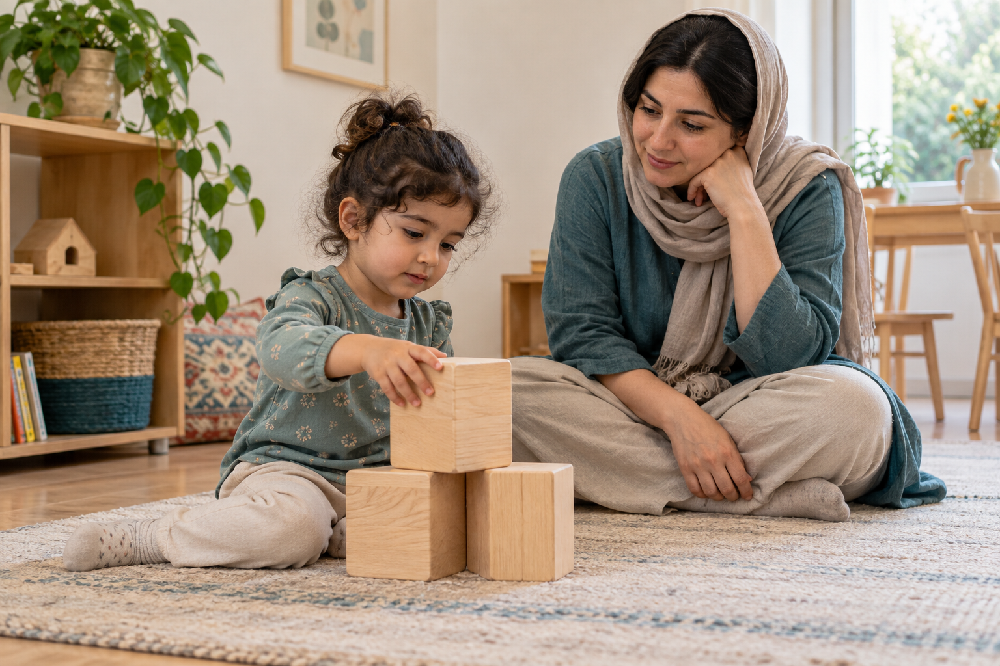
تصویر آموزشی بازسازیشده با هوش مصنوعی
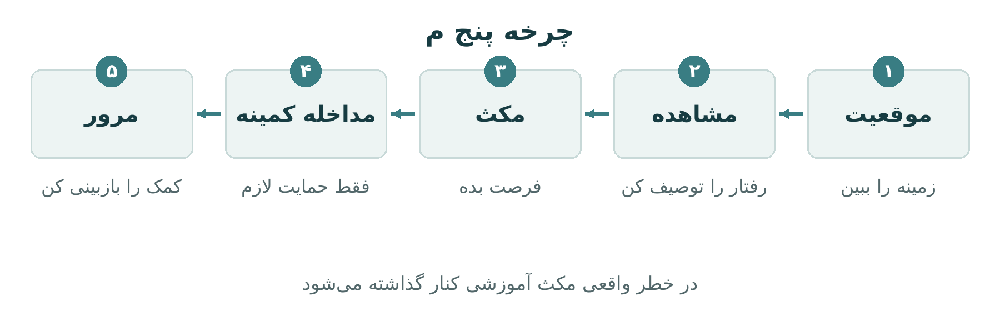
نقشه خواندن این بخش فصلهای ۱ تا ۴
فصل ۱ کودک ۲ تا ۶ ساله چگونه تغییر میکند؟
در این فصل چه میخوانیم؟
وقتی دو کودک همسن کنار هم بازی میکنند، شباهتها زود دیده میشوند؛ تفاوتها معمولاً بیشتر ذهن ما را مشغول میکنند.
«ولی بچه همسنش این کار را میکند...»
آراد سهونیمساله کنار مادرش ایستاده و بازی بچهها را نگاه میکند. دخترخالهاش زودتر وارد جمع شده، نقش گرفته و با صدای بلند حرف میزند. مادر آراد نگاهش را میان آن دو جابهجا میکند. هنوز چند دقیقه نگذشته که آراد یک ماشین برمیدارد و به بازی نزدیک میشود؛ آرام و به شیوهٔ خودش.
مادرش میپرسد: «یعنی از بقیه عقبتره؟»
آن چند دقیقه انتظار، برای مادر پر از سؤال است. برای آراد ممکن است فرصت آشناشدن با آدمها و فضای بازی باشد. فقط از این صحنه نمیدانیم علت تفاوت چیست. برای فهمیدن بیشتر، باید ببینیم او در موقعیتهای دیگر چگونه شروع میکند، چه کارهایی را دوست دارد و چه حمایتی ورودش را آسانتر میکند. مقایسه را میتوان به یک پرسش دقیقتر تبدیل کرد: «آراد برای واردشدن به این بازی به چه چیزی نیاز دارد؟» سن، تجربهٔ قبلی، زبان و شرایط زندگی هر کودک را کنار هم میگذاریم. الگوهای رشد به ما جهت میدهند؛ شناخت همین کودک به ما کمک میکند آن جهت را در زندگی واقعی پیدا کنیم.
برای فهم رشد باید دو واقعیت را همزمان نگه داریم: در رشد کودکان الگوهای قابلشناختی وجود دارد، و در عین حال هر کودک ویژگیها، تجربهها و زمینه زندگی خودش را دارد. چارچوب فعالیت متناسب با رشد نیز تصمیمگیری حرفهای را بر سه ملاحظه بنا میکند: الگوهای مشترک رشد، فردیت هر کودک و بافت اجتماعی، فرهنگی و زبانی رشد او (NAEYC).
پرسش این فصل
چطور تغییرهای کودک را در گذر زمان ببینیم و همزمان سن، تجربه و حمایت موردنیاز او را در نظر بگیریم؟
رشد فقط بلندتر شدن قد، بیشتر شدن واژهها یا بلد شدن عدد و حرف نیست. کودک همزمان در نحوه توجه و درگیرشدن، عاملیت و استقلال، زبان و ارتباط، هیجان و تنظیم، حل مسئله و انعطاف، رابطه و تعامل اجتماعی، و حرکت و تجربه حسی تغییر میکند. این حوزهها از هم جدا نیستند؛ یک تجربه ساده مثل آمادهکردن میز میتواند چند حوزه را همزمان درگیر کند.
قبل از اینکه نتیجه بگیریم
فرض کنید کودکی چهار ساله در یک فعالیت نقاشی دو دقیقه میماند و بعد سراغ ماشینهایش میرود. بزرگسال ممکن است بگوید: «تمرکز ندارد.» اما هنوز اطلاعات زیادی نداریم: آیا فعالیت را خودش انتخاب کرده بود؟ آیا ابزار مناسب بود؟ محیط شلوغ بود؟ کودک خسته بود؟ آیا همین کودک هنگام ساخت مسیر ماشینها مدت طولانیتری درگیر میماند؟ آیا این رفتار فقط امروز دیده شد یا در موقعیتهای مختلف تکرار میشود؟
اصل این کتاب ساده است: مشاهده قبل از تفسیر.
رشد خط صاف نیست
ممکن است کودک در یک حوزه جهش محسوسی نشان دهد و در حوزهای دیگر آهستهتر پیش برود. کودکی میتواند زبان غنی داشته باشد اما برای ورود به بازی گروهی زمان بیشتری بخواهد. کودک دیگری ممکن است از نظر حرکتی جسور باشد اما در موقعیت تازه ابتدا تماشا کند. کودک دیگر ممکن است مسئلههای ساختنی را با پشتکار دنبال کند اما برای پوشیدن لباس هنوز کمک بخواهد.
این تفاوتها بهتنهایی دلیل نمرهگذاری یا برچسبزدن نیستند. در این کتاب بهجای «نمره رشد» به دنبال یک تصویر توصیفی هستیم: کودک در چه موقعیتی چگونه عمل میکند، چه چیزی برایش آسانتر است، کجا نیاز به فرصت یا حمایت دارد و در طول زمان چه تغییری دیده میشود.
هفت حوزهای که در این کتاب میبینیم
حوزه | در این کتاب چه میبینیم؟ |
|---|---|
توجه و درگیری | کودک چگونه وارد فعالیت میشود، چه چیزی او را جذب میکند، چه چیزی باعث قطع فعالیت میشود و آیا بازمیگردد. |
عاملیت و استقلال | تا چه اندازه انتخاب میکند، شروع میکند، تلاش میکند، کمک میخواهد و در کارهای روزمره مشارکت دارد. |
زبان و ارتباط | فقط تعداد واژهها نیست؛ درخواست، اشاره، گفتوگو، روایت، سؤال و رساندن منظور هم مهماند. |
هیجان و تنظیم | هنگام انتظار، ناکامی یا تغییر چه اتفاقی میافتد و چه نوع حمایت به بازگشت او کمک میکند. |
حل مسئله و انعطاف | اگر راه اول جواب نداد چه میکند، آیا راه دیگری امتحان میکند و چگونه از تجربه قبلی استفاده میکند. |
رابطه و تعامل اجتماعی | چگونه نزدیک میشود، وارد بازی میشود، درخواست میکند، مخالفت میکند، نوبت را تجربه میکند و پس از اختلاف بازمیگردد. |
حرکت و تجربه حسی | چگونه از بدن و ابزار استفاده میکند، تعادل و هماهنگی چگونه ظاهر میشوند و با ویژگیهای حسی محیط چگونه روبهرو میشود. |
چهار مسیر سنی
۲ تا ۳ سال | «میخواهم جهان را خودم امتحان کنم»
در این دوره تجربه مستقیم، حرکت، تکرار و شروع استقلال اهمیت زیادی دارند. در ۲ سالگی، CDC نمونههایی مانند ترکیب دو واژه، دویدن، ضربه زدن به توپ و غذا خوردن با قاشق را در چکلیست پایش خود آورده است. تا ۳۰ ماهگی، نمونههایی مانند بازی کنار و گاهی همراه کودکان دیگر، بازی وانمودی ساده، حل مسئله ساده، دنبالکردن دستور دو مرحلهای، درآوردن بعضی لباسها و پریدن با دو پا دیده میشود (CDC, 2026).
معنای عملی این اطلاعات برای والد «آزمون گرفتن» نیست. یعنی محیط فرصت تجربه بدهد: حمل یک لیوان سبک، گذاشتن لباس در سبد، امتحان کردن درِ ظرف پیش از کمک بزرگسال، یا مشارکت کوتاه در یک کار واقعی.
۳ تا ۴ سال | «وانمود میکنم، بیشتر حرف میزنم و به دیگران نزدیک میشوم»
در سهسالگی، CDC از گفتوگوی رفتوبرگشتی، پرسیدن سؤالهای «چه/کجا/چرا»، نامبردن عمل در تصویر، توجه به کودکان دیگر و پیوستن به بازی آنان، پوشیدن بعضی لباسها و استفاده از چنگال بهعنوان نمونههای نقاط عطف نام میبرد. بازی نمادین و نقشآفرینی نیز پیچیدهتر میشوند (CDC, 2026).
اما کودک سهساله هنوز بزرگسال کوچک نیست. در نوبت، اشتراک وسیله، بیان خواسته و کنارآمدن با ناکامی به حمایت نیاز دارد. کمک بزرگسال باید جای تجربه کودک را نگیرد.
۴ تا ۵ سال | «قانون، داستان و رابطه پیچیدهتر میشوند»
در چهار سالگی، CDC نمونههایی مانند نقشبازی کردن، درخواست برای بازی با کودک دیگر، آرامکردن فرد ناراحت، حرفزدن درباره اتفاق روز، پیشبینی ادامه داستان آشنا، گرفتن توپ بزرگ، ریختن آب با نظارت و استفاده دقیقتر از ابزار نوشتن را ذکر میکند (CDC, 2026).
در این دوره معمولاً پیچیدگی تجربه بیشتر میشود: کودک ممکن است برای سازه هدف تعریف کند، درباره نقشها مذاکره کند و سؤالهای بیشتری درباره چرایی پدیدهها بپرسد. این پیچیدگی نباید بهانهای برای تبدیل همه یادگیریها به برگه و تکلیف رسمی شود.
۵ تا ۶ سال | «پیچیدگی بیشتر؛ نه فشار بیشتر»
در پنج سالگی، CDC نمونههایی مانند رعایت نوبت و قانون در بازی، انجام کارهای ساده خانه، روایت داستان با دستکم دو رویداد، ادامه گفتوگو، توجه ۵ تا ۱۰ دقیقهای در بعضی فعالیتهای غیرصفحهای، بستن برخی دکمهها و لیلی روی یک پا را ذکر میکند (CDC, 2026).
اما چکلیست عمومی CDC تا ۵ سال ارائه میشود. بنابراین این کتاب برای ۵ تا ۶ سال «جدول ساختگی بایدهای ششسالگی» تولید نمیکند. در عوض، بر افزایش تدریجی پیچیدگی تمرکز میکنیم: برنامهریزی سادهتر به برنامهریزی چندمرحلهای، توضیح بیشتر درباره انتخاب، تغییر راهبرد، مذاکره پیچیدهتر و مسئولیت بیشتر با حمایت کمتر. NAEYC نیز اصول DAP را برای رشد و یادگیری تا ۸ سال در نظر میگیرد و بر فردیت و بافت تأکید دارد.
مسیرهای رشد از نزدیک
توجه و درگیری
توجه فقط «چند دقیقه نشستن» نیست. علاقه، نوع فعالیت، حرکت، حضور دیگران، دشواری و محیط بر درگیری کودک اثر میگذارند. بهتر است ببینیم کودک چگونه وارد فعالیت میشود، چه چیزی او را نگه میدارد و آیا بعد از وقفه برمیگردد.
عاملیت و استقلال
استقلال به معنی تنها گذاشتن کودک نیست. انتخاب میان دو گزینه، تلاش پیش از کمک، مشارکت در کار واقعی و درخواست کمک همگی بخشی از عاملیتاند. گاهی سؤال اصلی این است: آیا کاری را که کودک میتواند تجربه کند، هنوز من برایش انجام میدهم؟
زبان و ارتباط
رشد زبان فقط تعداد کلمات نیست. اشاره، درخواست، سؤال، گفتوگوی رفتوبرگشتی، روایت، مخالفت و رساندن منظور نیز بخشهای مهم ارتباطاند. کودک چندزبانه باید در مجموعه زبانهای زندگیاش دیده شود، نه فقط در زبانی که در یک محیط خاص کمتر با آن راحت است.
هیجان و تنظیم
هدف این نیست که کودک هیچوقت گریه یا خشم نداشته باشد. میبینیم وقتی هیجان بالا میرود چه اتفاقی میافتد و چه نوع حمایت به بازگشت او کمک میکند. در سالهای اولیه، تنظیم در رابطه با بزرگسال رشد میکند.
حل مسئله و انعطاف
در کودکی مسئله از بازکردن در یک ظرف تا تغییر قانون یک بازی گسترده است. مهم فقط پاسخ درست نیست؛ راهبرد، تلاش دوباره، تغییر روش و استفاده از تجربه قبلی نیز اطلاعات ارزشمندی هستند.
رابطه و تعامل اجتماعی
اجتماعی بودن یک صفت صفر و یک نیست. بعضی کودکان سریع وارد گروه میشوند، بعضی ابتدا مشاهده میکنند. مهمتر از برونگرایی، شیوه نزدیکشدن، درخواست، مخالفت، نوبت، مذاکره و بازگشت به رابطه است.
حرکت و تجربه حسی
حرکت بخش فرعی رشد نیست. بدن وسیله اکتشاف جهان است. گرفتن، رهاکردن، تعادل، دویدن، استفاده از ابزار و تجربه بافتها و صداها در فعالیتهای طبیعی دیده میشوند. پسند یا نپسندیدن یک تجربه حسی در یک جلسه بهتنهایی مبنای تشخیص نیست.
سن مهم است، اما کافی نیست
دو کودک چهارساله الزاماً تجربههای یکسان ندارند. یکی از دو سالگی مهد رفته، دیگری بیشتر در خانه بوده؛ یکی چند زبان میشنود، دیگری یک زبان؛ یکی فرصت فراوان برای استقلال داشته و برای دیگری بیشتر کارها را بزرگسال انجام داده است. NAEYC تأکید میکند که رشد همیشه در زمینه اجتماعی، فرهنگی، زبانی و تاریخی رخ میدهد و هنجارهای پژوهشی نیز نباید بدون توجه به این زمینهها به همه کودکان تعمیم داده شوند.
بنابراین فرهنگ و محیط فقط «مثال» نیستند؛ بخشی از زمینهای هستند که رفتار کودک در آن شکل میگیرد و معنا پیدا میکند.
یک راه درست برای مشارکت وجود ندارد
کتاب نباید فقط کودک پرحرف، فارسیزبان، دارای حرکت معمول و علاقهمند به هر فعالیت را تصور کند. کودکی ممکن است با گفتار، اشاره، انتخاب تصویر، حرکت، تماشا یا انجام بخشی از فعالیت مشارکت کند. تفاوتهای حرکتی، ارتباطی، حسی، زبانی و رشدی باید در طراحی تجربهها دیده شوند.
هدف این فصل این نیست که همه تفاوتها را «مشکل» تعریف کند؛ هدف این است که بین تفاوت فردی و الگویی که واقعاً نیاز به حمایت یا بررسی بیشتر دارد، با داده و روند تمایز بگذاریم.
اول توانمندی، بعد نگرانی
وقتی فقط دنبال چیزی میگردیم که کودک انجام نمیدهد، تصویری ناقص میسازیم. در هر مشاهده ابتدا میپرسیم: کودک چه توانمندی، علاقه یا راهبردی نشان داد؟ بعد به چالش نگاه میکنیم. این نگاه نقاط ضعف را انکار نمیکند؛ فقط کودک را به مشکل تقلیل نمیدهد.
مثلاً کودکی که در بازی گروهی دیر وارد میشود ممکن است در همان موقعیت توانایی مشاهده دقیق، انتخاب همبازی یا دنبالکردن قواعد را نشان دهد. دیدن این نقاط قوت کمک میکند حمایت دقیقتری طراحی شود.
چند باور رایج که باید با احتیاط به آنها نگاه کنیم
باور رایج | نگاه دقیقتر |
|---|---|
«اگر پنج دقیقه ننشیند تمرکز ندارد.» | نوع فعالیت، علاقه، محیط، حرکت و سن مهماند؛ یک مشاهده برای برچسب کافی نیست. |
«اگر اول وارد بازی نشود اجتماعی نیست.» | برخی کودکان ابتدا مشاهده میکنند و بعد وارد تعامل میشوند؛ روند و بافت مهم است. |
«اگر خودش نپوشد وابسته است.» | مهارت، تجربه قبلی، لباس، زمان و نوع حمایت باید دیده شوند. |
«اگر از یک بافت خوشش نیاید مشکل حسی دارد.» | ترجیح یا اجتناب در یک موقعیت بهتنهایی تشخیص ایجاد نمیکند. |
«اگر همسنش جلوتر است، کودک من عقب است.» | مقایسه تنها با کودک دیگر اطلاعات کمی میدهد؛ مسیر خود کودک، زمینه و الگوی رشد مهمترند. |
نقطه عطف رشدی چیست و چیست نیست؟
نقطه عطف رشدی نمونهای از رفتار یا توانایی است که در یک سن مشخص در بسیاری از کودکان دیده میشود. CDC در چکلیستهای فعلی خود نقاطی را در سنهایی قرار داده که انتظار میرود حدود ۷۵ درصد یا بیشتر کودکان تا آن سن آن رفتار را نشان دهند (CDC, 2026).
اما خود CDC صریحاً میگوید این چکلیستها «راهنمای جامع یا استاندارد رشد» نیستند و نباید بهعنوان ابزار غربالگری یا تشخیص استفاده شوند. پس نقطه عطف رشدی نقشهای برای توجه و گفتوگوست؛ نه آزمون قبولی کودک.
چهار سطح را با هم قاطی نکنیم
۱. پایش روزمره رشد (Developmental Monitoring)
خانواده و مربی میتوانند در طول زمان به بازی، زبان، یادگیری، رفتار، حرکت، نگرانیها و نقاط قوت کودک توجه کنند و مشاهدات را با متخصص در میان بگذارند. این پایش روزمره به معنی اجرای آزمون نیست.
۲. Developmental Surveillance در مراقبت سلامت
AAP واژه developmental surveillance را برای فرایند بالینی مستمر در ویزیتهای مراقبت سلامت به کار میبرد: شنیدن نگرانی والد، گرفتن تاریخچه رشد، مشاهده کودک، توجه به عوامل خطر و نقاط قوت، ثبت و بهاشتراکگذاری یافتهها. این فرایند کاری بالینی است و با مشاهده آموزشی مربی یکی نیست (AAP).
۳. غربالگری (غربالگری)
غربالگری از ابزارهای استاندارد و اعتبارسنجیشده استفاده میکند و مکمل surveillance است. مشاهده یک بازی یا چکلیست آموزشی کتاب، غربالگری محسوب نمیشود.
۴. ارزیابی تخصصی و تشخیص
اگر نگرانی نیازمند بررسی بیشتر باشد، ارزیابی تخصصی مرحلهای متفاوت است. یک بازی، یک جلسه مشاهده یا یک چکلیست عمومی نمیتواند جای ارزیابی تشخیصی را بگیرد.
چه زمانی چیزی ارزش پیگیری بیشتری دارد؟
در این کتاب سه واژه را بارها خواهیم دید:
تداوم: الگو در طول زمان ادامه دارد.
گستره: در چند موقعیت یا محیط دیده میشود.
اثر: بهطور معنادار بر مشارکت، ارتباط، یادگیری یا زندگی روزمره اثر میگذارد.
و یک موضوع اهمیت ویژه دارد: پسرفت. اگر کودک مهارتی را که قبلاً داشته از دست بدهد، یا خانواده/مربی نگرانی جدی داشته باشند، CDC و AAP توصیه میکنند نگرانی با متخصص سلامت مطرح شود و در صورت نیاز غربالگری یا ارزیابی مناسب انجام گیرد.
هدف این مسیر ترساندن خانواده نیست؛ هدف این است که حدس و برچسب جای خود را به مشاهده، ثبت و اقدام مناسب بدهد.
علم چه میگوید؟
آنچه نسبتاً میدانیم
رشد چندحوزهای است و تصمیم حرفهای باید هم الگوهای عمومی رشد، هم فردیت کودک و هم بافت او را در نظر بگیرد (NAEYC).
چکلیستهای نقطه عطف رشدی ابزار ارتباط و پایشاند و جایگزین غربالگری استاندارد یا تشخیص نیستند (CDC).
AAP developmental surveillance را فرایند بالینی مستمر میداند و غربالگری را مرحلهای ساختاریافته با ابزارهای استاندارد معرفی میکند.
از دست دادن مهارت یا نگرانی پایدار ارزش پیگیری حرفهای دارد (CDC/AAP).
آنچه این اطلاعات به ما نمیگویند
از یک رفتار نمیتوان ADHD، اوتیسم، اختلال زبان یا یک مشکل حسی را نتیجه گرفت.
یک نقطه عطف رشدی برای پیشبینی هوش یا آینده تحصیلی کودک طراحی نشده است.
تفاوت با کودک همسن بهتنهایی نشاندهنده اختلال یا عقبماندگی نیست.
یک مشاهده کوتاه علت رفتار را مشخص نمیکند.
در خانه چه میتوان کرد
بهجای مقایسهٔ امروز کودک با دیگری، یک موقعیت مشابه از چند هفتهٔ قبل را به یاد بیاورید. چه چیزی در شروع، ادامه یا کمکخواستن او تغییر کرده است؟
وقتی کاری دشوار است، ابتدا ببینید کودک کدام قسمت را انجام میدهد. همان قسمت، نقطهٔ خوبی برای انتخاب کمک بعدی است.
اگر نگرانی دارید، آن را با یک نمونهٔ روشن بیان کنید. «در این موقعیت چنین اتفاقی افتاد» برای گفتوگو مفیدتر از «از بقیه عقبتر است» خواهد بود.
به علاقهها و نقاط قوت همانقدر توجه کنید که به چالشها.
رشد را در طول زمان و در چند موقعیت ببینید.
اگر نگرانی پایدار یا پسرفت میبینید، برای اطمینان فقط مقایسه نکنید؛ با متخصص مناسب گفتوگو کنید.
در مهد یا کارگاه
در شروع یک فعالیت، برای تماشا و آشناشدن جا بگذارید. اگر کودکی دیرتر میپیوندد، پیش از تفسیر رفتار او، زبان دعوت، دسترسی به وسایل و شیوهٔ ورود به گروه را بررسی کنید.
بهجای «علی تمرکز کمی دارد» میتوان نوشت: «در فعالیت گروهی نقاشی بعد از حدود سه دقیقه از میز فاصله گرفت؛ در ساخت مسیر ماشین حدود دوازده دقیقه درگیر ماند.» این نوع ثبت برای تصمیم آموزشی و گفتوگو با خانواده اطلاعات بیشتری ایجاد میکند.
یک تجربه برای این هفته
این هفته فقط یک موقعیت آشنا را انتخاب کنید.
مثلاً ورود به بازی یا پوشیدن لباس. یک بار بنویسید کودک چه کرد و کجا کمک خواست. بار بعد به همان موقعیت برگردید. دنبال تغییر قابل مشاهده باشید؛ برای کودک نمره نسازید.
همراهی در موقعیتهای روزمره
از شناخت رشد تا همراهی روزمره کودک
شناخت رشد کودک قرار نیست ما را تبدیل به بازرس رشد کند. هدف این نیست که هر رفتار کودک را با جدول مقایسه کنیم؛ هدف این است که بفهمیم پشت رفتار کودک چه فرصتی برای حمایت وجود دارد.
کودک ۳ سالهای که هنگام پوشیدن لباس میگوید «خودم»، در حال تجربه عاملیت است. کودک ۴ سالهای که برای یک جعبه مقوایی داستان میسازد، در حال تمرین تخیل، زبان و حل مسئله است. کودک ۵ سالهای که قانون جدیدی برای بازی پیشنهاد میدهد، در حال تجربه مذاکره و انعطاف است.
سه سؤال قبل از اینکه کمک کنیم
۱. آیا واقعاً نمیتواند یا فقط هنوز تمرین نکرده است؟
به جای انجام سریع کار، فرصت امتحان کردن بدهیم و فقط به اندازه نیاز حمایت کنیم.
۲. آیا محیط فرصت داده است؟
پیش از نتیجهگیری درباره توانایی کودک، ابزار، اندازه، زمان و شرایط محیط را بررسی کنیم.
۳. کودک چه چیزی را خوب انجام میدهد؟
در کنار چالشها، علاقهها، راهبردها و توانمندیهای کودک را هم ثبت کنیم.
راهنمای سریع برای والدین
۲ تا ۳ سال: فرصت لمس، امتحان، اشتباه و انجام کارهای ساده واقعی فراهم شود.
۳ تا ۴ سال: به بازی وانمودی و داستانسازی کودک فضا داده شود.
۴ تا ۵ سال: فرصت انتخاب، مذاکره و ساختن قانون در بازی ایجاد شود.
۵ تا ۶ سال: به جای فشار بیشتر، تجربههای پیچیدهتر و چندمرحلهای فراهم شود.
برای مربی: یک تغییر کوچک در نگاه
به جای پرسیدن «چرا این کودک همکاری نمیکند؟» بهتر است بپرسیم: «در چه شرایطی همکاری بیشتر یا کمتر دیده میشود؟»
فعالیت هفت روزه فصل ۱: کودک واقعی را ببین
هر روز یک دقیقه یک رفتار کودک را بدون برچسب ثبت کنید. به جای «امروز بیحوصله بود»، بنویسید چه چیزی دیدید و شنیدید. پس از هفت روز بررسی کنید چه چیزهایی کودک را جذب میکند و چه حمایتهایی به او کمک میکند.
جمله کلیدی فصل ۱
رشد کودک چیزی نیست که فقط اندازه بگیریم؛ چیزی است که باید یاد بگیریم ببینیم.
مقایسه را به سؤال تبدیل کنیم
در جمع خانوادگی، بهجای گفتن «همسنش بهتر حرف میزند»، یک موقعیت مشخص انتخاب کنید: کودک وقتی چیزی میخواهد چگونه منظورش را میرساند؟ اگر به لیوان اشاره میکند، همان ارتباط را ببینید و با جمله کوتاه پاسخ بدهید. برای اینکه تواناییاش را ثابت کند از او اجرای شعر یا حرف زدن در جمع نخواهید. تفاوت عملکرد در دو موقعیت میتواند درباره آشنایی، زبان یا فشار محیط اطلاعات بدهد.
مرور پس از یک هفته
یک موقعیت را که مشارکت در آن راحتتر شد به خاطر بیاورید. چه چیزی عوض شده بود: ابزار، زمان، همراه یا شیوه دعوت؟ تصمیم بعدی را از همین تفاوت بگیرید. هدف، تهیه فهرست عقبماندگیها نیست. نگرانی مشخص درباره رشد را نیز با مقایسههای خانوادگی حل نکنید؛ آن را با فرد حرفهای مناسب در میان بگذارید.
پایان فصل
این هفته... | پیشنهاد |
|---|---|
بیشتر ببین | کودک در چه فعالیتهایی خودش بیشتر وارد میشود و چه نقاط قوتی نشان میدهد. |
کمتر انجام بده | مقایسه مستقیم و سریع با کودک دیگر. |
امتحان کن | در یک کار روزمره که معمولاً برایش انجام میدهی، کمی بیشتر فرصت تجربه به خودش بده. |
از خودت بپرس | دارم کودک واقعی روبهرویم را میبینم یا تصویری را که فکر میکنم «باید» باشد؟ |
شناخت رشد از کنار هم گذاشتن مشاهدههای کوچک ساخته میشود. هر بار که شرایط و سهم کودک را دقیقتر میبینیم، انتخاب حمایت بعدی هم روشنتر میشود.
از اینجا سؤال طبیعی فصل بعد شکل میگیرد: اگر رشد را مسابقه نمیبینیم، بازی در این مسیر چه جایگاهی دارد؟
منابع منتخب فصل
Centers for Disease Control and Prevention (CDC). Learn the Signs. Act Early. Developmental Milestones: 2 Years, 30 Months, 3 Years, 4 Years, 5 Years;
Centers for Disease Control and Prevention (CDC). Key Points about CDC’s Developmental Milestone Checklists; updated February 2026.
National Association for the Education of Young Children (NAEYC). Developmentally Appropriate Practice: Core Considerations to Inform Decision Making.
U.S. Office of Head Start. Head Start Early Learning Outcomes Framework: Ages Birth to Five.
American Academy of Pediatrics (AAP). Developmental Surveillance and Screening Patient Care.
فصل ۲ بازی، کار کودک است؛ اما هر بازی آموزش نیست
در این فصل چه میخوانیم؟
گاهی کودک سرگرم بازی است و ما هنوز دنبال فرصتی میگردیم که چیزی به او یاد بدهیم.
«خب حالا از این بازی چی یاد گرفت؟»
چند ظرف و تکهپارچه روی زمین است. کودک یکی از ظرفها را کلاه میکند و پارچه را روی صندلی میاندازد: «این خونهمه.» بزرگسال کنارش مینشیند و میپرسد: «چه رنگیه؟ چند تا ظرف داریم؟» کودک لحظهای از داستانش بیرون میآید. حالا باید تصمیم بگیرد بازی را ادامه بدهد یا جواب سؤالها را پیدا کند.
پرسیدن رنگ و تعداد میتواند در موقعیت دیگری مفید باشد. اینجا اول باید بفهمیم کودک مشغول چه کاری بود و سؤال ما چه چیزی به آن اضافه میکند. شاید دعوت به نقشگرفتن، مثل «مهمون قبول میکنی؟»، به داستان او نزدیکتر باشد.
بزرگسال گاهی محیط را آماده میکند، گاهی سرنخ میدهد و گاهی چیزی را مستقیم آموزش میدهد. انتخاب میان این راهها به هدف و موقعیت بستگی دارد. در بازی، سهم کودک را دنبال کنید: آیا هنوز میتواند انتخاب کند، مسیر را عوض کند و ایدهای از خودش بیاورد؟
پرسش این فصل
چه وقت همراهی ما بازی را غنیتر میکند و چه وقت آن را به انجام خواستههای خودمان میکشاند؟
بازی و آموزش دو جعبه جدا نیستند
NAEYC پیشنهاد میکند تجربههای اوان کودکی را روی پیوستاری از بازی خودراهبر کودک تا آموزش مستقیم بزرگسال ببینیم. در میانه این پیوستار، بازی هدایتشده قرار میگیرد. در راهنمای DAP نیز تأکید شده است که نه واگذار کردن تمام برنامه به بازی آزادِ صرف و نه غالب کردن آموزش مستقیم، بهتنهایی یک برنامه باکیفیت اوان کودکی نمیسازد.
پس سؤال حرفهای این کتاب «کدام روش همیشه بهتر است؟» نیست. سؤال این است: برای این کودک، در این موقعیت و برای این هدف، چه میزان هدایت واقعاً لازم است؟
یک تفکیک کلیدی: نیت بزرگسال با تجربه کودک یکی نیست
بزرگسال ممکن است نیت آموزشی داشته باشد، اما کودک هنوز تجربهای بازیگونه و دارای اختیار داشته باشد. برعکس، ممکن است فعالیت رنگارنگ، خندهدار یا دارای اسباببازی باشد ولی تمام تصمیمها از قبل توسط بزرگسال گرفته شده باشند.
در این کتاب دو سؤال را جدا نگه میداریم: «بزرگسال چه هدفی دارد؟» و «کودک واقعاً چه میزان اختیار و امکان اثرگذاری بر تجربه دارد؟» این تفکیک، یک ابزار تحریری کتاب است؛ نه یک آزمون علمی.
بازی را چگونه میشناسیم؟
تعریف واحدی که تمام شکلهای بازی را بدون اختلاف پوشش دهد وجود ندارد. در DAP، انتخاب، شگفتی/کنجکاوی و لذت از ویژگیهای مهم تجربه بازیاند. برای این کتاب، نشانه مهم این است که کودک فقط اجراکننده دستور نباشد: جایی واقعی برای انتخاب، ادامهدادن، تغییر مسیر، معنا دادن یا نپیوستن داشته باشد.
از اینجا به بعد، اصطلاح اصلی کتاب «بازی خودراهبر/کودکراهبر» است. واژه «بازی آزاد» را فقط بهعنوان اصطلاح رایج به کار میبریم، چون در منابع مختلف میتواند معنای یکسانی نداشته باشد.
چهار ایستگاه عملی کتاب
چهار ایستگاه زیر یک طبقهبندی داخلی برای دیدن میزان هدایت بزرگسال هستند. آنها مدل روانسنجی یا طبقهبندی اعتبارسنجیشده نیستند. پشتوانه بیرونی ما، اصل پیوستار بازی با هدایت خود کودک تا آموزش مستقیم است.
ایستگاه | نیت بزرگسال | عاملیت کودک | نقش بزرگسال | نمونه |
|---|---|---|---|---|
۱. بازی خودراهبر | ممکن است فقط فراهمکردن فرصت باشد | بالا؛ کودک آغاز/مسیر را تا حد زیادی تعیین میکند | زمان، محیط، ایمنی، حضور پاسخگو؛ ورود بدون تصاحب | کودک با پارچه و ظرفها جهان خودش را میسازد. |
۲. بازی هدایتشده | هدف یادگیری مشخص وجود دارد | معنادار و واقعی باقی میماند | محیط/هدف را طراحی میکند و با سؤال، اشاره یا ماده تازه انعطافپذیر هدایت میکند | چند شکل فراهم میشود و کودک راههای مختلف دستهبندی را پیدا میکند. |
۳. فعالیت بازیوار ساختارمند | قانون یا ساختار پایه مشخص است | درون ساختار انتخاب و عمل دارد | قانون کوتاه، تنظیم دشواری، حفظ لذت و امکان خطا | حرکت/توقف با یک علامت. |
۴. آموزش مستقیم | اطلاعات، مدل یا روش مشخص باید منتقل شود | کمتر در تعیین توالی، اما میتواند در پاسخ/تمرین مشارکت کند | توضیح یا مدلسازی کوتاه و هدفمند | نشاندادن استفاده ایمن از ابزار یا معرفی واژه دقیق. |
۱. بازی خودراهبر؛ وقتی لازم نیست چیزی را «مفیدتر» کنیم
در بازی خودراهبر، کودک نقش اصلی در آغاز و هدایت تجربه دارد. ممکن است چیزی را بارها تکرار کند، چند دقیقه فقط مشاهده کند یا داستانی بسازد که از نگاه بزرگسال منطق مشخصی ندارد. ارزش این زمان فقط در محصول یا مهارتی که بتوانیم همان لحظه نامگذاری کنیم خلاصه نمیشود.
AAP نیز در گزارش بالینی «Power of Play» از اهمیت بازی رشدمتناسب، از جمله زمان بازی بدون ساختار، در کنار سایر شکلهای یادگیری حمایت کرده است؛ این گزارش در ژانویه ۲۰۲۵ دوباره تأیید شد. این منبع یک گزارش بالینی/راهنمای حرفهای است، نه کارآزمایی درباره هر شکل خاص بازی.
کودکراهبر یعنی بزرگسال غایب؟
نه. بزرگسال میتواند محیط را آماده و ایمن کند، مواد متناسب فراهم کند، زمان بازی را حفظ کند، به نشانههای کودک پاسخ دهد و اگر دعوت شد وارد رابطه شود. تفاوت در این است که بازی را برای رسیدن به پاسخ ازپیشتعیینشده تصاحب نمیکند.
۲. بازی هدایتشده؛ سه شرطی که باید همزمان ببینیم
برای اینکه فعالیتی را در این کتاب بازی هدایتشده بنامیم، سه جزء را همزمان بررسی میکنیم:
هدف یا نیت یادگیریِ روشن از سوی بزرگسال وجود دارد.
کودک عاملیت واقعی دارد؛ فقط پاسخدهنده به زنجیره سؤالهای بزرگسال نیست.
هدایت بزرگسال انعطافپذیر و حساس به عمل کودک است؛ میتواند سؤال، اشاره، مدل بسیار کوتاه، تغییر محیط یا افزودن ماده باشد.
این سهگانه، ترکیبی تحریری از توصیف DAP و یافتههای مرور Skene و همکاران است؛ آن را «معیار تشخیصی بازی هدایتشده» معرفی نمیکنیم.
مرور نظاممند Skene و همکاران ۳۹ مطالعه را بررسی کرد و ۱۷ مطالعه با مجموع ۳۸۹۳ کودک ۱ تا ۸ سال وارد فراتحلیل شدند. بازی هدایتشده در مقایسه با آموزش مستقیم برای بعضی پیامدهای ریاضی اولیه، شناخت شکل و تغییر تکلیف و در مقایسه با بازی آزاد برای واژگان فضایی اثرات مثبت نشان داد؛ برای بسیاری از پیامدهای دیگر تفاوت واضحی دیده نشد. نویسندگان همچنین ناهمگونی قابل توجهی در تعریف و اجرای بازی هدایتشده گزارش کردند.
بنابراین جمله علمی کتاب این است: بازی هدایتشده در برخی پیامدها و موقعیتها میتواند مفید باشد؛ نه اینکه برای هر کودک و هر هدف از همه روشهای دیگر بهتر باشد.
هدایت فقط سؤال پرسیدن نیست
یکی از خطاهای رایج این است که بازی هدایتشده را با «زیاد سؤال پرسیدن» یکی بدانیم. گاهی بهترین هدایت، تغییر محیط، اضافهکردن یک شیء، کوتاهکردن یک نشانه یا فقط مکث است. اگر سؤالهای بزرگسال آنقدر زیاد شوند که مسیر فکر کودک را تعیین کنند، فعالیت ممکن است عملاً به آموزش مستقیم نزدیک شود.
۳. فعالیت بازیوار ساختارمند؛ اسم علمی جدید نمیسازیم
بعضی فعالیتهای کتاب قانون مشخصی دارند؛ برای مثال «با علامت سبز حرکت کن و با قرمز بایست». اینها از بازی خودراهبر ساختار بیشتری دارند و همیشه با تعریف دقیق بازی هدایتشده جور درنمیآیند. برای شفافیت تحریری، آنها را «فعالیت بازیوار ساختارمند» مینامیم.
این نام فقط نشان میدهد بزرگسال ساختار پایه را تعیین کرده است. برای خود این دسته هیچ ادعای اثر مستقلی نداریم.
۴. آموزش مستقیم؛ ابزار است، نه دشمن
NAEYC آموزش مستقیم را یکی از ابزارهای حرفهای میداند. گاهی توضیح یا مدلسازی کوتاه از هر سؤال بازتری مناسبتر است؛ مثلاً وقتی ایمنی مطرح است، روش استفاده از ابزار باید دقیق نشان داده شود، واژهای مشخص لازم است، یا کودک برای شروع نیاز به مدل کوتاه دارد.
مشکل آموزش مستقیم، «وجود آن» نیست؛ مشکل وقتی است که شکل غالب تجربه شود و فرصت انتخاب، حرکت، اکتشاف، بازی و مشارکت کودک را کنار بزند.
درخت تصمیم ۳۰ ثانیهای
سؤال | اگر پاسخ «بله» است... | اگر پاسخ «نه» است... |
|---|---|---|
آیا کودک همین حالا در یک بازی خودراهبرِ درگیرکننده است؟ | اول دلیل دخالت را روشن کن؛ شاید بهترین کار مشاهده باشد. | به سؤال بعد برو. |
آیا هدف مشخصی دارم که بدون کمک من دشوار است؟ | بازی هدایتشده یا آموزش مستقیم کوتاه ممکن است مناسب باشد. | فضای اختیار را بیشتر کن. |
آیا راهنمایی من میتواند کمتر شود؟ | کمترین مداخله کافی را انتخاب کن. | اگر ایمنی/ضرورت مطرح است، ساختار لازم را حفظ کن. |
بعد از دخالت، هنوز کودک تصمیم واقعی دارد؟ | احتمالاً عاملیت حفظ شده است. | بررسی کن آیا فعالیت را بیش از حد تصاحب کردهای. |
سن چه چیزی را تغییر میدهد؟
جدول زیر «استاندارد خارجیِ بایدهای سنی» نیست؛ جهت طراحی داخلی کتاب بر اساس معماری آموزشی کتاب و فصل ۱ است.
بازه | جهت طراحی |
|---|---|
۲–۳ سال | تجربه حسیحرکتی، تکرار، بازی وانمودی ساده؛ هدایت بیشتر از راه محیط و مدل بسیار کوتاه تا سؤالهای طولانی. |
۳–۴ سال | انتخاب، نقشبازی، گفتوگوی کوتاه و قانون ساده بیشتر میشود؛ پیشنهادهای محدود و کوتاه مناسبترند. |
۴–۵ سال | قانون، روایت و حل مسئله پیچیدهتر میشوند؛ بازی هدایتشده میتواند انتخابهای بیشتری درون هدف داشته باشد. |
۵–۶ سال | پروژه، مذاکره و برنامهریزی پیچیدهتر میشوند؛ آموزش مستقیم کوتاه میتواند در کنار بازی و پروژه بماند، نه جای آنها. |
عاملیت یعنی «هر کاری خواست»؟
نه. عاملیت یعنی در تجربه جای واقعی برای تصمیم و اثرگذاری وجود داشته باشد. مرزهای ایمنی، حقوق دیگران و بعضی روالهای ضروری میتوانند ثابت باشند. حتی داخل یک ساختار، کودک میتواند میان ابزارها، نقشها، ترتیب، روش پاسخ یا سطح چالش انتخاب داشته باشد.
برای کودکی با ارتباط کلامی محدود، عاملیت میتواند اشاره به تصویر یا دادن یک قطعه باشد؛ برای کودکی دیگر، انتخاب نقش یا تماشای اولیه پیش از ورود. یک راه درست برای مشارکت وجود ندارد.
حق نپیوستن؛ اما با یک مرز روشن
اگر فعالیت پیشنهادی اختیاری است، نپیوستن، توقف یا انتخاب راه دیگری باید تا حد امکان معتبر باشد. اما این اصل با موقعیتهای ایمنی و برخی ضرورتهای زندگی روزمره یکی نیست؛ مثلاً بستن کمربند ایمنی یا شستن دست در موقعیت لازم، «بازی اختیاری» محسوب نمیشود.
پس حق نپیوستن را برای محافظت از عاملیت کودک به کار میبریم، نه برای حذف مرزهای ایمن و مسئولانه.
چهار خطای رایج بزرگسال
خطا | چرا مشکلساز است؟ | جایگزین |
|---|---|---|
«از هر بازی باید چیزی یاد بگیرد.» | بازی را به تمرین دائمی تبدیل میکند. | بپذیر که بعضی بازیها فقط برای رابطه، لذت، تخیل و اکتشافاند. |
«بازی هدایتشده یعنی زیاد سؤال بپرسم.» | ممکن است هدایت را به آزمون شفاهی تبدیل کند. | گاهی با محیط، اشاره، مکث یا یک سؤال کوتاه هدایت کن. |
«اگر هدف آموزشی دارم، بازی دیگر واقعی نیست.» | نیت بزرگسال را با تجربه کودک یکی میگیرد. | ببین کودک هنوز چه مقدار عاملیت واقعی دارد. |
«آموزش مستقیم قدیمی و بد است.» | یک ابزار حرفهای مفید را حذف میکند. | کوتاه، روشن و هدفمند استفاده کن؛ نه بهعنوان شکل غالب همه تجربهها. |
علم چه میگوید؟
آنچه نسبتاً میدانیم
NAEYC برای محیط باکیفیت ترکیبی از بازی با هدایت خود کودک، بازی هدایتشده و آموزش مستقیم را توصیه میکند و بر فرصتهای مکرر برای اختیار و نقش فعال کودک تأکید دارد.
بازی هدایتشده در فراتحلیل ۲۰۲۲ برای بعضی پیامدها مزیت نشان داده است، اما نه برای همه پیامدها و نه با یک تعریف اجرایی کاملاً یکنواخت.
AAP بر اهمیت بازی رشدمتناسب و زمان بازی بدون ساختار در کنار سایر شکلهای یادگیری تأکید دارد؛ گزارش «Power of Play» در ژانویه ۲۰۲۵ دوباره تأیید شده است.
راهنماهای NAEYC و AAP توصیههای حرفهای و تلفیق شواهد هستند؛ آنها بهتنهایی اثبات علّیِ اثر یک فعالیت خاص محسوب نمیشوند.
آنچه نمیتوانیم بگوییم
بازی هدایتشده همیشه از بازی خودراهبر یا آموزش مستقیم بهتر است.
هر فعالیتی که شاد، رنگارنگ یا دارای اسباببازی است «بازی» محسوب میشود.
هر دقیقه بازی باید هدف آموزشی قابلاندازهگیری داشته باشد.
چهار ایستگاه این کتاب مدل علمی اعتبارسنجیشده هستند.
پاسخ کودک در یک نوع فعالیت ثابت میکند که همان روش برای تمام یادگیریهای او بهترین است.
در خانه چه میتوان کرد
پیش از اولین سؤال، چند لحظه به کاری که کودک ساخته نگاه کنید. موضوع بازی را از عمل او پیدا کنید.
اگر میخواهید وارد بازی شوید، یک نقش یا پیشنهاد کوچک بیاورید و منتظر پاسخ او بمانید.
برای آموزش یک کار ضروری، توضیح مستقیم و کوتاه بدهید. لازم نیست هر آموزش را پشت ظاهر بازی پنهان کنیم.
اگر لازم است چیزی را نشان بدهید، مستقیم و کوتاه نشان بدهید؛ مجبور نیستید همه چیز را با سؤال کشفمحور آموزش بدهید.
اگر فعالیت اختیاری را نخواست، نپیوستن را شکست آموزشی حساب نکنید.
در مهد یا کارگاه
پیش از آمادهکردن فعالیت، هدف خود را بنویسید و سپس انتخابهای واقعی کودک را مشخص کنید. اگر همهٔ قدمها و پاسخها از قبل تعیین شدهاند، نام و شکل فعالیت را با همین واقعیت هماهنگ کنید.
اگر از یک راهنما یا پژوهش برای انتخاب روش استفاده میکنید، به نوع منبع توجه کنید: راهنمای حرفهای درباره شیوه اجرا با کارآزمایی یا فراتحلیل اثر یکسان نیست. در این کتاب قدرت جمله باید با قدرت منبع متناسب باشد.
یک تجربه برای این هفته
در یک بازی آشنا، یکی از سؤالهای همیشگی خود را حذف کنید.
بهجایش کاری را که میبینید توصیف کنید: «پارچه را روی صندلی گذاشتی.» بعد ببینید کودک داستان را چگونه ادامه میدهد.
این فصل چه چیزی را به آزمون تبدیل نمیکند؟
اگر کودک در بازی خودراهبر ایدههای زیادی نشان نداد، نمیتوان درباره خلاقیتش حکم داد. اگر در بازی هدایتشده به هدف نرسید، نمیتوان درباره هوش یا ظرفیت یادگیری او نتیجه گرفت. اگر فعالیت ساختارمند را نخواست، این بهتنهایی «مشکل همکاری» نیست. و پاسخ خوب به آموزش مستقیم دلیلی نیست که تمام یادگیری او را مستقیم کنیم.
همراهی در موقعیتهای روزمره
بازی همیشه لازم نیست به درس تبدیل شود. گاهی ارزش بازی در انتخاب، تخیل، رابطه و تجربه کردن است.
سه سؤال قبل از ورود بزرگسال به بازی:
۱. آیا کودک از من کمک خواسته است یا فقط در حال کشف کردن است؟
۲. آیا دخالت من تجربه کودک را غنیتر میکند یا مسیر او را میگیرد؟
۳. آیا میتوانم با حضور کمتر، فرصت بیشتری ایجاد کنم؟
تمرین والد و مربی: روزی ده دقیقه یک بازی را فقط مشاهده کنید و تلاش کنید سؤال امتحانی نپرسید. ببینید کودک چه مسیرهایی را خودش ایجاد میکند.
وقتی بازی به امتحان تبدیل میشود
کودک قطعهها را روی زمین ردیف میکند و بزرگسال میپرسد «این چه رنگیه؟ چند تاست؟ بعدیش چیه؟». ممکن است هر سؤال بهتنهایی مناسب باشد، اما رفتوبرگشت بازی را قطع کند. یک بار فقط بگویید «قطعهها رو پشت هم گذاشتی» و ببینید کودک چه ادامهای میسازد. اگر هدف آموزشی دارید، آن را برای خود روشن کنید و با یک پیشنهاد کوتاه وارد شوید.
انتخاب واقعی را بررسی کنیم
دو گزینه زمانی انتخاباند که هر دو پذیرفتنی باشند. اگر فقط پاسخ مورد علاقه شما به ادامه بازی منتهی میشود، کودک عملاً انتخابی ندارد. این هفته یک پیشنهاد ردشده را بپذیرید و ببینید مسیر بازی چگونه عوض میشود. قواعد ایمنی همچنان روشن و ثابت میمانند.
پایان فصل
این هفته... | پیشنهاد |
|---|---|
بیشتر ببین | در هر تجربه، بزرگسال چه هدفی دارد و کودک چه تصمیم واقعیای دارد؟ |
کمتر انجام بده | تبدیل خودکار بازی به سؤال و تمرین. |
امتحان کن | یک بازی هدایتشده واقعی: هدف داشته باش، اما راهحل را از کودک نگیر. |
از خودت بپرس | اگر من یک قدم عقبتر میرفتم، آیا چیزی از کیفیت تجربه کم میشد؟ |
ارزش بازی را میتوان در خود تجربه دید: کودک چه چیزی انتخاب کرد، چه تغییری داد و چگونه با دیگران همراه شد؟ برای پاسخ به این پرسشها، لازم نیست هر نوبت به یک درس تبدیل شود.
فصل بعد از سؤال دیگری شروع میشود: وقتی کودک بازی میکند، ما دقیقاً چه چیزی را میبینیم و چه چیزی را فقط تفسیر میکنیم؟
منابع منتخب فصل
National Association for the Education of Young Children (NAEYC). Developmentally Appropriate Practice: Principles of Child Development and Learning and Implications That Inform Practice.
NAEYC. DAP: Teaching to Enhance Each Child’s Development and Learning.
NAEYC. The Power of Playful Learning in the Early Childhood Setting. Young Children, Summer 2022.
Skene K, O’Farrelly CM, Byrne EM, Kirby N, Stevens EC, Ramchandani PG. (2022). Can guidance during play enhance children’s learning and development in educational contexts? Child Development, 93(4), 1162–1180. https://doi.org/10.1111/cdev.13730.
Yogman M, Garner A, Hutchinson J, Hirsh-Pasek K, Golinkoff RM. (2018). The Power of Play: A Pediatric Role in Enhancing Development in Young Children. Pediatrics, 142(3), e20182058. Reaffirmed January 2025.
یادداشت روششناختی: NAEYC و AAP در این فصل عمدتاً برای توصیههای شیوه اجرا و چارچوب حرفهای استفاده شدهاند؛ ادعاهای اثر بازی هدایتشده بر مرور نظاممند/فراتحلیل متکیاند. سطح شواهد به ادعا تعلق دارد، نه به نام رویکرد.
فصل ۳ مشاهده قبل از تفسیر
در این فصل چه میخوانیم؟
یک واژه مثل «لجباز» میتواند گفتوگو را زود تمام کند؛ یک شرح روشن، تازه راه فکرکردن را باز میکند.
«امروز خیلی لجباز بود»
مربی میگوید: «سارا امروز خیلی لجباز بود.» میپرسیم چه اتفاقی افتاد. هنگام جمعکردن خمیر، سارا گفت «نمیخوام»، ظرف را کنار زد و کنار میز ماند. وقتی مربی پیشنهاد کرد ظرف را نگه دارد، سارا خمیر را برداشت و داخل آن گذاشت.
حالا چیزی داریم که میتوان به آن برگشت: زمان جمعکردن، گفتهٔ سارا، کنارزدن ظرف و تغییری که پس از پیشنهاد کمک رخ داد. هنوز علت را نمیدانیم. شاید پایان ناگهانی بازی، دشواری کار یا مسئلهٔ دیگری در میان بوده باشد؛ هرکدام به اطلاعات بیشتری نیاز دارد.
در ثبت مشاهده، فعلها به کار ما میآیند: برداشت، کنار رفت، نگاه کرد، گفت، کمک خواست. برداشت خودمان را هم میتوانیم بنویسیم، اما جدا از اتفاق. این جداسازی کمک میکند فرد دیگری نیز موقعیت را بفهمد و دربارهٔ قدم بعدی با ما فکر کند.
پرسش این فصل
چطور آنچه دیده و شنیدهایم را روشن بنویسیم و برداشت خودمان را از آن جدا نگه داریم؟
مشاهده یعنی چه؟
Head Start مشاهده را توجه آگاهانه به رفتارها، تعاملها، فعالیتها و علایق کودک برای یادگیری بیشتر درباره او توصیف میکند. مشاهده در این کتاب «زیر نظر گرفتن دائم» یا امتحان گرفتن نیست؛ توجه هدفمند و محدود برای فهم بهتر موقعیت است.
NAEYC نیز مشاهده، مستندسازی و ارزیابی را از فرایندهای مهم برنامهریزی آموزشی میداند، اما تأکید میکند روشها باید از نظر رشدی، فرهنگی و زبانی پاسخگو باشند و ارزیاب نسبت به سوگیریهای آشکار و ضمنی هوشیار باشد.
سه لایه را از هم جدا کنیم
لایه | سؤال | نمونه |
|---|---|---|
۱. مشاهده / داده | دقیقاً چه دیدم و شنیدم؟ | «آرین ماشین را از دست امیر گرفت و گفت: مال منه.» |
۲. تفسیر | به نظرم این رفتار چه معنایی دارد؟ | «شاید برای گرفتن نوبت هنوز به راه دیگری نیاز دارد.» |
۳. فرضیه قابل بررسی | چه چیزی را باید در موقعیتهای بعدی ببینم؟ | «آیا وقتی نوبت با نشانه روشن میشود، گرفتن مستقیم وسیله کمتر میشود؟» |
تفسیر ممنوع نیست. Head Start نیز تأکید میکند برداشتها و بینشهای مربی ارزشمندند؛ اما ابتدا به اطلاعات دقیق و واقعی نیاز داریم تا بعد بتوانیم نتیجهگیری را بررسی کنیم. مسئله این است که «داده» و «برداشت» را در یک جمله مخلوط نکنیم.
«عینی» یعنی بیاحساس یا کاملاً بیطرف؟
نه. هیچ مشاهدهگری خارج از تجربه، انتظار و فرهنگ خودش نیست. هدف این کتاب ادعای «بیطرفی کامل» نیست؛ هدف این است که تا جای ممکن آنچه دیده و شنیده شده را از حدس درباره نیت، احساس یا شخصیت کودک جدا کنیم و بعد برداشت خودمان را قابل بازبینی نگه داریم.
NAEYC صریحاً از مربیان میخواهد امکان سوگیری آشکار و ضمنی را در ارزیابی در نظر بگیرند. بنابراین «مشاهده عینی» در این کتاب یعنی دقیق، قابلردیابی و محتاط؛ نه ادعای حذف کامل سوگیری.
چه چیزهایی واقعاً قابل مشاهدهاند؟
عمل: چه کرد؟
کلام: دقیقاً چه گفت؟ در صورت اهمیت، نقلقول کوتاه.
ژست و حالت قابل مشاهده: دستش را عقب کشید، صورتش را برگرداند، به کودک دیگر نزدیک شد.
محصول یا ساخت: سه بلوک را روی هم گذاشت، دو شکل کشید، قطعات را بر اساس رنگ جدا کرد.
زمان و توالی: قبل و بعد از چه اتفاقی؟ حدود چند بار یا چه مدت؟
زمینه: چه کسی حضور داشت؟ فعالیت انتخابی بود یا پیشنهادی؟ چه حمایتی ارائه شد؟
واژههایی که معمولاً داده نیستند
برچسب/برداشت | چرا کافی نیست؟ | نسخه مشاهدهایتر |
|---|---|---|
«لجباز بود» | شخصیت را از یک موقعیت نتیجه میگیرد. | «پس از دو درخواست گفت «نمیخوام» و از میز فاصله گرفت.» |
«حواسپرت بود» | زمینه و رفتار دقیق را پنهان میکند. | «در پنج دقیقه، سه بار نگاهش از پازل به صدای راهرو رفت و دو بار دوباره به پازل برگشت.» |
«عصبانی شد» | احساس را از بیرون قطعی میکند. | «صدایش بلند شد، ظرف را هل داد و گفت «نمیخوام».» اگر خود کودک گفت «عصبانیام»، همان را نقل میکنیم. |
«خجالتی است» | ویژگی پایدار میسازد. | «هنگام ورود پنج دقیقه کنار مربی ماند و بازی کودکان را نگاه کرد؛ سپس کنار دو کودک نشست.» |
«همیشه همکاری نمیکند» | «همیشه» قابل بررسی نیست. | «در سه موقعیت جمعکردن این هفته، در دو مورد پس از انتخاب بین دو کار مشارکت کرد.» |
«خیلی باهوش است» | ارزیابی کلی از یک عملکرد میسازد. | «پازل ششتکه را بدون کمک کامل کرد و بعد روشش را برای مربی توضیح داد.» |
آزمون دوربین
یک ابزار ساده داخلی کتاب: اگر دوربینی بیصدا از موقعیت فیلم میگرفت، آیا واژهای که نوشتهایم در تصویر قابل دیدن بود؟ «سه بلوک را چید» بله. «میخواست توجه بگیرد» نه. آزمون دوربین قانون علمی نیست؛ فقط کمک میکند متوجه شویم کجا از مشاهده وارد تفسیر شدهایم.
این آزمون کامل نیست؛ دوربین هم زمینه، تجربه قبلی یا معنای فرهنگی را نمیفهمد. هدف فقط تفکیک اولین لایه داده از برداشت است.
هفت حوزه مشاهده آموزشی
هفت حوزه زیر لنزهای آموزشی کتاباند؛ مقیاس روانشناختی یا ابعاد نمرهدهیشده نیستند. در یک مشاهده معمولاً فقط یک یا دو حوزه اصلی را انتخاب میکنیم.
حوزه | چه چیزی ببینیم؟ | چه چیزی نتیجه نگیریم؟ |
|---|---|---|
۱. توجه و درگیری | چگونه وارد میشود؟ چه چیزی نگهش میدارد؟ بعد از وقفه برمیگردد؟ | مدت کوتاه در یک فعالیت = ADHD یا «تمرکز ضعیف». |
۲. عاملیت و استقلال | شروع، انتخاب، تلاش، درخواست کمک، خوداصلاحی. | کمکخواستن = وابستگی؛ مخالفت = لجبازی. |
۳. زبان و ارتباط | درخواست، اشاره، گفتوگو، سؤال، روایت، رساندن منظور. | کمحرفی در یک موقعیت = اختلال زبان. |
۴. هیجان و تنظیم | هنگام انتظار/ناکامی چه میکند؟ چه حمایتی به بازگشت کمک میکند؟ | گریه یا خشم در یک موقعیت = اختلال تنظیم. |
۵. حل مسئله و انعطاف | راهبرد اول، تغییر راه، استفاده از تجربه، پاسخ به قانون جدید. | حل نکردن مسئله = هوش پایین. |
۶. رابطه و تعامل | نزدیکشدن، ورود به بازی، درخواست، نوبت، مذاکره، بازگشت بعد از اختلاف. | تماشای اولیه = «غیراجتماعی بودن». |
۷. حرکت و تجربه حسی | گرفتن، تعادل، هماهنگی، استفاده از ابزار، واکنش به ویژگیهای حسی. | نپسندیدن یک بافت = اختلال پردازش حسی. |
همه هفت حوزه را همزمان نبین
اگر مربی هنگام یک بازی بخواهد همزمان توجه، زبان، هیجان، حرکت، استقلال، اجتماع و حل مسئله را ثبت کند، احتمالاً نه بازی را خوب میبیند و نه داده خوبی مینویسد. برای هر مشاهده یک سؤال کوچک انتخاب کنید.
مثلاً: «امروز فقط میخواهم ببینم وقتی برج میافتد کودک چه راهبردی برای ادامه پیدا میکند.» این سؤال محدود، مشاهده را دقیقتر میکند.
زمینه قبل از نتیجهگیری
یک رفتار بدون زمینه اطلاعات محدودی دارد. قبل از اینکه برداشت خود را جدی کنیم، بهتر است حداقل بدانیم:
کودک کجا و با چه کسانی بود؟
فعالیت را خودش انتخاب کرده بود یا بزرگسال پیشنهاد داده بود؟
قبل از رفتار چه اتفاقی افتاد؟
چه زبان یا شیوه ارتباطی در محیط استفاده میشد؟
محیط شلوغ، تازه یا ناآشنا بود؟
بزرگسال چه کمکی ارائه داد و بعد چه چیزی تغییر کرد؟
فصل بعد این سؤالهای زمینهای را در «مکث» چرخه ۵م منظمتر خواهد کرد.
یک مشاهده، کودک نیست
NAEYC یادآوری میکند که کودکان ممکن است دانش و توانایی خود را در زمینههای مختلف به شکل متفاوت نشان دهند و ارزیابی جامع دشوار است. بنابراین یک مشاهده کوتاه یا یک محیط، تصویر کامل کودک نیست.
اگر موضوعی برای تصمیم آموزشی مهم است، بهتر است در زمانها و موقعیتهای مختلف دوباره دیده شود و اطلاعات خانواده نیز جدی گرفته شود. خانواده درباره تجربه، زبان، علایق و رفتار کودک در محیطی که مربی نمیبیند دانش مهمی دارد.
فرهنگ، زبان و توانایی روی چیزی که میبینیم اثر دارند
رفتاری که در یک محیط «کمحرفی» دیده میشود ممکن است در زبان خانه کاملاً متفاوت باشد. کودکی ممکن است برای پاسخ از اشاره، تصویر یا حرکت استفاده کند. انتظار تماس چشمی، فاصله بدنی، نوع مشارکت یا شیوه خطاب به بزرگسال نیز میتواند از زمینه فرهنگی اثر بگیرد.
NAEYC تأکید میکند روشهای مشاهده و ارزیابی باید از نظر فرهنگی و زبانی پاسخگو باشند و تفاوت توانایی را نیز در نظر بگیرند. بنابراین قبل از نتیجهگیری، باید بپرسیم آیا محیط به کودک امکان واقعی برای نشان دادن تواناییاش داده است؟
اول توانمندی، بعد چالش
اگر دفتر مشاهده فقط زمانی باز شود که مشکلی دیدهایم، پرونده کودک به مجموعه کمبودها تبدیل میشود. DAP رویکرد مبتنی بر توانمندی را توصیه میکند. پس حتی در مشاهده یک چالش میپرسیم: کودک چه علاقه، راهبرد یا توانمندیای نشان داد؟
مثلاً در موقعیتی که کودک دیر وارد گروه شد، ممکن است توانسته باشد چند دقیقه با دقت قواعد بازی را مشاهده کند و بعد یک همبازی مشخص را انتخاب کند. این دادهها چالش را حذف نمیکنند؛ تصویر را کاملتر میکنند.
بزرگسال هم بخشی از موقعیت است
Head Start در مرور اطلاعات مشاهده پیشنهاد میکند مربی بپرسد اعمال بزرگسال چگونه بر نتیجه تجربه اثر گذاشته است. در این کتاب نیز فقط کودک را ثبت نمیکنیم.
مثلاً اگر کودک بعد از یک دستور طولانی فعالیت را ترک کرد، ثبت میکنیم دستور چه بود. اگر بعد از کاهش گزینهها دوباره وارد شد، این تغییر هم داده مهمی است. رفتار کودک را نمیتوان کاملاً جدا از محیط و پاسخ بزرگسال فهمید.
مشاهده قرار نیست مراقبت دائمی باشد
یکی از اصول این کتاب این است که بیشتر بازیها فقط برای بازیاند. والد لازم نیست در هر تعامل چیزی ثبت یا تحلیل کند و مربی نیز نباید تمام کلاس را به جمعآوری داده تبدیل کند. مشاهده ساختاریافته زمانی ارزش دارد که سؤال مشخصی داشته باشیم و قرار است اطلاعات به بهتر شدن محیط یا حمایت کمک کند.
نسخه ۳۰ ثانیهای والد
چه چیزی جذبش کرد؟
کجا برایش سخت شد؟
چه چیزی کمکش کرد؟
برای بسیاری از موقعیتهای خانه همین سه سؤال کافیاند. هدف تبدیل والد به ارزیاب نیست؛ هدف بالا بردن کیفیت دیدن است.
برای مربی: فرمول یک یادداشت کوتاه
جزء | چه بنویسیم؟ |
|---|---|
زمان/مکان | کجا و حدود چه زمانی؟ |
موقعیت | چه فعالیتی و با چه کسانی؟ |
عمل/کلام کودک | افعال قابل مشاهده و نقلقول کوتاه. |
پاسخ محیط/بزرگسال | چه اتفاقی از بیرون رخ داد؟ چه حمایتی داده شد؟ |
بعدش چه شد؟ | کودک چه کرد یا چه تغییری دیده شد؟ |
برداشت جداگانه | اگر لازم است، فرضیه را با واژههایی مثل «ممکن است/شاید» در بخش جدا ثبت کن. |
یک نمونه کامل
«ساعت ۹:۴۰ در گوشه ساختوساز، نیما با چهار بلوک برج ساخت. وقتی برج افتاد گفت «اوه» و دوباره دو بلوک را گذاشت. بعد از افتادن دوم، به مربی نگاه کرد. مربی گفت «میخوای دوباره امتحان کنی یا یه بلوک دیگه برداری؟» نیما بلوک پهنتری برداشت و سه بلوک روی آن گذاشت.»
برداشت جداگانه: «ممکن است انتخاب بلوک پهنتر راهبرد تازهای برای پایدار کردن برج بوده باشد؛ در موقعیت بعدی میتوان دید آیا این راهبرد را دوباره استفاده میکند.»
چک سوگیری ۲۰ ثانیهای
آیا چیزی نوشتهام که دوربین نمیتوانست ببیند یا میکروفن بشنود؟
آیا نیت یا احساس کودک را بدون نقلقول خودش قطعی کردهام؟
آیا از «همیشه/هرگز/خیلی» استفاده کردهام بدون اینکه شمارش یا زمینه داشته باشم؟
آیا فقط مشکل را ثبت کردهام و توانمندی را ندیدهام؟
آیا زبان، فرهنگ، تجربه و تفاوت توانایی کودک میتواند روی این موقعیت اثر داشته باشد؟
آیا رفتار یا دستور خودِ بزرگسال را از گزارش حذف کردهام؟
علم چه میگوید؟
آنچه نسبتاً میدانیم
NAEYC مشاهده، مستندسازی و ارزیابی را برای برنامهریزی و بهبود تجربههای آموزشی ضروری میداند و بر پاسخگویی رشدی، فرهنگی و زبانی تأکید میکند.
NAEYC هشدار میدهد ارزیاب باید نسبت به سوگیری آشکار و ضمنی آگاه باشد و کودکان ممکن است توانایی خود را در زمینههای مختلف متفاوت نشان دهند.
Head Start برای یادداشت عینی، توصیف عمل، کلام، نقلقول، ژست و محصول کودک را توصیه میکند و درباره واژههای قضاوتی، نیتخوانی، برچسبها و «همیشه/هرگز» هشدار میدهد.
Head Start تصریح میکند تفسیر و بینش مهماند، اما بهتر است بعد از جمعآوری اطلاعات دقیق و واقعی انجام شوند.
آنچه این اطلاعات ثابت نمیکند
یادداشت عینی به معنای حذف کامل سوگیری انسان نیست.
یک مشاهده نمیتواند تشخیص روانشناختی یا رشدی ایجاد کند.
هفت حوزه کتاب ابزار نمرهدهی یا مقیاس اعتبارسنجیشده نیستند.
ثبت بیشتر لزوماً ثبت بهتر نیست؛ داده باید برای سؤال و تصمیم مشخص مفید باشد.
در خانه چه میتوان کرد
وقتی میخواهید دربارهٔ رفتار کودک حرف بزنید، یک اتفاق مشخص را انتخاب کنید؛ از همان اتفاق شروع کنید.
گفتهٔ کودک را، اگر به یاد دارید، با همان کلمات ثبت کنید. سپس بنویسید شما چه کردید و بعد چه اتفاقی افتاد.
اگر علت را حدس میزنید، از «ممکن است» استفاده کنید و مشخص کنید چه اطلاعاتی هنوز ندارید.
نقاط قوت، علایق و راهبردهای کودک را هم ببینید.
لازم نیست هر بازی را تحلیل کنید؛ بیشتر بازیها فقط بازیاند.
در مهد یا کارگاه
یادداشت را طوری بنویسید که همکار شما، بدون حضور در صحنه، بتواند اتفاق را تصور کند. اطلاعات لازم دربارهٔ محیط و همراهی بزرگسال را بیاورید و از ثبت جزئیاتی که به سؤال آموزشی مربوط نیستند بگذرید.
اگر رفتار در یک محیط با خانه متفاوت است، به جای انتخاب یکی بهعنوان «واقعیت»، تفاوت زمینهها را داده ارزشمند بدانید.
یک تجربه برای این هفته
یکی از جملههای کلی این هفته را بازنویسی کنید.
برای نمونه، بهجای «همکاری نکرد»، بنویسید چه درخواستی مطرح شد، کودک چه کرد و چه کمکی ارائه دادید. ببینید نسخهٔ تازه چه پرسشی پیش روی شما میگذارد.
چه چیزی را از این فصل به آزمون تبدیل نمیکنیم؟
هدف فصل این نیست که والد یا مربی مهارت «کشف معنای پنهان رفتار» پیدا کند. مشاهده دقیق فقط داده بهتری میدهد. معناگذاری همچنان باید با زمینه، روند، اطلاعات خانواده و در صورت نیاز ابزار یا ارزیابی تخصصی همراه شود.
همراهی در موقعیتهای روزمره
مشاهده دقیق یعنی جدا کردن آنچه دیدهایم از معنایی که به آن میدهیم.
فرمول کوتاه ثبت مشاهده:
چه دیدم؟ چه شنیدم؟ چه اتفاقی قبل از آن افتاد؟ چه حمایتی ارائه شد؟ بعد چه تغییری رخ داد؟
تمرین: یک برچسب ذهنی مانند «لجباز است» یا «بیتمرکز است» را انتخاب کنید و آن را به یک جمله قابل مشاهده تبدیل کنید.
هدف مشاهده، پیدا کردن مشکل نیست؛ هدف فهم بهتر کودک و طراحی حمایت مناسب است.
مشاهدهای که به تصمیم کمک میکند
«از بازی کنار رفت» هنوز ناقص است. بنویسید پیش از آن چه رخ داد، کودک چه کرد و بعد چه شد. نمونه فرضی: «پس از بلند شدن صدای موسیقی، دستهایش را روی گوش گذاشت و کنار در نشست. وقتی صدا کمتر شد، به میز برگشت.» تصمیم اولیه میتواند تغییر صدا باشد؛ این صحنه بهتنهایی علت رفتار یا تشخیص را روشن نمیکند.
دو برداشت را کنار هم بگذاریم
اگر دو بزرگسال یک صحنه را متفاوت فهمیدند، ابتدا بر فعلها و گفتههای مشترک توافق کنند. سپس برداشتها را با «ممکن است» بنویسند. اختلاف تفسیر را با پرسیدن از کودک یا خانواده و دیدن زمینه دنبال کنید؛ با رأیگیری درباره شخصیت کودک حل نکنید.
پایان فصل
این هفته... | پیشنهاد |
|---|---|
بیشتر ببین | افعال، کلمات، توالی و زمینه را. |
کمتر انجام بده | استفاده سریع از برچسبهایی مثل لجباز، خجالتی، حواسپرت، تنبل یا خیلی باهوش. |
امتحان کن | یک یادداشت دو لایه: «مشاهده» و بعد «برداشت». |
از خودت بپرس | اگر فرد دیگری فقط گزارش من را بخواند، میتواند بفهمد دقیقاً چه اتفاقی افتاده؟ |
مشاهدهٔ دقیق، جای قضاوت فوری را تنگتر میکند. هرچه اتفاق را روشنتر توصیف کنیم، احتمال بیشتری داریم که برای همان موقعیت، کمک مناسبی پیدا کنیم.
فصل بعد این فاصله میان مشاهده و نتیجهگیری را با «مکث» منظم میکند: قلب چرخه ۵م.
منابع منتخب فصل
National Association for the Education of Young Children (NAEYC). DAP: Observing, Documenting, and Assessing Children’s Development and Learning.
NAEYC. Using Observation to Guide Your Teaching. Teaching Young Children, Fall 2022.
Head Start. What Is Observation? Child Observation: The Heart of Individualizing Responsive Care.
Head Start. Writing Objective and Accurate Observation Notes. Updated August 2023.
Head Start. Reviewing and Reflecting on Observation Information. Updated August 2023.
NAEYC. Bringing Observation and Documentation to Life in Infant and Toddler Settings. Young Children, Spring 2023.
یادداشت روششناختی: هفت حوزه، «آزمون دوربین»، سه لایه داده/تفسیر/فرضیه، نسخه ۳۰ ثانیهای والد و چک سوگیری ابزارهای آموزشی داخلی کتاب هستند. برای خود آنها ادعای اعتبارسنجی روانسنجی مطرح نمیشود.
فصل ۴ مکث؛ قلب متد ۵م
در این فصل چه میخوانیم؟
دست ما گاهی زودتر از درخواست کودک به کمک میرود. مکث فرصتی است برای دیدن اینکه دقیقاً چه کمکی لازم است.
«صبر کن، من انجامش میدم!»
رها درِ ظرف را میچرخاند. دستش را عوض میکند و دوباره امتحان میکند. مادر میخواهد کار زودتر تمام شود و میگوید: «بده من بازش کنم.» ظرف باز میشود، اما سهم رها از ادامهٔ کار از بین رفته است.
در نوبتی دیگر، رها بعد از چند تلاش به مادر نگاه میکند. مادر میپرسد: «ظرف رو نگه دارم؟» رها سر تکان میدهد. مادر فقط بدنه را ثابت نگه میدارد و رها در را میچرخاند. این بار کمک، به همان بخشی رسیده که انجام کار را دشوار کرده بود.
چرخهٔ پنج «م» به بزرگسال کمک میکند از شتاب فاصله بگیرد: موقعیت را ببیند، عمل کودک را مشاهده کند، مکث کند، حمایت لازم را بدهد و سپس اتفاق را مرور کند. در خطر یا نیاز فوری، اقدام لازم مقدم است. مکث برای انتخاب کمک است؛ نباید به انتظار بیپایان کودک تبدیل شود.
این فصل درباره ستایش «کمک نکردن» نیست. درباره انتخاب حمایت متناسب است: نه رها کردن کودک وقتی به حمایت نیاز دارد و نه گرفتن فرصتی که میتواند خودش تجربه کند.
پرسش این فصل
پیش از کمک، چه چیزی را باید ببینیم تا سهم کودک و حمایت لازم را بهتر تشخیص دهیم؟
چرخه ۵م دقیقاً چیست؟
چرخه ۵م چارچوب آموزشی اختصاصی این کتاب است. این چرخه در پژوهشها بهعنوان یک مدل پنجمرحلهای اعتبارسنجی نشده و از آن نمره، تشخیص یا پیشبینی تولید نمیکنیم. ارزش آن در سازماندادن تصمیم بزرگسال است.
مرحله | سؤال ساده | کار اصلی |
|---|---|---|
موقعیت | کودک در چه تجربهای قرار دارد؟ | فرصتی طبیعی، امن و متناسب فراهم کن. |
مشاهده | دقیقاً چه میبینم و میشنوم؟ | رفتار را از تفسیر جدا کن. |
مکث | قبل از معنیدادن یا کمک، چه چیز دیگری باید بدانم؟ | سن، زمینه، تجربه، علاقه، دشواری، زبان، رابطه و وضعیت کودک را در نظر بگیر. |
مداخله کمینه | کوچکترین حمایت مفید چیست؟ | از کمترین سطح کمک مؤثر شروع کن و در صورت نیاز بیشتر کن. |
مرور | بعد از این حمایت چه تغییری رخ داد؟ | به روند و پاسخ به حمایت نگاه کن، نه فقط «توانست/نتوانست». |
مکث، سکوتِ بیهدف نیست
مکث یعنی قبل از اینکه رفتار را توضیح بدهیم یا وارد عمل شویم، اطلاعات موجود را دوباره بررسی کنیم. ممکن است این مکث فقط چند ثانیه باشد؛ ممکن است برای یک نگرانی، به مشاهده در چند روز و چند موقعیت نیاز داشته باشیم.
در این کتاب عدد ثابتی مثل «همیشه پنج ثانیه صبر کن» بهعنوان قانون علمی وجود ندارد. زمان مناسب به موقعیت بستگی دارد. در مسئله ایمنی، درد، ترس شدید یا نیاز فوری، مکث نباید تبدیل به تأخیر نامناسب در حمایت شود.
م اول: موقعیت
بهترین مشاهده همیشه از یک «آزمون» شروع نمیشود. موقعیت میتواند بازی آزاد، کار روزمره، قصه، لباس پوشیدن، ساختن، بازی حرکتی یا تعامل با همسال باشد. هدف ایجاد فرصت طبیعی برای عمل کودک است، نه ساختن صحنهای مصنوعی برای امتحان گرفتن.
گاهی خود محیط مانع است: ظرف خیلی سفت است، میز بلند است، تعداد گزینهها زیاد است یا دستور طولانی است. پیش از اینکه عملکرد کودک را تفسیر کنیم، خود موقعیت را نیز بررسی میکنیم.
م دوم: مشاهده
فصل قبل یاد گرفتیم ابتدا بگوییم چه اتفاقی افتاد. «سه بار قطعه را چرخاند و بعد به من نگاه کرد» اطلاعات دارد؛ «زود ناامید شد» تفسیر است. ۵م بدون مشاهده دقیق بهراحتی تبدیل میشود به پنج مرحله برای تأیید همان قضاوت اولیه.
در این مرحله هنوز دنبال علت نیستیم. فقط میخواهیم ورودی تصمیم بهتر شود.
م سوم: مکث
این مرحله قلب ۵م است. قبل از اینکه بگوییم «نمیتواند»، «نمیخواهد»، «لجبازی میکند» یا «نیاز به کمک دارد»، چند احتمال دیگر را وارد تصویر میکنیم.
لنز مکث | سؤال نمونه |
|---|---|
رشد | آیا انتظار من با سن و مرحله رشد این کودک هماهنگ است؟ |
تجربه قبلی | قبلاً فرصت انجام این کار را داشته؟ |
علاقه و انگیزه | فعالیت برای او معنا یا جذابیت دارد؟ |
بدن و وضعیت | خسته، گرسنه، بیمار یا بیشازحد تحریکشده است؟ |
محیط | صدا، نور، شلوغی، فضا یا ابزار مانع هستند؟ |
دشواری | تعداد مراحل یا انتخابها بیش از حد است؟ |
زبان و ارتباط | دستور برای او قابل فهم و متناسب با شیوه ارتباطش بود؟ |
رابطه | حضور یا واکنش فرد خاصی روی موقعیت اثر گذاشته؟ |
تکرار و زمینه | این رفتار فقط امروز دیده شد یا در موقعیتهای دیگر هم دیده میشود؟ |
مکث برای پیدا کردن «علت واقعی» نیست
این سؤالها به ما اجازه نمیدهند علت رفتار را از روی صحنه حدس بزنیم. هدفشان کاهش عجله در نتیجهگیری است. ممکن است چند عامل همزمان نقش داشته باشند یا هنوز اطلاعات کافی نداشته باشیم.
پس جمله حرفهای گاهی این است: «هنوز نمیدانم؛ باید دوباره ببینم.»
م چهارم: مداخله کمینه
NAEYC در DAP درباره حمایت مرحلهای میگوید مربی بر اساس شناخت کودک «بهاندازه کافی» کمک میکند تا کودک بتواند کمی فراتر از آنچه بهتنهایی انجام میدهد پیش برود و سپس با افزایش تسلط، حمایت را کاهش میدهد. Head Start نیز حمایت مرحلهای را فراهم کردن سطح درستِ حمایت توصیف میکند.
«مداخله کمینه» ترجمه اجرایی این کتاب از همین منطق است: کوچکترین تغییری که احتمالاً به کودک امکان ادامه تجربه میدهد. این اصطلاح به معنی «همیشه کمتر بهتر است» نیست.
نردبان حمایت کمینه
نردبان زیر ابزار داخلی ۵م است؛ مدل اعتبارسنجیشده نیست و لازم نیست همیشه از پله اول تا آخر طی شود. بسته به موقعیت میتوان پله مناسب را انتخاب کرد.
پله | نمونه حمایت | مثال |
|---|---|---|
۰. مشاهده و فرصت | چند لحظه فرصت بیشتر، اگر ایمن و قابل تحمل است. | کودک دوباره قطعه را میچرخاند. |
۱. تنظیم محیط | ابزار، جای وسیله، تعداد گزینه یا دشواری را تغییر بده. | ظرف را روی سطح ثابت میگذاریم. |
۲. توصیف/توجه | بدون دادن راهحل چیزی را که رخ داده توصیف کن. | «این قسمت هی میلغزه.» |
۳. اشاره یا نشانه | یک نشانه راهنما کوتاه، ژست یا اشاره. | به قسمت پهنتر قطعه اشاره میکنیم. |
۴. انتخاب یا سؤال کوتاه | دو گزینه یا یک سؤال که راهحل را کامل نمیدهد. | «میخوای این طرف را امتحان کنی یا آن طرف؟» |
۵. مدلسازی یک بخش | فقط یک مرحله را نشان بده و دوباره مسئولیت را برگردان. | یک بار نحوه گرفتن را نشان میدهیم. |
۶. کمک مستقیم | در صورت نیاز کار را مشترک یا مستقیم انجام بده. | ظرف را نگه میداریم یا در را باز میکنیم؛ ایمنی/نیاز بر استقلال مقدم است. |
NAEYC نیز تأکید میکند حمایت مرحلهای میتواند شکلهای مختلفی داشته باشد: اشاره، نشانه راهنما، مدلسازی یا تطبیق مواد و فعالیت. بنابراین حمایت متناسب فقط «سؤال پرسیدن» نیست.
چه زمانی از پله پایین شروع نکنیم؟
وقتی ایمنی در خطر است.
وقتی کودک درد، ترس شدید یا نیاز جسمی فوری دارد.
وقتی فعالیت برای او دسترسپذیر نیست و بدون تطبیق واقعی امکان مشارکت ندارد.
وقتی کودک صریحاً کمک میخواهد و تأخیر فقط ناکامی غیرضروری ایجاد میکند.
وقتی هدف، یادگیری یک روش ایمن و دقیق است که نیاز به مدل روشن دارد.
مداخله کمینه نباید تبدیل شود به آزمون تحمل کودک یا افتخار بزرگسال به «کمک نکردن».
م پنجم: مرور
بعد از حمایت دوباره نگاه میکنیم. آیا کودک ادامه داد؟ راهبردش عوض شد؟ کمک بیشتری خواست؟ حمایت را رد کرد؟ هنوز فعالیت بیش از حد دشوار بود؟
بهجای «توانست/نتوانست» میپرسیم: «در چه شرایطی و با چه میزان حمایت چه اتفاقی افتاد؟» این سؤال برای برنامهریزی آموزشی غنیتر است؛ اما از پاسخ به یک حمایت، تشخیص روانشناختی یا توانایی ثابت کودک نتیجه نمیگیریم.
۵م «ارزیابی پویا» نیست
در بعضی حوزههای تخصصی، dynamic ارزیابی اصطلاح فنی با نظریهها، پروتکلها و روشهای خاص خود است. ۵م را با آن یکی نمیکنیم. در ۵م فقط گاهی دو وضعیت آموزشی را مقایسه میکنیم: کودک در موقعیت، و کودک پس از یک حمایت کوچک.
این مقایسه برای انتخاب حمایت بعدی است؛ نه نمرهگذاری، غربالگری یا تشخیص.
سه مثال کامل از چرخه ۵م
مثال ۱: خانه ـ لباس پوشیدن
مرحله | مثال |
|---|---|
موقعیت | کودک ۳ سال و ۸ ماهه میخواهد ژاکتش را بپوشد. |
مشاهده | یک دست را وارد آستین میکند، ژاکت میچرخد و میگوید «نمیشه». |
مکث | آیا ژاکت سخت است؟ قبلاً تمرین داشته؟ الان عجله داریم؟ |
مداخله کمینه | مادر ژاکت را روی زمین در جهت مناسب میگذارد، بدون اینکه آن را بپوشاند. |
مرور | کودک هر دو دست را وارد میکند اما برای زیپ کمک میخواهد. |
مثال ۲: مهد ـ ورود به بازی
مرحله | مثال |
|---|---|
موقعیت | گروهی از کودکان در حال بازی رستوران هستند. |
مشاهده | کیانا کنار قفسه میایستد و حدود چهار دقیقه نگاه میکند. |
مکث | اولین روز او در این گروه است؛ نمیدانیم تماشا انتخاب اوست یا ورود برایش دشوار است. |
مداخله کمینه | مربی میگوید «اگر خواستی، این منو هنوز صاحب نداره» و منو را نزدیک میگذارد. |
مرور | کیانا منو را برمیدارد و بعد از مدتی کنار یک کودک مینشیند. هنوز نمیگوییم «خجالتی بود و درمان شد». |
مثال ۳: ساختن ـ برج
مرحله | مثال |
|---|---|
موقعیت | کودک ۵ ساله برج میسازد. |
مشاهده | برج سه بار از همان سمت میافتد؛ هر بار همان بلوک باریک را پایین میگذارد. |
مکث | آیا متوجه علت افتادن شده؟ آیا بهتر است خودش باز هم امتحان کند؟ |
مداخله کمینه | بزرگسال میپرسد: «کدوم قسمت بیشتر تکون میخوره؟» |
مرور | کودک پایه را لمس میکند و بلوک پهنتری انتخاب میکند. این فقط یک راهبرد در این موقعیت است؛ نه آزمون هوش. |
سن، شکل حمایت را تغییر میدهد
جدول زیر جهت طراحی داخلی کتاب است، نه استاندارد هنجاری.
سن هسته | حمایتهایی که معمولاً سادهتر و مناسبترند |
|---|---|
۲–۳ سال | تنظیم محیط، مدل کوتاه، اشاره، انتخاب بسیار محدود، کمک مشترک جسمانی در صورت نیاز. |
۳–۴ سال | اشاره، توصیف کوتاه، دو انتخاب، مدل یک مرحله، زمان بیشتر برای تلاش. |
۴–۵ سال | سؤال کوتاه درباره راهبرد، تغییر یک متغیر، پیشنهاد منبع، مدل محدود. |
۵–۶ سال | پرسش درباره برنامه یا راهبرد، یادآوری قانون، دعوت به مقایسه دو راه، عقبکشیدن حمایت پس از شروع. |
کودکان مختلف، حمایتهای مختلف
NAEYC تأکید میکند کودکان در یک گروه به سطوح متفاوت حمایت نیاز دارند و نیاز یک کودک نیز در زمانها و موقعیتهای مختلف تغییر میکند. Head Start نیز در منابع جدید خود درباره individualized teaching بر دسترسی و مشارکت کودکان دارای معلولیت یا تأخیر تأکید دارد.
پس «کمینه» برای دو کودک الزاماً یکسان نیست. برای یک کودک، اشاره کافی است؛ برای کودکی با تفاوت حرکتی ممکن است تطبیق ابزار از همان ابتدا ضروری باشد؛ برای کودک دیگری، تصویر یا AAC راه مشارکت باشد.
سه خطای خطرناک در استفاده از ۵م
خطا | چرا غلط است؟ | اصلاح |
|---|---|---|
«همیشه صبر کن؛ خودش باید حل کند.» | نیاز، ایمنی و دسترسپذیری را نادیده میگیرد. | مکث برای تصمیم بهتر است، نه تعویق کمک لازم. |
«اگر با یک اشاره توانست، پس مشکل ندارد.» | از یک پاسخ آموزشی نتیجه تخصصی میگیرد. | فقط ثبت کن این حمایت در این موقعیت چه تغییری ایجاد کرد. |
«باید همه مراحل را در هر بازی اجرا کنم.» | بازی را به پروتکل ارزیابی تبدیل میکند. | ۵م ابزار تصمیم است؛ بیشتر بازیها بدون فرم و تحلیل رسمی اجرا میشوند. |
علم چه میگوید؟
آنچه نسبتاً میدانیم
NAEYC توصیه میکند educators بر اساس شناخت هر کودک «بهاندازه کافی» حمایت مرحلهای فراهم کنند و با افزایش تسلط، حمایت را کاهش دهند.
NAEYC شکلهای حمایت مرحلهای را متنوع میداند: hint، نشانه راهنما، modeling و adaptation of materials/activities؛ این حمایت میتواند در بازی، روال روزمره و فضای بیرون رخ دهد.
Head Start حمایت مرحلهای را فراهم کردن سطح درست حمایت برای موفقیت در یک تکلیف توصیف میکند و منابع جدید آن بر حمایت فردی و دسترسی کودکان با تفاوتهای توانایی تأکید دارند.
تعامل پاسخگو و رفتوبرگشتی بزرگسال و کودک بخشی مهم از محیط رشد و یادگیری است؛ اما این اصل، ۵م را به یک مدل علمی مستقل تبدیل نمیکند.
آنچه این شواهد ثابت نمیکند
چرخه ۵م اثربخشی مستقل و اعتبارسنجیشده دارد.
کمک کمتر همیشه بهتر از کمک بیشتر است.
یک مدت انتظار ثابت برای همه کودکان و همه موقعیتها بهترین است.
پاسخ کودک به یک نشانه راهنما یا مدل، وجود یا نبود یک اختلال را نشان میدهد.
نردبان حمایت کمینه یک مقیاس یا پروتکل استاندارد است.
در خانه چه میتوان کرد
وقتی کودک درگیر تلاش است، ببینید آیا ادامه میدهد یا برای کمک علامتی میفرستد.
کمک را مشخص پیشنهاد کنید: «نگه دارم؟»، «جای دهانه را نشان بدهم؟» یا «این قسمت را با هم انجام بدهیم؟»
اگر کودک خسته است یا کمک مستقیم میخواهد، آن نیاز را بپذیرید. اندازهٔ حمایت در هر نوبت میتواند متفاوت باشد.
اگر کودک کمک میخواهد، کمک را تبدیل به آزمون استقلال نکنید.
بعد از کمک بپرسید: چه چیزی باعث شد دوباره بتواند ادامه دهد؟
در مهد یا کارگاه
در مرور یک تجربه، رفتار خودتان را هم ثبت کنید. اینکه چه زمانی وارد شدید، چه پیشنهادی دادید و کدام قسمت را انجام دادید، برای فهم پاسخ کودک اطلاعات مهمی است.
اگر حمایت جواب نداد، نتیجه لزوماً این نیست که «کودک نمیتواند». ممکن است سطح کمک، نوع ابزار، زمان، رابطه، زبان یا خود فعالیت مناسب نبوده باشد.
یک تجربه برای این هفته
یک کاری را انتخاب کنید که معمولاً سریع برای کودک انجام میدهید.
این بار، اگر موقعیت ایمن است، ابتدا ببینید کدام قسمت را خودش پیش میبرد. کمک را از همان نقطهٔ دشوار آغاز کنید و بعد سهم هرکدام را مرور کنید.
اگر کمک بیشتری لازم بود، بدهید. هدف «برنده شدن در کمکمککردن» نیست.
همراهی در موقعیتهای روزمره
مکث به معنی بیتفاوتی نیست؛ یعنی قبل از اقدام سریع، فرصت فکر کردن ایجاد کنیم.
چرخه کوتاه ۵م در زندگی روزمره:
موقعیت: چه اتفاقی افتاده؟
مشاهده: دقیقاً چه میبینم؟
مکث: چه احتمالهای دیگری وجود دارد؟
مداخله کمینه: کوچکترین کمک مؤثر چیست؟
مرور: بعد از حمایت چه تغییری رخ داد؟
تمرین: قبل از کمک فوری، یک بار از خود بپرسید: آیا کودک هنوز فرصتی برای تلاش خودش دارد؟
یک دور کامل به جای پنج عنوان
در لباس پوشیدن، کودک آستین را پیدا نمیکند. موقعیت را ببینید: لباس پشتوروست. مشاهده کنید: دستش را دو بار در همان سوراخ میبرد. مکث کنید: شاید شکل لباس مسئله را دشوار کرده باشد. مداخله کمینه: لباس را روی سطح پهن کنید و جای آستین را نشان دهید. مرور کنید: آیا این حمایت امکان ادامه داد؟ اگر نه، کمک بیشتر بدهید. کمک کمینه یعنی کمک کافی برای این موقعیت، نه کمترین کمک به هر قیمت.
وقتی وقت کم است
اگر خروج از خانه فوری است، میتوانید کار را با همراهی مستقیم تمام کنید و فرصت تمرین را به زمان آرامتری ببرید. ۵م نباید به دلیل تأخیر، سرزنش والد یا طولانی شدن ناکامی کودک تبدیل شود.
پایان فصل
این هفته... | پیشنهاد |
|---|---|
بیشتر ببین | قبل از کمک، چه چیزی در رفتار و زمینه هنوز ندیدهای؟ |
کمتر انجام بده | کمک خودکار و نتیجهگیری فوری. |
امتحان کن | در یک موقعیت امن، کوچکترین حمایت مفید را پیدا کن. |
از خودت بپرس | آیا کمک من فرصت کودک را بیشتر کرد یا فقط کار را سریعتر تمام کرد؟ |
گاهی کمک مناسب، نگهداشتن یک ظرف است؛ گاهی انجامدادن بخش دشوار و گاهی همراهی بیشتر. مشاهده به ما کمک میکند این انتخاب را با نیاز همان لحظه هماهنگ کنیم.
از فصل بعد وارد بخش «رابطه قبل از عملکرد» میشویم؛ جایی که حمایت فقط درباره حل مسئله نیست، بلکه درباره تنظیمشدن در رابطه نیز هست.
منابع منتخب فصل
National Association for the Education of Young Children (NAEYC). DAP: Teaching to Enhance Each Child’s Development and Learning.
NAEYC. 10 Effective DAP Teaching Strategies.
Head Start. Engaging Interactions: Scaffolding Children’s Learning. Updated March 2026.
Head Start. You’re the Best Teacher! Responsive Interactions with Young Children. Updated August 2024.
Head Start. Individualizing Teaching and Learning. Updated December 2025.
Harvard Center on the Developing Child. Serve and Return: Back-and-Forth Exchanges; current resource.
یادداشت روششناختی: چرخه ۵م، لنزهای مکث، نردبان حمایت کمینه و آزمایشهای بزرگسال ابزارهای اختصاصی کتاباند و سطح D دارند. منابع بیرونی فقط اجزایی مانند responsive interaction، حمایت مرحلهای، individualized support و کاهش تدریجی حمایت را پشتیبانی میکنند.
بخش ۲ رابطه قبل از عملکرد
فصلهای ۵ تا ۷
در موقعیت دشوار ابتدا ایمنی و حضور پاسخگو اهمیت دارد. کودک برای انتخاب حمایت، گفتن تجربه و پایاندادن فرصت دارد.
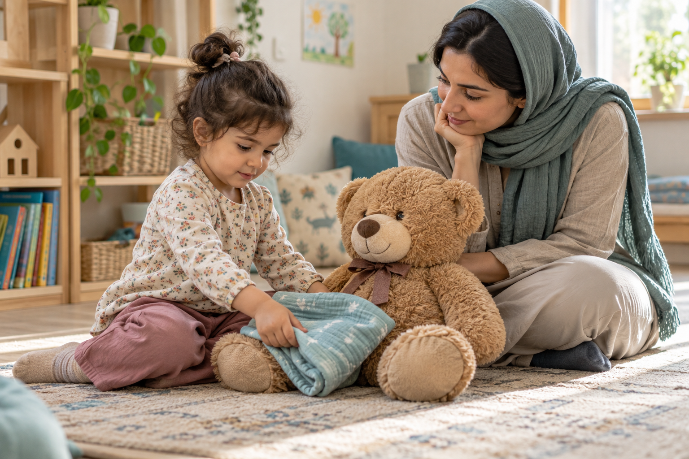
تصویر آموزشی بازسازیشده با هوش مصنوعی
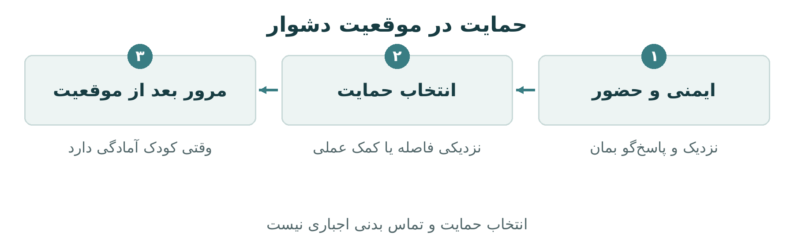
نقشه خواندن این بخش فصلهای ۵ تا ۷
فصل ۵ کودک اول در رابطه تنظیم میشود
در این فصل چه میخوانیم؟
وقتی برج میریزد، کودک ممکن است پیش از هر راهحلی به یک همراه نیاز داشته باشد.
«خودت آروم شو!»
برج پارسا میریزد و اشکهایش سرازیر میشود. پدر میگوید: «چیزی نشده، خودت آروم شو.» پارسا بلندتر گریه میکند. پدر هم کلافه میشود و بلوکها را روی هم میگذارد. برج دوباره ساخته شده، اما هنوز معلوم نیست چه چیزی به پارسا کمک کرده است.
میتوان از جای دیگری شروع کرد: پدر نزدیک میماند و میگوید: «برجت ریخت؛ ناراحت شدی.» بعد منتظر میماند. وقتی پارسا به بلوکها دست میبرد، میپرسد: «پایه رو نگه دارم یا خودت میسازی؟» پاسخ کودک ممکن است ادامهٔ بازی، کمک بیشتر یا تمامکردن آن باشد.
همتنظیمی در همین رفتوبرگشتهای کوچک دیده میشود: حضور قابل اتکا، توجه به حال کودک و کمک متناسب. برای آرامشدن، تماس بدنی یا حرفزدن همیشه انتخاب مناسبی نیست. باید ببینیم این کودک، در این موقعیت، چه نوع همراهی را میپذیرد.
پرسش این فصل
وقتی کودک ناراحت است، چگونه حضور و کمک خود را با حال و نیاز او هماهنگ کنیم؟
اول یک تفکیک مهم: خودتنظیمی و همتنظیمی
خودتنظیمی به مجموعه فرایندهایی اشاره دارد که به فرد کمک میکنند توجه، هیجان، رفتار و عمل خود را با نیاز موقعیت هماهنگ کند. این توانایی در سالهای اولیه کامل و مستقل نیست و در طول رشد تغییر میکند.
OPRE/Administration for Children and Families، همتنظیمی را فرایند تعاملی میان بزرگسال مراقب و کودک میداند که از رشد خودتنظیمی حمایت میکند. در این چارچوب، سه مؤلفه مهم عبارتاند از رابطه گرم و پاسخگو، محیط و ساختار حمایتی، و کمک به تمرین مهارتهای تنظیم از طریق مدلسازی، راهنمایی و بازخورد.
پس همتنظیمی به معنی «بزرگسال همیشه کودک را آرام کند» نیست. بیشتر شبیه تنظیم مشترک شرایطی است که کودک بتواند، متناسب با رشدش، دوباره به تعادل و مشارکت برگردد.
کودک خردسال چرا همیشه نمیتواند «خودش را جمع کند»؟
در سالهای اولیه، مهارتهای خودتنظیمی هنوز در حال رشدند. Head Start در منابع جدید خود تأکید میکند که کودکان برای یادگیری تنظیم هیجان، رفتار، فکر و توجه به روابط پاسخگو و حمایت بزرگسالان نیاز دارند. این حمایت با رشد کودک یکسان نمیماند؛ نوع و مقدار آن باید تغییر کند.
این به معنی ناتوانی کودک نیست. کودک از همان ابتدا فعال است، نشانه میدهد، نزدیک میشود یا فاصله میگیرد، کمک میخواهد، راهبرد امتحان میکند و روی رفتار بزرگسال نیز اثر میگذارد. همتنظیمی یک فرایند یکطرفه نیست.
سه ستون همتنظیمی در این کتاب
برای ترجمه عملی منابع OPRE و Head Start، این فصل سه ستون را به زبان ساده نگه میدارد:
ستون | معنای عملی | نمونه |
|---|---|---|
۱. رابطه پاسخگو | بزرگسال نشانههای کودک را میبیند، حضور قابل پیشبینی دارد و هیجان را بدون تحقیر یا ترس پاسخ میدهد. | کنار کودک مینشیند، صدایش را پایین میآورد و قبل از توضیح زیاد میبیند کودک چه نیاز دارد. |
۲. محیط قابلپیشبینی | روال، مرز و فضای فیزیکی تا حد امکان روشن و قابل فهماند. | پیش از جمعکردن بازی هشدار کوتاه میدهد؛ محل آرام و قابل دسترس دارد. |
۳. تمرین راهبرد | بزرگسال در زمان مناسب راههای ساده را مدل میکند و کودک بهتدریج انتخاب و استفاده از آنها را تجربه میکند. | «میخوای کنارم بشینی یا کمی آب بخوری؟»؛ بعداً درباره چیزی که کمک کرد حرف میزنند. |
همتنظیمی با «خاموشکردن هیجان» فرق دارد
واکنش بزرگسال | پیام پنهان احتمالی | نسخه پاسخگوتر |
|---|---|---|
«گریه نکن، چیزی نشده.» | احساس تو مهم یا واقعی نیست. | «میبینم سختت شده. من اینجام.» |
«اگه ساکت شی برات میخرم.» | هدف اصلی توقف نشانه هیجان است. | مرز را نگه دار و همزمان به هیجان پاسخ بده. |
«بذار من همهچی رو درست کنم.» | حل مسئله کامل به بزرگسال منتقل میشود. | تا جایی کمک کن که کودک دوباره بتواند مشارکت کند. |
«برو اتاقت تا آروم شی.» | گاهی فاصله میتواند مفید باشد، اما اگر بهعنوان طرد استفاده شود رابطه را قطع میکند. | اگر کودک فاصله میخواهد، در دسترس و روشن بمان: «من نزدیکم؛ هر وقت خواستی.» |
تأیید احساس یعنی قبولکردن هر رفتار؟
نه. رابطه قبل از عملکرد به معنی حذف مرز نیست. میتوان همزمان احساس را پذیرفت و رفتار را محدود کرد.
مثلاً: «میدونم خیلی عصبانی شدی. نمیذارم منو بزنی. میتونی به بالش فشار بدی یا کنارم بمونی.»
این جمله قرار نیست فرمول جادویی باشد. ممکن است در لحظهای که کودک بسیار برانگیخته است، کلمات کمتر از حضور آرام و جلوگیری ایمن از آسیب مفید باشند.
بزرگسال هم باید خودش را ببیند
همتنظیمی فقط درباره کاری که «برای کودک» میکنیم نیست. وضعیت بزرگسال نیز وارد رابطه میشود: سرعت حرفزدن، صدای بلند، عجله، ترس، خشم یا تلاش برای پایان فوری گریه میتواند مسیر موقعیت را تغییر دهد.
این بخش برای سرزنش والد نیست. بزرگسال هم انسان است و همیشه آرام و بینقص نمیماند. سؤال کتاب این است: «وقتی من کمی تنظیمتر عمل میکنم، آیا برای کودک فضای بیشتری برای برگشتن ایجاد میشود؟»
پژوهش جدید چه چیزی اضافه میکند؟
یک مطالعه طولی منتشرشده در ۲۰۲۶، ۱۰۲ خانواده را از ۷ ماهگی تا ۶٫۵ سالگی در هفت نقطه زمانی دنبال کرد. در دوره نوپایی، پاسخگویی بیشتر والد با تنظیم هیجانی بهتر کودک در زمان بعدی همراه بود؛ اما این الگو در همه سنها و همه مسیرهای والد–کودک یکسان نبود. این مطالعه جالب است، ولی نمونه آن محدود به خانوادههای یک منطقه از آمریکا بود و بهتنهایی نمیتواند یک قانون کلی بسازد.
این یافته دقیقاً با سیاست علمی کتاب هماهنگ است: رابطه پاسخگو مهم است، اما از یک مطالعه یا یک رفتار والد، پیشبینی قطعی درباره آینده کودک نمیسازیم.
سن چه چیزی را تغییر میدهد؟
این جدول جهت طراحی داخلی کتاب است، نه استاندارد هنجاری.
بازه | شکل غالب حمایت در بسیاری از موقعیتها |
|---|---|
۲–۳ سال | حضور نزدیک، کلمات کم، کمک جسمانی/محیطی ایمن، انتخابهای بسیار ساده، نامگذاری محتاطانه و بازگشت به روال. |
۳–۴ سال | پیشنهاد دو راه ساده، مدلسازی زبان هیجان/درخواست، پیشبینی تغییرها و کمک برای بازگشت به بازی. |
۴–۵ سال | گفتوگوی کوتاه درباره چیزی که کمک کرد، انتخاب راهبرد، حفظ مرز و دادن فرصت بیشتر برای اقدام مستقل. |
۵–۶ سال | پیشبینی راهبرد قبل از موقعیت دشوار، مرور بعد از آرامشدن، مسئولیت بیشتر برای انتخاب راه حل، با باقی ماندن بزرگسال در دسترس. |
همتنظیمی برای همه یک شکل ندارد
برای کودک کمحرف یا کودک استفادهکننده از AAC، «گفتوگوی طولانی درباره احساس» ممکن است راه اصلی نباشد. برای کودکی با حساسیت حسی، نزدیکی فیزیکی یا لمس ممکن است کمککننده نباشد. برای کودکی دیگر، حرکت یا فضای خلوتتر مفیدتر باشد.
بنابراین کتاب یک راهبرد واحد را نسخه همگانی نمیکند. سؤال همان است: این کودک در این موقعیت چه نشانهای میدهد و چه نوع حمایت دسترسپذیر، محترمانه و ایمنی به او کمک میکند؟
زمانِ آموزش راهبرد، همیشه اوج هیجان نیست
وقتی کودک در اوج ناراحتی است، ممکن است ظرفیت محدودی برای شنیدن توضیح طولانی یا یادگیری راهبرد جدید داشته باشد. بسیاری از آموزشهای مربوط به هیجان بهتر است پیش از موقعیت یا پس از فروکش نسبی آن تمرین شوند.
در لحظه دشوار، هدف اولیه میتواند امنیت، ارتباط و برگشت تدریجی باشد؛ آموزش مفصل را میتوان بعداً انجام داد.
پنج خطای رایج
خطا | مشکل | جایگزین |
|---|---|---|
«کودک باید خودش آرام شود.» | انتظار استقلال را از مرحله رشد و زمینه جدا میکند. | میزان حمایت را با سن، شدت موقعیت و تجربه کودک تنظیم کن. |
«همتنظیمی یعنی بغل کردن.» | یک رفتار واحد را برای همه کودکان نسخه میکند. | نشانه کودک را ببین؛ نزدیکی، فاصله، کلام، حرکت یا محیط ممکن است متفاوت باشد. |
«اگر احساسش را نام ببرم، آرام میشود.» | از نامگذاری هیجان اثر قطعی میسازد. | نامگذاری را یکی از گزینههای ارتباط بدان، نه دکمه خاموشی. |
«مرز گذاشتن با همدلی تناقض دارد.» | هیجان و رفتار را یکی میکند. | احساس را بپذیر؛ رفتار آسیبزا را محدود کن. |
«من باید همیشه آرام باشم.» | والد را در استاندارد غیرواقعی قرار میدهد. | هدف ترمیم و تلاش برای پاسخگویی بهتر است، نه عملکرد بینقص. |
بازی هستهای فصل
♥ ER02 — خرس ناراحت
این بازی یک موقعیت وانمودی کمفشار برای «دیدن حمایت» ایجاد میکند. خودِ بازی اثربخشی مستقل اثباتشده ندارد؛ ارزش آن در فراهمکردن فرصتی برای رابطه، زبان و تجربه انتخابهای مراقبتی است.
شناسنامه بازی ER02 — خرس ناراحت ♥
مولفه | تعریف |
|---|---|
کد | ER02–23–E ♥ |
خانواده | Emotion & Co-regulation |
سن هسته | ۲ تا ۳ سال |
سن قابل تطبیق | تقریباً ۲ تا ۴٫۵ سال، فقط با تطبیق رشدی |
هدف اصلی | ایجاد یک موقعیت رابطهای برای تجربه حمایت هنگام ناراحتی |
اهداف همراه | زبان/ارتباط؛ توجه به نشانه و انتخاب |
نوع هدایت | مشترک؛ بزرگسال موقعیت را معرفی میکند ولی پاسخ را تعیین نمیکند |
شکل اجرا | بزرگسال–کودک یا گروه بسیار کوچک |
محیط | خانه یا مهد |
برچسب ویژه | ♥ کیفیت بودن با کودک مهمتر از عملکرد اوست |
راهنمای دقیق اجرای بازی ER02
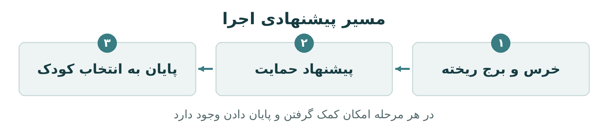
اینفوگرافی اجرای ER02 خواندن از راست به چپ
زمان پیشنهادی حدود ۳ تا ۵ دقیقه برای یک نوبت آغازین؛ ادامه یا پایان با توجه به علاقه، خستگی و شرایط واقعی. زمانگیری کودک لازم نیست.
وسایل این نسخه یک خرس نرم سالم، یک پارچه کوتاه و سه بلوک بزرگ سبک.
پیش از دعوت خرس را کنار بلوکهای از قبل ریخته بگذارید؛ فضای نشستن کودک آزاد باشد.
جمله آغاز «برج خرس ریخته؛ دوست داری ببینیم چه میخواهد؟»
گام ۱ موقعیت را در یک جمله معرفی کنید و منتظر نگاه یا حرکت کودک بمانید؛ از پرسش پیاپی درباره احساس پرهیز کنید.
گام ۲ هر پیشنهاد ایمن کودک، مثل دادن پارچه یا نشستن کنار خرس، وارد داستان شود. اگر وارد نشد، بزرگسال یک کنش کوتاه مدل کند.
گام ۳ اگر کودک علاقه داشت، نقش خرس را به او بدهید تا نیازش را با واژه یا اشاره نشان دهد. داستان را مطابق انتخاب او تمام کنید.
اگر بازی گیر کرد «میتوانیم کنارش بنشینیم یا پارچه بدهیم؛ تو کدام را میخواهی؟»
راه سادهتر فقط خرس و یک پارچه؛ یک کنش و کلمات کمتر.
اگر کودک چالش بیشتری خواست کودک موقعیت جدیدی برای خرس بسازد؛ پاسخ مراقبتی از قبل تعیین نشود.
راه دیگر برای مشارکت تماشا، اشاره به تصویر یا سپردن کار به بزرگسال هم مشارکت است.
ایمنی همین اجرا پارچه کوتاه باشد و دور گردن بسته نشود؛ بغل و تماس بدنی اجباری نباشد.
نمونه ثبت فرضی «کودک پارچه را کنار خرس گذاشت و گفت خوابش میآید.» این فقط توصیف همان رخداد است؛ ثبت، فقط وقتی سؤال یا تصمیم مشخصی دارید.
مشاهده و تصمیم نوبت بعد ببین کودک کدام شکل مراقبت را برای خرس انتخاب میکند. اگر فقط تماشا کرد، داستان را کوتاه و حضور خود را آرام نگه دار؛ اگر نقش را عوض کرد، روایت او را دنبال کن و پاسخ اخلاقی از پیش تعیین نکن.
پایان و مرور وقتی کودک داستان را عوض کرد یا کنار رفت، پایان را بپذیرید.
چرا این بازی؟
برای کودکان خردسال، صحبت مستقیم و طولانی درباره «راهبردهای تنظیم هیجان» میتواند انتزاعی باشد. یک عروسک یا خرس میتواند موقعیتی ساده بسازد که در آن بزرگسال بدون امتحان گرفتن، چند شکل حمایت را مدل کند: نزدیک ماندن، پرسیدن نیاز، ارائه انتخاب ساده یا منتظر ماندن.
اما بازی نباید به آزمون همدلی تبدیل شود. اگر کودک خرس را بغل نکرد، واژه احساس را نگفت یا حتی ترجیح داد موضوع دیگری بسازد، از این واکنش درباره همدلی، دلبستگی یا تنظیم هیجانی او نتیجه نمیگیریم.
ابزار و آمادهسازی
یک خرس یا عروسک نرم و آشنا؛ ترجیحاً بدون قطعات کوچک جداشدنی.
یک تکه پارچه یا پتوی کوچک.
در صورت تمایل یک لیوان اسباببازی/ظرف بزرگ ایمن یا چند بلوک بزرگ.
محیط ساده و بدون شلوغی اضافه.
ایمنی: برای کودکان خردسال از قطعات کوچک، بندهای بلند، وسایل شکستنی یا هر چیزی که خطر خفگی ایجاد کند استفاده نشود.
دعوت به بازی
بزرگسال خرس را کنار برج ریخته میگذارد و میگوید: «اوه... برج خرس ریخت. خرس یه کم ناراحته.» سپس مکث میکند.
اگر کودک وارد شد، بزرگسال دنبال پاسخ او میرود. اگر کودک وارد نشد، لازم نیست دعوت را تکرار یا او را مجبور به «مهربان بودن» کند.
نقش کودک
میتواند فقط نگاه کند.
میتواند خرس را بردارد، کنار او بنشیند، پارچه بدهد یا راه دیگری پیشنهاد کند.
میتواند بگوید خرس چه میخواهد یا با اشاره/حرکت انتخاب کند.
میتواند داستان را عوض کند؛ مثلاً بگوید خرس اصلاً ناراحت نیست.
میتواند نپیوسته یا بازی را متوقف کند.
نقش بزرگسال
هیجان و داستان را قطعی به کودک تحمیل نکند.
پاسخهای مراقبتی مختلف را بدون اخلاقگویی طولانی مدل کند.
از سؤالهای امتحانی زیاد مثل «خرس چه احساسی داره؟ چرا؟ حالا باید چیکار کنی؟» پرهیز کند.
اگر کودک راهی پیشنهاد کرد، آن را تا حد ایمن دنبال کند.
کیفیت رابطه و لذت بازی را بر «جواب درست» مقدم بداند.
نسخههای سنی
سن | تطبیق |
|---|---|
۲–۳ سال | سناریو بسیار کوتاه؛ «برج ریخت». یک یا دو گزینه ملموس: «کنارش بشینیم یا پتو بدیم؟» کلمات کم. |
۳–۴ سال | کودک میتواند پیشنهاد بدهد خرس چه میخواهد؛ بزرگسال میتواند دو حالت متفاوت بازی کند: «میخواد تنها باشه / میخواد کنارمون باشه». |
۴–۴٫۵ سال | کودک میتواند خودش موقعیت ناراحتی خرس را بسازد و چند راه متفاوت را امتحان کند؛ نتیجه اخلاقی تحمیل نشود. |
اگر خیلی آسان بود
بهجای دشوارکردن مصنوعی، مسئولیت داستان را بیشتر به کودک بده: «این بار تو بگو برای خرس چی پیش اومده.» یا دو شخصیت با نیازهای متفاوت وارد کن.
اگر دشوار بود یا کودک علاقه نداشت
بازی را ساده کن یا کنار بگذار. بزرگسال میتواند خودش چند ثانیه با خرس بازی کند بدون درخواست مشارکت. عدم ورود کودک شکست نیست.
راههای دیگر برای مشارکت
اشاره به یکی از دو وسیله.
دادن پتو یا خرس به بزرگسال.
تماشا کردن بدون عمل.
استفاده از تصویر/AAC برای انتخاب «کنارم باش / فاصله / آب / کمک».
حرکت یا ژست بهجای کلام.
سه سؤال والد
چه چیزی جذبش کرد؟
کجا برایش سخت شد؟
چه چیزی کمکش کرد؟
مشاهده مربی؛ فقط اگر هدف مشخصی دارید
حوزه اصلی: هیجان و تنظیم. حوزه همراه: زبان/ارتباط یا رابطه. این بازی معمولاً نیاز به فرم ندارد؛ برچسب ♥ یعنی کیفیت حضور مشترک از جمعآوری داده مهمتر است.
اگر مشاهدهای لازم بود، فقط رفتار قابل مشاهده را ثبت کنید؛ مثلاً «خرس را برداشت و کنار خودش گذاشت» نه «همدلی بالایی نشان داد».
یک تجربه برای این هفته در بازی
در یک ناکامی کوچک و طبیعی، پیشنهادتان را روشن کنید: «میتوانم کنار تو بمانم» یا «میتوانم این قسمت را نگه دارم.
» بعد فقط ببینید کودک کدام شکل همراهی را میپذیرد. برای تمرین، ناکامی ایجاد نکنید.
خطاهای رایج بازی
اصرار بر اینکه کودک حتماً خرس را بغل کند.
تبدیل بازی به درس اخلاق: «ببین بچه خوب باید...»
اصرار بر نام دقیق احساس.
تفسیر داستان کودک بهعنوان پیام پنهان درباره خانواده یا روان او.
فیلمگرفتن/ثبت دائمی برای ارزیابی بدون هدف روشن و رعایت حریم خصوصی.
از این بازی چه چیزی نمیتوان فهمید؟
از رفتار کودک در «خرس ناراحت» نمیتوان درباره همدلی، دلبستگی، هوش هیجانی، اضطراب، اوتیسم، اختلال تنظیم هیجان، سبک فرزندپروری خانواده یا کیفیت رابطه والد–کودک نتیجه تشخیصی یا نمرهای گرفت.
این بازی یک تجربه آموزشی/رابطهای است؛ نه آزمون.
پشتوانه و حدود شواهد بازی
بخش | وضعیت |
|---|---|
آنچه فعالیت مستقیماً درگیر میکند | بازی وانمودی ساده، زبان یا ژست درباره ناراحتی، انتخاب پاسخ حمایتی و رابطه با بزرگسال. |
خانواده شواهد | Co-regulation / responsive relationships |
سطح اصل کلی | B — شواهد و راهنماهای حمایتکننده با محدودیت |
سطح خودِ بازی ER02 | D — طراحی آموزشی کتاب؛ اثر مستقل این بازی آزموده نشده است |
جمله مجاز | «این بازی فرصتی ساده برای تجربه زبان و شکلهای مختلف حمایت در یک موقعیت وانمودی فراهم میکند.» |
جمله غیرمجاز | «این بازی همدلی یا خودتنظیمی کودک را تقویت میکند.» / «این بازی اضطراب کودک را کاهش میدهد.» |
علم چه میگوید؟
آنچه نسبتاً میدانیم
OPRE همتنظیمی را فرایندی تعاملی میداند که رابطه گرم و پاسخگو، محیط حمایتی و کمک به تمرین مهارتهای خودتنظیمی را در بر میگیرد.
Head Start در منابع ۲۰۲۵–۲۰۲۶ روابط پاسخگو، امن و قابلاعتماد را پایه رشد اجتماعی–هیجانی و یادگیری مهارتهای تنظیم میداند.
تعامل پاسخگو و رفتوبرگشتی بزرگسال و کودک بخشی مهم از محیط رشد اولیه است.
مطالعه طولی Kim و Kochanska با ۱۰۲ خانواده، در دوره نوپایی ارتباط آیندهنگر میان پاسخگویی والد و تنظیم بهتر هیجانی کودک نشان داد؛ اما الگو در همه سنها یکسان نبود و تعمیم آن محدود است.
آنچه هنوز نباید نتیجه بگیریم
یک روش خاص آرامسازی برای همه کودکان بهترین است.
پاسخگویی گرم به معنی حذف مرزهاست.
کودکی که زیاد ناراحت میشود حتماً اختلال تنظیم هیجان دارد.
اگر بزرگسال یک بار واکنش خوبی نداشت، به رشد کودک آسیب قطعی زده است.
بازی «خرس ناراحت» اثر درمانی یا تقویتکننده مستقل اثباتشده دارد.
در خانه چه میتوان کرد
اول محیط و رفتارهای خطرناک را ایمن کنید. سپس با جملهای کوتاه آنچه رخ داده را نام ببرید.
نزدیکماندن، فاصلهدادن یا کمک عملی را با توجه به واکنش کودک انتخاب کنید؛ بغلکردن را تحمیل نکنید.
بعد از سبکترشدن موقعیت، اگر کودک مایل بود، دربارهٔ چیزی که کمک کرد حرف بزنید. لازم نیست در اوج ناراحتی از او توضیح بخواهید.
کمک را متناسب کنید؛ نه همیشه همهچیز را حل کنید و نه کمک لازم را دریغ کنید.
اگر واکنش خودتان کامل نبود، بعداً میتوانید برگردید، رابطه را ترمیم کنید و درباره موقعیت حرف بزنید.
در مهد یا کارگاه
برای لحظههای دشوار، پیش از شروع گروه مسئول همراهی و امکان فاصلهگرفتن از شلوغی را مشخص کنید. کودک باید بتواند حمایت بگیرد و با ریتم خودش به مشارکت برگردد.
اگر یک کودک به حمایت بیشتری نیاز دارد، این را به «وابسته کردن» او تقلیل نده. هدف این است که حمایت بهاندازه و پاسخگو باشد و با رشد توانایی کودک تنظیم شود.
یک تجربه برای این هفته
در یک ناراحتی کوچک، سرعت خودتان را نصف کنید.
قبل از چند سؤال و راهحل، یک جمله کوتاه بگویید و چند لحظه حضور داشته باشید. بعد ببینید کودک به چه نوع کمک نزدیک میشود: کلام، فاصله، آغوش، آب، انتخاب، حل مسئله یا فقط زمان.
همراهی در موقعیتهای روزمره
کودک پیش از اینکه بتواند مهارتهای پیچیده را نشان دهد، نیاز دارد در رابطه احساس امنیت و همراهی کند.
در موقعیتهای دشوار ابتدا رابطه را حفظ کنیم:
به احساس کودک توجه کنیم، حضور آرام داشته باشیم و بعد درباره راهحل فکر کنیم.
به جای حذف فوری ناراحتی، به کودک کمک کنیم تجربه هیجان را تحمل و تنظیم کند.
تمرین والد و مربی: در یک موقعیت سخت، قبل از اصلاح رفتار فقط یک جمله همدلانه بگویید؛ سپس بررسی کنید آیا کودک آماده دریافت راهنمایی شد.
پس از یک واکنش نامتناسب بزرگسال
گاهی بزرگسال بلندتر از آنچه میخواست حرف میزند. پس از آرامتر شدن موقعیت، میتواند بگوید «صدای من بلند شد و ممکنه ترسیده باشی. دوباره با صدای آروم میگم». توضیح رفتار خود را به درخواست بخشش فوری از کودک تبدیل نکنید. سپس همان مرز لازم را کوتاه و روشن بیان کنید.
حمایت قابل اجرا برای بزرگسال
پیش از موقعیتهای پرتکرار، یک امکان واقعی آماده کنید: تقسیم مسئولیت با مراقب دیگر، کم کردن شلوغی یا نزدیک نگه داشتن وسیله مورد نیاز. اگر خودتان در آستانه از دست دادن کنترل هستید، ایمنی کودک را برقرار کنید و از یک بزرگسال قابل اعتماد کمک بگیرید. همراهی پاسخگو به مراقبی نیاز دارد که امکان حمایت دریافت کردن داشته باشد.
پایان فصل
این هفته... | پیشنهاد |
|---|---|
بیشتر ببین | کودک هنگام ناراحتی چه نشانهای برای نزدیکی، فاصله یا کمک میدهد؟ |
کمتر انجام بده | تلاش برای خاموشکردن سریع هر هیجان. |
امتحان کن | احساس را بدون حذف مرز پاسخ بده: «میفهمم سختت شده؛ نمیذارم بزنی.» |
از خودت بپرس | آیا حضور من به کودک کمک میکند دوباره مشارکت کند، یا فقط میخواهم هیجان سریع تمام شود؟ |
کیفیت همراهی را در پاسخهای کوچک کودک دنبال کنید: نزدیک شد، کمک خواست، فاصله گرفت یا دوباره به بازی برگشت. همین مشاهدهها برای انتخاب حضور بعدی ارزش دارند.
فصل بعد سراغ خودِ تجربه هیجان میرود: «احساس در بدن اتفاق میافتد»؛ جایی که شدت، واژههای هیجانی و نشانههای بدنی را بدون تحمیل تفسیر بررسی میکنیم.
منابع منتخب فصل
Administration for Children and Families, Office of Planning, Research, and Evaluation (OPRE). Co-Regulation in Human Services. Updated 2024.
OPRE. Promoting Self-Regulation in the First Five Years: A Practice Brief. 2018.
OPRE. Supporting the Development of Self-Regulation in Young Children: Tips for Practitioners Working with Preschool Children. 2020.
Head Start. Social and Emotional Learning. Updated January 2026.
Head Start. Strategies for Supporting Self-Regulation: Snapshot Series. Updated March 2025.
Harvard Center on the Developing Child. Serve and Return: Back-and-Forth Exchanges.
Kim J, Kochanska G. Transactional Dynamics Between Parental Responsiveness and Child Emotion Dysregulation: A Longitudinal Study From Infancy to Early School Age. Emotion. 2026;26(2):407–419. https://doi.org/10.1037/emo0001588.
یادداشت روششناختی: بازی ER02 و جملهبندیهای اجرایی فصل، مداخله درمانی نیستند. شواهد به اصل همتنظیمی و روابط پاسخگو مربوطاند؛ خود بازی سطح D دارد.
فصل ۶ احساس در بدن اتفاق میافتد
در این فصل چه میخوانیم؟
گاهی کودک چیزی را در بدنش حس میکند، اما هنوز واژهای برای گفتنش ندارد.
«تو عصبانیای؛ معلومه!»
مادر مشتهای گرهشدهٔ کودک را میبیند و میگوید: «عصبانیای.» کودک جواب میدهد: «نه، میترسم.» همین پاسخ کوتاه یادآوری میکند که دیدن یک نشانه، با دانستن تجربهٔ دیگری فرق دارد.
میتوان جمله را بازتر کرد: «میبینم دستهات رو سفت گرفتی. دوست داری بگی چه حسی داری؟» کودک شاید واژهای بگوید، به تصویری اشاره کند یا نخواهد توضیح بدهد. قرار نیست برای ادامهٔ همراهی، حتماً نام دقیقی از احساس به دست بیاوریم.
نشانههای بدنی میتوانند علتهای مختلفی داشته باشند. توصیف تجربه و دعوت به گفتوگو با تفسیر پزشکی تفاوت دارد. در این فصل، تصویر بدن و واژههای احساس به کودک امکان بیشتری برای بیان میدهند؛ پاسخ او را از پیش تعیین نمیکنند.
پرسش این فصل
چگونه دربارهٔ احساس و نشانههای بدن حرف بزنیم و برای روایت خود کودک جا بگذاریم؟
دانش هیجانی فقط نام چهرهها نیست
دانش هیجانی یا دانش هیجانی مجموعهای گستردهتر از تشخیص یک چهره است: کودک بهتدریج درباره واژههای هیجان، موقعیتهای مرتبط، نشانههای بیرونی و بدنی، تفاوت تجربه افراد و راههای پاسخ دادن یاد میگیرد.
مطالعه طولی Johansen و همکاران روی ۲۱۱ کودک پیشدبستانی نشان داد درک هیجان در شروع مطالعه با روابط مثبت همسالان همبستگی داشت، اما انتظارهای طولی قویتر تأیید نشدند. این برای کتاب یادآور مهمی است: فهم هیجان با زندگی اجتماعی مرتبط است، اما از یک مهارت هیجانی ساده مسیر آینده کودک را پیشبینی نمیکنیم.
واژههای هیجانی چه کمکی میکنند؟
در یک مطالعه تجربی ۲۰۲۴، Ogren و همکاران نشان دادند سهسالهها وقتی سناریوهای هیجانی با واژه هیجانی مشخص همراه میشدند، ارتباط میان موقعیت و چهره هیجانی را بهتر از شرایطی با برچسب بسیار کلی یا اطلاعات نامرتبط یاد میگرفتند. این یافته از نقش واژههای مشخص در سازماندادن یادگیری هیجانی حمایت میکند.
در مطالعه مقطعی ۲۰۲۶ روی ۱۹۷ کودک ۴ تا ۶ ساله، اندازه و عمق واژگان هیجانی با دانش هیجانی مرتبط بود. رابطه با تنظیم هیجان به تعامل این دو ویژگی و نوع هیجان بستگی داشت؛ برای تنظیم هیجان منفی اثری گزارش نشد. این مطالعه جهت رابطه یا اثر آموزش نام احساسها را ثابت نمیکند.
پس جمله مناسب کتاب این نیست: «اگر اسم احساس را بگویی، کودک بهتر خودش را تنظیم میکند.» جمله دقیقتر این است: «واژههای هیجانی میتوانند به کودک ابزار بیشتری برای سازماندادن و حرفزدن درباره تجربه هیجانی بدهند.»
نامگذاری با حدسزدن فرق دارد
نسخه قطعی | مشکل | نسخه کنجکاوانهتر |
|---|---|---|
«تو عصبانی هستی.» | احساس را از بیرون قطعی میکند. | «به نظر میرسه چیزی خیلی اذیتت کرده. خودت چی حس میکنی؟» |
«میترسی.» | ممکن است تجربه کودک چیز دیگری باشد. | «بدنت انگار آماده شده؛ ترسه، هیجانه یا چیز دیگهای؟» |
«تو حسودی.» | یک مفهوم پیچیده را به کودک نسبت میدهد. | «دیدم وقتی هدیه را به او دادند ساکت شدی و کنار رفتی. دوست داری بگی چی شد؟» |
«هیچی نیست، ناراحت نباش.» | تجربه را انکار میکند. | «من دقیق نمیدونم چی حس میکنی؛ اگر خواستی میتونی بگی یا نشون بدی.» |
کودک لازم نیست همیشه یک اسم دقیق داشته باشد
بعضی وقتها کودک میگوید «بد»، «نمیدونم» یا اصلاً جواب نمیدهد. این الزاماً شکست نیست. واژگان هیجانی در حال رشدند و زبان فقط یکی از راههای بیان تجربه است.
میتوانیم از انتخاب تصویر، ژست، رنگ، شدت، داستان یا حتی جمله «هنوز نمیدونم» استفاده کنیم. هدف زیاد کردن تعداد برچسبها نیست؛ هدف ساختن فضای امن برای دقت بیشتر در تجربه است.
شدت هیجان؛ چرا «دماسنج» فقط استعاره است؟
کودکان میتوانند بهتدریج تفاوت میان «یک کم ناراحت» و «خیلی ناراحت» را بفهمند. در این کتاب دماسنج هیجان یک استعاره دیداری برای گفتوگو درباره شدت است؛ نه مقیاس روانشناختی و نه اندازهگیری فیزیولوژیک.
عدد ۱ تا ۵ یا رنگهای مختلف فقط اگر برای کودک قابل فهم باشند استفاده میشوند. هیچ cut-off مثل «۴ یعنی مشکل» یا «۵ یعنی dysregulation» نداریم.
بدن چه نقشی دارد؟
ادراک حسهای درونی بدن به پردازش و ادراک سیگنالهای درونی بدن مربوط است. اما پژوهش این حوزه در کودکان خردسال هنوز نسبت به بزرگسالان محدودتر است.
در مطالعه Schaan و همکاران، ۴۹ کودک ۴ تا ۶ ساله یک تکلیف جدید برای مقایسه تغییر گزارششده و ثبتشده ضربان قلب انجام دادند. شاخص دقت ادراک حسهای درونی با emotion recognition رابطهای نشان نداد و فقط ارتباطی حاشیهای و غیرساده با emotion regulation داشت. این مطالعه کوچک و اولیه است، اما پیام روششناختی مهمی برای ما دارد: از «توجه به بدن» نباید نتیجه بگیریم که شناخت یا تنظیم هیجان حتماً بهتر میشود.
برای همین، ER03 «بدنم چه میگوید؟» فقط تمرین توجه و توصیف است؛ نه برنامه ادراک حسهای درونی بدن training.
یک نشانه بدنی = یک احساس؟ نه
نشانه | ممکن است همراه باشد با... | چرا نباید نتیجه قطعی گرفت؟ |
|---|---|---|
ضربان سریع | دویدن، هیجان، ترس، خشم، تب، کافئین/مواد محرک در سنین بالاتر | یک علامت چند علت ممکن دارد. |
دلدرد | نگرانی، گرسنگی، بیماری، یبوست، علل دیگر جسمی | هیجان نباید جای بررسی جسمی را بگیرد. |
صورت گرم | فعالیت، گرما، خجالت، خشم، بیماری | بدن زمینه میخواهد. |
دست سفت/مشت | تمرکز، تلاش، ناراحتی، خشم، بازی حرکتی | حرکت قابل مشاهده است؛ نام احساس فرضیه است. |
نفس سریع | فعالیت، گریه، هیجان، ترس، مشکل جسمی | اگر غیرعادی/شدید است، مسئله سلامت مقدم است. |
بدن را به منبع اضطراب تبدیل نکن
هدف کتاب «اسکن دائمی بدن» نیست. بعضی کودکان علاقهای به تمرکز طولانی روی ضربان، تنفس یا شکم ندارند و بعضی ممکن است با این تمرکز ناراحتتر شوند. در چنین حالتی فعالیت را متوقف یا ساده میکنیم.
همان اصل برقرار است: مشاهده برای کیفیت توجه است، نه افزایش کنترل.
سن چه چیزی را تغییر میدهد؟
جدول زیر جهت طراحی داخلی است؛ نه نقطه عطف رشدی یا استاندارد هنجاری.
بازه | زبان و فعالیت مناسبتر |
|---|---|
۲–۳ سال | واژههای ساده و روزمره، مشاهده چهره/عمل، انتخاب دو حالت ساده؛ تمرکز مستقیم روی نشانههای داخلی بسیار محدود. |
۳–۴ سال | خوشحال/ناراحت/عصبانی/ترسیده و شدت ساده؛ استفاده از عروسک و موقعیت ملموس. |
۴–۵ سال | مقایسه شدت، چند واژه دقیقتر، توجه کوتاه به نشانههای قابل تجربه مثل گرمشدن یا نفس سریع بعد از حرکت. |
۵–۶ سال | گفتوگو درباره اینکه یک نشانه میتواند چند معنی داشته باشد، تفاوت تجربه افراد، و انتخاب واژه یا شدت دقیقتر. |
فراگیری: زبان، فرهنگ و تفاوت بدنی
واژههای هیجانی و شیوه حرفزدن درباره بدن در زبانها و خانوادهها یکسان نیست. کودک چندزبانه ممکن است یک احساس را در زبان خانه بهتر نامگذاری کند. همچنین بعضی کودکان با اشاره، تصویر، AAC یا حرکت بهتر از پاسخ شفاهی مشارکت میکنند.
تفاوتهای حسی، حرکتی و پزشکی نیز مهماند. هیچ فعالیت بدنی نباید بدون توجه به وضعیت سلامت کودک اجرا شود و نشانهای که ممکن است جسمی باشد با برچسب «احساسی» نادیده گرفته نمیشود.
بازی هستهای اول: ER01 — دماسنج احساس
این بازی برای گفتوگو درباره «شدت» طراحی شده است، نه اندازهگیری علمی هیجان.
شناسنامه ER01
مولفه | تعریف |
|---|---|
کد | ER01–45–E |
خانواده | Emotion & Co-regulation |
سن هسته | ۴ تا ۵ سال |
سن قابل تطبیق | تقریباً ۳٫۵ تا ۶ سال |
هدف اصلی | توصیف شدت تجربه هیجانی با یک استعاره ساده |
اهداف همراه | واژگان هیجانی؛ انتخاب/ارتباط |
نوع هدایت | مشترک و گفتوگومحور |
محیط | خانه یا مهد؛ فردی یا گروه کوچک |
سطح اثر خود بازی | D |
راهنمای دقیق اجرای بازی ER01
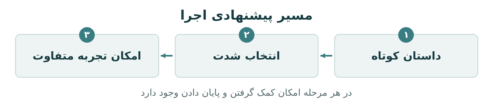
اینفوگرافی اجرای ER01 خواندن از راست به چپ
زمان پیشنهادی حدود ۳ تا ۵ دقیقه برای یک نوبت آغازین؛ ادامه یا پایان با توجه به علاقه، خستگی و شرایط واقعی. زمانگیری کودک لازم نیست.
وسایل این نسخه یک نوار کاغذی با سه سطح کم، میانه و زیاد؛ یک عروسک و نشانگر کاغذی بزرگ.
پیش از دعوت نوار را همسطح نگاه کودک بگذارید؛ این تصویر مقیاس سنجش یا دماسنج پزشکی نیست.
جمله آغاز «برای این شخصیت، این حس کوچک است یا بزرگ؟»
گام ۱ یک موقعیت فرضی کمفشار بگویید؛ مثلاً عروسک مدت کوتاهی منتظر دوستش مانده است. سه سطح را با کلمات ساده معرفی کنید.
گام ۲ کودک نشانگر را هرجا میخواهد بگذارد. فقط اگر مایل بود بپرسید چه چیزی باعث این انتخاب شد؛ سطح را تصحیح نکنید.
گام ۳ همان اتفاق را برای شخصیت دوم تعریف کنید و امکان انتخاب متفاوت را بپذیرید. در صورت تمایل یک گزینه حمایت پیشنهاد شود.
اگر بازی گیر کرد «میخواهی برای عروسک انتخاب کنیم یا فقط نگاه کنیم؟»
راه سادهتر دو سطح کم و زیاد با دو تصویر؛ بدون عدد.
اگر کودک چالش بیشتری خواست دو شخصیت با تجربه متفاوت؛ کودک توضیح یا داستان خودش را اضافه کند.
راه دیگر برای مشارکت اشاره، حرکت نشانگر با کمک، یا انتخاب روی سیستم ارتباطی کودک.
ایمنی همین اجرا نشانگر کوچک، سوزن و گیره تیز حذف شوند؛ از کودک افشای احساس شخصی نخواهید.
نمونه ثبت فرضی «برای عروسک اول سطح میانه و برای عروسک دوم سطح زیاد را انتخاب کرد.» این فقط توصیف همان رخداد است؛ ثبت، فقط وقتی سؤال یا تصمیم مشخصی دارید.
مشاهده و تصمیم نوبت بعد ببین کودک برای موقعیتهای مختلف چه شدتی انتخاب میکند، بدون مقایسه با انتخاب تو. اگر مفهوم شدت مبهم بود، فقط دو حالت کم و زیاد را در یک موقعیت وانمودی نشان بده؛ تغییر انتخاب نیاز به اصلاح ندارد.
پایان و مرور نوار جمع شود؛ انتخابها ذخیره و رتبهبندی نشوند.
چرا این بازی؟
کودک ممکن است بداند «ناراحت» است، اما تفاوت میان ناراحتی خفیف و بسیار شدید را هنوز با واژههای محدودی بیان کند. دماسنج بهعنوان تصویر میتواند گفتوگو را ملموستر کند.
اما عدد یا رنگ فقط زبان کمکی است؛ نتیجه نباید به نمره کودک تبدیل شود.
ابزار
یک نوار کاغذی یا کارت با ۳ تا ۵ سطح؛ بدون عدد هم قابل اجراست.
چند تصویر ساده از حالت شدت؛ ترجیحاً بدون صورتهای اغراقآمیز کلیشهای.
گیره یا مهره بزرگ برای انتخاب سطح؛ برای کودک خردسال بدون قطعات کوچک.
دعوت به بازی
بزرگسال میگوید: «بعضی وقتها یه حس یه کم میاد، بعضی وقتها خیلی بزرگه. اگه ناراحتی این آدم کوچیک باشه کجای دماسنج میذاری؟ اگه خیلی زیاد باشه چی؟»
در مرحله اول میتوان از شخصیت داستانی استفاده کرد تا کودک مجبور نباشد درباره احساس شخصی خودش حرف بزند.
نقش کودک و بزرگسال
کودک سطح را انتخاب میکند، میتواند توضیح بدهد یا ندهد.
بزرگسال جواب درست برای شدت ندارد مگر اطلاعات داستان روشن باشد.
اگر کودک یک سطح متفاوت انتخاب کرد، بهجای اصلاح میپرسیم «چی باعث شد اینجا رو انتخاب کنی؟»
هیچ نمرهای ذخیره یا با دفعه قبل مقایسه نمیشود مگر هدف آموزشی مشخص و غیرقضاوتی وجود داشته باشد.
نسخههای سنی ER01
سن | تطبیق |
|---|---|
۳٫۵–۴ سال | سه حالت: کم / متوسط / خیلی؛ ترجیحاً با داستان یا عروسک. |
۴–۵ سال | چهار یا پنج سطح؛ واژههای شدت مثل «کمی، زیاد، خیلی زیاد». |
۵–۶ سال | مقایسه دو موقعیت: «ممکنه یک اتفاق برای دو نفر شدت متفاوتی داشته باشه؟» |
اگر کودک نخواست
میتواند فقط برای شخصیت داستان انتخاب کند یا اصلاً شرکت نکند. پرسیدن درباره احساس شخصی کودک اجباری نیست.
از ER01 چه چیزی نمیتوان فهمید؟
از انتخاب کودک روی دماسنج نمیتوان شدت «واقعی» هیجان، اضطراب، کنترل هیجان، صداقت، هوش هیجانی یا وجود اختلال را اندازه گرفت. ER01 مقیاس نیست.
پشتوانه و حدود شواهد ER01
عنصر | وضعیت |
|---|---|
پشتوانه مرتبط | پژوهش درباره emotion vocabulary و دانش هیجانی |
سطح اصل مرتبط | B برای رابطه واژههای هیجانی با یادگیری/دانش هیجانی؛ با محدودیت |
سطح خود بازی | D |
L0 مجاز | «دماسنج یک زبان دیداری برای صحبت درباره شدت تجربه فراهم میکند.» |
L1 محتاطانه | «میتواند فرصت تمرین واژههای شدت و تفاوت تجربهها را فراهم کند.» |
L2 غیرمجاز | «تنظیم هیجان را بهتر میکند / شدت هیجان را دقیق اندازه میگیرد.» |
بازی هستهای دوم: ER03 — بدنم چه میگوید؟
این بازی تمرین توجه و توصیف است؛ نه آموزش تشخیص احساس از روی بدن.
شناسنامه ER03
مولفه | تعریف |
|---|---|
کد | ER03–56–E |
خانواده | Emotion & Co-regulation |
سن هسته | ۵ تا ۶ سال |
سن قابل تطبیق | تقریباً ۳٫۵ تا ۶ سال با سادهسازی |
هدف اصلی | توجه به بعضی تغییرهای بدنی و توصیف آنها بدون نتیجهگیری قطعی |
اهداف همراه | زبان هیجان/بدن؛ خودمشاهده غیرقضاوتی |
نوع هدایت | مشترک؛ کوتاه و اختیاری |
محیط | خانه یا مهد |
سطح اثر خود بازی | D |
راهنمای دقیق اجرای بازی ER03
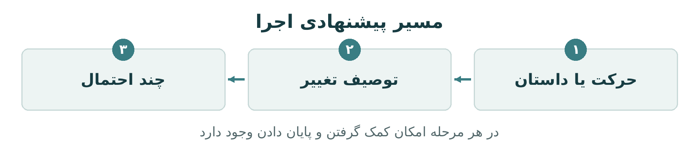
اینفوگرافی اجرای ER03 خواندن از راست به چپ
زمان پیشنهادی حدود ۳ تا ۵ دقیقه برای یک نوبت آغازین؛ ادامه یا پایان با توجه به علاقه، خستگی و شرایط واقعی. زمانگیری کودک لازم نیست.
وسایل این نسخه یک تصویر ساده بدن، کاغذ و مداد ضخیم؛ نسخه بدون ابزار هم کافی است.
پیش از دعوت فضای حرکت سبک را آزاد کنید؛ پیش از شروع کودک بین حرکت و داستان انتخاب کند.
جمله آغاز «دوست داری بعد از کمی حرکت ببینیم چه چیزی فرق کرده، یا داستان خرس را بشنویم؟»
گام ۱ در صورت تناسب و تمایل، یک حرکت سبک کوتاه مثل تکاندادن دست انجام دهید؛ دویدن، حبس نفس و اندازهگیری ضربان لازم نیست.
گام ۲ پس از توقف بپرسید چه چیزی فرق کرده است. «هیچی» و «نمیدانم» پذیرفتهاند؛ اشاره به تصویر بدن هم کافی است.
گام ۳ در داستان خرس یک نشانه مثل گرمشدن بگویید و چند احتمال، از لباس و حرکت تا تجربه هیجانی، مطرح کنید؛ یک احساس قطعی تعیین نشود.
اگر بازی گیر کرد «ممکن است گرم شده باشی؛ اگر نمیدانی، لازم نیست چیزی انتخاب کنی.»
راه سادهتر فقط داستان کوتاه؛ یک نشانه و یک پرسش.
اگر کودک چالش بیشتری خواست کودک دو موقعیت متفاوت را مقایسه کند؛ پیگیری بدنی مکرر نکنید.
راه دیگر برای مشارکت نسخه داستانی برای محدودیت حرکت؛ اشاره و نقاشی بهجای پاسخ کلامی.
ایمنی همین اجرا در درد، ناراحتی یا نشانه جسمی نگرانکننده فعالیت قطع شود؛ نشانه جسمی را خودکار هیجانی ننامید.
نمونه ثبت فرضی «بعد از حرکت گفت گرمم شد و به دستهایش اشاره کرد.» این فقط توصیف همان رخداد است؛ ثبت، فقط وقتی سؤال یا تصمیم مشخصی دارید.
مشاهده و تصمیم نوبت بعد ببین کودک به کدام حس یا بخش بدن اشاره میکند. اگر نامبردن سخت است، نقاشی بدن یا اشاره را پیشنهاد کن؛ اگر توجه به بدن ناراحتش میکند، فعالیت را کنار بگذار و به بازی دلخواه برگرد.
پایان و مرور با یک توصیف خنثی پایان دهید و توجه را به بازی دلخواه برگردانید.
نسخه اصلی بازی
بزرگسال یک موقعیت کاملاً ایمن و کوتاه انتخاب میکند: مثلاً ۲۰ تا ۳۰ ثانیه حرکت سبک متناسب با کودک و سپس توقف. میپرسد: «الان چه چیزی توی بدنت فرق کرده؟»
پاسخ میتواند «نفسهام تنده»، «گرمم شده»، «هیچی»، اشاره یا حتی «نمیدونم» باشد. سپس بزرگسال میگوید: «بدن تو بعد از حرکت اینطوری شد. بعضی وقتها احساسها هم با تغییرهای بدنی میان، ولی از یک علامت بهتنهایی نمیفهمیم چه حسیه.»
نسخه بدون حرکت
اگر حرکت مناسب نیست، از داستان استفاده میکنیم: «وقتی خرس منتظر اجرای نمایش بود گفت شکمش یه جور شده و دستاش سرده. ممکنه چه چیزهایی باشه؟» هدف ساختن چند احتمال است، نه انتخاب یک جواب قطعی.
ایمنی ER03
هیچ تمرین ضربانگیری، حبس نفس یا فعالیت شدید لازم نیست.
برای کودک دارای وضعیت پزشکی، درد، مشکل تنفسی یا محدودیت حرکتی، فعالیت حرکتی فقط در صورت تناسب و آگاهی خانواده/متخصص مربوط انجام شود؛ نسخه داستانی جایگزین دارد.
اگر کودک از تمرکز روی بدن ناراحت شد، فعالیت متوقف میشود.
نشانه جسمی پایدار یا نگرانکننده با برچسب «احساس» توضیح داده نمیشود و نیاز جسمی مقدم است.
نقش کودک و بزرگسال در ER03
کودک تجربه خودش را توصیف میکند؛ بزرگسال پاسخ را حدس نمیزند.
«نمیدونم» پاسخ معتبر است.
بزرگسال از جملههایی مثل «پس اضطراب داری» پرهیز میکند.
میتوان از نقاشی بدن، اشاره یا تصویر برای مشارکت استفاده کرد.
فعالیت کوتاه میماند و به body scanning دائمی تبدیل نمیشود.
از ER03 چه چیزی نمیتوان فهمید؟
ER03 دقت ادراک حسهای درونی را اندازه نمیگیرد و از آن نمیتوان درباره اضطراب، اختلال حسی، تنظیم هیجان، اوتیسم، ADHD، تحمل درد یا سلامت جسمی نتیجه گرفت.
پشتوانه و حدود شواهد ER03
عنصر | وضعیت |
|---|---|
پشتوانه مرتبط | پژوهش محدود رشد ادراک حسهای درونی بدن در کودکان و ارتباط بدن/هیجان |
سطح حوزه برای ادعای کاربردی کتاب | C/D — محدود و ناهمگون در سنین پایین |
سطح خود بازی | D |
L0 مجاز | «فعالیت فرصت توجه کوتاه و توصیف بعضی تغییرهای بدنی را فراهم میکند.» |
L1 بسیار محتاطانه | «میتواند زبان گفتوگو درباره بدن و تجربه را گسترش دهد»؛ بدون ادعای interoceptive improvement. |
L2/L3 غیرمجاز | «ادراک حسهای درونی بدن را تقویت میکند»، «اضطراب را کم میکند»، «اختلال را درمان/تشخیص میدهد». |
علم چه میگوید؟
آنچه نسبتاً میدانیم
واژههای مشخص هیجانی میتوانند در یادگیری دستهبندی اطلاعات هیجانی به کودکان خردسال کمک کنند؛ مطالعه Ogren و همکاران این اثر را در سهسالهها نشان داد.
مطالعه ۲۰۲۶ روی ۱۹۷ کودک ۴ تا ۶ ساله، رابطه واژگان و دانش هیجانی را گزارش کرد؛ رابطه با تنظیم هیجان وابسته به نوع هیجان بود و برای هیجان منفی اثری دیده نشد.
درک هیجان در یک نمونه ۲۱۱ نفری پیشدبستانی با روابط مثبت همسالان در همان زمان مرتبط بود، ولی مسیرهای طولی مورد انتظار تأیید نشدند.
پژوهش ادراک حسهای درونی بدن در پیشدبستانی محدود است؛ مطالعه ۴۹ کودک ۴–۶ ساله ارتباط روشنی میان شاخص دقت ادراک حسهای درونی و emotion recognition پیدا نکرد.
آنچه نمیتوانیم بگوییم
نامگذاری احساس بهتنهایی باعث تنظیم بهتر هیجان میشود.
هر احساس الگوی بدنی ثابت و اختصاصی دارد که کودک باید یاد بگیرد.
توجه بیشتر به بدن همیشه مفید است.
دماسنج احساس شدت واقعی یا بالینی هیجان را اندازه میگیرد.
ER03 آگاهی درونبدنی را افزایش میدهد یا اضطراب را کاهش میدهد.
در خانه چه میتوان کرد
آنچه میبینید را توصیف کنید و نام احساس را، اگر لازم است، به شکل یک احتمال مطرح کنید.
اگر کودک میگوید «نمیدانم»، همان پاسخ را بپذیرید. اشاره، سکوت یا درخواست کمک نیز اطلاعات دارند.
توصیف یک علامت بدنی را به توضیح قطعی دربارهٔ علت آن تبدیل نکنید؛ ملاحظات جسمی را طبق راهنمای همین فصل در نظر بگیرید.
نشانه بدنی را یک سرنخ بدانید، نه اسم قطعی احساس.
اگر علامت جسمی نگرانکننده یا پایدار است، آن را فقط به هیجان نسبت نده.
در مهد یا کارگاه
واژهها و تصویرها را دعوتی برای گفتوگو قرار دهید. پاسخ را تصحیح نکنید و از یک انتخاب روی دماسنج یا نقشهٔ بدن، نتیجهای دربارهٔ وضعیت روانی کودک نگیرید.
در پرونده کودک ننویس «اضطراب را در شکم احساس میکند» مگر خود کودک چنین تجربهای را در زمینه مشخص بیان کرده باشد؛ حتی آن هم مشاهده/گزارش است، نه تشخیص.
یک تجربه برای این هفته
در یک گفتوگوی آرام، جملهٔ «تو حتماً…» را با «ممکنه…؟» یا «خودت چطور حسش میکنی؟» عوض کنید.
بعد اجازه بدهید کودک حدس شما را رد یا اصلاح کند.
همراهی در موقعیتهای روزمره
هیجان کودک فقط یک رفتار بیرونی نیست؛ تجربهای است که در بدن، رابطه و موقعیت شکل میگیرد.
ابزار مشاهده هیجان:
• چه چیزی قبل از واکنش کودک اتفاق افتاد؟
• کودک چگونه هیجان خود را نشان داد؟
• چه چیزی به بازگشت آرامش کمک کرد؟
خطای رایج: تلاش برای حذف فوری احساس به جای کمک به شناخت و تنظیم آن.
تمرین هفتگی: در یک موقعیت هیجانی، ابتدا احساس کودک را نامگذاری کنید و سپس درباره راهحل صحبت کنید.
نام احساس را پیشنهاد بدهیم
کودک مشتهایش را بسته و میگوید «نمیخوام». میتوانید بگویید «بدنت سفت شده؛ شاید ناراحتی یا خستهای. خودت چی حس میکنی؟» اگر پاسخ نداد، پیشنهاد را به پرسشهای پیدرپی تبدیل نکنید. مشاهده بدن، راه ورود به گفتوگوست؛ پاسخ قطعی درباره احساس او نیست.
حق نخواستن تماس
در فعالیتهای بدن و احساس، برای لمس، ماساژ یا بغل گرفتن اجازه بگیرید. کودک میتواند کنار شما بنشیند، فاصله داشته باشد یا با تصویر پاسخ دهد. «برای آرام شدنت لازمه» دلیل کافی برای تحمیل تماس در یک فعالیت اختیاری نیست. اگر برای ایمنی نیاز به اقدام مستقیم دارید، آن موقعیت از تمرین اختیاری جداست.
پایان فصل
این هفته... | پیشنهاد |
|---|---|
بیشتر ببین | کودک برای تجربهاش از چه واژه، ژست یا تصویر استفاده میکند؟ |
کمتر انجام بده | حدس قطعی احساس از روی چهره یا بدن. |
امتحان کن | در یک داستان، شدت یک احساس را با «کم/متوسط/خیلی» مقایسه کن. |
از خودت بپرس | آیا دارم به کودک زبان میدهم، یا تجربهاش را به جای خودش تعریف میکنم؟ |
واژههای بیشتر، وقتی به کار میآیند که کودک بتواند از میان آنها انتخاب کند. شنیدن توضیح او به اندازهٔ پیشنهاد واژه از طرف ما اهمیت دارد.
فصل بعد به این سؤال میرسد: وقتی کودک هیجانش را میشناسد یا اصلاً نمیشناسد، چگونه راههای آرامشدن و بازگشت را تجربه میکند؟
منابع منتخب فصل
Ogren M, LoBue V, Sandhofer CM. How do emotion words impact children's emotion learning? Developmental Psychology. 2024. PMID: 38913759.
Streubel B, Khammous N, Saalbach H, et al. Emotion-specific vocabulary is associated with preschoolers’ emotion knowledge and behavioral emotion regulation. Scientific Reports. 2026;16:5414. https://doi.org/10.1038/s41598-026-38847-3.
Johansen L, Óturai G, Jaggy A-K, Perren S. Longitudinal associations between preschool children’s theory of mind, emotion understanding, and positive peer relationships. International Journal of Behavioral Development. 2024.
Schaan L, Schulz A, Nuraydin S, et al. Interoceptive accuracy, emotion recognition, and emotion regulation in preschool children. International Journal of Psychophysiology. 2019;138:47–56. https://doi.org/10.1016/j.ijpsycho.2019.02.001.
Li B, Blijd-Hoogewys EMA, Stockmann L, Rieffe C. The early development of emotion recognition in autistic children: decoding basic emotions from facial expressions and emotion-provoking situations. Development and Psychopathology. 2023.
یادداشت روششناختی: ER01، ER03، دماسنج شدت و قواعد اجرایی این فصل ابزارهای آموزشی کتاباند. شواهد بیرونی به اجزایی مثل emotion vocabulary، درک هیجان و پژوهش محدود ادراک حسهای درونی بدن مربوطاند؛ خود بازیها سطح D هستند.
فصل ۷ آرامشدن یک دستور نیست
در این فصل چه میخوانیم؟
یک گوشهٔ خلوت یا جعبهٔ وسایل، زمانی به کار میآید که کودک بداند چه کمکی میتواند آنجا پیدا کند.
«برو آروم شو، بعد بیا!»
نقاشی کودک خراب شده و او کاغذ را مچاله میکند. مربی میگوید: «برو گوشهٔ آرامش؛ بعد برگرد.» کودک کنار وسایل مینشیند، اما کاری نمیکند. شاید منتظر اجازهٔ برگشتن است؛ شاید هنوز به همراهی نیاز دارد.
این بار مربی میتواند کنارش بماند و دو امکان روشن پیشنهاد کند: «اینجا پیشت بنشینم یا کمی خلوت میخواهی؟» بعد، اگر کودک مایل بود، یکی از وسایل آشنا را امتحان کنند. هیچ وسیلهای لازم نیست در همهٔ نوبتها انتخاب شود.
راهی که امروز مفید است، ممکن است فردا به کار نیاید. حال کودک، شلوغی محیط و نوع اتفاق را دوباره میبینیم. بازگشت به بازی نیز زمان ثابتی ندارد؛ گاهی کودک با کمک ادامه میدهد و گاهی پایاندادن انتخاب مناسبتری است.
پرسش این فصل
چه همراهی و انتخابی به کودک کمک میکند پس از یک دشواری، راه ادامه یا پایان را پیدا کند؟
بازگشت پس از دشواری یعنی چه؟
در این کتاب بازگشت پس از دشواری به معنی «صفر شدن احساس» نیست. منظور بازگشت تدریجی کودک به سطحی از سازمانیافتگی است که بتواند دوباره انتخاب کند، ارتباط بگیرد، مسئله را ادامه دهد، درخواست کمک کند یا تصمیم بگیرد فعلاً کنار بکشد.
ممکن است کودک هنوز ناراحت باشد و در عین حال بتواند بگوید «کمک میخوام» یا دوباره یک قطعه را بردارد. این هم میتواند بخشی از بازگشت پس از دشواری باشد.
زمان بازگشت پس از دشواری را به نمره تبدیل نمیکنیم. کودک سریعتر الزاماً «تنظیمشدهتر» نیست و کودک کندتر الزاماً مشکل ندارد.
راهبرد تنظیم، دستور ثابت نیست
کودکان در سالهای اولیه از راهبردهای مختلف استفاده میکنند و الگوهای استفاده با رشد تغییر میکنند. در یک مطالعه طولی روی ۱۲۰ کودک که از ۲۴ ماهگی تا ۵ سالگی در تکلیف انتظار بررسی شدند، استفاده از distraction با سن بیشتر شد، در حالی که بعضی راهبردهای دیگر الگوهای افزایش و کاهش متفاوتی داشتند. این یعنی «یک راهبرد طبیعی واحد» وجود ندارد.
همچنین در مطالعه پویای دیگری روی همین بازه سنی، ارتباط میان فرایندهای اجرایی و واکنشهای هیجانی با رشد تغییر کرد و الگوها ساده و خطی نبودند. بنابراین کتاب از جدول «در این سن باید با فلان روش آرام شود» پرهیز میکند.
انتخاب راهبرد؛ مهارتی در حال ظهور
در یک مطالعه پایلوت ۲۰۲۴ با ۵۹ کودک پیشدبستانی، حدود ۷۰ درصد کودکان توانستند پیش از یک تکلیف ناکامکننده یک راهبرد تنظیم را به زبان بیاورند؛ کودکانی که راهبردی بیان کردند در آن تکلیف نشانههای فیزیولوژیک استرس کمتری نشان دادند. این یافته جالب است، اما مطالعه کوچک و اولیه است و خود پژوهشگران آن را آغاز یک حوزه میدانند، نه اثبات اینکه گفتن راهبرد علت تنظیم بهتر است.
برای کتاب، نتیجه محتاطانه این است: در سنین بالاتر پیشدبستانی میتوان به کودک فرصت داد درباره راههای مختلف فکر کند؛ اما کودک لازم نیست همیشه بتواند قبل از ناراحتی «برنامه تنظیم» شفاهی بسازد.
راهبرد خوب، راهبردی است که به موقعیت بخورد
راهبرد احتمالی | گاهی میتواند مفید باشد وقتی... | اما نه همیشه |
|---|---|---|
نزدیکشدن به بزرگسال | کودک حمایت رابطهای میخواهد. | اگر کودک فاصله میخواهد، نزدیکی اجباری مناسب نیست. |
فاصله کوتاه/فضای خلوتتر | تحریک محیط زیاد است یا کودک خودش فاصله میخواهد. | نباید شکل طرد یا تنبیه پیدا کند. |
حرکت | کودک نیاز به فعالیت بدنی دارد و محیط ایمن است. | حرکت برای همه آرامکننده نیست. |
نگاهکردن به کتاب/شیء | distraction کوتاه به کودک کمک میکند از حلقه ناکامی فاصله بگیرد. | نباید برای فرار دائمی از هر احساس استفاده شود. |
آب/استراحت کوتاه | نیاز جسمی یا توقف کوتاه مفید است. | نباید مشکل جسمی یا گرسنگی را «احساس» فرض کنیم. |
کمک به حل مسئله | منبع ناراحتی قابل تغییر است. | گاهی مسئله حلشدنی نیست و حضور مهمتر است. |
تنفس آرام یا ریتم | کودک خودش دوست دارد و بدون فشار تجربه میکند. | حبس نفس، شمارش اجباری یا «نفس بکش تا ساکت شی» روش عمومی کتاب نیست. |
جعبه آرامش؛ اسم بهتر: جعبه انتخاب
در این کتاب ER04 را «جعبه انتخاب آرامش» نگه میداریم چون نام آن در بانک بازی تثبیت شده است، اما کارکردش را دقیقتر تعریف میکنیم: این جعبه یک منوی کوچک از گزینههای حمایت و بازگشت است، نه جعبهای که کودک برای «آرام شدن اجباری» به آن فرستاده شود.
کودک باید در ساختن یا انتخاب محتویات جعبه سهم داشته باشد. اگر وسیلهای هیچ کمکی نمیکند یا کودک آن را نمیخواهد، حضورش فقط به خاطر مد بودن لازم نیست.
گوشه آرامش با «گوشه تنبیه» فرق دارد
گوشه انتخاب/تنظیم | گوشه تنبیه پنهان |
|---|---|
کودک میتواند در صورت امکان انتخاب کند برود یا نه. | بزرگسال او را برای توقف احساس از جمع خارج میکند. |
بزرگسال در دسترس میماند. | رابطه قطع میشود تا کودک «خودش درست شود». |
ابزارها قبلاً در زمان آرام معرفی شدهاند. | در بحران برای اولین بار وسیلهای به کودک تحمیل میشود. |
بازگشت به گروه با «اثبات آرام بودن» مشروط نیست. | کودک باید ظاهر آرام نشان دهد تا اجازه برگشت بگیرد. |
هدف، حمایت از بازگشت و انتخاب است. | هدف، پایان سریع رفتار ناخوشایند برای بزرگسال است. |
سن چه چیزی را تغییر میدهد؟
این جدول راهنمای طراحی داخلی است، نه نقطه عطف رشدی.
بازه | تأکید مناسبتر |
|---|---|
۲–۳ سال | راهبرد مستقل هدف اصلی نیست؛ انتخاب میان دو شکل همتنظیمی: «کنارت باشم یا کمی فاصله؟»، حرکت ساده، آب، حضور، کمک مستقیم. |
۳–۴ سال | دو یا سه گزینه آشنا؛ بزرگسال یادآوری و مدل میکند؛ کودک میتواند انتخاب یا رد کند. |
۴–۵ سال | کودک در ساختن منوی راهبرد مشارکت میکند و بعد از موقعیت میتواند بگوید چه چیزی کمک کرد. |
۵–۶ سال | پیشبینی محدود: «اگه دوباره سخت شد چه چیزهایی میتونی امتحان کنی؟» و امکان تغییر راهبرد اگر اولی جواب نداد. |
راهبرد جواب نداد؛ پس چه؟
یک راهبرد ممکن است در یک روز مفید باشد و روز دیگر نه. اگر کودک آب خواست و هنوز ناراحت ماند، این به معنی شکست کودک یا «اختلال تنظیم» نیست. ممکن است شدت موقعیت، خستگی، رابطه یا نیاز دیگری متفاوت باشد.
اصل فصل: راهبرد را عوض کنید، کودک را برچسب نزن.
بازی هستهای اول: ER04 — جعبه انتخاب آرامش
هدف این بازی ساختن یک «منوی شخصی و کوچک» از گزینههای حمایت است؛ نه آموزش یک نسخه واحد برای همه.
شناسنامه ER04
مولفه | تعریف |
|---|---|
کد | ER04–34–E |
خانواده | Emotion & Co-regulation |
سن هسته | ۳ تا ۴ سال |
سن قابل تطبیق | تقریباً ۲٫۵ تا ۶ سال؛ در نوپا به شکل انتخاب همتنظیمی |
هدف اصلی | انتخاب میان چند راهبرد آشنا برای حمایت/بازگشت |
اهداف همراه | عاملیت؛ زبان نیاز و کمک |
نوع هدایت | مشترک؛ جعبه با کودک ساخته میشود |
محیط | خانه یا مهد |
سطح خود بازی | D |
راهنمای دقیق اجرای بازی ER04
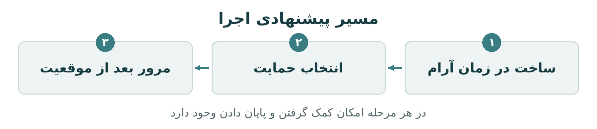
اینفوگرافی اجرای ER04 خواندن از راست به چپ
زمان پیشنهادی حدود ۳ تا ۵ دقیقه برای یک نوبت آغازین؛ ادامه یا پایان با توجه به علاقه، خستگی و شرایط واقعی. زمانگیری کودک لازم نیست.
وسایل این نسخه یک جعبه باز و سه کارت بزرگ برای کنار بزرگسال بودن، فاصله و شیء آشنا.
پیش از دعوت گزینهها در زمان آرام انتخاب شوند؛ جعبه در دسترس و قابل ردکردن باشد.
جمله آغاز «وقتی چیزی سخت میشود، دوست داری کدام کمکها اینجا باشد؟»
گام ۱ سه گزینه را جداگانه نشان دهید و از کودک بخواهید گزینه دلخواهش را انتخاب، حذف یا با چیزی دیگر جایگزین کند.
گام ۲ در نقش عروسک، یک انتخاب را تمرین کنید. برای انتخاب فاصله، واقعاً فضای امن بدهید؛ حضور بزرگسال ادامه داشته باشد.
گام ۳ در موقعیت واقعی، ابتدا ایمنی و همراهی را برقرار کنید؛ تنها وقتی کودک ظرفیت دارد دو گزینه را نشان دهید. بعداً مرور کنید چه کمکی مفید بود.
اگر بازی گیر کرد «میخواهی کارتها را ببینی یا فعلاً من کنارت بمانم؟»
راه سادهتر فقط دو گزینه آشنا؛ بدون جعبه و بدون توضیح طولانی.
اگر کودک چالش بیشتری خواست کودک یک گزینه بیفایده را حذف و گزینه تازه پیشنهاد کند.
راه دیگر برای مشارکت کارتهای سیستم ارتباطی موجود کودک را استفاده کنید؛ شیء واقعی هم میتواند نشانگر باشد.
ایمنی همین اجرا جعبه جای تنبیه یا تنهاگذاشتن نیست؛ مواد خوراکی، دارو، بند بلند و قطعه کوچک در آن نباشد.
نمونه ثبت فرضی «کارت فاصله را نشان داد؛ بزرگسال کمی عقب نشست و کودک پس از مدتی کتاب را آورد.» این فقط توصیف همان رخداد است؛ ثبت، فقط وقتی سؤال یا تصمیم مشخصی دارید.
مشاهده و تصمیم نوبت بعد ببین کودک کدام گزینه را میخواهد و آیا آن را ادامه میدهد. گزینه بیفایده یا ناخواسته را حذف کن؛ برای نوبت بعد دو انتخاب پذیرفتهشده کافی است. انتخاب فاصله را نیز مانند انتخاب همراهی بپذیر.
پایان و مرور حق استفادهنکردن محفوظ است؛ گزینه نامفید را برای دفعه بعد عوض کنید.
ابزار پیشنهادی ER04
۳ تا ۵ کارت تصویری یا شیء بزرگ و ایمن؛ تعداد زیاد لازم نیست.
نمونه گزینهها: «کنار بزرگسال»، «کمی فاصله»، «آب»، «حرکت کوتاه»، «کتاب/شیء آشنا»، «کمک برای حل مسئله».
برای کودکانی که AAC دارند، گزینهها میتوانند روی همان سیستم ارتباطی قرار بگیرند.
وسیله حسی فقط اگر کودک آن را میپسندد و ایمن است؛ هیچ «وسیله حسی جهانی» وجود ندارد.
ساختن جعبه در زمان آرام
جعبه را هنگام بحران نمیسازیم. در یک زمان عادی چند گزینه را معرفی میکنیم: «بعضی وقتها وقتی چیزی سخت میشه، آدمها چیزهای مختلفی میخوان. تو کدومها رو دوست داری توی جعبهمون باشه؟»
کودک میتواند گزینهای را رد کند یا گزینه خودش را اضافه کند. این انتخاب به معنی تضمین اثربخشی آن در آینده نیست.
استفاده در موقعیت واقعی
بزرگسال ابتدا رابطه و ایمنی را حفظ میکند. اگر کودک ظرفیت انتخاب دارد میگوید: «میخوای جعبه رو ببینیم یا من کنارت بمونم؟» اگر کودک در اوج ناراحتی نمیتواند انتخاب کند، جعبه را به آزمون تبدیل نمیکنیم؛ ممکن است بزرگسال یکی از گزینههای آشنا را آرام پیشنهاد کند یا فقط حضور داشته باشد.
نسخههای سنی ER04
سن | تطبیق |
|---|---|
۲٫۵–۳ سال | «جعبه» لازم نیست؛ دو تصویر یا دو انتخاب همتنظیمی کافی است: نزدیک / فاصله، آب / بغل اگر کودک میخواهد. |
۳–۴ سال | ۲ تا ۳ گزینه ثابت و آشنا؛ کودک با اشاره یا کلام انتخاب میکند. |
۴–۵ سال | کودک در ساخت جعبه و حذف گزینههای بیفایده مشارکت میکند. |
۵–۶ سال | میتواند بعد از موقعیت مرور کند: «کدوم کمک کرد؟ دفعه بعد چی رو عوض کنیم؟» |
از ER04 چه چیزی نمیتوان فهمید؟
انتخابنکردن، استفادهنکردن یا جوابندادن یک گزینه، نشانه اختلال تنظیم هیجان، اضطراب، ADHD، اوتیسم، مقاومت یا «نخواستن همکاری» نیست. خود جعبه هم اثربخشی مستقلی ثابت نکرده است.
پشتوانه و حدود شواهد ER04
عنصر | وضعیت |
|---|---|
پشتوانه مرتبط | همتنظیمی و آموزش/مدلسازی راهبردهای سنمتناسب |
سطح اصل کلی | B برای همتنظیمی/راهنمای اجرایی |
شواهد بیان راهبرد در preschool | C — مطالعه پایلوت محدود |
سطح خود بازی | D |
L0 مجاز | «جعبه چند گزینه آشنا را برای انتخاب در دسترس میگذارد.» |
L1 محتاطانه | «میتواند فرصت تمرین انتخاب و گفتوگو درباره راهبردهای مختلف فراهم کند.» |
L2/L3 ممنوع | «خودتنظیمی را بهبود میدهد»، «tantrum را درمان میکند»، «اضطراب را کم میکند». |
بازی هستهای دوم: ER05 — وقتی بازی خراب شد ♥
این بازی درباره «تحمل شکست» نیست؛ درباره دیدن مسیر بازگشت بعد از یک ناکامی کوچک و طبیعی است.
شناسنامه ER05
مولفه | تعریف |
|---|---|
کد | ER05–23–E ♥ |
خانواده | Emotion & Co-regulation |
سن هسته | ۲٫۵ تا ۳ سال |
سن قابل تطبیق | تقریباً ۲٫۵ تا ۶ سال |
هدف اصلی | تجربه بازگشت پس از ناکامی با حمایت متناسب |
اهداف همراه | حل مسئله؛ رابطه |
نوع هدایت | مشترک/طبیعی؛ ناکامی مصنوعی شدید ایجاد نمیشود |
محیط | خانه یا مهد |
برچسب ♥ | کیفیت همراهی مهمتر از مشاهده عملکرد است |
سطح خود بازی | D |
راهنمای دقیق اجرای بازی ER05
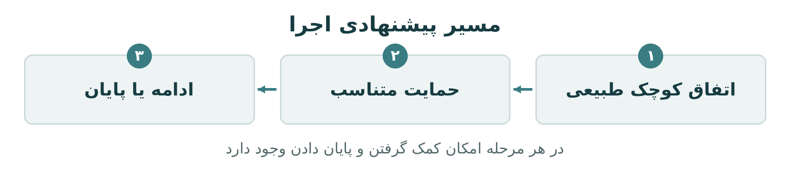
اینفوگرافی اجرای ER05 خواندن از راست به چپ
زمان پیشنهادی حدود ۳ تا ۵ دقیقه برای یک نوبت آغازین؛ ادامه یا پایان با توجه به علاقه، خستگی و شرایط واقعی. زمانگیری کودک لازم نیست.
وسایل این نسخه مواد بازی جاری کودک، مثل بلوک سبک؛ فقط در نسخه داستانی یک عروسک.
پیش از دعوت از ناکامی طبیعی و کوچک استفاده کنید؛ ساخته کودک را عمداً خراب نکنید.
جمله آغاز «ریخت؛ من اینجا هستم. دوست داری چه کار کنیم؟»
گام ۱ وقتی اتفاق طبیعی رخ داد، دستها و وسایل را ایمن نگه دارید و یک توصیف کوتاه بگویید؛ فوراً راهحل ندهید.
گام ۲ در صورت نیاز حضور یا کمک مشخص پیشنهاد کنید: نگهداشتن پایه، آوردن قطعه یا فاصلهگرفتن. کودک میتواند دوباره بسازد یا پایان دهد.
گام ۳ پس از آرامترشدن، اگر تمایل داشت یک تغییر کوچک را امتحان کنید؛ مرور فقط یک جمله درباره چیزی باشد که کمک کرد.
اگر بازی گیر کرد «میخواهی پایه را نگه دارم، قطعه دیگری بیاورم یا فعلاً تمام کنیم؟»
راه سادهتر کمک عملی زودتر و دو انتخاب؛ تمرین بر ناکامی فرضی عروسک.
اگر کودک چالش بیشتری خواست کودک برای نوبت بعد ابزار یا طرح دیگری انتخاب کند؛ ناکامی را شدیدتر نکنید.
راه دیگر برای مشارکت انتخاب با اشاره؛ بزرگسال بخش دشوار را انجام دهد و تصمیم کودک حفظ شود.
ایمنی همین اجرا برای تمرین گریه یا محرومیت ایجاد نشود؛ در ناراحتی زیاد تجربه آموزشی کنار گذاشته شود.
نمونه ثبت فرضی «بعد از افتادن برج، کمک خواست؛ پایه را نگه داشتم و دو قطعه دیگر گذاشت.» این فقط توصیف همان رخداد است؛ ثبت، فقط وقتی سؤال یا تصمیم مشخصی دارید.
مشاهده و تصمیم نوبت بعد ببین پس از دشواری، کودک کمک، تعمیر، تغییر بازی یا پایان را انتخاب میکند. اگر کمک خواست، فقط بخش دشوار را نگه دار؛ اگر پایان خواست، ادامه نده. برای ایجاد فرصت مشاهده، عمداً ساخته او را خراب نکن.
پایان و مرور پایاندادن هم انتخاب معتبر است؛ ستایش تحمل یا مقایسه با دیگران لازم نیست.
طراحی بازی ER05
بهترین نسخه ER05 اغلب از ناکامی طبیعی میآید: برج میریزد، قطعه جا نمیشود، نقاشی پاره میشود یا مسیر ماشین خراب میشود. لازم نیست بزرگسال عمداً شکست شدید ایجاد کند.
اگر برای تمرین از سناریوی ساختگی استفاده میشود، باید کوچک، ایمن و قابل برگشت باشد؛ مثلاً برج عروسک میافتد. هدف برانگیختن گریه برای «تمرین تنظیم» نیست.
چرخه کوتاه ER05
مرحله | نمونه |
|---|---|
۱. ناکامی کوچک | برج میافتد. |
۲. حضور | «اوه، ریخت. من اینجام.» |
۳. دیدن نیاز | کودک دوباره قطعه برمیدارد؟ کمک میخواهد؟ فاصله میگیرد؟ |
۴. کمک کمینه | ثابت نگهداشتن پایه، ارائه یک بلوک پهنتر، یا فقط انتظار. |
۵. بازگشت | کودک دوباره میسازد، کمک میخواهد، یا تصمیم میگیرد فعلاً تمام کند. |
۶. مرور اختیاری | برای سن بالاتر: «چی کمک کرد دوباره ادامه بدی؟» |
پایان دادن هم میتواند انتخاب معتبر باشد
بازگشت همیشه به معنی «ادامه همان کار» نیست. اگر کودک بعد از تلاش و حمایت تصمیم بگیرد فعالیت را تمام کند، ممکن است انتخابی متناسب باشد. هدف کتاب ساختن کودک «همیشه مقاوم» نیست.
در مقابل، اگر بزرگسال هر بار در اولین ناکامی کار را تمام کند یا مسئله را خودش حل کند، فرصت دیدن راهبردهای کودک کمتر میشود. اینجا دوباره ۵م کمک میکند.
نسخههای سنی ER05
سن | تطبیق |
|---|---|
۲٫۵–۳ سال | ناکامی بسیار کوچک؛ حضور و کمک عملی زودتر؛ کلمات کم. |
۳–۴ سال | دو گزینه ساده: «دوباره امتحان کنیم یا کمک میخوای؟» |
۴–۵ سال | یک سؤال درباره راه بعدی و فرصت تغییر ابزار/روش. |
۵–۶ سال | مرور کوتاه راهبرد و امکان برنامه برای تلاش بعدی؛ بدون سخنرانی درباره perseverance. |
از ER05 چه چیزی نمیتوان فهمید؟
گریه، ترک بازی، درخواست کمک یا زمانبردن برای بازگشت، بهتنهایی نشاندهنده تنظیم ضعیف، تابآوری پایین، وابستگی، ADHD یا اختلال هیجانی نیست. یک بازی نیز میزان resilience کودک را اندازه نمیگیرد.
پشتوانه و حدود شواهد ER05
عنصر | وضعیت |
|---|---|
پشتوانه مرتبط | پژوهش رشد راهبردهای تنظیم در موقعیت ناکامی/انتظار + همتنظیمی |
سطح حوزه | B/C بسته به ادعا؛ مطالعات طولی توصیفی و راهنماهای شیوه اجرا |
سطح خود بازی | D |
L0 مجاز | «فعالیت موقعیتی برای دیدن و تجربه راههای بازگشت پس از ناکامی فراهم میکند.» |
L1 محتاطانه | «میتواند فرصت تمرین درخواست کمک، تغییر راه یا بازگشت به فعالیت را فراهم کند.» |
L2/L3 ممنوع | «تابآوری را افزایش میدهد»، «اختلال تنظیم را درمان میکند»، «تحمل ناکامی را اندازه میگیرد». |
وقتی کودک فقط صفحه نمایش میخواهد
گاهی بزرگسال برای پایان سریع ناراحتی، فوراً گوشی یا ویدئو میدهد. یک مطالعه طولی ۲۰۲۴ با ۲۶۵ خانواده نشان داد استفاده بیشتر والد از ابزار دیجیتال برای تنظیم هیجان کودک در ۳٫۵ سالگی با خشم بیشتر و effortful control کمتر یک سال بعد مرتبط بود؛ رابطه برای خشم دوطرفه هم بود. این مطالعه مشاهدهای است و علت قطعی را ثابت نمیکند، اما دلیل خوبی است که صفحه نمایش را «تنظیمکننده پیشفرض هر ناراحتی» نکنیم.
این به معنی ممنوعیت رسانه نیست؛ سؤال این است که آیا دستگاه دائماً جای رابطه و فرصت تجربه راهبردهای دیگر را گرفته است.
علم چه میگوید؟
آنچه نسبتاً میدانیم
OPRE و Head Start بر همتنظیمی، محیط حمایتی و آموزش/مدلسازی سنمتناسب مهارتهای خودتنظیمی تأکید دارند.
در مطالعه طولی ۱۲۰ کودک از ۲۴ ماهگی تا ۵ سال، الگوی استفاده از راهبردهای تنظیم با سن تغییر کرد و distraction افزایش یافت؛ مسیرها برای همه راهبردها یکسان نبود.
پژوهش پویای همین بازه نشان میدهد تنظیم هیجان فرایندی زمانمند و در حال رشد است و رابطه میان واکنش هیجانی و فرایندهای اجرایی ساده و خطی نیست.
مطالعه پایلوت ۵۹ کودک پیشدبستانی نشان میدهد بیان راهبرد قبل از ناکامی برای بسیاری از کودکان ممکن است، اما شواهد هنوز برای ادعاهای آموزشی قوی محدود است.
مطالعه طولی استفاده از رسانه برای تنظیم هیجان کودک، ارتباطهایی با خشم و effortful control بعدی گزارش کرده است؛ اما طراحی مشاهدهای مانع نتیجهگیری علّی قطعی است.
آنچه نمیتوانیم بگوییم
یک راهبرد مشخص برای همه کودکان بهترین است.
جعبه آرامش بهطور مستقل خودتنظیمی را بهبود میدهد.
کودک باید سریع از ناراحتی برگردد.
گریه یا کنارکشیدن نشاندهنده تنظیم ضعیف است.
کودکی که راهبرد را نام نمیبرد مهارت تنظیم ندارد.
صفحه نمایش بهتنهایی علت مشکل خودتنظیمی است.
ER05 resilience را اندازه میگیرد یا افزایش میدهد.
در خانه چه میتوان کرد
وسایل آرامش را در زمان آرام و به شکل اختیاری معرفی کنید.
اگر پیشنهادی پذیرفته نشد، آن را به نشانهٔ بیهمکاری تبدیل نکنید؛ گزینه و همراهی خود را بازبینی کنید.
پایاندادن به بازی را بپذیرید. برای نشاندادن توانایی آرامشدن، کودک را در موقعیت نگه ندارید.
در اوج ناراحتی انتخابهای زیاد نده.
بعد از فروکش موقعیت، اگر کودک آمادگی دارد، کوتاه مرور کنید چه چیزی کمک کرد.
گوشی را تنها راه همیشگی پایان ناراحتی نکنید.
در مهد یا کارگاه
محل خلوت را با مسیر بازگشت به گروه همراه کنید. روشن باشد که کودک برای گرفتن حمایت آنجاست و میتواند دربارهٔ نوع همراهی و زمان برگشتن سهمی داشته باشد.
در ثبت مشاهده، به جای «سه دقیقه طول کشید تا آرام شود» بهعنوان نمره، بنویسید چه حمایتهایی ارائه شد و کودک چه زمانی دوباره توانست انتخاب، ارتباط یا مشارکت کند.
یک تجربه برای این هفته
پس از یک دشواری طبیعی، فقط دو انتخاب آشنا و قابل انجام پیشنهاد کنید.
بعد از خودتان بپرسید: آیا کودک میدانست هر انتخاب چه معنایی دارد و میتوانست هیچکدام را نخواهد؟
همراهی در موقعیتهای روزمره
کودک معمولاً با شنیدن جمله «آرام باش» مهارت تنظیم هیجان را یاد نمیگیرد؛ تنظیم در رابطه و تجربه ساخته میشود.
چهار گام همراهی:
۱. حضور آرام بزرگسال
۲. پذیرش تجربه کودک
۳. کمک به نامگذاری احساس
۴. بازگشت تدریجی به حل مسئله
تمرین: در لحظههای دشوار، قبل از اصلاح رفتار بپرسید: کودک اکنون به چه نوع حمایتی نیاز دارد؟
بازگشت فقط آرام نشستن نیست
پس از ناراحتی، کودک ممکن است ابتدا آب بخواهد، چند دقیقه تماشا کند و بعد با یک نقش کوچک وارد بازی شود. همین مسیر را ببینید. برگشتن به مشارکت همیشه با لبخند، سکوت یا گفتن «الان خوبم» همراه نیست. از کودک نخواهید آرام شدنش را برای شما اجرا کند.
انتخابهایی که قبلاً آشنا شدهاند
راههای احتمالی استراحت را در زمان آرام معرفی کنید: کنار بزرگسال ماندن، فضای کمصدا یا یک فعالیت آشنا. هنگام ناراحتی فقط گزینههای قابل دسترس را پیشنهاد دهید. اگر هیچکدام مناسب نبود، کنار کودک بمانید و نیاز موقعیت را دوباره بررسی کنید. جعبه انتخاب نباید نسخه اجباری هر هیجان باشد.
پایان فصل
این هفته... | پیشنهاد |
|---|---|
بیشتر ببین | بعد از ناکامی، کودک چگونه به رابطه یا فعالیت برمیگردد؟ |
کمتر انجام بده | فرمان «آروم شو» و فرستادن اجباری به گوشه آرامش. |
امتحان کن | دو یا سه گزینه آشنا را در زمان آرام با کودک انتخاب کن. |
از خودت بپرس | آیا راهبرد برای نیاز کودک است یا برای اینکه ناراحتی سریعتر از جلوی چشم من حذف شود؟ |
مرور یک موقعیت میتواند کوتاه باشد: چه اتفاقی افتاد، چه چیزی کمک کرد و دفعهٔ بعد کدام قسمت را تغییر میدهیم؟ پاسخ همین سه پرسش برای شروع کافی است.
با پایان این فصل، بخش «رابطه قبل از عملکرد» کامل میشود. فصل بعد وارد استقلال و زندگی عملی میشویم: «استقلال از محیط شروع میشود».
منابع منتخب فصل
Administration for Children and Families, OPRE. Promoting Self-Regulation in the First Five Years: A Practice Brief.
OPRE. Supporting the Development of Self-Regulation in Young Children: Tips for Practitioners Working with Preschool Children.
Head Start. Strategies for Supporting Self-Regulation: Snapshot Series. Updated March 2025.
Ratcliff KA, Vazquez LC, Lunkenheimer ES, Cole PM. Longitudinal Changes in Young Children’s Strategy Use for Emotion Regulation. Developmental Psychology. 2021;57(9):1471–1486. https://doi.org/10.1037/dev0001235.
Cole PM, Lougheed JP, Chow S-M, Ram N. Development of Emotion Regulation Dynamics Across Early Childhood: A Multiple Time-Scale Approach. Affective Science. 2020;1:28–41.
Bivins Z, Grabell AS. Early Childhood Emotion Regulation Strategy Articulation, Its Neurophysiological Correlates, and Association With Psychopathology. Translational Issues in Psychological Science. 2024;10(4):417–434. https://doi.org/10.1037/tps0000439.
Konok V, Binet M-A, Korom Á, Pogány Á, Miklósi Á, Fitzpatrick C. Cure for tantrums? Longitudinal associations between parental digital emotion regulation and children’s self-regulatory skills. Frontiers in Child and Adolescent Psychiatry. 2024;3:1276154.
یادداشت روششناختی: ER04، ER05، «جعبه انتخاب» و تعریف اجرایی بازگشت پس از دشواری ابزارهای آموزشی کتاباند. شواهد بیرونی به رشد راهبردها، همتنظیمی و الگوهای مشاهدهشده در ناکامی مربوطاند؛ خود بازیها سطح D هستند.
بخش ۳ استقلال در زندگی روزمره
فصلهای ۸ تا ۱۰
سهم واقعی کودک میتواند یک بخش کوچک از کار باشد. ابزار متناسب و کمک محدود، مشارکت را ممکن میکنند.
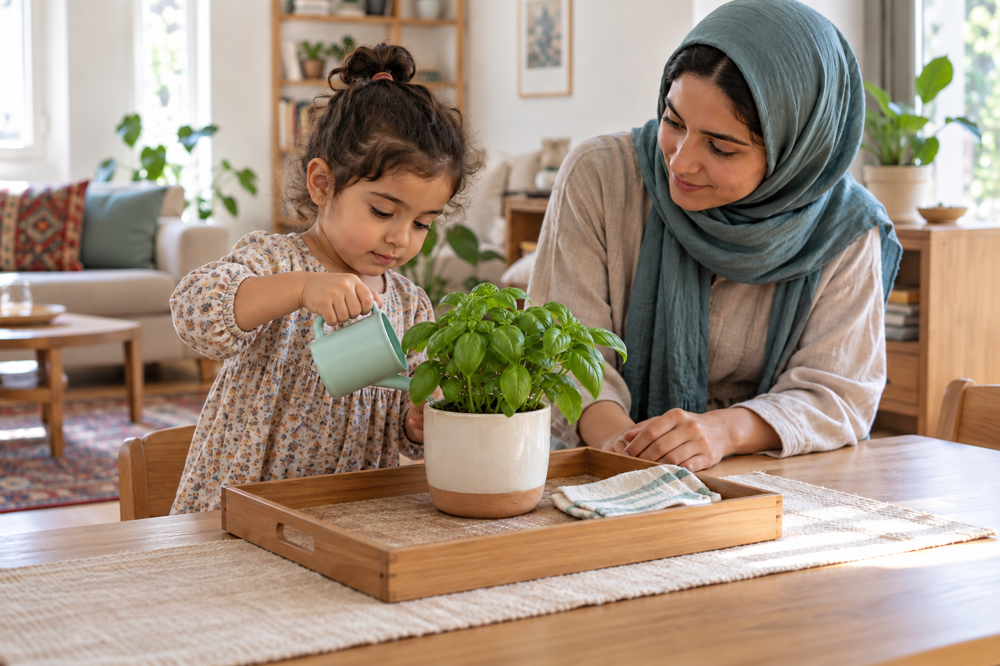
تصویر آموزشی بازسازیشده با هوش مصنوعی
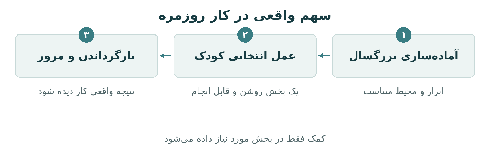
نقشه خواندن این بخش فصلهای ۸ تا ۱۰
فصل ۸ استقلال از محیط شروع میشود
در این فصل چه میخوانیم؟
پیش از اینکه بپرسیم «چرا خودش انجام نمیدهد؟»، میتوانیم به اندازهٔ ابزار و جای آن نگاه کنیم.
«خودم!» — اما واقعاً فرصت دارد؟
کودک میگوید: «خودم به گل آب میدم.» پارچ بزرگ است و گلدان بالای طاقچه. دستش به دسته نمیرسد. بزرگسال پارچ را میگیرد: «بده من.» کاری که به توان کودک نسبت داده بودیم، شاید از آمادهنبودن محیط شروع شده باشد.
پارچ کوچکتر و سبکتر، جای قابل دسترس و دستمالی برای آبِ ریخته، شکل دیگری از مشارکت را ممکن میکنند. مقدار آب باید همان مقدار موردنیاز گیاه باشد. کودک میتواند ریختن، آوردن دستمال یا بخشی از جمعکردن ابزار را انتخاب کند. در استقلال، سهم کودک را دنبال میکنیم: چه چیزی را انتخاب کرد، کدام قسمت را انجام داد و کجا کمک خواست؟ کمکگرفتن میتواند جزئی از انجام کار باشد. هدف هر نوبت را با ابزار، زمان و حال واقعی کودک تنظیم میکنیم.
پرسش این فصل
چطور محیط را آماده کنیم تا کودک در یک کار واقعی، سهم قابل انجام و حق کمکخواستن داشته باشد؟
استقلال با خودکفایی کامل فرق دارد
در این کتاب استقلال بیشتر به «عاملیت و مشارکت» نزدیک است تا انجامدادن همهچیز بدون کمک. NAEYC اختیار و نقش فعال کودک را توانایی انتخاب و عمل بر اساس انتخاب درباره فعالیت و مسیر آن توصیف میکند و تأکید دارد فرصت اختیار و نقش فعال کودک باید برای همه کودکان فراهم باشد، نه فقط برای کودکانی که از قبل عملکرد بالایی دارند.
پس کودک مستقل میتواند کمک بخواهد. حتی درخواست کمک دقیق، خود بخشی از عاملیت است: کودک میفهمد کجا نیاز به حمایت دارد و چگونه آن را درخواست کند.
محیط، بخشی از عملکرد کودک است
اگر قفسه خیلی بلند است، لباس بسیار تنگ است، پارچ بیش از حد سنگین است یا زمان آنقدر کم است که بزرگسال ناچار میشود همهچیز را سریع انجام دهد، آنچه میبینیم فقط «توانایی کودک» نیست؛ ترکیب کودک و محیط است.
NAEYC بر طراحی محیط یادگیری معنادار، چالشبرانگیز اما قابلدستیابی و استفاده از حمایت مرحلهای متناسب تأکید دارد. Head Start نیز برای نوپاها توصیه میکند مواد و فعالیتها بر اساس ویژگیهای کودک تطبیق یابند و خانوادهها گاهی «زود وارد نشوند» تا کودک فرصت امتحانکردن داشته باشد.
چهار سؤال محیط آماده
سؤال | نمونه |
|---|---|
آیا کودک به ابزار دسترسی دارد؟ | قفسه، لباس، ظرف یا ابزار در ارتفاع و اندازه مناسب است؟ |
آیا کار بیش از حد دشوار طراحی شده؟ | آیا میتوان تعداد مراحل، وزن، اندازه یا گزینهها را کم کرد؟ |
آیا زمان واقعی برای تلاش وجود دارد؟ | اگر فقط ۳۰ ثانیه وقت داریم، شاید زمان خوبی برای تمرین استقلال نباشد. |
آیا خطای کوچک قابلتحمل است؟ | آیا ریختن چند قطره آب یا برعکس پوشیدن لباس را فوراً «خرابکاری» میبینیم؟ |
حمایت از حق انتخاب کودک چه معنایی دارد؟
مطالعه Linkiewich و همکاران روی ۱۰۰ خانواده، تعامل مادر–کودک و پدر–کودک را در بازی آزاد کدگذاری کرد. بعضی رفتارهای positive guidance، negative control و responsiveness با نمایش autonomy کودک مرتبط بودند، اما الگو برای مادران و پدران یکسان نبود. این مطالعه مشاهدهای است و رابطه علت و معلولی را ثابت نمیکند.
پس در این کتاب از جملههای بزرگ مثل «اگر به کودک انتخاب بدهی استقلالش افزایش مییابد» پرهیز میکنیم. زبان دقیقتر این است: «فضای انتخاب، راهنمایی غیرکنترلگر و پاسخگویی میتوانند بخشی از محیط حمایتکننده از عاملیت کودک باشند.»
مونتهسوری چه چیزی به این فصل میدهد؟
از مونتهسوری در این فصل برای ایدههایی مانند محیط آماده، ابزار متناسب با اندازه کودک، کارهای زندگی واقعی، استقلال تدریجی و نقش مشاهدهگر بزرگسال الهام میگیریم. اما نام «مونتهسوری» بهتنهایی اثربخشی یک فعالیت را ثابت نمیکند.
RCT ملی ۲۰۲۵ روی پذیرش قرعهکشی در ۲۴ مدرسه دولتی مونتهسوری نشان داد در پایان کودکستان، گروهی که پیشنهاد صندلی مونتهسوری دریافت کرده بودند در چند پیامد از جمله خواندن، حافظه کوتاهمدت، نظریه ذهن و کارکرد اجرایی نتایج بالاتری داشتند. این شواهد درباره «برنامه مونتهسوری در مقیاس مدرسه» است؛ از آن نمیتوان نتیجه گرفت که آبدادن به گل یا پوشیدن لباس بهتنهایی آن پیامدها را ایجاد میکند.
کارهای روزمره چرا ارزش آموزشی دارند؟
زندگی روزمره موقعیتهای واقعی برای توالی، استفاده از ابزار، تصمیمگیری، کمکخواهی و مشارکت فراهم میکند. ارزش آنها فقط در «تمرین مهارت ظریف» نیست؛ کودک در کاری مشارکت میکند که نتیجهاش برای محیط واقعی قابل دیدن است.
CDC در چکلیستهای جاری خود نمونههایی از استقلال روزمره را در رشد ذکر میکند: در ۳۰ ماهگی درآوردن بعضی لباسها، در ۳ سالگی پوشیدن بعضی لباسهای ساده و در ۵ سالگی بستن بعضی دکمهها یا انجام کارهای ساده خانه. اما همانطور که فصل ۱ گفت، این نقطه عطف رشدیها آزمون یا استاندارد عملکرد نیستند.
استقلال را با سرعت نسنج
کودکی که خودش لباس میپوشد ممکن است سه برابر بزرگسال زمان بخواهد. اگر معیار ما فقط سرعت باشد، تقریباً همیشه انجامدادن کار بهجای کودک «بهتر» به نظر میرسد. اما اگر هدف مشارکت و یادگیری باشد، زمان بخشی از طراحی محیط است.
گاهی واقعاً وقت نداریم. در این حالت لازم نیست استقلال را به میدان نبرد تبدیل کنیم. میتوان گفت: «امروز عجله داریم، این قسمت رو من کمک میکنم؛ عصر دوباره خودت امتحان میکنی.»
کمک یا گرفتن کار از دست کودک؟
رفتار بزرگسال | اثر بر فرصت کودک | نسخه دقیقتر |
|---|---|---|
فوراً کار را کامل میکند | فرصت تلاش و راهبرد کودک حذف میشود. | فقط بخشی را که لازم است کمک کن و دوباره مسئولیت را برگردان. |
اصرار میکند کودک «خودش» انجام دهد | کمکخواهی را شکست استقلال میکند. | درخواست کمک را معتبر بدان و سطح حمایت را تنظیم کن. |
هر خطا را اصلاح میکند | محصول بزرگسالپسند بر تجربه کودک مقدم میشود. | فقط خطاهای ایمنی/ضروری را اصلاح کن؛ بقیه را اگر لازم نیست رها کن. |
گزینههای زیاد میدهد | انتخاب به بار شناختی تبدیل میشود. | دو یا چند گزینه محدود و واقعی بده. |
فراگیری: استقلال یک شکل ندارد
برای کودک دارای تفاوت حرکتی، استقلال ممکن است با ابزار تطبیقیافته، نشستن بهجای ایستادن، استفاده از دو دست به روش متفاوت یا کمک جسمانی مشترک اتفاق بیفتد. برای کودک دارای تفاوت ارتباطی، انتخاب میتواند با اشاره، تصویر یا AAC انجام شود.
هدف «کمترین کمک ممکن برای همه» نیست؛ هدف «کمترین کمک مفید و دسترسپذیر برای این کودک در این موقعیت» است.
سن چه چیزی را تغییر میدهد؟
جدول زیر جهت طراحی داخلی است، نه استاندارد هنجاری.
بازه | تمرکز مناسبتر |
|---|---|
۲–۳ سال | کار یک یا دو مرحلهای، ابزار سبک و بزرگ، انتخاب محدود، کمک مشترک و فرصت تکرار. |
۳–۴ سال | توالی کوتاهتر، مشارکت بیشتر در لباس/محیط، درخواست کمک و اصلاح ساده. |
۴–۵ سال | کار چندمرحلهای کوتاه، مسئولیت بیشتر برای آمادهسازی/جمعکردن و انتخاب روش. |
۵–۶ سال | برنامهریزی ساده، بررسی ابزار، انجام بخش بیشتری از توالی و مرور اینکه چه کمکی لازم بود. |
بازی هستهای اول: PL01 — آب برای گل
این فعالیت یک کار واقعی و ساده است؛ نه آزمایش تمرکز و نه «تمرین کارکرد اجرایی».
شناسنامه PL01
مولفه | تعریف |
|---|---|
کد | PL01–23–P |
خانواده | Practical Life |
سن هسته | ۲ تا ۳ سال |
سن قابل تطبیق | تقریباً ۲ تا ۴ سال |
هدف اصلی | مشارکت مستقلتر در یک کار واقعی ساده |
اهداف همراه | کنترل حرکتی؛ توالی ساده |
نوع هدایت | مدل کوتاه + فرصت عمل |
محیط | خانه یا مهد |
سطح خود فعالیت | D |
راهنمای دقیق اجرای بازی PL01
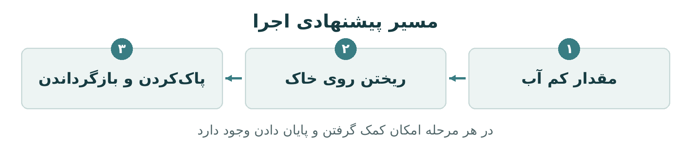
اینفوگرافی اجرای PL01 خواندن از راست به چپ
زمان پیشنهادی حدود ۵ تا ۱۰ دقیقه برای یک نوبت آغازین؛ ادامه یا پایان با توجه به علاقه، خستگی و شرایط واقعی. زمانگیری کودک لازم نیست.
وسایل این نسخه یک گیاه غیرسمی، پارچ سبک کوچک، سینی و دستمال.
پیش از دعوت بزرگسال نیاز گیاه به آب را بررسی کند؛ فقط مقدار مورد نیاز همان نوبت در پارچ بگذارد.
جمله آغاز «دوست داری آب این گل را بدهی یا دستمال را بیاوری؟»
گام ۱ مسیر کوتاه و جای ثابت گلدان را نشان دهید. یک بار ریختن آرام مقدار کم آب روی خاک را مدل کنید.
گام ۲ پارچ به کودک داده شود؛ میتواند با دو دست بگیرد یا بزرگسال فقط وزن آن را همراه نگه دارد. توقف را با نشانه روی ظرف یا تمامشدن آب روشن کنید.
گام ۳ اگر آب بیرون ریخت، دستمال را در دسترس بگذارید؛ سهم کودک در پاککردن و بازگرداندن ابزار را بپذیرید.
اگر بازی گیر کرد «پارچ سنگین است؟ میخواهی کمترش کنم یا فقط زیرش را نگه دارم؟»
راه سادهتر یک فنجان سبک و یک عمل؛ بزرگسال حمل را انجام دهد.
اگر کودک چالش بیشتری خواست کودک وسایل را پیش از شروع بیاورد و بعد سر جای خود بگذارد؛ مقدار آب گیاه تغییر نکند.
راه دیگر برای مشارکت ظرف دستهدار، ابزار گرفتن مناسب یا نقش آوردن دستمال.
ایمنی همین اجرا سطح خشک و دور از برق باشد؛ گیاه و خاک چشیده نشوند؛ پس از تماس دستها شسته شوند.
نمونه ثبت فرضی «پارچ را با دو دست گرفت، نیمی از آب را ریخت و برای نگهداشتن ظرف کمک خواست.» این فقط توصیف همان رخداد است؛ ثبت، فقط وقتی سؤال یا تصمیم مشخصی دارید.
مشاهده و تصمیم نوبت بعد ببین گرفتن پارچ یا کنترل جریان در کدام لحظه سخت میشود. دفعه بعد ظرف سبکتر یا آب کمتر آماده کن؛ برای مشاهده دوباره، گیاه را دوباره آب نده. سهم کودک میتواند فقط حمل پارچ خالی باشد.
پایان و مرور کار با پایان مقدار آب همان نوبت تمام میشود؛ برای تکرار، گیاه را بیش از نیاز آبیاری نکنید.
چرا این فعالیت؟
آبدادن به گل یک کار واقعی با نتیجه قابل مشاهده است: آب از ظرف به خاک منتقل میشود و کودک در مراقبت از محیط سهم پیدا میکند. اما از نظر علمی، شواهد مستقیم نداریم که این فعالیت خاص استقلال، تمرکز یا کارکرد اجرایی را «افزایش» دهد.
ارزش آن در ساختن موقعیتی است که کودک میتواند حملکردن، ریختن، توقف، پاککردن و کمکخواستن را در زمینهای معنادار تجربه کند.
ابزار و آمادهسازی PL01
پارچ یا بطری بسیار سبک و کوچک؛ مقدار آب کم.
گلدان غیرسمی و ایمن، در ارتفاع قابل دسترس.
سینی یا زیرگلدانی برای محدودکردن ریختوپاش.
دستمال در دسترس کودک.
اگر کودک نباید با آب/خاک تماس داشته باشد، نسخه خشک یا مشارکت جایگزین طراحی شود.
روش معرفی
بزرگسال یک بار کوتاه و بدون سخنرانی نشان میدهد: پارچ را میگیرد، مقدار کمی آب میریزد، مکث میکند و پارچ را به کودک پیشنهاد میدهد. اگر کودک شروع کرد، بزرگسال لازم نیست هر حرکت را تصحیح کند.
نقش کودک و بزرگسال
کودک میتواند حمل کند، بریزد، توقف کند، پاک کند یا فقط یکی از این بخشها را انجام دهد.
بزرگسال مقدار آب و ایمنی را مدیریت میکند، نه نتیجه ظاهری کار را.
اگر آب ریخت، ابتدا فرصت میدهد کودک متوجه شود و در پاککردن مشارکت کند؛ بدون شرمدادن.
اگر پارچ سنگین یا کنترل آن دشوار بود، ابزار را تغییر میدهد نه اینکه فوراً توانایی کودک را قضاوت کند.
تطبیق سنی PL01
سن | تطبیق |
|---|---|
۲–۳ سال | پارچ بسیار کوچک، یک گلدان، مقدار آب کم؛ بزرگسال میتواند پارچ را همراه نگه دارد. |
۳–۴ سال | کودک خودش مقدار تقریبی آب را با نشانه ساده دنبال میکند و دستمال را برمیگرداند. |
اگر کودک نخواست یا ریختوپاش زیاد شد
عدم علاقه شکست نیست. میتواند فقط دستمال را بیاورد، آب را با فنجان منتقل کند یا فعالیت را کنار بگذارد. اگر ریختوپاش زیاد است، مقدار آب و اندازه ظرف را کم کن؛ هدف ایجاد ناکامی برای «تمرین» نیست.
از PL01 چه چیزی نمیتوان فهمید؟
از آبدادن به گل نمیتوان استقلال عمومی، تمرکز، هماهنگی حرکتی، هوش، کارکرد اجرایی یا آمادگی مدرسه را سنجید. عملکرد یک روز نیز به ابزار، خستگی، علاقه و تجربه قبلی وابسته است.
پشتوانه و حدود شواهد PL01
عنصر | وضعیت |
|---|---|
خانواده شواهد | Agency / autonomy support / Montessori whole-program principles |
سطح اصل کلی | B برای DAP/اختیار و نقش فعال کودک شیوه اجرا؛ C برای بعضی مطالعات autonomy support |
سطح خود فعالیت | D |
L0 مجاز | «فرصتی واقعی برای مشارکت در مراقبت از محیط و استفاده از ابزار فراهم میکند.» |
L1 محتاطانه | «میتواند فرصت تمرین توالی، کنترل ریختن و کمکخواهی فراهم کند.» |
L2/L3 ممنوع | «استقلال/تمرکز/EF را افزایش میدهد» یا هر ادعای درمانی/تشخیصی. |
بازی هستهای دوم: PL04 — لباس خودم
هدف «کودک باید خودش لباس بپوشد» نیست؛ هدف پیدا کردن بخشی از فرایند است که کودک میتواند واقعاً مالک آن باشد.
شناسنامه PL04
مولفه | تعریف |
|---|---|
کد | PL04–23–P |
خانواده | Practical Life |
سن هسته | ۲ تا ۳ سال |
سن قابل تطبیق | تقریباً ۲ تا ۴٫۵ سال |
هدف اصلی | مشارکت در مراقبت از خود متناسب با توان و موقعیت |
اهداف همراه | حرکت ظریف/درشت؛ پشتکار در یک توالی واقعی |
نوع هدایت | محیط + مدل کوتاه + کمک مشترک |
محیط | خانه یا مهد |
سطح خود فعالیت | D |
راهنمای دقیق اجرای بازی PL04
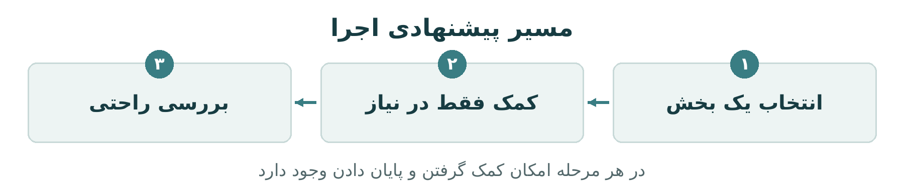
اینفوگرافی اجرای PL04 خواندن از راست به چپ
زمان پیشنهادی حدود ۵ تا ۱۰ دقیقه برای یک نوبت آغازین؛ ادامه یا پایان با توجه به علاقه، خستگی و شرایط واقعی. زمانگیری کودک لازم نیست.
وسایل این نسخه یک لباس ساده و آزاد با کش یا چسب، صندلی ثابت و محل قرارگیری لباس.
پیش از دعوت یک بخش مشخص مثل واردکردن دست در آستین انتخاب شود؛ زمان بدون عجله باشد.
جمله آغاز «کدام قسمت را خودت میخواهی انجام بدهی؟»
گام ۱ لباس را در جهت قابل تشخیص آماده کنید؛ پشت و رو یا دهانه آستین را با نشانه دیداری نشان دهید، بدون اجرای کل کار.
گام ۲ کودک همان بخش انتخابی را انجام دهد. اگر گیر کرد، از او بپرسید کدام قسمت را کمک کنید و فقط همان بخش را همراه شوید.
گام ۳ درباره راحتی لباس سؤال کنید؛ اصلاح ظاهر در اولویت نیست. کودک در صورت تمایل لباس قبلی را در جای مشخص بگذارد.
اگر بازی گیر کرد «دهانه را نگه دارم یا میخواهی دوباره خودت امتحان کنی؟»
راه سادهتر فقط کشیدن آستین از روی دست یا درآوردن یک لباس ساده.
اگر کودک چالش بیشتری خواست دو بخش متوالی یا انتخاب بست ساده متناسب با توان؛ نه مسابقه سرعت.
راه دیگر برای مشارکت نشسته اجرا شود؛ بافت مطلوب و لباس تطبیقیافته استفاده شود.
ایمنی همین اجرا حریم بدن رعایت شود؛ بند بلند، لباس گیرکننده و اجبار به بافت آزاردهنده حذف شوند.
نمونه ثبت فرضی «دست را وارد آستین کرد و برای کشیدن لباس از پشت کمک خواست.» این فقط توصیف همان رخداد است؛ ثبت، فقط وقتی سؤال یا تصمیم مشخصی دارید.
مشاهده و تصمیم نوبت بعد ببین گیر اصلی یافتن آستین، کشیدن لباس یا وضعیت نشستن است. دفعه بعد همان بخش را با لباس گشادتر یا جای نشستن ثابت آسان کن؛ انجام بقیه کار به دست بزرگسال، سهم کودک را بیارزش نمیکند.
پایان و مرور با پوشش راحت و رضایت کودک پایان دهید؛ روزهای خستگی سهم کوچکتر باشد.
چرا این فعالیت؟
لباس پوشیدن از چند بخش تشکیل شده است: انتخاب، جهتگیری لباس، وارد کردن دست یا پا، کشیدن پارچه، دکمه یا زیپ و اصلاح. لازم نیست کودک همه بخشها را همزمان انجام دهد.
CDC در ۳۰ ماهگی «درآوردن بعضی لباسها»، در ۳ سالگی «پوشیدن بعضی لباسهای ساده» و در ۵ سالگی «بستن بعضی دکمهها» را نمونه نقطه عطف رشدی آورده است. این مثالها به ما میگویند مراقبت از خود در این سالها در حال رشد است؛ اما نقطه عطف رشدی آزمون PL04 نیست.
آمادهسازی لباس
لباس آزادتر و سادهتر برای تمرین؛ کش یا چسب معمولاً از دکمه کوچک سادهتر است.
صندلی/نیمکت یا سطح ثابت اگر ایستادن کار را سخت میکند.
علامت کوچک و غیرآزاردهنده برای جلو/پشت لباس در صورت نیاز.
زمانی که عجله شدید ندارید.
تطبیق برای تفاوت حرکتی یا حسی؛ برخی بافتها یا لباسها ممکن است واقعاً ناراحتکننده باشند.
روش اجرا
بزرگسال میپرسد: «کدوم قسمت رو خودت میخوای انجام بدی؟» ممکن است کودک فقط دستش را داخل آستین کند و بزرگسال بقیه را کمک کند. در روز دیگر سهم کودک بیشتر شود. استقلال یک دکمه روشن/خاموش نیست.
نردبان کمک PL04
سطح حمایت | نمونه |
|---|---|
محیط | لباس را در جهت مناسب و باز روی سطح قرار بده. |
اشاره | به آستین خالی اشاره کن. |
کلمه کوتاه | «این دست کجا میره؟» |
مدل یک مرحله | یک آستین را نشان بده، بعد توقف کن. |
کمک مشترک | کودک میکشد و بزرگسال لباس را نگه میدارد. |
کمک مستقیم | اگر زمان/خستگی/نیاز ایجاب میکند، بخش دشوار را انجام بده. |
تطبیق سنی PL04
سن | تطبیق |
|---|---|
۲–۳ سال | یک بخش: دست در آستین، پا در شلوار، پایین کشیدن لباس؛ کمک بزرگسال نزدیک. |
۳–۴ سال | لباس سادهتر را بیشتر خودش میپوشد؛ انتخاب محدود و اصلاح جهت با نشانه. |
۴–۴٫۵ سال | توالی بیشتری را انجام میدهد؛ بعضی بستها با توجه به توان و تجربه. |
اگر کودک کمک خواست
کمکخواستن را «وابستگی» ننام. میتوان پرسید: «کدوم قسمت رو کمک کنم؟» و دقیقاً همان بخش را حمایت کرد. اگر کودک خسته یا ناراحت است، لازم نیست هر بار تمرین استقلال را ادامه دهیم.
اگر لباس اشتباه پوشیده شد
اگر مسئله ایمنی یا ناراحتی نیست، همیشه لازم نیست فوراً اصلاح کنیم. میتوان اجازه داد کودک خودش متوجه شود یا فقط بپرسیم «راحتی؟». محصول بینقص هدف فصل نیست.
از PL04 چه چیزی نمیتوان فهمید؟
از سرعت یا میزان کمک در لباس پوشیدن نمیتوان درباره استقلال کلی، پشتکار، هوش، رشد حرکتی یا کیفیت فرزندپروری نتیجه گرفت. لباس، زمان، خستگی، حساسیت حسی و فرصت تمرین همگی روی عملکرد اثر دارند.
پشتوانه و حدود شواهد PL04
عنصر | وضعیت |
|---|---|
پشتوانه مرتبط | Agency/autonomy support + developmental self-care examples |
سطح اصل کلی | B/C بسته به claim؛ CDC برای نقطه عطف رشدی monitoring و NAEYC برای شیوه اجرا |
سطح خود فعالیت | D |
L0 مجاز | «فرصتی برای مشارکت در یک توالی واقعی مراقبت از خود فراهم میکند.» |
L1 محتاطانه | «میتواند فرصت تمرین استفاده از لباس، کمکخواهی و توالی فراهم کند.» |
L2/L3 ممنوع | «استقلال/اعتمادبهنفس/حرکت ظریف را افزایش میدهد»، سنجش تأخیر یا درمان. |
علم چه میگوید؟
آنچه نسبتاً میدانیم
NAEYC اختیار و نقش فعال کودک را فرصت واقعی برای انتخاب و عمل میداند و بر چالش قابلدستیابی و حمایت مرحلهای متناسب تأکید دارد.
Head Start در منابع نوپا بر دسترسپذیری مواد، تطبیق برای تفاوت توانایی و زود وارد نشدن بزرگسال در برخی موقعیتهای ایمن تأکید میکند.
مطالعه مشاهدهای ۱۰۰ خانواده ارتباط بعضی رفتارهای autonomy-supportive والد با نمایش autonomy کودک را نشان داد، اما الگو برای مادر و پدر یکسان نبود و علیت ثابت نشد.
RCT ملی مونتهسوری ۲۰۲۵ شواهدی درباره اثر کل برنامه بر چند پیامد در پایان کودکستان گزارش کرد؛ این یافته به فعالیت منفرد زندگی عملی تعمیم داده نمیشود.
CDC نمونههای مراقبت از خود را در نقطه عطف رشدیهای ۳۰ ماهگی، ۳ سالگی و ۵ سالگی ذکر میکند؛ این چکلیستها ابزار غربالگری یا تشخیص نیستند.
آنچه نمیتوانیم بگوییم
کارهای زندگی عملی بهتنهایی استقلال یا کارکردهای اجرایی را افزایش میدهند.
کودکی که دیرتر لباس میپوشد یا آب میریزد «وابسته» یا «عقب» است.
کمک کمتر همیشه بهتر است.
محیط آماده جای حمایت رابطهای را میگیرد.
PL01 یا PL04 فعالیت مونتهسوری اثباتشده با اثر علّی مستقل هستند.
در خانه چه میتوان کرد
یک ابزار را از نگاه کودک بررسی کنید: دستش به آن میرسد؟ میتواند آن را بگیرد و جابهجا کند؟
بخشی از کار را پیشنهاد کنید که نتیجهاش روشن و برای کودک قابل انجام باشد.
اگر کمک لازم شد، دربارهٔ همان بخش کمک کنید. روزهای خستگی میتوانند سهم کوچکتری داشته باشند.
ریختن، اشتباه پوشیدن یا کند بودن را همیشه فوراً اصلاح نکنید.
وقتی عجله دارید، کمک مستقیم بدهید و بعداً فرصت تمرین بسازید؛ استقلال میدان جنگ نیست.
در مهد یا کارگاه
قبل از ارزیابی سهم کودک، دسترسی به محیط را بررسی کنید. ابزار تطبیقیافته، انجام کار در حالت نشسته یا انتخاب نقش دیگر میتواند راه مشارکت را باز کند.
در مشاهده، به جای «خودش انجام داد/نداد» بنویسید: کدام بخش را مستقل انجام داد، کجا کمک خواست، چه تطبیقی ارائه شد و بعد چه تغییری رخ داد.
یک تجربه برای این هفته
در یک کار آشنا، فقط یک چیز از محیط را تغییر دهید: وزن ظرف، ارتفاع محل کار یا جای وسیله.
سپس ببینید این تغییر چه فرصتی برای مشارکت ایجاد کرد.
همراهی در موقعیتهای روزمره
استقلال فقط ویژگی کودک نیست؛ محیط نیز میتواند آن را آسان یا دشوار کند.
طراحی محیط مستقل:
• وسایل در دسترس کودک باشند.
• انتخابهای محدود اما واقعی ایجاد شود.
• کودک فرصت تلاش قبل از دریافت کمک داشته باشد.
خطای رایج: انجام دادن کاری برای کودک فقط به دلیل سرعت بیشتر.
تمرین: یک فعالیت روزمره را انتخاب کنید و فقط یک مرحله از آن را به کودک واگذار کنید.
محیط را پیش از توانایی کودک بررسی کنیم
کودک برای برداشتن لیوان منتظر شماست. پیش از گفتن «خودت بردار»، ببینید قفسه در دسترس است، لیوان مناسب دارد و مسیر لغزنده نیست. یک تغییر محیطی انجام دهید و نتیجه را ببینید. مستقلتر شدن میتواند از تغییر ارتفاع یا سبکتر شدن ظرف آغاز شود، نه از تکرار دستور.
استقلال همراه با حق کمک
جمله «میخوای شروعش کنی و من آخرش کمک کنم؟» همکاری را ممکن میکند. کمک خواستن را عقبگرد ننامید و امتیاز را فقط به انجام کامل بدون کمک ندهید. ملاک این تمرین، مشارکت واقعی و دسترسی بهتر است.
پایان فصل
این هفته... | پیشنهاد |
|---|---|
بیشتر ببین | کدام مانع در محیط باعث میشود کودک زودتر کمک بخواهد؟ |
کمتر انجام بده | اصلاح سریع، عجله دائمی و انجام کامل کار بهجای کودک. |
امتحان کن | ابزار یک کار واقعی را کوچکتر، سبکتر یا در دسترستر کن. |
از خودت بپرس | آیا دارم استقلال را میسنجم یا واقعاً فرصت استقلال میسازم؟ |
گاهی تغییر یک ظرف یا جابهجایی یک وسیله، بیش از تکرار دستور به کار میآید. از همین تغییرهای کوچک میتوان شروع کرد.
فصل بعد، زندگی روزمره را گستردهتر میکند: «زندگی روزمره هم یک محیط یادگیری است» با PL02، PL03 و PL06.
منابع منتخب فصل
National Association for the Education of Young Children (NAEYC). Principles of Child Development and Learning and Implications That Inform Practice. Developmentally Appropriate Practice Position Statement.
Head Start. Approaches to Learning During the Third Year of Life. Current resource
Linkiewich D, Martinovich VV, Rinaldi CM, Howe N, Gokiert R. Parental autonomy support in relation to preschool aged children’s behavior: Examining positive guidance, negative control, and responsiveness. Clinical Child Psychology and Psychiatry. 2021;26(3):810–822. https://doi.org/10.1177/1359104521999762.
Lillard AS, et al. A national randomized controlled trial of the impact of public Montessori preschool at the end of kindergarten. PNAS. 2025. PMID: 41115200. https://doi.org/10.1073/pnas.2506130122.
Centers for Disease Control and Prevention (CDC). Learn the Signs. Act Early. Milestones by 30 Months, 3 Years, and 5 Years; current 2026 versions.
یادداشت روششناختی: PL01 و PL04 سطح D هستند. شواهد NAEYC/Head Start به اصول شیوه اجرا، مطالعه Linkiewich به ارتباطهای مشاهدهای autonomy support، RCT مونتهسوری به برنامه کامل و CDC به نمونههای پایش رشد مربوط است؛ هیچکدام اثر مستقل این دو فعالیت را ثابت نمیکنند.
فصل ۹ زندگی روزمره هم یک محیط یادگیری است
در این فصل چه میخوانیم؟
میان آمادهکردن میز و جمعکردن لباسها، فرصتهایی برای مشارکت کودک هست که به وسیلهٔ آموزشی تازهای نیاز ندارند.
«بذار کنار، خودم زودتر انجام میدم»
مهمانها در راهاند و کودک میگوید: «منم کمک میکنم.» بزرگسال با عجله جواب میدهد: «الان شلوغه؛ برو بازی کن.» کمی بعد، وقتی نوبت جمعکردن وسایل میرسد، از کودک انتظار همکاری داریم. دعوتی که پیشتر کنار گذاشتیم، هنوز در همین روز حضور دارد.
لازم نیست همهٔ کار را به کودک بسپاریم. میشود فقط آوردن دستمالها یا گذاشتن قاشقهای سبک را پیشنهاد کرد. کار کوچک، وقتی واقعاً در آمادهشدن میز سهم دارد، معنای روشنی پیدا میکند. کودک نیز میتواند بگوید کدام قسمت را دوست دارد انجام بدهد. نتیجهٔ کار ممکن است با سلیقهٔ ما یکسان نباشد. پیش از اصلاح آن، میپرسیم: آیا استفادهکردن از آن ممکن و ایمن است؟ این پرسش کمک میکند میان نیاز واقعی کار و انتظار خودمان برای بینقصبودن فرق بگذاریم.
پرسش این فصل
در کارهای روزمره، کدام سهم واقعی و متناسب را میتوانیم به کودک پیشنهاد کنیم؟
روتین روزمره، یک بافت واقعی یادگیری است
NAEYC در DAP، routine را یکی از بافتهای معتبر یادگیری میداند و تأکید میکند حمایت مرحلهای میتواند نهفقط در فعالیت برنامهریزیشده، بلکه در بازی آزاد، روتینهای روزمره و فضای بیرون اتفاق بیفتد. همچنین تجربههای روزانه باید برای هر کودک معنادار، قابل دسترس، زبانی و فرهنگی پاسخگو باشند.
Head Start نیز در راهنمای روتینها توصیه میکند خانوادهها کارهای روزمره را به مراحل کوچکتر بشکنند، ببینند کودک کدام بخش را میتواند خودش یا با کمی کمک انجام دهد و هر جا ممکن است در فعالیت یا مراحل روتین به کودک انتخاب بدهند. بنابراین لازم نیست برای «یادگیری» حتماً کار تازهای به برنامه خانواده اضافه کنیم؛ همان صبحانه، لباسشویی، مرتبکردن مواد یا آمادهکردن میز میتواند بافت مشارکت باشد.
مشارکت با اطاعت فرق دارد
مشارکت واقعی | اطاعتِ پوشیده در لباس «مسئولیت» |
|---|---|
کودک یک سهم روشن و متناسب دارد. | کار عمدتاً برای راحتی بزرگسال تعیین میشود، بدون توجه به توان یا علاقه کودک. |
کمکخواستن و اشتباه بخشی از کار است. | «اگر خودت انجام ندی یعنی تنبلی/لجبازی». |
کودک میداند کار چه نتیجه واقعیای دارد. | کار صرفاً برای گرفتن ستاره، جایزه یا جلوگیری از تنبیه است. |
گاهی انتخاب در زمان، روش یا بخش کار وجود دارد. | روش و زمان کاملاً کنترل میشود و هر انحرافی «بینظمی» تلقی میشود. |
بزرگسال هم عضو کار مشترک است. | کودک نقش خدمترسان دائمی میگیرد. |
مسئولیت، هویت کودک نیست
در این کتاب «مسئولیت» یعنی سهمگرفتن در مراقبت از خود، دیگران یا محیط در حد متناسب؛ نه صفتی که از یک روز نتیجه بگیریم. کودکی که امروز جمع نمیکند لزوماً «بیمسئولیت» نیست. ممکن است خسته باشد، کار برایش مبهم باشد، نقش خودش را نفهمیده باشد یا محیط بیش از حد شلوغ باشد.
از طرف دیگر، لازم نیست همه کارها اختیاری باشند. بعضی روتینهای زندگی مثل جمعکردن وسیله خطرناک یا رعایت بهداشت مرز دارند. تفاوت در نحوه اجراست: مرز روشن میتواند با احترام، کمک و انتخاب محدود همراه باشد.
روتینِ قابل پیشبینی چه کمکی میکند؟
Head Start گزارش میکند روتینهای روشن و مرحلهبهمرحله به کودک کمک میکنند بداند چه اتفاقی میافتد و چگونه یک فعالیت یا کار انجام میشود. در همان راهنما تأکید شده است که کودکان بزرگترِ نوپا و خردسال بهتدریج میتوانند روتینها را دنبال کنند و استقلال در حال ظهور نشان دهند.
این توصیه شیوه اجرا است؛ از آن نتیجه نمیگیریم که داشتن جدول روتین بهطور علّی «خودتنظیمی را افزایش میدهد». کاربرد فصل سادهتر است: وقتی مراحل قابل فهماند، مشارکت برای کودک دسترسپذیرتر میشود.
کار واقعی، نه کار نمایشی
اگر کودک «ظرفها را مرتب میکند» ولی بزرگسال چند دقیقه بعد همه را دوباره از نو میچیند، پیام تجربه ممکن است این باشد که سهم کودک واقعی نیست. بهتر است کار به اندازهای کوچک شود که نتیجه آن واقعاً در زندگی باقی بماند: گذاشتن دستمالها کنار بشقاب، بردن لباس خشک به سبد، یا برگرداندن کتابها به قفسه پایین.
هدف کیفیت بزرگسالانه نیست. اگر دستمالها کاملاً همفاصله نیستند یا جورابها با شیوه دیگری جفت شدهاند اما کار ایمن و قابل استفاده است، لازم نیست بزرگسال همه چیز را «تصحیح» کند.
پاداش، تنبیه و کار روزمره
این فصل سیستم اقتصاد ژتونی یا برنامه رفتاردرمانی طراحی نمیکند. برای کارهای روزمره هم یک نسخه واحد درباره پاداش وجود ندارد. در فعالیتهای این فصل، اولویت با مشارکت معنادار، بازخورد توصیفی و دیدن سهم کودک است، نه معامله دائمی «کار کن تا جایزه بگیری».
میتوان گفت: «دستمالها رو گذاشتی و حالا میز برای خوردن آمادهتره.» این جمله نتیجه واقعی عمل را توصیف میکند؛ لازم نیست هر بار آن را به «آفرین، چه بچه مسئولیتپذیری!» تبدیل کنیم.
کار خانه جنسیت ندارد
در نسخه ایرانی کتاب، یک اصل اخلاقی روشن داریم: فعالیتهای مراقبت از خانه، لباس، مهمانی یا محیط بر اساس جنسیت کودک تقسیم نمیشوند. دختر و پسر میتوانند هر دو در آمادهکردن میز، حمل لباس، مراقبت از گیاه یا جمعکردن مواد مشارکت کنند.
این تصمیم بخشی از سیاست ضدسوگیری کتاب است. NAEYC نیز بر فرصت مشارکت برای همه کودکان و مقابله فعال با شکلهای مختلف bias تأکید دارد.
فراگیری: سهم واقعی برای همه میتواند متفاوت باشد
کودکی با تفاوت حرکتی ممکن است نتواند سبد لباس را حمل کند اما بتواند جورابها را داخل سبد قرار دهد. کودک دارای تفاوت دیداری ممکن است از نشانه لمسی یا جای ثابت وسایل استفاده کند. کودک چندزبانه میتواند دستور یا کارت مرحلهها را به زبان خانه دریافت کند. کودک استفادهکننده از AAC میتواند نقش یا کمک مورد نیازش را انتخاب کند.
برابری یعنی همه یک کار یکسان انجام دهند نیست؛ یعنی هر کودک راه واقعی و محترمانهای برای مشارکت داشته باشد.
سن چه چیزی را تغییر میدهد؟
جدول زیر جهت طراحی داخلی است؛ نه فهرست «کارهایی که کودک باید انجام دهد».
بازه | شکل مشارکت مناسبتر |
|---|---|
۲–۳ سال | یک بخش کوتاه و ملموس: گذاشتن یک وسیله در سبد، آوردن دستمال، جفتکردن دو شیء بزرگ؛ همراهی نزدیک. |
۳–۴ سال | توالی دو یا سه مرحلهای کوتاه، انتخاب میان دو نقش، حمل سبک و کمک به آمادهسازی/جمعکردن. |
۴–۵ سال | سهم نسبتاً پایدار در یک روتین آشنا، بررسی اینکه چه چیزی کم است و درخواست ابزار/کمک. |
۵–۶ سال | برنامهریزی سادهتر برای یک کار مشترک، تقسیم نقش، بازبینی نتیجه و تغییر روش در صورت نیاز. |
بازی هستهای اول: ♥ PL02 — میزبان کوچک
این فعالیت درباره «خوشرفتاری جلوی مهمان» نیست؛ درباره مشارکت اجتماعی واقعی در آمادهکردن یک موقعیت مشترک است.
شناسنامه PL02
مولفه | تعریف |
|---|---|
کد | PL02–34–P ♥ |
خانواده | Practical Life |
سن هسته | ۳ تا ۴ سال |
سن قابل تطبیق | تقریباً ۳ تا ۵ سال |
هدف اصلی | مشارکت اجتماعی در یک روتین واقعی مشترک |
اهداف همراه | عاملیت/استقلال؛ توالی ساده |
نوع هدایت | مشترک؛ نقش واقعی و محدود |
محیط | خانه یا مهد |
برچسب ♥ | کیفیت همراهی و احساس تعلق مهمتر از عملکرد |
سطح خود فعالیت | D |
راهنمای دقیق اجرای بازی PL02
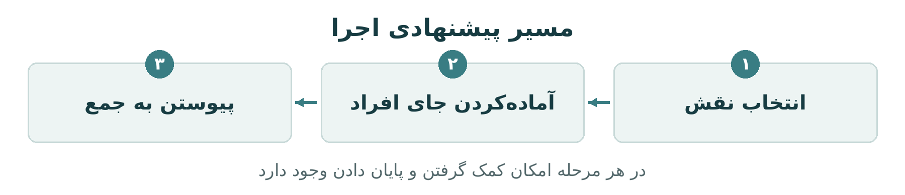
اینفوگرافی اجرای PL02 خواندن از راست به چپ
زمان پیشنهادی حدود ۵ تا ۱۰ دقیقه برای یک نوبت آغازین؛ ادامه یا پایان با توجه به علاقه، خستگی و شرایط واقعی. زمانگیری کودک لازم نیست.
وسایل این نسخه دستمال، قاشق و دو یا سه ظرف سبک نشکن؛ محل مشخص هر نفر.
پیش از دعوت فقط بخش سرد و کمخطر پذیرایی یا میانوعده آماده شود؛ وسایل داغ خارج از دسترس باشند.
جمله آغاز «دوست داری دستمالها را بگذاری یا قاشقها را بیاوری؟»
گام ۱ یک نقش واقعی و محدود بدهید؛ جای گذاشتن وسیله را با اشاره یا یک نمونه نشان دهید.
گام ۲ کودک برای هر جای نشستن یک وسیله بگذارد؛ شمردن اختیاری است. اگر کم آمد، جای خالی را ببینید و با هم وسیله بیاورید.
گام ۳ در صورت تمایل کودک دعوت به نشستن را با اشاره یا کلمه انجام دهد و در جمع سهم داشته باشد؛ سلام یا تماس بدنی اجباری نیست.
اگر بازی گیر کرد «اینجا هنوز دستمال ندارد؛ میخواهی یکی بیاوری یا من بگذارم؟»
راه سادهتر یک دستمال برای یک نفر؛ مسیر حمل کوتاه.
اگر کودک چالش بیشتری خواست دو کار متوالی و تشخیص وسایل مورد نیاز با نگاه به جای افراد.
راه دیگر برای مشارکت نقش نشسته، نشاندادن جای نشستن یا انتخاب چیدمان؛ زبان خانه پذیرفته شود.
ایمنی همین اجرا شیشه، چاقو، مایع داغ و حمل سینی سنگین سهم کودک نیست.
نمونه ثبت فرضی «دو دستمال گذاشت و برای جای سوم به سبد اشاره کرد.» این فقط توصیف همان رخداد است؛ ثبت، فقط وقتی سؤال یا تصمیم مشخصی دارید.
مشاهده و تصمیم نوبت بعد ببین کودک برای هر جای میز چه چیزی میگذارد و کجا یادآوری میخواهد. اگر رفتوآمد یا تعداد زیاد دشوار بود، یک جای نزدیک آماده کن؛ اگر خودش راه چیدمان دیگری پیشنهاد کرد، کارکرد واقعی آن را بررسی کن.
پایان و مرور با آمادهشدن جمع پایان دهید؛ مشارکت را به نمایش ادب تبدیل نکنید.
چرا این فعالیت؟
در بسیاری از خانوادههای ایرانی، مهمانی، دورهمی یا پذیرایی بخشی از زندگی واقعی کودک است. اما «میزبان کوچک» نباید به نمایش ادب اجباری، بوسیدن مهمان، سلامکردن تحت فشار یا حمل وسایل خطرناک تبدیل شود. سهم کودک میتواند آمادهکردن دستمال، گذاشتن قاشق، بردن بطری آب پلاستیکی سبک یا نشاندادن جای نشستن باشد.
در مهد نیز همین منطق میتواند در آمادهکردن میانوعده گروهی، گذاشتن لیوانهای نشانهدار یا تقسیم دستمالها اجرا شود. هدف، نقش واقعی در جمع است؛ نه سنجش مهارت اجتماعی.
ابزار و ایمنی PL02
وسایل سبک، نشکن و بدون مایع داغ؛ لیوان شیشهای، چاقو، سماور، کتری و نوشیدنی داغ خارج از نقش کودکاند.
یک نقش کوچک و روشن؛ لازم نیست کودک همه میز را آماده کند.
در مهد، ملاحظات آلرژی غذایی و سیاست مرکز رعایت شود.
هیچ تماس بدنی یا سلامکردن خاصی برای مهمان اجباری نیست.
دعوت و انتخاب نقش
بزرگسال میگوید: «میخوای تو هم برای آماده کردن کمک کنی؟ میتونی دستمالها رو بذاری یا بطریهای آب رو بیاری.» اگر کودک نخواست، میتواند فقط تماشا کند یا نقش دیگری بگیرد. در موقعیتهایی که کار بخشی از روتین مشترک مهد است، مربی میتواند سهمی ساده تعیین کند اما همچنان روش و سطح حمایت را متناسب نگه دارد.
نسخههای سنی PL02
سن | تطبیق |
|---|---|
۳–۴ سال | یک نقش: گذاشتن دستمال/قاشق یا بردن یک وسیله سبک؛ دو انتخاب. |
۴–۵ سال | دو مرحله: شمارش تقریبی نیاز گروه و آمادهکردن بخشی از میز؛ بدون آزمون عدد. |
سه سؤال والد PL02
چه چیزی در کار مشترک جذبش کرد؟
کدام بخش نیاز به کمک یا سادهسازی داشت؟
چه چیزی باعث شد احساس کند سهمش واقعی است؟
از PL02 چه چیزی نمیتوان فهمید؟
از نحوه پذیرایی یا سلامکردن کودک نمیتوان درباره اجتماعیبودن، همدلی، ادب، دلبستگی، مسئولیتپذیری یا کیفیت تربیت خانواده قضاوت کرد. مشارکت در یک مهمانی بهشدت به آشنایی، خستگی، خلق، فرهنگ خانواده و فرد حاضر بستگی دارد.
پشتوانه و حدود شواهد PL02
عنصر | وضعیت |
|---|---|
خانواده شواهد | DAP agency/participation + routines as learning contexts |
سطح اصل کلی | B برای راهنمای اجرایی |
سطح خود فعالیت | D |
L0 مجاز | «فرصتی واقعی برای سهمگرفتن در آمادهکردن یک موقعیت مشترک فراهم میکند.» |
L1 محتاطانه | «میتواند فرصت تمرین انتخاب نقش، توالی و کمکخواهی در یک بافت اجتماعی واقعی فراهم کند.» |
L2/L3 ممنوع | «مهارت اجتماعی/مسئولیت/اعتمادبهنفس را افزایش میدهد» یا هر استنتاج تشخیصی. |
بازی هستهای دوم: PL03 — مأمور لباسشویی
این فعالیت با «ماشین لباسشویی» شروع نمیشود؛ با لباس خشک، سبد و یک سهم ایمن از روتین شروع میشود.
شناسنامه PL03
مولفه | تعریف |
|---|---|
کد | PL03–23–P |
خانواده | Practical Life |
سن هسته | ۲٫۵ تا ۳ سال |
سن قابل تطبیق | تقریباً ۲٫۵ تا ۴٫۵ سال |
هدف اصلی | مشارکت در یک روتین واقعی و قابل مشاهده |
اهداف همراه | تطبیق/دستهبندی ساده؛ حرکت ظریف |
نوع هدایت | مدل کوتاه + نقش روشن |
محیط | خانه یا مهد |
سطح خود فعالیت | D |
راهنمای دقیق اجرای بازی PL03
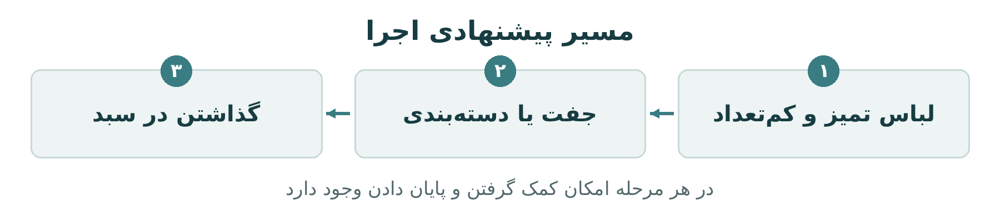
اینفوگرافی اجرای PL03 خواندن از راست به چپ
زمان پیشنهادی حدود ۵ تا ۱۰ دقیقه برای یک نوبت آغازین؛ ادامه یا پایان با توجه به علاقه، خستگی و شرایط واقعی. زمانگیری کودک لازم نیست.
وسایل این نسخه چهار تا شش لباس تمیز خشک، دو جفت جوراب و دو سبد سبک.
پیش از دعوت فقط لباسها وارد بازی شوند؛ ماشین لباسشویی و مواد شوینده در کار کودک نباشند.
جمله آغاز «میخواهی این جورابها را کنار هم پیدا کنیم؟»
گام ۱ دو جوراب مشابه را کنار هم مدل کنید؛ برای شروع تفاوت روشن رنگ یا اندازه انتخاب شود.
گام ۲ کودک جفتها را پیدا کند یا لباسهای خودش را جدا بگذارد؛ در هر نوبت فقط یک معیار روشن باشد.
گام ۳ جفتها یا لباسهای انتخابشده در سبد مشخص گذاشته شوند؛ کودک میتواند سبد بسیار سبک را به جای نزدیک ببرد.
اگر بازی گیر کرد «تو بر اساس رنگ چیدی؛ این دور میخواهیم جورابهای شبیه را پیدا کنیم.»
راه سادهتر یک جفت جوراب و انتقال لباس؛ تا کردن لازم نیست.
اگر کودک چالش بیشتری خواست جفتکردن سپس گذاشتن در محل صاحب لباس؛ یک مرحله تازه اضافه شود.
راه دیگر برای مشارکت سطح نشسته، لباس با بافت مطلوب یا مشارکت با اشاره به جفتها.
ایمنی همین اجرا هیچ دسترسی به پاد شوینده، سفیدکننده و دستگاه نباشد؛ جیب لباسها بررسی شود.
نمونه ثبت فرضی «دو جوراب آبی را کنار هم گذاشت و سبد را به جای نزدیک برد.» این فقط توصیف همان رخداد است؛ ثبت، فقط وقتی سؤال یا تصمیم مشخصی دارید.
مشاهده و تصمیم نوبت بعد ببین معیار جداسازی لباسها را چگونه به کار میبرد. اگر چند معیار گیجکنندهاند، فقط یک تفاوت روشن را نگه دار؛ اگر معیار شخصی معنیدار ساخت، آن را بشنو. فعالیت کنار ماشینِ خاموش و دور از شوینده اجرا شود.
پایان و مرور لباسها استفاده یا جمع شوند؛ شکل تاها را برای کودک دوباره کاملسازی نکنید.
نسخه اصلی PL03
یک سبد کوچک از لباسهای تمیز و خشک آماده میشود. کودک میتواند جورابها را کنار هم پیدا کند، لباسهای خودش را در یک سبد بگذارد، دستمالها را تا حد ساده روی هم قرار دهد یا لباسهای سبک را از یک سبد به سبد دیگر منتقل کند.
هدف «تا زدن حرفهای» نیست. اگر کودک جورابها را به روشی غیر از بزرگسال جفت کرد اما دو جوراب مشابه را کنار هم گذاشت، لازم نیست فرم کار را اصلاح کنیم.
ایمنی PL03
کودک به شوینده، سفیدکننده، کپسول/پاد شوینده یا مواد شیمیایی دسترسی ندارد؛ این مواد باید کاملاً دور از دسترس نگهداری شوند.
کودک داخل ماشین لباسشویی/خشککن دست نمیبرد و باز و بستهکردن دستگاه نقش این بازی نیست.
سبد بسیار سبک باشد؛ حمل سنگین هدف نیست.
لباس آلوده به مواد خطرناک، ابزار تیز یا اقلام نامناسب وارد فعالیت نمیشود.
اگر بافت بعضی لباسها برای کودک ناخوشایند است، اجبار حسی وجود ندارد.
نسخههای سنی PL03
سن | تطبیق |
|---|---|
۲٫۵–۳ سال | انتقال لباس سبک، پیدا کردن دو جوراب مشابه، گذاشتن لباس خودش در سبد. |
۳–۴ سال | دستهبندی بر اساس نوع یا صاحب لباس با تعداد کم؛ یک مرحله تا ساده. |
۴–۴٫۵ سال | کمک در ترتیب کوتاه: جفتکردن، قرار دادن در سبد مربوط، بردن سبد سبک به محل مشخص. |
اگر «اشتباه» دستهبندی کرد
اول ببین قاعده برای کودک روشن بوده یا نه. شاید او لباسها را بر اساس رنگ دستهبندی کرده در حالی که بزرگسال بر اساس شخص انتظار داشته است. اگر هدف مشخصی داریم، قاعده را کوتاه و روشن میکنیم؛ اگر نه، روش کودک میتواند بخشی از تجربه باشد.
از PL03 چه چیزی نمیتوان فهمید؟
سرعت جفتکردن یا دستهبندی، آزمون حافظه، شناخت، توجه، نظم، OCD، هوش یا مسئولیتپذیری نیست. کودک ممکن است امروز صرفاً علاقهای به لباسها نداشته باشد.
پشتوانه و حدود شواهد PL03
عنصر | وضعیت |
|---|---|
پشتوانه مرتبط | Routines/agency/scaffolding + task affordances |
سطح اصل کلی | B برای راهنمای اجرایی |
سطح خود فعالیت | D |
L0 مجاز | «فرصتی برای مشارکت در روتین لباس و تطبیق ساده اقلام فراهم میکند.» |
L1 محتاطانه | «میتواند فرصت تمرین جفتکردن، حمل سبک و دنبالکردن یک مرحله روشن فراهم کند.» |
L2/L3 ممنوع | «حافظه/تمرکز/نظم را تقویت میکند»، سنجش شناخت یا هر ادعای درمانی. |
بازی هستهای سوم: PL06 — مراقب محیط
مراقبت از محیط یعنی دیدن اینکه فضای مشترک چه نیازی دارد و سهم کوچک خودمان را انجام دهیم؛ نه تمیزکاری اجباری یا حساسیت افراطی به نظم.
شناسنامه PL06
مولفه | تعریف |
|---|---|
کد | PL06–34–P |
خانواده | Practical Life |
سن هسته | ۳ تا ۴ سال |
سن قابل تطبیق | تقریباً ۲٫۵ تا ۵ سال |
هدف اصلی | مشارکت در مراقبت از فضای مشترک |
اهداف همراه | عاملیت/استقلال؛ حل مسئله ساده |
نوع هدایت | مشترک و محیطمحور |
محیط | خانه یا مهد |
سطح خود فعالیت | D |
راهنمای دقیق اجرای بازی PL06
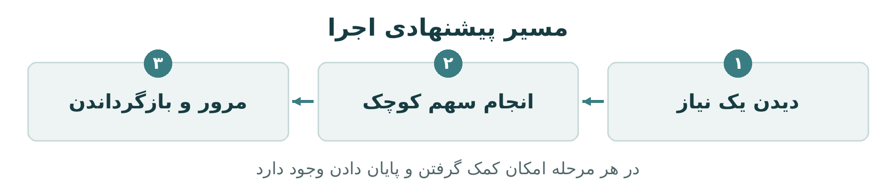
اینفوگرافی اجرای PL06 خواندن از راست به چپ
زمان پیشنهادی حدود ۵ تا ۱۰ دقیقه برای یک نوبت آغازین؛ ادامه یا پایان با توجه به علاقه، خستگی و شرایط واقعی. زمانگیری کودک لازم نیست.
وسایل این نسخه یک دستمال کوچک، سبد وسایل و سطح کار ایمن؛ آب کم تنها در صورت نیاز.
پیش از دعوت یک نیاز واقعی کوچک مثل چند قطعه باقیمانده یا لکه آب انتخاب شود؛ مواد پاککننده حذف شوند.
جمله آغاز «اینجا چه چیزی لازم دارد تا دوباره آماده بازی باشد؟»
گام ۱ با هم به یک نشانه مشخص نگاه کنید: یک لکه یا سه قطعه روی مسیر. بزرگسال کار را به زبان کوتاه توصیف کند.
گام ۲ کودک بین پاککردن یا جمعکردن انتخاب کند. یک بار حرکت لازم را مدل کنید و ابزار را واگذار کنید.
گام ۳ با نگاه به سطح یا مسیر مرور کنید آیا نیاز برطرف شده است؛ ابزارها به جای قابل دسترس برگردند.
اگر بازی گیر کرد «این آب هنوز اینجاست؛ میخواهی دستمال را عوض کنیم یا با هم خشک کنیم؟»
راه سادهتر جمعکردن دو قطعه یا پاککردن یک نقطه کوچک.
اگر کودک چالش بیشتری خواست کودک ابزار لازم را انتخاب کند و پیش از خروج مسیر را مرور کند.
راه دیگر برای مشارکت دسته مناسب، فعالیت همسطح دست یا نقش تشخیص جای وسایل.
ایمنی همین اجرا شوینده، اسپری، شیشه شکسته و آلودگی خطرناک به کودک سپرده نشوند.
نمونه ثبت فرضی «سه قطعه را در سبد گذاشت و برای لکه آب دستمال آورد.» این فقط توصیف همان رخداد است؛ ثبت، فقط وقتی سؤال یا تصمیم مشخصی دارید.
مشاهده و تصمیم نوبت بعد ببین کودک چه تغییری در سطح میبیند و چه کمکی برای گرفتن دستمال میخواهد. اگر فشار دست یا سطح کار دشوار است، دستمال سبکتر و بخش کوچکتر بده؛ پاکیزگی کامل معیار موفقیت کودک نیست.
پایان و مرور پایان با قابل استفادهشدن فضاست؛ بینقصی یا اطاعت معیار نباشد.
چه کارهایی داخل PL06 هستند؟
برگرداندن کتابها به قفسه پایین و مشخص.
گذاشتن بالشتکها یا مواد بازی در جای قابل تشخیص.
پاککردن یک لکه کوچک آب با دستمال مرطوب یا خشک.
بررسی ساده «چی جا مونده؟» قبل از ترک یک فضای بازی.
مرتبکردن تعداد کمی ابزار مشترک پس از پایان فعالیت.
چه چیزهایی داخل PL06 نیستند؟
کار با شویندهها، اسپریهای شیمیایی یا ضدعفونیکننده.
جمعکردن شیشه شکسته، اشیای تیز، زباله آلوده یا هر ماده خطرناک.
بالا رفتن برای دسترسی به قفسه، پنجره یا محل مرتفع.
تمیزکردن برای تنبیه یا جبران «بدرفتاری».
اجبار کودک به نظم بزرگسالانه یا پاکیزگی وسواسگونه.
نسخه خانه و مهد PL06
محیط | نسخه |
|---|---|
خانه | بعد از بازی، کودک یک نوع وسیله را به محل مشخص برمیگرداند یا یک لکه کوچک آب را با دستمال پاک میکند. |
مهد | دو کودک میتوانند یک بخش کوچک را مشترک مراقبت کنند: کتابها، مدادهای ضخیم، بالشتکها یا مواد یک مرکز بازی. نقشها چرخشی و غیرجنسیتی باشند. |
سؤال «چی نیاز به مراقبت داره؟»
برای سن بالاتر میتوان بهجای دستور مستقیم پرسید: «قبل از اینکه بریم، اینجا چی مونده که باید مراقبش باشیم؟» اگر کودک چیزی ندید، این سؤال را به آزمون تبدیل نمیکنیم؛ میتوان به یک نشانه مشخص اشاره کرد.
از PL06 چه چیزی نمیتوان فهمید؟
مرتببودن یا علاقه به پاککردن، نشانه شخصیت «منظم» یا ارزش اخلاقی بالاتر نیست؛ بیعلاقگی نیز تنبلی یا مشکل رفتاری را ثابت نمیکند. این فعالیت همچنین ابزار تشخیص OCD، اختلال حسی یا executive dysfunction نیست.
پشتوانه و حدود شواهد PL06
عنصر | وضعیت |
|---|---|
پشتوانه مرتبط | Routines / participation / DAP agency |
سطح اصل کلی | B برای راهنمای اجرایی |
سطح خود فعالیت | D |
L0 مجاز | «فرصتی واقعی برای سهمگرفتن در مراقبت از فضای مشترک فراهم میکند.» |
L1 محتاطانه | «میتواند فرصت تمرین دیدن یک نیاز محیطی، انتخاب اقدام و کمکخواهی فراهم کند.» |
L2/L3 ممنوع | «نظم/مسئولیت/EF را افزایش میدهد»، پیشگیری یا درمان مشکل رفتاری. |
یک نکته درباره پژوهش «کارهای خانه»
پژوهش مستقیم روی اثر کارهای خانه در کودکان ۲ تا ۶ سال آنقدر قوی نیست که از هر فعالیت روزمره نتیجههای بزرگ بسازیم. یک مطالعه کوهورت بزرگ روی کودکان دبستانی، انجام کارهای خانه در اوایل دبستان را با بعضی پیامدهای بعدی مانند self-competence و رفتار یاریرسان مرتبط گزارش کرده است؛ اما این یافته مشاهدهای، مربوط به سن بالاتر و مستعد عوامل مخدوشکننده است.
به همین دلیل، کتاب از جملههایی مثل «کار خانه باعث مسئولیتپذیری و موفقیت آینده میشود» استفاده نمیکند. دلیل ما برای آوردن زندگی عملی سادهتر و قابل دفاعتر است: زندگی واقعی فرصت مشارکت واقعی فراهم میکند.
علم چه میگوید؟
آنچه نسبتاً میدانیم
Head Start روتینهای روزمره را بافتهایی میداند که کودک میتواند مراحل را یاد بگیرد، سهمی از کار را خودش یا با کمی کمک انجام دهد و در صورت امکان انتخاب داشته باشد.
NAEYC routine را یکی از بافتهای معتبر آموزش میداند و بر اختیار و نقش فعال کودک، دسترسپذیری، تفاوت فردی و حمایت مرحلهای بهاندازه در روتینها تأکید دارد.
راهنماهای Head Start برای برنامههای فراگیر پیشنهاد میکنند محیط، مواد و قالب فعالیت در صورت نیاز تغییر کند تا کودکان دارای معلولیت نیز در همه فعالیتها مشارکت واقعی داشته باشند.
شواهد Montessori در سطح برنامه مدرسه وجود دارد، اما از آن نمیتوان اثر PL02، PL03 یا PL06 را جداگانه استنباط کرد.
آنچه نمیتوانیم بگوییم
کارهای خانه بهطور قطعی مسئولیتپذیری، اعتمادبهنفس یا موفقیت آینده را افزایش میدهند.
کودکی که مشارکت نمیکند تنبل، خودخواه یا بیمسئولیت است.
وظایف روزمره باید بر اساس جنسیت تقسیم شوند.
هر روتین باید به «فرصت آموزشی» رسمی و قابل ارزیابی تبدیل شود.
PL02، PL03 یا PL06 اثر مستقل اثباتشده دارند.
در خانه چه میتوان کرد
از کاری شروع کنید که همین حالا در خانه انجام میشود. سهم کودک را کوچک و روشن نگه دارید.
انتخابی واقعی بدهید؛ مثلاً آوردن دستمال یا چیدن قاشق، اگر هر دو امکان دارند.
اگر نتیجه قابل استفاده و ایمن است، دربارهٔ اصلاح دوبارهٔ آن با دقت تصمیم بگیرید.
کار روزمره را به برچسب اخلاقی تبدیل نکنید: امروز همکاری نکردن = بیمسئولیتی نیست.
نقشهای خانه را جنسیتی نکنید و سهم کودک را با خواهر/برادر مقایسه نکنید.
اگر خانواده روز سختی دارد، لازم نیست هر روتین به تمرین استقلال تبدیل شود.
در مهد یا کارگاه
در روتین مهد، نقشهایی با نتیجهٔ روشن و امکان انتخاب طراحی کنید. نقش را برای تشویق فرمانبرداری توزیع نکنید و فرصت مشارکت را به کودکان سریعتر محدود نکنید.
اگر کودک برای اجرای روتین به تصویر، نشانه رنگی، مدل همسال یا کمک جسمانی نیاز دارد، این حمایت استقلال را «خراب» نمیکند. هدف مشارکت بیشتر است، نه کمترین کمک به هر قیمت.
یک تجربه برای این هفته
یکی از کارهای امروز را نگاه کنید و یک بخش قابل انجام از آن پیدا کنید.
کودک را به همان بخش دعوت کنید. در پایان، مشخص کنید حضور او واقعاً چه چیزی به کار اضافه کرد.
چه زمانی چیزی ارزش پیگیری دارد؟
اگر کودک در یک روتین خاص مشارکت نمیکند، ابتدا محیط، فهم دستور، تجربه قبلی، خستگی، زمان و ابزار را بررسی کنید. نگرانی زمانی معنیدارتر میشود که دشواری در چند زمینه روزمره، بهطور پایدار و با اثر قابل توجه دیده شود یا مهارتی که قبلاً وجود داشته از دست برود. حتی آن زمان، فعالیتهای این فصل ابزار غربالگری یا تشخیص نیستند.
همراهی در موقعیتهای روزمره
یادگیری کودک فقط در فعالیتهای طراحیشده اتفاق نمیافتد. لباس پوشیدن، آشپزی ساده، مرتب کردن وسایل و گفتوگوهای روزمره فرصت یادگیری هستند.
نگاه جدید:
به جای پرسیدن «چگونه درس بدهم؟» بپرسیم «کجا فرصت مشارکت وجود دارد؟»
تمرین: هر روز یک کار واقعی پیدا کنید که کودک بتواند در آن نقش داشته باشد.
مشارکت در کار واقعی
برای آماده کردن میانوعده، یک کار محدود و ایمن پیشنهاد دهید: گذاشتن دستمالها یا آوردن ظرفهای سبک. توضیح دهید این کار چه سهمی در کار مشترک دارد. اگر کودک نخواست، وظیفه بزرگسال را بر دوش او نگذارید. زندگی روزمره فرصت مشارکت میدهد، اما هر کار خانه نباید فعالیت آموزشی شود.
پایان دادن به فعالیت
پیشاپیش یک پایان قابل فهم بسازید: «این دو دستمال رو میذاریم و بعد مینشینیم». اگر کار طولانی شد، سهم کودک را کوچکتر کنید. مرور کنید آیا ابزار و تعداد مرحلهها مناسب بود یا دعوت شما به کار بزرگی تبدیل شد که برای کودک قابل مدیریت نبود.
پایان فصل
این هفته... | پیشنهاد |
|---|---|
بیشتر ببین | کودک در زندگی واقعی کجا خودش میگوید «من هم میخوام»؟ |
کمتر انجام بده | کار را فقط بهخاطر سرعت یا ظاهر بهتر دوباره انجام دادن. |
امتحان کن | در یک روتین، یک سهم واقعی و کوچک به کودک بده. |
از خودت بپرس | این کار برای مشارکت کودک است یا فقط میخواهم اطاعت را تمرین کند؟ |
زندگی روزمره با مشارکتهای کوچک پیش میرود. همین کارهای معمولی میتوانند جایی برای انتخاب، درخواست کمک و همراهشدن باشند.
فصل بعد این مسیر را یک قدم جلوتر میبرد: «از خودم تا برنامهریزی»؛ جایی که PL05 آشپز کوچک به ما اجازه میدهد توالی، انتخاب ابزار و مشارکت چندمرحلهای را بررسی کنیم.
منابع منتخب فصل
Head Start. The Importance of Schedules and Routines. Updated February 2025.
Head Start. Giving Children Responsibilities. Updated February 2026.
Head Start. Visual Supports. Updated December 2025.
Head Start. Approaches to Learning Preschool. Current Early Learning Outcomes Framework resource.
National Association for the Education of Young Children (NAEYC). DAP: Teaching to Enhance Each Child’s Development and Learning.
NAEYC. DAP: Creating a Caring, Equitable Community of Learners.
Lillard AS, et al. A national randomized controlled trial of the impact of public Montessori preschool at the end of kindergarten. PNAS. 2025;122(43):e2506130122. https://doi.org/10.1073/pnas.2506130122.
White EM, DeBoer MD, Scharf RJ. Associations Between Household Chores and Childhood Self-Competency. Journal of Developmental & Behavioral Pediatrics. 2019;40(3):176–182. https://doi.org/10.1097/DBP.0000000000000637.
یادداشت روششناختی: سه فعالیت PL02، PL03 و PL06 ابزارهای آموزشی کتاباند و سطح D دارند. منابع بیرونی فقط اصولی مانند اختیار و نقش فعال کودک، مشارکت در routine، حمایت مرحلهای، inclusion و شواهد سطح برنامه Montessori را پشتیبانی میکنند؛ هیچ اثر مستقیمی به این سه فعالیت نسبت داده نمیشود.
فصل ۱۰ از «خودم» تا برنامهریزی
در این فصل چه میخوانیم؟
«خودم انجام میدم» آغاز یک تصمیم است؛ پیدا کردن قدم بعدی، بخش دیگری از همان تجربه است.
«خودم درستش میکنم!»
کودک نان را روی میز میگذارد، دنبال بشقاب میگردد و خیار را میآورد. بعد مکث میکند: «بعدش چی؟» از بیرون شاید کار ناتمام به نظر برسد. از نزدیک میبینیم که چند مرحله را شروع کرده و اکنون برای ادامه کمک میخواهد.
میتوان بهجای انجام تمام کار، مواد لازم را با هم نگاه کرد: «نان اینجاست؛ برای ادامه چه چیزی میخواهیم؟» یک نشانهٔ ساده یا تقسیم کار به قدمهای کمتر، ممکن است ادامه را قابل فهمتر کند. ابزار و بخشهای کار باید طبق ملاحظات ایمنی همین فصل انتخاب شوند.
برنامهریزی در کارهای کوچک پیدا میشود: شروعکردن، پیدا کردن وسیله، پرسیدن قدم بعد و تغییر راه وقتی چیزی در دسترس نیست. میزان کمک در هر بخش را با نیاز کودک تنظیم میکنیم و انجام بیکمک را شرط ارزش تجربه نمیگذاریم.
پرسش این فصل
چگونه یک کار چندمرحلهای را به قدمهایی روشن و قابل مشارکت تقسیم کنیم؟
برنامهریزی در پیشدبستانی چگونه دیده میشود؟
در چارچوب Head Start ELOF، کودکان پیشدبستانی بهتدریج در چند رفتار مرتبط با عمل هدفمند مستقلتر میشوند: نگهداشتن اطلاعات در ذهن برای انجام کار، دنبالکردن دستورهای چندمرحلهای با یادآوری کمتر، امتحانکردن راهبردهای مختلف، نشاندادن ابتکار و پیدا کردن چیزهایی که برای انجام یک فعالیت لازم دارند.
ELOF همچنین در حدود ۴۸ تا ۶۰ ماهگی نمونههایی از برنامهریزی در بازی را ذکر میکند؛ مثل تعیین نقشها و گردآوری مواد برای یک سناریو. این یک چارچوب رشدی/آموزشی است، نه آزمون برنامهریزی و نه دلیل اینکه هر کودک باید در یک سن دقیق کار مشخصی را انجام دهد.
پس «آشپز کوچک» را بهعنوان موقعیتی واقعی برای دیدن و تجربه این رفتارها طراحی میکنیم؛ نه بهعنوان مداخلهای که ثابت شده برنامهریزی یا EF را افزایش میدهد.
تفاوت «دستور چندمرحلهای» و «برنامهریزی کودک»
وقتی بزرگسال همهچیز را تعیین میکند | وقتی کودک سهم واقعی دارد |
|---|---|
«اول نان، بعد پنیر، بعد خیار؛ حالا این کار را بکن.» | «میخوای اول چی آماده کنیم؟ چه چیزهایی لازم داریم؟» |
مواد از قبل دقیق و به ترتیب چیده شدهاند. | بخشی از مواد در دسترساند و کودک بعضی چیزها را پیدا/انتخاب میکند. |
هر خطا بلافاصله اصلاح میشود. | خطاهای کوچک و ایمن فرصت بازبینی ایجاد میکنند. |
هدف، اجرای درست دستور است. | هدف، مشارکت در یک کار واقعی با نتیجه قابل استفاده است. |
کار واقعی باید واقعاً قابل انجام باشد
اگر ابزار، ارتفاع میز، مقدار مواد یا تعداد مراحل برای کودک مناسب نباشد، آنچه میبینیم بیشتر «نامتناسب بودن محیط» است تا برنامهریزی کودک. همان اصل فصل ۸ اینجا هم برقرار است: محیط قبل از قضاوت.
Head Start در راهنماهای تغذیه خود خانوادهها را تشویق میکند کودکان را متناسب با رشدشان در آمادهسازی غذا مشارکت دهند؛ نمونههایی مثل چیدن میز، شستن میوه و سبزی و مخلوطکردن مواد. این توصیه شیوه اجرا است، نه شواهد اینکه آشپزی بهتنهایی مهارت شناختی مشخصی را افزایش میدهد.
یک کار چندمرحلهای را چگونه ساده کنیم؟
مولفه | نسخه پیچیده | نسخه قابلدسترستر |
|---|---|---|
تعداد مراحل | ۷ تا ۸ مرحله پشتسرهم | ۲ تا ۴ مرحله هستهای |
مواد | مواد متعدد و نامرتب | ۳ تا ۵ ماده اصلی در محدوده دید |
انتخاب | «هر چیزی خواستی درست کن» | دو یا سه انتخاب واقعی |
ابزار | ابزار بزرگسال | ظرف سبک، قاشق کوتاه، کاسه ثابت |
یادآوری | تکرار دستور کامل | تصویر، اشاره، یا فقط یادآوری قدم بعد |
کمک | بزرگسال کار را میگیرد | یک بخش را مشترک انجام میدهد و دوباره برمیگرداند |
در برنامهریزی، کمک خواستن شکست نیست
یک کودک ممکن است بداند چه میخواهد بسازد اما برای بازکردن بسته، یادآوری ترتیب یا نگهداشتن ظرف کمک بخواهد. این اطلاعات درباره نوع حمایت لازم است، نه نشانه شکست.
در ELOF نیز persistence فقط «تنها ادامه دادن» نیست؛ نمونهها شامل ادامه دادن با حمایت یا کمکخواستن از بزرگسال یا کودک دیگر هستند. در این کتاب هم استقلال با «کمک نخواستن» تعریف نمیشود.
چند نشانه توصیفی که میتوانیم ببینیم
قبل از شروع به بعضی مواد یا ابزارها اشاره میکند یا آنها را جمع میکند.
یک یا دو مرحله را بدون یادآوری انجام میدهد.
وقتی چیزی پیدا نمیشود، جستوجو میکند، جایگزین پیشنهاد میدهد یا کمک میخواهد.
بعد از یادآوری کوتاه دوباره وارد توالی میشود.
اگر ترتیب عوض شد، راهی برای ادامه پیدا میکند.
پس از پایان، بخشی از جمعکردن و پاککردن را در همان توالی میبیند.
هیچیک از این رفتارها بهتنهایی نمره برنامهریزی، حافظه کاری یا executive functioning نیست.
ایمنی غذا قبل از هدف آموزشی
آشپزی با کودک فقط زمانی ارزش آموزشی دارد که ایمن باشد. USDA اصول پایه ایمنی غذا را با چهار واژه جمعبندی میکند: Clean، Separate، Cook، Chill. برای PL05 ما حتی محافظهکارانهتر عمل میکنیم و نسخه هستهای را بدون حرارت، گوشت خام، مرغ خام یا تخممرغ خام طراحی میکنیم.
خطر | قاعده PL05 |
|---|---|
حرارت/اجاق/مایکروویو | جزو اجرای کودک نیست؛ بزرگسال مسئول بخشهای داغ است. |
چاقوی تیز | در نسخه هستهای استفاده نمیشود؛ میوه نرم از قبل آماده یا ابزار کودکمتناسب فقط با نظارت نزدیک. |
گوشت/مرغ/ماهی خام | در نسخه بازی استفاده نمیشود؛ خطر cross-contamination. |
تخممرغ یا خمیر خام | برای چشیدن/بازیکردن استفاده نمیشود؛ تخممرغ خام میتواند Salmonella داشته باشد. |
آلرژی غذایی | مواد باید با اطلاعات خانواده و برنامه ایمنی محیط هماهنگ باشند؛ در مهد، برنامه حساسیت غذایی مقدم است. |
قطعات خفهکننده | اندازه و بافت غذا باید با سن و توانایی کودک متناسب باشد؛ خوراکیهای پرخطر حذف یا توسط بزرگسال آماده میشوند. |
بهداشت | شستن دستها و سطح کار بخشی از روتین واقعی است، نه مرحله تزئینی. |
آشپزی قرار نیست کودک را وادار به خوردن کند
مشارکت در آمادهسازی غذا با خوردن اجباری فرق دارد. کودک میتواند در شستن، ریختن، چیدن یا همزدن مشارکت کند و در پایان نخواهد غذا را بخورد. این فصل از غذا برای پاداش، تهدید یا آزمون «بدغذایی» استفاده نمیکند.
سن چه چیزی را تغییر میدهد؟
جدول زیر جهت طراحی داخلی کتاب است؛ نه استاندارد هنجاری.
بازه | سهم مناسبتر در کار چندمرحلهای |
|---|---|
۳٫۵–۴ سال | ۲ تا ۳ مرحله ملموس؛ مواد از قبل محدود؛ مدل کوتاه؛ کمک زودتر در بسته/ابزار. |
۴–۵ سال | ۳ تا ۴ مرحله؛ جمعکردن بعضی مواد؛ انتخاب ترتیب محدود؛ یادآوری تصویری یا کلامی کوتاه. |
۵–۶ سال | برنامه ساده قبل از شروع، جمعکردن مواد بیشتر، مقایسه دو راه، مرور اینکه چه چیزی جا ماند یا تغییر کرد. |
فراگیری و دسترسپذیری
اگر کودک ایستادن طولانی، گرفتن قاشق، دیدن کارت تصویری یا گفتن نام مواد را دشوار مییابد، فعالیت باید تطبیق داده شود. کودک میتواند نشسته کار کند، از ظرفهای ضدلغزش استفاده کند، با AAC انتخاب کند یا فقط یک بخش معنیدار را انجام دهد.
هدف «همه مراحل توسط همه کودکان» نیست. هدف سهم واقعی و قابلدسترس است.
بازی هستهای فصل: PL05 — آشپز کوچک
این فعالیت یک کار واقعی و قابل خوردن/استفاده ایجاد میکند؛ اما خود فعالیت اثر مستقل اثباتشدهای بر برنامهریزی، EF یا استقلال ندارد.
شناسنامه PL05
مولفه | تعریف |
|---|---|
کد | PL05–45–E |
خانواده | Practical Life |
سن هسته | ۴ تا ۵ سال |
سن قابل تطبیق | تقریباً ۳٫۵ تا ۶ سال |
هدف اصلی | برنامهریزی ساده در یک کار واقعی چندمرحلهای |
اهداف همراه | استقلال/عاملیت؛ حرکت ظریف و زبان |
نوع هدایت | مشترک؛ بزرگسال ایمنی و چارچوب را نگه میدارد |
محیط | خانه یا مهد |
فرمت | فردی یا بزرگسال–کودک؛ در مهد گروه بسیار کوچک |
سطح خود فعالیت | D |
راهنمای دقیق اجرای بازی PL05
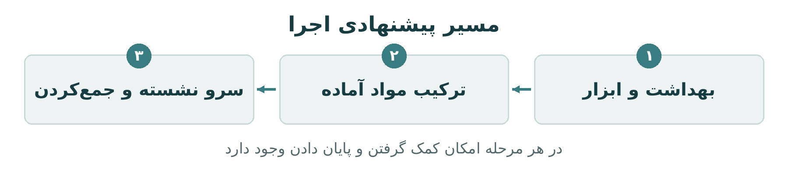
اینفوگرافی اجرای PL05 خواندن از راست به چپ
زمان پیشنهادی حدود ۵ تا ۱۰ دقیقه برای یک نوبت آغازین؛ ادامه یا پایان با توجه به علاقه، خستگی و شرایط واقعی. زمانگیری کودک لازم نیست.
وسایل این نسخه نمونه پیشنهادی: مقدار کمی ماست ساده و موزِ ازپیشلهشده، فقط اگر هر دو قبلاً برای کودک مناسب و بدون حساسیت شناخته شدهاند؛ کاسه نشکن، دو قاشق، زیرانداز قابل شستوشو و سه تصویر «آوردن، ترکیب، آمادهکردن برای سرو». مواد متناسب دیگری نیز قابل انتخاباند.
پیش از دعوت بزرگسال شستوشو، برش ایمن و نگهداری مواد را انجام دهد؛ کودک برای خوردن نشسته و زیر نظر باشد.
جمله آغاز «دوست داری میانوعدهمان را با سه قدم آماده کنیم؟»
گام ۱ دستها شسته شوند؛ کودک ظرف و قاشق را انتخاب یا بیاورد. سه قدم آوردن، ترکیب و آمادهکردن ظرف را با تصویر نشان دهید.
گام ۲ بزرگسال دو ماده آماده را در دسترس بگذارد؛ کودک با یک قاشق ماست و با قاشق دیگر موز را به کاسه منتقل و آرام مخلوط کند. انتخاب ترتیب دو ماده یا نوع ظرف با کودک باشد؛ مقدار کم برای یک نوبت کافی است.
گام ۳ پس از بررسی بزرگسال، میانوعده نشسته خورده یا برای سرو آماده شود؛ ظرفها و سطح با مشارکت کوچک کودک جمع شوند.
اگر بازی گیر کرد «قدم بعدی را با تصویر ببینیم؛ میخواهی فقط ریختن را انجام بدهی؟»
راه سادهتر دو ماده و فقط یک سهم مثل همزدن.
اگر کودک چالش بیشتری خواست آمادهکردن برای دو نفر یا یک جایگزین از مواد مجاز؛ مراحل همزمان زیاد نشوند.
راه دیگر برای مشارکت نقش انتخاب ظرف، اشاره به کارت یا همزدن با ابزار سازگار.
ایمنی همین اجرا حرارت، چاقوی تیز و ماده خام پرخطر سهم کودک نیست؛ شکل غذا و آلرژی از قبل بررسی شوند.
نمونه ثبت فرضی «ظرف را آورد، به کارت نگاه کرد و قاشق دوم خواست.» این فقط توصیف همان رخداد است؛ ثبت، فقط وقتی سؤال یا تصمیم مشخصی دارید.
مشاهده و تصمیم نوبت بعد ببین کودک برای یافتن قدم بعد به تصویر، گفته یا کمک عملی رجوع میکند. دفعه بعد فقط همان یادآوری مفید را حفظ کن؛ اگر ابزار گرفتن سخت است، ظرف را ثابت کن. خوردن میانوعده شرط پایان موفق فعالیت نیست.
پایان و مرور مقدار مناسب آماده شود؛ خوراندن یا امتحانکردن غذای تازه اجباری نباشد.
نسخه پایه: یک میانوعده سرد و ساده
برای نسخه پایه، غذایی انتخاب میشود که بدون حرارت و مواد خام پرخطر آماده شود؛ مثلاً کاسه ماست و میوه نرمِ ازپیشآماده، نان و پنیر با سبزیِ شسته و آماده، یا ترکیب سادهای که با حساسیتهای غذایی کودک سازگار است.
دستور دقیق غذا بخش ثابت بازی نیست؛ مهمتر این است که ۳ تا ۴ قدم روشن و قابل انجام وجود داشته باشد.
قبل از شروع
بزرگسال مواد و حساسیتهای غذایی را بررسی میکند.
مواد خام پرخطر و ابزار تیز/داغ از دسترس خارجاند.
کودک دستها را میشوید و سطح کار آماده است.
۲ تا ۳ گزینه واقعی برای انتخاب وجود دارد؛ مثلاً نوع میوه یا ظرف.
در صورت نیاز کارت تصویری بسیار ساده از مراحل آماده میشود.
دعوت
بزرگسال میگوید: «میخوای یه میانوعده ساده درست کنیم؟ اول ببینیم چه چیزهایی لازم داریم.»
اگر کودک گفت «نه»، فعالیت به تکلیف اجباری تبدیل نمیشود؛ مگر بخشی از یک روتین ضروری باشد که آنوقت باید نقش کودک و مرز انتخاب روشن شود.
مسیر نمونه PL05
مرحله | نقش کودک | نقش بزرگسال |
|---|---|---|
۱. تصمیم | از میان دو گزینه انتخاب میکند چه چیزی بسازند. | گزینههای ایمن و واقعی میدهد. |
۲. جمعکردن | ۲ تا ۴ ماده/ابزار را پیدا میکند یا به تصویرها نگاه میکند. | چیدمان را قابلدسترس میکند؛ اگر لازم شد نشانه راهنما میدهد. |
۳. آمادهسازی | میریزد، هم میزند، میچیند یا ماده نرمِ آماده را جابهجا میکند. | ایمنی، مقدار و ثبات ظرف را حمایت میکند. |
۴. بررسی | میبیند چیزی جا مانده؟ میخواهد چیزی تغییر دهد؟ | بهجای اصلاح سریع، سؤال کوتاه یا اشاره میدهد. |
۵. سرو | ظرف را در جای مناسب میگذارد یا سهمی را آماده میکند. | حمل داغ/سنگین را خودش انجام میدهد. |
۶. پایان | بخشی از جمعکردن و پاککردن را انجام میدهد. | کار را متناسب تقسیم میکند؛ پاککاری تنبیه نیست. |
اگر کودک ترتیب را فراموش کرد
اول چند لحظه فرصت بده.
بعد به کارت یا مواد نگاه کن: «فکر میکنی چی مونده؟»
اگر سؤال زیاد میشود، مستقیم یک نشانه راهنما کوتاه بده.
اگر هنوز دشوار است، یک مرحله را مشترک انجام بده.
هدف این نیست که کودک حتماً بدون یادآوری همه توالی را حفظ کند.
اگر خیلی آسان بود
پیچیدگی را با «سؤال امتحانی» زیاد نکن. میتوانی مسئولیت برنامه را کمی بیشتر کنی: «برای دو نفر درست میکنیم؛ چه چیزهایی بیشتر لازم داریم؟» یا «یکی از مواد نیست؛ چه جایگزینی داریم؟»
اگر دشوار بود
تعداد مراحل و انتخابها را کم کن، مواد را نزدیکتر کن یا فقط یک بخش واقعی مثل ریختن و همزدن را به کودک بده. مشارکت جزئی همچنان مشارکت واقعی است.
نسخه خانه
در خانه، PL05 میتواند بخشی از میانوعده واقعی خانواده باشد. لازم نیست یک پروژه آموزشی جدا ساخته شود. زمان کافی انتخاب کن؛ وقتی خانواده عجله دارد، بزرگسال میتواند سهم کودک را کوچکتر کند.
نسخه مهد
در مهد، گروه بسیار کوچک بهتر از صف طولانی «هر کودک یک بار هم بزند» است. پیش از فعالیت، سیاست آلرژی، نگهداری مواد، بهداشت و ابزار محیط باید رعایت شود. سهم کودکان میتواند متفاوت باشد؛ یکی مواد را میشمارد، دیگری میریزد، دیگری ظرفها را میچیند.
سه سؤال والد
چه چیزی جذبش کرد؟
کجا برایش سخت شد؟
چه چیزی کمکش کرد؟
مشاهده حرفهای؛ فقط اگر هدف مشخصی دارید
حوزه اصلی: عاملیت/استقلال یا حل مسئله و برنامهریزی در عمل. حوزه همراه: حرکت ظریف یا زبان. حداکثر دو حوزه را انتخاب کنید.
مثال ثبت: «پس از انتخاب ظرف، نان و پنیر را آورد. برای پیدا کردن قاشق از مربی پرسید. بعد از اشاره به کارت، خیار را هم آورد.» نه: «برنامهریزی عالی دارد.»
یک تجربه برای این هفته در PL05
در یک کار واقعی، بهجای چند دستور پشتسرهم، یک یا دو قدم متناسب معرفی کنید.
بعد ببینید کودک چگونه ادامه را پیدا میکند و کجا به یادآوری نیاز دارد.
خطاهای رایج PL05
تبدیل آشپزی به آزمون عدد، رنگ و واژه در هر مرحله.
سپردن ابزار یا مادهای که از نظر ایمنی مناسب نیست فقط برای «استقلال».
تصحیح فوری هر ترتیب متفاوتی که هنوز نتیجه ایمن میدهد.
مجبورکردن کودک به چشیدن یا خوردن محصول.
نتیجه گرفتن درباره EF، حافظه کاری یا هوش از اجرای یک دستور غذا.
فیلمگرفتن یا امتیازدهی به عملکرد کودک بهجای استفاده طبیعی از فعالیت.
از PL05 چه چیزی نمیتوان فهمید؟
از عملکرد کودک در «آشپز کوچک» نمیتوان نمره برنامهریزی، کارکرد اجرایی، حافظه کاری، هوش، ADHD، استقلال کلی یا آمادگی مدرسه را نتیجه گرفت. یک روز آشپزی، یک روز آشپزی است.
پشتوانه و حدود شواهد PL05
عنصر | وضعیت |
|---|---|
پشتوانه مرتبط | DAP اختیار و نقش فعال کودک/حمایت مرحلهای؛ Head Start ELOF Approaches to Learning؛ guidance مشارکت در meal prep |
سطح اصول کلی | B برای چارچوبهای شیوه اجرا و رشد مرتبط |
سطح اثر خود فعالیت | D |
L0 مجاز | «فعالیت کودک را در موقعیتی چندمرحلهای قرار میدهد که باید مواد/ابزار را انتخاب، پیدا یا دنبال کند.» |
L1 محتاطانه | «میتواند فرصت تمرین توالی، کمکخواهی و تغییر راه را فراهم کند.» |
L2 غیرمجاز | «EF یا برنامهریزی را تقویت میکند / آمادگی مدرسه را افزایش میدهد.» |
L3 غیرمجاز | «برای ADHD مفید/درمانی است یا آن را آشکار میکند.» |
علم چه میگوید؟
آنچه نسبتاً میدانیم
Head Start ELOF در دوره پیشدبستانی رشد تدریجی رفتارهایی مانند نگهداشتن اطلاعات در ذهن، دنبالکردن دستورهای چندمرحلهای، انعطاف، ابتکار و جمعکردن مواد لازم برای انجام فعالیت را توصیف میکند.
NAEYC بر اختیار و نقش فعال کودک، انتخاب واقعی، چالش قابلدستیابی و حمایت مرحلهای متناسب تأکید دارد.
Head Start خانوادهها را به مشارکت رشدمتناسب کودک در آمادهسازی غذا، مانند شستن میوه/سبزی، چیدن میز و مخلوطکردن مواد تشویق میکند.
راهنمای USDA برای ایمنی غذا بر Clean، Separate، Cook و Chill تأکید دارد؛ مواد خام پرخطر و cross-contamination باید جدی گرفته شوند.
آنچه نمیتوانیم بگوییم
آشپزی یا زندگی عملی بهتنهایی کارکردهای اجرایی را افزایش میدهد.
کودکی که دستور چندمرحلهای را فراموش میکند ضعف حافظه کاری یا ADHD دارد.
کودک مستقل باید همه مراحل غذا را بدون کمک انجام دهد.
هر کودک ۴ یا ۵ ساله باید بتواند یک دستور غذای مشخص را کامل کند.
PL05 یک فعالیت استاندارد مونتهسوری با اثر مستقل اثباتشده است.
در خانه چه میتوان کرد
هدف را کوچک انتخاب کنید؛ لازم نیست کودک تمام مراحل یک کار را انجام دهد.
قبل از گفتن قدم بعد، به نگاه، جستوجو یا پرسش او توجه کنید.
وقتی راهنمایی میخواهد، یک قدم روشن بدهید و سپس برای انجام همان قدم فرصت بگذارید.
ایمنی را برای «خودم انجام میدم» قربانی نکنید.
مجبور نیستید هر آشپزی را درس ریاضی و واژگان کنید.
در مهد یا کارگاه
مواد و توالی کار را پیش از اجرا خودتان امتحان کنید. هدف، دیدن سهم کودک در انتخاب و ترتیب عمل است؛ پیچیدگی ابزار یا دستور نباید این سهم را پنهان کند.
سیاستهای سلامت و آلرژی محیط آموزشی بر هدف فعالیت مقدماند. هیچ کودک برای مشارکت اجتماعی مجبور به تماس یا خوردن ماده حساسیتزا نمیشود.
یک تجربه برای این هفته
این بار به جای گفتن «بعدش این کار»، بپرسید «فکر میکنی قدم بعدی چیه؟» فقط یک بار.
اگر کودک نمیداند، پاسخ را بدهید. هدف آزمون گرفتن نیست؛ فقط میخواهیم ببینیم آیا فضایی برای شروع برنامه از سوی کودک باقی گذاشتهایم.
چه چیزی ارزش مشاهده بیشتر دارد؟
اگر یک کودک در کارهای چندمرحلهای مکرراً دشواری نشان میدهد، قبل از نتیجهگیری بررسی کنید: آیا دستورها طولانیاند؟ زبان قابل فهم است؟ ابزار در دسترس است؟ کودک تجربه قبلی دارد؟ خستگی یا شلوغی محیط نقش دارد؟ آیا در فعالیت مورد علاقه نیز همین الگو دیده میشود؟
فقط اگر الگو در طول زمان، چند موقعیت و با اثر واقعی بر مشارکت ادامه داشت، آن را برای گفتوگو و مشاهده بیشتر نگه میداریم؛ نه برای تشخیص از روی آشپزی.
همراهی در موقعیتهای روزمره
استقلال کودک به تدریج از انتخابهای کوچک به برنامهریزی و مسئولیت بیشتر تبدیل میشود.
حمایت مناسب:
• هدف را با کودک روشن کنید.
• مراحل کار را قابل فهم کنید.
• اجازه دهید راه خودش را پیدا کند.
به جای کنترل کامل، ساختار و آزادی را همزمان فراهم کنیم.
تمرین: یک پروژه کوچک چندمرحلهای با کودک طراحی کنید؛ مانند ساختن یک وسیله، آماده کردن یک داستان یا مرتب کردن یک فضا.
برنامه را بیرونی کنیم
برای آماده شدن، سه تصویر ساده از کفش، کیف و در بسازید. کودک میتواند مرحله بعد را نشان دهد و برای بخشی کمک بخواهد. استفاده از تصویر میانبری نامناسب نیست؛ راهی برای واضح شدن کار است. اگر یک مرحله جا افتاد، به همان مرحله برگردید و کل دستور را با لحن ناراضی تکرار نکنید.
از برنامه بزرگسال تا برنامه مشترک
بپرسید «اول کدوم بخش رو میخوای انجام بدی؟» اگر ترتیب به ایمنی یا زمان وابسته است، محدودیت را صریح بگویید. بعد از کار، فقط درباره یک تصمیم صحبت کنید: چه چیزی شروع را آسان کرد؟ برنامهریزی در زندگی واقعی از فرصت انتخاب و حمایت متناسب ساخته میشود، نه از امتحان کردن دستورهای طولانیتر.
پایان فصل
این هفته... | پیشنهاد |
|---|---|
بیشتر ببین | کودک چگونه قبل و حین کار مواد، ترتیب و کمک را مدیریت میکند؟ |
کمتر انجام بده | گفتن قدم بعد قبل از اینکه کودک فرصت فکر کردن داشته باشد. |
امتحان کن | یک کار واقعی ۳ مرحلهای با دو انتخاب واقعی. |
از خودت بپرس | آیا محیط به کودک اجازه برنامهریزی میدهد یا من از قبل همه تصمیمها را گرفتهام؟ |
درخواست «بعدش چی؟» میتواند بخشی از ادامهدادن باشد. پاسخی کوچک و بهموقع به کودک امکان میدهد دوباره سهم خودش را پیدا کند.
با پایان این فصل، بخش زندگی عملی آغاز شده است. فصل بعد وارد بازی باز میشویم: «وقتی هیچ جواب درستی وجود ندارد» و خانواده قطعات آزاد.
منابع منتخب فصل
Head Start. Approaches to Learning Preschool — Head Start Early Learning Outcomes Framework (ELOF). Current resource,
Head Start. Approaches to Learning — Effective Practice Guides. Current resource,
National Association for the Education of Young Children (NAEYC). DAP: Teaching to Enhance Each Child’s Development and Learning.
Head Start. Promoting Healthy Eating and Nutrition for Head Start Children and Families. Information Memorandum, March 2025.
USDA Food Safety and Inspection Service. Keep Food Safe! Food Safety Basics — Clean, Separate, Cook, Chill.
USDA Food Safety and Inspection Service. Shell Eggs from Farm to Table.
CDC. Food Allergies in Schools / Early Care and Education resources. Current resources.
NAEYC. Cooking It Up with 3-Year-Olds. Teaching Young Children, Spring 2023 — practice illustration, not causal evidence.
یادداشت روششناختی: Head Start ELOF و NAEYC در این فصل برای توصیف رفتارهای رشدی و شیوه اجرا مناسب استفاده میشوند. هیچکدام اثبات نمیکنند PL05 باعث افزایش کارکرد اجرایی یا برنامهریزی میشود. خود PL05 سطح D باقی میماند.
بخش ۴ بازی باز هدایت و خیال
فصلهای ۱۱ تا ۱۳
هدف و نقش بزرگسال در شکلهای بازی یکسان نیست. بازی باز با محصول از پیش تعیینشده محدود نمیشود و هدایت نیز انتخاب کودک را حفظ میکند.
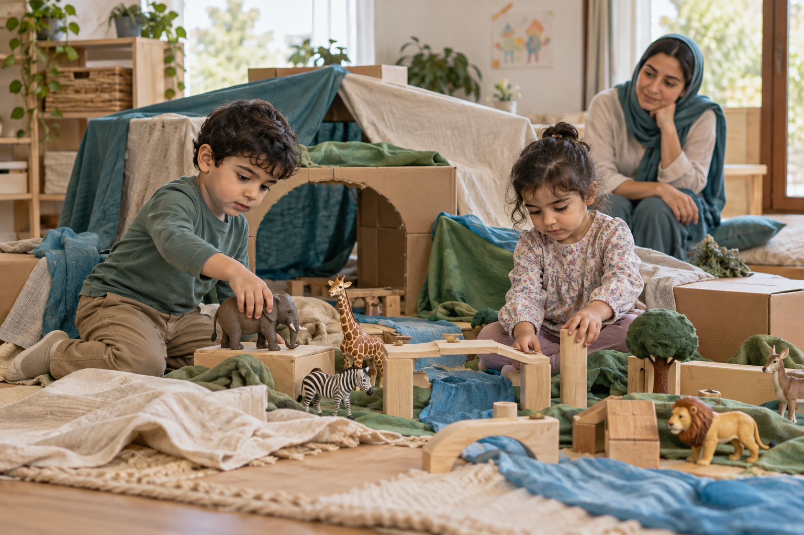
تصویر آموزشی بازسازیشده با هوش مصنوعی
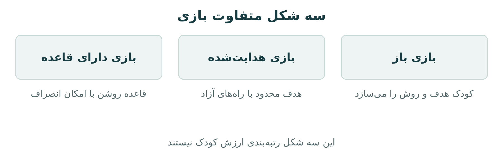
نقشه خواندن این بخش فصلهای ۱۱ تا ۱۳
فصل ۱۱ وقتی هیچ جواب درستی وجود ندارد
در این فصل چه میخوانیم؟
بعضی بازیها از جایی شروع میشوند که هنوز معلوم نیست قرار است چه چیزی ساخته شود.
«خب چی ساختی؟»
کودک چند تکه مقوا را جابهجا میکند و پارچهای روی آنها میکشد. میپرسیم: «چی ساختی؟» میگوید: «هیچی.» شاید همین پاسخ، شرح مناسبی از این لحظه باشد؛ هنوز دارد امتحان میکند که مواد کنار هم چه شکلی میگیرند.
اگر فوراً بگوییم «این یک خانه است»، ممکن است نامی بدهیم که کودک هنوز انتخاب نکرده است. میتوانیم فقط تغییر را ببینیم: «این دو تکه را نزدیک هم گذاشتی.» بعد منتظر بمانیم تا او اسم بگذارد، دوباره جابهجا کند یا از مسیر دیگری برود.
برای بازی باز، مواد ایمن و قابل دسترس آماده میکنیم و جا برای تغییر میگذاریم. تعداد بیشتر وسیله لزوماً به تجربهٔ بهتر نمیانجامد. چند مادهٔ مناسب، با فرصتی برای آزمودن، میتواند شروع کافی باشد.
پرسش این فصل
وقتی بازی یک پاسخ از پیش تعیینشده ندارد، چگونه برای آزمودن و تغییر جا بگذاریم؟
قطعات آزاد چیست؟
در ادبیات اوان کودکی، قطعات آزاد معمولاً به مواد جابهجاشدنی و باز گفته میشود که کودک میتواند آنها را حرکت دهد، ترکیب کند، جدا کند، ردیف کند، بپوشاند، تبدیل کند یا در بازی نمادین نقش تازهای به آنها بدهد. ممکن است طبیعی، بازیافتی، خانگی یا ساختهشده باشند؛ ویژگی مهم، «یک کاربرد ازپیشتعیینشده» نداشتن آنهاست.
اصطلاح قطعات آزاد از نظریه طراحی Simon Nicholson در دهه ۱۹۷۰ آمده است. نظریه تاریخی مهم است، اما بهخودیخود شواهد تجربی اثربخشی برای کودک محسوب نمیشود. در این کتاب، ارزش قطعات آزاد را از ادعاهای علمی درباره پیامدها جدا نگه میداریم.
باز بودنِ ماده یعنی چه؟
ماده بستهتر | ماده بازتر | تفاوت عملی |
|---|---|---|
پازل با جای مشخص | قطعات بزرگ مقوا، پارچه، حلقه، بلوک و ظرف | اولی مسئله و پاسخ ازپیشطراحیشده دارد؛ دومی امکانهای بیشتری برای تعریف مسئله توسط کودک میدهد. |
ماشین اسباببازی با نقش روشن | جعبه یا تکه چوب بزرگ | ماشین معمولاً «ماشین» میماند؛ جعبه ممکن است خانه، تخت، تونل یا فقط جعبه باشد. |
برگه کار با الگو | مواد قابل چیدن و جابهجایی | برگه نتیجه مشخص دارد؛ مواد باز میتوانند محصول یا حتی محصول نهایی نداشته باشند. |
اما «باز» مساوی «بهتر» نیست
کتاب از دوگانه «اسباببازی بسته بد / قطعات آزاد خوب» پرهیز میکند. کودک به تجربههای متنوع نیاز دارد: گاهی یک پازل با پاسخ مشخص مناسب است، گاهی بازی وانمودی، گاهی مواد باز و گاهی آموزش مستقیم کوتاه.
مهمتر از نام ماده این است که برای این کودک، در این زمان، چه فرصت عمل و چه میزان ساختار مفید است.
پژوهش واقعاً کجاست؟
مرور ۲۰۲۳ درباره قطعات آزاد در کودکان پیشدبستانی صریحاً تأکید کرد که پژوهش مستقیم درباره اثرهای شناختیِ قطعات آزاد، بهویژه در محیط داخل و کودکان زیر ۶ سال، محدود است. مرور نظاممند ۲۰۲۵ با جستوجوی مطالعات تا دسامبر ۲۰۲۴، ۲۵ مطالعه مرتبط را وارد بررسی کرد و همچنان بر نیاز به پژوهشهای مستقیمتر، دقیقتر و روششناختی قویتر تأکید دارد.
بنابراین در نقشه شواهد کتاب کتاب، خانواده قطعات آزاد سطح C باقی میماند: حوزهای امیدوارکننده و پرکاربرد، اما نه جایی که بتوان از آن بهسادگی جملههایی مثل «خلاقیت را افزایش میدهد» یا «حل مسئله را تقویت میکند» ساخت.
NAEYC در یک مقاله شیوه اجرا سال ۲۰۲۴ قطعات آزاد را بهعنوان مواد طبیعی، بازیافتی یا بازاستفادهشدهای معرفی میکند که کودک میتواند آنها را آزادانه جابهجا و تغییر دهد؛ این برای طراحی محیط مفید است، اما توصیه شیوه اجرا نیز جای RCT یا فراتحلیل را نمیگیرد.
خلاقیت را از تعداد ایدهها اندازه نگیریم
در این فصل واژه «خلاقیت» بیشتر بهعنوان ویژگی فرایند و امکانهای متعدد مطرح میشود، نه نمره کودک. اگر کودکی فقط دو قطعه را روی هم بگذارد، یا بارها یک آرایش مشابه بسازد، حق نداریم بگوییم «خلاق نیست».
بازی باز میتواند موقعیتی برای تولید راههای متفاوت فراهم کند؛ اینکه این موقعیت به تغییر پایدار در یک سازه مثل divergent thinking منجر میشود، برای خود فعالیتهای کتاب اثبات نشده است.
تکرار همیشه علامت مشکل نیست
کودکان ممکن است بارها پر و خالی کنند، ردیف بسازند، چیزی را بپوشانند، دور اشیا مرز بکشند، وصل کنند یا مسیر ایجاد کنند. در early-years شیوه اجرا به بعضی از این الگوهای تکراری «play schemas» گفته میشود.
در این کتاب Play Schemas فقط یک لنز توصیفی برای دیدن الگوهای بازی است؛ نه نظام تشخیصی. از تکرار یک الگو درباره اوتیسم، وسواس، «گیرکردن شناختی» یا ویژگی شخصیتی نتیجه نمیگیریم. حتی لازم نیست برای هر رفتار یک اسم الگوی تکرارشونده بازی پیدا کنیم.
نقش بزرگسال: مواد را غنی کن، بازی را تصاحب نکن
وقتی مداخله زیاد است | نسخه کمینهتر |
|---|---|
«با اینا یه خونه بساز.» | «این چندتا رو اینجا گذاشتم؛ ببین دوست داری باهاشون چی کار کنی.» |
«این باید سقف باشه.» | صبر کن؛ اگر کودک نیاز داشت، فقط ماده دیگری در دسترس قرار بده. |
«این چیه؟ چرا اینو گذاشتی؟ بعدش چی؟» | اگر کودک درگیر است، لازم نیست هر عمل را به پاسخ کلامی تبدیل کنی. |
«یه چیز دیگه هم بساز.» | اگر کودک همان الگو را تکرار میکند، اول ببین تکرار برای او چه کارکردی در بازی دارد. |
سن چه چیزی را تغییر میدهد؟
این مسیر سنی برای طراحی داخلی کتاب است؛ هنجار یا نقطه عطف رشدی نیست.
بازه | طراحی مناسبتر قطعات آزاد |
|---|---|
حدود ۲٫۵–۳ سال | مواد بسیار بزرگ، کمتعداد، مقاوم و بدون خطر خفگی؛ چیدن، گذاشتن، برداشتن، پوشاندن و بازنمایی بسیار ساده. |
۳–۴ سال | ترکیب چند ماده، ساخت جهان/داستان ساده، انتخاب آزادتر و تقلید کمتر از الگوی بزرگسال. |
۴–۵ سال | سازماندهی فضا، مسیر، حصار، ساخت پیچیدهتر و تغییر طرح در حین کار. |
۵–۶ سال | استفاده نمادین پیچیدهتر، چند کارکرد برای یک شیء، توضیح انتخاب در صورت تمایل و همکاری/مذاکره بیشتر. |
ایمنی قطعات آزاد؛ «هر وسیله خانه» ماده بازی نیست
باز و ارزان بودن یک وسیله، ایمن بودن آن را تضمین نمیکند. CPSC استفاده از قطعات کوچک در محصولاتی را که برای کودکان زیر ۳ سال طراحی شدهاند به دلیل خطر خفگی/بلع محدود میکند. Health Canada نیز توصیه میکند قطعات کوچک و جداشدنی از دسترس کودکان زیر ۳ سال دور باشند و برای کودک بزرگتری که هنوز اشیا را به دهان میبرد نیز خطر بر اساس شیوه واقعی بازی سنجیده شود.
خطر | قاعده فصل ۱۱ |
|---|---|
قطعات کوچک | برای زیر ۳ سال حذف؛ برای کودکان بزرگتر نیز اگر mouthing ادامه دارد، حذف یا جایگزین بزرگتر. |
باتری دکمهای/آهنربای قوی | اصلاً وارد قطعات آزاد کتاب نمیشوند. |
شیشه، فلز تیز، قطعه شکسته | حذف کامل؛ «بازیافتی» بودن مجوز استفاده نیست. |
بند/نخ بلند | نسخههای طولانی یا حلقهشونده دور گردن استفاده نمیشوند؛ برای مسیرسازی از نوارهای کوتاه/پهن یا مواد دیگر استفاده شود. |
مواد ناشناس/رنگ و پوشش | مواد پوستهپوسته، رنگشده ناشناس، سمی یا غیرقابل شستوشو کنار گذاشته میشوند. |
مخلوط سنی در مهد | مواد مناسب کودک بزرگتر نباید در دسترس نوپا قرار بگیرند؛ چیدمان محیط بر اساس کوچکترین/آسیبپذیرترین کاربر بررسی شود. |
بازی ۱: LP01 — با اینها چه میسازی؟
این بازی نزدیکترین شکل فصل به بازی بازِ خالص است؛ هدف آن «ساخت یک چیز خوب» نیست، بلکه ایجاد موقعیتی است که کودک بتواند مواد را انتخاب، ترکیب، جدا و دوباره تعریف کند.
مولفه | تعریف |
|---|---|
کد | LP01–34–O |
خانواده | Loose Parts / Open Play |
سن هسته | ۳ تا ۴ سال |
سن قابل تطبیق | تقریباً ۲٫۵ تا ۶ سال |
هدف اصلی | اکتشاف آزاد |
اهداف همراه | فرصت برای ایدههای متفاوت؛ حل مسئله در عمل |
مشاهده اصلی | عاملیت + حل مسئله |
نوع هدایت | کودکراهبر؛ حمایت کمینه تقریباً صفر |
محیط | خانه / مهد / فضای باز با تطبیق ایمنی |
سطح خود بازی | D |
راهنمای دقیق اجرای بازی LP01
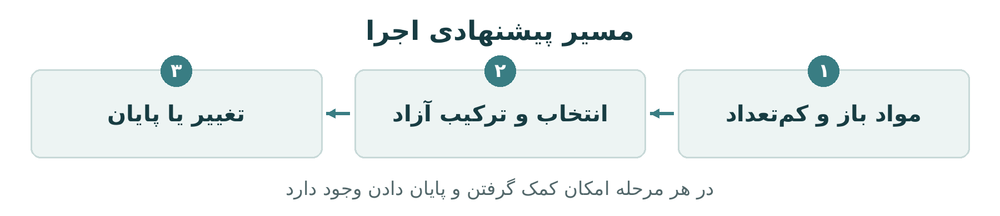
اینفوگرافی اجرای LP01 خواندن از راست به چپ
زمان پیشنهادی حدود ۵ تا ۱۵ دقیقه برای یک نوبت آغازین؛ ادامه یا پایان با توجه به علاقه، خستگی و شرایط واقعی. زمانگیری کودک لازم نیست.
وسایل این نسخه سه تا پنج نوع ماده بزرگ سالم؛ بلوک، جعبه، پارچه کوتاه و لوله مقوایی پهن.
پیش از دعوت مواد کمتعداد را جدا و قابل برداشتن روی سطح باز بچینید؛ نمونه محصول نگذارید.
جمله آغاز «اینها اینجاست؛ دوست داری با کدام شروع کنی؟»
گام ۱ فرصت بدهید کودک یک ماده را لمس، منتقل یا انتخاب کند؛ شروعنکردن را با نمایش فوری محصول پاسخ ندهید.
گام ۲ ساخت، جداکردن، پوشاندن و تغییر معنای مواد را دنبال کنید. بزرگسال تنها برای ایمنی یا دعوت کودک وارد شود.
گام ۳ اگر کودک خواست ماده تازهای اضافه کند، یک انتخاب مناسب بدهید. پایان یا نگهداشتن ساخته با توافق درباره فضای مشترک انجام شود.
اگر بازی گیر کرد «میخواهی این را نگه دارم یا فقط کنارت باشم؟»
راه سادهتر دو ماده بزرگ با تفاوت روشن؛ زمان کوتاهتر.
اگر کودک چالش بیشتری خواست یک ماده با کارکرد تازه اضافه شود؛ محصول یا تعداد ایدهها تعیین نشود.
راه دیگر برای مشارکت سطح همسطح دست؛ مواد سبک با گرفتن آسان و امکان هدایت بزرگسال با اشاره.
ایمنی همین اجرا لبه تیز، منگنه، پلاستیک بستهبندی، بند بلند و قطعات خفگی حذف شوند.
نمونه ثبت فرضی «پارچه را روی دو جعبه گذاشت، سپس یک جعبه را جابهجا کرد.» این فقط توصیف همان رخداد است؛ ثبت، فقط وقتی سؤال یا تصمیم مشخصی دارید.
مشاهده و تصمیم نوبت بعد ببین کودک کدام ویژگی وسیله را کشف و برای چه کاری استفاده میکند. اگر شروع نمیکند، دو نوع وسیله در دسترس بگذار و مکث کن؛ اگر هدفی ساخته، وسیله موردنیازش را فراهم کن و نمونه نهایی نشان نده.
پایان و مرور در جمعکردن مواد سهمی انتخابی بدهید؛ از ساخته عکس فقط با هدف و رضایت مناسب بگیرید.
ابزار و آمادهسازی
۴ تا ۸ نوع ماده، نه یک سبد بیانتها: جعبه، پارچه، حلقه بزرگ، بلوک، لوله مقوایی ضخیم، قاشق چوبی، قطعات چوبی بزرگ و سالم.
برای سن پایین، همه قطعات بزرگ و مقاوم؛ بدون مهره، دکمه، درِ بطری یا قطعات کوچک.
مواد روی سطح قابل دسترس و بدون «نمونه آماده» چیده شوند.
دعوت و اجرا
دعوت ساده: «اینها امروز اینجاست؛ ببین دوست داری باهاشون چی کار کنی.» اگر کودک شروع کرد، بزرگسال لازم نیست سؤال دیگری بپرسد.
اگر کودک هیچ کاری نکرد، میتواند فقط نگاه کند یا یک ماده را لمس کند. بعد از مدتی میتوان ماده را عوض کرد؛ لازم نیست بزرگسال فوراً نمونه بسازد.
نسخههای رشدی
بازه | تطبیق |
|---|---|
۲٫۵–۳ | ۳ یا ۴ ماده بزرگ؛ انتقال، گذاشتن، پوشاندن، چیدن. |
۳–۴ | مواد متنوعتر و زمان کافی؛ محصول نامگذاری نمیشود مگر کودک بخواهد. |
۴–۵ | امکان ساخت مشترک با همسال و تغییر طرح. |
۵–۶ | مواد با affordance متفاوت؛ اگر کودک خواست درباره طرح یا تغییرش توضیح دهد. |
اگر آسان/دشوار بود
آسان: مادهای با ویژگی تازه اضافه کن، نه سؤال بیشتر. دشوار: تعداد مواد را کم کن یا فقط دو نوع ماده با تفاوت روشن بگذار.
از LP01 چه چیزی نمیتوان فهمید؟
ساخته ساده، استفاده تکراری یا نساختن محصول بهتنهایی درباره خلاقیت، هوش، حل مسئله، توجه یا انگیزه کودک چیزی را ثابت نمیکند.
پشتوانه و حدود شواهد LP01
بخش | وضعیت |
|---|---|
خانواده شواهد | Loose Parts / open-ended materials |
سطح خانواده | C |
سطح خود بازی | D |
L0 مجاز | «مواد امکان ترکیب و استفاده به چند شکل را فراهم میکنند.» |
L1 محتاطانه | «میتواند فرصت تجربه راههای متفاوت و حل مسئله در عمل فراهم کند.» |
L2 غیرمجاز | «خلاقیت/حل مسئله را افزایش میدهد.» |
بازی ۲: LP02 — تصویر بدون مداد
در این بازی، تصویر با کشیدن ساخته نمیشود؛ کودک مواد را روی سطح میچیند، جابهجا میکند یا اصلاً به یک الگوی انتزاعی میرسد. «تصویر» میتواند چیزی باشد که کودک نام میدهد یا فقط آرایش مواد باشد.
مولفه | تعریف |
|---|---|
کد | LP02–23–O |
سن هسته | ۲٫۵ تا ۳ سال |
سن قابل تطبیق | تقریباً ۲٫۵ تا ۶ سال |
هدف اصلی | بازنمایی آزاد |
اهداف همراه | حرکت ظریف؛ روایت در صورت تمایل |
مشاهده اصلی | عاملیت + زبان |
هدایت | کودکراهبر؛ سؤال فقط پس از ساخت/در صورت تمایل |
سطح | D |
راهنمای دقیق اجرای بازی LP02
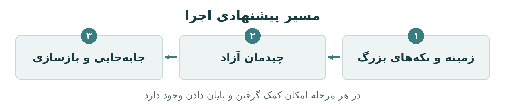
اینفوگرافی اجرای LP02 خواندن از راست به چپ
زمان پیشنهادی حدود ۵ تا ۱۵ دقیقه برای یک نوبت آغازین؛ ادامه یا پایان با توجه به علاقه، خستگی و شرایط واقعی. زمانگیری کودک لازم نیست.
وسایل این نسخه چند شکل مقوایی بزرگ، تکه پارچه و حلقه بزرگ؛ یک زمینه ساده.
پیش از دعوت سطح صاف و بدون چسب یا طرح از پیش کشیده آماده کنید؛ قطعات قابل جابهجایی بمانند.
جمله آغاز «میخواهی این تکهها را روی زمینه بچینی؟»
گام ۱ کودک قطعات را انتخاب کند و روی زمینه بگذارد؛ دسترسی به همه تکهها ممکن باشد.
گام ۲ چیدمان میتواند تصویر، الگو یا ترکیبی بینام باشد. درباره معنای آن فقط اگر کودک گفتوگو را آغاز کرد سؤال کنید.
گام ۳ اجازه دهید یک قطعه جابهجا یا همه اثر دوباره ساخته شود. تصمیم برای نگهداشتن یا جمعکردن را با کودک مرور کنید.
اگر بازی گیر کرد «این تکه را کجا میخواهی؟ میتوانی نشان بدهی تا من بگذارم.»
راه سادهتر دو یا سه تکه بزرگ؛ بدون نامگذاری اجباری.
اگر کودک چالش بیشتری خواست تکهای با بافت یا شکل تازه؛ ادامه روایت فقط در صورت تمایل.
راه دیگر برای مشارکت قطعات قابل گرفتن یا پایه بدون لغزش؛ انتخاب از دو تصویر.
ایمنی همین اجرا هیچ آهنربا، باتری، مهره یا چسب نامناسب در دسترس نباشد؛ برای مواد حسی حق ردکردن حفظ شود.
نمونه ثبت فرضی «حلقه را کنار پارچه گذاشت و گفت اینجا پنجره است.» این فقط توصیف همان رخداد است؛ ثبت، فقط وقتی سؤال یا تصمیم مشخصی دارید.
مشاهده و تصمیم نوبت بعد ببین کودک قطعات را میچیند، لمس میکند یا برایشان معنا میسازد. اگر سطح یا تعداد دشوار است، سینی ثابت و قطعات کمتر بده؛ تصویرسازی اجباری نیست و نام ندادن به چیدمان نیاز به اصلاح ندارد.
پایان و مرور اثر را به الگوی درست تبدیل نکنید؛ بازچیدن و جمعکردن هر دو پایان معتبرند.
مواد امن
برای ۲٫۵–۳ سال: تکههای بزرگ پارچه، اشکال مقوایی بزرگ، حلقههای بزرگ، چوبهای پهن و قطعات بزرگ فومی/چوبی ایمن.
برای سن بالاتر میتوان تنوع را بیشتر کرد، اما قطعات خفگی، آهنربا و باتری همچنان حذفاند.
سطح کار ساده و بدون چسب الزامی؛ کودک بتواند همه چیز را جابهجا کند.
دعوت
«میخوای با این تکهها روی زمین/میز یه چیزی بچینی؟» بعد صبر کن. اگر کودک گفت «این خورشیده»، دنبال روایت برو. اگر هیچ اسمی نداد، نیاز نیست تصویر را برای او نامگذاری کنیم.
از LP02 چه چیزی نمیتوان فهمید؟
اثر ساده، نامگذارینکردن یا چیدن تصادفی درباره استعداد هنری، تخیل، زبان یا رشد شناختی کودک حکم نمیدهد.
پشتوانه و حدود شواهد LP02
بخش | وضعیت |
|---|---|
خانواده | Loose Parts + representation |
سطح خانواده | C |
خود بازی | D |
L0 | فرصت ساخت/بازنمایی با مواد جابهجاشدنی. |
L1 | ممکن است موقعیت گفتوگو یا روایت را ایجاد کند؛ اگر کودک وارد آن شود. |
L2 | ممنوع: «مهارت هنری/تخیل/زبان را تقویت میکند». |
بازی ۳: LP03 — مسیرها و حصارها
اینجا کودک با مواد، فاصله و مرز میسازد: راه، خط، حلقه، محوطه، پارک، خانه حیوانات یا فقط ردیفهایی که بارها تغییر میکنند. هدف «آموزش الگوی تکرارشونده بازی» نیست؛ ما فقط الگوی عمل را میبینیم.
مولفه | تعریف |
|---|---|
کد | LP03–45–O |
سن هسته | ۴ تا ۵ سال |
سن قابل تطبیق | ۳ تا ۶ سال |
هدف اصلی | سازماندهی فضا |
اهداف همراه | Play Schemas بهعنوان لنز توصیفی؛ ساخت |
مشاهده اصلی | حل مسئله + توجه |
هدایت | مشاهده؛ ورود فقط در صورت دعوت/نیاز |
سطح | D |
راهنمای دقیق اجرای بازی LP03
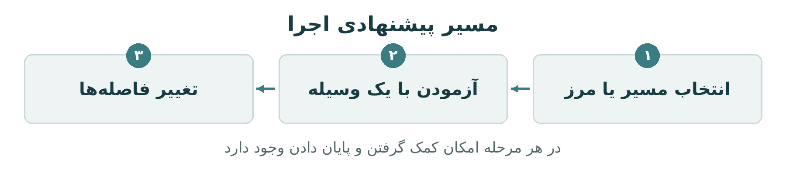
اینفوگرافی اجرای LP03 خواندن از راست به چپ
زمان پیشنهادی حدود ۵ تا ۱۵ دقیقه برای یک نوبت آغازین؛ ادامه یا پایان با توجه به علاقه، خستگی و شرایط واقعی. زمانگیری کودک لازم نیست.
وسایل این نسخه بلوک سبک، نوار پهن کوتاه پارچه و یک ماشین یا حیوان بزرگ.
پیش از دعوت بخشی از زمین یا میز برای مسیر آزاد شود؛ راه رفتوآمد افراد جدا بماند.
جمله آغاز «دوست داری با اینها راه یا مرزی بسازی؟»
گام ۱ کودک نقطه شروع و آرایش مواد را انتخاب کند؛ راه میتواند مستقیم، حلقهای یا فقط یک ردیف باشد.
گام ۲ وسیله بزرگ از مسیر بگذرد یا در محوطه قرار گیرد؛ کودک میتواند فاصله و مرزها را تغییر دهد.
گام ۳ اگر گیرکردن وسیله توجه کودک را گرفت، فقط آنچه رخ داد توصیف کنید و منتظر تغییر طرح بمانید.
اگر بازی گیر کرد «ماشین اینجا گیر کرد؛ دوست داری راه را عوض کنی یا همانطور بماند؟»
راه سادهتر چهار بلوک و یک مسیر روی میز؛ بدون نیاز به روایت.
اگر کودک چالش بیشتری خواست دو مسیر یا یک ورودی اضافه با تصمیم کودک.
راه دیگر برای مشارکت ساخت روی میز یا سینی؛ بزرگسال قطعات را طبق اشاره کودک جابهجا کند.
ایمنی همین اجرا نوار به گردن یا بدن بسته نشود؛ سازه روی محل عبور افراد قرار نگیرد.
نمونه ثبت فرضی «بلوکها را دور عروسک چید و برای ورود ماشین یک فاصله باز کرد.» این فقط توصیف همان رخداد است؛ ثبت، فقط وقتی سؤال یا تصمیم مشخصی دارید.
مشاهده و تصمیم نوبت بعد ببین مسیر را با جایگذاری، وصلکردن یا امتحان حرکت تغییر میدهد. اگر قطعات جابهجا میشوند، سطح ثابتتری بده؛ اگر راه را باز و بسته میکند، همان پرسش فضایی او را دنبال کن و نقشه آماده تحمیل نکن.
پایان و مرور ردیفکردن تکراری را تعبیر نکنید؛ مواد با توافق جمع یا حفظ شوند.
اجرا
بلوک، نوارهای پهن پارچه، قطعات مقوا، حلقههای بزرگ یا چوبهای پهن را در دسترس بگذار. کودک ممکن است مسیر ماشین بسازد، دور عروسکها حصار بکشد یا مواد را فقط ردیف کند.
اگر الگو تکرار شد، بهجای «باز هم داری ردیف میکنی؟» میتوانیم فقط ثبت کنیم: «امروز سه بار مواد را در امتداد لبه فرش چید.»
از LP03 چه چیزی نمیتوان فهمید؟
تکرار ردیفکردن، محصورکردن یا ساخت مسیر بهتنهایی رفتار مرضی، وسواس، اوتیسم یا «انعطاف پایین» را نشان نمیدهد. Play Schemas در این کتاب ابزار تشخیصی نیست.
پشتوانه و حدود شواهد LP03
بخش | وضعیت |
|---|---|
خانواده | Loose Parts + constructive play |
Loose Parts | C |
Play Schemas در کتاب | D — لنز توصیفی |
L0 | کودک مواد را برای ساخت مسیر/مرز/آرایش فضایی جابهجا میکند. |
L2 غیرمجاز | «الگوی تکرارشونده بازی خاص نشاندهنده ویژگی روانشناختی/اختلال است». |
بازی ۴: LP04 — یک شیء، چند امکان؟
این بازی عمداً برای سن بالاتر است، چون سؤال «دیگه چی میتونه باشه؟» اگر زود یا زیاد استفاده شود خیلی راحت به آزمون تولید ایده تبدیل میشود.
مولفه | تعریف |
|---|---|
کد | LP04–56–O |
سن هسته | ۵ تا ۶ سال |
سن قابل تطبیق | ۴٫۵ تا ۶ سال |
هدف اصلی | تفکر واگرا در موقعیت بازی |
اهداف همراه | زبان؛ انعطاف |
مشاهده اصلی | حل مسئله + زبان |
هدایت | پرسش باز محدود |
سطح | D |
راهنمای دقیق اجرای بازی LP04
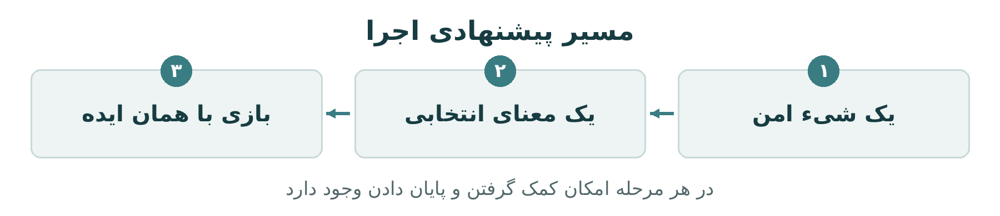
اینفوگرافی اجرای LP04 خواندن از راست به چپ
زمان پیشنهادی حدود ۵ تا ۱۵ دقیقه برای یک نوبت آغازین؛ ادامه یا پایان با توجه به علاقه، خستگی و شرایط واقعی. زمانگیری کودک لازم نیست.
وسایل این نسخه یک شیء بزرگ امن مثل جعبه سبک یا لوله پهن؛ دو پارچه کوتاه اختیاری.
پیش از دعوت فقط همان شیء در مرکز باشد؛ فهرست کاربردهای درست ارائه نشود.
جمله آغاز «این در بازی تو چه چیزی میتواند باشد؟»
گام ۱ کودک یک معنی یا کنش پیشنهاد دهد؛ حتی استفاده عادی از شیء پذیرفته است.
گام ۲ آن پیشنهاد را در یک بازی کوتاه دنبال کنید؛ اگر جعبه اتوبوس شد، بزرگسال مسافر خیالی شود.
گام ۳ در صورت علاقه فقط یک بار امکان دیگری مطرح کنید یا خودتان یک ایده کوتاه بسازید و اختیار را برگردانید.
اگر بازی گیر کرد «میخواهی با همین ایده ادامه بدهیم؟ لازم نیست ایده دیگری پیدا کنی.»
راه سادهتر استفاده کنشی از شیء بدون سؤال انتزاعی؛ این نسخه برای سن پایین فقط بازی باز است.
اگر کودک چالش بیشتری خواست کودک نقش تازهای برای بزرگسال تعیین کند یا دو شیء را ترکیب کند.
راه دیگر برای مشارکت اشاره، حرکت شیء یا انتخاب میان دو نقش تصویری؛ گفتن جمله شرط نیست.
ایمنی همین اجرا لوله رو به صورت کسی استفاده نشود؛ کودک داخل جعبه بسته قرار نگیرد و روی آن نایستد.
نمونه ثبت فرضی «لوله را تلفن نامید و به خرس گفت میآیم.» این فقط توصیف همان رخداد است؛ ثبت، فقط وقتی سؤال یا تصمیم مشخصی دارید.
مشاهده و تصمیم نوبت بعد ببین کودک برای شیء چه کاربرد یا معنایی میسازد. اگر فقط یک کاربرد انتخاب کرد، همان را ادامه بده؛ شمار پاسخها نمره خلاقیت نیست. برای نوبت بعد فقط یک تغییر در موقعیت شیء پیشنهاد کن.
پایان و مرور تعداد ایدهها شمرده نشود؛ یک بازی ادامهدار از چند جواب کوتاه ارزشمندتر است.
اجرا
یک شیء بزرگ و امن انتخاب کن: لوله مقوایی، پارچه، جعبه، حلقه یا قاشق چوبی. بزرگسال میگوید: «این توی بازی میتونه چی باشه؟» بعد هر پاسخ را وارد بازی میکند. اگر کودک فقط یک ایده دارد، آن را ادامه میدهیم؛ تعداد ایدهها را نمیشماریم.
برای جلوگیری از آزمونشدن، پرسش «دیگه چی؟» را بارها تکرار نکن. گاهی بزرگسال یک ایده خودش اضافه میکند و دوباره بازی را به کودک برمیگرداند.
از LP04 چه چیزی نمیتوان فهمید؟
تعداد کم ایده یا پاسخ مشابه به معنای خلاقیت کم، انعطاف شناختی ضعیف یا هوش پایین نیست. LP04 آزمون divergent thinking نیست.
پشتوانه و حدود شواهد LP04
بخش | وضعیت |
|---|---|
خانواده | Open-ended play / symbolic use |
سطح خانواده | C |
خود بازی | D |
L0 | یک شیء در نقشهای مختلف بازی استفاده میشود. |
L1 | فرصت پیشنهاد و امتحان کارکردهای متفاوت را ایجاد میکند. |
L2 | ممنوع: افزایش/سنجش خلاقیت یا انعطاف شناختی. |
بازی ۵: ♥ LP05 — دنیای کوچک من
در این بازی کودک با مواد، یک جهان کوچک میسازد: خانه، مزرعه، جاده، دریا، اتاق، شهر یا جهانی که اصلاً اسم مشخصی ندارد. نشان ♥ یادآوری میکند که ورود به جهان کودک برای رابطه مهمتر از ثبت عملکرد اوست.
مولفه | تعریف |
|---|---|
کد | LP05–34–O ♥ |
سن هسته | ۳ تا ۴ سال |
سن قابل تطبیق | ۳ تا ۶؛ نسخه وانمودی بسیار ساده از حدود ۲٫۵ سال |
هدف اصلی | ساخت جهان باز |
اهداف همراه | روایت؛ بازی نمادین |
مشاهده اصلی | زبان + عاملیت |
هدایت | پیروی از کودک |
رابطه | ♥ معمولاً بدون فرم رسمی |
سطح | D |
راهنمای دقیق اجرای بازی LP05
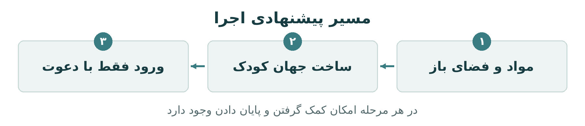
اینفوگرافی اجرای LP05 خواندن از راست به چپ
زمان پیشنهادی حدود ۵ تا ۱۵ دقیقه برای یک نوبت آغازین؛ ادامه یا پایان با توجه به علاقه، خستگی و شرایط واقعی. زمانگیری کودک لازم نیست.
وسایل این نسخه پارچه کوتاه، بلوک، جعبه باز و چند شخصیت بزرگ ایمن.
پیش از دعوت مواد در دسترس باشند؛ نمونه شهر یا خانواده از قبل نسازید.
جمله آغاز «دوست داری اینجا چه دنیایی بسازی؟»
گام ۱ کودک مکان یا کنش آغازین را انتخاب کند؛ حضور شخصیتها الزامی نیست.
گام ۲ بزرگسال اگر دعوت شد نقش بگیرد و بپرسد کجا باشد؛ قوانین خیال کودک تا حد ایمنی پذیرفته شوند.
گام ۳ کودک میتواند جهان، شخصیت و مسیر را عوض کند؛ اگر دوست داشت یک بخش را برای دفعه بعد نگه دارید.
اگر بازی گیر کرد «من در دنیای تو کجا باشم؟ یا میخواهی فعلاً فقط نگاه کنم؟»
راه سادهتر دو ماده و یک شخصیت بزرگ؛ وانمودی کوتاه.
اگر کودک چالش بیشتری خواست ساخت مشترک با یک همبازی و توافق درباره یک بخش جهان.
راه دیگر برای مشارکت جهان روی میز، نقش غیرکلامی، شخصیتهای قابل گرفتن و زبان خانه.
ایمنی همین اجرا مینیاتور ریز، مواد طبیعی ناشناخته و بند بلند حذف شوند؛ محتوای خیالی ابزار بازجویی نیست.
نمونه ثبت فرضی «پارچه را دریا نامید و نقش قایق را به بزرگسال داد.» این فقط توصیف همان رخداد است؛ ثبت، فقط وقتی سؤال یا تصمیم مشخصی دارید.
مشاهده و تصمیم نوبت بعد ببین کودک چه کسی یا چه چیزی را وارد دنیایش میکند. برای ادامه، تنها وسیلهای را پیشنهاد کن که به روایت او مربوط است؛ اگر فقط چیدن را دوست دارد، حضور شخصیت و قصه را الزامی نکن.
پایان و مرور داستان به پیام پنهان تعبیر نشود؛ پایان و نگهداشتن ساخته با کودک هماهنگ شود.
مواد
پارچه، بلوک، جعبه، قطعات بزرگ چوبی/مقوایی، حیوان یا آدمکِ متناسب با سن، ظرفهای بزرگ و مواد طبیعی امن.
برای نسخه حدود ۲٫۵–۳ سال، هیچ مینیاتور یا قطعه کوچک استفاده نمیشود؛ شخصیتها و مواد بزرگاند.
وجود آدمک اجباری نیست؛ جهان میتواند فقط از مسیر، پارچه و بلوک ساخته شود.
نقش بزرگسال
اگر کودک گفت «اینجا زندانه»، بزرگسال لازم نیست بپرسد «چه کسی تو را زندانی کرده؟». اگر شخصیتها دعوا کردند، لازم نیست داستان به روان کودک تعبیر شود. در بازی نمادین، محتوا میتواند از تجربه روز، قصه، تخیل، تقلید یا ترکیبی از آنها بیاید.
بهترین سؤالها معمولاً درون بازیاند: «من کجا باشم؟»، «این راه به کجا میره؟» یا حتی فقط دنبالکردن نقش دادهشده. اگر کودک بزرگسال را وارد نکرد، حضور تماشاگرانه هم معتبر است.
نسخههای رشدی
بازه | تطبیق |
|---|---|
۲٫۵–۳ | دو یا سه عنصر بزرگ؛ وانمودی کوتاه مثل خواباندن حیوان یا ساخت یک خانه ساده. |
۳–۴ | جهان کوچک با چند مکان/نقش؛ بزرگسال در صورت دعوت وارد میشود. |
۴–۵ | روایت طولانیتر و تغییر نقش/فضا؛ مواد بازتر. |
۵–۶ | ساخت مشترک، مذاکره درباره قوانین جهان و بازطراحی؛ بدون مجبورکردن به داستانگویی. |
از LP05 چه چیزی نمیتوان فهمید؟
موضوع داستان یا بازی، بهتنهایی معنای پنهان قطعی درباره خانواده، تروما، اضطراب، دلبستگی، پرخاشگری، اوتیسم یا زندگی واقعی کودک ندارد. این بازی ابزار projective test یا play therapy ارزیابی نیست.
پشتوانه و حدود شواهد LP05
بخش | وضعیت |
|---|---|
خانواده | Loose Parts + symbolic/pretend play |
سطح قطعات آزاد | C |
سطح خود بازی | D |
♥ | رابطه بر ثبت و عملکرد مقدم است. |
L0 | کودک مواد را برای ساخت جهان/سناریوی بازی جابهجا و بازتعریف میکند. |
L1 | ممکن است فرصت روایت و گفتوگوی مشترک ایجاد کند. |
L2/L3 | ممنوع: تفسیر بالینی داستان یا ادعای تقویت همدلی/خلاقیت/زبان. |
علم چه میگوید؟
آنچه نسبتاً میدانیم
قطعات آزاد به مواد باز و جابهجاشدنی اشاره دارد که امکان استفاده و ترکیب به شکلهای مختلف را میدهند.
مرورهای ۲۰۲۳ و ۲۰۲۵ نشان میدهند این حوزه از نظر پژوهشی رو به رشد است، اما شواهد مستقیم درباره اثرهای شناختی خاص در کودکان ۰ تا ۶ سال هنوز محدود و ناهمگون است.
پژوهشهای قدیمیتر درباره مداخلات قطعات آزاد بیشتر بر محیطهای بیرونی، فعالیت جسمانی و بعضی پیامدهای اجتماعی متمرکز بودهاند؛ تعمیم آنها به هر پیامد شناختی یا هر بازی داخل خانه درست نیست.
راهنماهای شیوه اجرا مانند NAEYC استفاده از مواد باز را برای محیطهای غنی و کودکراهبر پیشنهاد میکنند، اما این توصیهها خودشان اثبات اثر فعالیتهای LP01–LP05 نیستند.
آنچه نمیتوانیم بگوییم
قطعات آزاد بهطور قطعی خلاقیت، EF، زبان یا حل مسئله را افزایش میدهد.
هرچه تعداد مواد بیشتر باشد، بازی بهتر است.
تکرار یک الگوی بازی نشانه اختلال است.
کودکی که محصول ساده میسازد خلاقیت کمتری دارد.
تعداد ایده در LP04 نمره تفکر واگراست.
داستان LP05 معنای بالینی پنهان و قابل تفسیر قطعی دارد.
در خانه چه میتوان کرد
چند مادهٔ ایمن و متفاوت انتخاب کنید؛ لازم نیست همهٔ وسایل همزمان در دسترس باشند.
اگر کودک درگیر است، پیش از پرسیدن نام ساخته، به کارهایی که با مواد انجام میدهد توجه کنید.
سادگی محصول را به توانایی کودک نسبت ندهید. انتخاب و تغییر او را در همان موقعیت ببینید.
تکرار بازی را قبل از قضاوت فقط ببینید.
مواد کوچک برای زیر ۳ سال یا کودک بزرگتری که هنوز اشیا را به دهان میبرد مناسب نیستند.
بازی نمادین را به بازجویی درباره زندگی واقعی تبدیل نکنید.
در مهد یا کارگاه
پیش از اجرا، مواد را از نظر ایمنی و دسترسی بررسی کنید. در مشاهده، یک فرایند مانند ترکیبکردن یا تغییر طرح را دنبال کنید؛ زیبایی ساختهها را با هم مقایسه نکنید.
برای مشاهده، یک یا دو سؤال کافی است: کودک چگونه مواد را انتخاب/ترکیب میکند؟ وقتی طرحش تغییر میکند چه میکند؟ اگر هدف مشاهده مشخص ندارید، بازی را بدون فرم رها کنید—بهویژه LP05 ♥.
یک تجربه برای این هفته
در یک نوبت، الگوی آماده نشان ندهید.
دو یا سه مادهٔ ایمن پیشنهاد کنید و فقط یک تغییر قابل مشاهده را توصیف کنید. ببینید کودک پس از آن چه مسیری انتخاب میکند.
چه چیزی ارزش مشاهده بیشتر دارد؟
اگر نگرانیای فراتر از بازی قطعات آزاد دارید، یک ساخته یا یک الگوی تکراری کافی نیست. همان قواعد کتاب برقرارند: تداوم در زمان، گستره در چند موقعیت، اثر واقعی بر مشارکت و هرگونه پسرفت اهمیت بیشتری دارند. فصل ۲۵ مسیر پیگیری را دقیقتر باز میکند.
همراهی در موقعیتهای روزمره
بازی کودک همیشه یک پاسخ از پیش تعیینشده ندارد. ارزش بسیاری از بازیها در کشف، آزمون، تغییر مسیر و ساختن معناست.
لنز حرفهای مشاهده:
• کودک چه انتخابی کرد؟
• چه چیزی را تغییر داد؟
• چگونه با نتیجه کار خود برخورد کرد؟
خطای رایج: تبدیل هر فعالیت خلاقانه به پیدا کردن یک جواب درست.
تمرین: در یک بازی ساختنی، به جای اصلاح نتیجه، از کودک درباره ایدهاش سؤال کنید.
وسوسه ساختن یک محصول خوب
اگر با قطعههای باز برج زیبایی ساختهاید، لازم نیست آن را نمونه اجباری کودک کنید. مواد را با چند امکان محدود در دسترس قرار دهید و ببینید کودک چه کاربردی پیدا میکند. ردیف کردن، جمع کردن یا داستان ساختن هم میتواند مسیر تجربه باشد.
وقتی همه چیز را پخش میکند
ابتدا مرز فضا و ایمنی را روشن کنید: مواد در این محدوده میمانند و قطعهای که خطر دارد کنار گذاشته میشود. سپس به جای نسبت دادن بینظمی، ببینید تعداد مواد بیش از حد است یا کودک هنوز مشغول بررسی آنهاست. میتوانید مواد کمتری عرضه کنید؛ لازم نیست فوراً کار هدفمند خودتان را جایگزین کنید.
پایان فصل
این هفته... | پیشنهاد |
|---|---|
بیشتر ببین | کودک به کدام ویژگی ماده جذب میشود: شکل، وزن، حرکت، پوشاندن، اتصال یا نقش نمادین؟ |
کمتر انجام بده | دادن نمونه، سؤال مداوم و تعریف محصول به جای کودک. |
امتحان کن | یک مجموعه کوچک و امن از مواد باز بدون هدف نهایی. |
از خودت بپرس | آیا محیط امکان انتخاب میدهد، یا من فقط یک کاردستی بدون دستورالعمل ساختهام؟ |
گاه تمام دستاورد قابل مشاهدهٔ یک نوبت، یک جابهجایی یا امتحان دوباره است. برای ادامهٔ بازی، همین تغییر کوچک هم میتواند معنا داشته باشد.
فصل بعد سراغ سمت دیگر طیف میرود: چگونه هدف آموزشی داشته باشیم اما بازی را تصاحب نکنیم؟
منابع منتخب فصل
Cankaya O, Martin M, Haugen D. The Relationship Between Children’s Indoor Loose Parts Play and Cognitive Development: A Systematic Review. Journal of Intelligence. 2025;13(5):52. https://doi.org/10.3390/jintelligence13050052.
Cankaya O, Rohatyn-Martin N, Leach J, Taylor K, Bulut O. Preschool Children’s Loose Parts Play and the Relationship to Cognitive Development: A Review of the Literature. Journal of Intelligence. 2023;11:151. https://doi.org/10.3390/jintelligence11080151.
Gibson JL, Cornell M, Gill T. A Systematic Review of Research into the Impact of Loose Parts Play on Children’s Cognitive, Social and Emotional Development. School Mental Health. 2017;9:295–309. https://doi.org/10.1007/s12310-017-9220-9.
NAEYC. Rocking and Rolling: Using Materials Creatively to Enhance Toddler Learning Environments. Young Children. Fall 2024.
Nicholson S. The Theory of Loose Parts. Studies in Design Education Craft & Technology. 1972.
Athey C. Extending Thought in Young Children: A Parent-Teacher Partnership. 2nd ed. 2007. (Play schemas as an early-years theoretical/practice lens; not a diagnostic system.)
U.S. Consumer Product Safety Commission. Small Parts Ban and Choking Hazard Labeling. Current guidance.
Health Canada. Small Parts in Toys / Toy Safety Guidance. Current guidance.
یادداشت روششناختی: خانواده قطعات آزاد در طراحی کتاب سطح C است. خود LP01 تا LP05 فعالیتهای طراحیشده کتاب و سطح D هستند. Play Schemas در LP03 نیز یک لنز توصیفی D است؛ نه مقیاس، آزمون یا ابزار تشخیصی.
فصل ۱۲ هدایت بدون تصاحب بازی
در این فصل چه میخوانیم؟
داشتن هدف آموزشی، به پرسیدن مداوم سؤال نیاز ندارد؛ گاهی طراحی محیط سهم بیشتری در هدایت بازی دارد.
«بذار خودم نشونت بدم»
کودک فروشگاه ساخته است. مربی دربارهٔ رنگ، تعداد و جای هر چیز سؤال میکند. کمکم فروشندهٔ کوچک از نقش خود بیرون میآید و فقط به مربی پاسخ میدهد. هدف شمارش روشن است، اما داستانی که کودک ساخته بود در میان سؤالها کمرنگ شده است.
میتوان یک درخواست درون بازی آورد: «برای دو نفر ظرف میخواهم.» سپس دید کودک چگونه به آن پاسخ میدهد. شاید بشمارد، جفت کند، ظرف اضافه بیاورد یا راه دیگری پیدا کند. بزرگسال یک فرصت ساخته و هنوز برای مسیر کودک جا گذاشته است.
هدایت کوچک را با مشاهده دنبال میکنیم. اگر کودک راهی پیدا کرده، لازم نیست بلافاصله درخواست بعدی برسد. اگر موقعیت را نفهمیده، نشانه یا توضیح کوتاه میدهیم. هدف یادگیری و انتخاب کودک را در همین رفتوبرگشت کنار هم نگه میداریم.
پرسش این فصل
چه سرنخ کوچکی میتواند یادگیری را پیش ببرد و هنوز انتخاب و ایدهٔ کودک را حفظ کند؟
بازی هدایتشده در این کتاب چیست؟
تعریف اجرایی کتاب که در فصل ۲ توضیح داده شد، سه مؤلفه دارد: هدف آموزشی روشن بزرگسال، انتخاب معنیدار کودک و هدایت انعطافپذیر و پاسخگو به عمل او. این سه مؤلفه ترجمه آموزشی کتاب از ادبیات پژوهش و راهنمای فعالیت متناسب با رشدند؛ آزمون اعتبارسنجیشده بازی هدایتشده نیستند.
NAEYC در DAP توصیه میکند محیط آموزشی ترکیبی از بازی با هدایت خود کودک، بازی هدایتشده و آموزش مستقیم داشته باشد و حتی در فعالیتهای بزرگسالهدایت، عاملیت کودک حفظ شود. در مقاله Playful Learning نیز بازی هدایتشده بهعنوان فضایی معرفی میشود که بزرگسال هدف یادگیری را نگه میدارد اما کودک نقش فعال در کشف دارد.
هدایت فقط سؤال نیست
نوع هدایت | نمونه | چه زمانی ممکن است کافی باشد؟ |
|---|---|---|
محیط | مواد مرتبط را در دسترستر میگذاری یا تعداد حواسپرتکنها را کم میکنی. | وقتی کودک خودش مسیر مناسب را پیدا کرده و فقط محیط باید هدف را قابل مشاهدهتر کند. |
انتخاب ماده | دو ظرف با اندازه متفاوت، کارت مسیر یا اشیای قابل دستهبندی اضافه میکنی. | وقتی ماده میتواند مسئله را ایجاد کند بدون توضیح زیاد. |
سرنخ کوتاه | «یکی دیگه هم جا مونده.» / اشاره به مسیر. | وقتی کودک نزدیک راهحل است. |
مدلسازی محدود | یک نمونه را انجام میدهی و دوباره مواد را به کودک برمیگردانی. | وقتی روش استفاده از ابزار/قاعده هنوز روشن نیست. |
سؤال باز | «چه راه دیگهای میتونه باشه؟» | وقتی سؤال واقعاً فکر را باز میکند، نه اینکه جواب مورد نظر بزرگسال را حدس بزند. |
آموزش مستقیم کوتاه | واژه یا رابطهای را واضح میگویی. | وقتی دانستن آن اطلاعات لازم است؛ آموزش مستقیم دشمن بازی هدایتشده نیست. |
متاآنالیز چه میگوید؟
Skene و همکاران در مرور نظاممند و فراتحلیل ۲۰۲۲، ۳۹ مطالعه را مرور کردند و ۱۷ مطالعه با مجموع ۳۸۹۳ کودک ۱ تا ۸ سال وارد فراتحلیل شدند. بازی هدایتشده نسبت به آموزش مستقیم برای بعضی پیامدهای ریاضی اولیه، شناخت شکل و تغییر تکلیف و نسبت به free play برای spatial vocabulary مزیت نشان داد؛ اما برای بسیاری پیامدهای دیگر تفاوت روشنی پیدا نشد.
نکته مهمتر برای این کتاب، ناهمگونی مفهوم و اجرای بازی هدایتشده بین مطالعات است. پس جمله «بازی هدایتشده همیشه بهتر است» علمی نیست. IES نیز در مرور شواهد بازی بهعنوان راهبرد آموزشی، کیفیت و نوع مقایسه را مسئله مهمی دانسته و شواهد قوی/متوسط کلی را محدود گزارش کرده است.
نتیجه طراحی: خانواده بازی هدایتشده در نقشه شواهد کتاب کتاب سطح B دارد؛ اما هر بازی GP01 تا GP05 تا وقتی مستقیماً آزموده نشده، سطح D باقی میماند.
سه آزمون سریع: هنوز بازی است؟
سؤال | اگر «بله» | اگر «نه» |
|---|---|---|
کودک هنوز انتخاب واقعی دارد؟ | مسیر، ماده، پاسخ یا ترتیب تا حدی مال کودک است. | احتمالاً فعالیت بیش از حد هدایتشده شده. |
اشتباه کودک میتواند مدتی زنده بماند؟ | بزرگسال فوراً اصلاح نمیکند و از خطای امن برای فکر کردن استفاده میکند. | فعالیت به quiz نزدیک شده. |
میتوانم هدایت را کم کنم وقتی کودک راه افتاد؟ | بزرگسال عقب میرود و دنبال عمل کودک میکند. | Guidance به کنترل دائمی تبدیل شده. |
سؤال خوب و سؤالِ امتحانی
سؤال امتحانی | نسخه بازتر/هدفمندتر |
|---|---|
«این چه رنگیه؟» وقتی کودک قبلاً نشان داده میداند. | اگر هدف دستهبندی است: «میخوای مغازهات رو چه جوری مرتب کنی؟» |
«چندتاست؟ حالا چندتا شد؟ حالا چندتا؟» پشتسرهم. | یک بار: «برای این مشتری چندتا لازم داریم؟» و بعد بازی را ادامه بده. |
«چرا این حیوان اینجا زندگی میکنه؟» قبل از اینکه کودک تصمیمی گرفته باشد. | «این دوتا خونه داریم؛ حیوانها رو کجا میخوای بذاری؟» بعد از انتخاب: «چی باعث شد اینجا رو انتخاب کنی؟» |
«این باید بزرگتر باشه، درسته؟» | «ماشین از این تونل رد میشه؟ چه چیزی رو میتونی عوض کنی؟» |
سن چه چیزی را تغییر میدهد؟
سنهای زیر «سن هسته طراحی» هستند، نه نقطه عطف رشدی. در بازی هدایتشده هرچه کودک کوچکتر است، هدایت بیشتر باید در ماده، محیط، تقلید و انتخابهای محدود پنهان شود و وابستگی به توضیح کلامی کمتر باشد.
سن هسته | صورت مناسبتر هدایت |
|---|---|
۲–۳ | دو انتخاب روشن، ماده ملموس، مدل بسیار کوتاه، یک واژه/رابطه در هر بار؛ GP02 هسته این سن است. |
۳–۴ | هدف ساده در دل نقش/موقعیت، یک سؤال در هر چرخه و امکان تغییر ترتیب؛ GP01 هسته این سن است. |
۴–۵ | مسئله کمی پیچیدهتر، مقایسه دو راه، سرنخ کوچک و تغییر معیار؛ GP03 و GP05 هسته این سناند. |
۵–۶ | روابط فضایی/اندازه پیچیدهتر، برنامه و بازطراحی، دلیلگویی اختیاری؛ GP04 هسته این سن است. |
فراگیری: عاملیت برای همه یک شکل ندارد
کودکی که با AAC انتخاب میکند، کودکی که پاسخ را با حرکت نشان میدهد یا کودکی که برای ورود به مسئله به مدل بیشتری نیاز دارد، همچنان میتواند در بازی هدایتشده عاملیت داشته باشد. «کمک بیشتر» برای دسترسپذیری لزوماً ضد بازی نیست. NAEYC نیز تأکید میکند نوع حمایت باید به تفاوتهای فردی، زبانی و رشدی پاسخ دهد.
هدف این نیست که همه کودکان دقیقاً یک میزان استقلال کلامی داشته باشند؛ هدف این است که حمایت، کودک را از نقش فعال خارج نکند.
GP01 — فروشگاه رنگ و تعداد
فروشگاه یک بافت آشنا برای واردکردن زبان مقدار، دستهبندی و شمارش است؛ اما فروشنده کوچک قرار نیست به صندوق امتحان ریاضی تبدیل شود.
مولفه | تعریف |
|---|---|
کد | GP01–34–G |
سن هسته | ۳–۴ سال |
سن قابل تطبیق | ۲٫۵–۵ سال؛ نسخه ۳۰ماهه بسیار ساده |
هدف اصلی | ریاضی اولیه در موقعیت بازی |
اهداف همراه | زبان؛ طبقهبندی |
مشاهده اصلی | حل مسئله + زبان |
حمایت کمینه | پرسش/سفارش کوتاه درون نقش |
سطح خانواده | B |
سطح خود بازی | D |
راهنمای دقیق اجرای بازی GP01
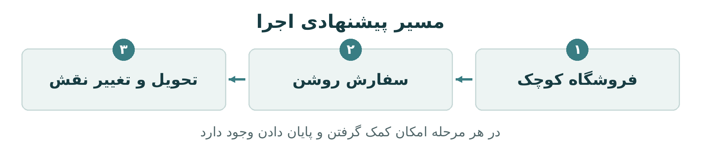
اینفوگرافی اجرای GP01 خواندن از راست به چپ
زمان پیشنهادی حدود ۵ تا ۱۰ دقیقه برای یک نوبت آغازین؛ ادامه یا پایان با توجه به علاقه، خستگی و شرایط واقعی. زمانگیری کودک لازم نیست.
وسایل این نسخه شش تا هشت شیء بزرگ در دو رنگ، دو سبد و کارت سفارش ساده اختیاری.
پیش از دعوت فروشگاه کوچک بسازید؛ در هر دور فقط یک یا دو ویژگی سفارش مطرح شود.
جمله آغاز «سلام؛ دو تا از این قرمزها میخواهم.»
گام ۱ کودک نقش فروشنده یا مشتری را انتخاب کند. بزرگسال یک سفارش کوتاه با تعداد کم بدهد.
گام ۲ کودک اشیا را انتخاب و تحویل دهد؛ اگر متفاوت بود، سفارش را با دو جای خالی یا اشاره به رنگ روشن کنید.
گام ۳ نقشها جابهجا شوند یا سفارش تازه مطرح شود؛ اگر فروشگاه به نقش دیگری تبدیل شد هدف در همان نقش ادامه یابد.
اگر بازی گیر کرد «سفارشم دو تا بود؛ این دو جای خالی را با هم ببینیم.»
راه سادهتر یک ویژگی، یک یا دو شیء؛ عدد نوشتاری لازم نیست.
اگر کودک چالش بیشتری خواست دو سفارش با بیشتر و کمتر؛ حجم مواد همچنان محدود.
راه دیگر برای مشارکت رنگ همراه شکل یا تصویر باشد؛ سفارش با اشاره یا زبان آشنای کودک.
ایمنی همین اجرا خوراکی واقعی و پول یا سکه کوچک وارد بازی نشوند؛ وسایل سالم و متناسب با سن باشند.
نمونه ثبت فرضی «دو شیء قرمز داد و برای سفارش بعد به کارت نگاه کرد.» این فقط توصیف همان رخداد است؛ ثبت، فقط وقتی سؤال یا تصمیم مشخصی دارید.
مشاهده و تصمیم نوبت بعد ببین دشواری در تشخیص رنگ، شمارش یا اجرای سفارش است. دفعه بعد فقط یک هدف را نگه دار؛ مثلاً انتخاب رنگ بدون شمارش. اگر کودک فروشنده شد، سفارش کوتاه بده و اصلاح هر پاسخ را به گفتوگوی امتحانی تبدیل نکن.
پایان و مرور سفارشها نمره ندارند؛ با آخرین خرید یا انتخاب کودک پایان دهید.
آمادهسازی
۵ تا ۱۰ شیء بزرگ و ایمن با ۲ یا ۳ رنگ/نوع؛ برای زیر۳ بدون قطعات کوچک.
دو سبد/بشقاب/جعبه و چند «کارت سفارش» بسیار ساده در نسخه سن بالاتر.
عددها فقط اگر کودک با آنها آشناست؛ الزام به نماد عدد وجود ندارد.
دعوت و هدایت
بزرگسال وارد نقش مشتری میشود: «سلام! دو تا سیب/توپ قرمز میخوام.» بعد منتظر میماند. اگر کودک چیز دیگری داد، اول نقش را حفظ میکند: «من اینا رو گرفتم. ببین سفارش من چی بود؟» اگر مسئله هنوز مبهم است، مقدار را با انگشت یا چیدن دو جای خالی نشان میدهد.
اگر کودک فروشگاه را به رستوران یا انبار تبدیل کرد، بزرگسال میتواند هدف را در نقش جدید بازسازی کند؛ لازم نیست بازی را به فروشگاه برگرداند.
نسخههای سنی GP01
بازه | تطبیق |
|---|---|
۲٫۵–۳ | یک ویژگی در هر بار: «یه قرمز بده» یا «دو تا بده» با اشیای بزرگ. |
۳–۴ | رنگ + مقدار کوچک درون نقش؛ ۱ تا ۳ شیء. |
۴–۵ | مقایسه ساده: بیشتر/کمتر، یا دو سفارش متفاوت؛ بدون کاربرگ. |
از GP01 چه چیزی نمیتوان فهمید؟
اشتباه شمارش، رنگ یا سفارش در یک بازی درباره هوش، dyscalculia، آمادگی مدرسه یا «ضعف ریاضی» کودک حکم نمیدهد. زمینه، زبان دستور، آشنایی با نقش و میزان اشیای بازی مهماند.
پشتوانه و حدود شواهد GP01
بخش | وضعیت |
|---|---|
خانواده | Guided Play = B |
بازی | D |
L0 | فرصت استفاده از شمارش/مقدار/طبقهبندی در یک نقش بازی. |
L1 | میتواند فرصت تمرین مفاهیم ریاضی اولیه فراهم کند. |
L2 | ممنوع: «این بازی مهارت ریاضی را افزایش میدهد». |
GP02 — خانه مناسب هر حیوان
برای کودک ۲–۳ ساله بازی هدایتشده بیشتر باید با ماده و انتخاب ساده کار کند، نه با پرسش «چرا؟»های متوالی.
مولفه | تعریف |
|---|---|
کد | GP02–23–G |
سن هسته | ۲٫۵ تا ۳ سال |
سن قابل تطبیق | ۲٫۵–۴٫۵ سال |
هدف اصلی | طبقهبندی معنایی ساده |
اهداف همراه | زبان؛ استدلال |
مشاهده اصلی | زبان + حل مسئله |
حمایت کمینه | انتخاب دوگانه / «چرا؟» ساده فقط در صورت آمادگی |
سطح خود بازی | D |
راهنمای دقیق اجرای بازی GP02
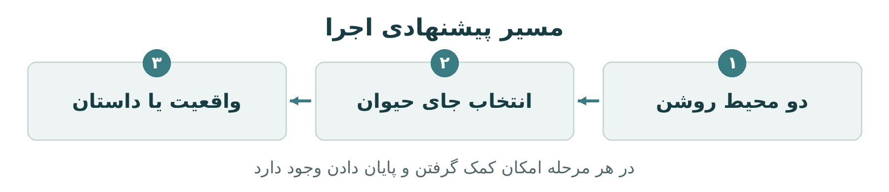
اینفوگرافی اجرای GP02 خواندن از راست به چپ
زمان پیشنهادی حدود ۵ تا ۱۰ دقیقه برای یک نوبت آغازین؛ ادامه یا پایان با توجه به علاقه، خستگی و شرایط واقعی. زمانگیری کودک لازم نیست.
وسایل این نسخه چهار حیوان بزرگ آشنا و دو زمینه واضح آب و خشکی.
پیش از دعوت در دور پایه حیواناتی انتخاب کنید که زیستگاهشان برای این معیار کمابهام باشد؛ مثلاً ماهی و گاو.
جمله آغاز «این ماهی معمولاً کجا زندگی میکند؟»
گام ۱ دو محیط را نشان دهید؛ یک جانور آشنا را با جمله کوتاه در محیط معمولش قرار دهید.
گام ۲ کودک بقیه حیوانات را جابهجا کند. اگر داستان مهمانی ساخت، آن را بپذیرید و دور واقعی را از دور خیالی جدا کنید.
گام ۳ در صورت علاقه کودک معیار تازه یا خانه دیگری پیشنهاد کند؛ دلیلگویی اجباری نیست.
اگر بازی گیر کرد «در داستان تو ماهی مهمان است؛ این دور جای معمول زندگیاش را میچینیم؟»
راه سادهتر دو جانور و دو محیط؛ پاسخ با گذاشتن کافی است.
اگر کودک چالش بیشتری خواست گروه سوم برای جانوران مناسب یا معیار پیشنهادی کودک.
راه دیگر برای مشارکت تصویر محیط با کنتراست روشن، حیوان قابل گرفتن و اشاره به جای انتخابی.
ایمنی همین اجرا حیوان کوچک و مواد واقعی آب یا خاک لازم نیست؛ دانش مبهم جانورشناسی به جواب قطعی تبدیل نشود.
نمونه ثبت فرضی «ماهی را روی زمینه آب گذاشت و گاو را مهمان ماهی نامید.» این فقط توصیف همان رخداد است؛ ثبت، فقط وقتی سؤال یا تصمیم مشخصی دارید.
مشاهده و تصمیم نوبت بعد ببین کودک حیوان را با چه ملاکی به خانه وصل میکند. اگر ملاک روشن نیست، دلیلش را با اشاره یا یک سؤال باز بشنو؛ اگر نام حیوان ناآشناست، دو حیوان آشنا بده. دستهبندی تخیلی را فوراً خطا ننام.
پایان و مرور یک چیدمان مشترک پایان باشد؛ لازم نیست همه حیوانات پاسخ درست داشته باشند.
نسخه پایه
دو یا سه «خانه» تصویری/نمادین و چند حیوان بزرگ و آشنا میگذاریم. معیار باید روشن و کمابهام باشد؛ مثلاً آب/خشکی برای مجموعهای محدود که پاسخهای آموزشی ساده و قابل دفاع دارند. برای سن بالاتر میتوان مزرعه/آب/درخت یا ویژگیهای دیگر را اضافه کرد، اما بازی را آزمون دانش جانورشناسی نمیکنیم.
دعوت: «این ماهی کجا راحتتره؟ این یکی چی؟» اگر کودک حیوان را جای دیگری گذاشت، پیش از اصلاح میپرسیم یا نشان میدهیم چه ویژگی محیط مطرح است. اگر داستان ساخت («ماهی اومده مهمونی خونه گاو»)، داستان را خراب نمیکنیم؛ میتوانیم دور دوم را با «جایی که معمولاً زندگی میکنن» جدا کنیم.
نسخههای سنی GP02
بازه | تطبیق |
|---|---|
۲٫۵–۳ | دو محیط، ۲ تا ۴ حیوان، بدون دلیلگویی اجباری. |
۳–۴ | سه گروه ساده و واژههای «همینجا/جای دیگه/کنار آب...»؛ دلیل کوتاه اختیاری. |
۴–۴٫۵ | کودک میتواند معیار خودش را هم پیشنهاد کند و بعد با معیار بزرگسال مقایسه کند. |
از GP02 چه چیزی نمیتوان فهمید؟
ندانستن محل زندگی یک حیوان یا انتخاب متفاوت، بهتنهایی تأخیر شناختی، ضعف طبقهبندی یا زبان ضعیف نیست؛ ممکن است دانش زمینهای یا برداشت کودک از داستان متفاوت باشد.
پشتوانه و حدود شواهد GP02
بخش | وضعیت |
|---|---|
خانواده | Guided Play = B |
بازی | D |
L0 | کودک اشیای آشنا را با یک معیار معنایی ساده گروهبندی میکند. |
L1 | فرصت استفاده از واژه و استدلال درباره شباهت/تفاوت. |
L2 | ممنوع: «طبقهبندی شناختی را تقویت میکند». |
GP03 — چند جور میشود؟
یک مجموعه، چند معیار: هدف این است که کودک ببیند «همان چیزها» را میشود با قانونهای متفاوت مرتب کرد، بدون اینکه تعداد راهها به نمره انعطاف تبدیل شود.
مولفه | تعریف |
|---|---|
کد | GP03–45–G |
سن هسته | ۴–۵ سال |
سن قابل تطبیق | ۳٫۵–۵٫۵ سال |
هدف اصلی | دیدن چند معیار |
اهداف همراه | انعطاف؛ زبان |
مشاهده اصلی | حل مسئله |
حمایت کمینه | یک سؤال یا تغییر یک ویژگی |
سطح خود بازی | D |
راهنمای دقیق اجرای بازی GP03
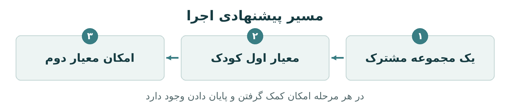
اینفوگرافی اجرای GP03 خواندن از راست به چپ
زمان پیشنهادی حدود ۵ تا ۱۰ دقیقه برای یک نوبت آغازین؛ ادامه یا پایان با توجه به علاقه، خستگی و شرایط واقعی. زمانگیری کودک لازم نیست.
وسایل این نسخه شش شیء بزرگ با دو ویژگی واضح مانند رنگ و اندازه؛ دو زیرانداز.
پیش از دعوت اشیا طوری انتخاب شوند که دستکم دو دستهبندی قابل دیدن داشته باشند.
جمله آغاز «اینها را هرطور میخواهی کنار هم بگذار.»
گام ۱ کودک نخست معیار خودش را بسازد؛ اگر معیار معلوم نیست، درباره آن بهصورت کنجکاوانه سؤال کنید.
گام ۲ وقتی یک دور کامل شد، فقط یک دعوت تازه بدهید: آیا جور دیگری هم میشود؟ پاسخ فوری لازم نیست.
گام ۳ اگر نیاز داشت دو شیء با تفاوت مشخص کنار هم بگذارید؛ سپس چیدمان تازه را به کودک بسپارید و دو آرایش را مرور کنید.
اگر بازی گیر کرد «این دو همرنگاند ولی اندازهشان فرق دارد؛ دوست داری با این فرق کاری کنیم؟»
راه سادهتر چهار شیء و یک ویژگی روشن؛ مدل فقط یک جفت.
اگر کودک چالش بیشتری خواست کودک معیار تازه برای بزرگسال بسازد؛ تعداد معیارها شمرده نشود.
راه دیگر برای مشارکت ویژگی بافت یا شکل بهجای رنگ تنها؛ جابهجایی با کمک دسترسی.
ایمنی همین اجرا اشیای ریز یا خوراکی برای دستهبندی حذف شوند؛ معیار کودک پیش از اصلاح شنیده شود.
نمونه ثبت فرضی «اول بر اساس رنگ چید و بعد دو شیء بزرگ را کنار هم گذاشت.» این فقط توصیف همان رخداد است؛ ثبت، فقط وقتی سؤال یا تصمیم مشخصی دارید.
مشاهده و تصمیم نوبت بعد ببین معیار دستهبندی را حفظ میکند یا معیار تازه میسازد. اگر دو معیار همزمان دشوارند، ابتدا فقط رنگ یا فقط شکل را پیشنهاد کن؛ بعد از تغییر معیار، محل دستهها را با تصویر روشن نگه دار.
پایان و مرور پس از یک تغییر یا حفظ معیار اول پایان دهید؛ اصرار بر تولید راههای بیشتر نباشد.
اجرا
۶ تا ۱۲ شیء با حداقل دو ویژگی قابل مشاهده انتخاب میشوند: مثلاً بزرگ/کوچک و دو رنگ، یا حیوان/وسیله و دو اندازه. کودک اول هر طور دوست دارد گروهبندی میکند. بعد بزرگسال فقط یک چالش میدهد: «یه جور دیگه هم میشه؟»
اگر کودک همان معیار را تکرار کرد، میتوان یک جفت متضاد را کنار هم گذاشت و گفت: «اینا یه فرق دیگه هم دارن.» این نشانه راهنما از توضیح کامل سبکتر است.
از GP03 چه چیزی نمیتوان فهمید؟
پیداکردن یک معیار یا گیرکردن روی معیار اول در یک بازی به معنی انعطاف شناختی پایین، EF ضعیف یا ADHD نیست. GP03 آزمون set-shifting نیست.
پشتوانه و حدود شواهد GP03
بخش | وضعیت |
|---|---|
خانواده | بازی هدایتشده = B؛ meta-analysis برخی تغییر تکلیف outcomes را حمایت کرده. |
بازی | D |
L0 | یک مجموعه با معیارهای متفاوت مرتب میشود. |
L1 | فرصت تجربه تغییر معیار در بازی. |
L2 | ممنوع: «انعطاف شناختی را افزایش/اندازهگیری میکند». |
GP04 — شهر اندازهها
در این بازی هدف بزرگسال روابط فضایی و اندازه است، اما «شهر» باید با تصمیمهای کودک ساخته شود.
مولفه | تعریف |
|---|---|
کد | GP04–56–G |
سن هسته | ۵–۶ سال |
سن قابل تطبیق | ۴–۶ سال |
هدف اصلی | روابط فضایی/اندازه |
اهداف همراه | زبان فضایی؛ ساخت |
مشاهده اصلی | حل مسئله + زبان |
حمایت کمینه | هدف محدود، راه آزاد |
سطح خود بازی | D |
راهنمای دقیق اجرای بازی GP04
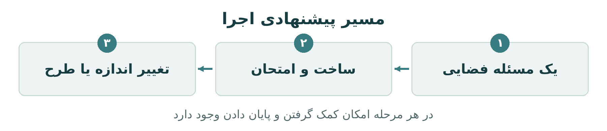
اینفوگرافی اجرای GP04 خواندن از راست به چپ
زمان پیشنهادی حدود ۵ تا ۱۰ دقیقه برای یک نوبت آغازین؛ ادامه یا پایان با توجه به علاقه، خستگی و شرایط واقعی. زمانگیری کودک لازم نیست.
وسایل این نسخه بلوک و جعبه سبک، دو عروسک بزرگ و ماشین بزرگ.
پیش از دعوت یک محدوده ساخت و مسیر جدا برای رفتوآمد افراد مشخص شود.
جمله آغاز «برای این دو عروسک جایی میسازیم که کنار هم جا شوند؟»
گام ۱ مسئله درون شهر را با خود اشیا نشان دهید؛ خانه مشترک یا تونل مناسب ماشین انتخاب شود.
گام ۲ کودک بسازد و با عروسک یا ماشین جا و عبور را امتحان کند؛ بزرگسال تنها واژه فضایی مرتبط را در عمل مدل کند.
گام ۳ اگر جا نشد، همان نقطه را توصیف کنید و منتظر تغییر اندازه یا طرح بمانید؛ راهحل واحد ارائه نکنید.
اگر بازی گیر کرد «ماشین به سقف میخورد؛ دوست داری سقف را عوض کنی یا راه دیگری بسازی؟»
راه سادهتر یک خانه برای یک شخصیت؛ دو تکیهگاه و یک سقف سبک.
اگر کودک چالش بیشتری خواست یک محدودیت تازه مثل جای دو شخصیت؛ محدودیتها همزمان اضافه نشوند.
راه دیگر برای مشارکت ساخت روی سطح در دسترس؛ بزرگسال آزمون عبور را طبق تصمیم کودک انجام دهد.
ایمنی همین اجرا سازه کمارتفاع و سبک؛ هیچ شیء سنگین روی پایه ناپایدار و هیچ بالا رفتن روی شهر نباشد.
نمونه ثبت فرضی «ماشین را امتحان کرد، سقف را برداشت و دو بلوک بلندتر گذاشت.» این فقط توصیف همان رخداد است؛ ثبت، فقط وقتی سؤال یا تصمیم مشخصی دارید.
مشاهده و تصمیم نوبت بعد ببین کودک اندازهها را با کنارهمگذاشتن، آزمودن یا گفتن مقایسه میکند. اگر واژهها دشوارند، مقایسه دو شیء کافی است؛ اگر چالش خواست، اندازه سوم اضافه کن و تعداد و فاصله را همزمان تغییر نده.
پایان و مرور یک طرح قابل استفاده یا تصمیم برای توقف، پایان بازی است؛ زیبایی شهر ارزیابی نشود.
اجرا
بلوکها، جعبهها و ماشین/آدمکهای بزرگ و ایمن در دسترساند. بزرگسال یک مسئله درون شهر میگذارد: «این کامیون باید از شهر رد بشه، ولی این تونل کوتاهه. چه کار کنیم؟» یا «یه خانه میخوایم که این دو عروسک کنار هم جا بشن.»
واژههای فضایی مثل زیر/بالا/کنار/بین/نزدیک/دور یا بزرگتر/کوچکتر را میتوان در متن بازی مدل کرد. اگر کودک راه دیگری برای شهر پیدا کرد، هدف میتواند با همان طرح ادامه پیدا کند.
ایمنی GP04
سازهها در ارتفاعی ساخته شوند که سقوطشان خطر نداشته باشد.
از قرار دادن اشیای سنگین روی سازههای ناپایدار پرهیز شود.
مسیر عبور کودک از مسیر سازه جدا بماند تا زمینخوردن ایجاد نشود.
از GP04 چه چیزی نمیتوان فهمید؟
اشتباه در واژه فضایی یا ساخت نامتناسب در یک نوبت بازی، اختلال ادراک فضایی، مشکل یادگیری یا ضعف هوش را نشان نمیدهد.
پشتوانه و حدود شواهد GP04
بخش | وضعیت |
|---|---|
خانواده | بازی هدایتشده = B؛ meta-analysis برای shape knowledge/spatial vocabulary در برخی مقایسهها مزیت یافته. |
بازی | D |
L0 | مسئله ساخت، اندازه و رابطه فضایی را وارد بازی میکند. |
L1 | فرصت استفاده از واژگان فضایی و مقایسه اندازه. |
L2 | ممنوع: «توان فضایی را افزایش/سنجش میکند». |
GP05 — مسیر اسرارآمیز
این بازی سرنخ فضایی را با حرکت و یادسپاری کوتاه ترکیب میکند؛ اما نباید به آزمون حافظه یا مسابقه «گم نشدن» تبدیل شود.
مولفه | تعریف |
|---|---|
کد | GP05–45–G |
سن هسته | ۴–۵ سال |
سن قابل تطبیق | ۴–۶ سال |
هدف اصلی | جهتیابی فضایی |
اهداف همراه | حافظه کاری؛ زبان |
مشاهده اصلی | توجه + حل مسئله |
حمایت کمینه | سرنخ کوچک / کوتاهکردن مسیر |
سطح خود بازی | D |
راهنمای دقیق اجرای بازی GP05
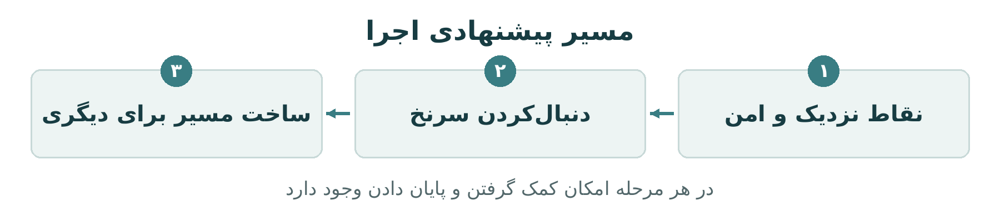
اینفوگرافی اجرای GP05 خواندن از راست به چپ
زمان پیشنهادی حدود ۵ تا ۱۰ دقیقه برای یک نوبت آغازین؛ ادامه یا پایان با توجه به علاقه، خستگی و شرایط واقعی. زمانگیری کودک لازم نیست.
وسایل این نسخه سه نشانه بزرگ برای نقاط مشخص و یک شیء مقصد بزرگ.
پیش از دعوت نقاط نزدیک و در دید بزرگسال باشند؛ در، پله و محل خطر خارج از مسیر.
جمله آغاز «از کنار این نشانه برو و پشت آن جعبه را نگاه کن.»
گام ۱ دو نقطه مسیر را با اشاره نشان دهید؛ کودک پیش از شروع فرصت دیدن داشته باشد.
گام ۲ یک سرنخ کوتاه بدهید و کودک مسیر را پیدا کند؛ اگر گم شد، به نشانه بعد اشاره کنید یا مسیر را کوتاهتر کنید.
گام ۳ کودک در صورت علاقه برای بزرگسال مسیر بسازد؛ سرنخها به زبان یا تصویر دلخواه او باشند.
اگر بازی گیر کرد «میخواهی دوباره به نشانه نگاه کنیم یا فقط قدم بعد را بگویم؟»
راه سادهتر دو نقطه و یک سرنخ؛ مسافت کوتاه.
اگر کودک چالش بیشتری خواست یک نقطه یا یک سرنخ اضافه؛ سرعت و زمانگیری افزایش نیابد.
راه دیگر برای مشارکت مسیر روی میز یا تصویر؛ گزینههای واقعی با وسیله حرکت کودک قابل دسترس باشند.
ایمنی همین اجرا چشمبند، مکان خارج از دید، خیابان، آب و سطح لغزنده حذف شوند.
نمونه ثبت فرضی «بعد از اشاره به جعبه مسیر را ادامه داد و مقصد را پیدا کرد.» این فقط توصیف همان رخداد است؛ ثبت، فقط وقتی سؤال یا تصمیم مشخصی دارید.
مشاهده و تصمیم نوبت بعد ببین کودک نشانه مسیر را چگونه پیدا و استفاده میکند. اگر جهت کلامی مبهم است، به یک نشانه نزدیک اشاره کن؛ اگر مسیر را عوض کرد، اول ایمنی و مقصد را ببین. انتخاب مسیر متفاوت الزاماً خطای جهتیابی نیست.
پایان و مرور با رسیدن، تغییر مسیر یا درخواست توقف پایان دهید؛ گمشدن نمره حافظه نیست.
نسخه پایه
در اتاق یا حیاط امن، ۳ نقطه مشخص میسازیم. بزرگسال در نقش راهنما میگوید: «از کنار صندلی برو، بعد پشت جعبه رو نگاه کن.» در دور بعد میتواند یک سرنخ دیگر اضافه کند یا از کودک بخواهد خودش برای بزرگسال مسیر بسازد.
اگر کودک مسیر را گم کرد، اول سرنخ محیطی یا اشاره بده؛ لازم نیست دستور کامل از اول تکرار شود. اگر مسیر واقعاً طولانی است، کوتاهش کن. هدف پیدا کردن سطح چالش مناسب است.
ایمنی GP05
بدون چشمبند.
بدون پله، خیابان، در خروجی، آب یا نقاط خارج از دید بزرگسال.
مسیر عاری از لغزش، برخورد و اشیای تیز باشد.
در کودک با محدودیت حرکتی، مسیر روی میز/تصویر یا با وسیله حرکتی خودش قابل تطبیق است.
از GP05 چه چیزی نمیتوان فهمید؟
گمشدن، فراموشکردن یک سرنخ یا درخواست تکرار در یک بازی، ضعف حافظه کاری، ADHD، مشکل توجه یا جهتیابی را ثابت نمیکند.
پشتوانه و حدود شواهد GP05
بخش | وضعیت |
|---|---|
خانواده | Guided Play = B |
بازی | D |
L0 | کودک از سرنخهای فضایی کوتاه برای حرکت در مسیر استفاده میکند. |
L1 | فرصت تمرین زبان فضایی و نگهداشتن یک/دو سرنخ در عمل. |
L2 | ممنوع: «حافظه کاری/توجه/جهتیابی را بهبود یا اندازهگیری میکند». |
علم چه میگوید؟
آنچه نسبتاً میدانیم
فراتحلیل ۲۰۲۲ نشان داد بازی هدایتشده در برخی پیامدهای مشخص نسبت به آموزش مستقیم یا free play مزیت دارد، اما این الگو برای همه حوزهها دیده نشد.
مطالعات بازی هدایتشده از نظر تعریف، نوع هدایت، هدف آموزشی و گروه مقایسه ناهمگوناند؛ به همین دلیل نتیجه «همیشه بهتر» پشتیبانی نمیشود.
NAEYC توصیه میکند بازی با هدایت خود کودک، بازی هدایتشده و آموزش مستقیم در کنار هم بهکار روند و عاملیت کودک حتی در فعالیتهای هدفمند حفظ شود.
راهنماهای Head Start و NAEYC مفاهیم ریاضی اولیه مثل شمارش، طبقهبندی، اندازه و زبان فضایی را مناسب بافتهای بازی و تعامل روزمره میدانند؛ این پشتوانه برای طراحی محتواست، نه اثبات اثر پنج بازی کتاب.
آنچه نمیتوانیم بگوییم
بازی هدایتشده همیشه از آموزش مستقیم بهتر است.
هرچه بزرگسال سؤال بیشتری بپرسد، یادگیری بیشتر میشود.
همه بازیهای بازی هدایتشده به یک اندازه اثر دارند.
GP01 ریاضی، GP03 انعطاف، GP04 توان فضایی یا GP05 حافظه کاری را «تقویت» میکنند.
اشتباه کودک در این بازیها نشانه هوش پایین، اختلال یادگیری، ADHD یا تأخیر شناختی است.
در خانه چه میتوان کرد
هدف را برای خودتان روشن کنید و ببینید چگونه میتواند در داستان بازی جا بگیرد.
یک پیشنهاد بدهید، سپس عمل کودک را دنبال کنید.
اگر بازی راه مناسبی یافته، برای سؤال بعدی عجله نکنید.
اگر اطلاعاتی لازم است، مستقیم و کوتاه آموزش بدهید؛ آموزش مستقیم ممنوع نیست.
اشتباه را چند ثانیه نگه دارید؛ اگر ایمن است، فوراً اصلاح نکنید.
در مهد یا کارگاه
بهجای فهرست بلند سؤالها، هدف، انتخابهای کودک و یک سرنخ اولیه را مشخص کنید. اگر بزرگسال همهٔ پاسخها و قدمها را تعیین میکند، شکل واقعی فعالیت را بازبینی کنید.
برای مشاهده نیز حداکثر یک یا دو حوزه انتخاب کنید. بازی نباید همزمان هم آموزش، هم آزمون و هم فرم ارزیابی باشد.
یک تجربه برای این هفته
یکی از پرسشهای پیدرپی خود را به تغییر کوچک محیط تبدیل کنید.
مثلاً یک جای خالی یا وسیلهٔ لازم. سپس ببینید کودک چگونه متوجه آن میشود و چه راهی پیشنهاد میکند.
همراهی در موقعیتهای روزمره
نقش بزرگسال در بازی، حذف شدن نیست؛ بلکه حضور آگاهانه بدون گرفتن فرمان بازی است.
سه سطح حمایت:
۱. آماده کردن محیط
۲. پاسخ دادن به دعوت کودک
۳. پیشنهاد کوچک در زمان مناسب
نشانه تصاحب بازی: وقتی مسیر، داستان و نتیجه بیشتر متعلق به بزرگسال میشود تا کودک.
تمرین: در یک بازی، فقط یک پیشنهاد بدهید و اجازه دهید ادامه مسیر توسط کودک ساخته شود.
هدف آموزشی را قابل دیدن کنیم
اگر هدف شما تجربه اندازه است، از کودک نپرسید «کدوم بزرگتره؟» تا پاسخ را بسنجد. میتوانید دو ظرف مناسب پیشنهاد دهید و بگویید «برای این قطعه جا میخوایم». کودک انتخاب میکند، امتحان میکند و مسیرش را ادامه میدهد. نقش شما ایجاد فرصت مواجهه با اندازه است.
دعوت و مالکیت بازی
پس از یک پیشنهاد، به کودک فرصت بدهید آن را بپذیرد، تغییر دهد یا رد کند. اگر بیعلاقه بود، ابتدا هدف یا مواد را بازبینی کنید. این هفته تعداد پیشنهادهای خود را کمتر کنید و ببینید کدام پیشنهاد واقعاً به ادامه بازی مربوط بود. سکوت بزرگسال نیز وقتی همراه با توجه است میتواند جا برای ابتکار کودک باز کند.
پایان فصل
این هفته... | پیشنهاد |
|---|---|
بیشتر ببین | هدایت من بعد از شروع کودک کمتر میشود یا بیشتر؟ |
کمتر انجام بده | پرسشهای پشتسرهم با پاسخ از قبل معلوم. |
امتحان کن | یک هدف آموزشی + یک ماده/سرنخ + فضای واقعی برای انتخاب. |
از خودت بپرس | اگر کودک مسیر متفاوتی رفت، آیا هدف را با او تطبیق میدهم یا بازی را پس میگیرم؟ |
هدایت را از روی تعداد حرفهای بزرگسال نمیسنجیم. به فرصتی نگاه میکنیم که برای دیدن، انتخابکردن و آزمودن در اختیار کودک قرار گرفته است.
فصل بعد وارد جهان وانمودی میشویم: «جهان وانمودی کودک» با PR01 تا PR05؛ جایی که نقش، داستان و رابطه نباید به رمزگشایی روانشناختی تبدیل شوند.
منابع منتخب فصل
Skene K, O’Farrelly C, Byrne EM, Kirby N, Stevens EC, Ramchandani PG. Can guidance during play enhance children’s learning and development in educational contexts? Child Development. 2022;93(4):1162–1180. https://doi.org/10.1111/cdev.13730.
NAEYC. Developmentally Appropriate Practice: Teaching to Enhance Each Child’s Development and Learning. Current position statement.
Zosh JM, Gaudreau C, Golinkoff RM, Hirsh-Pasek K. The Power of Playful Learning in the Early Childhood Setting. Young Children. 2022.
Lugo-Gil J, Dang M. Play as a Teaching Strategy for Children in Pre-Kindergarten to Grade 3: Findings from the Evidence Review. REL Mid-Atlantic / IES. 2020.
Head Start. Early Learning Outcomes Framework: Ages Birth to Five; and Preschool Cognition: Supporting Early Math. Current resources.
یادداشت روششناختی: بازی هدایتشده در طراحی کتاب سطح B است. تعریف اجرایی سهجزئی فصل («هدف آموزشی روشن + عاملیت معنیدار + هدایت انعطافپذیر») ابزار طراحی کتاب است و بهعنوان معیار اعتبارسنجیشده معرفی نمیشود. GP01 تا GP05 سطح D هستند.
فصل ۱۳ جهان وانمودی کودک
در این فصل چه میخوانیم؟
در بازی وانمودی، یک جمله میتواند راهی به داستان باز کند؛ برای دانستن علت آن جمله، هنوز باید احتیاط کنیم.
«پس این یعنی از دکتر میترسه؟»
کودک عروسک را روی بالش میخواباند: «آمپول نمیزنیم.» پارچهای روی دستش میگذارد و نقش پزشک را ادامه میدهد. بزرگسال یاد تجربهٔ قبلی کودک میافتد. بااینحال، بازی میتواند از تجربه، داستان، حرف دیگری یا خیال همین لحظه شکل گرفته باشد.
بهجای پرسوجو دربارهٔ علت پنهان، میتوانیم در نقش بمانیم: «برای این مریض چه چیزی لازم داریم؟» کودک شاید وسیلهای بیاورد یا بخواهد ما منتظر بمانیم. پاسخ او را به مسیر داستان اضافه میکنیم، بدون اینکه از آن نتیجهای قطعی دربارهٔ زندگی واقعیاش بگیریم.
برای همراهی، ابتدا نقشها و قواعدی را که کودک ساخته بشناسید. وقتی اجازهٔ ورود میدهد، یک سهم کوچک بگیرید. تغییر داستان، سکوت یا تکرار یک نقش هم میتواند جزئی از بازی باشد؛ کودک مجبور نیست آن را برای بزرگسال توضیح بدهد.
پرسش این فصل
چگونه در داستان کودک همراه شویم و برای نقشها و تغییرهای انتخابی او جا بگذاریم؟
بازی وانمودی دقیقاً چیست؟
بازی وانمودی یا بازی وانمودی زمانی رخ میدهد که کودک با یک «انگار» مشترک بازی میکند: یک شیء میتواند چیز دیگری باشد، به شیء خاصیتی خیالی داده شود، کودک نقشی را اجرا کند یا با دیگری درباره قوانین جهان خیالی هماهنگ شود.
متاآنالیز ۲۰۲۴ درباره بازی وانمودی و شایستگی اجتماعی، بر پایه ادبیات سنجش بازی وانمودی، پنج عنصر رایج را جمعبندی میکند: جایگزینی شیء، نسبتدادن ویژگی وانمودی، تعامل اجتماعی در بازی، اجرای نقش و meta-communication یا گفتوگو درباره خود بازی؛ مثلاً «تو دکتری، من بیمارم» یا «الان وانمود میکنیم قطار رفته».
همه این عناصر لازم نیست همزمان یا در هر سن ظاهر شوند. بازی یک کودک میتواند سادهتر، کوتاهتر، انفرادیتر یا مبتنی بر تقلید باشد.
وانمود کردن با دروغ گفتن یکی نیست
در وانمودبازی، دستکم در سطح بازی، یک چارچوب «انگار» وجود دارد. کودک و همبازی میتوانند بفهمند که فنجان خالی واقعاً چای ندارد یا جعبه واقعاً اتوبوس نیست. هدف بازی فریبدادن دیگری درباره واقعیت نیست.
این تمایز برای بزرگسال مهم است؛ چون نباید خیالپردازی در بازی را به «دروغگویی» یا مشکل در تشخیص واقعیت تقلیل داد.
بازی نمادین؛ رابطه دارد، اما رابطه علّی را بزرگ نکنیم
پژوهشهای زیادی بازی وانمودی را با زبان، کارکرد اجرایی و مهارتهای اجتماعی مرتبط دانستهاند. اما ارتباط آماری با «این بازی باعث رشد آن مهارت میشود» متفاوت است.
متاآنالیز ۲۰۲۴ روی ۳۴ مطالعه کودکان ۳ تا ۸ سال، یک رابطه مثبت اما کوچک میان بازی وانمودی و شایستگی اجتماعی یافت. بیشتر مطالعات مقطعی بودند و نویسندگان صریحاً نتیجهگیری علّی را ناموجه دانستند.
این مرز با شواهد جدیدتر محکمتر شده است: یک مطالعه مداخلهای منتشرشده در ۲۰۲۶، ۳۳۳ کودک ۳ تا ۷ ساله را در یک برنامه ۸هفتهای بررسی کرد و اثر معناداری از مداخله بازی وانمودی بر social-cognitive skills یا رفتار اجتماعی–هیجانی پیدا نکرد.
در سوی دیگر، متاآنالیز ۲۰۲۶ درباره بازی وانمودی و executive functions، ۲۶ مطالعه و ۲۹۱۵ کودک ۱۲ تا ۷۲ ماهه را تجمیع کرد و رابطهای کوچک یافت؛ اما آن تحلیل نیز علیت را نشان نمیدهد.
متاآنالیز زبان و symbolic play نیز رابطهای میان این دو حوزه گزارش کرده است؛ ولی رابطه میتواند دوطرفه یا ناشی از سازوکارهای مشترک باشد. نتیجه سیاست علمی این فصل روشن است: بازی وانمودی محیطی غنی برای استفاده از زبان، نقش و مذاکره است؛ خودِ بازیهای PR01 تا PR05 مداخله اثباتشده برای افزایش این مهارتها نیستند.
پس چرا بازی وانمودی در کتاب جا دارد؟
بهجای ادعای اثر | چیزی که واقعاً میتوانیم طراحی/مشاهده کنیم |
|---|---|
«همدلی را افزایش میدهد» | کودک ممکن است در نقش دیگری حرف بزند، به واکنش شخصیت پاسخ دهد یا نقش را عوض کند. |
«زبان را تقویت میکند» | بازی میتواند نیاز واقعی برای درخواست، توضیح، مذاکره و روایت ایجاد کند. |
«مهارت اجتماعی را بالا میبرد» | کودکان ممکن است نقش، قانون، نوبت و تعارض بازی را با هم هماهنگ کنند. |
«EF را تقویت میکند» | کودک ممکن است قواعد نقش را نگه دارد، طرح را تغییر دهد یا بین واقعیت و سناریوی خیالی جابهجا شود. |
بازی خوب لازم نیست «واقعگرایانه» باشد
رستوران میتواند پیتزا با برگ درخت بفروشد، قطار میتواند پرواز کند و دکتر میتواند برای عروسک آواز تجویز کند. اگر هدف ایمنی یا یک مفهوم آموزشی مشخص نیست، اصلاح واقعیت معمولاً ضرورتی ندارد.
در بازی وانمودی، انعطاف جهان خیالی بخشی از تجربه است. بزرگسال لازم نیست کودک را به اجرای دقیق نسخه بزرگسالان از «دکتر»، «مهمان»، «پدر/مادر» یا «مکانیک» وادار کند.
نقشها را به جنسیت یا شکل خانواده محدود نکن
پسر میتواند مادرِ عروسک باشد، دختر میتواند تعمیرکار یا راننده قطار باشد، کودک میتواند نقش حیوان، ربات یا هیچ نقش خانوادگی مشخصی را انتخاب کند. نقش انتخابی در بازی درباره هویت، کیفیت خانواده یا گرایشهای آینده کودک حکم نمیدهد.
ایرانیسازی این فصل نیز یعنی سناریوها بتوانند با خانوادههای مختلف، زبانهای مختلف، آپارتمان، مهد، فرهنگ مهمانی و تجربههای واقعی کودک سازگار شوند؛ نه اینکه یک خانواده یا تقسیم نقش واحد بهعنوان «طبیعی» معرفی شود.
گفتوگو دربارهٔ خود بازی
یکی از ویژگیهای جالب بازی اجتماعی این است که کودکان میتوانند لحظهای از نقش بیرون بیایند تا درباره خود بازی مذاکره کنند: «نه، اول تو مسافری، بعد من راننده میشم.» این گفتوگو درباره بازی بخشی از خود بازی است.
اما اختلاف در نقش یا قانون الزاماً مشکل اجتماعی نیست. بسیاری از تعارضها بخشی از تلاش کودکان برای هماهنگکردن دو تخیل متفاوتاند.
نقش بزرگسال: بازیگر مهمان، نه کارگردان دائمی
مداخله تصاحبگر | نسخه پاسخگوتر |
|---|---|
«نه، دکتر باید اول معاینه کنه.» | اگر مسئله ایمنی نیست، نقش کودک را دنبال کن. |
«بگو سلام، بگو ممنون، حالا غذاتو سفارش بده.» | در نقش خودت طبیعی حرف بزن و اجازه بده کودک پاسخ خودش را بسازد. |
«چرا عروسک مرد؟ کی مرده؟» | موضوع سنگین را فوراً به زندگی واقعی وصل نکن؛ در بازی بمان مگر کودک خودش بیرون بازی درباره آن حرف بزند. |
«تو همیشه راننده باش.» | نقشها میتوانند عوض شوند؛ کودک حق رد یا خروج دارد. |
سن چه چیزی را تغییر میدهد؟
جدول زیر مسیر طراحی داخلی فصل است؛ هنجار یا ابزار تشخیص نیست.
بازه | طراحی مناسبتر |
|---|---|
حدود ۲٫۵–۳ | نقش کوتاه و آشنا؛ یک یا دو کنش وانمودی؛ عروسک/شیء بزرگ؛ تقلید و مراقبت ساده. |
۳–۴ | نقشهای مشترک کوتاه، جابهجایی نقش، موقعیتهای آشنا مثل رستوران یا مهمانی، زبان ساده. |
۴–۵ | سناریوی چندمرحلهایتر، نقشهای مرتبط، برنامه ساده و مذاکره بیشتر. |
۵–۶ | مشکل مشترک، تقسیم نقش، بازطراحی سناریو و هماهنگی پیچیدهتر؛ بدون انتظار اجرای نمایشی «بالغ». |
ایمنی و مرز واقعیت
موضوع | قاعده فصل ۱۳ |
|---|---|
درمانگاه | هیچ داروی واقعی، سرنگ واقعی، تیغ، دماسنج شیشهای یا وسیله پزشکی خطرناک وارد بازی نمیشود. |
رستوران | غذاهای واقعی فقط با رعایت آلرژی/خفگی؛ نسخه پایه میتواند کاملاً با ابزار وانمودی باشد. |
قطار | بازی نزدیک خیابان، پله یا وسایل نقلیه واقعی انجام نمیشود؛ صندلی/نوار زمینی کافی است. |
مهمانی | بوسیدن، بغلکردن، سلامکردن یا اجرای نقش خاص اجباری نیست؛ حق فاصله حفظ میشود. |
تعمیرگاه | ابزار تیز، برقی، باتری، پیچ/مهره کوچک و مواد شیمیایی واقعی حذف میشوند. |
لباس نقش | بند بلند، ماسک محدودکننده دید/تنفس، کفش ناپایدار و لباس گیرکننده حذف میشوند. |
♥ PR01 — درمانگاه عروسکها
درمانگاه عروسکها یک موقعیت ساده برای نقشآفرینی مراقبتی و گفتوگوی مشترک است؛ نه آزمون ترس پزشکی، همدلی یا سلامت هیجانی.
مولفه | تعریف |
|---|---|
کد | PR01–23–R ♥ |
سن هسته | ۲٫۵ تا ۳ سال |
سن قابل تطبیق | حدود ۲٫۵ تا ۶ سال |
هدف اصلی | نقشآفرینی |
اهداف همراه | زبان؛ مراقبت |
مشاهده اصلی | رابطه اجتماعی + زبان |
هدایت | ورود بزرگسال فقط در صورت نیاز/دعوت |
رابطه | ♥ کیفیت همراهی مقدم بر ثبت |
سطح خود بازی | D |
راهنمای دقیق اجرای بازی PR01
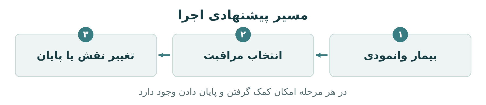
اینفوگرافی اجرای PR01 خواندن از راست به چپ
زمان پیشنهادی حدود ۵ تا ۱۵ دقیقه برای یک نوبت آغازین؛ ادامه یا پایان با توجه به علاقه، خستگی و شرایط واقعی. زمانگیری کودک لازم نیست.
وسایل این نسخه خرس نرم، پارچه کوتاه و گوشی پزشکی اسباببازی بزرگ؛ ظرف خالی.
پیش از دعوت درمانگاه فقط با ابزار وانمودی آماده شود؛ دارو و ابزار پزشکی واقعی حذف شوند.
جمله آغاز «این خرس کمک میخواهد؛ تو فکر میکنی چه لازم دارد؟»
گام ۱ کودک یک کنش مراقبتی یا نقش انتخاب کند؛ خواب، پتو یا آب خیالی همه معتبرند.
گام ۲ بزرگسال در نقش بیمار یا همراه، با جمله کوتاه پاسخ دهد؛ اجازه معاینه در داستان نیز پرسیده شود.
گام ۳ کودک میتواند نقش را عوض کند، بیمار دیگری بیاورد یا درمانگاه را ببندد؛ مراحل پزشکی واقعی آموزش داده نشوند.
اگر بازی گیر کرد «میخواهی اول پتو بدهیم یا خرس فقط استراحت کند؟»
راه سادهتر یک بیمار و یک کنش؛ ابزار اضافه حذف شود.
اگر کودک چالش بیشتری خواست دو نقش مکمل یا محل پذیرش با تصمیم کودک.
راه دیگر برای مشارکت کارت انتخاب مراقبت، نقش تماشاگر یا هدایت دست بزرگسال با اشاره.
ایمنی همین اجرا قرص، سرنگ، سوزن، سیم بلند و بستن بدن کودک وارد بازی نشوند.
نمونه ثبت فرضی «خرس را خواباند و گفت امروز معاینه نمیکنیم.» این فقط توصیف همان رخداد است؛ ثبت، فقط وقتی سؤال یا تصمیم مشخصی دارید.
مشاهده و تصمیم نوبت بعد ببین کودک کدام نقش یا وسیله را میپذیرد. اگر معاینه را نمیخواهد، نقش پذیرش یا مراقبت از عروسک پیشنهاد کن؛ اگر روایتش متفاوت است، آن را دنبال کن. تجربه پزشکی واقعی را برای بازگویی به او تحمیل نکن.
پایان و مرور مخالفت با نقش پذیرفته شود؛ از داستان درباره تجربه پزشکی واقعی بازجویی نکنید.
مواد و دعوت
عروسک یا حیوان پارچهای، پارچه کوچک، چسب زخم اسباببازی/کاغذی، قاشق یا گوشی پزشکی اسباببازیِ ایمن.
هیچ داروی واقعی، قرص، سرنگ، سوزن یا وسیله پزشکی واقعی استفاده نمیشود.
دعوت: «فکر کنم این خرس یه جاش اذیت شده؛ دوست داری ببینی چی لازم داره؟»
نقش بزرگسال
اگر کودک گفت عروسک نیاز به خواب دارد، لازم نیست معاینه پزشکی کامل بسازیم. اگر گفت «آمپول نمیزنیم»، درون نقش میتوان گفت «باشه، این درمانگاه امروز آمپول نداره.» از بازی برای بازجویی تجربه پزشکی کودک استفاده نکن.
نسخههای سنی
بازه | تطبیق |
|---|---|
۲٫۵–۳ | یک کنش مراقبتی: پتو، آب خیالی، چسب، خواباندن. |
۳–۴ | پزشک/بیمار کوتاه و جابهجایی نقش. |
۴–۵ | چند بیمار یا مراحل ساده؛ کودک تصمیم میگیرد درمانگاه چگونه کار کند. |
۵–۶ | تقسیم نقش، پذیرش/پزشک/مراقب و مشکل مشترک؛ بدون تدریس پزشکی رسمی. |
از PR01 چه چیزی نمیتوان فهمید؟
محتوای درمانگاه، امتناع از آمپول، مراقبت زیاد یا بیتفاوتی عروسک درباره ترس پزشکی، همدلی، اضطراب، تروما، دلبستگی یا سلامت روان کودک تشخیص نمیدهد.
پشتوانه و حدود شواهد PR01
بخش | وضعیت |
|---|---|
خانواده | Pretend / Role Play |
سطح خانواده برای پیامدهای گسترده | C |
خود بازی | D |
L0 | موقعیت نقشآفرینی مراقبتی و زبان درون بازی ایجاد میکند. |
L1 | میتواند فرصت درخواست، پاسخ و جابهجایی نقش فراهم کند. |
L2/L3 | ممنوع: افزایش همدلی/کاهش ترس؛ تشخیص اضطراب یا تروما. |
♥ PR02 — رستوران کوچک
رستوران کوچک برای ساختن یک تعامل مشترک طراحی شده، نه برای سنجش ادب، مهارت اجتماعی یا فرمانپذیری.
مولفه | تعریف |
|---|---|
کد | PR02–34–R ♥ |
سن هسته | ۳ تا ۴ سال |
سن قابل تطبیق | حدود ۲٫۵ تا ۶ سال |
هدف اصلی | تعامل اجتماعی |
اهداف همراه | توالی؛ زبان |
مشاهده اصلی | اجتماع + استقلال |
هدایت | سؤال نقش کوتاه |
رابطه | ♥ |
سطح | D |
راهنمای دقیق اجرای بازی PR02
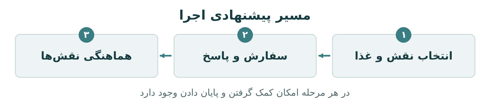
اینفوگرافی اجرای PR02 خواندن از راست به چپ
زمان پیشنهادی حدود ۵ تا ۱۵ دقیقه برای یک نوبت آغازین؛ ادامه یا پایان با توجه به علاقه، خستگی و شرایط واقعی. زمانگیری کودک لازم نیست.
وسایل این نسخه چند ظرف نشکن و خوراکی وانمودی بزرگ؛ دو جای نشستن.
پیش از دعوت محل آشپز و مشتری مشخص اما قابل تغییر باشد؛ منو الزام ندارد.
جمله آغاز «سلام؛ امروز رستوران شما چه دارد؟»
گام ۱ کودک نقش و غذای خیالی را انتخاب کند؛ بزرگسال مشتری یا همکار شود.
گام ۲ سفارش کوتاه دریافت و آماده شود؛ نوبتها در نقش دنبال شوند و روایت غیرعادی پذیرفته شود.
گام ۳ در اختلاف نقش فقط مسئله را بیان کنید و گزینهای مثل دو آشپز یا جابهجایی نقش پیشنهاد دهید؛ پایان رستوران به انتخاب گروه باشد.
اگر بازی گیر کرد «دو نفر آشپز میخواهند باشند؛ دوست دارید با هم کار کنید یا نقشها را عوض کنیم؟»
راه سادهتر یک مشتری و یک ظرف؛ سفارش تکمرحلهای.
اگر کودک چالش بیشتری خواست دو سفارش یا نقش پیک و آشپز؛ بدون اجبار به تقسیم نقش برابر.
راه دیگر برای مشارکت منوی تصویری، اشاره به غذا یا نقش غیرکلامی تحویل ظرف.
ایمنی همین اجرا مایع داغ، غذا با خطر خفگی و ظروف شکستنی وارد وانمودبازی نشوند.
نمونه ثبت فرضی «با اشاره سوپ پیشنهاد داد و ظرف را به مشتری خیالی رساند.» این فقط توصیف همان رخداد است؛ ثبت، فقط وقتی سؤال یا تصمیم مشخصی دارید.
مشاهده و تصمیم نوبت بعد ببین کودک چگونه سفارش را میدهد، دریافت میکند یا تغییر میدهد. اگر رفتوبرگشت نقش سخت است، یک سفارش و دو نقش ثابت نگه دار؛ اگر نقش تازه ساخت، گفتوگو را با همان نقش ادامه بده.
پایان و مرور فروش و خدمتکردن اجباری نیست؛ با آخرین سفارش یا تعطیلی انتخابی تمام کنید.
اجرا
چند ظرف و خوراکی وانمودی یا مواد بزرگ و ایمن بگذار. بزرگسال میتواند مشتری باشد: «سلام، امروز چی دارید؟» اگر کودک قوانین عجیب ساخت—مثلاً سوپ آبی فقط برای رباتها—آن را در جهان بازی میپذیریم.
اختلاف میان دو کودک درباره اینکه چه کسی آشپز است، بهتنهایی «مهارت اجتماعی پایین» نیست. اگر بازی گیر کرد، مداخله کمینه میتواند این باشد: «دو نفر یک نقش رو میخوان؛ چه پیشنهادی دارید؟»
از PR02 چه چیزی نمیتوان فهمید؟
سلامنکردن، نوبتنگرفتن فوری، اختلاف نقش یا نخواستن خدمتکردن به دیگری بهتنهایی درباره ادب، همکاری، خودمحوری یا مشکل اجتماعی کودک حکم نمیدهد.
پشتوانه و حدود شواهد PR02
بخش | وضعیت |
|---|---|
خانواده | Social pretend play |
سطح | C / بازی D |
L0 | موقعیت واقعینما برای نقش، درخواست و پاسخ مشترک. |
L1 | فرصت مذاکره درباره نقش و توالی در بازی. |
L2 | ممنوع: «مهارت اجتماعی/زبان را افزایش میدهد». |
PR03 — سفر با قطار
اینجا نقشها باید با یک طرح مشترک کنار هم قرار بگیرند: راننده، مسافر، بلیت، ایستگاه یا حتی قطاری که طبق قوانین کودک زیر دریا میرود.
مولفه | تعریف |
|---|---|
کد | PR03–45–R |
سن هسته | ۴ تا ۵ سال |
سن قابل تطبیق | ۳٫۵ تا ۶ سال |
هدف اصلی | برنامهریزی اجتماعی |
اهداف همراه | زبان؛ نوبت |
مشاهده اصلی | اجتماع + حل مسئله |
هدایت | سرنخ موقعیتی در صورت گیرکردن |
سطح | D |
راهنمای دقیق اجرای بازی PR03
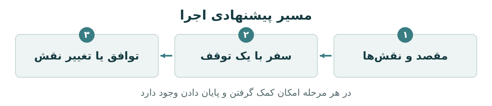
اینفوگرافی اجرای PR03 خواندن از راست به چپ
زمان پیشنهادی حدود ۵ تا ۱۵ دقیقه برای یک نوبت آغازین؛ ادامه یا پایان با توجه به علاقه، خستگی و شرایط واقعی. زمانگیری کودک لازم نیست.
وسایل این نسخه نشانههای ایستگاه روی زمین، بلیتهای مقوایی بزرگ و دو یا سه صندلی ثابت اختیاری.
پیش از دعوت قطار میتواند با خط روی زمین ساخته شود؛ مسیر عبور و خروج آزاد باشد.
جمله آغاز «قطار شما کجا میرود و هرکس چه نقشی دارد؟»
گام ۱ مقصد و نقشهای کوتاه را با کودک تعیین کنید؛ نقش نگاهکردن یا نگهداشتن بلیت هم پذیرفته است.
گام ۲ سفر خیالی با یک توقف آغاز شود؛ کودک میتواند مقصد و قوانین داستان را عوض کند.
گام ۳ در گروه، پیش از جابهجایی نقش یک توافق روشن بسازید؛ پایان در ایستگاه انتخابی کودک باشد.
اگر بازی گیر کرد «برای رانندهشدن دو پیشنهاد داریم؛ چه راهی بگذاریم تا بازی ادامه پیدا کند؟»
راه سادهتر یک مسافر و یک ایستگاه؛ صندلی لازم نیست.
اگر کودک چالش بیشتری خواست دو ایستگاه و نقش بلیت یا راهنما؛ طرح از کودک بیاید.
راه دیگر برای مشارکت قطار رومیزی یا نشسته؛ دسترسی وسیله حرکتی به نقش و مقصد واقعی حفظ شود.
ایمنی همین اجرا صندلیها روی هم چیده نشوند؛ دویدن، هلدادن و بند برای اتصال بدنها نباشد.
نمونه ثبت فرضی «بلیت داد، یک ایستگاه نام برد و در دور بعد نقش مسافر گرفت.» این فقط توصیف همان رخداد است؛ ثبت، فقط وقتی سؤال یا تصمیم مشخصی دارید.
مشاهده و تصمیم نوبت بعد ببین کودک مقصد، نقش و ترتیب سفر را چگونه با دیگری هماهنگ میکند. اگر بحث زیاد شد، دو انتخاب روشن و یک مسیر کوتاه بده؛ اگر یکی فقط مسافر است، برای مشارکت او نیز نقش گفتن یا نشاندادن مقصد فراهم کن.
پایان و مرور از کنارهگیری تعبیر شخصیتی نسازید؛ کودک میتواند پیش از پایان پیاده شود.
اجرا
با چند صندلی یا نوار روی زمین قطار بسازید. کودک میتواند نقشها و مقصد را تعیین کند. اگر چند کودک هستند، بزرگسال فقط در صورت نیاز به هماهنگی وارد میشود.
اگر کودکی ترجیح داد کنار قطار بایستد، بلیتها را نگاه کند یا مدتی فقط مشاهدهگر باشد، او را «خجالتی» تعریف نکن. مشارکت میتواند تدریجی یا غیرکلامی باشد.
از PR03 چه چیزی نمیتوان فهمید؟
کنارهگیری، انتخاب نقش کوچک، نخواستن رانندگی یا دشواری در هماهنگشدن در یک نوبت، بهتنهایی خجالتیبودن، ضعف اجتماعی، اضطراب یا مشکل زبان را ثابت نمیکند.
پشتوانه و حدود شواهد PR03
بخش | وضعیت |
|---|---|
خانواده | Social pretend play |
سطح | C / بازی D |
L0 | سناریویی برای هماهنگی نقش و طرح مشترک. |
L1 | میتواند فرصت برنامهریزی اجتماعی و مذاکره ایجاد کند. |
L2 | ممنوع: افزایش شایستگی اجتماعی یا planning. |
♥ PR04 — مهمانی خانوادگی
این بازی درباره «خانواده درست» نیست. کودک میتواند ساختار مهمانی، مهمانها، نسبتها و حتی ماهیت شخصیتها را خودش بسازد.
مولفه | تعریف |
|---|---|
کد | PR04–34–R ♥ |
سن هسته | ۳ تا ۴ سال |
سن قابل تطبیق | حدود ۲٫۵ تا ۶ سال |
هدف اصلی | شناخت/ساخت موقعیت اجتماعی در بازی |
اهداف همراه | زبان؛ دیدگاهگیری در صورت ظهور طبیعی |
مشاهده اصلی | اجتماع + هیجان |
هدایت | نقش اختیاری |
رابطه | ♥ |
سطح | D |
راهنمای دقیق اجرای بازی PR04
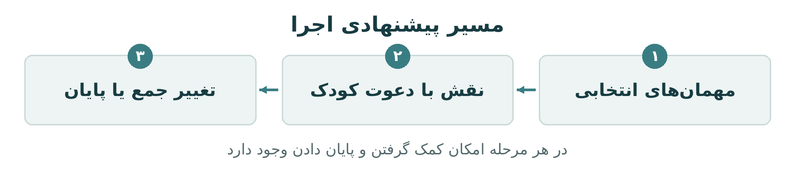
اینفوگرافی اجرای PR04 خواندن از راست به چپ
زمان پیشنهادی حدود ۵ تا ۱۵ دقیقه برای یک نوبت آغازین؛ ادامه یا پایان با توجه به علاقه، خستگی و شرایط واقعی. زمانگیری کودک لازم نیست.
وسایل این نسخه دو یا سه شخصیت بزرگ، پارچه کوتاه و ظروف نشکن خالی.
پیش از دعوت مهمانها و شکل جمع را کودک انتخاب کند؛ الگوی خانواده مطلوب معرفی نشود.
جمله آغاز «دوست داری امروز چه کسانی در مهمانی باشند؟»
گام ۱ کودک مکان و شخصیتها را بچیند؛ مهمان خیالی و ساختارهای متفاوت خانواده پذیرفته شوند.
گام ۲ بزرگسال فقط نقش دعوتشده را بگیرد و درباره جای نشستن یا نیاز نقش سؤال کوتاه کند.
گام ۳ کودک میتواند ورود یا خروج شخصیت و زبان گفتوگو را تغییر دهد؛ مرز تماس بدنی در داستان هم محترم باشد.
اگر بازی گیر کرد «من کجا بنشینم؟ میخواهی این مهمان بیاید یا فعلاً بیرون بماند؟»
راه سادهتر دو شخصیت و یک کنش مثل نشستن یا دادن ظرف.
اگر کودک چالش بیشتری خواست دو شخصیت با خواسته متفاوت و حل مسئله در داستان؛ نتیجه اخلاقی تحمیل نشود.
راه دیگر برای مشارکت زبان خانه، اشاره و نقش بدون صحبت؛ شخصیتهای قابل گرفتن.
ایمنی همین اجرا نوشیدنی داغ و وسایل شکستنی حذف شوند؛ بوسه، بغل و سلام اجباری نیست.
نمونه ثبت فرضی «دو شخصیت را مهمان کرد و برای سومی جای جدا ساخت.» این فقط توصیف همان رخداد است؛ ثبت، فقط وقتی سؤال یا تصمیم مشخصی دارید.
مشاهده و تصمیم نوبت بعد ببین کودک چه کسانی را دعوت میکند و چه رسم یا نقشی میسازد. برای ادامه همان ترکیب انتخابی او را بپذیر؛ پرسش درباره اعضای غایب یا اجبار به بازسازی خانواده واقعی، مسیر مناسبی برای مشاهده نیست.
پایان و مرور حذف یا انتخاب شخصیت به رابطه واقعی خانواده تعبیر نشود.
ایرانیسازی بدون کلیشه
ممکن است مهمانی شامل سفره، چای وانمودی، هدیه، آمدن مادربزرگ یا مهمان خیالی باشد؛ اما کتاب هیچکدام را معیار خانواده ایرانی نمیکند. کودک چندزبانه میتواند در نقش از هر زبان خانه استفاده کند.
بوسیدن، بغلکردن و سلامکردن در بازی اجباری نیست. اگر کودک گفت «این مهمون رو راه نمیدم»، ابتدا در بازی بمان؛ لازم نیست از یک انتخاب خیالی درباره رابطه واقعی او با شخصی نتیجه بگیری.
از PR04 چه چیزی نمیتوان فهمید؟
انتخاب نقش مادر/پدر/کودک، حذف یک شخصیت، دعوا، مهماننکردن فردی یا ساخت خانواده متفاوت بهتنهایی درباره مشکل خانوادگی، دلبستگی، تعارض خانه، هویت یا تروما معنا نمیدهد.
پشتوانه و حدود شواهد PR04
بخش | وضعیت |
|---|---|
خانواده | Pretend / social role play |
سطح | C / بازی D |
♥ | رابطه و حضور مشترک مقدم است. |
L0 | موقعیت نقشآفرینی درباره یک رویداد اجتماعی آشنا. |
L1 | ممکن است فرصت تغییر نقش و دیدن پاسخ شخصیت دیگر ایجاد کند. |
L2/L3 | ممنوع: افزایش دیدگاهگیری/همدلی؛ تفسیر خانواده. |
PR05 — تعمیرگاه محله
در تعمیرگاه، وانمودبازی با یک مشکل مشترک ترکیب میشود: چیزی «خراب» شده و گروه باید تصمیم بگیرد چه کند. هدف اصلی در طراحی کتاب، همکاری اجتماعی است؛ نه تعمیر واقعی.
مولفه | تعریف |
|---|---|
کد | PR05–56–R |
سن هسته | ۵ تا ۶ سال |
سن قابل تطبیق | ۴ تا ۶ سال |
هدف اصلی | حل مسئله مشارکتی / همکاری اجتماعی |
اهداف همراه | زبان؛ همکاری |
مشاهده اصلی | حل مسئله + اجتماع |
هدایت | «چه پیشنهادی داری؟» در صورت نیاز |
سطح | D |
راهنمای دقیق اجرای بازی PR05
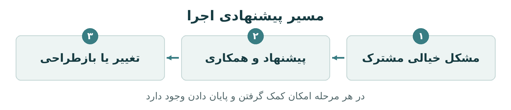
اینفوگرافی اجرای PR05 خواندن از راست به چپ
زمان پیشنهادی حدود ۵ تا ۱۵ دقیقه برای یک نوبت آغازین؛ ادامه یا پایان با توجه به علاقه، خستگی و شرایط واقعی. زمانگیری کودک لازم نیست.
وسایل این نسخه ماشین بزرگ، جعبه باز، قطعات مقوایی بزرگ و ابزار اسباببازی ایمن.
پیش از دعوت یک مشکل خیالی مثل چرخ کاغذی جداشده معرفی شود؛ خرابی واقعی خطرناک ایجاد نکنید.
جمله آغاز «این وسیله در داستان ما خراب شده؛ تعمیرگاه چه پیشنهاد دارد؟»
گام ۱ کودک یا گروه مسئله را تعریف کنند و نقش انتخاب شود؛ پذیرش، تعمیر و رساندن وسیله ممکن است.
گام ۲ یک راهحل خیالی یا اتصال مقوایی ساده امتحان شود؛ بزرگسال از داخل نقش پرسش کوتاه کند.
گام ۳ اگر نتیجه دلخواه نبود، گروه یک تغییر پیشنهاد دهد یا وسیله را به چیزی تازه تبدیل کند؛ توافق درباره ادامه بازی مرور شود.
اگر بازی گیر کرد «برای ادامه چه لازم داریم؟ میخواهی این بخش را من نگه دارم؟»
راه سادهتر یک نقش و یک کنش مانند بردن وسیله به تعمیرگاه.
اگر کودک چالش بیشتری خواست دو نقش مکمل و یک محدودیت ساده؛ مشکل واقعی فنی اضافه نشود.
راه دیگر برای مشارکت ابزار با گرفتن آسان، انتخاب تصویری یا نقش مدیریت سفارش.
ایمنی همین اجرا پیچومهره ریز، باتری، ابزار تیز، روغن و وسیله برقی واقعی استفاده نشوند.
نمونه ثبت فرضی «پیشنهاد کرد ماشین قایق شود و جعبه را برای بدنه آورد.» این فقط توصیف همان رخداد است؛ ثبت، فقط وقتی سؤال یا تصمیم مشخصی دارید.
مشاهده و تصمیم نوبت بعد ببین کودک مشکل وسیله و راه تعمیر را چگونه با همبازی مطرح میکند. اگر نوبتها نامشخصاند، یک کار مشترک کوتاه تعریف کن؛ اگر راهحل کار نکرد، فقط نتیجه را توصیف کن و انتخاب راه بعد را به بازیکنندگان برگردان.
پایان و مرور راهحل با کیفیت همکاری و تصمیم کودک توصیف شود؛ استعداد فنی نمره نگیرد.
مواد و اجرا
ماشین یا وسیله اسباببازی بزرگ، جعبه، چرخ مقوایی، ابزار پلاستیکی/چوبی بزرگ و ایمن.
هیچ پیچ و مهره کوچک، ابزار فلزی تیز، سیم برق، باتری، روغن یا ماده شیمیایی واقعی استفاده نمیشود.
سناریو: «این ماشین/دوچرخه خیالی یه مشکلی پیدا کرده؛ تعمیرگاه امروز چه کار میکنه؟»
ممکن است کودک به جای تعمیر، تصمیم بگیرد وسیله را تبدیل به قایق کند. اگر هدف صرفاً بازی وانمودی است، این تغییر مسیر شکست نیست.
از PR05 چه چیزی نمیتوان فهمید؟
ناتوانی در پیدا کردن راهحل، کنارکشیدن از همکاری یا خرابکردنِ دوباره وسیله بهتنهایی توان شناختی، مهارت حل مسئله، استعداد فنی یا کیفیت همکاری کودک را اندازه نمیگیرد.
پشتوانه و حدود شواهد PR05
بخش | وضعیت |
|---|---|
خانواده | Social pretend play + collaborative problem context |
سطح | C / بازی D |
L0 | موقعیت خیالی برای پیشنهاد، تقسیم نقش و تغییر راه. |
L1 | میتواند فرصت همکاری و زبان حل مسئله فراهم کند. |
L2 | ممنوع: افزایش problem solving/social skill؛ سنجش توان شناختی. |
علم چه میگوید؟
آنچه نسبتاً میدانیم
بازی وانمودی در اوان کودکی شکلهای مختلفی دارد: جایگزینی شیء، نسبتدادن ویژگی خیالی، اجرای نقش، تعامل وانمودی و گفتوگو درباره قواعد بازی.
متاآنالیز ۲۰۲۴ میان بازی وانمودی و شایستگی اجتماعی یک رابطه مثبت اما کوچک گزارش کرد؛ بیشتر مطالعات مقطعی بودند و علیت مشخص نیست.
متاآنالیز ۲۰۲۶ درباره بازی وانمودی و executive functions نیز فقط یک رابطه کوچک گزارش کرد و شواهد را علّی ندانست.
متاآنالیز symbolic play و زبان، ارتباط بین دو حوزه را گزارش کرده است؛ اما این ارتباط اثبات نمیکند بازی وانمودی بهتنهایی باعث رشد زبان میشود.
کارآزمایی ۸هفتهای ۲۰۲۶ با ۳۳۳ کودک، اثر معناداری از مداخله بازی وانمودی بر social-cognitive skills یا رفتار اجتماعی–هیجانی پیدا نکرد؛ این نتیجه دلیل مهمی برای حفظ زبان محتاطانه کتاب است.
آنچه نمیتوانیم بگوییم
بازی وانمودی بهطور کلی همدلی، زبان، EF، خلاقیت یا شایستگی اجتماعی را افزایش میدهد.
پیچیدگی بیشتر بازی به معنای رشد بهتر کودک است.
بازی ساده یا انفرادی بهتنهایی نشانه مشکل است.
موضوع داستان کودک معنای پنهان قطعی درباره خانواده یا تروما دارد.
نقش انتخابی کودک هویت یا ویژگی شخصیتی او را آشکار میکند.
یکی از PR01 تا PR05 ابزار play therapy، غربالگری یا تشخیص است.
در خانه چه میتوان کرد
پیش از ورود، بپرسید چه نقشی میتوانید داشته باشید.
اگر کودک داستان را تغییر داد، برای ادامهٔ همان مسیر فرصت بدهید.
میان آنچه در بازی رخ داد و حدسی که دربارهٔ علت آن دارید فاصله نگه دارید.
نقشها را جنسیتی نکنید و کودک را مجبور به سلام/بغل/مراقبت نکنید.
اگر کودک داستان را عوض کرد یا از بازی خارج شد، شکست محسوب نمیشود.
در مهد یا کارگاه
وسایل و نقشها را به شکلهایی محدود نکنید که فقط یک داستان را ممکن کنند. برای تماشا، ایفای نقش با اشاره و مشارکت در زبان آشنای کودک نیز جا بگذارید.
اگر مشاهده هدفمند دارید، یک پرسش انتخاب کنید: کودک چگونه وارد نقش میشود؟ چگونه درباره نقش مذاکره میکند؟ وقتی سناریو تغییر میکند چه میکند؟ از محتوای داستان، تشخیص نساز.
یک تجربه برای این هفته
در یک بازی وانمودی، نقش کمحرفی بگیرید.
مسافر، مهمان یا مراجعهکننده. یک درخواست کوتاه مطرح کنید و ببینید کودک چگونه نقش و داستان را پیش میبرد.
چه زمانی محتوای بازی ارزش گفتوگوی بیشتر دارد؟
کتاب یک موضوع داستانی را تفسیر نمیکند. اما اگر کودک بیرون از بازی نگرانی مشخصی را بیان کند، یا الگویی در طول زمان و چند زمینه با رنج، اختلال عملکرد یا پسرفت همراه باشد، همان مسیر فصل ۲۵ فعال میشود: مشاهده عینی، گفتوگو با خانواده و در صورت تداوم نگرانی، ارجاع مناسب.
حتی در این حالت نیز بازی فقط یکی از دادههاست، نه کل داستان.
همراهی در موقعیتهای روزمره
بازی وانمودی پنجرهای به شیوه فکر کردن کودک است؛ جایی که اشیا، نقشها و داستانها معنای تازه پیدا میکنند.
در بازی خیالی دنبال این موارد باشیم:
• چگونه نقش میسازد؟
• چگونه داستان را ادامه میدهد؟
• چگونه دیگران را وارد جهان خود میکند؟
به جای تصحیح خیال کودک، ابتدا وارد جهان ساختهشده او شویم.
نقش بزرگسال را کودک تعیین کند
در بازی فروشگاه، بپرسید «من چه نقشی داشته باشم؟». شاید کودک شما را مشتری، فروشنده یا فقط تماشاگر بخواهد. اگر قیمتها یا قواعد خیالی با واقعیت فرق دارند، لازم نیست همان لحظه درس اقتصاد بدهید. درون منطق بازی همراه شوید و مرزهای واقعی ایمنی و احترام را کوتاه نگه دارید.
از داستان به شرح حال نرویم
اگر عروسک در بازی دعوا میکند، از همین صحنه درباره خانه یا آسیب روانی نتیجه نگیرید. میتوانید بپرسید «بعدش توی داستان چه میشه؟». اگر کودک اطلاعات مشخصی درباره آسیب واقعی بیان کرد، آن موضوع را جدی و از تفسیر بازی جدا دنبال کنید؛ بازی بهتنهایی ابزار کشف واقعه نیست.
پایان فصل
این هفته... | پیشنهاد |
|---|---|
بیشتر ببین | کودک چگونه نقش، شیء و قانون خیالی را میسازد یا تغییر میدهد؟ |
کمتر انجام بده | کارگردانی، درس اخلاق و پرسشهای تفسیرگر درباره محتوای داستان. |
امتحان کن | یک نقش را دقیقاً همانطور که کودک به تو میدهد بازی کن. |
از خودت بپرس | آیا دارم با کودک وانمود میکنم یا دارم بازی او را تحلیل میکنم؟ |
در پایان میتوانیم بگوییم چه داستانی ساخته شد و هرکس چه نقشی گرفت. دانستن معنای قطعی و پنهان داستان، شرط ارزشداشتن این تجربه نیست.
فصل بعد وارد کتابخوانی تعاملی میشود: «کتاب را برای کودک نخوان؛ با کودک بخوان».
منابع منتخب فصل
Smits-van der Nat M, van der Wilt F, Meeter M, van der Veen C. The Value of Pretend Play for Social Competence in Early Childhood: A Meta-analysis. Educational Psychology Review. 2024;36:46. https://doi.org/10.1007/s10648-024-09884-z.
Smits-van der Nat M, van der Wilt F, Meeter M, van der Veen C. The Effect of Pretend Play on Children's Social Competence: An Intervention Study in Early Childhood Education. Social Development. 2026. https://doi.org/10.1111/sode.70050.
Constien T, Moran S, Rooney B, Downes M. (2026). A head taller: A meta-analysis on the relation between pretend play and executive functions in early childhood. Developmental Review, 79, 101249. https://doi.org/10.1016/j.dr.2026.101249
Quinn S, Donnelly S, Kidd E. The relationship between symbolic play and language acquisition: A meta-analytic review. Developmental Review. 2018;49:121–135. https://doi.org/10.1016/j.dr.2018.05.005.
Lillard AS, Lerner MD, Hopkins EJ, Dore RA, Smith ED, Palmquist CM. The impact of pretend play on children's development: A review of the evidence. Psychological Bulletin. 2013;139(1):1–34. https://doi.org/10.1037/a0029321.
Smith-Nielsen J, et al. The significance of parental mentalizing for four-year-old children's solitary pretend play. PLoS One. 2024;19(1):e0297671.
NAEYC. Dramatic Play resources and Creating Dramatic Play Areas That Support Literacy. Current resources.
یادداشت روششناختی: در طراحی کتاب، بازی وانمودی برای پیامدهای گسترده سطح C است. هر پنج بازی PR01 تا PR05 سطح D هستند. محتوای بازی نمادین در این کتاب هرگز projective test، play-therapy ارزیابی یا ابزار تشخیصی تلقی نمیشود.
بخش ۵ کتاب داستان و ذهن دیگری
فصلهای ۱۴ تا ۱۶
نگاه، اشاره، واژه و روایت همگی راه مشارکتاند. بزرگسال سهم کودک را دنبال و فقط به اندازه لازم بسط میدهد.
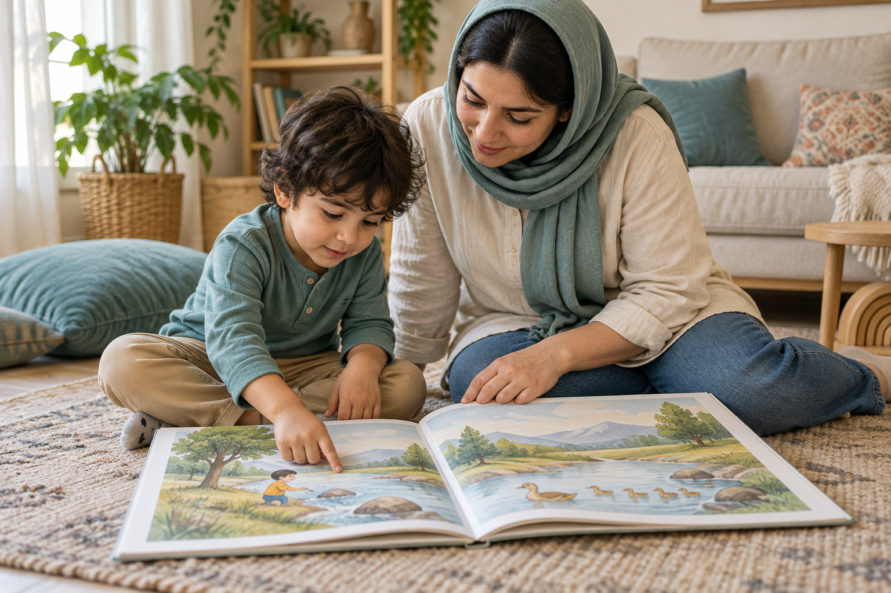
تصویر آموزشی بازسازیشده با هوش مصنوعی
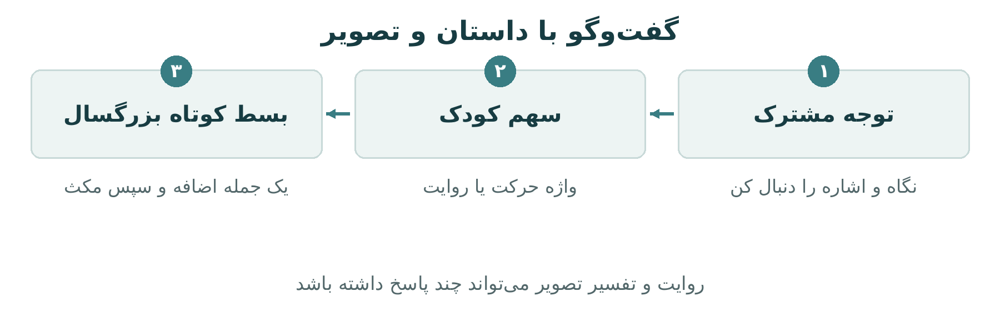
نقشه خواندن این بخش فصلهای ۱۴ تا ۱۶
فصل ۱۴ کتاب را برای کودک نخوان؛ با کودک بخوان
در این فصل چه میخوانیم؟
گاهی بهترین شروع کتابخوانی همان تصویری است که کودک به آن اشاره میکند.
«این چیه؟ این چه رنگیه؟ بعدش چی شد؟»
کتاب باز است و انگشت کودک روی گربهٔ گوشهٔ صفحه مانده. مادر چند سؤال پشتسرهم میپرسد. کودک پاسخی کوتاه میدهد و صفحه را برمیگرداند. شاید دنبال تصویر دیگری است؛ شاید برای این تعداد سؤال آمادگی ندارد.
میشود از اشارهٔ او شروع کرد: «گربه زیر میزه.» اگر بگوید «قایم شده»، مادر میتواند ادامه بدهد: «آره، پشت پایهٔ میز قایم شده.» سپس سکوت کند. این فاصله، فرصتی است تا کودک چیزی اضافه کند یا تصمیم بگیرد به صفحهٔ بعد برود.
در خواندن مشترک، مدت نشستن و تعداد پاسخها تنها چیزهای قابل توجه نیستند. نگاه، اشاره، برگشتن به یک تصویر و آوردن تجربهٔ خود کودک هم در گفتوگو سهم دارند. کتاب را با ریتم او و راههای مختلف مشارکت میخوانیم.
پرسش این فصل
چگونه از توجه و گفتهٔ کودک برای ساختن یک گفتوگوی مشترک دربارهٔ کتاب استفاده کنیم؟
در خواندن مشترک چه چیزی فرق میکند؟
در shared book reading، کتاب مرکز توجه مشترک است، اما تعامل فقط خواندن متن از ابتدا تا انتها نیست. نگاه، اشاره، مکث، نظر کودک، سؤال، توضیح بزرگسال، برگشتن به صفحه قبل و حتی چند لحظه سکوت میتوانند بخشی از تجربه باشند.
خواندن گفتوگویی شکل ساختاریافتهتری از خواندن تعاملی است. What Works Clearinghouse آن را روشی معرفی میکند که در آن نقشها تا حدی جابهجا میشوند: کودک بیشتر به storyteller تبدیل میشود و بزرگسال شنونده و پرسشگر فعال است. این تعریف مهم است، چون «dialogic» را نباید مساوی «بزرگسال سؤالهای بیشتری میپرسد» گرفت.
پشتوانه علمی این خانواده از خیلی فصلها قویتر است
در طراحی کتاب، Shared/خواندن گفتوگویی برای زبان در سطح A قرار دارد. متاآنالیز Dowdall و همکاران ۱۹ کارآزمایی تصادفی با مجموع ۲۵۹۴ کودک ۱ تا ۶ ساله را بررسی کرد. مداخلات آموزشِ اشتراک کتاب با کودک، بهطور میانگین اثر کوچک تا متوسطی بر زبان بیانی و دریافتی نشان دادند و اثر بزرگی بر مهارت خودِ مراقب در book-sharing داشتند.
این شواهد به «مداخلههای book-sharing» مربوط است، نه هر بار کتابخواندن و نه هر بازی خاص این کتاب. بنابراین نمیگوییم DR02 بهتنهایی زبان کودک را افزایش میدهد.
WWC در مرور تاریخی خواندن گفتوگویی، آثار مثبت بر oral language و نبود اثر قابل تشخیص بر phonological processing گزارش کرد. آن گزارش قدیمی است و بهتنهایی مبنای سطح A این فصل نیست؛ اما با جهت کلی شواهد زبان همسو است.
پرسش خوب چیست؟
پرسش خوب لزوماً پرسش سخت یا باز نیست. کیفیت پرسش به موقعیت، سن، مشارکت کودک و هدف بستگی دارد. گاهی «فکر میکنی کجا رفت؟» گفتوگو را باز میکند؛ گاهی همان سؤال کودک را متوقف میکند چون او فقط میخواست تصویر را نگاه کند.
وقتی کتاب شبیه آزمون میشود | نسخه گفتوگوییتر |
|---|---|
«این چیه؟ چه رنگیه؟ چندتاست؟» پشتسرهم | یک مشاهده: «گربه رفته بالای صندلی.» سپس مکث. |
«نه، اشتباه گفتی؛ این روباهه.» | اگر لازم است: «آره، شبیه سگه؛ توی این قصه اسمش روباهه.» |
«حالا بگو بعدش چی میشه.» در هر صفحه | فقط وقتی کودک درگیر روایت است: «تو فکر میکنی بعدش چی میشه؟» |
پرسش بدون توجه به اشاره کودک | ابتدا همان چیزی را که کودک نشان داده دنبال کن. |
اصرار برای جواب کامل | اشاره، یک واژه، صدا، AAC یا سکوت هم میتواند مشارکت باشد. |
برای شروع قصهگویی، یک روایت کوتاه هم کافی است
در خواندن گفتوگویی، «کودک storyteller میشود» یک جهت تعاملی است، نه انتظار عملکردی. کودک دوونیمساله ممکن است فقط به تصویر اشاره کند یا یک واژه بگوید. کودک دیگر شاید صفحهها را سریع ورق بزند. کودک پنجساله ممکن است داستانی طولانی بسازد.
کمگویی در یک کتاب بهتنهایی درباره توان زبان، اختلال زبان، توجه یا علاقه کودک حکم نمیدهد.
پنج حرکت ساده بزرگسال
برای این کتاب یک یادآور اجرایی داخلی میسازیم؛ نه پروتکل اعتبارسنجیشده:
حرکت | کار |
|---|---|
دنبال کن | اول ببین کودک به چه چیز نگاه/اشاره میکند. |
مکث کن | بعد از جمله یا سؤال جا برای پاسخ بگذار. |
گسترش بده | به گفته کودک کمی اطلاعات اضافه کن، بدون اصلاح سخنرانیگونه. |
دعوت کن | اگر موقعیت مناسب بود سؤال یا پیشبینی باز پیشنهاد بده. |
برگردان | دوباره اختیار صفحه/داستان را به کودک بده. |
این پنج حرکت سطح D دارند و فقط ترجمه آموزشیِ اصول interaction هستند. لازم نیست در هر صفحه هر پنج مرحله اجرا شوند.
گسترش دادن با تصحیح کردن فرق دارد
کودک میگوید: «گربه افتاد.» بزرگسال میتواند بگوید: «آره، گربه از روی صندلی افتاد و حالا به لیوان نگاه میکنه.» این بسط گفته کودک، گفته کودک را میپذیرد و کمی زبان به آن اضافه میکند.
اگر هر جمله کودک به تمرین دستور زبان تبدیل شود، رفتوبرگشت طبیعی از بین میرود. اصلاح مستقیم گاهی لازم است، اما هدف هر نوبت کتابخوانی نیست.
کتاب بیکلمه؛ آزادی بیشتر، اما نه الزاماً «بهتر»
کتاب بیکلمه متن چاپیِ ثابتی برای خواندن ندارد؛ بنابراین بزرگسال و کودک بیشتر از تصویر برای ساخت روایت استفاده میکنند. این ویژگی میتواند سهم کودک را بیشتر کند، اما به این معنی نیست که کتاب بیکلمه برای همه کودکان یا همه اهداف از کتاب متنی بهتر است.
مطالعه Chaparro-Moreno و همکاران با ۱۳ مربی کلمبیایی و کودکان ۴۳ تا ۵۵ ماهه نشان داد در خواندن کتاب بیکلمه، کودکان واژهها، انواع واژهها و utteranceهای بیشتری تولید کردند و مربیان حمایت آموزشی بیشتری نشان دادند؛ اما این یک مطالعه محدود و وابسته به بافت است.
مطالعه Mathers و همکاران که در ۲۰۲۵ منتشر شد، ۲۲ زوج والد–کودک سه تا چهار ساله را در سه موقعیت مقایسه کرد: کتاب بیکلمه، کتاب متندار و بازی نمادین. در کتاب بیکلمه، والدین بیشتر گفتههای کودک را expand/extend کردند و نسبت پرسشهای باز بالاتر بود؛ اما کودکان در بازی آزاد بیشتر حرف زدند و کتاب متندار برای بعضی انواع برچسبگذاری/توضیح مزیت داشت. نمونه نیز کوچک و عمدتاً با SES نسبتاً بالا بود.
پس نقشه شواهد کتاب فصل اینطور میماند: Shared/خواندن گفتوگویی → زبان = A؛ مزیت خاص wordless books = C؛ خود DR02 = D.
کتاب متندار را قربانی نکن
متن چاپی میتواند واژه، ساختار جمله و روایتهایی را در اختیار بزرگسال و کودک بگذارد که شاید در گفتوگوی روزمره کمتر استفاده شوند. کتاب بیکلمه و کتاب متندار کارکردهای متفاوتی دارند و کتاب لازم نیست همیشه interactive maximal باشد.
بعضی شبها کودک فقط میخواهد داستان آشنا را بشنود. این هم یک شکل معتبر تجربه کتاب است.
خواندن تکراری؛ داستان لازم نیست هر بار یکسان بماند
در کتاب بیکلمه، روایت میتواند در هر بار خواندن تغییر کند. یک بار کودک روی گربه تمرکز میکند، بار دیگر روی باران یا جزئیات پسزمینه. هدف رسیدن به «داستان درست» نیست.
در کتاب متنی نیز میتوان بعضی بارها متن را کامل خواند و بعضی بارها بیشتر مکث و گفتوگو کرد. رابطه با کتاب مهمتر از اجرای یک تکنیک ثابت است.
سن و شکل مشارکت
این جدول راهنمای طراحی داخلی است، نه نقطه عطف رشدی.
بازه | شکل مناسبتر تعامل |
|---|---|
۲٫۵–۳ | کتاب تصویری ساده؛ دنبالکردن اشاره؛ نامگذاری و بسط گفته کودک کوتاه؛ کودک لازم نیست روایت بسازد. |
۳–۴ | توصیف کنش، انتخاب میان دو احتمال، جملههای کوتاه کودک و گسترش پاسخ. |
۴–۵ | پیشبینی، ارتباط بین دو صفحه و روایت مشترک طولانیتر در صورت علاقه. |
۵–۶ | توالی، علتومعلول، چند تفسیر ممکن و بازگویی انتخابی؛ بدون تبدیل به امتحان comprehension. |
چندزبانه بودن؛ زبان خانه مانع کتابخوانی نیست
اگر کودک در خانه فارسی، ترکی، کردی، عربی، گیلکی، لری یا زبان دیگری استفاده میکند، لازم نیست کتاب بیکلمه را فقط به زبان محیط آموزشی تعریف کند. زبان خانه میتواند منبع مشارکت باشد.
کمتر حرفزدن در زبان دوم بهتنهایی نشانه زبان ضعیف نیست. برای مشاهده حرفهای، زمینه چندزبانه باید ثبت شود.
♥ DR02 — کتاب بیکلمه
این بازی/تجربه رابطهای درباره «با هم دیدن و ساختن روایت» است. نشان ♥ یعنی کیفیت توجه مشترک و گفتوگو از ثبت عملکرد مهمتر است.
مولفه | تعریف |
|---|---|
کد | DR02–23–D ♥ |
خانواده | Dialogic Reading / Story |
سن هسته | ۲٫۵ تا ۳ سال |
سن قابل تطبیق | تقریباً ۲٫۵ تا ۶ سال |
هدف اصلی | ارتباط روایی |
اهداف همراه | توجه مشترک؛ تخیل |
مشاهده اصلی | زبان + توجه |
حمایت کمینه | دنبالکردن نگاه/اشاره کودک |
رابطه | ♥ معمولاً بدون فرم رسمی |
سطح خود فعالیت | D |
راهنمای دقیق اجرای بازی DR02
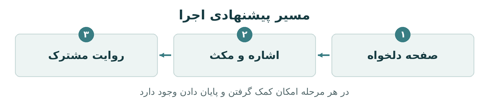
اینفوگرافی اجرای DR02 خواندن از راست به چپ
زمان پیشنهادی حدود ۵ تا ۱۰ دقیقه برای یک نوبت آغازین؛ ادامه یا پایان با توجه به علاقه، خستگی و شرایط واقعی. زمانگیری کودک لازم نیست.
وسایل این نسخه یک کتاب بیکلمه مقاوم با تصاویر روشن و چند صفحه پیوسته.
پیش از دعوت کتاب در زاویه دید هر دو نفر و جای راحت کودک باشد؛ همه صفحات را از قبل مرور کنید.
جمله آغاز «میخواهی ببینیم در این عکسها چه خبر است؟»
گام ۱ صفحه دلخواه کودک را باز کنید و دنبال نگاه یا اشاره او بروید؛ یک کنش را با جمله کوتاه توصیف کنید.
گام ۲ پس از هر جمله مکث کنید. واژه، اشاره یا ورقزدن کودک را پاسخ دهید؛ پاسخ او فقط کمی بسط داده شود.
گام ۳ اگر علاقه داشت دو صفحه را به هم وصل کنید یا پایان دیگری بسازید؛ بستن کتاب یا برگشتن به صفحه قبلی پذیرفته باشد.
اگر بازی گیر کرد «تو گفتی افتاد؛ بله، از کنار صندلی افتاد. حالا دوست داری کدام صفحه را ببینیم؟»
راه سادهتر یک صفحه با جزئیات کم؛ اشاره و یک واژه کافی.
اگر کودک چالش بیشتری خواست وصلکردن دو صفحه یا دو پایان احتمالی؛ بدون پرسشباران.
راه دیگر برای مشارکت کتاب در پایه مناسب، تصویر بزرگ، زبان خانه و پاسخ با سیستم ارتباطی کودک.
ایمنی همین اجرا تصویر ناراحتکننده برای کودک کنار گذاشته شود؛ کودک به روایت یا نشستن طولانی مجبور نشود.
نمونه ثبت فرضی «به گربه اشاره کرد، گفت رفت و صفحه بعد را ورق زد.» این فقط توصیف همان رخداد است؛ ثبت، فقط وقتی سؤال یا تصمیم مشخصی دارید.
مشاهده و تصمیم نوبت بعد ببین نگاه یا اشاره کودک روی کدام بخش تصویر میماند. همان بخش را با یک عبارت کوتاه توصیف کن و مکث بده؛ اگر صفحه را عوض کرد، دنبال کن. گفتن قصه کامل یا پاسخدادن به همه پرسشها لازم نیست.
پایان و مرور با نشانه خستگی یا درخواست کودک کتاب بسته شود؛ روایت کامل شرط پایان نیست.
انتخاب کتاب
تصاویر واضح و پیوسته که امکان دنبالکردن کنش یا رابطه میان صفحهها را بدهند.
برای سن پایین، جزئیات بسیار شلوغ و روایت پیچیده کمتر؛ کتاب مقاوم و قابل ورقزدن.
تصاویر متنوع از خانوادهها، بدنها، فرهنگها و محیطها؛ بدون الزام به یک سبک زندگی واحد.
اگر کتاب فیزیکی در دسترس نیست، مجموعه تصویر پیوسته نیز قابل استفاده است؛ اما تجربه لمس/ورقزدن متفاوت است.
دعوت
«این کتاب کلمه نداره؛ میخوای با هم ببینیم توی عکسها چه خبره؟»
اگر کودک فقط صفحهها را نگاه کرد، همان هم مشارکت است. بزرگسال لازم نیست فوراً داستان کامل بسازد.
مسیر پیشنهادی اجرا
لحظه | کار بزرگسال |
|---|---|
شروع | یک صفحه را با کودک نگاه کن؛ فوراً سؤال نپرس. |
نشانه کودک | نگاه، اشاره، صدا یا واژه او را دنبال کن. |
پاسخ | یک جمله مرتبط یا بسط گفته کودک کوتاه بده. |
دعوت | فقط اگر کودک درگیر است: «اینجا چی شده؟» یا «فکر میکنی کجا میرن؟» |
مکث | جواب را خودت سریع پر نکن. |
ادامه | اجازه بده کودک صفحه را برگرداند، عقب برگردد یا داستان را تغییر دهد. |
نسخههای سنی DR02
بازه | تطبیق |
|---|---|
۲٫۵–۳ | اشاره و نامگذاری کوتاه؛ «سگ دوید»؛ بسط گفته کودک کوچک؛ سؤال بسیار محدود. |
۳–۴ | دو یا سه جمله مشترک درباره صفحه؛ دنبالکردن علت ساده و کنش. |
۴–۵ | وصلکردن دو صفحه، پیشبینی و بازگشت به تصویر برای دلیل. |
۵–۶ | روایت مشترک طولانیتر، چند پایان یا تفسیر؛ بدون نمرهدادن به ساختار داستان. |
اگر کودک کم حرف زد
قصه را به زور از او بیرون نکش. خودت یک جمله کوتاه بگو و مکث کن. ممکن است کودک با اشاره، تغییر حالت چهره، ورقزدن یا یک واژه مشارکت کند.
اگر نگرانی زبانی مستقلی وجود دارد، DR02 برای سنجش آن کافی نیست. الگو در چند زمینه و ابزار معتبر اهمیت دارد.
اگر کودک خیلی حرف زد
لازم نیست روایت را مرتباً به تصویر «برگردانی» مگر جایی که ارتباط کاملاً قطع شده و هدف مشترک از بین رفته است. تخیل کودک میتواند از تصویر فراتر برود.
اگر هدف این نوبت توجه به داستان کتاب است، مداخله کمینه میتواند این باشد: «این ایدهات جالبه؛ ببین توی صفحه بعد تصویر چی بهمون میگه.»
اگر کودک نخواست
کتاب را ببندید. ♥ بودن DR02 به معنی اجباریکردن رابطه نیست. میتوان بعداً کتاب دیگری یا شکل دیگری از ارتباط مشترک را امتحان کرد.
راههای دیگر برای مشارکت
اشاره یا نگاه.
انتخاب میان دو تصویر.
صداسازی یا اجرای حرکت شخصیت.
AAC یا کارت تصویری.
گفتن داستان در زبان خانه.
فقط ورقزدن و نگاه مشترک.
سه سؤال والد
چه چیزی جذبش کرد؟
کجا برایش سخت شد؟
چه چیزی کمکش کرد؟
مشاهده حرفهای؛ فقط اگر هدف مشخصی دارید
اگر نیاز واقعی به مشاهده وجود دارد، حداکثر یک یا دو حوزه انتخاب کنید: مثلاً زبان/ارتباط و توجه مشترک. ثبت کنید کودک چه کرد، نه اینکه «سطح داستانگویی» او را از یک اجرا درجهبندی کنید.
مثال: کودک به گربه اشاره کرد و گفت «افتاد». بعد از جمله مربی «از روی صندلی افتاد»، صفحه بعد را برگرداند و گفت «رفت».
یک تجربه برای این هفته در DR02
در یک صفحه، فقط اشارهٔ کودک را دنبال کنید.
یک توصیف کوتاه بیاورید و بعد منتظر بمانید. در پایان ببینید چه چیزی از طرف او به گفتوگو اضافه شد.
از DR02 چه چیزی نمیتوان فهمید؟
کمگویی، روایت کوتاه، ترتیب متفاوت، نخواستن قصهگفتن یا توجهکردن به جزئیات حاشیهای بهتنهایی اختلال زبان، ضعف توجه، تخیل کم، هوش پایین، اوتیسم یا مشکل روایت را نشان نمیدهد. DR02 آزمون نیست.
پشتوانه و حدود شواهد DR02
عنصر | وضعیت |
|---|---|
خانواده شواهد | Shared/Dialogic Reading |
سطح خانواده برای زبان | A |
شواهد اختصاصی wordless books | C — مطالعات کوچک/بافتوابسته و نتایج چندوجهی |
سطح خود DR02 | D |
L0 مجاز | کتاب بیکلمه موقعیتی برای توجه مشترک، توصیف تصویر و ساخت روایت مشترک فراهم میکند. |
L1 محتاطانه | میتواند فرصت بیشتری برای سهم گفتاری/غیرگفتاری کودک و بسط گفته کودک بزرگسال فراهم کند. |
L2 غیرمجاز | DR02 زبان، تخیل، توجه یا مهارت روایت را افزایش میدهد. |
L3 غیرمجاز | از DR02 میتوان اختلال زبان/اوتیسم/توجه را غربال یا تشخیص داد. |
علم چه میگوید؟
آنچه نسبتاً میدانیم
مداخلات shared picture book reading که به مراقبان راه تعامل میآموزند، در مجموعهای از RCTها آثار مثبت بر زبان بیانی و دریافتی نشان دادهاند؛ پشتوانه این خانواده نسبتاً قوی است.
خواندن گفتوگویی بهجای بزرگسالِ تنها-راوی، نقش فعالتری برای کودک و نقش شنونده/پرسشگر برای بزرگسال در نظر میگیرد.
کتابهای بیکلمه در بعضی مطالعات گفتوگو و تولید زبان بیشتری نسبت به کتاب متنی ایجاد کردهاند، اما این مزیت برای همه انواع گفتار و همه بافتها یکسان نیست.
کتاب متندار نیز میتواند scaffold مهمی برای واژگان، تعریف و ساختار روایت فراهم کند؛ wordless جایگزین همه کتابها نیست.
آنچه نمیتوانیم بگوییم
هرچه سؤال بیشتر باشد، خواندن گفتوگویی بهتر است.
کتاب بیکلمه همیشه از کتاب متندار بهتر است.
هر بار کتابخواندن اثر قابل اندازهگیری بر زبان ایجاد میکند.
کودکی که روایت طولانیتری میسازد زبان یا هوش بالاتری دارد.
کمگویی در DR02 نشانه اختلال زبان است.
Shared Reading بهطور کلی هوش، همدلی یا موفقیت تحصیلی را تضمین میکند.
در خانه چه میتوان کرد
به تصویری که کودک انتخاب کرده برگردید، حتی اگر موضوع موردنظر شما در جای دیگری است.
یک جمله به گفتهٔ او اضافه کنید و سپس فرصت پاسخ بدهید.
تمامکردن همهٔ صفحهها را هدف ثابت نگذارید؛ پایان را با علاقه و حال کودک هماهنگ کنید.
اگر فقط میخواهد داستان را بشنود، اجازه بدهید.
در کتاب بیکلمه دنبال «داستان درست» نباش.
زبان خانه را وارد قصه کنید.
در مهد یا کارگاه
در گروه کوچک، کتاب را طوری نگه دارید که تصویرها برای همه قابل دیدن باشند. برای اشاره، پاسخ کوتاه و روایت در زبان خانه نیز فرصت مشارکت فراهم کنید.
پرسشها را از قبل میتوان طراحی کرد، اما اجرای آنها باید پاسخگو باشد: اگر گفتوگوی کودک مسیر ارزشمندی پیدا کرده، لازم نیست فهرست سؤالهای ازپیشنوشته را کامل کنید.
همراهی در موقعیتهای روزمره
خواندن مشترک فقط انتقال متن نیست؛ یک تجربه رابطهای و گفتوگویی است.
در خواندن مشارکتی:
• اجازه دهید کودک سؤال کند.
• درباره تصویرها گفتوگو کنید.
• اجازه دهید کودک داستان را تغییر دهد.
هدف فقط تمام کردن کتاب نیست؛ هدف ساختن رابطه با زبان و معناست.
یک صفحه هم میتواند کافی باشد
کودک چند بار به تصویر یک گربه برمیگردد. میتوانید همان صفحه را نگه دارید و درباره چیزی که او نشان میدهد حرف بزنید. تعداد صفحه تمامشده معیار کیفیت این تجربه نیست. اگر کودک کتاب را بست، خواندن را به آزمون توجه تبدیل نکنید.
نوبت گفتوگو را باز نگه داریم
پس از جمله کودک، یک پاسخ مرتبط بدهید و مکث کنید. «گربه خوابیده» میتواند به «آره، کنار پنجره خوابیده» برسد؛ لازم نیست بلافاصله سؤال تازهای مطرح شود. در خانواده چندزبانه، گفتوگو در زبان آشنای خانواده نیز راه معتبر مشارکت است.
پایان فصل
این هفته... | پیشنهاد |
|---|---|
بیشتر ببین | کودک هنگام کتاب به چه تصویر، جزئیات یا اتفاقی توجه میکند؟ |
کمتر انجام بده | سؤالهای پشتسرهم و تصحیح هر پاسخ. |
امتحان کن | سه صفحه فقط دنبالکردن، بسط گفته کودک و مکث. |
از خودت بپرس | دارم با کودک کتاب میخوانم یا از کتاب برای امتحان گرفتن استفاده میکنم؟ |
میتوان یک کتاب را چند بار و هر بار از جایی متفاوت خواند. گفتوگوی این نوبت، از توجهی شروع میشود که امروز میان شما و کودک مشترک شده است.
فصل بعد از «دیدن و گفتوگو» به «ساختن داستان» میرود: قصه نیمهکاره، خبرنگار کوچولو و سه تصویر، یک داستان.
منابع منتخب فصل
Dowdall N, Melendez-Torres GJ, Murray L, Gardner F, Hartford L, Cooper PJ. Shared Picture Book Reading Interventions for Child Language Development: A Systematic Review and Meta-Analysis. Child Development. 2020;91(2):e383-e399. PMID: 30737957.
What Works Clearinghouse. Dialogic Reading — Evidence Snapshot. Historical evidence review; oral-language positive effects, phonological processing no discernible effects.
Chaparro-Moreno LJ, Reali F, Maldonado-Carreño C. Wordless picture books boost preschoolers’ language production during shared reading. Early Childhood Research Quarterly. 2017;40:52-62. https://doi.org/10.1016/j.ecresq.2017.03.001.
Mathers SJ, Hodgkiss A, Kolancali P, Booton SA, Wang Z, Murphy VA. Comparing parent-child interaction during wordless book reading, print book reading and imaginative play. Journal of Child Language. 2025;52(2):399-424. https://doi.org/10.1017/S0305000924000072.
Grøver V, Rydland V, Gustafsson J-E, Snow CE. Shared Book Reading in Preschool Supports Bilingual Children’s Second-Language Learning: A Cluster-Randomized Trial. Child Development. 2020.
NAEYC. Read Together to Support Early Literacy; Reading Aloud with Infants and Toddlers. Practice resources.
فصل ۱۵ ذهن ما داستان میسازد
در این فصل چه میخوانیم؟
قصهٔ کوتاه کودک هم میتواند شنوندهای بخواهد که برای ادامهاش عجله نکند.
«همین؟ قصهات تموم شد؟»
کودک میگوید: «گربه رفت بیرون. بارون اومد. برگشت خونه. تموم.» بزرگسال انتظار داستان بلندتری داشته است. پیش از پرسیدن چند سؤال تازه، میتواند همان روایت را به او برگرداند: «گربه بیرون رفت و وقتی باران آمد برگشت.»
شاید کودک چیزی اضافه کند؛ شاید همان پایان را نگه دارد. طول قصه بهتنهایی برای داوری کافی نیست. علاقه به تصویر، آشنایی با فعالیت، زبان و حال این نوبت را هم باید در نظر بگیریم.
برای ادامهٔ داستان، یک دعوت کوچک کافی است: «اگر دوست داشتی، میتوانیم ببینیم داخل خانه چه شد.» کودک میتواند حرف بزند، تصویر را جابهجا کند یا از بزرگسال بخواهد بخشی را بگوید. شنوندهبودن ما به اندازهٔ پیشنهاددادن اهمیت دارد.
پرسش این فصل
چه دعوتی به کودک فرصت میدهد داستانش را بسازد و به شیوهٔ خودش با ما در میان بگذارد؟
روایت دو سطح دارد: چه اتفاقی افتاد و چگونه گفته شد
در پژوهش روایت معمولاً میان ساختار کلی روایت و ساختار زبانی روایت تمایز میگذارند. ساختار کلی روایت به سازمان کلی داستان مربوط است: شخصیتها، مسئله یا رویداد آغازگر، تلاشها، نتیجه و روابط زمانی/علّی. ساختار زبانی روایت بیشتر به زبانِ داخل داستان نگاه میکند: تعداد و تنوع واژهها، ساختار جمله، پیوندها و شکلهای دستوری.
این تمایز برای متخصص مفید است؛ اما بازیهای این فصل ابزار سنجش هیچکدام نیستند. والد یا مربی لازم نیست داستان را کدگذاری کند. در نسخه عمومی فقط میپرسیم: آیا کودک رویدادها را به شکلی برای شنونده قابل دنبالکردن کنار هم گذاشت؟ چه چیزی کمکش کرد؟
رشد روایت خطی و یکسان نیست
پژوهش ۲۰۲۳ در یک مهدکودک چینی، روایت ۱۵۴ کودک را با کتاب تصویری بیکلمه بررسی کرد: ۴۱ کودک ۳ تا ۴ ساله، ۴۷ کودک ۴ تا ۵ ساله و ۶۶ کودک ۵ تا ۶ ساله. سازمان کلی داستان با سن تفاوت داشت، اما مؤلفه «واکنش درونی» تفاوت معناداری نشان نداد. این مقایسه گروههای سنی، هنجار رشد برای کودک فارسیزبان یا شاهد اثر بازیهای این کتاب نیست.[۱]
Head Start نیز روایتگویی را در دل رشد زبان میبیند و میگوید کودکان پیشدبستانی بهتدریج داستانها را میگویند و بازمیگویند و هنگام حرفزدن درباره کتابها یا بازگویی رویدادها، با توالی، شخصیت و روابط علّی درگیر میشوند.
پس در این فصل «سن هسته» راهنمای طراحی است، نه خطکش رشد.
روایت با حافظه رابطه دارد، اما یکی نیست
برای گفتن داستان، کودک باید بعضی اطلاعات را نگه دارد و به هم وصل کند؛ پژوهشهایی نیز میان حافظه کاری و عملکرد روایی رابطه یافتهاند. برای مثال، مطالعهای روی ۲۶۹ کودک ۵ تا ۶ ساله ارتباط میان ظرفیت حافظه کاری و برخی ویژگیهای روایت را بررسی کرده است.
اما این رابطه اجازه نمیدهد از یک قصه کوتاه نتیجه بگیریم «حافظه کاری ضعیف است». روایت به زبان، تجربه، علاقه، نوع محرک، آشنایی با تکلیف و عوامل دیگری هم وابسته است.
روایت و چندزبانه بودن
واژگان کودک چندزبانه در زبانهای مختلف الزاماً یکسان نیست. برای فهم روایت، زبان آشناتر کودک و سازمان کلی داستان را هم ببینید. مطالعه Boerma و همکاران در کودکان ۵ تا ۶ ساله، ساختار کلی روایت را در گروههای تکزبانه و دوزبانه، با و بدون اختلال زبان، بررسی کرد؛ این نتیجه مجوز تشخیص از یک داستان یا تعمیم به همه کودکان چندزبانه نیست.
پس DR01، DR03 و DR04 نباید فقط در یک زبان برای قضاوت توان روایت استفاده شوند. کودک میتواند از زبان خانه، ترکیب زبانها، اشاره یا AAC استفاده کند.
چه چیزی داستان را جلو میبرد؟
حرکت روایی | نمونه کودک | کمک بزرگسال |
|---|---|---|
شروع | «یه خرس توی جنگل بود.» | اگر لازم است فقط موقعیت را روشن کن؛ داستان را به جای او نساز. |
رویداد | «بارون اومد.» | «بعد از بارون چی شد؟» فقط اگر کودک مکث طولانی و علاقه به ادامه دارد. |
علت/هدف | «رفت چون خیس شده بود.» | اگر در داستان نبود، لازم نیست حتماً اضافه شود. |
تلاش | «یه برگ گذاشت رو سرش.» | به ایده پاسخ بده، نه اینکه «راه درست» پیشنهاد کنی. |
پایان | «رفت خونه. تموم.» | پایان کوتاه هم پایان است؛ کشدادن اجباری لازم نیست. |
پیشبینی با جواب درست فرق دارد
در DR01 ممکن است بپرسیم «فکر میکنی بعدش چی میشه؟» پاسخ کودک پیشبینی است، نه سؤال comprehension با یک جواب واحد. اگر در داستان نهایی اتفاق دیگری افتاد، پاسخ قبلی «غلط» نبوده است.
پیشبینی زمانی ارزشمند است که کودک بتواند ایده خودش را وارد داستان کند؛ نه وقتی بزرگسال منتظر حدس نسخه پنهان خودش است.
سؤالسازی کودک؛ کیفیت را با تعداد سؤال یکی نکن
در DR03 کودک نقش خبرنگار را میگیرد و درباره یک رویداد واقعی یا وانمودی سؤال میسازد. بعضی کودکان سریع میپرسند «کجا رفتی؟»، بعضی فقط یک سؤال میسازند، بعضی با مدل بزرگسال شروع میکنند.
کمسؤال بودن در یک اجرا بهتنهایی ضعف زبان، کنجکاوی کم یا مشکل اجتماعی نیست. سؤالسازی به آشنایی با موقعیت، حافظه رویداد، زبان و احساس امنیت در گفتوگو وابسته است.
ترتیب تصاویر؛ همیشه فقط یک روایت ممکن نیست
در DR04 سه تصویر میتوانند یک ترتیب واضح یا چند ترتیب قابل دفاع داشته باشند. نسخه باز عمداً به کودک اجازه میدهد ترتیب را خودش بسازد و برای پیوند میان تصاویر دلیل بیاورد.
اگر کودک ترتیب متفاوتی از بزرگسال انتخاب کرد، سؤال اول این نیست که «اشتباه کردی؟»؛ سؤال این است: «با ترتیبی که انتخاب کردی، داستان چطور پیش میره؟»
سن چه چیزی را تغییر میدهد؟
جدول زیر راهنمای داخلی طراحی است؛ هنجار یا نقطه عطف رشدی نیست.
بازه | شکل مناسبتر روایت |
|---|---|
۳٫۵–۴ | داستان کوتاه با یک شخصیت و یک رویداد؛ پیشبینی ساده؛ تصاویر بسیار روشن؛ حمایت بیشتر بزرگسال. |
۴–۵ | چند رویداد مرتبط، توالی دو تا سهمرحلهای، علت ساده و پایان کوتاه؛ هسته DR01 و DR04. |
۵–۶ | روایت و گفتوگوی طولانیتر، پرسشسازی درباره رویداد، تغییر دید یا اطلاعات؛ هسته DR03. |
سه خطای رایج بزرگسال
خطا | مشکل | جایگزین |
|---|---|---|
«باید اول، وسط و آخر داشته باشه.» | ساختار آموزشدادهشده را به معیار ارزش کودک تبدیل میکند. | ساختار را در صورت هدف آموزشی مدل کن، نه بهعنوان آزمون. |
«این تصویر باید اول باشه.» | نسخه باز DR04 را میبندد. | اگر چند ترتیب منطقی ممکن است، دلیل کودک را دنبال کن. |
«سؤال بیشتری بپرس.» | DR03 را به فشار زبانی تبدیل میکند. | یک سؤال مدل کن، بعد فرصت بده. |
DR01 — قصه نیمهکاره
این فعالیت یک داستان کوتاه را در نقطهای باز متوقف میکند تا کودک بتواند ادامهای بسازد. هدف تولید روایت است، نه رسیدن به پایان «هوشمندانه» یا پیچیده.
مولفه | تعریف |
|---|---|
کد | DR01–45–D |
سن هسته | ۴ تا ۵ سال |
سن قابل تطبیق | ۳٫۵ تا ۶ سال |
هدف اصلی | تولید روایت |
اهداف همراه | پیشبینی؛ زبان |
مشاهده اصلی | زبان + حل مسئله |
حمایت کمینه | مکث |
سطح خود فعالیت | D |
راهنمای دقیق اجرای بازی DR01
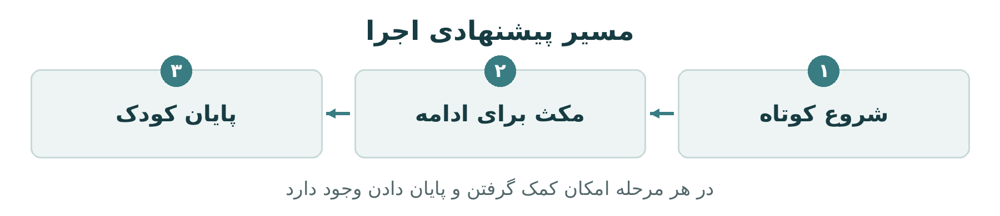
اینفوگرافی اجرای DR01 خواندن از راست به چپ
زمان پیشنهادی حدود ۵ تا ۱۰ دقیقه برای یک نوبت آغازین؛ ادامه یا پایان با توجه به علاقه، خستگی و شرایط واقعی. زمانگیری کودک لازم نیست.
وسایل این نسخه یک شخصیت عروسکی بزرگ یا تصویر ساده؛ کاغذ اختیاری.
پیش از دعوت شروع داستان در دو جمله و یک نقطه باز آماده شود؛ پایان از پیش تعیین نشود.
جمله آغاز «خرگوش کنار در یک جعبه پیدا کرد و صدایی شنید؛ بعد چه شد؟»
گام ۱ شروع کوتاه را بگویید و در نقطه انتخاب توقف کنید؛ برای پاسخ زمان بدهید.
گام ۲ یک جمله، اشاره یا حرکت کودک را وارد داستان کنید؛ جمله او را به پاسخ پیچیدهتر تبدیل نکنید.
گام ۳ اگر خواستید ادامه دهید، فقط از همان رویداد بپرسید بعد چه شد؛ پایان پیشنهادی کودک پذیرفته شود.
اگر بازی گیر کرد «میخواهی جعبه باز شود یا خرگوش کسی را صدا بزند؟ میتوانی هیچکدام را هم انتخاب نکنی.»
راه سادهتر یک شخصیت، یک رویداد و یک انتخاب تصویری.
اگر کودک چالش بیشتری خواست کودک یک جزئیات به شروع اضافه کند یا دو پایان بسازد؛ تعداد جملهها معیار نیست.
راه دیگر برای مشارکت عروسکگردانی، نقاشی، اشاره و زبان آشنای کودک بهجای روایت کلامی.
ایمنی همین اجرا داستان ترسناک یا نزدیک به تجربه ناراحتکننده کودک تحمیل نشود.
نمونه ثبت فرضی «گفت داخل جعبه باد بود و عروسک را عقب برد.» این فقط توصیف همان رخداد است؛ ثبت، فقط وقتی سؤال یا تصمیم مشخصی دارید.
مشاهده و تصمیم نوبت بعد ببین کودک ادامه را با واژه، عمل یا تصویر میسازد. اگر شروع دشوار است، دو امکان باز بده و انتخاب او را بسط بده؛ پایان متفاوت از انتظار تو را با پایان اصلی کتاب جایگزین نکن.
پایان و مرور یک پایان کوتاه یا رهاکردن قصه معتبر است؛ داستان ثبتشده باید با کلمات خود کودک باشد.
دعوت نمونه
«یه روز خرگوش یه جعبه کنار در پیدا کرد. درِ جعبه رو باز کرد و یه صدای عجیب شنید... بعدش چی شد؟»
بعد از سؤال، مکث کن. اگر کودک فقط یک جمله گفت، همان را بپذیر. اگر گفت «نمیدونم»، میتوان دو شروع بسیار کوتاه پیشنهاد داد: «فکر میکنی چیزی از جعبه اومد بیرون یا خرگوش رفت یکی رو صدا کرد؟»
نسخههای سنی DR01
بازه | تطبیق |
|---|---|
۳٫۵–۴ | یک شخصیت، یک مسئله، یک سؤال ادامه؛ پاسخ یکجملهای هم کافی. |
۴–۵ | دو یا سه رویداد؛ کودک میتواند پایان بسازد یا داستان را عوض کند. |
۵–۶ | امکان دو پایان، علت یا تغییر طرح؛ بدون اجبار به پیچیدگی. |
اگر آسان یا دشوار بود
آسان: از کودک بخواه یکی از جزئیات خودش را وارد شروع داستان کند. دشوار: شروع را کوتاهتر و ملموستر کن یا تصویر اضافه کن. لازم نیست سؤالهای بیشتری بپرسی.
از DR01 چه چیزی نمیتوان فهمید؟
پایان ساده، داستان کوتاه، استفاده از کلیشه یا نخواستن ادامه بهتنهایی زبان ضعیف، تخیل کم، حافظه ضعیف یا هوش پایین را نشان نمیدهد.
پشتوانه و حدود شواهد DR01
بخش | وضعیت |
|---|---|
خانواده | Narrative production / storytelling |
پشتوانه کلی | B/C برای رشد و مداخلات روایی؛ وابسته به روش/جمعیت |
خود DR01 | D |
L0 | موقعیتی برای ساخت ادامه داستان و پیوند رویدادها. |
L1 | میتواند فرصت پیشبینی و تولید روایت فراهم کند. |
L2/L3 | ممنوع: افزایش/سنجش زبان، حافظه، خلاقیت یا هوش. |
DR03 — خبرنگار کوچولو
در این بازی، کودک بهجای پاسخدادن به سؤالهای بزرگسال، خودش سؤال میسازد. محور اصلی گفتوگوی دوسویه است؛ نه شمارش تعداد سؤالها.
مولفه | تعریف |
|---|---|
کد | DR03–56–D |
سن هسته | ۵ تا ۶ سال |
سن قابل تطبیق | ۴٫۵ تا ۶ سال |
هدف اصلی | گفتوگوی دوسویه |
اهداف همراه | سؤالسازی؛ حافظه رویداد |
مشاهده اصلی | زبان + اجتماع |
حمایت کمینه | مدل یک سؤال |
سطح | D |
راهنمای دقیق اجرای بازی DR03
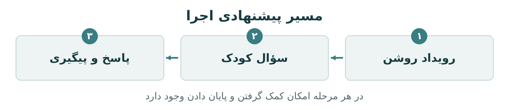
اینفوگرافی اجرای DR03 خواندن از راست به چپ
زمان پیشنهادی حدود ۵ تا ۱۰ دقیقه برای یک نوبت آغازین؛ ادامه یا پایان با توجه به علاقه، خستگی و شرایط واقعی. زمانگیری کودک لازم نیست.
وسایل این نسخه یک عروسک و یک شیء مربوط به سفر یا رویداد فرضی؛ میکروفن مقوایی کوتاه اختیاری.
پیش از دعوت رویدادی خنثی و کمفشار انتخاب کنید؛ موضوع خصوصی یا حساس نباشد.
جمله آغاز «این خرس از گردش برگشته؛ خبرنگار چه چیزی میخواهد بداند؟»
گام ۱ نقش خبرنگار و پاسخدهنده را معرفی کنید؛ اگر لازم بود یک سؤال مثل کجا رفتی مدل کنید.
گام ۲ کودک سؤال بپرسد یا با اشاره موضوع را انتخاب کند؛ بزرگسال پاسخ کوتاه بدهد و فرصت پیگیری بگذارد.
گام ۳ در صورت تمایل نقشها عوض شوند. یک سؤال یا نکته مورد علاقه مرور شود؛ تعداد سؤالها شمرده نشود.
اگر بازی گیر کرد «میخواهی درباره جایی که رفت یا چیزی که دید بپرسی؟»
راه سادهتر دو موضوع تصویری و یک سؤال؛ بزرگسال عروسک را پاسخدهنده کند.
اگر کودک چالش بیشتری خواست سؤال پیگیری بر اساس پاسخ قبلی؛ رویداد واقعی فقط با رضایت طرف مقابل.
راه دیگر برای مشارکت اشاره به موضوع، انتخاب تصویر و سیستم ارتباطی؛ حفظ زبان خانه.
ایمنی همین اجرا ضبط صدا یا تصویر بدون رضایت مناسب نباشد؛ درباره راز، ترس یا خانواده بازجویی نشود.
نمونه ثبت فرضی «پس از پاسخ خرس درباره پارک، پرسید چه کسی همراهت بود.» این فقط توصیف همان رخداد است؛ ثبت، فقط وقتی سؤال یا تصمیم مشخصی دارید.
مشاهده و تصمیم نوبت بعد ببین کودک پرسش میپرسد، پاسخ را دنبال میکند یا موضوع تازه میسازد. اگر گفتوگو طولانی است، یک پرسش و یک پاسخ کافی است؛ دفعه بعد جای مصاحبهکننده را عوض کن و از حفظ پرسشها انتظار نداشته باش.
پایان و مرور با جمعبندی یک نکته یا پایان مصاحبه به انتخاب کودک تمام کنید.
دو نسخه اجرا
رویداد واقعی کمفشار: بزرگسال درباره یک کار روزمره مثل خرید، آشپزی یا پیادهروی حرف میزند و کودک خبرنگار میشود.
رویداد وانمودی: عروسک «از سفر برگشته» و کودک میتواند از او سؤال بپرسد.
اگر کودک شروع نکرد، فقط یک سؤال مدل کن: «من اگه خبرنگار بودم میپرسیدم کجا رفتی؟ حالا تو میخوای چی بدونی؟» سپس عقب بکش.
نکته درباره حافظه رویداد
هدف بازی امتحانکردن حافظه کودک نیست. اگر رویداد واقعی را خوب به خاطر نمیآورد، میتوان تصویر، شیء یا یادآوری کوتاه داد. پاسخ دقیق یا کامل معیار ارزش بازی نیست.
از DR03 چه چیزی نمیتوان فهمید؟
کمسؤال بودن، تکرار سؤال، سؤال نامرتبط یا نیاز به مدل بزرگسال بهتنهایی ضعف زبان، حافظه، کنجکاوی، مهارت اجتماعی یا اختلال ارتباطی را نشان نمیدهد.
پشتوانه و حدود شواهد DR03
بخش | وضعیت |
|---|---|
خانواده | Interactive language / narrative conversation |
پشتوانه کلی | B برای تعامل زبانی؛ سؤالسازی خاص این بازی D |
خود DR03 | D |
L0 | موقعیتی برای تولید سؤال و رفتوبرگشت درباره یک رویداد. |
L1 | میتواند فرصت تمرین سؤالسازی و گوشدادن به پاسخ فراهم کند. |
L2/L3 | ممنوع: افزایش/سنجش زبان، حافظه رویداد، curiosity یا social skill. |
DR04 — سه تصویر، یک داستان
سه تصویر مستقل یا مرتبط روی میز قرار میگیرند و کودک از آنها یک روایت میسازد. در نسخه باز، ترتیب از قبل «صحیح» تعیین نمیشود.
مولفه | تعریف |
|---|---|
کد | DR04–45–D |
سن هسته | ۴ تا ۵ سال |
سن قابل تطبیق | ۳٫۵ تا ۶ سال |
هدف اصلی | توالی روایی |
اهداف همراه | حافظه؛ علتومعلول |
مشاهده اصلی | زبان + حل مسئله |
حمایت کمینه | ترتیب آزاد در نسخه باز |
سطح | D |
راهنمای دقیق اجرای بازی DR04
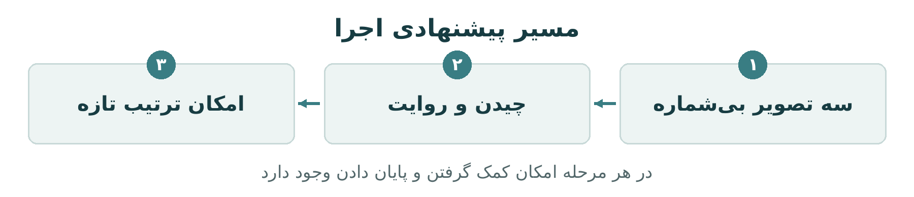
اینفوگرافی اجرای DR04 خواندن از راست به چپ
زمان پیشنهادی حدود ۵ تا ۱۰ دقیقه برای یک نوبت آغازین؛ ادامه یا پایان با توجه به علاقه، خستگی و شرایط واقعی. زمانگیری کودک لازم نیست.
وسایل این نسخه سه تصویر بزرگ روشن، مثل باران، چتر و گودال؛ بدون شماره ترتیب.
پیش از دعوت تصاویر همزمان دیده شوند و بیش از یک روایت ممکن داشته باشند.
جمله آغاز «دوست داری این سه تصویر را چطور به هم وصل کنیم؟»
گام ۱ کودک تصویر شروع را انتخاب کند؛ یکی یا همه تصاویر میتوانند وارد داستان شوند.
گام ۲ رویدادها با واژه، اشاره یا حرکت کنار هم قرار گیرند؛ فقط در نیاز یک پرسش درباره بعد یا علت مطرح کنید.
گام ۳ در صورت تمایل ترتیب دو تصویر عوض شود و داستان تازه ساخته شود؛ دو نسخه را درست و غلط ننامید.
اگر بازی گیر کرد «از این تصویر شروع کردی؛ دوست داری تصویر بعد را نشان بدهی؟»
راه سادهتر دو تصویر و یک ارتباط ساده؛ بزرگسال یک جمله مدل کند.
اگر کودک چالش بیشتری خواست دو پایان یا ترتیب دوم با همان تصاویر؛ فشار برای علتگویی نباشد.
راه دیگر برای مشارکت تصاویر درشت و قابل جابهجایی؛ اشاره یا روایت در زبان خانه.
ایمنی همین اجرا تصاویر کلیشهای یا ترسناک حذف شوند؛ توان جابهجایی کارت شرط مشارکت نباشد.
نمونه ثبت فرضی «اول گودال را گذاشت و گفت بعد باران آمد و بزرگترش کرد.» این فقط توصیف همان رخداد است؛ ثبت، فقط وقتی سؤال یا تصمیم مشخصی دارید.
مشاهده و تصمیم نوبت بعد ببین کودک تصاویر را با چه رابطهای کنار هم میگذارد. اگر سه تصویر دشوار است، با دو تصویر آشنا شروع کن؛ اگر ترتیب دیگری برای داستانش معنی دارد، توضیح او را بشنو و ترتیب خودت را تنها پاسخ ندان.
پایان و مرور روایت کودک را بدون اصلاح به ترتیب مورد انتظار مرور کنید.
مواد و اجرا
سه تصویر واضح و فرهنگی/روزمره: مثلاً باران، چتر، گودال؛ یا گربه، جعبه، پنجره.
در نسخه باز، تصاویر طوری انتخاب شوند که بیش از یک ترتیب قابل دفاع داشته باشند.
کودک تصاویر را میچیند و داستان میگوید. بزرگسال فقط در صورت نیاز میپرسد: «بعدش چی شد؟» یا «چی باعث شد این اتفاق بیفته؟»
نسخه بسته و نسخه باز
نسخه | هدف | مرز |
|---|---|---|
بسته | تصاویر یک توالی واضح دارند؛ تمرکز روی دنبالکردن sequence. | اگر هدف آموزشی sequence است، ترتیب معیار دارد؛ باز هم یک اجرا تشخیص نیست. |
باز | چند ترتیب ممکن است؛ کودک باید پیوند روایی بسازد. | ترتیب متفاوت خطا نیست اگر داستان قابل دنبالکردن باشد. |
از DR04 چه چیزی نمیتوان فهمید؟
ترتیب متفاوت، جاانداختن تصویر، علت غیرمنتظره یا روایت کوتاه بهتنهایی خطا شناختی، ضعف حافظه، مشکل زبان یا ضعف علتومعلول را نشان نمیدهد.
پشتوانه و حدود شواهد DR04
بخش | وضعیت |
|---|---|
خانواده | Narrative sequencing / picture-elicited storytelling |
پشتوانه کلی | B/C برای رشد روایت؛ تکلیف-dependent |
خود DR04 | D |
L0 | موقعیتی برای چیدن تصاویر و ساخت رابطه زمانی/علّی. |
L1 | میتواند فرصت توالی و توضیح پیوند میان رویدادها فراهم کند. |
L2/L3 | ممنوع: افزایش/سنجش حافظه کاری، language, استدلال علتومعلولی یا IQ. |
سه سؤال والد
چه چیزی جذبش کرد؟
کجا برایش سخت شد؟
چه چیزی کمکش کرد؟
مشاهده حرفهای؛ فقط اگر هدف مشخصی دارید
در DR01 و DR04 میتوانید فقط یک سؤال آموزشی انتخاب کنید: کودک چگونه رویدادها را به هم پیوند داد؟ در DR03: چگونه سؤال را آغاز کرد یا به پاسخ طرف مقابل واکنش نشان داد؟
ثبت عینی نمونه: «سه تصویر را به ترتیب گربه، باران، خانه گذاشت و گفت: گربه رفت بیرون، بارون اومد، رفت خونه.» نه: «ساختار کلی روایت ضعیف داشت.»
علم چه میگوید؟
آنچه نسبتاً میدانیم
در سالهای پیشدبستانی، سازمان روایت و زبان روایی بهتدریج تغییر میکنند و سن یکی از عوامل مرتبط است؛ با این حال مؤلفهها یک مسیر یکسان ندارند.
Head Start بازگویی داستان و رویداد را بخشی از رشد زبان/سواد میداند و آن را با توالی، شخصیت و روابط علّی مرتبط میکند.
مداخلات interactive reading در یک متاآنالیز ۲۰۲۵ روی ۲۵ مطالعه و ۲۸۸۶ کودک، بهطور میانگین اثر متوسطی بر narrative ability گزارش کردند؛ اما ناهمگنی بالا بود و اثرها به مدت و طراحی مداخله وابسته بودند.
روایت میتواند با حافظه کاری و زبان ارتباط داشته باشد، اما رابطه به معنای امکان استنتاج این سازهها از یک بازی داستانی نیست.
آنچه نمیتوانیم بگوییم
داستان طولانیتر یعنی زبان یا هوش بالاتر.
پایان ساده در DR01 یعنی ضعف زبان.
کودکی که سؤال کمی در DR03 میسازد مهارت زبانی یا کنجکاوی کمتری دارد.
ترتیب متفاوت در نسخه باز DR04 اشتباه است.
یکی از این سه فعالیت حافظه کاری، narrative ability یا استدلال علتومعلولی را افزایش میدهد.
این بازیها میتوانند اختلال زبان، ADHD، اوتیسم یا ضعف حافظه را غربال یا تشخیص دهند.
در خانه چه میتوان کرد
پیش از افزودن سؤال، روایت کودک را بشنوید و بخشی از آن را به او برگردانید.
برای ادامه، یک امکان پیشنهاد کنید؛ پایان انتخابی او را هم بپذیرید.
تعداد جملهها را به ارزش قصه یا توانایی کلی کودک تبدیل نکنید.
در سه تصویر، اول ببینید کودک برای ترتیبش چه منطقی ساخته.
زبان خانه یا ترکیب زبانها را وارد روایت کنید.
در مهد یا کارگاه
تصویرهای محدود و قابل فهم انتخاب کنید و راههای مختلف روایت را بپذیرید. برای مشاهده، یک پیوند مشخص میان رویدادها را دنبال کنید و زمینهٔ زبان و حمایت بزرگسال را نیز در نظر بگیرید.
برای کودک چندزبانه، داستان در یک زبان فقط یک نمونه از توان روایی اوست. اگر نگرانی تخصصی وجود دارد، ارزیابی باید زمینه زبانی و ابزار مناسب را در نظر بگیرد.
یک تجربه برای این هفته
یک قصهٔ کوتاه را بدون اصلاح ترتیب یا پایان گوش کنید.
فقط یک پرسش باز و مرتبط پیشنهاد کنید. سپس ببینید کودک مایل است چه چیزی به روایت اضافه کند.
همراهی در موقعیتهای روزمره
بزرگسالان نیز هنگام دیدن رفتار کودک داستانهایی در ذهن خود میسازند. مهارت حرفهای این است که این داستانها را با داده واقعی اشتباه نگیریم.
قبل از نتیجهگیری بپرسیم:
• چه چیزی را واقعاً دیدم؟
• چه چیزی را حدس زدم؟
• چه اطلاعات دیگری لازم دارم؟
تمرین: یک برداشت درباره رفتار کودک را بنویسید و زیر آن دادههای واقعی را جدا کنید.
داستان را با تصحیح پیدرپی قطع نکنیم
کودک میگوید «اول بارون اومد، بعد خورشید رفت خرید». اگر هدف گفتوگوی داستانی است، میتوانید ادامه را بپرسید. اگر میخواهید توالی یک اتفاق واقعی را روشن کنید، همان هدف را جدا بگویید: «برای اینکه بفهمم چی شد، قبل از بارون کجا بودی؟» خیال و گزارش واقعه را با یک معیار واحد نسنجید.
سهم بزرگسال در روایت
هنگام مرور، ببینید چند بخش داستان را خود شما اضافه کردید. اگر بیشتر روایت متعلق به شماست، دفعه بعد از تصویر یا جمله آغازین کوتاه استفاده کنید و ادامه را باز بگذارید. کودک میتواند با اشاره، حرکت عروسک یا انتخاب تصویر هم روایت بسازد.
پایان فصل
این هفته... | پیشنهاد |
|---|---|
بیشتر ببین | کودک چگونه بین دو رویداد رابطه میسازد؟ |
کمتر انجام بده | کشدادن داستان برای رسیدن به نسخه «کاملتر». |
امتحان کن | یک پیشبینی بدون جواب درست، یک سؤال مدل، یا یک توالی باز سهتصویری. |
از خودت بپرس | دارم به کودک کمک میکنم داستانش را بسازد یا داستانی را که من میخواهم از او بیرون میکشم؟ |
قصه میتواند کوتاه بماند و همچنان جایی برای توجه مشترک باشد. از همان چیزی که کودک امروز گفته یا نشان داده، میتوان گفتوگوی بعدی را آغاز کرد.
فصل بعد روی یک سؤال ظریفتر میایستد: «اگر جای او بودی...»؛ دیدگاهگیری بدون ادعای سنجش یا تضمین همدلی.
منابع منتخب فصل
Shunhua L, Tianlong Q. (2023). A Tale of Age and Abilities: Analyzing Narrative Macrostructure Development in Chinese Preschoolers Through the Lens of Story Grammar. Journal of Psycholinguistic Research, 52, 2453–2472. https://doi.org/10.1007/s10936-023-10007-y
Head Start. Language — ELOF / School Readiness.
Ralli AM, Kazali E, Kanellou M, Mouzaki A, Antoniou F, Diamanti V, Papaioannou S. (2021). Oral Language and Story Retelling During Preschool and Primary School Years: Developmental Patterns and Interrelationships. Journal of Psycholinguistic Research, 50, 949–965. https://doi.org/10.1007/s10936-021-09758-3
Veraksa A, Bukhalenkova D, Kartushina N, Oshchepkova E. (2020). The Relationship between Executive Functions and Language Production in 5–6-Year-Old Children: Insights from Working Memory and Storytelling. Behavioral Sciences, 10(2), 52. https://doi.org/10.3390/bs10020052
Boerma T, Leseman P, Timmermeister M, Wijnen F, Blom E. (2016). Narrative abilities of monolingual and bilingual children with and without language impairment: implications for clinical practice. International Journal of Language & Communication Disorders, 51(6), 626–638. https://doi.org/10.1111/1460-6984.12234
Xing L, Tang Y, Liu Q, Chen H, Zeng J, Su J. (2025). The effects of interactive reading on young children’s narrative abilities: a meta-analytic study. Frontiers in Psychology, 16, 1653511. https://doi.org/10.3389/fpsyg.2025.1653511
یادداشت روششناختی: DR01، DR03 و DR04 فعالیتهای سطح D هستند؛ این فصل ابزار ارزیابی یا تشخیص نیست.
فصل ۱۶ اگر جای او بودی
در این فصل چه میخوانیم؟
دو نفر میتوانند یک داستان را بشنوند و دربارهٔ آدمهای آن تصورهای متفاوتی داشته باشند.
«اگه جای اون بودی، ناراحت نمیشدی؟»
در قصه، دوستِ یک کودک بدون او بازی را شروع کرده است. بزرگسال میپرسد: «اگه جای اون بودی، ناراحت نمیشدی؟» کودک جواب میدهد: «من میرفتم یه بازی دیگه.» پاسخ با انتظار ما یکسان نیست، اما هنوز چیزهایی برای گفتوگو دارد.
میتوانیم بپرسیم: «فکر میکنی خودِ این شخصیت چه میخواهد؟ از کجای قصه فهمیدی؟» شاید کودک به تصویری اشاره کند یا بگوید اطلاعات بیشتری لازم دارد. بهجای رساندن او به یک جواب اخلاقی، دربارهٔ تفاوت خواستهها و اطلاعات حرف میزنیم.
دیدگاهگیری به دانستن جای دیگران مربوط است: چه میبینند، چه میدانند و چه میخواهند. پرسشهای ما وقتی راه گفتوگو را باز میکنند که بیش از یک پاسخ ممکن را بپذیریم و پاسخ کودک را به صفت شخصیت تبدیل نکنیم.
پرسش این فصل
چطور دربارهٔ تفاوت فکر و خواستهٔ شخصیتها حرف بزنیم و پاسخهای مختلف کودک را بررسی کنیم؟
دیدگاهگیری، نظریه ذهن و همدلی یکی نیستند
Perspective taking اصطلاح گستردهای است و میتواند به تلاش برای درنظرگرفتن موقعیت از زاویه فرد دیگری اشاره کند. نظریه ذهن معمولاً بر فهم این موضوع تمرکز دارد که دیگران میتوانند باورها، خواستهها، دانش و حالتهای ذهنی متفاوتی از ما داشته باشند. همدلی نیز چندبعدی است و معمولاً مؤلفههای شناختی، هیجانی و رفتاری از هم تفکیک میشوند.
این حوزهها همپوشانی دارند، اما یکی نیستند. یک کودک ممکن است بفهمد دیگری چه فکری میکند ولی همان احساس را تجربه نکند؛ یا احساس ناراحتی دیگری را تشخیص دهد ولی راهحل متفاوتی پیشنهاد کند.
در نتیجه DR05 فقط روی یک رفتار آموزشی محدود کار میکند: گفتوگو درباره «ممکن است دیگری چگونه موقعیت را ببیند؟»
پژوهش چه میگوید؟
مطالعه طولی منتشرشده در ۲۰۲۵ درباره رشد همدلی و نظریه ذهن در سن پیشدبستانی نشان میدهد این سازهها با هم مرتبطاند، اما مسیرهای رشد آنها ساده و هممعنا نیستند. همین تفاوت مفهومی دلیل دیگری است که پاسخ DR05 را «همدلی» ننامیم.
متاآنالیز ۲۰۲۴ درباره نظریه ذهن، همدلی و رفتار یاریرسان نیز نشان داد این متغیرها با رفتارهای یاریگرانه ارتباط دارند، اما اندازه و شکل رابطهها بسته به نوع مطالعه و سازه متفاوت است. رابطه آماری به معنی آن نیست که یک پاسخ دیدگاهگیری مستقیماً رفتار اخلاقی یا اجتماعی کودک را پیشبینی کند.
در سوی مداخله، مطالعه اکتشافی ۲۰۲۴ با ۳۴ کودک ۴۰ تا ۷۰ ماهه، پس از هشت هفته فعالیتهای گفتوگویی درباره افکار و هیجانهای شخصیتها، بهبودهایی در بعضی شاخصهای نظریه ذهن و درک هیجان گزارش کرد. اما نمونه بسیار کوچک بود و برنامه شامل چند فعالیت ساختاریافته بود؛ بنابراین نمیتوان اثر آن را به سؤال ساده «اگر جای او بودی؟» تعمیم داد.
مطالعات آموزش همدلی/دیدگاهگیری در پیشدبستانی نیز گاهی بهبودهایی گزارش کردهاند، اما یک برنامه چندجلسهای با یک بازی کتاب برابر نیست.
سؤال «اگر جای او بودی؟» همیشه دقیقترین سؤال نیست
سؤال | چه چیزی را دعوت میکند؟ |
|---|---|
«اگه جای او بودی چی کار میکردی؟» | راهحل یا واکنش خود کودک در همان موقعیت. |
«فکر میکنی او چی میخواست؟» | توجه به خواسته شخصیت. |
«او چه چیزی میدونه که تو میدونی/نمیدونی؟» | تفاوت دانش و اطلاعات. |
«ممکنه چه حسی داشته باشه؟» | چند احتمال هیجانی، نه یک جواب قطعی. |
«از کجا اینو حدس زدی؟» | ارتباط پاسخ با نشانههای داستان. |
دیدگاهگیری با حدس ذهن دیگری فرق دارد
حتی بزرگسال هم ذهن دیگری را مستقیماً نمیبیند. ما از نشانهها، گفتهها و زمینه، فرضیه میسازیم. بنابراین بهتر است زبان فصل احتمالی بماند: «ممکنه»، «شاید»، «فکر میکنی».
این زبان به کودک نشان میدهد که ذهن دیگری موضوع کنجکاوی است، نه چیزی که باید با اطمینان کامل دربارهاش حکم داد.
یک موقعیت، چند دیدگاه
موقعیت | چند پاسخ ممکن |
|---|---|
دوستت بدون تو بازی را شروع کرده | ناراحت، بیتفاوت، کنجکاو، عصبانی، یا تصمیم به بازی دیگری. |
نقاشیات اشتباهی پاره شده | ناراحتی، درخواست تعمیر، عصبانیت، خنده، ساخت چیز تازه. |
کسی هدیهای گرفته که دوستش ندارد | خوشحالی از توجه، ناراحتی از هدیه، خجالت، یا واکنش ترکیبی. |
همدلی را با «جواب مهربانانه» اندازه نگیریم
اگر کودک بگوید «من بهش نمیدادم»، ممکن است پاسخ برای بزرگسال خوشایند نباشد. اما قبل از نتیجه اخلاقی، باید بفهمیم کودک موقعیت را چگونه فهمیده است. شاید فکر کرده وسیله متعلق به خودش است، شاید شخصیت دیگری را مقصر میداند یا شاید فقط جواب آزمایشی داده است.
DR05 برای آموزش «جواب درست اخلاقی» طراحی نشده. اگر هدف آموزش یک قاعده اجتماعی مشخص است، آن را شفاف آموزش بدهید؛ لازم نیست آن را پشت یک آزمون همدلی پنهان کنیم.
نظریه ذهن را از یک سؤال نمیسنجیم
ارزیابی نظریه ذهن در پژوهش و کار تخصصی با تکالیف و ابزارهای مشخص انجام میشود و خودِ این ابزارها نیز محدودیت دارند. حتی ابزارهای جدید چندبعدی برای سن پیشدبستانی در حال توسعه و اعتبارسنجی هستند.
در این کتاب پاسخ به یک سناریو هرگز معادل «ToM دارد/ندارد» نیست.
سن چه چیزی را تغییر میدهد؟
DR05 در طراحی کتاب برای حدود ۴٫۵ تا ۶ سال طراحی شده و در معماری سن هسته کتاب در ۵–۶ سال قرار میگیرد. این یک تصمیم طراحی است، نه نقطه عطف رشدی.
بازه | طراحی مناسبتر |
|---|---|
۴٫۵–۵ | سناریوی کوتاه و ملموس؛ دو دیدگاه روشن؛ سؤال درباره خواسته یا احساس؛ اطلاعات کم و واضح. |
۵–۶ | دو یا سه شخصیت، تفاوت دانش/خواسته، چند پاسخ ممکن و درخواست دلیل کوتاه؛ بدون آزمون false-belief رسمی. |
چندزبانه و کمکلام؛ پاسخ فقط کلام کامل نیست
کودک میتواند با اشاره به تصویر، انتخاب کارت، AAC، زبان خانه یا یک جمله کوتاه دیدگاهش را نشان دهد. پاسخ طولانیتر بهتنهایی دیدگاهگیری بهتر را ثابت نمیکند.
اگر کودک زبان موقعیت را خوب نفهمیده باشد، پاسخ او بیشتر درباره بار زبانی سؤال اطلاعات میدهد تا درباره فهم دیدگاه.
DR05 — اگر جای او بودی...
این فعالیت یک گفتوگوی کوتاه درباره تفاوت دیدگاههاست؛ نه همدلی test و نه Theory-of-Mind ارزیابی.
مولفه | تعریف |
|---|---|
کد | DR05–56–D |
سن هسته | ۵ تا ۶ سال |
سن قابل تطبیق | ۴٫۵ تا ۶ سال |
هدف اصلی | دیدگاهگیری |
اهداف همراه | زبان؛ هیجان |
مشاهده اصلی | اجتماع + زبان |
حمایت کمینه | سؤال غیرقضاوتی |
سطح خود فعالیت | D |
راهنمای دقیق اجرای بازی DR05
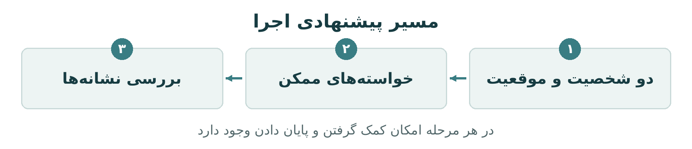
اینفوگرافی اجرای DR05 خواندن از راست به چپ
زمان پیشنهادی حدود ۵ تا ۱۰ دقیقه برای یک نوبت آغازین؛ ادامه یا پایان با توجه به علاقه، خستگی و شرایط واقعی. زمانگیری کودک لازم نیست.
وسایل این نسخه یک تصویر واضح از دو شخصیت با خواستههای متفاوت؛ دو کارت انتخاب بزرگ.
پیش از دعوت موقعیت فرضی از تعارض واقعی کودک جدا باشد؛ دو شخصیت و اطلاعات قابل مشاهده کافی است.
جمله آغاز «فکر میکنی هرکدام چه چیزی میخواهند؟»
گام ۱ تصویر را خنثی توصیف کنید؛ مثلاً یکی روی تاب و دیگری کنار تاب است. درباره خواسته هر شخصیت یک سؤال مطرح کنید.
گام ۲ پاسخ کودک را بشنوید و بپرسید کدام نشانه تصویر به این فکر کمک کرد؛ حالت چهره معنای قطعی ندارد.
گام ۳ اگر علاقه داشت اطلاعات تازه کوچکی اضافه کنید و امکان تغییر یا حفظ برداشت را بپذیرید؛ پاسخ اخلاقی از پیش تعیین نشود.
اگر بازی گیر کرد «تو میگویی منتظر نیست؛ چه چیزی در تصویر این فکر را به تو داد؟»
راه سادهتر فقط انتخاب خواسته از دو تصویر؛ سؤال اگر جای او بودی حذف شود.
اگر کودک چالش بیشتری خواست یک تفاوت اطلاعات یا دو راه کمک در داستان؛ به آزمون ذهنخوانی تبدیل نشود.
راه دیگر برای مشارکت تصویر بزرگ، کارت خواسته و پاسخ با اشاره یا سیستم ارتباطی.
ایمنی همین اجرا کودک به افشای تعارض واقعی یا انتخاب احساس مشخص مجبور نشود.
نمونه ثبت فرضی «گفت شخصیت دوم میخواهد تاب دیگر را امتحان کند و به کنار تصویر اشاره کرد.» این فقط توصیف همان رخداد است؛ ثبت، فقط وقتی سؤال یا تصمیم مشخصی دارید.
مشاهده و تصمیم نوبت بعد ببین کودک میان دانسته، خواسته و احساس شخصیتها چه تفاوتی میبیند. اگر اطلاعات داستان کم است، همان اطلاعات را روشن کن؛ پاسخ متفاوت درباره احساس را تصحیح اخلاقی نکن و نتیجه را نمره همدلی ننام.
پایان و مرور با پذیرفتن امکان چند برداشت پایان دهید؛ پاسخها نمره همدلی نگیرند.
مواد
۳ تا ۶ تصویر یا کارت سناریوی روزمره و غیرتروماتیک.
در صورت تمایل دو عروسک/شخصیت بزرگ و ایمن.
کارتهای ساده احساس یا انتخاب برای کودکانی که پاسخ کلامی دشوارتر است.
سه نوع سناریو
نوع | نمونه |
|---|---|
تفاوت خواسته | دو کودک یک وسیله دارند؛ یکی میخواهد ادامه دهد، دیگری میخواهد عوض کند. |
تفاوت اطلاعات | یک شخصیت ندیده که اسباببازی به جعبه دیگری منتقل شده است. |
تفاوت احساس/تفسیر | یک کودک از صدای بلند جشن خوشحال است، دیگری گوشش را میگیرد و فاصله میخواهد. |
مسیر اجرا
مرحله | کار بزرگسال |
|---|---|
۱. موقعیت | سناریو را کوتاه و روشن تعریف کن. |
۲. دیدگاه اول | «فکر میکنی این شخصیت چی میخواد/میدونه/حس میکنه؟» |
۳. مکث | جواب را اصلاح نکن؛ ببین کودک چه نشانهای استفاده میکند. |
۴. دیدگاه دوم | «اون یکی ممکنه چی فکر کنه؟» |
۵. دلیل اختیاری | «از کجا اینو حدس زدی؟» فقط اگر کودک درگیر است. |
۶. چند احتمال | اگر مناسب بود: «ممکنه یه جور دیگه هم باشه؟» |
نمونه اجرای کامل
تصویر: دو کودک کنار تاب. یکی روی تاب نشسته و دیگری منتظر است.
بزرگسال: «این یکی روی تابه. اون یکی اینجاست. فکر میکنی هر کدوم چی میخوان؟»
کودک: «این میخواد تاب بخوره. اونم میخواد تاب بخوره.»
بزرگسال: «پس دو نفر یه چیز رو میخوان. به نظرت اون که منتظره ممکنه چه حسی داشته باشه؟»
کودک: «هیچی. صبر میکنه.»
بزرگسال: «ممکنه. از کجا فهمیدی صبر میکنه؟»
در اینجا بزرگسال لازم نیست کودک را مجبور کند بگوید «ناراحت است».
اگر پاسخ کودک با انتظار شما فرق داشت
اول پاسخ را بازتاب بده: «تو فکر میکنی مشکلی براش نیست.»
اگر تصویر نشانه دیگری دارد، آن را بدون قضاوت اضافه کن: «میبینم ابروهاش اینطوری شده؛ ممکنه معنی دیگهای هم داشته باشه؟»
اگر کودک نظرش را تغییر نداد، فعالیت همچنان معتبر است.
هدف توافق با بزرگسال نیست.
اگر خیلی آسان بود
یک تفاوت اطلاعات اضافه کن؛ مثلاً یکی از شخصیتها چیزی را ندیده است. اما فعالیت را به false-belief test تبدیل نکن و پاسخ را نمره نده.
اگر دشوار بود
سناریو را به دو شخصیت و یک خواسته ساده کاهش بده. سؤال «اگر جای او بودی؟» را کنار بگذار و فقط بپرس «این یکی چی میخواد؟»
اگر کودک نخواست
سناریو را تمام کن. DR05 تمرین اخلاقی اجباری نیست. میتوان در زمان دیگری از داستان یا موقعیت طبیعی گفتوگو استفاده کرد.
راههای دیگر برای مشارکت
انتخاب بین دو تصویر احساس یا خواسته.
اشاره به شخصیت.
AAC.
پاسخ در زبان خانه.
بازیکردن نقش بهجای توضیح کلامی.
سه سؤال والد
چه چیزی جذبش کرد؟
کجا برایش سخت شد؟
چه چیزی کمکش کرد؟
مشاهده حرفهای؛ فقط اگر هدف مشخصی دارید
اگر نیاز آموزشی به مشاهده دارید، ثبت کنید کودک چه دیدگاهی را بیان کرد و چه اطلاعاتی برای پاسخ استفاده کرد. مثال: «گفت شخصیت دوم ناراحت نیست چون "هنوز یه تاب دیگه هست".»
ننویسید: «همدلی پایین دارد» یا «نظریه ذهن ضعیف است».
یک تجربه برای این هفته
در یک داستان آشنا، دربارهٔ خواستهٔ دو شخصیت پرسش کنید. لازم نیست کودک یک پاسخ کامل بدهد.
یک اشاره یا احتمال را بگیرید و با شواهد همان داستان بررسی کنید.
از DR05 چه چیزی نمیتوان فهمید؟
پاسخ متفاوت، پاسخ غیرمهربانانه، ندانستن احساس، انتخاب خودمحور، نیاز به مدل یا تغییرندادن نظر بهتنهایی کمبود همدلی، نظریه ذهن ضعیف، مشکل اخلاقی، اوتیسم، اختلال سلوک، ضعف زبان یا مشکل اجتماعی را نشان نمیدهد. DR05 ابزار ارزیابی نیست.
پشتوانه و حدود شواهد DR05
عنصر | وضعیت |
|---|---|
خانواده علمی | Perspective taking / Theory of Mind / empathy-related conversation |
شواهد رشد/مداخله | B/C بسته به سازه و مطالعه |
سطح خود DR05 | D |
L0 مجاز | «فعالیت موقعیتی برای حرفزدن درباره خواسته، دانش، احساس و دیدگاه متفاوت فراهم میکند.» |
L1 محتاطانه | «میتواند فرصت تمرین توجه به چند دیدگاه و توضیح دلیل فراهم کند.» |
L2 غیرمجاز | «همدلی یا نظریه ذهن را افزایش میدهد.» |
L3 غیرمجاز | «همدلی/ToM/ASD/مشکل اخلاقی را میسنجد یا تشخیص میدهد.» |
علم چه میگوید؟
آنچه نسبتاً میدانیم
نظریه ذهن، همدلی و perspective taking سازههای مرتبط اما متمایزند.
در دوره پیشدبستانی، فهم خواسته، باور و هیجان دیگران بهتدریج پیچیدهتر میشود، اما تفاوت فردی و زبانی مهم است.
متاآنالیزها میان ToM/همدلی و رفتار یاریرسان رابطه گزارش کردهاند، اما این رابطهها کامل و قطعی نیستند.
برخی برنامههای چندجلسهایِ مبتنی بر گفتوگو درباره حالات ذهنی در کودکان پیشدبستانی بهبودهایی در ToM یا درک هیجان گزارش کردهاند؛ کیفیت و اندازه مطالعات متفاوت است.
آنچه نمیتوانیم بگوییم
یک پاسخ «مهربانانه» یعنی کودک همدلی بالایی دارد.
پاسخ متفاوت یعنی کمبود همدلی.
پاسخ DR05 میتواند نظریه ذهن را بسنجد.
تمرین «اگر جای او بودی» بهتنهایی همدلی یا رفتار یاریرسان را افزایش میدهد.
کودکی که احساس شخصیت را اشتباه حدس میزند مشکل اجتماعی یا اوتیسم دارد.
همه کودکان باید درباره یک موقعیت هیجان مشابهی را نسبت دهند.
در خانه چه میتوان کرد
میان «من چه میخواهم» و «این شخصیت چه میخواهد» فرق بگذارید.
اگر پاسخ کودک غافلگیرتان کرد، پیش از اصلاح، از او بپرسید کدام بخش داستان را در نظر گرفته است.
اگر اطلاعات کافی نداریم، گفتن «نمیدانیم» را نیز وارد گفتوگو کنید.
گاهی درباره خواسته و دانش بپرسید، نه فقط احساس.
پاسخ کوتاه یا زبان خانه را معتبر بدانید.
در مهد یا کارگاه
از سؤالهای هدایتکنندهای که فقط یک پاسخ موردپسند دارند فاصله بگیرید. پاسخ را با دانش، زبان و زمینهٔ تکلیف تفسیر کنید و از این گفتوگو نمرهٔ همدلی نسازید.
اگر هدف آموزشی social problem solving است، بعد از مرحله دیدگاهگیری میتوان درباره راهحلها حرف زد؛ ولی فهم دیدگاه و انتخاب راهحل دو مرحله جدا هستند.
همراهی در موقعیتهای روزمره
از سؤال اخلاقی به گفتوگوی روشن
در بازی، دو کودک یک ماشین را میخواهند. بزرگسال میپرسد «اگه جای دوستت بودی، نمیدادی؟». این سؤال هم درباره احساس است و هم درباره رفتار مورد انتظار؛ کودک ممکن است نداند قرار است به کدام پاسخ دهد. گفتوگو را جدا کنید: «تو ماشین رو میخوای. او هم گفته میخواد. برای ادامه بازی چه راهی داریم؟» فهمیدن خواسته دو نفر و پیدا کردن راهحل، دو کار مرتبط اما متفاوتاند.
یک سناریوی کمفشار
دو عروسک را کنار یک جعبه بگذارید. عروسک اول میداند کاغذها داخل جعبهاند؛ عروسک دوم هنگام گذاشتن کاغذها حضور نداشته است. فقط درباره اطلاعاتی که هر شخصیت دارد حرف بزنید: «این یکی ندیده چی گذاشتیم. چه چیزی رو میدونه؟» اگر کودک موضوع را دنبال نکرد، تفاوت را در روایت خود روشن کنید و بازی را ادامه دهید. این پیشنهاد برای گفتوگوست و پاسخ آن نمره فهم ذهن دیگری نیست.
گفتوگوی نمونه
بزرگسال: «این شخصیت میخواد تنها نقاشی کنه؛ دوستش میخواد کنارش باشه.» کودک: «باید با دوستش بازی کنه.» بزرگسال: «تو باهم بودن رو پیشنهاد میدی. اگر هنوز تنها بودن رو بخواد، چه راه دیگهای هست؟» لازم نیست کودک فوراً راهحل منصفانه بسازد. میتوانید یک امکان اضافه کنید و دوباره به داستان برگردید.
حمایت و مشارکت جایگزین
برای کودک کمکلام یا کودکی که زبان روایت برایش ناآشناست، یک موقعیت و دو شخصیت کافی است. اشاره به شخصیت، انتخاب تصویر یا جابهجا کردن عروسک را بپذیرید. پیچیدهتر کردن سؤال زمانی مناسب است که کودک هنوز به موضوع علاقه دارد؛ طول پاسخ یا موافقت با بزرگسال ملاک افزایش دشواری نیست.
تمرین و مرور بزرگسال
در یک گفتوگوی طبیعی، به جای «معلومه چه حسی داره» بگویید «ممکنه چه حسی داشته باشه؟». بعد فقط یک بار درباره نشانهای که کودک دیده سؤال کنید. مرور کنید آیا کنجکاوی شما واقعی بود یا تا رسیدن به جواب دلخواه ادامه دادید. اگر موقعیت شامل صدمه زدن است، مرز «نمیگذارم بزنی» را روشن کنید؛ برای برقرار کردن مرز، لازم نیست ابتدا همدلی کودک را اثبات کنید.
پایان فصل
این هفته... | پیشنهاد |
|---|---|
بیشتر ببین | کودک هنگام حرفزدن درباره دیگری به چه اطلاعاتی توجه میکند؟ |
کمتر انجام بده | وادارکردن کودک به گفتن احساس مورد انتظار بزرگسال. |
امتحان کن | یک سناریو با دو دیدگاه معتبر و یک سؤال «از کجا اینو حدس زدی؟» |
از خودت بپرس | دارم دیدگاهگیری را باز میکنم یا دارم جواب اخلاقی خودم را از کودک میگیرم؟ |
گاهی دستاورد گفتوگو همین است که دو احتمال را کنار هم نگه داریم. تفاوت پاسخ، میتواند نقطهٔ شروع شنیدن بیشتر باشد.
با پایان فصل ۱۶، بخش «کتاب، داستان و ذهن دیگری» کامل میشود. فصل ۱۷ وارد کارکردهای اجرایی میشود: «قبل از حرکت، توقف کن».
منابع منتخب فصل
Qiu X, Gao M, Zhu H, Li W, Jiang R. Theory of mind, empathy, and prosocial behavior in children and adolescent: a meta-analysis. Current Psychology. 2024;43:19690–19707. https://doi.org/10.1007/s12144-024-05762-7.
Simon P, Nader-Grosbois N. (2025). Empathy and theory of mind development at preschool age: a one-year cross-lagged panel study. European Journal of Developmental Psychology. https://doi.org/10.1080/17405629.2025.2467033
Grazzani I. Promoting theory of mind and emotion understanding in preschool settings: an exploratory training study. Frontiers in Psychology. 2024;15:1439824. https://doi.org/10.3389/fpsyg.2024.1439824.
Aslan D, Köksal Akyol A. Impact of an Empathy Training Program on Children's Perspective-Taking Abilities. Psychological Reports. 2020.
Hofmann SG, et al. Training children's theory-of-mind: A meta-analysis of controlled studies. Cognition. 2016.
Fu IN, Chen CT, Chen KL, Liu MR, Hsieh CL. (2024). Development and validation of the newly developed Preschool Theory of Mind Assessment (ToMAP). Frontiers in Psychology, 15, 1274204. https://doi.org/10.3389/fpsyg.2024.1274204
یادداشت روششناختی: DR05 یک فعالیت آموزشی سطح D است. شواهد مربوط به برنامههای دیدگاهگیری/ToM/همدلی و همبستگیهای اجتماعی به خود این بازی منتقل نمیشوند. پاسخ کودک در DR05 هرگز بهعنوان نمره همدلی یا نظریه ذهن تفسیر نمیشود.
بخش ۶ کارکردهای اجرایی حرکت و ساختن
فصلهای ۱۷ تا ۲۱
قاعده روشن، توالی کوتاه و امکان یادآوری، تجربه بازی را قابل فهم میکنند. ساختهها در آزمونهای ساده دیده و با تصمیم کودک تغییر داده میشوند.
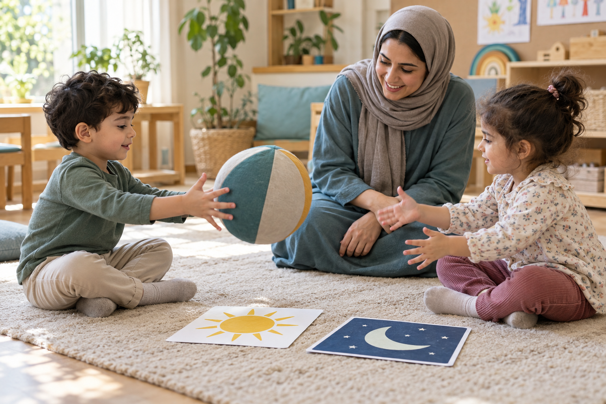
تصویر آموزشی بازسازیشده با هوش مصنوعی
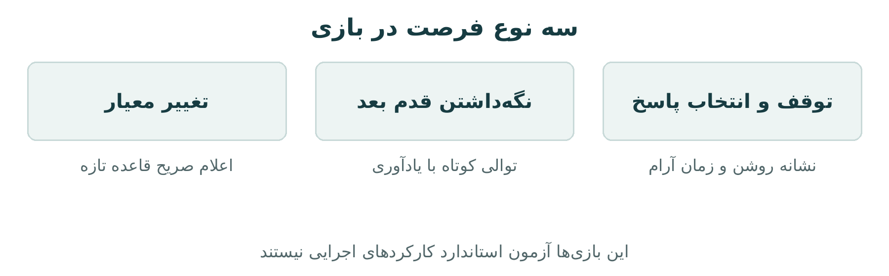
نقشه خواندن این بخش فصلهای ۱۷ تا ۲۱
فصل ۱۷ قبل از حرکت، توقف کن
در این فصل چه میخوانیم؟
در بازیِ توقف، یک قدم اضافه هم باید در کنار نشانه، سرعت و هیجان همان دور دیده شود.
«گفتم قرمز؛ چرا باز دویدی؟»
کارت قرمز بالا میرود. آراد یک قدم دیگر برمیدارد و میایستد. مربی آماده است بگوید «باز حواست نبود»، اما میتواند ابتدا ببیند کارت از جای آراد قابل دیدن بوده و قانون را پیش از شروع چگونه معرفی کرده است.
دور بعد میتوان سرعت را کمتر کرد، نشانه را روشنتر نشان داد و قانون را کوتاه یادآوری کرد. کودک دوباره فرصت دارد. تغییر پاسخ در این شرایط، دربارهٔ همین بازی و حمایت آن اطلاعات میدهد؛ از آن تعریف ثابتی دربارهٔ کودک نمیسازیم. توقف در بازی، با ساکتماندن همیشگی تفاوت دارد. گاهی باید حرکت کنیم و گاهی با دیدن نشانه بایستیم. هدف و مرزهای ایمنی را روشن نگه میداریم و خطا را با فرصت دوباره همراه میکنیم.
پرسش این فصل
چگونه نشانه و قانون توقف را قابل فهم کنیم و برای تمرین دوباره فرصت بدهیم؟
اول یک تفکیک مهم: مهار پاسخ، توجه و اطاعت یکی نیستند
در زبان ساده این فصل، «مهار پاسخ» یعنی کودک در موقعیتی که یک پاسخ سریع یا عادتشده آماده است، بتواند آن را متوقف یا تغییر دهد تا با هدف یا قانون فعلی هماهنگ شود. این مفهوم با توجه ارتباط دارد، چون کودک باید نشانه را ببیند یا بشنود؛ اما توجه و مهار پاسخ یکی نیستند.
از طرف دیگر، اجرای قانون بازی با «اطاعت از بزرگسال» برابر نیست. در یک بازی ساختارمند، کودک میتواند قانون را بداند، اشتباه کند، درخواست سادهسازی کند، نپیوسته یا نقش راهبر را بگیرد. هدف این فصل تربیت کودکِ همیشهمطیع نیست؛ هدف تجربه کنترلِ پاسخ در یک چارچوب روشن و قابل تغییر است.
این موقعیت بیشتر چه چیزی میخواهد؟ | نمونه |
|---|---|
توقف پاسخِ آماده | بدن آماده حرکت است، اما با نشانه قرمز باید بایستد. |
صبر برای نشانه | وسیله آماده است، اما حرکت بعد از علامت شروع میشود. |
انجام پاسخ غیرغالب | بزرگسال «بالا» میگوید و قانون بازی میخواهد کودک «پایین» را انجام دهد. |
فهم قانون/زبان | اگر خود دستور مبهم است، خطا قبل از هر چیز میتواند خطای فهم باشد. |
رشد مهار پاسخ در پیشدبستانی؛ بیشتر حمایت، بعد استقلال بیشتر
Head Start در ELOF، «کنترل تکانه» را در زیرحوزه خودتنظیمی شناختی قرار میدهد. در مسیر ۳۶ تا ۴۸ ماه، کودک ممکن است برای مهار پاسخ به حمایت مستقیم بزرگسال نیاز بیشتری داشته باشد؛ در ۴۸ تا ۶۰ ماه، گاهی مستقلتر عمل میکند و گاهی هنوز حمایت میخواهد. نمونههای ELOF شامل منتظر ماندن برای نوبت و خودداری از پاسخ فوری در بعضی موقعیتهاست.
این توصیف یک چارچوب رشدی/آموزشی است، نه خطکش تشخیص. اگر کودک چهار ساله در یک دور بازی جلوتر از علامت حرکت کرد، نمیتوان گفت «از سطح سنش پایینتر است». نوع قانون، تازگی بازی، زبان، محیط، خستگی و میزان هیجان هم بر عملکرد اثر میگذارند.
صبر کردن با مهار پاسخ یکی نیست
EF05 نامش «صبر کن، بعد انجام بده» است، اما این کتاب آن را معادل آزمون کلاسیک delay of gratification نمیگیرد. پژوهش تأخیر در پاداش نشان میدهد «منتظر ماندن» فقط یک توانایی واحد و جدا از زمینه نیست؛ نوع پاداش، فرهنگ، عادتهای روزمره و بعضی عوامل اجتماعی میتوانند عملکرد را تغییر دهند.
در مطالعه بینفرهنگی Ding و همکاران، عملکرد کودکان ۳ تا ۵ سال با نوع پاداش و بافت فرهنگی تغییر میکرد و همبستگی میان تکالیف مختلف مهار/تأخیر کامل نبود. مطالعه Yanaoka و همکاران در ۲۰۲۶ نیز روی ۱۴۹ کودک ۴ تا ۶ ساله نشان داد عادتهای انتظار و اعتماد اجتماعی میتوانند با زمان انتظار و «سختیِ تجربهشده» تعامل داشته باشند. پس در EF05 قرار نیست از چند ثانیه انتظار درباره «اراده»، شخصیت یا آینده کودک نتیجه بسازیم.
پژوهش مداخلهای چه میگوید؟
مرور نظاممند Muir، Howard و Kervin در ۲۰۲۳، ۸۵ مطالعه مداخلهای پیشدبستانی درباره خودتنظیمی/EF را بررسی کرد. بعضی رویکردها—از جمله بازی میانجیشده و فعالیت بدنی—شواهد سازگارتر داشتند، اما نتیجهها بین برنامهها یکسان نبودند و ویژگیهایی مثل چالش شناختی، حرکت، دوز و وفاداری اجرا اهمیت داشتند.
فراتحلیل اوت ۲۰۲۶، ۲۵ کارآزمایی تصادفی فعالیت بدنی در کودکان ۱۸ تا کمتر از ۷۲ ماه را جمعبندی کرد. اثر میانگین بر خودتنظیمی کلی و حوزههای شناختی و رفتاری مثبت بود، اما اثر حوزه هیجانی از نظر آماری معنادار نبود. نشانههای سوگیری انتشار و نگرانی از خطر سوگیری نیز گزارش شدند. این شواهد درباره برنامههای فعالیت بدنیاند و اثر مستقل CM01 یا هر بازی مشخص کتاب را ثابت نمیکنند.[۲]
یک هشدار انتقال نیز مهم است: در یک RCT بزرگ ۲۰۲۴ روی کودکان ۶ تا ۱۳ سال، تمرین هشتهفتهای response inhibition بعضی سنجههای نزدیک به تمرین را بهتر کرد، اما پیامدهای گسترده رفتاری و عصبی تغییر نکردند. این نمونه خارج از بازه سنی کتاب است و برای نتیجهگیری مستقیم درباره پیشدبستانی استفاده نمیشود؛ فقط یادآوری میکند «بهتر شدن در تمرین» را نباید خودکار به هوش، موفقیت تحصیلی یا رفتار روزمره تعمیم داد.
قبل از اینکه بگویی «نتوانست خودش را کنترل کند»
اول این را چک کن | چرا مهم است؟ |
|---|---|
قانون را فهمیده بود؟ | بار زبانی یا دستور مبهم میتواند خطا بسازد. |
نشانه را دید/شنید؟ | مشکل دسترسی حسی یا جای نشانه با مهار پاسخ یکی نیست. |
سرعت بازی مناسب بود؟ | ریتم خیلی تند ممکن است فرصت پردازش را حذف کند. |
بدن در حرکت امن بود؟ | توقفِ ناگهانی در دویدن سریع برای بعضی کودکان دشوار یا ناایمن است. |
قانون تازه عوض شده بود؟ | ممکن است کودک هنوز قانون قبلی را نگه داشته باشد. |
هیجان/خستگی/شلوغی بالا بود؟ | عملکرد یک کودک در موقعیتهای مختلف یکسان نیست. |
سن چه چیزی را تغییر میدهد؟
جدول زیر جهت طراحی داخلی کتاب است، نه نقطه عطف رشدی یا معیار قبولی.
بازه | طراحی مناسبتر |
|---|---|
۲–۳ سال | این سه بازی هسته برای این بازه طراحی نشدهاند. توقفهای طبیعی و کوتاه در روال روزمره، همراهی بزرگسال و یک نشانه ساده کافی است؛ نسخه پیچیده کودک بزرگتر را پایین نمیآوریم. |
۳–۴ سال | یک قانون روشن، یک نشانه واضح، نوبتهای کوتاه و حمایت فوریتر؛ هسته EF05 و CM01. |
۴–۵ سال | دو پاسخ متضاد ساده، فرصت مکث قبل از عمل و کاهش تدریجی مدل؛ هسته EF01. |
۵–۶ سال | نقش راهبری، تغییر سرعت یا افزودن یک تغییر محدود در صورت تسلط؛ بدون مسابقه و بدون انباشتن چند قانون که به فصل ۱۹ تعلق دارد. |
سه خطای رایج بزرگسال
خطا | مشکل | جایگزین |
|---|---|---|
«اشتباه کرد؛ پس تکانشگر است.» | از یک موقعیت به ویژگی بالینی/شخصیتی میپرد. | رفتار را ثبت کن و قانون/زمینه را بررسی کن. |
«هرچه بیشتر صبر کند، بهتر است.» | انتظار را به مسابقه تحمل تبدیل میکند. | فاصله را فقط به اندازهای نگه دار که قانون بازی قابل تجربه باشد. |
«کنترل پاسخ یعنی حرفگوشکنی.» | EF را با اطاعت و سرکوب عاملیت یکی میکند. | قانون بازی روشن باشد؛ کودک میتواند توقف کند، سؤال بپرسد یا نپیوسته. |
EF01 — برعکس انجام بده
این بازی یک پاسخ ساده و آشنا را «برعکس» میکند تا کودک پیش از حرکت، قانون فعلی را به خاطر بیاورد. خود بازی اثر مستقل اثباتشدهای بر inhibitory control یا رفتار روزمره ندارد.
مولفه | تعریف |
|---|---|
کد | EF01–45–E |
خانواده | Executive Function Play |
سن هسته | ۴ تا ۵ سال |
سن قابل تطبیق | تقریباً ۳٫۵ تا ۶ سال |
هدف اصلی | مهار پاسخ |
اهداف همراه | توجه؛ حرکت |
مشاهده اصلی | توقف پاسخ اولیه و انتخاب پاسخِ مطابق قانون |
حمایت کمینه | سادهسازی قانون |
ایمنی | ▲ متوسط؛ فضای خالی، حرکت کنترلشده |
سطح خود فعالیت | D |
راهنمای دقیق اجرای بازی EF01
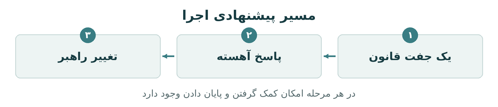
اینفوگرافی اجرای EF01 خواندن از راست به چپ
زمان پیشنهادی حدود ۳ تا ۵ دقیقه برای یک نوبت آغازین؛ ادامه یا پایان با توجه به علاقه، خستگی و شرایط واقعی. زمانگیری کودک لازم نیست.
وسایل این نسخه دو کارت بزرگ بالا و پایین؛ وسیله اضافه لازم نیست.
پیش از دعوت کودک در وضعیت راحت نشسته یا ایستاده؛ تنها یک جفت پاسخ تعریف شود.
جمله آغاز «وقتی دستم بالا رفت دستت پایین میماند؛ وقتی پایین آمد دستت بالا میرود.»
گام ۱ قانون را جداگانه با دو حرکت آهسته مدل کنید؛ پیش از شروع مطمئن شوید نشانه قابل دیدن است.
گام ۲ سه یا چهار نوبت کوتاه انجام دهید؛ پس از خطا بدون حذف، قانون را کوتاه یادآوری یا دوباره مدل کنید.
گام ۳ در صورت علاقه کودک راهبر شود و بزرگسال پاسخ بدهد؛ پیچیدگی و سرعت همزمان افزایش نیابد.
اگر بازی گیر کرد «قانون قاطی شد؛ یک دور با هم نشان میدهیم.»
راه سادهتر فقط یک نشانه و یک پاسخ مخالف؛ مدل همزمان بماند.
اگر کودک چالش بیشتری خواست راهبرشدن کودک یا کمی فاصله متفاوت بین نشانهها؛ چند قانون تازه اضافه نشود.
راه دیگر برای مشارکت نسخه نشسته، کارت و حرکت کوچک دست؛ نشانه متناسب با دید و حرکت کودک.
ایمنی همین اجرا حرکت کنترلشده و فاصله کافی؛ فشار برای پاسخ سریع یا بازی حذفی نباشد.
نمونه ثبت فرضی «در دو نوبت دست را همسو بالا برد؛ پس از مدل یک بار پاسخ مخالف داد.» این فقط توصیف همان رخداد است؛ ثبت، فقط وقتی سؤال یا تصمیم مشخصی دارید.
مشاهده و تصمیم نوبت بعد ببین کودک معنای دو حرکت و قانون برعکس را فهمیده است یا نه. اگر معنای حرکت مبهم است، با تقلید مستقیم شروع کن و سپس قانون را عوض کن؛ اشتباه پس از تغییر قانون بهتنهایی نشانه ضعف مهار نیست.
پایان و مرور با یک دور دلخواه یا درخواست توقف پایان دهید؛ شمار خطاها به نمره تبدیل نشود.
دعوت و اجرا
بزرگسال میگوید: «این بازی برعکسه. وقتی دست من بالا رفت، دست تو پایین میمونه؛ وقتی دست من پایین رفت، دست تو میره بالا.» ابتدا دو یا سه دور آهسته مدل میشود. بعد سرعت فقط در حدی تغییر میکند که بازی هنوز قابل فهم و لذتبخش باشد.
برای ۳٫۵–۴ سال فقط یک جفتِ متضاد و مدل واضح نگه دار؛ اگر گیج شد، به همان پاسخ ساده برگرد.
برای ۴–۵ سال کودک میتواند بدون مدل همزمان به دو نشانه متضاد پاسخ دهد؛ امتیاز و زمانگیری لازم نیست.
برای ۵–۶ سال، در صورت علاقه، کودک میتواند راهبر شود و قانون را برای بزرگسال اجرا کند؛ افزودن چند قانون همزمان به فصل ۱۹ تعلق دارد.
نسخه نشسته معتبر است: بالا/پایین دست، باز/بسته کردن کف دست یا دو کارت تصویری.
اگر خطا کرد
فوراً نگویید «حواست نبود». قانون را کوتاه بازگو کنید یا یک دور با مدل انجام دهید. اگر خطاها زیاد شد، سرعت یا پیچیدگی را کم کنید. هدف دیدنِ امکان توقف و انتخاب پاسخ است، نه جمعکردن تعداد درستها.
از EF01 چه چیزی نمیتوان فهمید؟
خطا، خنده، تقلید مستقیم، نیاز به مدل یا پاسخ آهسته در EF01 بهتنهایی ADHD، تکانشگری مرضی، ضعف توجه، «EF پایین»، مشکل هوش یا آمادگی مدرسه را نشان نمیدهد.
پشتوانه و حدود شواهد EF01 | وضعیت |
|---|---|
خانواده شواهد | Executive Function / inhibitory control |
سطح اصول مرتبط | B |
سطح خود بازی | D |
L0 مجاز | کودک باید پاسخ اولیه را نگه دارد و بر اساس قانونِ برعکس عمل کند. |
L1 محتاطانه | میتواند فرصت تمرین توقف پاسخ اولیه و توجه به قانون فراهم کند. |
L2 غیرمجاز | EF01 مهار پاسخ/توجه را افزایش میدهد. |
L3 غیرمجاز | EF01 ADHD یا مشکل تکانشگری را میسنجد/درمان میکند. |
EF05 — صبر کن، بعد انجام بده
این بازی درباره «صبر طولانی» نیست؛ درباره جدا کردنِ لحظه آمادهبودن از لحظه شروع است. کودک میداند چه کاری قرار است انجام دهد، اما آغاز آن به یک نشانه روشن وابسته است.
مولفه | تعریف |
|---|---|
کد | EF05–34–E |
خانواده | Executive Function Play |
سن هسته | ۳ تا ۴ سال |
سن قابل تطبیق | ۳ تا حدود ۵٫۵ سال |
هدف اصلی | کنترل پاسخ |
هدف همراه | توجه |
مشاهده اصلی | انتظار برای نشانه شروع |
حمایت کمینه | کوتاهکردن فاصله تا نشانه |
ایمنی | ▲ متوسط؛ انتظار کوتاه، بدون محرومیت/پاداش غذایی |
سطح خود فعالیت | D |
راهنمای دقیق اجرای بازی EF05
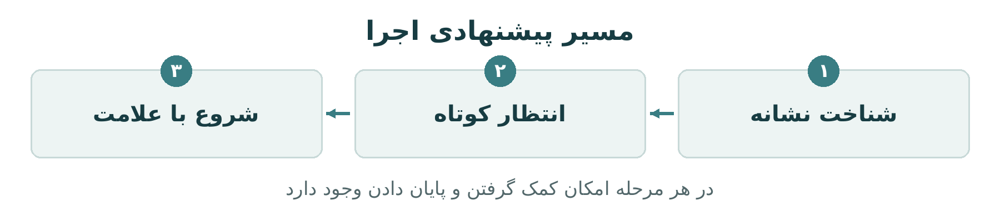
اینفوگرافی اجرای EF05 خواندن از راست به چپ
زمان پیشنهادی حدود ۳ تا ۵ دقیقه برای یک نوبت آغازین؛ ادامه یا پایان با توجه به علاقه، خستگی و شرایط واقعی. زمانگیری کودک لازم نیست.
وسایل این نسخه یک توپ نرم بزرگ، سبد پهن و کارت بزرگ دارای نماد شروع.
پیش از دعوت فاصله کوتاه و سطح ثابت باشد؛ نشانه پیش از بازی نشان داده شود.
جمله آغاز «وقتی این علامت را دیدی، توپ را آرام داخل سبد میاندازیم.»
گام ۱ یک بار عمل و نشانه را جدا معرفی کنید؛ انتظار آغازین بسیار کوتاه و قابل تحمل باشد.
گام ۲ کارت را نشان دهید و کودک توپ را رها، بغلتاند یا در سبد بگذارد؛ عمل متناسب با توان انتخاب شود.
گام ۳ اگر زود شروع کرد، انتظار را کوتاهتر یا نشانه را روشنتر کنید. در صورت تمایل کودک نشانه را برای بزرگسال بدهد.
اگر بازی گیر کرد «این بار علامت را زودتر میدهم؛ دوباره با هم امتحان کنیم؟»
راه سادهتر نشانه تقریباً بلافاصله و قرار دادن توپ در سبد نزدیک.
اگر کودک چالش بیشتری خواست کودک زمان نشانه را برای بزرگسال انتخاب کند؛ انتظار طولانی معیار نباشد.
راه دیگر برای مشارکت علامت دیداری، شنیداری یا لمسی آشنای قابل دسترس؛ نقش نشاندادن کارت.
ایمنی همین اجرا هیچ پاداش غذایی، محرومیت یا انتظار آزاردهنده؛ توپ به سوی صورت پرتاب نشود.
نمونه ثبت فرضی «پیش از کارت توپ را رها کرد؛ با علامت فوری نوبت بعد شروع کرد.» این فقط توصیف همان رخداد است؛ ثبت، فقط وقتی سؤال یا تصمیم مشخصی دارید.
مشاهده و تصمیم نوبت بعد ببین کودک نشانه شروع را تشخیص میدهد و در انتظار چه حمایتی میخواهد. اگر انتظار دشوار است، فاصله را کوتاه و نشانه را واضح کن؛ نوبت بعد فقط فاصله انتظار یا نوع نشانه را تغییر بده، نه هر دو را.
پایان و مرور اگر انتظار ناراحتکننده شد همان لحظه کوتاه یا حذف شود؛ پایان آزاد باشد.
یک نسخه ساده و غیرپاداشی
یک توپ پارچهای بزرگ یا حلقه سبک آماده است و یک سبد روبهرو قرار دارد. بزرگسال میگوید: «وقتی علامت رو دیدی، بندازش توی سبد.» علامت میتواند کارت سبز، صدای زنگ کوتاه یا حرکت دست باشد. فاصله تا نشانه در شروع بسیار کوتاه نگه داشته میشود؛ هیچ عددی در کتاب معیار رشد نیست.
اگر کودک قبل از نشانه حرکت کرد، بازی متوقف یا کودک حذف نمیشود؛ فقط میگوییم «این بار علامت رو زودتر میکنم» و دوباره امتحان میکنیم.
برای کودک کمشنوا/کمبینا از نشانه قابل دسترستر استفاده کن؛ هدف مهار پاسخ است، نه آزمون حسی.
از خوراکی، محرومکردن، جایزه «اگر بیشتر صبر کنی» یا مسابقه «چه کسی بیشتر دوام میآورد» استفاده نکن.
اگر انتظار ناراحتکننده شد، فاصله را کوتاه کن یا بازی را تمام کن؛ انتظار نباید آزمون تحمل باشد.
از EF05 چه چیزی نمیتوان فهمید؟
شروع زودهنگام، نخواستن منتظر ماندن، درخواست نشانه سریعتر یا خروج از بازی، بهتنهایی «بیارادگی»، تکانشگری مرضی، ADHD، خودکنترلی ضعیف یا پیشبینی آینده کودک نیست.
پشتوانه و حدود شواهد EF05 | وضعیت |
|---|---|
خانواده شواهد | کارکردهای اجرایی / response control؛ delay-of-gratification literature فقط برای مرزبندی |
سطح اصول مرتبط | B؛ بافت delay شواهد C/B |
سطح خود بازی | D |
L0 مجاز | فعالیت آغاز حرکت را به یک نشانه روشن وابسته میکند. |
L1 محتاطانه | میتواند فرصت تمرین مکث کوتاه پیش از عمل و توجه به نشانه فراهم کند. |
L2 غیرمجاز | EF05 خودکنترلی/صبر را افزایش میدهد. |
L3 غیرمجاز | EF05 تکانشگری، ADHD یا توان آیندهنگری را میسنجد. |
CM01 — چراغ قانون
در «چراغ قانون»، مهار پاسخ داخل حرکت اتفاق میافتد. هدف این نیست که کودک سریع بدود؛ هدف این است که حرکت با یک نشانه شروع یا متوقف شود.
مولفه | تعریف |
|---|---|
کد | CM01–34–M |
خانواده | Cognitive–Motor Play |
سن هسته | ۳ تا ۴ سال |
سن قابل تطبیق | ۳ تا ۶ سال |
هدف اصلی | مهار پاسخ در حرکت |
اهداف همراه | توجه؛ حرکت |
مشاهده اصلی | توقف/شروع بر اساس نشانه |
حمایت کمینه | کاهش قوانین |
ایمنی | ▲ متوسط؛ بدون دویدن در فضای بسته/لغزنده |
سطح خود فعالیت | D |
راهنمای دقیق اجرای بازی CM01
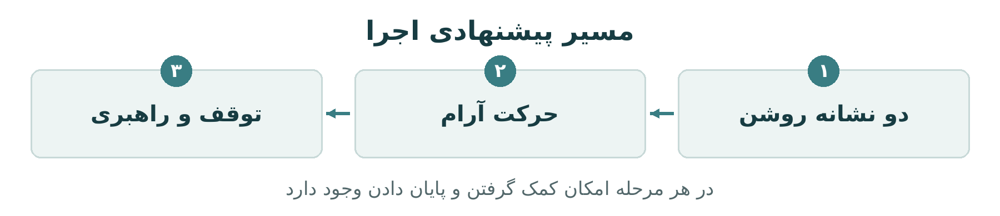
اینفوگرافی اجرای CM01 خواندن از راست به چپ
زمان پیشنهادی حدود ۳ تا ۵ دقیقه برای یک نوبت آغازین؛ ادامه یا پایان با توجه به علاقه، خستگی و شرایط واقعی. زمانگیری کودک لازم نیست.
وسایل این نسخه دو کارت بزرگ با نماد حرکت و توقف؛ رنگ تنها نشانه نباشد.
پیش از دعوت مسیر هموار کوتاه و فضای فاصله میان افراد آماده شود؛ دویدن لازم نیست.
جمله آغاز «این نشانه یعنی آرام حرکت کنیم؛ این یکی یعنی بایستیم.»
گام ۱ هر نشانه را با حرکت کوتاه مدل کنید؛ توقف ایمن را در حالت آهسته تمرین کنید.
گام ۲ کارتها یکییکی و با فاصله قابل فهم نشان داده شوند؛ کودک راه برود یا حرکت نشسته انجام دهد.
گام ۳ اگر نشانه را جا انداخت، فقط همان قانون را دوباره نشان دهید؛ کودک میتواند در دور بعد راهبر کارتها باشد.
اگر بازی گیر کرد «کارت توقف را دوباره ببینیم؛ این دور آرامتر میرویم.»
راه سادهتر حرکت یک دست یا پارچه در حالت نشسته؛ نشانهها کمتغییر.
اگر کودک چالش بیشتری خواست کودک راهبر شود؛ افزودن سرعت یا توقف غافلگیرکننده ضروری نیست.
راه دیگر برای مشارکت حرکت دست، شانه یا وسیله حرکتی در مسیر مناسب؛ نماد و کنتراست قابل دیدن.
ایمنی همین اجرا توقف روی لغزندگی، کنار پله یا موانع سخت نباشد؛ حذف و مسابقه سرعت ممنوع.
نمونه ثبت فرضی «پس از کارت توقف دو قدم دیگر رفت و با اشاره بزرگسال ایستاد.» این فقط توصیف همان رخداد است؛ ثبت، فقط وقتی سؤال یا تصمیم مشخصی دارید.
مشاهده و تصمیم نوبت بعد ببین نشانه چراغ را میبیند و حرکت را با آن هماهنگ میکند. اگر توقف دشوار است، راهرفتن آرام و یک فرمان دیداریـکلامی روشن بده؛ دویدن بیشتر یا حذف کودک پاسخ مناسبی نیست.
پایان و مرور پیش از خستگی یا شلوغی پایان دهید؛ کسی بازنده معرفی نشود.
اجرا
دو کارت بزرگ کافی است: سبز = حرکت، قرمز = توقف. در فضای کوچک، «حرکت» میتواند راهرفتن آرام، تکان دادن دستمال یا حرکت دستها در حالت نشسته باشد. کسی که خطا میکند حذف نمیشود و «بازنده» نداریم.
برای ۳–۴ سال فقط سبز/قرمز و ریتم آهسته.
برای ۴–۵ سال فاصله میان نشانهها کمی متنوع میشود؛ هنوز دو قانون نگه داشته میشود.
برای ۵–۶ سال کودک میتواند راهبر کارتها شود. اگر قانون سوم اضافه شود، باید مراقب همپوشانی با فصل انعطاف/چندقانونی باشیم.
برای کودک دارای تفاوت حرکتی، حرکت ویلچر، دست، شانه، ضربه آرام روی میز یا تکان دادن پارچه میتواند جایگزین راهرفتن باشد.
ایمنی
سطح خشک و بدون مانع؛ فاصله کافی میان کودکان.
در فضای داخلی، راهرفتن یا حرکت درجا به دویدن ترجیح دارد.
توقف ناگهانی روی سطح لغزنده، پله، کنار خیابان یا نزدیک وسایل خطرناک ممنوع است.
کودک برای خطا تنبیه، حذف یا مجبور به تکرار طولانی نمیشود.
از CM01 چه چیزی نمیتوان فهمید؟
یک یا چند حرکت پس از کارت قرمز، دیر توقفکردن یا اشتباهگرفتن کارتها، بهتنهایی تکانشگری مرضی، ADHD، ضعف توجه یا مشکل حرکتی را نشان نمیدهد.
پشتوانه و حدود شواهد CM01 | وضعیت |
|---|---|
خانواده شواهد | Cognitive–Motor / physical activity + self-regulation |
سطح اصول مرتبط | B |
سطح خود بازی | D |
L0 مجاز | کودک حرکت را بر اساس نشانه شروع/متوقف میکند. |
L1 محتاطانه | میتواند فرصت ترکیب حرکت، توجه به نشانه و توقف پاسخ را فراهم کند. |
L2 غیرمجاز | CM01 inhibitory control یا خودتنظیمی را افزایش میدهد. |
L3 غیرمجاز | CM01 ADHD/تکانشگری را غربال یا درمان میکند. |
فراگیری؛ «توقف» فقط با بدنِ خاصی تعریف نمیشود
این فصل نباید فقط برای کودکی نوشته شود که میدود، سریع میشنود و با دستور کلامی پاسخ میدهد. نشانه میتواند دیداری، شنیداری یا لمسیِ توافقشده باشد؛ پاسخ میتواند حرکت دست، نگاه، انتخاب کارت، AAC یا حرکت وسیله کمکی باشد. اگر دسترسی تغییر کند، ماهیت آموزشی فعالیت حفظ میشود.
سه سؤال والد
چه چیزی جذبش کرد؟
کجا برایش سخت شد؟
چه چیزی کمکش کرد؟
مشاهده حرفهای؛ فقط اگر هدف مشخصی دارید
در این فصل معمولاً یک حوزه اصلی کافی است: توجه و درگیری، یا حل مسئله/انعطاف در معنای انتخاب پاسخ، همراه با حرکت در CM01. نمونه ثبت: «در پنج دور، پس از کارت قرمز دو بار یک قدم دیگر رفت؛ وقتی فاصله کارتها بیشتر شد، در سه دور بعدی پیش از حرکت بعدی ایستاد.» نه: «تکانشگری بالایی دارد.»
تعداد درستها فقط زمانی ثبت میشود که سؤال آموزشی مشخصی داشته باشید؛ عدد به نمره EF یا نقطه برش تبدیل نمیشود.
یک تجربه برای این هفته
در یک بازی ایمن، پس از اولین خطا فقط یک چیز را تغییر دهید: سرعت یا وضوح نشانه. یک فرصت تازه بدهید و ببینید همان تغییر چه اثری در این نوبت داشت.
چه زمانی ارزش مشاهده بیشتر دارد؟
اگر کودک در موقعیتهای متعدد و در طول زمان، با قوانین ساده و قابل فهم، همچنان در توقفِ رفتارهای خطرناک یا مدیریت پاسخ دچار دشواری قابل توجهی است و این الگو واقعاً بر مشارکت روزمره اثر میگذارد، مشاهدات عینی را نگه دارید و با خانواده گفتوگو کنید. مسیر تخصصی—در صورت تداوم نگرانی—از فصل ۲۵ میآید؛ نه از امتیاز این سه بازی.
علم چه میگوید؟
آنچه نسبتاً میدانیم
ELOF کنترل تکانه را بخشی از خودتنظیمی شناختی در پیشدبستانی میداند و بر افزایش تدریجی استقلال همراه با نیاز متغیر به حمایت بزرگسال تأکید میکند.
مرور نظاممند ۲۰۲۳ از مداخلات پیشدبستانی نشان میدهد بعضی برنامههای هدفگیرنده خودتنظیمی/EF میتوانند مفید باشند، اما اثرها به رویکرد، چالش شناختی، حرکت، دوز و کیفیت اجرا وابستهاند.
فراتحلیل فعالیت بدنی در ۲۰۲۶، اثر مثبت میانگین بر خودتنظیمی شناختی و رفتاری گزارش کرد؛ اثر حوزه هیجانی معنادار نبود. سوگیری انتشار و کیفیت متفاوت مطالعات، دامنه نتیجهگیری را محدود میکنند.
عملکرد در تکالیف انتظار و مهار پاسخ به ویژگی تکلیف و زمینه حساس است؛ فرهنگ، عادت و نوع پاداش میتوانند در بعضی مطالعات تفاوت ایجاد کنند.
آنچه نمیتوانیم بگوییم
EF01، EF05 یا CM01 بهتنهایی مهار پاسخ یا «کارکرد اجرایی» را افزایش میدهند.
کودکی که در چراغ قانون اشتباه میکند تکانشگر یا دارای ADHD است.
توان بیشتر برای صبر در EF05 نشاندهنده شخصیت بهتر، اراده بیشتر یا آینده موفقتر است.
هرچه بازی سریعتر و سختتر شود، تمرین EF بهتر است.
توقف بیشتر همیشه بهتر است؛ پاسخ مناسب وابسته به قانون و هدف موقعیت است.
در خانه چه میتوان کرد
نشانه را کوتاه و قابل تشخیص معرفی کنید و پیش از سرعتگرفتن، چند نوبت ساده داشته باشید.
بعد از خطا، ابتدا وضوح نشانه و سرعت بازی را بازبینی کنید.
قانون واقعی ایمنی را مستقیم و ثابت آموزش دهید؛ بازی جای آن آموزش را نمیگیرد.
اگر کودک بازی را دوست ندارد، برای اثبات خودکنترلی مجبورش نکنید.
هدف این نیست که کودک همیشه قبل از خواسته بزرگسال متوقف شود؛ هدف این است که در بعضی موقعیتها بتواند قانون/هدف را وارد عمل کند.
در مهد یا کارگاه
کودکی را که اشتباه کرده از دور بیرون نگذارید. فرصت دیدن نشانه و تمرین دوباره را در گروه توزیع کنید و از بازی برای رتبهبندی توجه یا کنترل کودک استفاده نکنید.
اگر هدف شما آموزش یک مرز ایمنی واقعی است—مثلاً توقف کنار خیابان—آن مرز را مستقیم، ثابت و با تمرین واقعی ایمن آموزش دهید. بازی میتواند مکمل باشد، اما جای آموزش ایمنی را نمیگیرد.
همراهی در موقعیتهای روزمره
قاعده را پیش از سرعت روشن کنیم
در بازی چراغ، کودک با علامت توقف همچنان حرکت میکند. بهجای تکرار بلندتر فرمان، بازی را کوتاه متوقف کنید و نشانه را نشان دهید. بگویید «وقتی این علامت رو میبینیم حرکت تموم میشه» و یک دور همراه کودک امتحان کنید. باید ابتدا معلوم باشد نشانه فهمیده شده و دیدن یا شنیدن آن ممکن است؛ اجرای سریع هدف اول نیست.
توقف با بدنهای متفاوت
توقف برای یک کودک میتواند ایستادن، برای دیگری متوقف کردن حرکت دست یا نگه داشتن عروسک باشد. مسیر باید با امکان حرکت همان کودک هماهنگ شود. اگر حرکت نیاز به کمک دارد، از پیش روشن کنید همراه چگونه کمک میکند و کودک چگونه توقف را اعلام میکند. یک شکل حرکت را معیار مشارکت همه نکنید.
پاسخ به خطا
بزرگسال: «علامت عوض شد و حرکت ادامه پیدا کرد. این بار علامت رو همینجا نگه میدارم.» کودک: «یادم رفت.» بزرگسال: «میتونیم یک دور با هم انجام بدیم.» این گفتوگو اطلاعات موقعیت را نگه میدارد و کمک مشخص میدهد. حذف از بازی، خندیدن گروه به خطا یا درخواست تکرار تا اجرای بینقص، فرصت تجربه را محدود میکند.
یک تغییر در هر نوبت
اگر کودک علاقهمند است و قاعده برایش روشن شده، فقط یکی از عناصر را تغییر دهید: نشانه، فاصله یا سرعت. افزایش همزمان سرعت و تعداد قواعد، فهمیدن علت دشواری را ناممکن میکند. اگر مشارکت افت کرد، به نسخه آشنا برگردید یا بازی دیگری انتخاب کنید. دشوارتر شدن فعالیت، هدفی مستقل از لذت و مشارکت کودک نیست.
تمرین هفتگی
یک بار در بازی، تعداد دستورهای خود را بشمارید و ببینید آیا نشانه روشن میتواند جای چند فرمان را بگیرد. ثبت اختیاری شما میتواند این باشد: «با نشانه نزدیکتر و یک دور همراه، توقف را در مسیر بازی انجام داد.» از این تغییر درباره میزان مهار پاسخ یا تشخیص کودک نتیجه نگیرید؛ معلوم شده چه حمایتی در همان تجربه مفید بود.
پایان فصل
این هفته... | پیشنهاد |
|---|---|
بیشتر ببین | کودک قبل از پاسخ چه نشانهای را باید بگیرد و چه چیزی ممکن است فهم آن را سخت کند؟ |
کمتر انجام بده | برچسب «عجول/بیتمرکز/تکانشگر» بعد از خطای بازی. |
امتحان کن | یک بازی توقف کوتاه، بدون امتیاز و بدون حذف. |
از خودت بپرس | دارم امکان کنترل پاسخ را تمرین میکنم یا فقط اطاعت و سرعت را میسنجم؟ |
وقتی قانون روشن و فرصت دوباره فراهم است، میتوان رفتار کودک را دقیقتر دید. یک خطا، پایان مشاهده یا تعریف شخصیت او نیست.
فصل بعد سراغ جزء دیگری از کارکردهای اجرایی میرود: «نگه دار، به خاطر بسپار، انجام بده»؛ حافظه کاری در EF02، EF04 و CM03.
منابع منتخب فصل
Head Start. Approaches to Learning Preschool — ELOF, Cognitive Self-Regulation (Executive Functioning), Goal P-ATL 5.
Center on the Developing Child at Harvard University. A Guide to Executive Function; Activities Guide: Enhancing and Practicing Executive Function Skills with Children from Infancy to Adolescence. Current resources.
Muir RA, Howard SJ, Kervin L. (2023). Interventions and Approaches Targeting Early Self-Regulation or Executive Functioning in Preschools: A Systematic Review. Educational Psychology Review, 35:27. https://doi.org/10.1007/s10648-023-09740-6.
Lim MSL, Lynn NE, Song Y, Hesketh KD, Teo WP. (2026). The effects of physical activity interventions on preschoolers’ self-regulation skills: a systematic review and meta-analysis of randomized controlled trials. International Journal of Behavioral Nutrition and Physical Activity. https://doi.org/10.1186/s12966-026-01960-7.
Ding N, Frohnwieser A, Miller R, Clayton NS. (2021). Waiting for the better reward: Comparison of delay of gratification in young children across two cultures. PLOS ONE, 16(9):e0256966. https://doi.org/10.1371/journal.pone.0256966.
Yanaoka K, Michaelson LE, Saito S, Munakata Y. (2026). Waiting Longer With Less Work: The Impact of Habits and Social Trust on Children’s Delay of Gratification. Developmental Science, 29(3). https://doi.org/10.1111/desc.70185.
Ganesan K, Thompson A, Smid CR, et al. (2024). Cognitive control training with domain-general response inhibition does not change children’s brains or behavior. Nature Neuroscience, 27, 1364–1375. doi:10.1038/s41593-024-01672-w. [نمونه ۶–۱۳ سال؛ فقط برای هشدار درباره تعمیم/انتقال.]
یادداشت روششناختی: خانواده بازی کارکردهای اجرایی و شناختی–حرکتی در طراحی کتاب سطح B دارند، اما خود EF01، EF05 و CM01 فعالیتهای طراحیشده کتاب و سطح D هستند. هیچ اثر پایدار، تشخیص ADHD یا سنجش «تکانشگری» از اجرای این بازیها ادعا نمیشود.
فصل ۱۸ نگه دار، به خاطر بسپار، انجام بده
در این فصل چه میخوانیم؟
وقتی چند قدم را یکجا میگوییم، ممکن است دشواری دستور را با فراموشی کودک اشتباه بگیریم.
«گفتم اول توپ، بعد کتاب، بعد عروسک!»
مادر میگوید: «توپ را بگذار توی سبد، کتاب را بیاور و عروسک را بده به من.» کودک توپ را جمع میکند، به کتاب میرسد و میپرسد: «بعدش چی؟» او بخشی از کار را انجام داده و برای ادامه به یادآوری نیاز دارد.
این بار میتوان دستور را کوتاهتر کرد یا یک نشانهٔ تصویری گذاشت. سپس دید کودک چطور قدم بعد را پیدا میکند. محیط، زبان دستور و تعداد مرحلهها در همین موقعیت سهم دارند؛ کمکگرفتن را از گزارش حذف نمیکنیم. حافظهٔ کاری به نگهداشتن اطلاعات برای استفاده در همان کار مربوط است. تجربهٔ روزمره جایی برای دیدن این فرایند فراهم میکند، اما یک بازی ظرفیت کلی حافظه را اندازه نمیگیرد. قدمها را با نیاز و دسترسی کودک تنظیم میکنیم.
پرسش این فصل
چطور تعداد قدمها و یادآوریها را تنظیم کنیم تا کودک بتواند در کار چندمرحلهای مشارکت کند؟
حافظه کاری با «حافظه خوب» یکی نیست
حافظه کاری یکی از اجزای رایج در چارچوبهای کارکرد اجرایی است. Harvard Center آن را ظرفیت نگهداشتن و کار کردن با اطلاعات برای مدت کوتاه توصیف میکند. Head Start نیز در ELOF توضیح میدهد که با رشد حافظه کاری در پیشدبستانی، توان دنبالکردن دستورهای چندمرحلهای افزایش مییابد.
اما حافظه کاری با حافظه بلندمدت، دانش قبلی یا یادآوری یک خاطره قدیمی یکی نیست. کودکی ممکن است شعر بلندی را از حفظ بگوید ولی در یک دستور تازه دو مرحله را جا بیندازد؛ یا برعکس، در مأموریت روزمره خوب عمل کند ولی اسم یک شخصیت داستان را به یاد نیاورد. اینها تکلیفهای متفاوتیاند.
موقعیت | چه چیزی بیشتر درگیر است؟ |
|---|---|
به یاد آوردن اسم دوستی از ماه قبل | حافظه بلندمدت/بازیابی؛ نه هدف فصل ۱۸. |
نگهداشتن دو شیء در ذهن و دیدن اینکه کدام حذف شد | نگهداری کوتاهمدت + توجه/مقایسه. |
انجام سه قدم به ترتیب | نگهداری و بهروزرسانی توالی + زبان/برنامهریزی. |
یادآوری مسیر سه ایستگاه هنگام حرکت | حافظه در عمل + توجه فضایی/حرکت. |
یک هشدار علمی مهم: هیچ بازی «حافظه کاری خالص» را جدا نمیکند
تکلیفهای اجرایی معمولاً چند فرایند را همزمان میخواهند. EF02 به دیدن و توجه به اشیا، نگهداری کوتاهمدت و مقایسه نیاز دارد. EF04 علاوه بر نگهداشتن توالی، زبان و برنامهریزی را درگیر میکند. CM03 نیز حافظه را با حرکت، جهتیابی و ایمنی ترکیب میکند.
بنابراین در این کتاب از اصطلاح «هدف اصلی: حافظه کاری» برای معماری فعالیت استفاده میکنیم، نه برای ادعای اینکه بازی سازه حافظه کاری را بهطور خالص اندازه میگیرد. حتی در پژوهش حرفهای نیز نوع تکلیف و نحوه پاسخ میتواند نتیجه را تغییر دهد.
رشد؛ دستور چندمرحلهای مثال است، نه خطکش کودک
ELOF یک چارچوب رشدی/آموزشی است و صریحاً میگوید نباید بهعنوان curriculum، ارزیابی یا فهرست بررسی برای نتیجهگیری «کودک شکست خورده» استفاده شود. در خود چارچوب نیز تفاوت فردی پذیرفته شده و کودکان ممکن است بعضی شاخصها را زودتر یا دیرتر نشان دهند.
پس اگر کودک چهار ساله دستور سهمرحلهای را کامل نکرد، سؤال حرفهای اول این نیست که «حافظه کاریاش چقدر است؟» بلکه این است: دستور چقدر طولانی بود؟ کلمات آشنا بودند؟ محیط شلوغ بود؟ کودک مجبور بود همزمان وسیله حمل کند؟ ترتیب برایش معنا داشت؟ و با چه مقدار حمایت دوباره وارد کار شد؟
پژوهش مداخلهای؛ اثرهای کوچک و وابسته به نوع پیامد
متاآنالیز Trujillo-Trujillo و همکاران در ۲۰۲۶، ۳۵ مطالعه مداخلهای کودکان ۳ تا ۶ سال را مرور کرد و ۱۷ RCT را وارد فراتحلیل کرد. اثر بر حافظه کاری کلامی کوچک بود (d≈0.13)، درحالیکه برای حافظه کاری غیرکلامی تقریباً صفر بود (d≈0.02) و ناهمگنی در برخی پیامدها بالا بود. نویسندگان بر محدودیت روششناسی و نیاز به مطالعات قویتر تأکید کردند.
از طرف دیگر، فراتحلیل Sala و Gobet در ۲۰۲۰ روی trainingهای حافظه کاری در کودکان معمولاً نشان داد تمرین میتواند عملکرد تکلیفهای حافظه مشابه را بهتر کند، اما انتقال دور به هوش و موفقیت تحصیلی عملاً دیده نشد؛ هرچه آزمون خروجی به تمرین شبیهتر بود، اثر بیشتر بود. این منبع محدود به پیشدبستانی نیست و برای حکم مستقیم درباره سن ۲ تا ۶ استفاده نمیشود؛ فقط یک هشدار مهم درباره «تمرین = رشد عمومی مغز» است.
نتیجه سیاست علمی فصل: میتوانیم موقعیتهای معنادار برای نگهداشتن و استفاده از اطلاعات بسازیم، اما EF02، EF04 یا CM03 را «تقویتکننده حافظه کاری» معرفی نمیکنیم و از موفقیت در آنها هیچ انتقالی به هوش، زبان، مدرسه یا ADHD استنتاج نمیکنیم.
قبل از اینکه بگویی «یادش نمیمونه»
اول این را بررسی کن | چرا مهم است؟ |
|---|---|
چند واحد اطلاعاتی دادیم؟ | بار بیشتر میتواند تکلیف را از توان فعلی خارج کند. |
اطلاعات کلامی بود یا دیداری؟ | کودک ممکن است در قالبهای مختلف متفاوت عمل کند. |
ترتیب مهم بود؟ | بهخاطر سپردن «چه چیزهایی» با «به چه ترتیب» یکی نیست. |
بین شنیدن و عمل چه اتفاقی افتاد؟ | حواسپرتی، حرکت و زمان فاصله میتوانند اثر بگذارند. |
واژهها و دستور قابل فهم بودند؟ | بار زبان نباید به حافظه نسبت داده شود. |
ابزار/محیط دسترسپذیر بود؟ | جستوجوی دشوار یا حرکت نامتناسب میتواند مرحله را قطع کند. |
آیا نشانه یا تصویر کمک کرد؟ | پاسخ به حمایت برای تصمیم آموزشی مفید است، نه برای تشخیص. |
سن چه چیزی را تغییر میدهد؟
این جدول جهت طراحی داخلی کتاب است، نه نقطه عطف رشدی یا معیار قبولی.
بازه | طراحی مناسبتر |
|---|---|
۲٫۵–۳ سال | EF02 فقط با دو شیء بسیار آشنا و فاصله بسیار کوتاه؛ هدف تشخیص «کدام نیست» نیست اگر کودک فقط اشاره یا جستوجو میکند. EF04/CM03 هسته این بازه نیستند. |
۳–۴ سال | EF02 با ۲ تا ۳ شیء؛ EF04 با دو مأموریت ملموس و نزدیک؛ نشانه دیداری/حرکتی آزادانه استفاده شود. |
۴–۵ سال | EF02 با ۳ تا ۴ شیء؛ EF04 با ۲ تا ۳ قدم معنادار؛ CM03 با ۲ تا ۳ ایستگاه روشن و ایمن. |
۵–۶ سال | در صورت تسلط میتوان ترتیب، فاصله یا یک تغییر محدود را بیشتر کرد؛ هنوز هدف «تا مرز شکست بردن» نیست. |
سه خطای رایج بزرگسال
خطا | مشکل | جایگزین |
|---|---|---|
«سه بار گفتم؛ چرا یادت نمیمونه؟» | زبان، بار تکلیف و حواسپرتی را نادیده میگیرد. | تعداد قدمها را کم کن یا نشانه اضافه کن. |
«هرچه اشیای بیشتری حفظ کند، حافظهاش بهتر است.» | بازی را به آزمون span و رتبهبندی تبدیل میکند. | فقط سطحی را نگه دار که تجربه زنده و قابل انجام بماند. |
«اگر یادآوری خواست، مستقل نیست.» | کمکخواهی را شکست میبیند. | یادآوری کوتاه را بخشی از حمایت مرحلهای و ادامه مشارکت بدان. |
EF02 — چی کم شد؟
این بازی یک مجموعه کوچک از اشیای آشنا را برای لحظهای در ذهن نگه میدارد و بعد از تغییر، کودک میتواند ببیند چه چیزی جابهجا یا حذف شده است. در این کتاب، EF02 آزمون memory span یا «حافظه تصویری» نیست.
مولفه | تعریف |
|---|---|
کد | EF02–34–E |
خانواده | Executive Function Play |
سن هسته | ۳ تا ۴ سال |
سن قابل تطبیق | تقریباً ۲٫۵ تا ۶ سال |
هدف اصلی | حافظه کاری |
هدف همراه | توجه |
مشاهده اصلی | نگهداری اطلاعات و مقایسه بعد از تغییر |
حمایت کمینه | کاهش تعداد اشیا |
ایمنی | ● پایین؛ اشیای بزرگ و غیرخفهکننده |
سطح خود فعالیت | D |
راهنمای دقیق اجرای بازی EF02
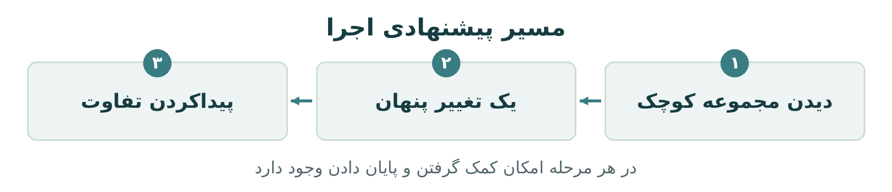
اینفوگرافی اجرای EF02 خواندن از راست به چپ
زمان پیشنهادی حدود ۳ تا ۵ دقیقه برای یک نوبت آغازین؛ ادامه یا پایان با توجه به علاقه، خستگی و شرایط واقعی. زمانگیری کودک لازم نیست.
وسایل این نسخه دو یا سه شیء آشنای بزرگ، سینی و پارچه کوتاه.
پیش از دعوت همه اشیا در میدان دید باشند؛ کودک مجبور به بستن چشم نیست و میتواند برگردد.
جمله آغاز «با هم نگاه کنیم؛ بعد ببینیم چه چیزی کم شده است.»
گام ۱ اشیا دیده و در صورت تمایل لمس یا نامگذاری شوند؛ برای شناخت مواد فرصت بدهید.
گام ۲ سینی پوشانده شود و بزرگسال فقط یک شیء بردارد؛ سپس پوشش برداشته شود.
گام ۳ کودک با گفتن، اشاره یا انتخاب تصویر پاسخ دهد. شیء برگردد و در صورت علاقه جای کودک و بزرگسال عوض شود.
اگر بازی گیر کرد «میخواهی اشیا را دوباره ببینیم یا تعدادشان را کمتر کنیم؟»
راه سادهتر دو شیء و پوشاندن بسیار کوتاه؛ پاسخ غیرکلامی.
اگر کودک چالش بیشتری خواست جابهجایی یک شیء بهجای افزایش فوری تعداد؛ تنها یک تغییر.
راه دیگر برای مشارکت لمس پیش از پوشاندن، نشانههای واضح و تصویر پاسخ؛ محدودیت حسی از هدف تفکیک شود.
ایمنی همین اجرا پارچه روی صورت قرار نگیرد؛ باتری، آهنربا، مهره و شیء کوچک حذف شوند.
نمونه ثبت فرضی «به جای توپ اشاره کرد و بعد از برگشتن توپ آن را برداشت.» این فقط توصیف همان رخداد است؛ ثبت، فقط وقتی سؤال یا تصمیم مشخصی دارید.
مشاهده و تصمیم نوبت بعد ببین کودک تغییر مجموعه را با نام، اشاره یا جای خالی نشان میدهد. اگر دشوار است، از دو شیء آشنا شروع کن و پیش از پوشاندن فرصت دیدن بده؛ اگر نسخه جابهجایی را انتخاب کردی، پرسش و ثبت را هم تغییر بده.
پایان و مرور حدسها نمره ندارند؛ پس از چند نوبت دلخواه وسایل جمع شوند.
اجرا
دو یا سه شیء آشنا و بزرگ روی سینی بگذار: مثلاً قاشق چوبی، ماشین بزرگ و توپ پارچهای. چند ثانیه با هم نگاه کنید. سپس کودک چشمش را میبندد یا پارچهای روی سینی میآید و بزرگسال یک شیء را برمیدارد. بعد میپرسد: «فکر میکنی چی کم شده؟»
برای ۲٫۵–۳ سال فقط دو شیء آشنا؛ کودک میتواند با اشاره یا برداشتن شیء مشابه پاسخ دهد.
اگر کودک نام شیء را نمیداند، پاسخ غیرکلامی معتبر است؛ بازی آزمون واژگان نیست.
اگر دشوار بود، اجازه بده قبل از پوشاندن اشیا را لمس یا نامگذاری کند، یا تعداد را کم کن.
اگر کودک چالش بیشتری خواست، نسخه جداگانه «چه چیزی جابهجا شد؟» را پیشنهاد کن. در آن شیئی حذف نمیشود و پرسش درباره تغییر مکان است؛ نتیجه دو نسخه را با هم مقایسه نکن و بازی را به مسابقه حافظه تبدیل نکن.
اشیای کوچک، باتری، آهنربا، مهره و قطعات خفهکننده برای خردسالان استفاده نمیشوند.
از EF02 چه چیزی نمیتوان فهمید؟
ندانستن شیء حذفشده، حدس اشتباه، نیاز به لمس/نامگذاری یا عملکرد متفاوت در دو نوبت بهتنهایی اختلال حافظه، ADHD، هوش پایین، ضعف توجه یا «حافظه تصویری ضعیف» را نشان نمیدهد.
پشتوانه و حدود شواهد EF02 | وضعیت |
|---|---|
خانواده شواهد | Executive Function / working memory |
سطح اصول مرتبط | B |
سطح خود بازی | D |
L0 مجاز | کودک اطلاعات یک مجموعه کوچک را برای مدت کوتاه نگه میدارد و پس از تغییر مقایسه میکند. |
L1 محتاطانه | میتواند فرصت تمرین نگهداری کوتاهمدت اطلاعات و توجه به تغییر فراهم کند. |
L2 غیرمجاز | EF02 حافظه کاری/توجه را افزایش میدهد. |
L3 غیرمجاز | EF02 اختلال حافظه، ADHD یا IQ را میسنجد/غربال میکند. |
EF04 — زنجیره مأموریت
در این بازی کودک یک توالی کوتاه و معنادار را میشنود یا میبیند و آن را در عمل پیش میبرد. هدف، اجرای بینقص چند دستور نیست؛ هدف تجربه نگهداشتن قدم بعدی در دل یک مأموریت واقعی یا وانمودی است.
مولفه | تعریف |
|---|---|
کد | EF04–45–E |
خانواده | Executive Function Play |
سن هسته | ۴ تا ۵ سال |
سن قابل تطبیق | تقریباً ۳٫۵ تا ۶ سال |
هدف اصلی | حافظه کاری |
هدف همراه | برنامهریزی |
مشاهده اصلی | توالی چندمرحلهای |
حمایت کمینه | کوتاهکردن زنجیره |
ایمنی | ▲ متوسط؛ مأموریت بدون بالا رفتن/دویدن/حمل خطرناک |
سطح خود فعالیت | D |
راهنمای دقیق اجرای بازی EF04
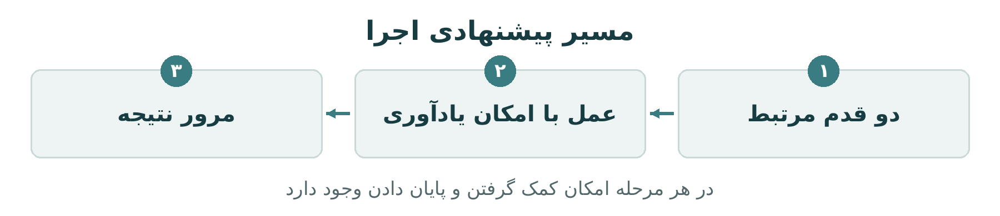
اینفوگرافی اجرای EF04 خواندن از راست به چپ
زمان پیشنهادی حدود ۵ تا ۱۰ دقیقه برای یک نوبت آغازین؛ ادامه یا پایان با توجه به علاقه، خستگی و شرایط واقعی. زمانگیری کودک لازم نیست.
وسایل این نسخه خرس عروسکی سالم و بدون قطعات جداشدنی، پارچه کوچک، کتاب، یک سبد و دو کارت تصویری مربوط به «گذاشتن پارچه» و «آوردن کتاب».
پیش از دعوت یک مأموریت معنادار مثل آمادهکردن جای خرس انتخاب شود؛ وسایل نزدیک باشند.
جمله آغاز «اول پارچه را کنار خرس بگذار، بعد کتابش را بیاور.»
گام ۱ دو قدم مرتبط را بگویید و همزمان تصاویرشان را نشان دهید؛ کودک میتواند پیش از شروع به هر دو نگاه کند.
گام ۲ کودک عمل کند و هر زمان لازم بود کارت را ببیند یا یادآوری بخواهد؛ فقط قدم بعدی را یادآوری کنید.
گام ۳ پس از پایان مأموریت نتیجه واقعی را ببینید؛ اگر کودک خواست او برای بزرگسال مأموریت کوتاهی طراحی کند.
اگر بازی گیر کرد «قدم بعد را روی کارت ببینیم؛ کدام قسمت را میخواهی کمک کنم؟»
راه سادهتر یک قدم و یک تصویر؛ فاصله جستوجو حذف شود.
اگر کودک چالش بیشتری خواست یک قدم سوم مرتبط اضافه شود؛ درخواست کمک همچنان مجاز.
راه دیگر برای مشارکت تصویر و زبان خانه؛ مأموریت نشسته با اشیای در دسترس.
ایمنی همین اجرا بالارفتن، دویدن، حمل وسیله داغ یا سنگین و دورشدن از دید وارد مأموریت نشوند.
نمونه ثبت فرضی «پارچه را گذاشت و برای نام وسیله دوم به کارت نگاه کرد.» این فقط توصیف همان رخداد است؛ ثبت، فقط وقتی سؤال یا تصمیم مشخصی دارید.
مشاهده و تصمیم نوبت بعد ببین کودک در کدام قدم یادآوری میخواهد و چه نوع یادآوری را استفاده میکند. نوبت بعد همان دو قدم و همان تصویر را نگه دار؛ اگر بار حمل وسایل دشوار است، آن را جدا از بار بهخاطرسپردن ساده کن.
پایان و مرور با آمادهشدن جای خرس پایان دهید؛ ترتیب ناقص به ضعف حافظه تعبیر نشود.
یک مأموریت نمونه
«اول کارت آبی رو بذار کنار کتاب، بعد توپ رو بیار توی سبد، آخرش برگرد پیش من.» برای شروع دو قدم کافی است. مأموریت باید با اشیای در دسترس و فاصله کوتاه اجرا شود، نه در خانهای شلوغ یا محیطی که کودک برای پیدا کردن وسیله مجبور به جستوجوی طولانی است.
اگر کودک وسط راه پرسید «بعدش چی؟»، یک نشانه راهنما کوتاه بده؛ کمکخواهی شکست نیست.
اگر یک مرحله جا افتاد، زنجیره را کوتاه کن و دوباره اجرا کن؛ تکرار کل دستور با لحن امتحانی لازم نیست.
برای کودکان چندزبانه یا کمکلام، تصویر دو یا سه مرحله میتواند جای بار کلامی زیاد را بگیرد.
ترتیب باید برای کودک معنا داشته باشد. اگر هر قدم کاملاً بیربط است، بیشتر در حال ساختن تکلیف دامنه حافظه هستیم تا فعالیت روزمره کتاب.
در نسخه مهد، مأموریتهای گروهی طوری طراحی شوند که کودک مسئول «پیامرسانی طولانی» یا حمل وسیله خطرناک نباشد.
از EF04 چه چیزی نمیتوان فهمید؟
جاانداختن یک مرحله، تغییر ترتیب، درخواست یادآوری یا رهاکردن مأموریت بهتنهایی مشکل اجرایی، ADHD، ضعف حافظه کاری، اختلال زبان یا آمادگی پایین مدرسه را ثابت نمیکند.
پشتوانه و حدود شواهد EF04 | وضعیت |
|---|---|
خانواده شواهد | Executive Function / working memory + planning |
سطح اصول مرتبط | B |
سطح خود بازی | D |
L0 مجاز | کودک یک توالی کوتاه را نگه میدارد و در عمل دنبال میکند. |
L1 محتاطانه | میتواند فرصت تمرین نگهداری توالی، کمکخواهی و بازگشت به قدم بعد را فراهم کند. |
L2 غیرمجاز | EF04 حافظه کاری/planning را افزایش میدهد. |
L3 غیرمجاز | EF04 مشکل اجرایی، ADHD یا اختلال حافظه را میسنجد. |
CM03 — مسیر مانع حافظه
CM03 حافظه را داخل حرکت میگذارد: کودک قبل از شروع، چند ایستگاه ساده را میبیند و سپس تلاش میکند مسیر را به ترتیب طی کند. این ترکیب لذتبخش است، اما نتیجه آن «حافظه خالص» نیست؛ تعادل، جهتیابی، توجه و ایمنی نیز وارد عملکرد میشوند.
مولفه | تعریف |
|---|---|
کد | CM03–45–M |
خانواده | Cognitive–Motor Play |
سن هسته | ۴ تا ۵ سال |
سن قابل تطبیق | ۴ تا ۶ سال |
هدف اصلی | حافظه در حرکت |
اهداف همراه | برنامهریزی؛ تعادل |
مشاهده اصلی | توجه + حرکت در توالی ایستگاهها |
حمایت کمینه | کاهش ایستگاهها |
ایمنی | ▲ متوسط؛ موانع نرم، سطح غیرلغزنده، بدون ارتفاع |
سطح خود فعالیت | D |
راهنمای دقیق اجرای بازی CM03
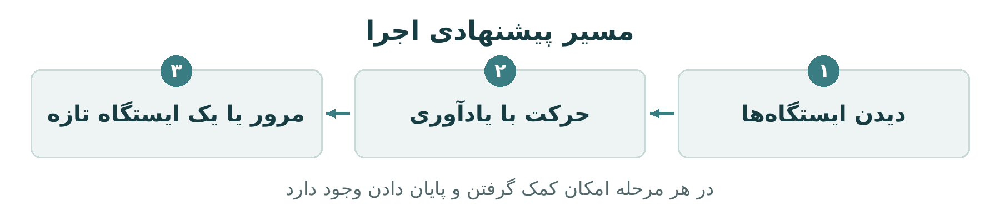
اینفوگرافی اجرای CM03 خواندن از راست به چپ
زمان پیشنهادی حدود ۵ تا ۱۰ دقیقه برای یک نوبت آغازین؛ ادامه یا پایان با توجه به علاقه، خستگی و شرایط واقعی. زمانگیری کودک لازم نیست.
وسایل این نسخه یک بالش ثابت کنار مسیر، خط پهن غیرلغزنده، توپ نرم بزرگ و سبد.
پیش از دعوت دو ایستگاه شروع کافی است؛ مانع بلند یا سطح برای بالا رفتن ساخته نشود.
جمله آغاز «اول کنار بالش میایستیم، بعد توپ را در سبد میگذاریم.»
گام ۱ مسیر را با کودک ببینید و یک بار با اشاره یا حرکت آرام معرفی کنید؛ کارت ایستگاهها در دید بماند.
گام ۲ کودک مسیر را با سرعت خودش طی کند؛ در فراموشی به نشانه قدم بعدی اشاره کنید.
گام ۳ اگر دو ایستگاه روشن شد و کودک خواست، خط پهن را بهعنوان ایستگاه سوم اضافه کنید؛ سپس مسیر با تصمیم کودک مرور شود.
اگر بازی گیر کرد «میتوانیم به تصویر قدم بعد نگاه کنیم؛ عجلهای نداریم.»
راه سادهتر دو ایستگاه نزدیک و بدون عبور از مانع.
اگر کودک چالش بیشتری خواست یک ایستگاه اضافه یا طراحی ترتیب توسط کودک؛ ارتفاع اضافه نشود.
راه دیگر برای مشارکت نسخه رومیزی، لمس نشانهها یا مسیر واقعی قابل دسترس برای وسیله حرکت.
ایمنی همین اجرا چشمبند، دویدن، پرش از ارتفاع و مانع لغزنده حذف شوند؛ مسیر هر نوبت خلوت باشد.
نمونه ثبت فرضی «کنار بالش ایستاد، کارت را دید و توپ را در سبد گذاشت.» این فقط توصیف همان رخداد است؛ ثبت، فقط وقتی سؤال یا تصمیم مشخصی دارید.
مشاهده و تصمیم نوبت بعد ببین فراموشی مسیر رخ میدهد یا دشواری حرکت میان ایستگاهها. برای حالت اول نشانه دیداری و برای حالت دوم مسیر کوتاه و هموار بده؛ همزمان تعداد ایستگاهها و دشواری حرکت را افزایش نده.
پایان و مرور کودک حذف نشود؛ با آخرین مسیر انتخابی یا توقف پایان دهید.
مسیر پایه
سه ایستگاه ساده روی زمین: ۱) کنار بالش بایست، ۲) از روی خط پهن قدم بزن، ۳) توپ پارچهای را داخل سبد بگذار. پیش از شروع مسیر را یک بار با اشاره نشان بده. سپس کودک شروع میکند. اگر ایستگاه بعدی را فراموش کرد، میتواند به کارت تصویری نگاه کند یا یک اشاره کوتاه بگیرد.
برای ۴ سال با دو ایستگاه شروع کن؛ افزایش ایستگاه فقط بعد از آسان شدن طبیعی بازی.
نسخه نشسته یا ویلچر کاملاً معتبر است: لمس دو نشانه، حرکت دست به دو نقطه یا جابهجایی اشیا در ترتیب.
هیچ پرش از ارتفاع، چشمبستن، دویدن میان موانع سخت یا مانع لغزنده استفاده نمیشود.
اگر کودک مسیر را از روش دیگری ولی ایمن طی کرد، اول ببین آیا هدف تو «ترتیب» بود یا فقط رسیدن به پایان؛ همه تفاوتها خطا نیستند.
در گروه، کودک حذف نمیشود و مسیر به مسابقه سرعت تبدیل نمیشود؛ سرعت بیشتر حافظه بهتر را نشان نمیدهد.
از CM03 چه چیزی نمیتوان فهمید؟
فراموشکردن ایستگاه، کند رفتن، نیاز به نگاه دوباره، بیتعادلی یا انتخاب مسیر دیگر بهتنهایی اختلال حافظه، EF پایین، ADHD یا مشکل حرکتی را نشان نمیدهد؛ تکلیف چند مؤلفه را همزمان درگیر میکند.
پشتوانه و حدود شواهد CM03 | وضعیت |
|---|---|
خانواده شواهد | Cognitive–Motor / working memory in action |
سطح اصول مرتبط | B برای EF/فعالیت بدنی بهطور کلی؛ شواهد مستقیم CM03 ندارد |
سطح خود بازی | D |
L0 مجاز | کودک توالی چند ایستگاه را در حال حرکت نگه میدارد و اجرا میکند. |
L1 محتاطانه | میتواند فرصت ترکیب نگهداری توالی، حرکت و برنامهریزی ساده فراهم کند. |
L2 غیرمجاز | CM03 حافظه کاری یا تعادل را افزایش میدهد. |
L3 غیرمجاز | CM03 اختلال حافظه، ADHD یا مشکل حرکتی را غربال/درمان میکند. |
فراگیری؛ پاسخ درست فقط «گفتن و راه رفتن» نیست
اطلاعات میتواند تصویری، کلامی، اشارهای یا با AAC ارائه شود. کودک میتواند پاسخ را با اشاره، انتخاب، لمس، جابهجایی شیء یا حرکت وسیله کمکی نشان دهد. اگر قالب ارتباطی عوض شود، هدف آموزشی—نگهداشتن و استفاده از اطلاعات—میتواند باقی بماند.
سه سؤال والد
چه چیزی جذبش کرد؟
کجا برایش سخت شد؟
چه چیزی کمکش کرد؟
مشاهده حرفهای؛ فقط اگر سؤال مشخص دارید
حداکثر یک هدف اصلی را ثبت کنید. در EF02: «سه شیء را دید؛ پس از حذف توپ گفت ماشین و قاشق هستند و به جای خالی توپ اشاره کرد.» در EF04: «دو قدم اول را انجام داد؛ برای قدم سوم پرسید بعدش چی؟ و با اشاره مربی ادامه داد.» نه: «حافظه کاری ضعیف/قوی دارد.»
اگر کودک با تصویر بهتر از دستور کلامی عمل میکند، این تفاوت یک داده طراحی است. از آن فوراً «حافظه دیداری بهتر از شنیداری» بهعنوان ویژگی ثابت نسازید.
یک تجربه برای این هفته
اگر معمولاً چند دستور پشتسرهم میدهید، در یک نوبت آنها را کوتاهتر کنید. سپس بنویسید کودک کدام قدم را انجام داد و چه یادآوریای برای ادامه لازم داشت.
چه زمانی ارزش مشاهده بیشتر دارد؟
اگر کودک در طول زمان و در چند موقعیت روزمره، حتی با دستورهای کوتاه و قابل فهم، نشانههای دیداری و فرصت کافی، مرتباً اطلاعات ساده را از دست میدهد و این الگو بر مشارکت یا یادگیری واقعی اثر میگذارد، مشاهدات عینی را نگه دارید و با خانواده گفتوگو کنید. مسیر تخصصی از فصل ۲۵ میآید؛ نه از امتیاز بازیهای این فصل.
علم چه میگوید؟
آنچه نسبتاً میدانیم
حافظه کاری یکی از اجزای رایج کارکردهای اجرایی است و به نگهداشتن و کارکردن با اطلاعات برای مدت کوتاه مربوط میشود.
Head Start ELOF حافظه کاری را در Approaches to Learning جای میدهد و رشد آن را با توان بیشتر برای دنبالکردن دستورهای چندمرحلهای مرتبط میکند؛ خود ELOF آزمون یا فهرست بررسی نیست.
متاآنالیز ۲۰۲۶ روی مداخلات EF در کودکان ۳–۶ سال اثر کوچک بر حافظه کاری کلامی و تقریباً صفر بر حافظه کاری غیرکلامی گزارش کرد؛ بنابراین «تمرین EF» اثر یکنواخت و بزرگ ندارد.
متاآنالیز working-memory training در کودکان معمولاً نشان میدهد بهبودها بیشتر در تکالیف شبیه تمرین دیده میشوند و انتقال گسترده به هوش/موفقیت تحصیلی پشتیبانی نمیشود.
هر فعالیت این فصل چند فرایند را همزمان درگیر میکند؛ خطای یک بازی نماینده یک سازه خالص یا یک ویژگی ثابت کودک نیست.
آنچه نمیتوانیم بگوییم
EF02، EF04 یا CM03 بهتنهایی حافظه کاری را افزایش میدهند.
کودکی که یک مرحله را فراموش میکند اختلال حافظه یا ADHD دارد.
تعداد اشیای بیشتر یا مراحل بیشتر، «حافظه بهتر» را بهصورت معتبر اندازه میگیرد.
بهبود در خود بازی به هوش، زبان، ریاضی یا آمادگی مدرسه منتقل میشود.
نسخه حرکتی CM03 از نسخه غیرحرکتی برای همه کودکان بهتر است.
در خانه چه میتوان کرد
پیش از بلندتر تکرارکردن دستور، تعداد قدمها را کمتر کنید.
وقتی کودک یادآوری میخواهد، یک نشانهٔ روشن بدهید و ادامهٔ عمل او را دنبال کنید.
برای توضیح، از زبانی استفاده کنید که کودک بهتر میفهمد.
بازی «چی کم شد؟» را به مسابقه حفظکردن تبدیل نکنید.
هدف این نیست که کودک هرچه بیشتر اطلاعات نگه دارد؛ هدف این است که بار مناسب را در عمل تجربه کند.
در مهد یا کارگاه
در فعالیت گروهی، زبان دستور، دسترسی به ابزار و دشواری مسیر را جدا بررسی کنید. بهویژه در بازی حرکتی، ایمنی مقدم است و کودک نباید برای نشاندادن حافظه از مسیر دشوارتر عبور کند.
در CM03، ایمنی و دسترسی بر بار شناختی مقدماند. کودک نباید برای نشاندادن حافظه از مسیر سخت، ارتفاع یا سرعت بالا عبور کند. در EF04 نیز مأموریت باید واقعی و قابل انجام باشد، نه مجموعهای از دستورهای عجیب صرفاً برای سختتر کردن حافظه.
همراهی در موقعیتهای روزمره
دستور را قابل دسترس کنیم
«توپ را بیاور، داخل سبد بگذار و بعد کنار میز بنشین» برای بزرگسال یک جمله کوتاه است، اما چند عمل، مکان و ترتیب را همزمان در خود دارد. اگر کودک فقط توپ را آورد، پیش از نتیجهگیری درباره حافظه، دستور را به یک مرحله کاهش دهید. سپس در صورت نیاز تصویر یا نشانه مرحله بعد را اضافه کنید. روشنتر کردن دستور بخشی از طراحی است.
سناریوی خانه
برای جمع کردن وسایل بازی، کودک ابتدا یک وسیله را به سبد میبرد. شما کنار سبد میمانید و مرحله بعد را با اشاره نشان میدهید. اگر خودش وسیله بعدی را انتخاب کرد، همان ابتکار را بپذیرید. لازم نیست ترتیب دلخواه شما را حفظ کند، مگر اینکه ترتیب برای ایمنی یا انجام کار ضروری باشد. کار روزمره را از تکلیف یادآوری جدا نگه دارید.
گفتوگوی نمونه
کودک: «بعدش چی بود؟» بزرگسال: «این تصویر کمکمون میکنه؛ اول توپ، بعد کتاب.» کودک به تصویر اشاره میکند. بزرگسال: «کتاب مونده. میخوای خودت ببری یا با هم؟» درخواست یادآوری یا استفاده از تصویر، خطایی برای تنبیه نیست. بزرگسال میتواند اطلاعات مورد نیاز را در دسترس بگذارد.
نقش زبان و آشنایی
نام شیء، واژه مکانی و مفهوم ترتیب را با حافظه یکی نگیرید. اگر کودک «کنار» را نفهمیده، جمله طولانیتر مشکل را بیشتر میکند. شیء یا مکان را نشان دهید و از زبان آشنای او کمک بگیرید. مشارکت غیرکلامی نیز اطلاعات میدهد. تکرار یک دستور در زبان ناآشنا بهتنهایی مشخص نمیکند کودک چه چیزی را میتواند به خاطر بسپارد.
تمرین و مرور
این هفته یک روتین را انتخاب کنید و فقط شیوه ارائه اطلاعات را تغییر دهید. پس از آن بنویسید چه کمکی در دسترس بود و کودک چگونه ادامه داد. تعداد مرحلههای انجامشده بدون زمینه، عدد مفیدی نیست. اگر بازی خستهکننده یا پرتنش شد، طول زنجیره را کمتر کنید؛ افزایش طول دستور پاداش موفقیت کودک نیست.
پایان فصل
این هفته... | پیشنهاد |
|---|---|
بیشتر ببین | کودک دقیقاً کدام بخش اطلاعات را نگه میدارد و در کجا از زنجیره خارج میشود؟ |
کمتر انجام بده | برچسب «فراموشکار» و تکرار طولانی همان دستور. |
امتحان کن | یک مأموریت دو مرحلهای با یک نشانه راهنما ساده و بدون امتیاز. |
از خودت بپرس | دارم حافظه را در یک موقعیت معنادار به کار میگیرم یا ظرفیت کودک را امتحان میکنم؟ |
دیدن اینکه کودک چه چیزی را نگه داشت، کجا پرسید و چگونه ادامه داد، از یک برچسب کلی دربارهٔ حافظه اطلاعات بیشتری در اختیار ما میگذارد.
فصل بعد سراغ جزء سوم میرود: «وقتی قانون عوض میشود»؛ انعطاف شناختی در EF03، EF06 و CM05.
منابع منتخب فصل
Head Start. Interactive Head Start Early Learning Outcomes Framework: Ages Birth to Five — Approaches to Learning / Working Memory.
Center on the Developing Child at Harvard University. A Guide to Executive Function; InBrief: Executive Function; Activities Guide: Enhancing and Practicing Executive Function Skills with Children from Infancy to Adolescence. Current resources.
Trujillo-Trujillo CC, Cadavid Ruiz N, Sanabria-Mazo JP. (2026). Effectiveness of executive function interventions in typically developing preschool children: a systematic review and meta-analysis. Child Neuropsychology. https://doi.org/10.1080/09297049.2025.2595075.
Sala G, Gobet F. (2020). Working memory training in typically developing children: A multilevel meta-analysis. Psychonomic Bulletin & Review, 27, 423–434. https://doi.org/10.3758/s13423-019-01681-y.
Muir RA, Howard SJ, Kervin L. (2023). Interventions and Approaches Targeting Early Self-Regulation or Executive Functioning in Preschools: A Systematic Review. Educational Psychology Review, 35:27. https://doi.org/10.1007/s10648-023-09740-6.
Carretti B, Giofrè D, Toffalini E, Cornoldi C, Pastore M, Lanfranchi S. (2022). Structure of working memory in children from 3 to 8 years old. Developmental Psychology, 58(9), 1687–1701. https://doi.org/10.1037/dev0001385
یادداشت روششناختی: خانواده بازی کارکردهای اجرایی در طراحی کتاب سطح B دارد، اما خود EF02، EF04 و CM03 فعالیتهای طراحیشده کتاب و سطح D هستند. «چی کم شد؟» نیز بهعنوان آزمون خالص حافظه کاری یا حافظه تصویری معرفی نمیشود. شواهد مداخلهای به اثر دقیق این بازیها منتقل نمیشوند.
فصل ۱۹ وقتی قانون عوض میشود
در این فصل چه میخوانیم؟
قانونی که برای ما عوض شده، ممکن است برای کودک هنوز به روشنی معرفی نشده باشد.
«ولی گفتی قرمزها اینطرف!»
کارتها تا اینجا بر اساس رنگ چیده شدهاند. بزرگسال میگوید: «حالا با شکل بچین.» کودک کارت بعدی را باز هم کنار همرنگها میگذارد. پیش از سرزنش، میتوانیم قانون تازه را یک بار دیگر با نشانهای روشن نشان بدهیم.
کودک باید از قاعدهٔ قبلی فاصله بگیرد و قاعدهٔ تازه را هنگام عمل به یاد داشته باشد. چند نوبت آهسته و قابل فهم، اطلاعات بیشتری از یک تغییر ناگهانی و چند توضیح پیدرپی میدهد. پاسخ را در همین شرایط میبینیم. انعطاف را با هماهنگشدن فوری با هر تغییر بزرگسال یکی نمیگیریم. تغییر باید دلیل و نشانهٔ قابل فهمی داشته باشد. کودک فرصت دارد سؤال کند، دوباره امتحان کند و از یادآوری استفاده کند.
پرسش این فصل
چگونه تغییر قانون را روشن معرفی کنیم و برای کنارگذاشتن قاعدهٔ قبلی فرصت بدهیم؟
انعطاف شناختی دقیقاً چیست؟
Cognitive flexibility یکی از مؤلفههای رایج کارکردهای اجرایی است و به توانایی تغییر جهت فکر یا عمل در پاسخ به تقاضای تازه مربوط میشود. در عمل، تغییر قاعده معمولاً فقط «انعطاف» را درگیر نمیکند؛ کودک باید قاعده جدید را در ذهن نگه دارد و گاهی پاسخ غالب قبلی را مهار کند. به همین دلیل، فعالیتهای این فصل تکلیفهای خالص و جداشده یک سازه نیستند.
مولفه در موقعیت | چه چیزی بیشتر درگیر است؟ |
|---|---|
قانون قبلی هنوز فعال است | مهار پاسخ قبلی و رهاکردن عادت شکلگرفته. |
قانون تازه باید اجرا شود | نگهداری قانون جدید و توجه به نشانه مرتبط. |
دو قانون با نشانههای متفاوت داریم | انتخاب قاعده مناسب بر اساس نشانه راهنما؛ بار حافظه کاری بیشتر. |
قانون با حرکت ترکیب میشود | تصمیم، هماهنگی حرکتی، توجه اجتماعی و ایمنی هم وارد تکلیف میشوند. |
انعطاف با «اطاعت سریع» یکی نیست
کودک ممکن است قانون را فهمیده باشد اما نخواهد بازی را ادامه دهد، یا تغییر ناگهانی برایش خوشایند نباشد. این مسئله با ناتوانی در تغییر قاعده یکی نیست. همچنین اگر بزرگسال هر چند ثانیه قانون را عوض کند، ممکن است چیزی که اندازه میگیرد بیشتر تحمل بار دستور و سرعت پردازش باشد تا انعطاف در یک تجربه معنادار.
در کتاب ما حق توقف و نپیوستن در فعالیت اختیاری حفظ میشود. اگر هدف آموزش یک قانون ضروری یا ایمنی است، آن قانون را مستقیم و روشن آموزش میدهیم؛ لازم نیست آن را پشت «بازی انعطاف» پنهان کنیم.
رشد انعطاف؛ مسیر ساده و خطی نیست
Head Start در ELOF برای دوره پیشدبستانی رفتارهایی مانند امتحانکردن راهبردهای مختلف و بهکاربردن قواعد متفاوت در موقعیتهایی با تقاضاهای متفاوت را در حوزه خودتنظیمی شناختی توصیف میکند. این چارچوب برای برنامهریزی آموزشی است و نباید به نقطه برش سنی یا آزمون تشخیصی تبدیل شود.
عملکرد در تغییر قاعده به نوع تکلیف، تعارض قواعد، زبان دستور و نشانه راهنما حساس است. پژوهش مقطعی ۲۰۲۶، تغییر تکلیف اجرایی و معنایی را در کودکان ۴ تا ۱۰ ساله مقایسه کرد و شباهتها و تفاوتهای وابسته به سن را نشان داد. این نمونه فقط پیشدبستانی نبود و پیگیری همان کودکان در طول زمان هم انجام نشد؛ از آن نمیتوان یک سن ثابت برای آمادگی تغییر قانون یا اثر بازی EF03 تعیین کرد.[۳]
پژوهش مداخلهای؛ تغییر در EF لزوماً به هر بازی منتقل نمیشود
مرور و فراتحلیل ۲۰۲۶ روی مداخلات EF در کودکان ۳ تا ۶ سال نشان داد اثرها کوچک و حوزهویژهاند و ناهمگنی روشها بالاست. آن مرور برای بعضی مؤلفههای EF اثرهای کوچک گزارش کرد، اما داده کافی برای نتیجهگیری ساده «هر تمرین تغییرقاعده انعطاف را بالا میبرد» فراهم نمیکند.
در یک RCT سال ۲۰۲۵ با ۸۰ کودک ۴ تا ۶ ساله، ۱۲ هفته یادگیری حرکتی ساختاریافته نسبت به بازی آزاد بیرونی، بهبود معناداری در cognitive flexibility ایجاد نکرد. این یافته برای CM05 مهم است: افزودن حرکت و قانون به یک بازی، بهخودیخود شواهد افزایش انعطاف شناختی نیست.
قبل از اینکه بگویی «روی قانون قبلی گیر کرده»
اول این را بررسی کن | چرا مهم است؟ |
|---|---|
آیا قانون قبلی و جدید واقعاً متفاوت و قابل فهماند؟ | اگر تفاوت مبهم باشد، خطا ممکن است از طراحی نشانه راهنما بیاید. |
آیا کودک قانون تازه را شنیده/دیده است؟ | سر و صدا، فاصله یا بار زبان میتواند دریافت دستور را محدود کند. |
آیا هر قانون جداگانه تمرین شده؟ | EF06 بدون فهم مستقل دو قانون، بیش از حد دشوار میشود. |
آیا تغییر خیلی سریع رخ داده؟ | فرصت پردازش و انتقال بین قواعد با کودکان متفاوت است. |
آیا محرکها دو ویژگی رقیب دارند؟ | تعارض رنگ/شکل یا دو پاسخ همزمان، بار تکلیف را بالا میبرد. |
آیا کودک خسته، برانگیخته یا بیعلاقه است؟ | عملکرد یک بازی فقط از EF نمیآید. |
آیا پاسخ غیرکلامی یا نشانه راهنما تصویری ممکن است؟ | بار زبان نباید با انعطاف اشتباه شود. |
سن چه چیزی را تغییر میدهد؟
این جدول جهت طراحی داخلی کتاب است؛ نه نقطه عطف رشدی، هنجار یا معیار قبولی.
بازه | طراحی مناسبتر |
|---|---|
۳٫۵–۴ سال | یک قانون ساده و سپس یک تغییر بسیار روشن؛ نشانه راهنما دیداری قوی، دفعات کم، بدون سرعت. |
۴–۵ سال | تغییر میان دو معیار آشنا مثل رنگ/شکل؛ یادآوری کوتاه در لحظه switch. |
۵–۶ سال | دو نشانه راهنما، دو قانون یا چند نوبت تغییر؛ امکان توضیح کوتاه «الان کدام قانون؟» بدون اجبار به کلام طولانی. |
سه خطای رایج بزرگسال
خطا | مشکل | جایگزین |
|---|---|---|
«باز اشتباه کردی؛ حواست نیست.» | خطای تغییرقاعده را فوراً به توجه تبدیل میکند. | قاعده تازه را یک بار کوتاه و روشن یادآوری کن، بعد دوباره ببین. |
«هرچی سریعتر عوض کنی یعنی انعطافپذیرتری.» | سرعت را با کیفیت جابهجایی یکی میکند. | دقت و فهم نشانه راهنما را مقدم کن؛ زمان پاسخ را مسابقه نکن. |
«اگر قانون قبلی را تکرار میکند، خشک و لجباز است.» | رفتار تکلیف را به شخصیت تبدیل میکند. | فقط ثبت کن در چه شرایطی قانون قبلی تکرار شد و چه حمایتی کمک کرد. |
EF03 — قانون عوض شد
کودک ابتدا بر اساس یک معیار عمل میکند و سپس با یک نشانه روشن، همان مواد را بر اساس معیار دیگری سازمان میدهد. هدف اصلی معماری بازی، جابهجایی معیار است؛ نه سنجش «انعطاف کلی» کودک.
مولفه | تعریف |
|---|---|
کد | EF03–45–E |
خانواده | Executive Function / Rule Switching |
سن هسته | ۴ تا ۵ سال |
سن قابل تطبیق | تقریباً ۳٫۵ تا ۶ سال با سادهسازی/پیچیدهسازی |
هدف اصلی | انعطاف شناختی |
هدف همراه | توجه |
مشاهده اصلی | جابهجایی معیار |
حمایت کمینه | یادآوری یکبار قانون تازه |
نوع هدایت | ساختارمند/بازیوار؛ قانون از سوی بزرگسال |
محیط | خانه یا مهد؛ فردی/گروه کوچک |
سطح خود فعالیت | D |
راهنمای دقیق اجرای بازی EF03
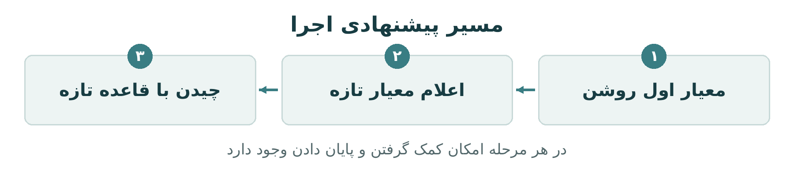
اینفوگرافی اجرای EF03 خواندن از راست به چپ
زمان پیشنهادی حدود ۳ تا ۵ دقیقه برای یک نوبت آغازین؛ ادامه یا پایان با توجه به علاقه، خستگی و شرایط واقعی. زمانگیری کودک لازم نیست.
وسایل این نسخه شش کارت بزرگ با شکل و رنگ واضح و دو جای چیدن؛ کارت معیار فعال.
پیش از دعوت کارتهای نمونه برای رنگ و شکل جدا آماده شوند؛ تغییر معیار غافلگیرانه نباشد.
جمله آغاز «این دور رنگها را کنار هم میگذاریم؛ بعد قانون تازه را میبینیم.»
گام ۱ یک معیار را معرفی و یک جفت را مدل کنید؛ کودک چند کارت را با همان معیار بچیند.
گام ۲ پیش از تغییر، کارت معیار تازه را نشان دهید و روشن بگویید حالا شکلها مهماند؛ یک مثال مشترک کافی است.
گام ۳ کودک با معیار تازه ادامه دهد؛ اگر معیار قبلی را تکرار کرد یک یادآوری کوتاه بدهید یا مواد را کمتر کنید.
اگر بازی گیر کرد «این دور شکل مهم است؛ کارت نشانه را همینجا میگذاریم.»
راه سادهتر چهار کارت، دو گروه و مدل دیداری ثابت.
اگر کودک چالش بیشتری خواست یک بازگشت آرام به معیار اول؛ تغییر سریع و پیاپی نباشد.
راه دیگر برای مشارکت شکل یا بافت قابل تشخیص بهجای رنگ تنها؛ کارت معیار در دسترس بماند.
ایمنی همین اجرا قطعات بزرگ باشند؛ اصرار و اصلاح تکتک پاسخها بازی را به آزمون تبدیل نکند.
نمونه ثبت فرضی «یک کارت را با رنگ قبلی گذاشت؛ پس از نگاه به نشانه، کارت بعدی را با شکل چید.» این فقط توصیف همان رخداد است؛ ثبت، فقط وقتی سؤال یا تصمیم مشخصی دارید.
مشاهده و تصمیم نوبت بعد ببین کودک قانون جدید را فهمیده و نشانه آن را پیدا میکند. پیش از ادامه، یک نوبت مشترک با قانون تازه اجرا کن؛ اگر هنوز مبهم است، یک دستهبندی ساده نگه دار و از تعویض پیاپی قانون پرهیز کن.
پایان و مرور با یک دور کوتاه پایان دهید؛ تکرار معیار قبلی به لجبازی تعبیر نشود.
اجرا
شش کارت یا شیء بزرگ و ایمن آماده کن که دو ویژگی واضح داشته باشند؛ مثلاً سه دایره و سه مربع در دو رنگ. دور اول: «این بار بر اساس رنگ میچینیم.» پس از چند نوبت، یک کارت علامت یا جمله کوتاه بده: «قانون عوض شد؛ حالا بر اساس شکل.»
برای ۳٫۵–۴ سال، فقط دو دسته با تفاوت بسیار آشکار و یک switch کوتاه.
برای ۴–۵ سال، رنگ/شکل یا بزرگ/کوچک؛ قانون جدید را با نشانه راهنما تصویری همراه کن.
برای ۵–۶ سال، پس از موفقیت در دو قانون میتوان یک بار به قانون اول برگشت؛ نه تغییرهای سریع و پیدرپی.
اگر کودک قانون قبلی را تکرار کرد، فقط یک بار قانون تازه را یادآوری کن؛ پاسخ درست را برای هر کارت نگو.
اگر کودک نخواست ادامه دهد، فعالیت را تمام کن؛ تداوم اجباری بخشی از سنجش نیست.
قطعات باید متناسب سن و بدون خطر خفگی باشند.
از EF03 چه چیزی نمیتوان فهمید؟
تکرار قانون قبلی، نیاز به یادآوری، کندی در تغییر یا عملکرد متفاوت در دو نوبت بهتنهایی اختلال اجرایی، «خشکی شناختی»، ADHD، اوتیسم، ضعف هوش یا لجبازی را نشان نمیدهد.
پشتوانه و حدود شواهد EF03 | وضعیت |
|---|---|
خانواده علمی | Cognitive flexibility / task switching / rule shifting |
سطح اصول مرتبط | B/C؛ وابسته به نوع مطالعه و پیامد |
سطح خود بازی | D |
L0 مجاز | کودک در یک موقعیت بازیوار باید از یک معیار به معیار دیگری جابهجا شود. |
L1 محتاطانه | میتواند فرصت تمرین تغییر معیار و توجه به نشانه راهنما تازه فراهم کند. |
L2 غیرمجاز | «انعطاف شناختی را افزایش میدهد / EF را تقویت میکند.» |
L3 غیرمجاز | «خشکی شناختی، ADHD، ASD یا اختلال اجرایی را میسنجد/غربال میکند.» |
EF06 — دو نشانه، دو قانون
در این بازی دو نشانه راهنما متفاوت هرکدام یک پاسخ دارند. کودک لازم نیست فقط قانون را عوض کند؛ باید تشخیص دهد اکنون کدام قاعده فعال است. به همین دلیل هدف اصلی «هماهنگی دو قاعده» است و انعطاف و حافظه کاری اهداف همراهاند.
مولفه | تعریف |
|---|---|
کد | EF06–56–E |
خانواده | Executive Function / Cued Rules |
سن هسته | ۵ تا ۶ سال |
سن قابل تطبیق | تقریباً ۴٫۵ تا ۶ سال |
هدف اصلی | هماهنگی دو قاعده |
اهداف همراه | انعطاف؛ حافظه کاری |
مشاهده اصلی | انتخاب بین قواعد |
حمایت کمینه | تمرین جداگانه هر قانون |
نوع هدایت | ساختارمند با نشانه راهنما روشن |
محیط | خانه/مهد؛ فردی یا گروه کوچک |
سطح خود فعالیت | D |
راهنمای دقیق اجرای بازی EF06
اینفوگرافی اجرای EF06 خواندن از راست به چپ
زمان پیشنهادی حدود ۳ تا ۵ دقیقه برای یک نوبت آغازین؛ ادامه یا پایان با توجه به علاقه، خستگی و شرایط واقعی. زمانگیری کودک لازم نیست.
وسایل این نسخه دو کارت بزرگ خورشید و ماه، سه بلوک بزرگ و یک سبد.
پیش از دعوت معنی هر نشانه جداگانه تمرین شود؛ داخل و کنار سبد هر دو واضح باشند.
جمله آغاز «خورشید یعنی داخل سبد؛ ماه یعنی کنار سبد.»
گام ۱ خورشید را نشان دهید و گذاشتن بلوک داخل سبد را جدا تمرین کنید؛ سپس همین کار برای ماه و کنار سبد انجام شود.
گام ۲ دو نشانه با فاصله آرام یکییکی ارائه شوند؛ کودک فقط به نشانه فعلی پاسخ دهد و کارت راهنما در دید بماند.
گام ۳ اگر قاعده قاطی شد، به تمرین جداگانه برگردید؛ اگر علاقه داشت کودک راهبر نشانهها شود.
اگر بازی گیر کرد «اول همین نشانه را با هم انجام میدهیم؛ بعد سراغ دیگری میرویم.»
راه سادهتر یک نشانه و یک پاسخ؛ این مرحله آمادهسازی است نه نسخه دوقاعدهای کامل.
اگر کودک چالش بیشتری خواست ترتیب نشانهها کمی نامنظم شود؛ قانون سوم اضافه نشود.
راه دیگر برای مشارکت دو نماد با کنتراست و لمسپذیری مناسب؛ بزرگسال بلوک را طبق اشاره کودک بگذارد.
ایمنی همین اجرا مواد بزرگ و غیرخفهکننده؛ زمانگیری و پاسخ سریع هدف نباشد.
نمونه ثبت فرضی «با کارت ماه بلوک را داخل گذاشت؛ پس از مدل جداگانه آن را کنار سبد گذاشت.» این فقط توصیف همان رخداد است؛ ثبت، فقط وقتی سؤال یا تصمیم مشخصی دارید.
مشاهده و تصمیم نوبت بعد ببین کودک هر نشانه را به عمل مربوط وصل میکند. اگر دو نشانه گیجکنندهاند، نشانهها را کنار تصویر عملشان بگذار؛ ابتدا یک قانون را روشن کن و سرعت ارائه نشانهها را پایین نگه دار.
پایان و مرور با پایان چند نوبت مورد علاقه، نشانهها جمع شوند؛ نتیجه نمره هماهنگی قواعد نیست.
اجرا
دو کارت نشانه راهنما انتخاب کن: خورشید و ماه. قانون ۱: وقتی خورشید را میبینی یک بلوک را داخل سبد بگذار. قانون ۲: وقتی ماه را میبینی یک بلوک را کنار سبد بگذار. ابتدا هر قانون را جداگانه دو یا سه بار تمرین کن. سپس نشانه راهنماها را با فاصله و بدون سرعت نشان بده.
قبل از ترکیب، مطمئن شو کودک هر قانون را جداگانه فهمیده است.
اگر دشوار شد، دوباره فقط یک قانون را اجرا کن و بعد نشانه راهنما دوم را برگردان.
برای کودک کمکلام، لازم نیست قانون را توضیح دهد؛ پاسخ عملی کافی است.
اگر کودک نشانه راهنما را میبیند اما پاسخ دیگری میدهد، همان پاسخ را ثبت کن؛ از «بیدقتی» یا «فراموشکاری» نتیجه نساز.
اگر آسان بود، ترتیب نشانه راهنماها را نامنظم کن؛ تعداد قوانین را فوراً به سه یا چهار نرسان.
در گروه، نشانه راهنما باید برای همه قابل دیدن باشد و رقابت سرعتی ایجاد نشود.
از EF06 چه چیزی نمیتوان فهمید؟
خطا در انتخاب قانون، نیاز به تمرین جداگانه، جاافتادن یک نشانه راهنما یا کندی پاسخ بهتنهایی ADHD، ضعف حافظه کاری، مشکل توجه یا ضعف انعطاف شناختی را ثابت نمیکند. خود EF06 ابزار استاندارد تغییر تکلیف نیست.
پشتوانه و حدود شواهد EF06 | وضعیت |
|---|---|
خانواده علمی | Cued rule selection + cognitive flexibility/working memory |
سطح اصول مرتبط | B/C |
سطح خود بازی | D |
L0 مجاز | دو نشانه، دو قاعده متفاوت را در یک موقعیت قابل مشاهده فعال میکنند. |
L1 محتاطانه | میتواند فرصت تمرین انتخاب قاعده بر اساس نشانه راهنما و برگشت میان دو پاسخ فراهم کند. |
L2 غیرمجاز | «حافظه کاری/انعطاف/توجه را افزایش میدهد.» |
L3 غیرمجاز | «ADHD یا اختلال اجرایی را میسنجد یا آشکار میکند.» |
CM05 — توپ چندقانونی
اینجا تصمیم بر اساس قانون با حرکت و تعامل اجتماعی ترکیب میشود. هدف اصلی «تصمیم بر اساس قانون» است؛ انعطاف در حرکت مشاهده میشود، اما عملکرد کودک به مهارت گرفتن/دادن توپ، توجه به همبازی و سازمان گروه هم وابسته است.
مولفه | تعریف |
|---|---|
کد | CM05–56–C |
خانواده | Cognition + Movement |
سن هسته | ۴٫۵ تا ۶ سال |
سن قابل تطبیق | تقریباً ۴ تا ۶ سال |
هدف اصلی | تصمیم بر اساس قانون |
اهداف همراه | اجتماع؛ حرکت |
مشاهده اصلی | انعطاف + حرکت |
حمایت کمینه | یک قانون در ابتدا |
نوع هدایت | بازیوار ساختارمند |
محیط | فضای امن خانه/مهد؛ ۲ تا ۵ کودک |
سطح خود فعالیت | D |
راهنمای دقیق اجرای بازی CM05
اینفوگرافی اجرای CM05 خواندن از راست به چپ
زمان پیشنهادی حدود ۵ تا ۱۰ دقیقه برای یک نوبت آغازین؛ ادامه یا پایان با توجه به علاقه، خستگی و شرایط واقعی. زمانگیری کودک لازم نیست.
وسایل این نسخه توپ نرم بزرگ و دو کارت نمادین برای غلتاندن و دادن با دو دست.
پیش از دعوت دو یا سه نفر با فاصله کوتاه و مسیر مستقیم توپ بنشینند؛ نقش نشانهدهنده روشن باشد.
جمله آغاز «با این کارت توپ را میغلتانیم؛ با آن کارت به نفر بعد میدهیم.»
گام ۱ هر قاعده را جدا تمرین کنید؛ ابتدا فقط غلتاندن تا نفر روبهرو و سپس دادن در فاصله کوتاه.
گام ۲ کارت فعال یکییکی نشان داده شود؛ کودک انتخاب کند چگونه توپ را مطابق قاعده منتقل کند.
گام ۳ در گرفتن یا قاعده دشوار، فاصله و پاسخ را ساده کنید؛ نقش نشانهدهنده با تمایل افراد جابهجا شود.
اگر بازی گیر کرد «گرفتن سخت است؟ میتوانیم روی میز بغلتانیم یا تو کارت را نشان بدهی.»
راه سادهتر فقط غلتاندن میان دو نفر؛ یک قاعده.
اگر کودک چالش بیشتری خواست ترتیب دو نشانه تغییر کند؛ تعداد افراد و قواعد همزمان زیاد نشود.
راه دیگر برای مشارکت روی میز، توپ با گرفتن آسان یا نقش تصمیمگیری و کارت؛ تماس با توپ اجباری نیست.
ایمنی همین اجرا پرتاب به صورت، برخورد و ازدحام حذف شوند؛ توپ سبک و نشستن ثابت.
نمونه ثبت فرضی «کارت را دید و توپ را با دو دست به نفر کنار خود داد.» این فقط توصیف همان رخداد است؛ ثبت، فقط وقتی سؤال یا تصمیم مشخصی دارید.
مشاهده و تصمیم نوبت بعد ببین کودک قانون را فراموش میکند یا دریافت و فرستادن توپ دشوار است. قانون را با کارت یادآوری کن یا توپ را روی زمین بغلتان؛ برای چالش بیشتر فقط یکی از این دو بخش را تغییر بده.
پایان و مرور پیش از بینظمی گروه پایان دهید؛ مهارت گرفتن توپ با فهم قاعده یکی فرض نشود.
اجرا
از یک توپ نرم و سبک استفاده کن. قانون اول را تنها اجرا کن: «اگر کارت سبز بالا بود، توپ را آرام بغلتان.» بعد از چند نوبت، قانون دوم را جداگانه تمرین کن: «اگر کارت آبی بود، توپ را با دو دست به نفر بعد بده.» سپس نشانه راهنماها را یکییکی نشان بده و اجازه بده گروه بر اساس قانون فعال تصمیم بگیرد.
توپ نرم و اندازه مناسب؛ پرتاب به صورت یا بازی سرعتی ممنوع.
فاصله کودکان کم و مسیر بدون مانع، پله یا سطح لغزنده باشد.
نسخه نشسته یا روی میز با توپ پارچهای برای کودکانی که حرکت ایستاده مناسبشان نیست معتبر است.
اگر گرفتن توپ دشوار است، غلتاندن یا هلدادن وسیله سبک جایگزین شود؛ هدف حفظ سهم تصمیم است.
اگر خطا زیاد شد، به یک قانون برگرد و نشانه راهنما را واضحتر کن؛ سرعت را کم کن.
هیچ کودک برای بازی گروهی مجبور به لمس توپ یا ایستادن در حلقه نیست؛ نقش نشاندادن نشانه راهنما نیز مشارکت واقعی است.
از CM05 چه چیزی نمیتوان فهمید؟
اشتباه در قانون، دیر واکنشدادن، ناتوانی در گرفتن توپ یا ترجیح نقش کمحرکت بهتنهایی ADHD، ضعف انعطاف، هماهنگی حرکتی پایین یا مشکل اجتماعی را نشان نمیدهد. این بازی چندفرایندی است و برای سنجش خالص EF طراحی نشده است.
پشتوانه و حدود شواهد CM05 | وضعیت |
|---|---|
خانواده علمی | Rule-guided movement / cognitively engaging motor play |
سطح اصول مرتبط | C/B؛ شواهد مداخلهای ناهمگون |
سطح خود بازی | D |
L0 مجاز | کودک بر اساس نشانه راهنما، بین دو پاسخ حرکتی/اجتماعی انتخاب میکند. |
L1 محتاطانه | میتواند فرصت تمرین تغییر پاسخ هنگام حرکت و هماهنگی با دیگری فراهم کند. |
L2 غیرمجاز | «انعطاف شناختی یا EF را افزایش میدهد.» |
L3 غیرمجاز | «ADHD/مشکل حرکتی یا اجتماعی را تشخیص میدهد.» |
سه سؤال والد
چه چیزی جذبش کرد؟
کجا برایش سخت شد؟
چه چیزی کمکش کرد؟
مشاهده حرفهای؛ فقط اگر هدف مشخصی دارید
در EF03 میتوان فقط دید کودک پس از اعلام تغییر، چه زمانی/با چه نشانه راهنماای معیار تازه را به کار برد. در EF06 ثبت کنید کدام نشانه راهنما با کدام پاسخ همراه شد. در CM05 اگر هدف انعطاف است، خطای حرکتی و خطای قانون را یکی نکنید.
نمونه ثبت: «پس از تغییر از رنگ به شکل، دو کارت را با قانون قبلی گذاشت. بعد از یادآوری یکبارِ “حالا شکل”، چهار کارت بعدی را بر اساس شکل جدا کرد.» نه: «انعطاف شناختیاش ضعیف است.»
علم چه میگوید؟
آنچه نسبتاً میدانیم
Head Start انعطافپذیری در فکر و استفاده از قواعد متفاوت را بخشی از خودتنظیمی شناختی در سالهای پیشدبستانی توصیف میکند.
در تغییر تکلیف، نگهداشتن قانون، مهار پاسخ قبلی و تغییر set به هم وابستهاند؛ یک بازی معمولاً فقط یک مؤلفه را خالص جدا نمیکند.
پژوهشهای رشدی نشان میدهند عملکرد تغییرقاعده در سالهای پیشدبستانی تغییر میکند، اما مسیر آن وابسته به طراحی تکلیف و همیشه خطی نیست.
مرورهای مداخلهای جدید نشان میدهند اثرهای EF معمولاً کوچک/ناهمگون و پیامد-specific هستند؛ انتقال به بازی دقیق کتاب قابل فرض نیست.
یک RCT حرکتی ۲۰۲۵ در ۴–۶ سالهها برای cognitive flexibility اثر معنادار پیدا نکرد؛ بنابراین CM05 نباید با ادعای تقویت انعطاف بازاریابی شود.
آنچه نمیتوانیم بگوییم
تکرار قانون قبلی یعنی کودک «خشک» یا لجباز است.
کودکی که سریعتر switch میکند انعطاف شناختی بیشتری در زندگی واقعی دارد.
EF03، EF06 یا CM05 انعطاف شناختی را افزایش میدهند.
یک خطای تغییرقاعده ADHD، ASD یا اختلال اجرایی را نشان میدهد.
توان توضیح کلامی قانون معادل توان انعطاف است.
بازی حرکتی چندقانونی از فعالیت غیرحرکتی برای EF بهتر است.
در خانه چه میتوان کرد
قانون تازه را کوتاه بگویید و نشانهٔ آن را نشان دهید.
اگر قانون قبلی تکرار شد، بهجای چند توضیح پشتسرهم، یک یادآوری روشن بیاورید.
سرعت پاسخ را معیار ارزش بازی قرار ندهید.
اگر قوانین زیاد شدند، بازی را ساده کنید؛ سادهسازی «تقلب» نیست.
تغییر قانون را به اطاعت از تغییرهای ناگهانی زندگی تعمیم نده؛ در روال واقعی، هشدار و پیشبینیپذیری مهماند.
در مهد یا کارگاه
پیش از ترکیب قوانین، وضوح و امکان اجرای هر قانون را جدا بررسی کنید. در مشاهده، زبان، نشانه و سرعت ارائهٔ خودتان را نیز بخشی از موقعیت بدانید.
یک تجربه برای این هفته
در یک تغییر قانون، تعداد حرفهای خود را کم کنید. یک نشانهٔ روشن و چند نوبت فرصت بدهید. سپس از خودتان بپرسید کودک دقیقاً کدام قسمت تغییر را میتوانست ببیند.
همراهی در موقعیتهای روزمره
تغییر قاعده را خبر بدهیم
در دستهبندی، کودک هنوز قطعه قرمز را کنار قرمزها میگذارد، در حالی که شما قاعده را به شکل تغییر دادهاید. ممکن است تغییر را نشنیده باشد یا دستههای قبلی هنوز در دید او باشند. یک آغاز تازه بسازید: ظرفها را جابهجا کنید، نشانه شکل را نشان دهید و بگویید «این دور شکلها رو کنار هم میذاریم». سپس یک نمونه مشترک انجام دهید.
ثبات هم نیاز کودک است
انعطاف به معنای پذیرفتن هر تغییر ناگهانی نیست. در پایان بازی، زمان خروج یا جمع کردن وسیله محبوب، کودک ممکن است به اطلاع قبلی و حمایت نیاز داشته باشد. تمرین تغییر قانون در بازی را به توجیه تغییر بیخبر برنامه روزمره تبدیل نکنید. قابلیت پیشبینی محیط و فرصت تجربه قاعده تازه میتوانند کنار هم قرار بگیرند.
وقتی کودک قانون خودش را میسازد
کودک میگوید «حالا ماشینها باید از زیر پل رد بشن». اگر ایمن و قابل اجراست، یک دور از قانون او پیروی کنید. از او بخواهید با نشان دادن یا عمل کردن توضیح دهد. در این نوبت، تغییر کردن فقط مسئولیت کودک نیست؛ بزرگسال نیز تجربه میکند که قاعده دیگری چگونه بازی را پیش میبرد.
سناریوی گروه کوچک
پیش از عوض کردن قانون، همه ابزار را برای لحظهای کنار بگذارند و نشانه تازه را ببینند. کودکی که نخواهد دور تازه را انجام دهد میتواند تماشا کند یا نقش علامتگذار بگیرد. نقش جایگزین زمانی معتبر است که واقعاً در بازی جایی داشته باشد، نه اینکه فقط کودک را کنار نگه دارد. تغییر قاعده نباید به مسابقه حذف شدن تبدیل شود.
تمرین هفتگی
یک تغییر را با اطلاع قبلی و یک تغییر را با نشانه دیداری همراه کنید؛ درباره کودک آزمایش تشخیصی انجام ندهید، فقط طراحی خود را مرور کنید. آیا ورود به دور تازه روشنتر شد؟ اگر تفاوتی ندیدید، آن را شکست کودک ننامید. شاید زمان، علاقه، ابزار یا خود قاعده به تغییر نیاز داشته باشد.
پایان فصل
این هفته... | پیشنهاد |
|---|---|
بیشتر ببین | کودک دقیقاً در کدام لحظه و با چه نشانهای از قانون قبلی به قانون تازه جابهجا میشود؟ |
کمتر انجام بده | سرعتدادن، تکرار چندباره دستور و تبدیل خطا به برچسب «حواسپرت/خشک». |
امتحان کن | یک تغییر قانون روشن با نشانه راهنما دیداری و فقط یک یادآوری. |
از خودت بپرس | آیا دارم انعطاف را تمرین میکنم یا فقط تغییرهای خودم را به کودک تحمیل میکنم؟ |
تغییر قابل فهم، به کودک امکان میدهد راه قبلی را بازبینی کند. همین فرایند را دنبال میکنیم، با همهٔ یادآوریها و فرصتهایی که در آن نقش داشتهاند.
فصل بعد وارد برنامهریزی و پایش عمل میشود؛ جایی که کودک نه فقط قانون را نگه میدارد یا عوض میکند، بلکه باید برای رسیدن به یک هدف، مسیر خودش را سازمان دهد.
منابع منتخب فصل
Head Start. Approaches to Learning — Preschool / ELOF Cognitive Self-Regulation.
Center on the Developing Child at Harvard University. Building the Brain’s “Air Traffic Control” System: How Early Experiences Shape the Development of Executive Function. Working paper / science synthesis.
Doebel S, Zelazo PD. (2015). A meta-analysis of the Dimensional Change Card Sort: Implications for developmental theories and the measurement of executive function in children. Developmental Review.
Viviani G, Ambrosini E, Porru A, Benavides-Varela S, Buchanan E, Di Pietro I, Lucangeli D, Montefinese M. (2026). A cross-sectional study of executive and semantic flexibility in childhood using task-switching. Scientific Reports, 16, 19886. https://doi.org/10.1038/s41598-026-48580-6
Trujillo-Trujillo CC, Cadavid Ruiz N, Sanabria-Mazo JP. (2026). Effectiveness of executive function interventions in typically developing preschool children: a systematic review and meta-analysis. Child Neuropsychology. https://doi.org/10.1080/09297049.2025.2595075.
Hao Y, et al. (2025). The impact of structured motor learning intervention on preschool children’s executive functions. Scientific Reports.
Rojas-Barahona CA, et al. (2026). Interventions for Executive Functions in Children and Adolescents: A Meta-Analytic Study on Efficacy and Moderators in Clinical and Non-Clinical Samples. Collabra: Psychology. https://doi.org/10.1525/collabra.162294.
یادداشت روششناختی: EF03، EF06 و CM05 فعالیتهای سطح D هستند. شواهد مربوط به cognitive flexibility، تغییر تکلیف یا مداخلات EF به خود این بازیها منتقل نمیشوند. «هدف اصلی» در طراحی و معماری آموزشی فعالیت است، نه پیامد اثباتشده.
فصل ۲۰ بدن هم فکر میکند
در این فصل چه میخوانیم؟
کودک ممکن است از یک حرکت پیشنهادی شروع کند و خیلی زود حرکت خودش را بسازد.
«نه، خرگوش اینطوری نمیپره!»
کودک دستهایش را بالا میبرد: «من خرگوشم.» بزرگسال میخواهد شکل درست پریدن را نشان بدهد، اما کودک روی پنجه راه میرود: «خرگوش من یواش میره.» در این لحظه میتوانیم ببینیم هدف فعالیت چیست و کدام تفاوت را واقعاً لازم است اصلاح کنیم.
اگر هدف، همراهشدن در یک بازی حرکتی است، میتوانیم خرگوش آرام او را دنبال کنیم. در بخشهایی که مرز ایمنی یا مهارت مشخصی آموزش داده میشود، راهنمایی روشن لازم است. این دو موقعیت را با هم مخلوط نمیکنیم. حرکت، ریتم و تقلید راههای مختلف ورود به تجربه دارند. کودک میتواند ببیند، همراه شود، تغییر بدهد یا استراحت کند. فضا و شکل فعالیت را طوری آماده میکنیم که مشارکت با توان و نیازهای او هماهنگ باشد.
پرسش این فصل
چگونه در حرکت و ریتم، هم هدف فعالیت را روشن نگه داریم و هم برای شیوهٔ مشارکت کودک جا بگذاریم؟
حرکت یک حوزه جدا از بقیه رشد نیست
Head Start در ELOF، رشد ادراکی–حرکتی را یکی از حوزههای اصلی رشد میداند و تأکید میکند حوزههای رشد با یکدیگر مرتبطاند. در بخش حرکتی پیشدبستانی، هم «کنترل، قدرت و هماهنگی عضلات بزرگ» و هم «استفاده از اطلاعات ادراکی برای هدایت حرکت و تعامل با اشیا و دیگران» توصیف میشود. نمونههای رسمی شامل تغییر جهت، هماهنگکردن حرکت با اشیا و حتی رقصیدن با موسیقی است.
این چارچوب برای برنامهریزی آموزشی مفید است، اما خود ELOF صریح است که نباید بهعنوان ارزیابی، فهرست بررسی یا راهی برای نتیجهگیری درباره شکست کودک استفاده شود. پس وقتی در این فصل حرکت را میبینیم، «کیفیت تجربه» را میبینیم؛ نه نمرهسازی از بدن کودک.
سه چیز را با هم اشتباه نکنیم
مفهوم | یعنی چه؟ | چه چیزی نیست؟ |
|---|---|---|
هماهنگی حرکت | بدن و اطلاعات محیط را برای انجام یک عمل کنار هم میگذارد. | اجرای زیبا، سریع یا دقیقاً شبیه بزرگسال. |
تقلید | یک حرکت، ژست یا توالی دیدهشده را به شکلی بازتولید میکند. | اطاعت، هوش، یا شرط لازم برای مشارکت در بازی. |
ریتم/هماهنگی زمانی | حرکت یا صدا را نسبت به الگوی زمانی تنظیم میکند. | زدن «ضرب درست» در هر بار اجرا یا آزمون پردازش شنیداری. |
تقلید؛ راه یادگیری، نه آزمون فرمانپذیری
ELOF برای سالهای نوپایی، تقلید صداها، ژستها و اعمال را در مسیر رشد توصیف میکند و تا حدود ۳۶ ماهگی نمونههایی از تقلید اعمال چندمرحلهای را میآورد. این توصیف به ما یادآوری میکند که تقلید در زندگی کودک نقش دارد؛ اما از آن نمیتوان یک خطکش ساخت. خود چارچوب نیز تأکید میکند تفاوت فردی وجود دارد و برای ارزیابی یا قضاوت شکست کودک طراحی نشده است.
در CM02، تقلید فقط یک «ورودی ممکن» است. اگر کودک حرکت حیوان را جور دیگری ساخت، حرکت خودش را انتخاب کرد یا بعد از دیدن مدل مسیر دیگری رفت، بازی همچنان معتبر است. هدف این نیست که بفهمیم کودک «چقدر خوب تقلید میکند».
ریتم؛ هماهنگی با زمان، نه مسابقه ضرب
در بازی ریتمیک، کودک ممکن است با دستزدن، قدمزدن، تکاندادن پارچه یا حرکت بدن به یک الگوی زمانی پاسخ دهد. سن، سرعت الگو، آشنایی با موسیقی، نوع نشانه راهنما، هیجان و حتی شلوغی گروه میتوانند روی اجرا اثر بگذارند. بنابراین عقبافتادن از ضرب، جلو زدن یا ساختن ریتم متفاوت بهتنهایی چیزی درباره «مشکل رشد» نمیگوید.
مطالعه شبهآزمایشی Laure و Habe روی ۵۹ کودک ۳ تا ۶ ساله در مهدهای مونتهسوری، پس از چهار ماه فعالیت موسیقی–حرکت، بهبود در آزمونهای توانایی ریتمیک گزارش کرد. اما گروهها همارزسازی تصادفی نداشتند و این نتیجه مربوط به یک برنامه چندماهه است؛ نه CM04.
Natati و همکاران در ۲۰۲۶ یک برنامه موسیقی هشتهفتهای را در ۱۰۸ کودک دو و چهار ساله بررسی کردند. مهارت ریتمیک در هر دو گروه بهتر شد؛ اثر بر برخی کارکردهای اجرایی فقط در گروه پیشدبستانی دیده شد و اثر واژگانی دیده نشد. تخصیص گروهها بر پایه کلاسهای موجود و نیمهتصادفی بود؛ بنابراین محدودیت طرح نیز باید در تفسیر نتیجه لحاظ شود. نتیجه یک برنامه چندجلسهای را نمیتوان به یک نوبت CM04 تعمیم داد.[۴]
حرکت و شناخت؛ جمله را بزرگ نکنیم
یک فراتحلیل ۲۰۲۶ از ۳۱ RCT و ۲۳۳۰ کودک ۲ تا ۶ ساله، بهطور میانگین اثرهای کوچک تا متوسط فعالیت بدنی بر مؤلفههای EF گزارش کرد؛ اما ناهمگنی بین مطالعات بالا بود و نوع فعالیت، نوع گروه کنترل و طراحی مداخله روی اندازه اثر اثر داشت. این شواهد درباره «برنامههای فعالیت بدنی» است، نه اینکه پنج دقیقه حیوانبازی یا ریتمزدنِ این کتاب EF را افزایش دهد.
در مقابل، RCTهای برنامههای ریتم و حرکت مثل RAMSR نیز نشان دادهاند برنامههای چندجلسهای و ساختاریافته میتوانند در بعضی جمعیتها با بهبود خودتنظیمی همراه باشند. برای مثال، RCT سال ۲۰۲۶ در هنگکنگ با ۲۸۶ کودک ۴ تا ۵ ساله پس از ۱۶ جلسه در ۸ هفته، اثرهایی بر خودتنظیمی گزارششده توسط مربی و تکلیف HTKS گزارش کرد. این نتیجه برنامهمحور است؛ خود CM04 همچنان سطح D میماند.
برای حرکت کودک فقط یک «فرم درست» تعیین نکن
خطای رایج | چرا مشکلساز است؟ | جایگزین |
|---|---|---|
«دقیقاً مثل من انجام بده.» | تقلید را به شرط درستبودن بازی تبدیل میکند. | یک مدل کوتاه بده؛ سپس جا برای حرکت خود کودک بگذار. |
«از ضرب جا موندی.» | ریتم را به عملکرد و مقایسه تبدیل میکند. | الگو را ساده یا آهسته کن؛ یا اجازه بده کودک رهبر شود. |
«پس هماهنگیش ضعیفه.» | یک اجرای چندعاملی را به صفت پایدار تبدیل میکند. | ببین با چه سرعت، نشانه راهنما، فضا و حمایتی حرکت آسانتر میشود. |
«هرچه سختتر و سریعتر، بهتر.» | ایمنی و دسترسپذیری را قربانی چالش میکند. | پیچیدگی را فقط وقتی افزایش بده که تجربه هنوز روان و امن است. |
سن چه چیزی را تغییر میدهد؟
این جدول جهت طراحی داخلی کتاب است، نه نقطه عطف رشدی یا معیار قبولی.
بازه | طراحی مناسبتر |
|---|---|
۲–۳ سال | حرکتهای بزرگ و آشنا، یک مدل کوتاه، تقلید اختیاری، تکرار زیاد و ریتم بسیار ساده. کودک میتواند فقط یک بخش بدن را حرکت دهد. |
۳–۴ سال | دو نوع حرکت، تغییر حیوان/حالت، الگوی دو بخشی مثل «دست–مکث»، و فرصت برای اینکه کودک مدل خودش را بسازد. |
۴–۵ سال | ترکیب حرکت با جهت یا ریتم ساده، جابهجایی نقش رهبر/پیرو، و پاسخ به نشانه راهنما با فشار کم. |
۵–۶ سال | الگوهای طولانیتر در صورت علاقه، ساخت ریتم توسط کودک، تغییر سرعت محدود و هماهنگی گروهی؛ بدون امتیازدهی. |
فراگیری؛ حرکت فقط ایستادن و پریدن نیست
کودکی که نمیخواهد یا نمیتواند بپرد، همچنان میتواند در بازی حرکتی سهم واقعی داشته باشد. حرکت میتواند نشسته، با دستها، با سر، با نگاه، با وسیله، یا با انتخاب نشانه راهنما انجام شود. برای کودکی با تفاوت شنوایی، نشانه راهنما دیداری یا لرزشی میتواند جای صدا را بگیرد؛ برای حساسیت صوتی میتوان موسیقی را حذف یا آرامتر کرد.
هدف یکسانکردن بدنها نیست. هدف این است که هر کودک راهی برای تجربه هماهنگی، زمانبندی و انتخاب حرکت داشته باشد.
ایمنی حرکت و صدا
ریسک | قاعده فصل ۲۰ |
|---|---|
فضای لغزنده/شلوغ | سطح حرکت را خالی، ثابت و بدون لبه تیز نگه دار؛ فاصله کودکان واقعی باشد. |
پرش یا حالت سخت | هیچ وضعیت بدنی دردناک، کشش اجباری، پرش بلند یا رقابت سرعتی لازم نیست. |
برخورد کودکان | در گروه، جهت حرکت و مرز فضا روشن باشد؛ دویدن کورکورانه حذف شود. |
صدای زیاد | موسیقی با حجم ملایم؛ فریاد و صدای بسیار بلند بخشی از هدف بازی نیست. |
حساسیت حسی | کودک میتواند فاصله بگیرد، بدون موسیقی اجرا کند یا فقط یک نوع نشانه راهنما را انتخاب کند. |
ابزار | اگر شال/پارچه استفاده میشود کوتاه و بدون حلقه دور گردن؛ وسیله سنگین یا پرتابی حذف شود. |
CM02 — حیوانات متحرک
این بازی از تخیل و مدل کوتاه برای دعوت به حرکت استفاده میکند. هدف اصلی «هماهنگی حرکت» است؛ تقلید یکی از اهداف همراه است، نه معیار قبولی.
مولفه | تعریف |
|---|---|
کد | CM02–23–C |
خانواده | Cognitive–Motor Play |
سن هسته | ۲ تا ۳ سال |
سن قابل تطبیق | تقریباً ۲ تا ۴٫۵ سال |
هدف اصلی | هماهنگی حرکت |
اهداف همراه | تخیل؛ تقلید |
مشاهده اصلی | حرکت + توجه |
حمایت کمینه | مدل کوتاه |
نوع هدایت | مشترک/بازیوار؛ امکان تغییر حرکت توسط کودک |
محیط | خانه یا مهد؛ فردی یا گروه کوچک |
ایمنی | ▲ |
سطح خود بازی | D |
راهنمای دقیق اجرای بازی CM02
اینفوگرافی اجرای CM02 خواندن از راست به چپ
زمان پیشنهادی حدود ۵ تا ۱۰ دقیقه برای یک نوبت آغازین؛ ادامه یا پایان با توجه به علاقه، خستگی و شرایط واقعی. زمانگیری کودک لازم نیست.
وسایل این نسخه دو تصویر بزرگ حیوان آشنا؛ ابزار اضافه لازم نیست.
پیش از دعوت فضای خلوت و غیرلغزنده؛ نسخه پایه با حرکت آرام و بدون پرش.
جمله آغاز «من آرام مثل خرس حرکت میکنم؛ تو کدام حیوان را میخواهی؟»
گام ۱ بزرگسال یک حرکت کوتاه ساده مدل کند؛ کودک میتواند همان، حرکت دیگری یا تماشا را انتخاب کند.
گام ۲ یک یا دو نوبت حرکت با توقف اختیاری انجام شود؛ حرکت کودک غلط نامیده نشود.
گام ۳ در صورت علاقه کودک راهبر شود و بزرگسال حرکت او را تقلید کند؛ حیوان تازه به انتخاب کودک باشد.
اگر بازی گیر کرد «تو یک جور دیگر حرکت کردی؛ دوست داری من هم همین را امتحان کنم؟»
راه سادهتر یک بخش بدن یا حرکت نشسته؛ انتخاب از دو تصویر.
اگر کودک چالش بیشتری خواست ساخت حرکت حیوان تازه یا راهبرشدن؛ سریعترشدن شرط نیست.
راه دیگر برای مشارکت حرکت دست، شانه یا وسیله حرکتی مطابق توان؛ مشاهدهگر هم در بازی سهم دارد.
ایمنی همین اجرا پرش، خزیدن روی سطح زبر و فشار برای حرکت دردناک نباشد؛ فاصله افراد حفظ شود.
نمونه ثبت فرضی «دستها را مثل بال تکان داد و از بزرگسال خواست همان کار را بکند.» این فقط توصیف همان رخداد است؛ ثبت، فقط وقتی سؤال یا تصمیم مشخصی دارید.
مشاهده و تصمیم نوبت بعد ببین کودک حرکت کدام حیوان را انتخاب و چگونه تغییر میدهد. اگر نام حیوان ناآشناست، تصویر و مدل کوتاه بده؛ شکل نشسته یا حرکت دست همان سهم معتبر کودک است و تقلید دقیق بدن لازم نیست.
پایان و مرور با انتخاب کودک یا خستگی تمام شود؛ تقلید دقیق معیار رشد نباشد.
دعوت به بازی
بزرگسال یک حرکت خیلی کوتاه نشان میدهد: «من خرس میشم و آروم سنگین راه میرم. تو دوست داری چه حیوانی باشی؟» اگر کودک همان حرکت را تقلید کرد، دنبال کن. اگر حرکت دیگری ساخت، آن را اشتباه ندان.
چند حرکت پایه و کمخطر
خرس آرام: قدمهای آهسته و سنگین، بدون چهار دستوپا رفتن اجباری.
پرنده: باز و بستهکردن دستها در جا یا نشسته.
گربه: کشوقوس بسیار ملایم و راهرفتن نرم؛ بدون وضعیت دردناک.
فیل: دست مثل خرطوم، قدمهای آرام و فضای کافی.
خرگوش: برای سن پایین فقط بالا آمدن روی پنجه یا خموراست شدن؛ پرش لازم نیست.
حیوان اختراعی کودک: هر حرکت ایمنی که خودش نام و شکلش را میسازد.
نسخههای سنی CM02
بازه | تطبیق |
|---|---|
۲–۳ | یک حیوان، یک حرکت. بزرگسال یک بار مدل میکند و بعد دنبال کودک میرود. |
۳–۴ | دو حیوان با حرکت متفاوت؛ کودک میتواند انتخاب کند یا حرکت جدید بسازد. |
۴–۴٫۵ | کودک رهبر میشود و بزرگسال/کودک دیگر حرکت او را تقلید میکند؛ نقشها جابهجا میشوند. |
اگر کودک تقلید نکرد
بازی را به آزمون «کپی کن» تبدیل نکن. میتوانی بگویی: «تو یه جور دیگه حرکت کردی؛ منم امتحان میکنم.» گاهی بزرگسال میتواند این بار کودک را تقلید کند. اگر کودک فقط نگاه کرد یا نخواست، همان هم معتبر است.
اگر خیلی آسان یا دشوار بود
آسان: بهجای سریعتر کردن، کودک را رهبر کن یا از او بخواه حرکت حیوان تازهای بسازد. دشوار: حرکت را به یک بخش بدن کاهش بده، نشسته اجرا کن یا فقط بین دو حیوان انتخاب بده.
راههای دیگر برای مشارکت
انتخاب تصویر حیوان بدون اجرای حرکت.
حرکت فقط با دست یا سر.
AAC/اشاره برای انتخاب حیوان.
تماشا و سپس نشاندادن نشانه راهنما به بزرگسال.
نسخه نشسته یا استفاده از وسیله سبک برای نمایش حرکت.
از CM02 چه چیزی نمیتوان فهمید؟
تقلید نکردن، حرکت متفاوت، نیاز به مدل، انتخاب حرکت ساده یا نپریدن بهتنهایی تأخیر رشدی، اوتیسم، مشکل حرکتی، ضعف توجه، کمبود تخیل یا «فرمانناپذیری» را نشان نمیدهد. CM02 ابزار ارزیابی نیست.
پشتوانه و حدود شواهد CM02 | وضعیت |
|---|---|
خانواده علمی | Perceptual–motor / gross-motor development + imitation as developmental behavior |
سطح اصول مرتبط | B برای چارچوب رسمی رشد/حرکت؛ شواهد imitation بسته به سازه |
سطح خود بازی | D |
L0 مجاز | بازی موقعیتی برای حرکت بزرگ، توجه به مدل و ساخت/تغییر حرکت حیوانی فراهم میکند. |
L1 محتاطانه | میتواند فرصت تمرین هماهنگی حرکت و تقلید/نوبتگیری حرکتی فراهم کند. |
L2 غیرمجاز | «هماهنگی، توجه یا تقلید را افزایش میدهد.» |
L3 غیرمجاز | «تأخیر رشد، ASD یا اختلال حرکتی را میسنجد/غربال میکند.» |
♥ CM04 — ریتم و حرکت
CM04 فعالیت رابطهای این فصل است. هدف اصلی «هماهنگی ادراک–حرکت» است، اما نشان ♥ یادآوری میکند که لذت مشترک، نوبتدادن و بودن با کودک از «درست زدن ضرب» مهمتر است.
مولفه | تعریف |
|---|---|
کد | ♥ CM04–34–C |
خانواده | Cognitive–Motor / Rhythm & Movement |
سن هسته | ۳ تا ۴ سال |
سن قابل تطبیق | تقریباً ۲٫۵ تا ۶ سال |
هدف اصلی | هماهنگی ادراک–حرکت |
اهداف همراه | توجه؛ تقلید |
مشاهده اصلی | حرکت |
حمایت کمینه | سادهکردن الگو |
نوع هدایت | مشترک؛ نوبت رهبر/پیرو |
رابطه | ♥ هماهنگی و لذت مشترک؛ معمولاً بدون فرم رسمی |
ایمنی | ▲ |
سطح خود بازی | D |
راهنمای دقیق اجرای بازی CM04
اینفوگرافی اجرای CM04 خواندن از راست به چپ
زمان پیشنهادی حدود ۵ تا ۱۰ دقیقه برای یک نوبت آغازین؛ ادامه یا پایان با توجه به علاقه، خستگی و شرایط واقعی. زمانگیری کودک لازم نیست.
وسایل این نسخه پارچه کوتاه، دستها یا سطح نرم برای ضربه آرام؛ موسیقی لازم نیست.
پیش از دعوت حجم صدا در حد راحت کودک باشد؛ نوبت رهبر و پیرو با نگاه یا کارت روشن شود.
جمله آغاز «یک دستزدن، یک حرکت؛ بعد نوبت تو برای ساختن الگوست.»
گام ۱ یک الگوی بسیار کوتاه مانند دستزدن و حرکت دست نشان دهید؛ پس از آن مکث کنید.
گام ۲ کودک تقلید، تغییر یا حرکت آزاد انتخاب کند؛ بزرگسال سهم او را با همان الگو یا پاسخ کوتاه همراهی کند.
گام ۳ نقش رهبر جابهجا شود؛ اگر هماهنگی سخت بود الگو به یک حرکت ساده کاهش یابد.
اگر بازی گیر کرد «میخواهی صدا را حذف کنیم و فقط حرکت دست را ببینیم؟»
راه سادهتر فقط یک حرکت دیداری؛ بدون موسیقی.
اگر کودک چالش بیشتری خواست کودک دو حرکت دلخواه بسازد و بزرگسال پیروی کند؛ الگوی طولانی لازم نیست.
راه دیگر برای مشارکت نشانه دیداری یا حرکت پارچه برای تفاوت شنوایی؛ اجرا نشسته یا از فاصله.
ایمنی همین اجرا صدای بلند، نور چشمکزن و ابزار کوچک حذف شوند؛ ضربه روی بدن دیگری نباشد.
نمونه ثبت فرضی «الگو را به دو تکان پارچه تغییر داد و بزرگسال دنبالش کرد.» این فقط توصیف همان رخداد است؛ ثبت، فقط وقتی سؤال یا تصمیم مشخصی دارید.
مشاهده و تصمیم نوبت بعد ببین کودک به ضربآهنگ با حرکت، صدا یا مکث پاسخ میدهد. اگر الگو طولانی است، دو ضرب ساده بده؛ اگر شدت صدا ناراحتش میکند، ریتم بیصدا با دست پیشنهاد کن. هماهنگی کامل هدف اجباری نیست.
پایان و مرور با لذت مشترک یا توقف انتخابی پایان دهید؛ عقبافتادن از ضرب تصحیح پیدرپی نشود.
نسخه پایه؛ «تق–مکث–حرکت»
بزرگسال یک الگوی بسیار ساده میسازد: یک دستزدن و یک حرکت دست، سپس مکث. کودک میتواند تقلید کند، فقط حرکت کند یا الگو را عوض کند. بعد از چند نوبت، کودک میتواند رهبر شود و بزرگسال حرکت او را دنبال کند.
بدون موسیقی هم معتبر است؛ ضرب میتواند با دست، میز نرم، قدم یا حرکت پارچه ساخته شود.
اگر موسیقی استفاده میشود، صدای ملایم و قطعه کوتاه انتخاب شود.
تعداد ضربها هدف نیست؛ یک الگوی دو بخشی برای شروع کافی است.
اگر کودک ریتم خودش را ساخت، بزرگسال میتواند همان را تقلید کند.
اگر کودک نخواست هماهنگ شود، آزادانه حرکتکردن یا فقط گوشدادن شکست محسوب نمیشود.
نسخههای سنی CM04
بازه | تطبیق |
|---|---|
۲٫۵–۳ | یک ضرب/یک حرکت، تکرار و مکث؛ حرکت نشسته یا ایستاده. |
۳–۴ | الگوی دو بخشی مثل «دست–پا» یا «تق–مکث»؛ نوبت کوتاه رهبر. |
۴–۵ | دو حرکت متفاوت با سرعت ثابت؛ کودک میتواند الگو را بسازد. |
۵–۶ | الگوی کمی طولانیتر یا تغییر محدود سرعت؛ هماهنگی گروهی بدون scoring. |
اگر کودک از ضرب جا ماند
بهجای گفتن «اشتباه شد»، الگو را کوتاهتر، آهستهتر یا دیداریتر کن. میتوان فقط یک حرکت را تکرار کرد. هدف این نیست که کودک با مترونوم رقابت کند.
اگر صدا یا موسیقی برایش زیاد است
موسیقی را حذف کن و از نشانه راهنما دیداری، تکان آرام پارچه، نور ثابت/کارت یا حرکت دست استفاده کن. کودک میتواند از فاصله ببیند یا فقط رهبر نشانه راهنما باشد. «ریتم» لزوماً به صدای بلند وابسته نیست.
خطاهای رایج CM04
تبدیل بازی به مسابقه «کی دقیقتر روی ضرب میزنه؟».
اصلاح پیاپی کودک وقتی الگوی دیگری ساخته است.
بلندکردن موسیقی برای «هیجان بیشتر».
وادارکردن کودک به ایستادن/پریدن وقتی نسخه نشسته برایش مناسبتر است.
نسبتدادن اجرای ریتمیک به هوش موسیقایی، توجه یا رشد شناختی.
از CM04 چه چیزی نمیتوان فهمید؟
ریتم متفاوت، دیر واردشدن به الگو، جلو یا عقب افتادن از ضرب، ترجیح حرکت آزاد، حساسیت به صدا یا نیاز به الگوی سادهتر بهتنهایی مشکل رشد، اختلال پردازش شنیداری، ADHD، ضعف هماهنگی، اوتیسم یا توان موسیقایی پایین را نشان نمیدهد.
پشتوانه و حدود شواهد ♥ CM04 | وضعیت |
|---|---|
خانواده علمی | Rhythm + movement / sensorimotor coordination / shared music activity |
سطح اصول مرتبط | B/C؛ برنامههای چندجلسهای نتایج امیدوارکننده اما پیامد- و context-specific دارند |
سطح خود بازی | D |
♥ رابطه | هماهنگی و لذت مشترک بر ثبت عملکرد مقدم است. |
L0 مجاز | فعالیت فرصتی برای هماهنگکردن حرکت با نشانه راهنما زمانی و جابهجایی نقش رهبر/پیرو فراهم میکند. |
L1 محتاطانه | میتواند فرصت تمرین توجه به الگو، تقلید و هماهنگی مشترک فراهم کند. |
L2 غیرمجاز | «EF، خودتنظیمی، ریتم یا هماهنگی حرکتی را افزایش میدهد.» |
L3 غیرمجاز | «ADHD، ASD، مشکل شنیداری/حرکتی یا تأخیر رشد را میسنجد/تشخیص میدهد.» |
سه سؤال والد
چه چیزی جذبش کرد؟
کجا برایش سخت شد؟
چه چیزی کمکش کرد؟
مشاهده حرفهای؛ فقط اگر هدف مشخصی دارید
در CM02 اگر سؤال آموزشی دارید، فقط ببینید کودک با مدل کوتاه چه کرد: تقلید کرد، بخشی را گرفت، تغییر داد یا حرکت خودش را ساخت؟ در CM04 میتوانید ببینید کدام نشانه راهنما یا سرعت باعث شد کودک راحتتر وارد الگو شود. سرعت و دقت را به امتیاز تبدیل نکنید.
نمونه ثبت: «پس از دو بار الگوی دست–مکث، کودک فقط حرکت دست را تکرار کرد. وقتی مربی سرعت را کمتر کرد، دو بار دست و مکث را پشت سر هم انجام داد؛ سپس الگوی خودش را ساخت.» نه: «ریتم ضعیفی دارد.»
علم چه میگوید؟
آنچه نسبتاً میدانیم
Head Start رشد حرکتی و استفاده از اطلاعات ادراکی برای هدایت حرکت را بخش مهمی از رشد پیشدبستانی میداند و نمونههایی مانند حرکت هماهنگ و رقص با موسیقی را توصیف میکند.
ELOF حوزههای رشد را مرتبط میداند، اما خود چارچوب ارزیابی یا فهرست بررسی نیست.
تقلید اعمال و ژستها از سالهای نوپایی دیده میشود؛ با این حال اجرای یک تقلید در بازی، معیار استاندارد رشد یا تشخیص نیست.
برنامههای چندماهه موسیقی–حرکت در بعضی مطالعات بهبود توانایی ریتمیک گزارش کردهاند، اما طراحیها و جمعیتها متفاوتاند.
مطالعات ۲۰۲۶ نشان دادهاند بعضی برنامههای چندجلسهای ریتم/موسیقی میتوانند روی پیامدهایی مثل rhythm یا خودتنظیمی اثر داشته باشند؛ این اثرها به CM04 تکفعالیت منتقل نمیشوند.
فراتحلیل ۲۰۲۶ فعالیت بدنی و EF اثرهای میانگین مثبت گزارش کرد، اما ناهمگنی بالا بود؛ اثر هر بازی دقیق باید جداگانه آزموده شود.
آنچه نمیتوانیم بگوییم
هرچه کودک بهتر تقلید کند، رشد شناختی یا اجتماعی بهتری دارد.
حرکت حیوانی CM02 هماهنگی حرکتی یا توجه را افزایش میدهد.
CM04 خودتنظیمی، EF، زبان یا هوش را تقویت میکند.
کودکی که روی ضرب نمیماند مشکل رشد یا پردازش شنیداری دارد.
حرکت بیشتر همیشه بهتر از بازی آرام است.
یک الگوی حرکتی واحد برای همه کودکان مناسب است.
در خانه چه میتوان کرد
قبل از اصلاح حرکت، ببینید تفاوت آن با مدل شما چه اثری بر هدف و ایمنی فعالیت دارد.
در ریتم از الگوی کوتاه و آشنا شروع کنید و فرصت همراهشدن بدهید.
راه تماشا، استراحت و حرکت متفاوت را نیز باز نگه دارید.
اگر صدا یا پرش دوست ندارد، راه دیگری برای مشارکت بسازید.
یک بازی حرکتی را به آزمون رشد یا توجه تبدیل نکنید.
در مهد یا کارگاه
مرز فضای حرکت و نشانههای شروع و توقف را روشن کنید. نقش رهبر را میان کودکان توزیع کنید و کیفیت مدل و شلوغی گروه را هم در مشاهده بیاورید.
در CM04، ♥ بودن یعنی لازم نیست همزمان فرم پر کنید. اگر کودکی در ریتم گروهی بهخوبی همراه نمیشود اما از تعامل لذت میبرد یا ریتم خودش را با شما میسازد، تجربه هنوز ارزشمند است.
یک تجربه برای این هفته
پس از یک پیشنهاد کوتاه، اگر کودک حرکت ایمن دیگری ساخت، یک بار شما آن حرکت را دنبال کنید. سپس ببینید جابهجایی نقش رهبر چه تغییری در همراهی شما ایجاد کرد.
همراهی در موقعیتهای روزمره
حرکت به عنوان گفتوگو
کودک دستهایش را مثل بال حرکت میدهد. شما حرکت او را دنبال میکنید و بعد منتظر حرکت بعدی میمانید. این نوبتِ کودک است که راهبر باشد. لازم نیست هر حرکت نام حیوان یا شکل مشخصی داشته باشد. همراهی میتواند از دیدن و پاسخ دادن به حرکت آغاز شود؛ توضیح شفاهیِ طولانی شرط بازی نیست.
یک نسخه کمصدا
اگر صدا کودک را آزار میدهد، ریتم را با باز و بسته کردن دست یا علامت دیداری نشان دهید. شدت صدا را برای عادت دادن اجباری بیشتر نکنید. کودک میتواند نشسته، با حرکت چشم و انتخاب تصویر، یا با ابزار حرکتی مناسب خود مشارکت کند. جایگزین باید برای همان کودک در دسترس باشد؛ صرف نام بردن از یک گزینه به معنای دسترسپذیری آن نیست.
سناریوی مهد
به جای ردیفی که همه باید در آن همزمان بپرند، چند جای حرکت روی سطح مناسب تعیین کنید. هر کودک یک حرکت ایمن پیشنهاد میدهد و دیگران در صورت تمایل پاسخ میدهند. فاصلهها، سطح، ابزار و مسیر رفتوآمد را پیش از شروع بررسی کنید. اگر نظارت کافی برای فعالیت ندارید، حرکت را سادهتر کنید یا فعالیت دیگری انتخاب کنید.
گفتوگو درباره بدن
بهجای «خرگوش درست اینطوری میپره» بگویید «تو خرگوشت رو اینطوری حرکت میدی». اگر لازم است حرکت برای ایمنی تغییر کند، مشخص بگویید کدام قسمت مسئله دارد: «اینجا زمین لیزه؛ حرکت رو روی این قسمت انجام میدیم». اصلاح ایمنی را از سلیقه درباره اجرای زیباتر جدا کنید.
تمرین و مرور
این هفته یک دور را کودک هدایت کند. بعد از خود بپرسید آیا حرکت او را دنبال کردم یا فوراً الگوی خودم را جایگزین کردم؟ اگر ثبت لازم بود، همان حرکت و پاسخ همراهان را بنویسید. زیبایی، هماهنگی با دیگران یا پیچیدگی حرکت بهتنهایی درباره هوش، رشد یا کیفیت رابطه اطلاعات قطعی نمیدهد.
پایان فصل
این هفته... | پیشنهاد |
|---|---|
بیشتر ببین | کودک چگونه حرکت را با نگاه، صدا، فضا و بدن خودش هماهنگ میکند؟ |
کمتر انجام بده | اصلاح فرم حرکت، امتیاز دادن به ریتم و مقایسه کودکان. |
امتحان کن | یک مدل کوتاه؛ سپس اجازه بده کودک رهبر حرکت شود. |
از خودت بپرس | آیا دارم بدن کودک را همراه میکنم یا میخواهم بدنش نسخه حرکت من را اجرا کند؟ |
حرکت را در رابطه با فضا، هدف و همراهی میفهمیم. شکل بدن یا دقت تقلید در یک نوبت، برای داوری کلی دربارهٔ کودک کافی نیست.
فصل بعد وارد ساختن و دستکاری آزمایشی و STEM میشود: «بساز، خراب کن، دوباره بساز»؛ جایی که شکست سازه قرار نیست شکست کودک باشد.
منابع منتخب فصل
Head Start. Perceptual Preschool — ELOF: Perceptual, Motor, and Physical Development.
Head Start. Interactive Head Start Early Learning Outcomes Framework: Ages Birth to Five. Updated 2025
Head Start. Cognition Infant/Toddler — Imitation and Symbolic Representation and Play.
Laure M, Habe K. (2024). Stimulating the Development of Rhythmic Abilities in Preschool Children in Montessori Kindergartens with Music-Movement Activities: A Quasi-Experimental Study. Early Childhood Education Journal, 52, 563–574. https://doi.org/10.1007/s10643-023-01459-x.
Natati A, Barachetti C, Urbani M, et al. (2026). Investigating the Impact of a Music Training Programme on the Development of Rhythm, Lexicon, and Executive Functions in 2- and 4-Year-Olds. Early Childhood Education Journal, 54, 5475–5489. https://doi.org/10.1007/s10643-026-02247-z.
Williams KE, Bentley LA, Savage S, Eager R, Nielson C. (2023). Rhythm and movement delivered by teachers supports self-regulation skills of preschool-aged children in disadvantaged communities: A clustered RCT. Early Childhood Research Quarterly, 65, 115–128. https://doi.org/10.1016/j.ecresq.2023.05.008.
Williams KE, Wan MY, Bentley LA, Bautista A. (2026). Effectiveness of rhythm and movement for self-regulation (RAMSR) for low socioeconomic preschoolers delivered by teachers trained online in Hong Kong. Child Development, 97(3), 841–856. https://doi.org/10.1093/chidev/aacag015.
Liu W, Wang Z, Yi J, Li X. (2026). The effects of physical activity on executive function in preschool children: a meta-analysis of randomized controlled trials. Frontiers in Psychology, 17:1882118. https://doi.org/10.3389/fpsyg.2026.1882118.
یادداشت روششناختی: CM02 و CM04 فعالیتهای سطح D هستند. شواهد رشد حرکتی، تقلید، rhythm/movement یا physical-activity interventions به اثر خود این دو بازی منتقل نمیشوند. هدفهای طراحی و معماری آموزشیاند، نه پیامد اثباتشده.
فصل ۲۱ بساز، خراب کن، دوباره بساز
در این فصل چه میخوانیم؟
وقتی سازه کار نمیکند، هنوز میتوان دید کودک با نتیجهٔ تلاشش چه میکند.
«نه، اینجوری نمیایسته؛ بده خودم درستش کنم!»
خرس روی پل مقوایی قرار میگیرد و پل خم میشود. بزرگسال راهحل را میداند: یک پایه در وسط. قبل از گذاشتن پایه، میتواند فقط بگوید: «این قسمت خم شد.» کودک نگاه میکند و یکی از جعبهها را جابهجا میکند.
پل ممکن است دوباره بیفتد. این بار کودک شاید طول آن را عوض کند یا کمک بخواهد. نتیجهٔ نهایی تنها بخش تجربه نیست؛ پیشبینی، امتحانکردن و تغییر طرح نیز قابل مشاهدهاند. اگر ایمنی مسئله است، ابتدا خطر را برطرف میکنیم. در ساختن، مسئله را قابل دسترس و مواد را متناسب انتخاب میکنیم. بزرگسال میتواند وسیلهای را نگه دارد یا به درخواست کودک بخشی را همراه شود. مهم است ببینیم تصمیمها و راهحلها چگونه میان کودک و بزرگسال شکل گرفتهاند.
پرسش این فصل
چه فرصتی برای آزمودن و تغییر فراهم کنیم تا کودک در پیدا کردن راهحل سهم داشته باشد؟
ساختن و دستکاری آزمایشی، Making و Engineering یک چیز نیستند
در منابع آموزشی اوان کودکی، مرز این واژهها همیشه کاملاً یکسان نیست. برای معماری این کتاب یک تفکیک ساده و اجرایی نگه میداریم: ساختن و دستکاری آزمایشی معمولاً بازتر است و ممکن است کودک بدون محصول نهایی مشخص با مواد دستکاری و ترکیب کند؛ Making بیشتر به ساختن چیزی بر اساس ایده کودک اشاره دارد؛ Engineering Design معمولاً یک مسئله یا محدودیت روشنتر دارد و ساختن با آزمون و بهبود پیوند میخورد. این تفکیک برای انتخاب میزان ساختار است، نه یک طبقهبندی روانسنجی.
نوع تجربه | شروع معمول | محصول/هدف | نقش بزرگسال |
|---|---|---|---|
Tinkering | کنجکاوی با مواد و «ببینیم چه میشود» | ممکن است محصول مشخصی نداشته باشد | مواد، ایمنی، زمان و پرسش محدود؛ کودک مسیر را بیشتر میسازد. |
Making | ایده برای ساختن چیزی | محصول میتواند مهم باشد اما شکلش باز است | کمک در ابزار/اتصال و دسترسپذیری، بدون استانداردکردن محصول. |
Engineering Design | مسئله یا محدودیت واقعی/خیالی | راهحلی که باید در یک آزمون ساده کار کند | مسئله را روشن میکند، آزمون را ایمن نگه میدارد و از بازطراحی حمایت میکند. |
آنچه شواهد نسبتاً قویتر پشتیبانی میکنند
Head Start در ELOF، «Scientific Reasoning» را برای پیشدبستانی شامل سؤالپرسیدن، پیشبینی، طراحی و اجرای بررسی، تحلیل نتیجه و تولید سؤال یا طراحی تازه میداند. خود ELOF حتی مثال ساختن یک پل از مواد کلاس و دیدن اینکه چند عروسک را پیش از فروپاشی نگه میدارد مطرح میکند. این مثال یک مسیر آموزشی است، نه آزمون استعداد مهندسی.
مرور نظاممند و فراتحلیل Burns و همکاران در ۲۰۲۵، ۱۹ مطالعه مداخلهای STEM درباره حل مسئله در ECEC را مرور کرد و ۱۰ مطالعه با مجموع ۱۳۵۵ کودک وارد فراتحلیل شدند. در مجموع، مداخلات متمرکز بر حل مسئله با بهبود حل مسئله همراه بودند؛ اما ناهمگنی مطالعات بالا بود، روشهای مداخله و سنجش متفاوت بودند و ۷۳٫۶۸ درصد مطالعات عمدتاً موفقیت در نتیجه تکلیف را اندازه میگرفتند نه خود فرایند حل مسئله. بنابراین از این یافته نمیتوان نتیجه گرفت ST01 تا ST05 خودشان «حل مسئله را افزایش میدهند».
مرور Grönman و همکاران که ۲۰ مطالعه تجربی Design Thinking با کودکان کمسن را بررسی کرد، سه نوع موقعیت رایج را نشان داد: مسائل واقعی، مسائل علمی باز و چالشهای خیالی. اما نویسندگان نیز تأکید میکنند پژوهش در اوان کودکی هنوز محدود و ناهمگون است و مطالعات مقایسهای قوی اندکاند. این دقیقاً با سطح C خانواده ساختن و دستکاری آزمایشی/Early STEM در طراحی کتاب سازگار است.
ساختن ≠ نتیجه؛ طراحی یک چرخه است
در این کتاب چرخه ساده ساختن «یک پروتکل علمی اعتبارسنجیشده» نیست؛ یک یادآور تحریری است تا بزرگسال فقط محصول آخر را نبیند:
لحظه | سؤال کودک/بزرگسال | آنچه میتوان دید |
|---|---|---|
مسئله | «قرار است چه چیزی کار کند؟» | هدف یا محدودیت را کودک چگونه میفهمد؟ |
پیشبینی | «فکر میکنی چه میشود؟» | حدس اولیه؛ نه جواب درست/غلط. |
ساخت | «از چه چیزی استفاده کنیم؟» | انتخاب ماده، ترتیب، اتصال و تقسیم نقش. |
آزمون | «وقتی امتحانش کردیم چه شد؟» | نتیجه مستقیم، نه تفسیر شخصیت. |
بازطراحی | «اگر بخواهی چیزی را تغییر بدهی، کدام است؟» | تغییر یک ماده، شکل، اندازه، شیب یا اتصال. |
ممکن است کودک از «ساخت» دوباره به «مسئله» برگردد یا اصلاً نخواهد بازطراحی کند. چرخه خطی و اجباری نیست. توقفکردن، کنارگذاشتن پروژه و برگشتن در زمان دیگر نیز معتبر است.
شکست سازه، شکست کودک نیست
وقتی پل میافتد، توپ از مسیر بیرون میزند یا آب از جایی که انتظار داشتیم نمیرود، دادهای درباره سازه و شرایط داریم. هنوز درباره هوش، پشتکار، استعداد STEM یا «منطقی بودن» کودک چیزی نمیدانیم. حتی نخواستنِ دوبارهساختن میتواند به خستگی، علاقه کم، سختی ابزار یا رضایت کودک از همان تجربه مربوط باشد.
عبارت خطرناک | مسئله | زبان دقیقتر |
|---|---|---|
«دیدی اشتباه ساختی؟» | نتیجه سازه را به خطای کودک تبدیل میکند. | «این بار از اینجا خم شد؛ دوست داری چیزی را عوض کنی؟» |
«تو مهندس خوبی هستی.» | از یک فعالیت هویت/استعداد پایدار میسازد. | «دیدم بعد از آزمون، پایهها را جابهجا کردی.» |
«دوباره امتحان کن تا درست بشه.» | بازطراحی را به اجبار و کمال تبدیل میکند. | «میخوای دوباره امتحان کنی یا فعلاً همینجا تمام کنیم؟» |
«باید این راه رو بری.» | راهحل را از کودک میگیرد. | اگر ایمن است یک سؤال درباره نتیجه یا یک ماده بده، نه راهحل کامل. |
بزرگسال چگونه بدون تصاحب، فرایند را غنی کند؟
مطالعه ۲۰۲۶ DeMaster و همکاران روی ۸۷ والد–کودک پیشدبستانی در یک چالش پلسازی، گفتوگوی مهندسی را در پنج دسته کدگذاری کرد: تعیین هدف، اشاره به مواد/ابزار، برنامهریزی، آزمون و بازطراحی. گفتوگوی فرایند مهندسی والد با گفتوگوی مشابه کودک ارتباط داشت. این مطالعه علی نیست و اثر آموزشی یک جمله خاص را ثابت نمیکند؛ اما نشان میدهد نوع حرف بزرگسال میتواند بخشی از زمینهای باشد که کودک در آن درباره فرایند ساخت حرف میزند.
بهجای... | میتوانی... |
|---|---|
«پایه را اینجا بگذار.» | «کجای سازه بیشتر حرکت میکند؟» |
«این یکی سنگینتره، پس نمیشه.» | «فکر میکنی اگر اینو بذاریم چه اتفاقی میافته؟» |
«بیا همهچیز را عوض کنیم.» | «این بار فقط یک چیز را تغییر بدیم؛ کدوم؟» |
«دیدی گفتم جواب نمیده؟» | «آزمونمون چی نشون داد؟» |
پرسش پشت پرسش | یک سؤال، مکث، سپس دنبالکردن عمل کودک. |
سن چه چیزی را تغییر میدهد؟
این جدول جهت طراحی داخلی کتاب است، نه نقطه عطف رشدی یا «باید» سنی.
بازه | شکل مناسبتر ساختن و دستکاری آزمایشی / Early STEM |
|---|---|
۲٫۵–۳ سال | مواد بزرگ و کم؛ ساخت و فروریختن؛ مقایسه ساده «ایستاد/افتاد»؛ بزرگسال بیشتر محیط را تنظیم میکند تا سؤال طولانی بپرسد. |
۳–۴ سال | پیشبینی بسیار ملموس، دو ماده/دو نتیجه، باد/حرکت ساده، تغییر یک عامل واضح و زبان کوتاه. |
۴–۵ سال | مسیر و علتومعلول چندمرحلهایتر، آزمون یک متغیر، ثبت ساده با عکس/علامت در صورت نیاز. |
۵–۶ سال | مسئله طراحی روشنتر، محدودیتهای ساده، همکاری، مقایسه دو طراحی و بازطراحی چندمرحلهای با حمایت کمتر. |
فراگیری؛ «دستبهکار بودن» فقط یک شکل ندارد
کودک میتواند طراح باشد بدون اینکه همه قطعات را خودش بردارد. برای تفاوت حرکتی، میتوان سطح کار ثابت، قطعات سبکتر یا همکار برای جابهجایی فراهم کرد. برای کودک کمکلام یا استفادهکننده از AAC، پیشبینی و انتخاب میتواند با تصویر، اشاره یا انتخاب ماده انجام شود. برای تفاوت بینایی، تضاد، بافت و قطعات بزرگتر مهمتر میشوند. سهم واقعی یعنی تصمیم کودک روی نتیجه اثر داشته باشد، نه اینکه همه کودکان دقیقاً یک کار بدنی انجام دهند.
ایمنی پایه خانواده ST
ریسک | قاعده کتاب |
|---|---|
قطعات کوچک | برای کودکان خردسال حذف؛ کوچکترین کودک حاضر در فضا معیار انتخاب اندازه است. |
چسب/ابزار | چسب غیرسمی و کممقدار؛ قیچی/ابزار فقط کودکمتناسب و با نظارت. ابزار واقعی تیز یا برقی وارد نسخه پایه نمیشود. |
سازه بلند/سنگین | هیچ سازهای برای بالا رفتن، نشستن یا تحمل وزن کودک طراحی نمیشود. قطعات بالای صورت/سر و اجسام سنگین حذف. |
توپ/رمپ | توپ بزرگ و غیرقابلبلع؛ مسیر پایین و دور از پله/خیابان/شیشه. |
باد | بدون پنکه در دسترس کودک، پودر، ذرات ریز، باد مستقیم به صورت یا مواد قابل ورود به چشم/دهان. |
آب | سینی کمعمق با نظارت مستقیم؛ کف خیس فوری خشک؛ دور از برق؛ آب بازی برای نوشیدن نیست. |
ST02 — برج مقاوم
سن هسته این بازی ۲ تا ۳ سال است. در این سن، «مقاوم» را به درس مهندسی تبدیل نمیکنیم؛ کودک بیشتر تجربه میکند که بعضی آرایشها میایستند، بعضی میافتند و بعضی مواد/پایهها رفتار متفاوتی دارند.
مولفه | تعریف |
|---|---|
کد | ST02–23–S |
سن هسته | ۲٫۵ تا ۳ سال |
سن قابل تطبیق | تقریباً ۲٫۵ تا ۶ سال |
هدف اصلی | آزمونوخطا |
اهداف همراه | حرکت ظریف؛ پشتکار |
مشاهده اصلی | حل مسئله + هیجان |
حمایت کمینه | مکث قبل از پیشنهاد |
هدایت | کودکراهبر با محیط آماده |
ایمنی | ●؛ قطعات بزرگ و سبک |
سطح خود بازی | D |
راهنمای دقیق اجرای بازی ST02
اینفوگرافی اجرای ST02 خواندن از راست به چپ
زمان پیشنهادی حدود ۵ تا ۱۵ دقیقه برای یک نوبت آغازین؛ ادامه یا پایان با توجه به علاقه، خستگی و شرایط واقعی. زمانگیری کودک لازم نیست.
وسایل این نسخه چهار تا هشت بلوک یا جعبه بزرگ سبک با سطح سالم.
پیش از دعوت روی سطح صاف در دسترس بچینید؛ از ابتدا برج بلند را هدف نگذارید.
جمله آغاز «دوست داری ببینیم با اینها چه چیزی میایستد؟»
گام ۱ کودک دو یا سه قطعه را انتخاب و بچیند؛ بزرگسال فقط اگر خواسته شد یک پایه را نگه دارد.
گام ۲ اگر سازه افتاد، ابتدا ایمنی و نیاز کودک را ببینید؛ پیش از پیشنهاد فنی مکث کنید.
گام ۳ در صورت علاقه یک قطعه پهنتر نزدیک کنید یا درباره بخشی که تکان خورد سؤال کوتاه کنید؛ کودک طرح را عوض یا تمام کند.
اگر بازی گیر کرد «کدام تکه بیشتر تکان خورد؟ میخواهی این قطعه را امتحان کنیم یا فعلاً تمام کنیم؟»
راه سادهتر دو یا سه قطعه پهن؛ قرار دادن کنار هم هم پذیرفته باشد.
اگر کودک چالش بیشتری خواست مقایسه دو پایه با همان قطعات؛ ارتفاع و فشار افزایش نیابد.
راه دیگر برای مشارکت قطعات سبک با گرفتن آسان، سطح نشسته یا ساخت طبق اشاره کودک.
ایمنی همین اجرا قطعه سنگین و سازه بلند نباشد؛ سازه را برای آزمون عمداً با شدت نیندازید.
نمونه ثبت فرضی «پس از افتادن، قطعه پهن را پایین گذاشت و دو قطعه روی آن چید.» این فقط توصیف همان رخداد است؛ ثبت، فقط وقتی سؤال یا تصمیم مشخصی دارید.
مشاهده و تصمیم نوبت بعد ببین کودک پس از افتادن برج چه بخشی را تغییر میدهد. اگر افتادن مکرر ناراحتکننده است، پایه بزرگتر یا قطعات کمتر بده؛ اگر آزمون میخواهد، همان تعداد قطعه را نگه دار و فقط پایه را تغییر بده.
پایان و مرور ادامهندادن نشانه پشتکار کم نیست؛ با آخرین طرح یا توقف تمام کنید.
مواد و دعوت
۴ تا ۸ قطعه بزرگ و سبک با شکل/اندازه کمی متفاوت فراهم کن: بلوک بزرگ، جعبه کوچک مقوایی محکم، لیوان پلاستیکی پهن یا قطعات فومی. دعوت: «میخوای ببینیم با اینا چی میشه ساخت؟» لازم نیست از ابتدا «برج بلند» هدف باشد.
مسیر اجرا
کودک میچیند؛ بزرگسال تا وقتی ایمن است اصلاح نمیکند.
اگر سازه افتاد، چند لحظه مکث کن.
اگر کودک نگاه یا کمک خواست: «کدوم تکه بیشتر تکون خورد؟» یا فقط یک قطعه پهنتر را نزدیک کن.
اگر نخواست دوباره بسازد، بازی میتواند تمام شود.
نسخههای سنی
بازه | تطبیق |
|---|---|
۲٫۵–۳ | ۳ تا ۵ قطعه بزرگ؛ ایستادن/افتادن؛ بدون شمارش ارتفاع. |
۳–۴ | دو پایه متفاوت؛ کودک میتواند حدس بزند کدام محکمتر میماند. |
۴–۵ | یک محدودیت ساده: «خرس کنار برج رد بشه» یا «برج با یک تکان خیلی آرام نریزه». |
۵–۶ | مقایسه دو طراحی و توضیح یک تغییر؛ بدون مسابقه بلندترین برج. |
از ST02 چه چیزی نمیتوان فهمید؟
ارتفاع برج، دفعات افتادن، نخواستن دوبارهساختن یا نیاز به کمک درباره هوش، پشتکار کلی، هماهنگی، تحمل ناکامی یا استعداد STEM کودک نمره نمیدهد.
پشتوانه و حدود شواهد ST02 | وضعیت |
|---|---|
خانواده | Construction / tinkering / trial-and-error |
پشتوانه کلی | C/B بسته به ادعا و مطالعه |
خود بازی | D |
L0 | فرصت چیدن، فروریختن و تغییر آرایش مواد. |
L1 | میتواند فرصت آزمونوخطا و مقایسه ساده آرایشها فراهم کند. |
L2/L3 ممنوع | افزایش حل مسئله/persistence/IQ یا تشخیص توان شناختی/حرکتی. |
ST04 — باد چه چیزی را حرکت میدهد؟
این بازی برای سن هسته ۳ تا ۴ سال، پیشبینی را ملموس میکند: چند شیء بزرگ و ایمن داریم و یک جریان هوای بسیار ملایم و کنترلشده. هدف «پیشبینی درست» نیست؛ هدف این است که کودک حدس بزند و نتیجه را ببیند.
مولفه | تعریف |
|---|---|
کد | ST04–34–S |
سن هسته | ۳٫۵ تا ۴ سال |
سن قابل تطبیق | تقریباً ۳٫۵ تا ۶ سال |
هدف اصلی | پیشبینی و آزمایش |
اهداف همراه | زبان؛ طبقهبندی |
مشاهده اصلی | حل مسئله |
حمایت کمینه | سؤال پیشبینی |
هدایت | Guided / shared investigation |
ایمنی | ▲ |
سطح خود بازی | D |
راهنمای دقیق اجرای بازی ST04
اینفوگرافی اجرای ST04 خواندن از راست به چپ
زمان پیشنهادی حدود ۵ تا ۱۵ دقیقه برای یک نوبت آغازین؛ ادامه یا پایان با توجه به علاقه، خستگی و شرایط واقعی. زمانگیری کودک لازم نیست.
وسایل این نسخه یک مقوای بزرگ سالم برای بادزدن، پارچه سبک، رول پهن و بلوک بزرگ.
پیش از دعوت اشیا روی سطح آزاد و بدون لبه خطرناک باشند؛ جریان هوا دستی، آرام و دور از صورت باشد.
جمله آغاز «فکر میکنی با این باد آرام کدامیک جابهجا میشود؟»
گام ۱ دو یا سه شیء را نشان دهید و یک حدس با واژه یا اشاره بگیرید؛ توضیح علت لازم نیست.
گام ۲ بزرگسال مقوا را آرام در فاصله مناسب تکان دهد؛ همه مشاهده کنند چه چیزی واقعاً جابهجا شد.
گام ۳ در صورت علاقه فقط یک عامل، مانند فاصله یا شیء، عوض شود؛ نتیجه دو نوبت را با همان واژههای ساده مقایسه کنید.
اگر بازی گیر کرد «این بار این یکی حرکت کرد؛ دوست داری فاصله را عوض کنیم یا همان را دوباره ببینیم؟»
راه سادهتر دو شیء بسیار متفاوت و فقط مشاهده؛ حدس اجباری نیست.
اگر کودک چالش بیشتری خواست یک تغییر مشخص در فاصله یا جنس شیء؛ نتیجه از پیش اعلام نشود.
راه دیگر برای مشارکت نقش حدسزدن یا انتخاب شیء؛ بزرگسال بادزدن را انجام دهد.
ایمنی همین اجرا پنکه در دسترس، پودر، پر ریز، بادکنک و فوت به صورت حذف شوند.
نمونه ثبت فرضی «به بلوک اشاره کرد؛ پس از باد گفت پارچه حرکت کرد.» این فقط توصیف همان رخداد است؛ ثبت، فقط وقتی سؤال یا تصمیم مشخصی دارید.
مشاهده و تصمیم نوبت بعد ببین کودک پیشبینی و نتیجه حرکت مواد را چگونه نشان میدهد. برای مقایسه، فاصله و شدت باد دستی را تا حد امکان یکسان نگه دار؛ اگر چند ویژگی با هم تغییر کردهاند، نتیجه را قانون علمی قطعی ننام.
پایان و مرور با یک نتیجه مشاهدهشده پایان دهید؛ حدس نادرست اصلاح ارزشی نگیرد.
مواد امن
یک تکه مقوای بزرگ برای بادزدن، چند شیء بزرگ: دستمال پارچهای سبک، رول مقوایی پهن، بلوک، لیوان پلاستیکی پهن، توپ بزرگ سبک. از پودر، پر ریز، کاغذ بسیار کوچک، بادکنک لاتکس، پنکه در دسترس کودک و فوتکردن مستقیم به صورت استفاده نمیکنیم.
اجرا
دو یا سه شیء را کنار هم بگذار: «فکر میکنی وقتی این مقوا رو آروم تکون بدیم کدوم جابهجا میشه؟» پاسخ را ثبت ذهنی کن، سپس آزمایش کن. اگر حدس کودک با نتیجه فرق داشت، فقط بگو: «این بار این یکی حرکت کرد.» بعد اگر علاقه داشت: «چی رو عوض کنیم؟ باد رو، فاصله رو یا شیء رو؟»
اگر پیشبینی «غلط» بود
پیشبینی ابزار فکرکردن قبل از آزمون است، نه امتحان علم. لازم نیست کودک حدسش را توجیه کند. میتوان بعد از نتیجه پرسید: «چی دیدی؟» نه «چرا اشتباه گفتی؟»
از ST04 چه چیزی نمیتوان فهمید؟
حدس نادرست، عوضکردن نظر، استفاده از واژه کم یا ترجیح فقط نگاهکردن، ضعف علمی، هوش پایین، مشکل زبان یا «عدم درک علتومعلول» را نشان نمیدهد.
پشتوانه و حدود شواهد ST04 | وضعیت |
|---|---|
خانواده | Scientific inquiry / prediction / simple experiment |
پشتوانه کلی | B برای چارچوب ELOF؛ C برای family outcomes |
خود بازی | D |
L0 | موقعیت پیشبینی و مشاهده اثر باد بر اشیای متفاوت. |
L1 | میتواند فرصت مقایسه پیشبینی با نتیجه و طبقهبندی ساده فراهم کند. |
L2/L3 ممنوع | افزایش scientific reasoning/language یا سنجش توان علمی/IQ. |
ST03 — مسیر توپ
در ST03، کودک یک مسیر ساده میسازد تا توپ بزرگ حرکت کند. نکته طراحی کتاب این است که اگر میخواهیم علتومعلول را واضحتر ببینیم، بهتر است هر بار فقط یک متغیر اصلی را عوض کنیم؛ مثلاً شیب، نه همزمان شیب، توپ و طول مسیر.
مولفه | تعریف |
|---|---|
کد | ST03–45–S |
سن هسته | ۴ تا ۵ سال |
سن قابل تطبیق | ۴ تا ۶ سال |
هدف اصلی | علتومعلول پیچیدهتر |
اهداف همراه | طراحی؛ پیشبینی |
مشاهده اصلی | حل مسئله |
حمایت کمینه | یک متغیر در هر بار |
هدایت | مشترک/Guided با تصمیم واقعی کودک |
ایمنی | ● |
سطح خود بازی | D |
راهنمای دقیق اجرای بازی ST03
اینفوگرافی اجرای ST03 خواندن از راست به چپ
زمان پیشنهادی حدود ۵ تا ۱۵ دقیقه برای یک نوبت آغازین؛ ادامه یا پایان با توجه به علاقه، خستگی و شرایط واقعی. زمانگیری کودک لازم نیست.
وسایل این نسخه مقوای پهن برای مسیر، دو بلوک بزرگ برای تکیهگاه و توپ بزرگ سبک.
پیش از دعوت مسیر کوتاه روی زمین یا میز بسیار پایین و ثابت باشد؛ جلوی توپ محصور و قابل دیدن بماند.
جمله آغاز «چه راهی بسازیم تا توپ از این طرف به آن طرف برسد؟»
گام ۱ کودک مسیر را بسازد و بزرگسال پایداری آن را بررسی کند؛ جای شروع توپ مشخص شود.
گام ۲ توپ بدون پرتاب رها شود و حرکتش دیده شود؛ اگر خارج شد نقطه خروج توصیف شود.
گام ۳ تنها یکی از شیب، سطح یا طول مسیر تغییر کند و همان توپ از همان جای شروع آزموده شود؛ دو نتیجه مرور شوند.
اگر بازی گیر کرد «توپ اینجا بیرون رفت؛ کدام قسمت را دوست داری عوض کنیم؟»
راه سادهتر مسیر بسیار کوتاه و تکیهگاه آماده؛ کودک توپ را رها کند.
اگر کودک چالش بیشتری خواست تغییر سطح یا شیب به انتخاب کودک؛ همزمان توپ و مسیر عوض نشوند.
راه دیگر برای مشارکت بزرگسال قطعه را طبق اشاره کودک نگه دارد؛ نقش مشاهده و انتخاب تغییر واقعی باشد.
ایمنی همین اجرا توپ کوچک، تکیهگاه ناپایدار و مسیر مرتفع حذف شوند؛ مسیر افراد جدا باشد.
نمونه ثبت فرضی «با همان توپ، ارتفاع شروع را کمتر کرد و گفت این بار آرامتر رفت.» این فقط توصیف همان رخداد است؛ ثبت، فقط وقتی سؤال یا تصمیم مشخصی دارید.
مشاهده و تصمیم نوبت بعد ببین کودک ارتفاع شروع، مسیر یا مانع را کدامیک تغییر میدهد. نوبت بعد فقط یک ویژگی را با همان توپ امتحان کن؛ اگر توپ از مسیر خارج میشود، ابتدا مهار ایمن مسیر را اصلاح کن و سپس مقایسه را ادامه بده.
پایان و مرور با یک آزمون مقایسهای یا پایان انتخابی تمام کنید؛ قانون علمی از یک اجرا قطعی نشود.
مواد و اجرا
از تخته مقوایی پهن، لوله مقوایی بریدهشده، کتاب/بلوک بزرگ برای شیب و توپ بزرگ استفاده کن. مسیر روی زمین یا میز بسیار پایین باشد. ابتدا کودک مسیر را بسازد و توپ را رها کند. بعد فقط یکی از اینها را تغییر دهید: ارتفاع شروع، سطح مسیر، مانع یا طول مسیر.
سؤالهای کمفشار
«توپ کجا از مسیر بیرون رفت؟»
«اگه فقط این قسمت رو بالاتر ببریم، فکر میکنی چی میشه؟»
«این بار چی تغییر کرد؟»
نسخه خانه/مهد
خانه: یک مسیر کوتاه با مقوا و یک توپ بزرگ کافی است. مهد: دو یا سه کودک میتوانند نقش طراحی، رهاکردن توپ و تغییر یک بخش را جابهجا کنند؛ نقشها باید واقعی باشند نه صف «هرکس یک بار توپ بندازد».
از ST03 چه چیزی نمیتوان فهمید؟
کارنکردن مسیر، نفهمیدن فوری علت، تغییرهای متعدد یا کمکخواستن بهتنهایی ناتوانی STEM، ضعف reasoning، ADHD یا مشکل شناختی را نشان نمیدهد.
پشتوانه و حدود شواهد ST03 | وضعیت |
|---|---|
خانواده | Early STEM / ramps / causal exploration |
پشتوانه کلی | C؛ شواهد مداخلات STEM ناهمگون |
خود بازی | D |
L0 | کودک مسیر میسازد، توپ را آزمون میکند و یک عامل را تغییر میدهد. |
L1 | میتواند فرصت پیشبینی و مقایسه نتیجه پس از تغییر یک متغیر فراهم کند. |
L2/L3 ممنوع | افزایش استدلال علتومعلولی/STEM ability؛ سنجش IQ/ADHD/engineering talent. |
ST01 — پل خرس کوچولو
ST01 یک چالش طراحی روشنتر برای سن هسته ۵ تا ۶ سال است: خرس یا ماشین اسباببازی باید از فاصلهای عبور کند. مسئله واقعیِ بازی «ساختن پل زیبا» نیست؛ «ساختن راهی است که در آزمون تعریفشده کار کند».
مولفه | تعریف |
|---|---|
کد | ST01–56–S |
سن هسته | ۵ تا ۶ سال |
سن قابل تطبیق | تقریباً ۳٫۵ تا ۶ سال |
هدف اصلی | طراحی و اصلاح |
اهداف همراه | پیشبینی؛ ساخت |
مشاهده اصلی | حل مسئله |
حمایت کمینه | «چه چیزی تغییر بدهیم؟» |
هدایت | Engineering challenge با عاملیت کودک |
ایمنی | ● |
سطح خود بازی | D |
راهنمای دقیق اجرای بازی ST01
اینفوگرافی اجرای ST01 خواندن از راست به چپ
زمان پیشنهادی حدود ۵ تا ۱۵ دقیقه برای یک نوبت آغازین؛ ادامه یا پایان با توجه به علاقه، خستگی و شرایط واقعی. زمانگیری کودک لازم نیست.
وسایل این نسخه دو تکیهگاه سبک ثابت، مقوای پهن، چسب کاغذی و خرس کوچکِ غیرخفهکننده یا ماشین بزرگ سبک.
پیش از دعوت فاصله کوتاه روی زمین مشخص شود؛ آزمون فقط عبور و نگهداشتن وزن اسباببازی است.
جمله آغاز «خرس میخواهد از این فاصله رد شود؛ چه پلی بسازیم؟»
گام ۱ مسئله و اسباببازی آزمون را نشان دهید؛ کودک مواد و طرح اولیه را انتخاب کند.
گام ۲ بزرگسال ایمنی پایه را بررسی کند؛ کودک اسباببازی را آرام روی پل ببرد و نقطه خمشدن یا افتادن را ببیند.
گام ۳ اگر علاقه داشت یک بخش، مانند تکیهگاه یا لایه مقوا، تغییر کند؛ با همان اسباببازی دوباره آزموده شود.
اگر بازی گیر کرد «وسط پل خم شد؛ دوست داری پایه را نزدیکتر کنیم یا ماده دیگری انتخاب کنی؟»
راه سادهتر فاصله کمتر و یک اتصال مدلشده؛ اختیار بقیه طرح با کودک.
اگر کودک چالش بیشتری خواست کمی فاصله بیشتر یا وسیله سبک دیگر؛ وزن سنگین اضافه نشود.
راه دیگر برای مشارکت طرح روی سطح در دسترس؛ بزرگسال آزمون را مطابق تصمیم کودک انجام دهد.
ایمنی همین اجرا هیچکس روی پل نمیایستد؛ ابزار تیز، چوب تراشهدار و بار سنگین حذف شوند.
نمونه ثبت فرضی «وسط پل پایه گذاشت و خرس را دوباره از همان مسیر عبور داد.» این فقط توصیف همان رخداد است؛ ثبت، فقط وقتی سؤال یا تصمیم مشخصی دارید.
مشاهده و تصمیم نوبت بعد ببین کودک در کدام بخش پل تغییر میدهد و خرس بعد از آن چگونه عبور میکند. آزمون را با همان خرس و مسیر انجام بده؛ اگر مشکل فقط لغزش قطعه است، سطح را ثابت کن و بعد درباره طراحی گفتوگو کن.
پایان و مرور کارکرد پل توصیف شود؛ زیبایی و استعداد مهندسی ارزیابی نشوند.
مواد و محدودیت ساده
دو تکیهگاه سبک، مقوا/چوب بالسا یا قطعات ساخت بزرگ، نوارچسب کاغذی و یک خرس/ماشین سبک. فاصله را کوتاه بگیر. آزمون پایه: «پل باید خرس را نگه دارد و خرس بتواند از این طرف به آن طرف برسد.» پل برای وزن کودک نیست و هیچکس روی آن نمیایستد.
مسیر اجرا
مرحله | نقش بزرگسال | نقش کودک |
|---|---|---|
مسئله | فاصله و آزمون را نشان میدهد. | میگوید/نشان میدهد چه میخواهد بسازد. |
ساخت | مواد امن در دسترس؛ راهحل را نمیچیند. | انتخاب و اتصال میکند. |
آزمون | خرس را طبق یک روش ثابت میگذارد. | نتیجه را میبیند. |
بازطراحی | فقط میپرسد «چه چیزی تغییر بدهیم؟» | یک یا چند تغییر انتخاب میکند. |
اگر خیلی آسان/دشوار بود
آسان: یک محدودیت واقعی اضافه کن، مثل کمی فاصله بیشتر یا عبور یک ماشین؛ نه بار سنگین. دشوار: فاصله را کم کن، مواد را محدودتر کن یا یک اتصال را مدل کن و دوباره اختیار را برگردان.
از ST01 چه چیزی نمیتوان فهمید؟
افتادن پل، طرح ساده، تقلید یک ایده بزرگسال یا نخواستن بازطراحی، ضعف شناختی، هوش پایین، استعداد کم مهندسی یا «پشتکار کم» را ثابت نمیکند.
پشتوانه و حدود شواهد ST01 | وضعیت |
|---|---|
خانواده | Engineering design challenge / parent-child engineering talk |
پشتوانه کلی | B/C برای فرایند/مداخله؛ مطالعه bridge-talk مشاهدهای C |
خود بازی | D |
L0 | موقعیت هدفدار برای ساخت، آزمون و تغییر پل. |
L1 | میتواند فرصت گفتوگو درباره هدف، مواد، آزمون و بازطراحی فراهم کند. |
L2/L3 ممنوع | افزایش حل مسئله/engineering skill یا سنجش IQ/talent/EF. |
ST05 — آبراهه بساز
در ST05، کودک یک «سیستم» ساده میسازد تا آب از نقطهای به نقطه دیگر برود. این فعالیت میتواند چند بخش به هم وابسته داشته باشد، بنابراین هدف اصلی طراحی سیستم و اهداف همراه همکاری و علتومعلول هستند.
مولفه | تعریف |
|---|---|
کد | ST05–56–S |
سن هسته | ۵ تا ۶ سال |
سن قابل تطبیق | ۴ تا ۶ سال |
هدف اصلی | طراحی سیستم |
اهداف همراه | همکاری؛ علتومعلول |
مشاهده اصلی | حل مسئله + اجتماع |
حمایت کمینه | سؤال، نه راهحل |
هدایت | مشترک/گروه کوچک |
ایمنی | ▲؛ آب و لغزش |
سطح خود بازی | D |
راهنمای دقیق اجرای بازی ST05
اینفوگرافی اجرای ST05 خواندن از راست به چپ
زمان پیشنهادی حدود ۵ تا ۱۵ دقیقه برای یک نوبت آغازین؛ ادامه یا پایان با توجه به علاقه، خستگی و شرایط واقعی. زمانگیری کودک لازم نیست.
وسایل این نسخه سینی پهن کمعمق، نیملوله یا ناودان بزرگ سالم، دو ظرف کمعمق، پیمانه کوچک و حوله.
پیش از دعوت روی سطح ثابت و دور از برق؛ بزرگسال مقدار کم آب و مسیر خروج را کنترل کند و پیوسته حاضر باشد.
جمله آغاز «چه راهی بسازیم تا این مقدار آب به آن ظرف برسد؟»
گام ۱ کودک یا گروه مسیر را با قطعات بزرگ بچینند؛ نگهداشتن، انتخاب شیب و ریختن نقشهای واقعی باشند.
گام ۲ بزرگسال اتصالها را ایمن کند؛ یک پیمانه کم آب بهآرامی ریخته و مسیر آب دیده شود.
گام ۳ در نشتی فقط یک اتصال یا شیب تغییر کند؛ پس از آزمون، آب فوراً تخلیه و سطح خشک شود.
اگر بازی گیر کرد «آب از همین اتصال بیرون آمد؛ دوست داری این بخش را نگه دارم یا جای آن را تغییر دهیم؟»
راه سادهتر دو قطعه و یک مسیر کوتاه؛ بزرگسال آب را بریزد.
اگر کودک چالش بیشتری خواست یک اتصال اضافه یا طراحی مشترک؛ حجم و عمق آب افزایش نیابد.
راه دیگر برای مشارکت نقش طراحی خشک یا انتخاب قطعه؛ نسخه توپ در ناودان تجربه جایگزین است و عین تجربه آب نیست.
ایمنی همین اجرا حتی آب کم به نظارت پیوسته نیاز دارد؛ ظرف عمیق، پمپ برقی، شلنگ پرفشار و سطح خیس رهاشده نباشد.
نمونه ثبت فرضی «اتصال دوم را جلو آورد و بعد از آزمون حوله خواست.» این فقط توصیف همان رخداد است؛ ثبت، فقط وقتی سؤال یا تصمیم مشخصی دارید.
مشاهده و تصمیم نوبت بعد ببین آب در کدام اتصال جمع یا بیرون میریزد. با مقدار کم و مشابه آب، فقط همان اتصال یا شیب را تغییر بده؛ اگر کنترل ریختن سخت است، بزرگسال بریزد و انتخاب تغییر با کودک بماند.
پایان و مرور آب باقی نماند؛ برای پایان، تخلیه، خشککردن و جمعکردن با سهم کوچک کودک انجام شود.
مواد و آمادهسازی
یک سینی کمعمق بزرگ، مقدار کمی آب، چند ناودان/لوله مقوایی روکششده یا نیملوله پلاستیکی بزرگ، ظرفهای پهن، بلوکهای بزرگ برای ایجاد شیب و حوله. هیچ ظرف عمیق، پمپ برقی، شلنگ پرفشار یا قطعه کوچک استفاده نمیشود.
دعوت و اجرا
«میخوای آب از این ظرف برسه به اون یکی؛ چه راهی بسازیم؟» کودک یا گروه مسیر را میچیند. بزرگسال آب را کم و کنترلشده میریزد یا طبق ایمنی اجازه میدهد کودک با پیمانه کوچک بریزد. اگر آب بیرون رفت: «از کجا خارج شد؟» سپس منتظر پیشنهاد میماند.
همکاری واقعی
در گروه، یک کودک میتواند مسیر را نگه دارد، دیگری ارتفاع را انتخاب کند و دیگری آب را با پیمانه بریزد. نقشها میتوانند جابهجا شوند. همکاری به معنی این نیست که همه باید در هر لحظه موافق باشند؛ اختلاف درباره مسیر بخشی از طراحی مشترک است.
اگر کودک نخواست خیس شود
میتواند طراح یا انتخابکننده قطعات باشد و بزرگسال/همبازی آب را بریزد. حساسیت به لمس آب را به «مشکل حسی» تبدیل نکن. نسخه خشک با توپ در ناودان نیز میتواند برای آشنایی با سیستم استفاده شود، هرچند دقیقاً همان تجربه آب نیست.
از ST05 چه چیزی نمیتوان فهمید؟
نشتی، طراحی کوتاه، اختلاف گروهی، نخواستن لمس آب یا درخواست کمک درباره توان شناختی، مهارت همکاری، پردازش حسی یا استعداد STEM نمره نمیدهد.
پشتوانه و حدود شواهد ST05 | وضعیت |
|---|---|
خانواده | Engineering systems / water flow / collaborative design |
پشتوانه کلی | C؛ design thinking / STEM literature ناهمگون |
خود بازی | D |
L0 | موقعیت ساخت مسیر چندبخشی برای انتقال مقدار کم آب. |
L1 | میتواند فرصت آزمون اتصالها، شیب و بازطراحی مشترک فراهم کند. |
L2/L3 ممنوع | افزایش systems thinking/collaboration/STEM؛ سنجش sensory/cognitive/social ability. |
سه سؤال والد
چه چیزی جذبش کرد؟
کجا برایش سخت شد؟
چه چیزی کمکش کرد؟
مشاهده حرفهای؛ فقط اگر هدف مشخصی دارید
در خانواده ST حداکثر یک یا دو رفتار فرایندی را انتخاب کن: آیا کودک قبل از آزمون پیشبینی کرد؟ بعد از نتیجه چه چیزی را تغییر داد؟ آیا از ماده/ابزار خاصی برای حل مسئله استفاده کرد؟ ثبت عینی نمونه: «بعد از خمشدن پل، دو پایه را نزدیکتر کرد و دوباره خرس را گذاشت.» نه: «استعداد مهندسی بالایی دارد.»
یک تجربه برای این هفته
در یک ساختنی ایمن، نخستین راهحل خود را فوراً اجرا نکنید. نتیجه را توصیف کنید و فرصت یک تغییر بدهید. بعد مشخص کنید کدام تصمیم از کودک و کدام کمک از شما بود.
علم چه میگوید؟
آنچه نسبتاً میدانیم
Head Start در Scientific Reasoning پیشدبستانی، سؤال، پیشبینی، بررسی/آزمایش، تحلیل نتیجه و تولید سؤال یا طراحی تازه را بهعنوان رفتارهای رشدی/آموزشی توصیف میکند.
مرور و فراتحلیل ۲۰۲۵ Burns و همکاران نشان میدهد مداخلات STEM متمرکز بر حل مسئله در ECEC بهطور میانگین با بهبود حل مسئله همراهاند، اما مطالعات ناهمگوناند و بسیاری نتیجه تکلیف را بیش از فرایند حل مسئله اندازه گرفتهاند.
مرور ۲۰۲۵ Grönman و همکاران نشان میدهد Design Thinking با کودکان کمسن در مسائل واقعی، مسائل علمی باز و چالشهای خیالی اجرا شده است؛ شواهد early-childhood هنوز محدودتر از گروههای سنی بالاتر است.
مطالعه ۲۰۲۶ پلسازی والد–کودک نشان داد گفتوگوی والد درباره هدف، برنامه، آزمون و بازطراحی با گفتوگوی مهندسی کودک در همان فعالیت مرتبط بود؛ این یافته مشاهدهای است و اثر عّلی یک نوع سؤال را ثابت نمیکند.
NAEYC و Head Start هر دو بر مواد دستورز، فرصت ساختن و نقش پاسخگو/هدفمند بزرگسال در تجربههای engineering و ساختن و دستکاری آزمایشی تأکید دارند.
آنچه نمیتوانیم بگوییم
ST01 تا ST05 حل مسئله، خلاقیت، هوش، EF یا «استعداد STEM» را افزایش میدهند.
سازه پیچیدهتر یعنی کودک از نظر شناختی جلوتر است.
پیشبینی درستتر یعنی «تفکر علمی بهتر» در یک کودک.
کودکی که بعد از شکست دوباره امتحان نمیکند پشتکار کم دارد.
از یک پل، برج، مسیر توپ یا آبراهه میتوان ADHD، مشکل شناختی، اختلال حسی یا آمادگی مدرسه را غربال کرد.
بزرگسال هرچه سؤال STEM بیشتری بپرسد، تجربه بهتر میشود.
در خانه چه میتوان کرد
پیش از توضیح راهحل، نتیجهٔ قابل مشاهده را کوتاه توصیف کنید.
اگر کودک کمک میخواهد، دربارهٔ همان بخش کمک کنید و تصمیمهای دیگر را برای او نگه دارید.
محصول را رتبهبندی نکنید؛ به انتخاب و تغییری که رخ داده توجه کنید.
پروژه لازم نیست تمام شود؛ میتواند برای بعد بماند.
ابزار گران لازم نیست؛ جعبه، مقوا، بلوک و سینی آب کمعمق کافیاند.
در مهد یا کارگاه
مسئله، مواد و نقشهای گروه را پیش از اجرا روشن کنید. برای مشاهده، یک فرایند مانند بازطراحی پس از آزمون را انتخاب کنید؛ محکمتر یا زیباتربودن محصول معیار توانایی کلی کودک نیست.
همراهی در موقعیتهای روزمره
مسئلهای که به کودک تعلق دارد
کودک میخواهد ماشین از دو جعبه عبور کند. میتوانید بپرسید «میخوای برای این فاصله راه بسازی؟». اگر هدفش فقط ریختن قطعههاست، مسئله پل هنوز مسئله او نشده است. به مشاهده مواد فرصت بدهید یا فعالیت دیگری انتخاب کنید. داشتن هدف طراحی، مجوز تبدیل بازی به مأموریت اجباری نیست.
یک نمونه بازطراحی
در تلاش اول، مقوا زیر وزن ماشین خم میشود. بزرگسال میگوید «وقتی ماشین رسید وسط، این قسمت پایین رفت». کودک پیشنهاد میکند دو مقوا بگذارد. اجازه دهید پیشنهادش را امتحان کند. اگر نیاز به کمک داشت، یک امکان محدود مثل کوتاهتر کردن فاصله را نشان دهید. در مرور، به تغییری اشاره کنید که انجام داده، نه به خوب یا بد بودنِ سازنده.
پیشبینی بدون امتحان
پیش از آزمایش میتوانید بپرسید «فکر میکنی کجا حرکتش متوقف میشه؟». اگر کودک گفت «نمیدونم»، پاسخ را بپذیرید و امتحان کنید. پیشبینی باید به دیدن نتیجه متصل شود، نه به شرمندگی از پاسخ نادرست. کودک میتواند با گذاشتن یک نشانه یا اشاره به محل، نظرش را نشان دهد.
مواد کمتر و دسترسی بیشتر
چند ماده آشنا و ایمن معمولاً برای یک شروع روشنتر از انبوه ابزار است. قطعههای کوچک، لبه تیز، اتصال سست و وسایل نامناسب سن را کنار بگذارید. برای کودکی که گرفتن مواد دشوار است، پایه ثابتتر، قطعه بزرگتر یا همراهی در جابهجایی فراهم کنید. نقش انتخاب کردن، نشان دادن یا آزمایش نتیجه نیز سهم واقعی در ساختن است.
تمرین هفتگی
از یک ساختوساز فقط دو لحظه را نگه دارید: چه اتفاقی افتاد و کودک بعد از آن چه چیزی را تغییر داد. عکس لازم نیست؛ دو جمله هم کافی است. نمونه فرضی: «مسیر روی سطح صاف متوقف شد؛ زیر یک سمت مقوا قطعهای گذاشت.» این ثبت، فرایند همان تجربه را نشان میدهد. از پیچیدگی سازه یا ادامه دادن پس از ریزش درباره استعداد مهندسی یا تابآوری کودک حکم ندهید.
پایان فصل
این هفته... | پیشنهاد |
|---|---|
بیشتر ببین | کودک بعد از آزمون دقیقاً چه چیزی را در ماده، شکل یا برنامه تغییر میدهد؟ |
کمتر انجام بده | نجاتدادن فوری سازه و تحسین/قضاوت «باهوش/مهندس/خلاق» بر اساس محصول. |
امتحان کن | یک چالش ساختنی ساده با یک محدودیت روشن و حداقل دو راهحل ممکن. |
از خودت بپرس | آیا کودک دارد مسئله را حل میکند یا من فقط دستهای او را برای اجرای راهحل خودم استفاده میکنم؟ |
گاهی پایان یک نوبت، یک سؤال تازه است: چه چیزی را دفعهٔ بعد عوض کنیم؟ میتوان این پرسش را همراه کودک نگه داشت، حتی اگر سازه هنوز به نتیجه نرسیده باشد.
فصل بعد از «چیزهایی که میسازیم» به «جهانی که در آن بازی میکنیم» میرود: طبیعت، اکتشاف و ریسک متناسب—بدون تبدیل جسارت به مسابقه یا خطر به فضیلت.
منابع منتخب فصل
Head Start. Interactive Head Start Early Learning Outcomes Framework: Ages Birth to Five. Scientific Reasoning; current official resource, page dated November 2025
Head Start. Science Preschool — Scientific Inquiry; Reasoning and Problem-Solving.
Head Start. Exploring Engineering with Preschoolers. Teacher Time / Preschool STEAM Series. Current official resource.
NAEYC. Small Hands, Big Ideas: Exploring STEM Through Tinkering, Making, and Engineering. Teaching Young Children, Fall 2024.
Burns S, Saleem S, McMullen E, Falenchuk O, White L, Dhuey E, Perlman M. A systematic review and meta-analysis of approaches to teaching problem-solving skills in early childhood education and care settings: A focus on STEM activities. Review of Education. 2025;13(2):e70079. https://doi.org/10.1002/rev3.70079.
Grönman S, Lindfors E, Rönkkö M-L. Design thinking in early childhood education and care: A literature review. International Journal of Technology and Design Education. 2025;35:857–877. https://doi.org/10.1007/s10798-024-09944-z.
DeMaster D, Westerberg LE, Zucker TA. How to Support “Little Engineers:” Exploring Preschool Parent–Child Talk during an Engineering Bridge Challenge. Early Childhood Education Journal. 2026;54:3759–3775. https://doi.org/10.1007/s10643-025-02088-2.
یادداشت روششناختی: طراحی کتاب v5.0 خانواده ساختن و دستکاری آزمایشی / Early STEM را در سطح غالب C قرار میدهد. ELOF و راهنماهای رسمی برای چارچوب شیوه اجرا میتوانند سطح B داشته باشند، اما هر پنج فعالیت ST01 تا ST05 دقیقاً سطح D باقی میمانند. شواهد برنامههای STEM/Design Thinking به اثر فعالیت دقیق منتقل نمیشوند.
بخش ۷ طبیعت و چالش
فصلهای ۲۲ و ۲۳
محیط پیش از بازی بررسی میشود؛ چالش فقط میان گزینههای قابل قبول و با حق توقف و بازگشت انتخاب میشود.

تصویر آموزشی بازسازیشده با هوش مصنوعی
نقشه خواندن این بخش فصلهای ۲۲ و ۲۳
فصل ۲۲ طبیعت؛ محیطی برای کشف
در این فصل چه میخوانیم؟
در یک گردش کوتاه، چیزی که کودک دنبال میکند ممکن است در فهرست ما نباشد.
کودک کنار مسیر مورچه میایستد. بزرگسال برگهٔ فعالیت را نگاه میکند: هنوز برگ زرد پیدا نشده است. کودک از مورچه چشم برنمیدارد. میتوانیم فهرست را لحظهای کنار بگذاریم و بپرسیم: «داری کجا رفتنش رو نگاه میکنی؟»
شاید پاسخ بدهد «میره خونهش» و دوباره ساکت شود. اگر موقعیت ایمن است، میتوانیم همان مشاهده را دنبال کنیم. قرار نیست برای مفیدشدن این نوبت حتماً چند چیز جمع شود یا چند سؤال پاسخ بگیرد.
طبیعت میتواند همان درخت نزدیک خانه، گلدان یا مسیر کوتاه پارک باشد. دسترسی، نظارت و احترام به موجودات و محیط را پیش از فعالیت بررسی میکنیم. علاقهٔ کودک را در این چارچوب دنبال میکنیم و از یک گردش، ادعای درمان یا تغییر کلی رشد نمیسازیم.
پرسش این فصل
چگونه در محیطی قابل دسترس و ایمن، به کشفی که توجه کودک را گرفته فرصت بدهیم؟
طبیعت یک مقصد خاص نیست
برای تجربه طبیعت لازم نیست خانواده جنگل، باغ بزرگ یا سفر خارج شهر داشته باشد. یک گلدان روی بالکن، درخت کنار کوچه، حیاط مدرسه، پارک محله، باران، باد، سایه، خاک، پرندهها و حشرات شهری هم میتوانند ماده مشاهده و بازی باشند. Head Start در راهنمای ۲۰۲۶ خود نیز صریحاً برای محیط شهری، پارک محلی و حتی نشانههای طبیعت در شهر—پرندگان، حشرات، گیاهان، درختان و آبوهوا—مسیر مشارکت پیشنهاد میکند.
این نگاه برای بومیسازی کتاب مهم است: «طبیعت» نباید امتیازی برای خانوادهای باشد که ویلا، باغ یا امکان سفر دارد. کیفیت تجربه به میزان دسترسی، ایمنی، زمان و همراهی بستگی دارد؛ نه به لوکسبودن مکان.
شواهد چه میگویند؟
مرور نظاممند و meta-ethnography پرینس و همکاران در ۲۰۲۲، ۲۸ مطالعه و ۹۹۸ کودک ۳ تا ۸ ساله را در محیطهای آموزش اوان کودکی بررسی کرد. سنت غالب این مطالعات کیفی بود. جمعبندی مرور نشان داد محیطهای طبیعتمحور میتوانند affordanceهای متنوعتری برای شکلهای مختلف بازی و تعامل فراهم کنند؛ اما چون بخش زیادی از شواهد کیفی و بافتوابستهاند، نباید از این مرور «اثر علّی و همگانی طبیعت بر خلاقیت، هوش یا تنظیم هیجان» ساخت.
یک آزمون مهم برای زبان علمی ما، مطالعه PRO-ECO در ۲۰۲۵ است. در این cluster randomized pilot، هشت مرکز ECEC و ۲۱۷ کودک ۲٫۵ تا ۶ ساله وارد شدند. مداخله شامل سیاست بیرونبازی، آموزش مربی، تغییر فضای بیرونی و مشارکت والد بود. در تحلیل بینگروهی، افزایش معناداری در مشارکت outdoor play دیده نشد. این نتیجه منفی/نامطمئن مهم است: اضافهکردن طبیعت یا حتی یک بسته چندجزئی، تضمین نمیکند رفتار بازی کودک خودکار تغییر کند.
در مقابل، بعضی مداخلات باغبانی پیامدهای مشخصتری گزارش کردهاند. برای مثال مطالعه ۲۰۲۴ با ۱۴۹ کودک ۳ تا ۵ ساله در هشت مرکز کودک، کاهش زمان رفتار کمتحرک را در گروه باغبانی گزارش کرد. این یافته درباره همان برنامه، همان پیامد و همان بافت است؛ از آن نمیتوان نتیجه گرفت NT02 «باغبان کوچک» بهتنهایی توجه، مهارت اجتماعی، خواب یا خودتنظیمی را افزایش میدهد.
راهنمای رسمی Head Start در ۲۰۲۶ نیز Nature Walk and Roll را برای کودکان با تواناییها و روشهای حرکت متفاوت پیشنهاد میکند، بر دنبالکردن علاقه کودک، زبان توصیفی، زبان خانه و ابزارهای ارتباطی جایگزین تأکید دارد. این راهنمای شیوه اجرا است؛ نه کارآزمایی اثر یک فعالیت خاص.
فرصت با اثر یکی نیست
طبیعت چه فرصتی میدهد؟ | چه چیزی هنوز ثابت نمیشود؟ |
|---|---|
مواد و پدیدههای در حال تغییر: باد، سایه، خاک، برگ، آب، جانور | این تجربه «توجه را درمان میکند» یا تمرکز را افزایش میدهد. |
سطحها و مسیرهای متفاوت برای حرکت | حرکت در طبیعت بهتنهایی تعادل یا مهارت حرکتی را بالا میبرد. |
موضوع واقعی برای نامگذاری، مقایسه و سؤال | کودک با واژههای بیشتر حتماً زبان قویتری دارد. |
فرصت مراقبت از موجود زنده/فضای مشترک | آبدادن گیاه، مسئولیتپذیری یا همدلی را تضمین میکند. |
انتخابهای خودجوش در اکتشاف | علاقه زیاد به طبیعت نشانه هوش یا استعداد علمی نیست. |
طبیعت ≠ درمان
ممکن است بیرونبودن برای بعضی کودکان لذتبخش، آرامکننده یا درگیرکننده باشد و برای کودک دیگری خستهکننده، پرصدا، گرم، کثیف یا نامطمئن. این تفاوت را به «طبیعت برای همه خوب است» تبدیل نمیکنیم. این فصل درباره درمان ADHD، اضطراب، مشکلات حسی یا خلق نیست و هیچیک از NT01 تا NT03 مداخله درمانی محسوب نمیشوند.
نقش بزرگسال: نگهبان امکان، نه مدیر گردش علمی
بهجای... | نسخه پاسخگوتر |
|---|---|
«پنج چیز توی لیست رو پیدا کن.» | یک یا دو دعوت باز بده و بعد ببین کودک چه چیزی را دنبال میکند. |
«اسم این گل چیه؟ چرا بلد نیستی؟» | اگر نام را میدانی و مرتبط است بگو؛ دانستن اسم شرط ارزش مشاهده نیست. |
جمعکردن هر برگ، سنگ، گل یا حشره | اول مشاهده؛ فقط مواد مجاز، فراوان و ایمن را در صورت نیاز بردار. |
«بیا خاک رو لمس کن، چیزی نیست.» | راه مشارکت دیگر بده: ابزار، دستکش، نگاهکردن، آبدادن یا فاصله. |
«از این مسیر برو؛ نترس.» | چند مسیر ایمن پیشنهاد بده و انتخاب سطح چالش را به کودک بسپار. |
در طبیعت چه چیزی واقعاً قابل مشاهده است؟
حوزه | رفتار قابل مشاهده | چه چیزی نتیجه نگیریم |
|---|---|---|
توجه و درگیری | به چه چیز برمیگردد، چه مدت نگاه میکند، چه چیزی توجهش را عوض میکند | علاقه کوتاه = اختلال توجه |
عاملیت | کجا میایستد، چه چیزی را انتخاب میکند، چه راهی را رد میکند | رد یک فعالیت = لجبازی |
زبان/ارتباط | اشاره، واژه، سؤال، توصیف، زبان خانه یا AAC | کمگویی بیرون = اختلال زبان |
حل مسئله | از کجا رد میشود، چگونه ابزار را عوض میکند، چه راه تازهای میسازد | انتخاب ساده = توان شناختی پایین |
حرکت/حس | سطح، تعادل، فاصله، لمس یا اجتناب از ماده | نخواستن خاک = اختلال پردازش حسی |
سن چه چیزی را تغییر میدهد؟
جدول زیر جهت طراحی داخلی است؛ نقطه عطف رشدی یا استاندارد اجباری نیست.
بازه | طراحی مناسبتر |
|---|---|
۲٫۵–۳ سال | توقفهای کوتاه، مواد بزرگ و ایمن، نامگذاری/توصیف ساده، حرکت نزدیک بزرگسال، مراقبت یکمرحلهای مثل ریختن مقدار کمی آب. |
۳–۴ سال | انتخاب میان چند چیز برای دیدن، مقایسه ساده، ابزار کوچک ایمن، مسیر کوتاه با دو گزینه، نقش واقعی در مراقبت. |
۴–۵ سال | پیشبینی ساده، دنبالکردن تغییر در چند روز، مسیر متغیرتر، پرسشهای کمتر اما عمیقتر. |
۵–۶ سال | پروژه کوتاه مشاهده/مراقبت، ثبت تصویری اختیاری، مقایسه دو موقعیت، مسئولیت بیشتر برای انتخاب مسیر و حفاظت محیط. |
فراگیری و راههای مختلف مشارکت
Nature Walk فقط «راهرفتن» نیست. کودک میتواند با ویلچر، کالسکه، واکر یا نشسته در یک نقطه وارد مشاهده شود. برای کودک کمبینا، بافت، صدا، بو و تضاد میتواند مهمتر باشد؛ برای کودک حساس به لمس، ابزار یا دستکش راه مشارکت است؛ برای AAC میتوان کارتهای «دیدم / شنیدم / میخواهم / نمیخواهم / کمک» داشت. زبان خانه نیز بخشی معتبر از تجربه است.
هدف این فصل این نیست که همه کودکان یک شکل از «دوستداشتن طبیعت» را نشان دهند. مشارکت میتواند نگاهکردن از دور، لمس کوتاه، آبدادن، شنیدن صدا یا انتخاب نکردن یک ماده باشد.
ایمنی و احترام به محیط
خطر/مرز | قاعده فصل ۲۲ |
|---|---|
گیاه، قارچ، دانه یا میوه ناشناخته | چشیدن/خوردن ممنوع؛ فقط مواد شناختهشده و مجاز با نظارت بزرگسال. |
قطعات کوچک | برای کودکان کمسن یا کودکانی با خطر بلع، دانه، سنگریزه و قطعات کوچک حذف میشوند. |
خاک و آب | دستها پس از تماس شسته شوند؛ آب راکد/آلوده و خاک آلوده استفاده نشود. |
آفتاب/گرما/سرما و کیفیت هوا | زمان، پوشش، آب، سایه و تصمیم رفتن/برگشتن با شرایط واقعی محلی تنظیم شود. |
حشرات/جانوران | مشاهده با فاصله؛ دستزدن یا گرفتن فقط وقتی گونه/شرایط ایمن و سیاست محیط اجازه دهد. |
محیط زنده | کندن گل، خرابکردن لانه، شکستن شاخه یا جمعکردن زیاد «هدف آموزشی» محسوب نمیشود. |
مسیر و سطح | NT03 در این فصل مسیر ایمن و کنترلشده است؛ ریسکپذیری آگاهانه موضوع فصل ۲۳ است. |
♥ NT01 — شکار طبیعت
«شکار» در نام این بازی به معنی جمعکردن یا کاملکردن فهرست نیست. هسته فعالیت، اکتشاف مشترک و دنبالکردن چیزی است که واقعاً توجه کودک را گرفته است. ♥ یعنی کیفیت بودن کنار کودک از ثبت عملکرد مهمتر است.
مولفه | تعریف |
|---|---|
کد | ♥ NT01–34–N |
خانواده | Nature-based Play / Exploration |
سن هسته | ۳ تا ۴ سال |
سن قابل تطبیق | تقریباً ۲٫۵ تا ۶ سال |
هدف اصلی | اکتشاف |
اهداف همراه | زبان؛ توجه |
مشاهده اصلی | کنجکاوی/توجه به محیط بدون نمره |
حمایت کمینه | پیروی از علاقه کودک |
رابطه | ♥ معمولاً بدون فرم رسمی |
سطح خود فعالیت | D |
راهنمای دقیق اجرای بازی NT01
اینفوگرافی اجرای NT01 خواندن از راست به چپ
زمان پیشنهادی حدود ۵ تا ۱۰ دقیقه برای یک نوبت آغازین؛ ادامه یا پایان با توجه به علاقه، خستگی و شرایط واقعی. زمانگیری کودک لازم نیست.
وسایل این نسخه کفش مناسب و لباس متناسب با محیط؛ کارت مشاهده اختیاری، ابزار جمعآوری لازم نیست.
پیش از دعوت محدوده امن و قابل دسترس را از قبل ببینید؛ مقصد کوتاه و امکان بازگشت روشن باشد.
جمله آغاز «بیا ببینیم امروز چه چیزی توجهمان را میگیرد.»
گام ۱ با سرعت کودک حرکت یا از یک نقطه طبیعت را تماشا کنید؛ توقف انتخابی او را دنبال کنید.
گام ۲ یک مشاهده کوتاه درباره صدا، رنگ یا حرکت مطرح کنید؛ لمس تنها برای عنصر شناختهشده و ایمن و با تمایل کودک باشد.
گام ۳ در صورت علاقه به همان نقطه برگردید یا یک چیز دیدهشده را با تصویر ثبت کنید؛ کاملکردن فهرست شرط نباشد.
اگر بازی گیر کرد «همینجا بمانیم یا برویم ببینیم آن صدا از کجاست؟»
راه سادهتر یک توقف نزدیک پنجره یا حیاط؛ یک مشاهده کافی.
اگر کودک چالش بیشتری خواست برگشت در روز دیگر و دیدن یک تغییر؛ نقشه یا نقاشی اختیاری.
راه دیگر برای مشارکت مسیر قابل دسترس، توقف نشسته و مشارکت دیداری یا شنیداری؛ لمس اجباری نیست.
ایمنی همین اجرا گیاه، قارچ و حشره ناشناخته لمس یا چشیده نشوند؛ ترافیک، آب و لبه خطرناک خارج از محدوده باشند.
نمونه ثبت فرضی «کنار سایه ایستاد و به حرکت برگ اشاره کرد.» این فقط توصیف همان رخداد است؛ ثبت، فقط وقتی سؤال یا تصمیم مشخصی دارید.
مشاهده و تصمیم نوبت بعد ببین کودک کجا توقف میکند و چه ویژگیای توجهش را میگیرد. مسیر بعد را بر همان علاقه تنظیم کن؛ اگر لمسکردن را نمیخواهد، دیدن و اشاره کافی است. جمعآوری نمونه شرط کشف نیست.
پایان و مرور چیزی برای کاملکردن جمع نشود؛ با انتخاب کودک یا شرایط نامناسب هوا بازگردید.
چرا این بازی؟
راهنمای ۲۰۲۶ Head Start برای Nature Walk and Roll دقیقاً بر مشاهده علاقه کودک، استفاده از حواس مختلف، زبان توصیفی و تطبیق برای تواناییها تأکید دارد. این پشتوانه برای شیوه اجرا است؛ نه اثبات اثر NT01. بازی کتاب فقط یک ساختار کمفشار برای ایجاد چنین موقعیتی است.
مواد و دعوت
• مکان امن: پارک، حیاط، کوچه کمخطر، باغچه، بالکن یا حتی یک نقطه کنار پنجره با عناصر طبیعی.
• در صورت تمایل یک ظرف/کارت کوچک برای «چیزهایی که دیدیم»؛ لازم نیست چیزی جمع شود.
• دعوت: «بیا ببینیم امروز چه چیزی توجهمون رو میگیره.» نه «باید این پنج چیز را پیدا کنیم».
مسیر اجرا
• اول چند دقیقه بدون فهرست حرکت کنید یا در یک نقطه بمانید.
• اگر کودک چیزی را نشان داد، توصیف کوتاه یا سؤال واقعی بده: «چی دیدی؟» / «صدایش از کجاست؟»
• اگر هیچ چیز خاصی انتخاب نکرد، بزرگسال میتواند یک مشاهده پیشنهاد کند: «من صدای باد رو شنیدم.» سپس دوباره فضا را برگرداند.
• جمعآوری اختیاری و محدود است؛ عکس، اشاره یا فقط یادآوری هم کافی است.
• اگر کودک مسیر دیگری انتخاب کرد یا زود تمام کرد، بازی شکست نخورده است.
نسخههای سنی
بازه | تطبیق |
|---|---|
۲٫۵–۳ | یک یا دو توقف؛ اشاره/صدا/لمس ایمن؛ هیچ فهرست چندمرحلهای. |
۳–۴ | دو یا سه مشاهده با انتخاب کودک؛ توصیف ساده و مقایسه «نرم/زبر، روشن/تیره» در صورت ظهور طبیعی. |
۴–۵ | پیشبینی کوتاه یا برگشت به یک نقطه: «فکر میکنی فردا این برگ همینجاست؟» |
۵–۶ | ثبت تصویری یا نقشه کوچک اختیاری، مقایسه تغییرها؛ بدون تبدیل به کاربرگ علوم. |
از NT01 چه چیزی نمیتوان فهمید؟
کمعلاقگی، سریع ردشدن از کنار برگها، نپرسیدن سؤال یا برعکس، ماندن طولانی کنار یک حشره، بهتنهایی توجه، ADHD، کنجکاوی، هوش، استعداد علمی یا سلامت هیجانی کودک را نشان نمیدهد.
پشتوانه و حدود شواهد NT01
عنصر | وضعیت |
|---|---|
خانواده علمی | Nature exploration / nature-based play |
سطح پشتوانه کلی | B/C برای خانواده؛ شواهد کیفی/راهنمای شیوه اجرا و مطالعات پیامد-ویژه |
سطح خود فعالیت | D |
L0 مجاز | موقعیتی برای مشاهده و اکتشاف عناصر طبیعت فراهم میکند. |
L1 محتاطانه | میتواند فرصت گفتوگو، توصیف و دنبالکردن علاقه کودک فراهم کند. |
L2 غیرمجاز | «تمرکز/کنجکاوی/زبان را افزایش میدهد.» |
L3 غیرمجاز | سنجش/تشخیص ADHD، توجه، هوش یا استعداد علمی. |
NT02 — باغبان کوچک
این فعالیت «درس مسئولیتپذیری» نیست. کودک یک سهم واقعی و قابل انجام در مراقبت از گیاه دارد: آبدادن، لمس خاک با ابزار، گذاشتن برگ خشک در ظرف یا نگاهکردن به تغییر. اگر بزرگسال همه کارها را انجام دهد و کودک فقط تماشا کند، تجربه هنوز میتواند مشترک باشد؛ اما نباید آن را استقلال کودک نامید.
مولفه | تعریف |
|---|---|
کد | NT02–34–N |
خانواده | Nature / Gardening / Practical Care |
سن هسته | ۳ تا ۴ سال |
سن قابل تطبیق | تقریباً ۲٫۵ تا ۶ سال |
هدف اصلی | مراقبت واقعی |
اهداف همراه | استقلال؛ طبیعت |
مشاهده اصلی | عاملیت در یک کار واقعی |
حمایت کمینه | مدل یک عمل و واگذاری سهم واقعی |
سطح خود فعالیت | D |
راهنمای دقیق اجرای بازی NT02
اینفوگرافی اجرای NT02 خواندن از راست به چپ
زمان پیشنهادی حدود ۵ تا ۱۰ دقیقه برای یک نوبت آغازین؛ ادامه یا پایان با توجه به علاقه، خستگی و شرایط واقعی. زمانگیری کودک لازم نیست.
وسایل این نسخه یک گیاه غیرسمی شناختهشده، گلدان ثابت، پیمانه سبک و ابزار سالم برای خاک.
پیش از دعوت نیاز واقعی گیاه به آب بررسی شود؛ کار هر نوبت محدود و خاک مناسب باشد.
جمله آغاز «این گیاه امروز چه مراقبت کوچکی میخواهد؟»
گام ۱ بزرگسال یک عمل کوتاه مثل ریختن مقدار لازم آب روی خاک را مدل کند؛ کودک میان دو سهم مجاز انتخاب کند.
گام ۲ کودک همان سهم را انجام دهد؛ لمس خاک لازم نیست و ابزار یا نقش مشاهده جایگزین دارد.
گام ۳ یک تغییر قابل دیدن مثل برگ تازه یا خشکشدن سطح خاک مرور شود؛ پیگیری روز دیگر اختیاری باشد.
اگر بازی گیر کرد «میخواهی آب بدهی یا با ابزار خاک را ببینی؟ میتوانی فقط نگاه کنی.»
راه سادهتر یک عمل و گلدان کوچک؛ بزرگسال حمل را انجام دهد.
اگر کودک چالش بیشتری خواست یادآوری تصویری یک کار در روز دیگر؛ مقدار آب بر اساس گیاه باشد.
راه دیگر برای مشارکت ابزار با گرفتن مناسب، فعالیت نشسته و انتخاب بدون تماس خاک.
ایمنی همین اجرا خاک و گیاه چشیده نشوند؛ کود و سم در دسترس نباشند؛ پس از کار دستها شسته شوند.
نمونه ثبت فرضی «پیمانه را گرفت و پس از مدل مقدار آماده آب را روی خاک ریخت.» این فقط توصیف همان رخداد است؛ ثبت، فقط وقتی سؤال یا تصمیم مشخصی دارید.
مشاهده و تصمیم نوبت بعد ببین کودک کدام کار واقعیِ مراقبت را میپذیرد. برای ادامه همان سهم کوتاه را تکرار کن؛ اگر کنترل آب دشوار است، مقدار ازپیشتعیینشده بده. نیاز گیاه زمان آبیاری را تعیین میکند، نه تعداد نوبت آموزشی.
پایان و مرور آبیاری اضافی برای تکرار بازی نباشد؛ با کار واقعی همان نوبت پایان دهید.
نسخه پایه: یک گلدان، نه یک پروژه بزرگ
یک گیاه غیرسمی و متناسب با محیط انتخاب میشود. بزرگسال ابتدا فقط یک عمل را مدل میکند: مثلاً «این مقدار آب را اینجا میریزیم.» سپس کودک اگر خواست همان بخش را انجام میدهد. گلدان روی سطح ثابت قرار دارد و آب در ظرف سبک و کمحجم است.
• خاک/گیاه ناشناخته برای چشیدن یا لمس اجباری استفاده نمیشود.
• ابزارها کوتاه، سبک و بدون لبه تیز باشند.
• برای کودکی که لمس خاک را نمیخواهد: قاشق، بیلچه کوچک، دستکش یا فقط آبدادن مسیر معتبر است.
• اگر گیاه خراب شد یا کودک بیش از حد آب ریخت، ابتدا ایمنی/مراقبت را تنظیم کن؛ حادثه را به «بیمسئولیتی» تبدیل نکن.
• در خانه آپارتمانی، یک گلدان کوچک کاملاً کافی است؛ باغ واقعی شرط فعالیت نیست.
نسخههای سنی
بازه | تطبیق |
|---|---|
۲٫۵–۳ | یک عمل: ریختن مقدار کمی آب یا گذاشتن برگ خشک در ظرف. |
۳–۴ | دو عمل مرتبط: بررسی خاک با ابزار + آبدادن؛ انتخاب میان دو کار. |
۴–۵ | پیگیری تغییر در چند روز؛ کودک میتواند یادآوری تصویری ساده داشته باشد. |
۵–۶ | برنامه کوتاه مراقبت، مقایسه دو محل نور/آب فقط بهعنوان مشاهده، نه آزمایش علمی اجباری. |
پژوهش باغبانی چه اجازهای به ما میدهد؟
مطالعات مرکز کودک نشان دادهاند برنامههای باغبانی چندجلسهای ممکن است بعضی پیامدهای مشخص مثل فعالیت بدنی یا آشنایی با میوه/سبزی را تغییر دهند؛ اما برنامه ۱۶هفتهای، باغ واقعی، آموزش و محیط اجتماعی با NT02 کوتاه کتاب یکی نیست. پس جمله مجاز ما «فرصت مشارکت در مراقبت واقعی» است، نه «مسئولیتپذیری/توجه/سلامت را افزایش میدهد».
از NT02 چه چیزی نمیتوان فهمید؟
نخواستن لمس خاک، آبریختن زیاد، فراموشکردن نوبت مراقبت، خستهشدن یا علاقه شدید به گیاه بهتنهایی اختلال حسی، بیمسئولیتی، ضعف استقلال، ADHD، همدلی یا «هوش طبیعتگرا» را نشان نمیدهد.
پشتوانه و حدود شواهد NT02
عنصر | وضعیت |
|---|---|
خانواده علمی | Gardening / everyday nature care |
سطح پشتوانه کلی | C برای مطالعات برنامهای پیامد-ویژه؛ شیوه اجرا رسمی |
سطح خود فعالیت | D |
L0 مجاز | کودک سهمی واقعی در مراقبت از گیاه/محیط دارد. |
L1 محتاطانه | میتواند فرصت تمرین یک روتین مراقبتی و انتخاب ابزار فراهم کند. |
L2 غیرمجاز | «مسئولیتپذیری، توجه یا مهارت اجتماعی را افزایش میدهد.» |
L3 غیرمجاز | تشخیص مشکل حسی، ADHD، مسئولیتپذیری یا ویژگی شخصیتی. |
NT03 — مسیر جنگل
نام بازی «جنگل» است، اما نسخه پایه میتواند در پارک، حیاط یا فضای سبز کوچک اجرا شود. هدف، حرکت در محیطی است که سطح و مسیر کاملاً یکنواخت نیست و کودک باید میان چند گزینه ایمن تصمیم بگیرد. این فصل هنوز درباره Adventurous/بازی چالشبرانگیز نیست؛ بنابراین بزرگسال خطر نیازمند حذفهای واقعی را حذف میکند و چالش را در محدوده کم و قابل کنترل نگه میدارد.
مولفه | تعریف |
|---|---|
کد | NT03–45–N |
خانواده | Nature-based Movement |
سن هسته | ۴ تا ۵ سال |
سن قابل تطبیق | تقریباً ۲٫۵ تا ۶ سال با سادهسازی |
هدف اصلی | حرکت در محیط متغیر |
اهداف همراه | تصمیم؛ تعادل |
مشاهده اصلی | حرکت + حل مسئله |
حمایت کمینه | حفاظت محیطی و چند گزینه ایمن |
سطح خود فعالیت | D |
راهنمای دقیق اجرای بازی NT03
اینفوگرافی اجرای NT03 خواندن از راست به چپ
زمان پیشنهادی حدود ۵ تا ۱۰ دقیقه برای یک نوبت آغازین؛ ادامه یا پایان با توجه به علاقه، خستگی و شرایط واقعی. زمانگیری کودک لازم نیست.
وسایل این نسخه دو نشانه طبیعی واضح و کفش مناسب؛ کارت مسیر اختیاری.
پیش از دعوت دو مسیر کوتاه و از قبل بررسیشده انتخاب کنید؛ سطح تقریباً هموار و پایان در دید باشد.
جمله آغاز «از کنار درخت برویم یا از مسیر سنگفرش؟»
گام ۱ بزرگسال دو گزینه واقعی و امن را نشان دهد؛ کودک میتواند تماشا، همراهی یا حرکت مستقل در فاصله مناسب را انتخاب کند.
گام ۲ مسیر با سرعت کودک طی شود؛ توقف برای مشاهده و برگشت مجاز باشند. دستخواستن پاسخ داده شود.
گام ۳ در پایان از کودک بپرسید مسیر را دوباره میخواهد یا راه دیگری؛ انتخاب آسانتر ارزشگذاری نشود.
اگر بازی گیر کرد «میخواهی دستم را بگیری، اینجا بایستیم یا راه دیگری برویم؟»
راه سادهتر دو ایستگاه نزدیک روی سطح هموار؛ تغییر سطح حذف شود.
اگر کودک چالش بیشتری خواست ایستگاه سوم یا انتخاب ترتیب در همان محدوده بررسیشده.
راه دیگر برای مشارکت دستکم دو گزینه واقعاً قابل دسترس برای وسیله حرکت کودک؛ نقش انتخاب مسیر حفظ شود.
ایمنی همین اجرا سطح لغزنده، ترافیک، آب عمیق، لبه و گیاه خطرناک حذف شوند؛ مسیر از دید خارج نشود.
نمونه ثبت فرضی «مسیر صاف را انتخاب کرد و در نیمه راه برای دیدن برگ توقف کرد.» این فقط توصیف همان رخداد است؛ ثبت، فقط وقتی سؤال یا تصمیم مشخصی دارید.
مشاهده و تصمیم نوبت بعد ببین کودک برای جهت، حرکت یا استراحت چه انتخابی میکند. اگر مسیر دشوار است، راه هموار و کوتاهتر را انتخاب کن؛ اگر توقف برای دیدن چیزی میخواهد، فرصت بده و آن را کندی عملکرد ننام.
پایان و مرور خستگی یا درخواست برگشت پایان معتبر است؛ شجاعت و تعادل از انتخاب مسیر سنجیده نشوند.
مسیر پایه
سه ایستگاه ساده و طبیعی/نیمهطبیعی انتخاب میشود: دور یک درخت، عبور از روی خط سایه/سنگفرش، و رسیدن به نیمکت یا بوته مشخص. اگر محیط طبیعی ناهموار در دسترس نیست، مسیر میتواند با خطوط موجود، شیب بسیار ملایم یا تغییر سطح در حیاط ساخته شود؛ هدف ساخت obstacle course پرخطر نیست.
• دو مسیر امن نشان بده: «میخوای از کنار درخت بری یا از این سمت؟»
• سرعت هدف نیست؛ کودک میتواند بایستد، برگردد یا مسیر را عوض کند.
• برای کودک با محدودیت حرکتی، مسیر باید واقعاً قابل دسترس باشد؛ تصمیمگیری میتواند درباره جهت، ایستگاه یا ترتیب رخ دهد.
• بزرگسال قبل از شروع سطح لغزنده، لبه خطرناک، ترافیک، آب عمیق یا گیاه/حشره خطرناک را بررسی میکند.
• اگر کودک مسیر سادهتر را انتخاب کرد، آن را «ترس» یا کمبود اعتمادبهنفس نام نده.
نسخههای سنی
بازه | تطبیق |
|---|---|
۲٫۵–۳ | دو ایستگاه نزدیک، سطح تقریباً هموار، دسترسی مستقیم به بزرگسال. |
۳–۴ | دو مسیر کوتاه و ایمن، توقف اختیاری برای مشاهده چیزی در مسیر. |
۴–۵ | سه ایستگاه، تغییر سطح ملایم، امکان انتخاب ترتیب. |
۵–۶ | برنامهریزی مسیر کوتاه توسط کودک در محدودهای که بزرگسال از قبل ایمن کرده است؛ هنوز بدون چالش پرریسک فصل ۲۳. |
از NT03 چه چیزی نمیتوان فهمید؟
احتیاط، درخواست دست، انتخاب مسیر آسان، توقف زیاد، یا برعکس حرکت سریع، بهتنهایی ترس مرضی، اعتمادبهنفس، مهارت حرکتی کلی، شجاعت، ADHD یا توان ارزیابی ریسک کودک را نشان نمیدهد.
پشتوانه و حدود شواهد NT03
عنصر | وضعیت |
|---|---|
خانواده علمی | Nature-based outdoor movement / variable environments |
سطح پشتوانه کلی | B/C برای خانواده؛ نتایج ناهمگون و پیامد-ویژه |
سطح خود فعالیت | D |
L0 مجاز | موقعیتی برای انتخاب مسیر و حرکت در سطح/فضای متغیر فراهم میکند. |
L1 محتاطانه | میتواند فرصت تصمیمگیری حرکتی و تنظیم مسیر فراهم کند. |
L2 غیرمجاز | «تعادل، شجاعت یا مهارت حرکتی را افزایش میدهد.» |
L3 غیرمجاز | سنجش/تشخیص ترس، اعتمادبهنفس، ADHD یا توان حرکتی. |
علم چه میگوید؟
آنچه نسبتاً میدانیم
• Head Start در منابع جاری خود طبیعت و outdoor exploration را محیطی قابل استفاده برای کودکان با تواناییها، زبانها و شیوههای حرکت متفاوت میداند و بر ایمنی، دسترسی و دنبالکردن علاقه کودک تأکید میکند.
• مرور نظاممند/فراتحلیل کیفی ۲۰۲۲ نشان میدهد محیطهای طبیعتمحور در ECE با تنوع و کیفیتهای متفاوت بازی همراهاند؛ اما عمده شواهد کیفی و بافتوابسته است.
• PRO-ECO در یک cluster randomized pilot با ۲۱۷ کودک، افزایش معنادار بینگروهی در participation outdoor play پیدا نکرد؛ بنابراین «طبیعت بیشتر = بازی/رشد بهتر» قانون سادهای نیست.
• مطالعات باغبانی در مرکز کودک برای بعضی پیامدهای مشخص، از جمله کاهش رفتار کمتحرک یا آشنایی غذایی، نتایج مثبت گزارش کردهاند؛ این نتایج به برنامههای دقیق خودشان محدودند.
آنچه نمیتوانیم بگوییم
• طبیعت بهطور عمومی توجه، خلاقیت، تنظیم هیجان، هوش یا مهارت اجتماعی را افزایش میدهد.
• کودک باید خاک، حشره، چمن یا محیط باز را دوست داشته باشد.
• NT01، NT02 یا NT03 درمان یا مداخله برای ADHD، اضطراب، مشکلات حسی یا ترس هستند.
• کودک محتاط در مسیر، اعتمادبهنفس پایین دارد یا کودک جسور، تنظیم/ریسکسنجی بهتری دارد.
• باغبانی کوتاه کتاب اثرهای برنامههای چندماهه پژوهشی را ایجاد میکند.
• زندگی شهری یا آپارتمانی مانع تجربه معتبر طبیعت است.
در خانه چه میتوان کرد
پیش از بیرونرفتن، مسیر و ملاحظات ایمنی را طبق راهنمای این فصل بررسی کنید.
اگر کودک به چیزی توجه کرده، لازم نیست فوراً او را به مورد بعدی فهرست ببرید.
تماشا و اشاره را هم شکل مشارکت بدانید؛ لمسکردن یا جمعکردن را تحمیل نکنید.
• برای جمعکردن طبیعت عجله نکنید؛ دیدن، شنیدن و عکسگرفتن هم تجربهاند.
• ایمنی، آبوهوا و شرایط محلی از هدف آموزشی مهمترند.
• اگر کودک نخواست، طبیعت را به «باید دوست داشته باشی» تبدیل نکنید.
در مهد یا کارگاه
فهرست فعالیت را قابل تغییر طراحی کنید. برای کودکانی با نیازهای متفاوت، راه دیدن، شنیدن یا مشارکت از جای مناسب فراهم کنید و جمعکردن مواد را هدف همگانی نگذارید.
در گروه، دسترسی را فعالانه ببینید: آیا کودک کمحرف، کودک چندزبانه، کودک ویلچری یا کودکی که لمس خاک را دوست ندارد سهم واقعی دارد؟ برای مشاهده حرفهای فقط یک سؤال کوچک انتخاب کنید و از «علاقه به طبیعت» امتیاز نساز.
یک تجربه برای این هفته
در یک مسیر آشنا و ایمن، یک بار اجازه بدهید موضوع مشاهده را کودک انتخاب کند. بعد بنویسید چه چیزی توجهش را گرفت و شما چه کمکی برای ادامهٔ همان توجه کردید.
همراهی در موقعیتهای روزمره
کشف نزدیک خانه
برای تجربه طبیعت لازم نیست همیشه به فضای دور بروید. دیدن تغییر نور روی یک گیاه یا مشاهده برگهای افتاده در مسیر آشنا میتواند شروع مناسبی باشد. اگر محیط بیرونی فعلاً قابل دسترس نیست، مشاهده یک گیاه امن از نزدیک نیز یک امکان است؛ این جایگزین تمام تجربه بیرون را بازسازی نمیکند، اما فرصت دیدن را حفظ میکند.
یک پرسش را همراهی کنیم
کودک میپرسد «چرا این برگ زرده؟». لازم نیست فوراً توضیح کامل بدهید. میتوانید بگویید «این یکی زرده و اون یکی سبزه؛ میخوای نزدیکتر ببینیم؟». اگر پاسخ علمی را نمیدانید، روشن بگویید نمیدانید و بعداً از منبع مناسب بررسی کنید. کنجکاوی کودک را با سؤالهای نامگذاریِ پیدرپی جایگزین نکنید.
مراقبت بدون اجبار به لمس
کودک میتواند موجود زنده را از فاصله مناسب تماشا کند. برداشتن حشره، لمس خاک یا خیس شدن شرط مشارکت نیست. برای مراقبت از گیاه، سهم محدودی مثل نشان دادن جای آب یا آوردن ظرف سبک پیشنهاد دهید. لمس نکردن یک چیز در یک موقعیت، بهتنهایی مسئله حسی یا ترس پایدار را نشان نمیدهد.
قبل از بیرون رفتن
مسیر، آبوهوا، گرما یا سرما، کیفیت هوای محل، سایه، آب آشامیدنی و امکان نظارت را بررسی کنید. مواد ناشناخته نباید خورده شوند و آب آزاد، ترافیک، گیاه سمی یا سطح ناامن محل آزمایش جسارت نیستند. اگر شرایط مناسب نیست، برنامه را تغییر دهید. تصمیم ایمنی به محیط واقعی و شرایط کودک وابسته است، نه به الزام تمام کردن فعالیت فصل.
تمرین و مرور
در یک مسیر کوتاه و آشنا، مقصد آموزشی تعیین نکنید. ببینید کودک کجا مکث میکند و چه چیزی را دنبال میکند. بعد یک جمله درباره علاقهاش بنویسید و یک امکان برای بار بعد در نظر بگیرید. از تعداد یافتهها یا مدت توجه در بیرون، نتیجهای درباره درمان، افزایش توجه یا کیفیت رشد استخراج نکنید.
پایان فصل
این هفته... | پیشنهاد |
|---|---|
بیشتر ببین | چه چیزی در محیط واقعاً کودک را نگه میدارد، نزدیک میکند یا دور میکند؟ |
کمتر انجام بده | تبدیل طبیعت به فهرست، کلاس علوم یا آزمون شجاعت. |
امتحان کن | یک اکتشاف ۵ دقیقهای بدون مأموریت + یک مراقبت واقعی کوچک. |
از خودت بپرس | آیا دارم فرصت کشف میسازم یا فقط فعالیت طبیعتنما را مدیریت میکنم؟ |
یک مشاهدهٔ کوتاه میتواند تمام تجربهٔ این نوبت باشد. اگر کودک چیزی را با علاقه دنبال کرده، همان اتفاق برای گفتوگو و طراحی نوبت بعد اطلاعاتی دارد.
فصل بعد یک مرز حساستر را باز میکند: «خطر یا فرصت؟»؛ یعنی تفکیک ریسک قابل بررسی و خطر نیازمند حذف و طراحی Adventurous/بازی چالشبرانگیز با NT04 و NT05، بدون ستایش خطر یا کنترل افراطی.
منابع منتخب فصل
1. Head Start. Nature Walk and Roll. Play the Head Start Way. Updated/verified February 2026.
2. Head Start. Supporting Outdoor Play and Exploration for Infants and Toddlers. Current resource; updated December 2025.
3. Prins J, van der Wilt F, van der Veen C, Hovinga D. (2022). Nature play in early childhood education: A systematic review and meta-ethnography of qualitative research. Frontiers in Psychology, 13:995164. https://doi.org/10.3389/fpsyg.2022.995164.
4. Ramsden R, Mount D, Lin Y, et al. (2025). Results from the PROmoting Early Childhood Outside cluster randomized trial evaluating an outdoor play intervention in early childhood education centres. Scientific Reports, 15:1713. https://doi.org/10.1038/s41598-025-85397-1.
5. Monsur M, Hefner T, Van Allen J, Trina NA, Andalib SY, Cosco N. (2024). Effects of Childcare Hands-On Gardening on Preschoolers’ (3–5 Years) Physical Activity in Semi-Arid Climate Zone. International Journal of Environmental Research and Public Health, 21, 548. https://doi.org/10.3390/ijerph21050548.
6. Prins J, Gaikhorst L, Hovinga D. Nature as a Co-Teacher in Early Childhood Language Education. Early Childhood Education Journal, 54, 661–674 (issue 2026; version of record 2025). https://doi.org/10.1007/s10643-025-01854-6.
یادداشت روششناختی: NT01، NT02 و NT03 فعالیتهای اختصاصی سطح D هستند. شواهد بیرونی به محیط/برنامههای nature-based، outdoor exploration و gardening مربوطاند و به اثر دقیق این سه فعالیت منتقل نمیشوند. فصل ۲۲ عمداً بازی چالشبرانگیز را وارد نمیکند؛ آن مرز در فصل ۲۳ جداگانه بررسی میشود.
فصل ۲۳ خطر یا فرصت؟
در این فصل چه میخوانیم؟
انتخاب نقطهٔ پایینتر یک شیب میتواند تصمیمی دربارهٔ همین موقعیت باشد؛ لازم نیست آن را به صفت کودک تبدیل کنیم.
کودک بالای شیب کوتاه مکث میکند و پایین میآید. بزرگسال میخواهد تشویقش کند: «نترس، از بالا شروع کن.» میتوان بهجایش بپرسیم: «از کجا دوست داری امتحان کنی؟» البته بررسی محیط و حذف خطر، مسئولیت بزرگسال باقی میماند.
کودک شاید مسیر سادهتر را برگزیند، تماشا کند یا این نوبت وارد نشود. هیچکدام بهتنهایی دربارهٔ اعتمادبهنفس یا شجاعت او حکم نمیدهند. فرصت چالش زمانی قابل بررسی است که شرایط و نظارت مناسب از پیش فراهم شده باشند.
میان دشواری قابل انتخاب و خطری که باید برطرف شود فرق میگذاریم. کودک سطح مشارکتش را انتخاب میکند؛ بزرگسال مسئول ایمنی محیط و مداخلهٔ لازم است. سن، ابزار و شرایط اجرای هر بازی را همانطور که در راهنمایش آمده رعایت میکنیم.
پرسش این فصل
چگونه مرز ایمنی را روشن نگه داریم و انتخاب سطح چالش را برای کودک باز بگذاریم؟
اولین مرز: ریسک قابل بررسی با خطر نیازمند حذف یکی نیست
Canadian Paediatric Society در Position Statement سال ۲۰۲۴، بازی چالشبرانگیز را شکلهایی از بازی آزاد، هیجانانگیز و همراه با عدمقطعیت میداند که امکان آسیب جسمی نیز در آنها وجود دارد. همان سند عمداً بین ریسک قابل بررسی و خطر نیازمند حذف فرق میگذارد: در ریسک قابل بررسی، کودک میتواند چالش را ببیند و تا حدی آن را با توجه به ترجیح و توان خود ارزیابی کند؛ خطر نیازمند حذف وضعیتی است که خطرِ آسیب فراتر از ظرفیت کودک برای تشخیص یا مدیریت آن است.
ریسک قابل بررسی قابل مدیریت | خطر نیازمند حذف واقعی |
|---|---|
شیبِ باز و قابل دیدن که کودک میتواند نقطه شروع و سرعتش را انتخاب کند. | شیشه شکسته، میخ، شاخه پوسیده یا وسیله لق که کودک ممکن است خطر واقعی آن را نبیند. |
مسیر ناهموارِ کمارتفاع که کودک میتواند برگردد یا مسیر دیگری انتخاب کند. | مسیر کنار خیابان پرتردد، آب خروشان، لبه سقوط جدی یا سطحی که پیامد خطا بسیار شدید است. |
چالشی که کودک میتواند مکث کند، کمترش کند یا از آن خارج شود. | وضعیتی که حتی با تصمیم درست کودک، عامل پنهان یا غیرقابلکنترل میتواند آسیب جدی ایجاد کند. |
عدمقطعیت محدود و متناسب با تجربه/توان کودک. | خطر جدی یا الزامهای ایمنی که باید توسط بزرگسال حذف/کنترل شوند. |
پس «ریسکپذیری» در این فصل به معنای بیاحتیاطی نیست. سیاست داخلی کتاب محافظهکارانه است: ابتدا خطر نیازمند حذفهای قابل پیشگیری حذف یا مهار میشوند؛ بعد فقط چالشی باقی میماند که کودک بتواند آن را تا حدی ببیند، انتخاب کند و کنترل کند.
بازی چالشبرانگیز چه چیزی نیست؟
CPS سه مرز مهم را صریح بیان میکند: بازی پرریسک به معنی نادیدهگرفتن اقدامات ایمنی مبتنی بر شواهد نیست؛ به معنی رهاکردن کودک در موقعیت خطرناک نیست؛ و به معنی هلدادن کودک فراتر از سطح راحتی خودش نیست. این سه مرز، قانون ثابت فصل ۲۳ هستند.
• کلاه ایمنی، صندلی خودرو، جلیقه نجات، سیاستهای ایمنی مهد و قوانین محلی به بهانه «بازی چالشبرانگیز» کنار گذاشته نمیشوند.
• خیابان، آب عمیق/خروشان، ارتفاع با پیامد سقوط جدی، تجهیزات خراب و شرایط جوی خطرناک بخشی از دو بازی هستهای این فصل نیستند.
• «بالاتر برو»، «سریعتر»، «نترس» یا مقایسه با کودک دیگر، حمایت از بازی چالشبرانگیز محسوب نمیشود اگر کودک خودش آن سطح چالش را انتخاب نکرده باشد.
• بزرگسال همیشه حق و مسئولیت مداخله فوری دارد وقتی بازی به خطر واقعی برای خود کودک یا دیگران تبدیل میشود.
«As safe as necessary» یعنی چه؟
در ادبیات کانادایی درباره بازی بیرون، عبارت «تا حد لازم ایمن» در برابر «تا حد ممکن بیخطر» به کار میرود. معنای آن حذف حفاظت نیست؛ معنایش این است که هدف ایمنی، پیشگیری از آسیب جدی و خطر نیازمند حذفهای قابل پیشگیری باشد، نه حذف هر عدمقطعیت، لغزش کوچک، ترس کوتاه یا انتخاب چالش. برای کتاب حاضر، این اصل فقط زمانی معتبر است که قانون و استاندارد محلی، وضعیت سلامت کودک و نظارت مناسب نیز رعایت شوند.
شواهد را بزرگتر از واقعیت نکنیم
Position Statement انجمن اطفال کانادا مجموعهای از شواهد درباره فعالیت بدنی، سلامت روانی–اجتماعی و فرصتهای ارزیابی چالش مرور میکند، اما خود ادبیات بازی چالشبرانگیز ناهمگون است و بسیاری از مطالعات مشاهدهای، مداخلهایِ محیطی یا در کودکان بزرگتر از گروه هسته این کتاباند. بنابراین جمله کتاب این نیست که «ریسکپذیری اعتمادبهنفس یا تابآوری را بالا میبرد». جمله دقیقتر این است: «بازی پرماجرا میتواند موقعیتهایی فراهم کند که کودک در آنها چالش، عدمقطعیت و انتخاب را تجربه کند.»
مطالعه مقطعی Armstrong و همکاران که در ۲۰۲۶ در Archives of Disease in Childhood منتشر شد، ۶۴۷۰ مراجعه مرتبط با آسیبِ بازی بیرون را در یک سرویس منطقهای بررسی کرد. بازی بیرون ۳٫۵٪ از کل مراجعات اورژانس دوره بررسی را تشکیل میداد و ۲۹۸ مورد نیازمند بستری شدند. این مطالعه یادآوری میکند که آسیب واقعاً ممکن است رخ دهد؛ در عین حال، چون داده از مراجعهکنندگان اورژانس میآید، نرخ خطر در جمعیت همه کودکان یا «ایمنی» یک نوع بازی چالشبرانگیز خاص را تعیین نمیکند.
بزرگسال کجا دخالت کند؟
موقعیت | پاسخ ضعیفتر | پاسخ دقیقتر |
|---|---|---|
کودک روی شیب مکث کرده | «مواظب باش!» | اگر خطر نیازمند حذف نیست، چند ثانیه مشاهده؛ سپس در صورت نیاز: «سطح زیر پات رو میبینی؟ برنامهات برای پایین رفتن چیه؟» |
کودک مسیر سادهتر را انتخاب کرده | «این که خیلی آسونه.» | انتخاب را معتبر بدان: «این مسیر رو انتخاب کردی. اگر خواستی بعداً مسیر دیگه هم هست.» |
کودک میگوید کمک میخواهم | «خودت باید انجام بدی.» | کمک متناسب بده؛ بازی چالشبرانگیز آزمون استقلال نیست. |
خطر نیازمند حذف واقعی دیده میشود | «بذار خودش یاد بگیره.» | فعالیت را متوقف کن، خطر نیازمند حذف را حذف/مهار کن و سپس در صورت امکان بازی را بازطراحی کن. |
دو کودک مسیر را مسابقه کردهاند | تشویق «ببین کی سریعتره» | رقابت ناخواسته را کم کن؛ فاصله، نوبت و انتخاب سرعت شخصی را برگردان. |
کلمههای بزرگسال مهماند؛ اما فرمول جادویی نداریم
CPS بهجای هشدارهای کلیِ مکرر، پیشنهاد میکند توجه کودک را به ویژگی مشخص موقعیت برگردانیم؛ مثلاً «این قسمت لغزنده است»، «فاصلهات با نفر جلویی را میبینی؟» یا «برنامهات برای پایینآمدن چیست؟». اینها جملههای کمکیاند، نه تکنیک تضمینشده. گاهی بهترین مداخله، فقط حضور و مشاهده است؛ گاهی هم ایمنی نیاز به دستور مستقیم دارد.
کودک محتاط، کودک «کمرشد» نیست
دو کودک همسن ممکن است تجربه حرکتی، تعادل، قد، قدرت، حساسیت بدنی، خلق، سلامت و سابقه متفاوتی داشته باشند. CPS نیز تأکید میکند نوع بازی چالشبرانگیز با مرحله رشد، توانایی، تجربه و ویژگی فردی تغییر میکند. بنابراین سن بهتنهایی تعیین نمیکند کودک «باید» تا کجا برود یا با چه سرعتی حرکت کند.
راههای مختلف مشارکت در یک چالش
کودک دارای محدودیت حرکتی، دیداری، شنوایی یا تفاوت حسی نیز حق تجربه عاملیت و چالش دارد؛ اما محیط باید واقعاً قابل دسترس باشد. انتخاب مسیر برای یک کودک میتواند بین دو شیب باشد و برای کودک استفادهکننده از وسیله حرکتی بین دو سطح/رمپ قابل دسترس. «همه همان کار را انجام دهند» با inclusion یکی نیست.
در این فصل هیچ کودک برای اثبات شجاعت مجبور به ارتفاع، سرعت، سطح ناهموار یا تماس بدنی نمیشود. مشاهدهکردن، امتحانکردن بخشی از مسیر، برگشتن و درخواست کمک همگی شکلهای معتبر مشارکتاند.
سن چه چیزی را تغییر میدهد؟
NT04 و NT05 در طراحی کتاب برای ۴ تا ۶ سال طراحی شدهاند. جدول زیر راهنمای داخلی است، نه نقطه عطف رشدی یا معیار آمادگی.
بازه | طراحی مناسبتر |
|---|---|
۴–۵ سال | انتخاب بین دو سطح چالش روشن؛ مسیر کوتاه و قابل دیدن؛ سرعت پایینتر؛ بزرگسال نزدیکتر؛ سؤالهای کوتاه و مشخص. |
۵–۶ سال | سه گزینه در محدوده ایمن؛ فرصت بیشتر برای برنامهریزی و تغییر مسیر؛ نظارت کمی عقبتر وقتی مهارت و محیط اجازه میدهد. |
هر دو | حق برگشت، توقف، کمکخواستن و انتخاب نسخه سادهتر ثابت است. ظرفیت واقعی کودک و شرایط همان روز از سن تقویمی مهمتر است. |
NT04 — شیب، سرعت و توقف
این فعالیت یک ورود محافظهکارانه به بازی پرماجراست: کودک روی یک شیب باز، کوتاه و از پیش بررسیشده، نقطه شروع و سرعت حرکتش را خودش انتخاب میکند و میتواند هر زمان توقف یا بازگشت را انتخاب کند. نسخه هسته عمداً بدون دوچرخه، اسکوتر یا وسیله چرخدار طراحی شده است تا بار ایمنی اضافه نشود.
مولفه | تعریف |
|---|---|
کد | NT04–56–A |
خانواده | Adventurous / Risky Play |
سن هسته | ۵ تا ۶ سال |
سن قابل تطبیق | ۴ تا ۶ سال |
هدف اصلی | سنجش ریسک متناسب |
اهداف همراه | حرکت؛ تصمیم |
مشاهده اصلی | انتخاب سطح چالش |
حمایت کمینه | نظارت بدون کنترل افراطی |
ایمنی | ▲▲ — بررسی محیط و فاصله فعال |
سطح خود فعالیت | D |
راهنمای دقیق اجرای بازی NT04
اینفوگرافی اجرای NT04 خواندن از راست به چپ
زمان پیشنهادی حدود ۵ تا ۱۰ دقیقه برای یک نوبت آغازین؛ ادامه یا پایان با توجه به علاقه، خستگی و شرایط واقعی. زمانگیری کودک لازم نیست.
وسایل این نسخه کفش مناسب و یک شیب بسیار ملایم کوتاه با فضای بازِ توقف؛ وسیله چرخدار لازم نیست.
پیش از دعوت بزرگسال سطح و پایین شیب را بررسی کند؛ یک نفر در مسیر باشد و شروع از پایینترین نقطه انجام شود.
جمله آغاز «دوست داری از همین پایین امتحان کنی یا فعلاً نگاه کنی؟»
گام ۱ پیش از حرکت، محدوده و راه بازگشت را با کودک ببینید؛ کودک نقطه شروع قابل قبول را انتخاب کند.
گام ۲ نسخه نخست راهرفتن آرام است؛ بزرگسال در فاصله فعال و متناسب با نیاز کودک حاضر باشد. توقف یا برگشت هر لحظه پذیرفته شود.
گام ۳ اگر خود کودک خواست، فقط یک تغییر کوچک در نقطه شروع یا شکل حرکت در همان محدوده امن داده شود؛ شرایط محیط دوباره بررسی شوند.
اگر بازی گیر کرد «همین اندازه خوب بود؟ میخواهی پایینتر شروع کنیم یا تمام کنیم؟»
راه سادهتر فقط بخش پایین، راهرفتن و همراهی نزدیک؛ تماشا هم معتبر.
اگر کودک چالش بیشتری خواست یک تغییر کوچکِ داوطلبانه پس از بازبینی محیط؛ افزایش خطر هدف نیست.
راه دیگر برای مشارکت در نبود مسیر واقعاً مناسب برای توان حرکتی، گزینه هموار با تصمیم واقعی کودک طراحی شود؛ شیب اجباری نیست.
ایمنی همین اجرا پله، سطح سخت، لغزندگی، خیابان، نقطه کور و ابزار چرخدار حذف شوند؛ برای چالش فشار نیاورید.
نمونه ثبت فرضی «پایین شیب را انتخاب کرد، چند قدم رفت و تصمیم گرفت برگردد.» این فقط توصیف همان رخداد است؛ ثبت، فقط وقتی سؤال یا تصمیم مشخصی دارید.
مشاهده و تصمیم نوبت بعد ببین کودک پیش از حرکت، در حین آن یا پس از توقف چه تغییری میخواهد. نقطه شروع پایینتر و مسیر بازگشت را در دسترس نگه دار؛ چالش بیشتر فقط پس از بررسی محیط و انتخاب خود کودک پیشنهاد شود.
پایان و مرور با اولین درخواست توقف یا تغییر ناایمن شرایط پایان دهید؛ سرعت بیشتر امتیاز ندارد.
محیط و آمادهسازی
• شیب چمنی/خاکیِ کوتاه، باز و قابل دیدن؛ نه پله، لبه، سطح سخت، سنگریزه لغزان یا مسیر منتهی به خیابان/پارکینگ.
• سطح پیش از بازی از نظر شیشه، سوراخ پنهان، شاخه، لغزندگی، گرمای شدید/یخ و موانع بررسی شود.
• یک محدوده پایین شیب برای کاهش سرعت و توقف آزاد باشد؛ کودک مجبور نیست روی خط دقیق بایستد.
• مسیر در هر نوبت برای یک کودک/مسیر حرکت آزاد باشد تا برخورد رخ ندهد.
• کفش و پوشش متناسب با سطح و هوا؛ قوانین محلی محیط مقدماند.
دعوت و اجرا
بزرگسال میتواند بگوید: «این شیب چند جای مختلف برای شروع داره. دوست داری از کجا امتحان کنی؟» کودک میتواند راه برود، آهسته بدود یا اصلاً فقط بخشی را امتحان کند. پس از یک نوبت میتوان پرسید: «همین اندازه خوب بود یا میخوای چیزی رو عوض کنی؟»
لحظه | نقش کودک | نقش بزرگسال |
|---|---|---|
۱. نگاه | سطح و مسیر را میبیند؛ میتواند سؤال کند یا نپیوسته. | خطر نیازمند حذفها را قبلاً بررسی کرده؛ توضیح ایمنی ضروری را کوتاه میگوید. |
۲. انتخاب | نقطه شروع/سرعت یا نرفتن را انتخاب میکند. | سطح چالش را تعیین نمیکند و مقایسه نمیکند. |
۳. حرکت | حرکت میکند، سرعت را کم/زیاد میکند یا میایستد. | فاصله ایمن و دید مستقیم را حفظ میکند. |
۴. مرور | اگر خواست میگوید چه چیزی راحت/سخت بود و نوبت بعد چه میخواهد. | یک سؤال کوتاه؛ نه تحلیل شخصیت یا «درس شجاعت». |
اگر خیلی آسان یا دشوار بود
اگر کودک خودش چالش بیشتری خواست، میتوان فقط نقطه شروع را کمی تغییر داد یا اجازه داد سرعت انتخابیاش بیشتر شود—به شرط اینکه همان شیب و محدوده هنوز ایمن و قابل کنترل باشند. اگر دشوار بود، نقطه پایینتر، راهرفتن بهجای دویدن، همراهی نزدیکتر یا فقط تماشا کردن کافی است. دشواری باید با کودک تنظیم شود، نه با غرور بزرگسال.
از NT04 چه چیزی نمیتوان فهمید؟
شروع از پایین، آهستهرفتن، توقف زیاد، درخواست دست یا نخواستن دوبارهرفتن بهتنهایی نشان نمیدهد کودک اعتمادبهنفس پایین، اضطراب، ضعف حرکتی، ترس مرضی یا «ریسکگریزی» شخصیتی دارد. همچنین سرعت بیشتر، شجاعت یا رشد بهتر را ثابت نمیکند.
پشتوانه و حدود شواهد NT04
عنصر | وضعیت |
|---|---|
خانواده علمی | Outdoor risky/adventurous play + challenge choice |
سطح پشتوانه کلی | B/C برای اصل/شواهد حوزه؛ D برای فعالیت دقیق |
سطح خود فعالیت | D |
L0 مجاز | موقعیتی برای انتخاب نقطه شروع، سرعت و توقف در یک شیب ایمنشده. |
L1 محتاطانه | میتواند فرصت تجربه تصمیم درباره سطح چالش و تغییر آن را فراهم کند. |
L2 غیرمجاز | ممنوع: افزایش اعتمادبهنفس، تابآوری، مهارت حرکتی یا ریسک قابل بررسی ارزیابی بهعنوان پیامد اثباتشده. |
L3 غیرمجاز | ممنوع: سنجش/تشخیص اضطراب، ADHD، ترس مرضی، توان حرکتی یا شخصیت. |
NT05 — مسیر خودت را انتخاب کن
در این فعالیت، کودک میان دو یا سه مسیرِ از پیش بررسیشده انتخاب میکند. تفاوت مسیرها میتواند در شیب، طول، سطح یا یک مانع کمارتفاع باشد؛ اما هیچ مسیر «مسیر شجاعها» نیست. همه گزینهها باید از نظر بزرگسال قابل قبول و ایمن باشند.
مولفه | تعریف |
|---|---|
کد | NT05–56–A |
خانواده | Adventurous / Risky Play |
سن هسته | ۵ تا ۶ سال |
سن قابل تطبیق | ۴ تا ۶ سال |
هدف اصلی | انتخاب چالش |
اهداف همراه | برنامه؛ حرکت |
مشاهده اصلی | عاملیت + ارزیابی ریسک |
حمایت کمینه | چند گزینه ایمن |
ایمنی | ▲▲ — همه مسیرها پیشبررسی میشوند |
سطح خود فعالیت | D |
راهنمای دقیق اجرای بازی NT05
اینفوگرافی اجرای NT05 خواندن از راست به چپ
زمان پیشنهادی حدود ۵ تا ۱۰ دقیقه برای یک نوبت آغازین؛ ادامه یا پایان با توجه به علاقه، خستگی و شرایط واقعی. زمانگیری کودک لازم نیست.
وسایل این نسخه دو مسیر با نماد خنثی مثل برگ و دایره؛ کفش مناسب.
پیش از دعوت هر دو مسیر پایان قابل دیدن و راه برگشت داشته باشند؛ تفاوت محدود در طول یا سطح باشد، بدون ارتفاع جدی.
جمله آغاز «دو راه داریم؛ دوست داری کدام را ببینی یا امتحان کنی؟»
گام ۱ بزرگسال پیش از شروع هر دو مسیر را از نظر مانع، لغزندگی و دسترسی بررسی کند و با کودک مرزها را ببیند.
گام ۲ کودک مسیر را انتخاب کند و با سرعت خودش پیش برود؛ تغییرنظر یا بازگشت اجازه لازم نداشته باشد.
گام ۳ در پایان، بدون مقایسه با دیگری بپرسید چه چیزی در مسیر راحت یا دشوار بود؛ امتحان مسیر دیگر کاملاً اختیاری باشد.
اگر بازی گیر کرد «میخواهی همین راه را دوباره بروی، راه دیگر را ببینی یا تمام کنیم؟»
راه سادهتر دو مسیر هموار کوتاه با تفاوت جهت؛ همراهی نزدیک.
اگر کودک چالش بیشتری خواست انتخاب ترتیب دو مسیر یا برنامه کوتاه در همان مرز امن؛ ارتفاع اضافه نشود.
راه دیگر برای مشارکت دو انتخاب معنادار قابل دسترس؛ مسیر ویژه کودک به انتخاب فرعی و بیارزش تبدیل نشود.
ایمنی همین اجرا مسیر شجاعها نامگذاری نشود؛ آب، خیابان، تجهیز خراب و مانع ناپایدار حذف شوند؛ فاصله افراد کافی باشد.
نمونه ثبت فرضی «راه برگ را انتخاب کرد و پس از توقف به همان راه برگشت.» این فقط توصیف همان رخداد است؛ ثبت، فقط وقتی سؤال یا تصمیم مشخصی دارید.
مشاهده و تصمیم نوبت بعد ببین کودک مسیر را بر اساس علاقه، راحتی یا تجربه قبلی چگونه انتخاب میکند. برای دفعه بعد همان گزینه آشنا را هم نگه دار؛ انتخاب تکراری یا برگشت نیاز به تشویق به شجاعت بیشتر ندارد.
پایان و مرور توقف، برگشت یا انتخاب تکراری پایان معتبرند؛ انتخاب مسیر نمره ارزیابی ریسک نیست.
طراحی مسیر
نمونه کمهزینه در پارک یا حیاط: مسیر A سطح صاف و کمی طولانیتر؛ مسیر B سطح چمنی با یک شیب ملایم؛ مسیر C عبور از روی یک خط/کنده بسیار کمارتفاع و پایدار. اگر محیط فقط یک مسیر ایمن دارد، بازی را مصنوعی نسازید؛ NT05 نیازمند انتخاب واقعی است.
• هر مسیر باید پایان قابل دیدن، فضای کافی و راه برگشت داشته باشد.
• هیچ مسیر به آب، خیابان، ارتفاع جدی، شاخه ناپایدار، تجهیزات خراب یا نقطه کور منتهی نمیشود.
• نام مسیرها خنثی باشد: رنگ/نماد؛ نه «آسان»، «سخت»، «شجاع» و «بچهگانه».
• در گروه، کودکان نوبت یا فاصله کافی دارند؛ انتخاب یک کودک برای دیگری معیار نمیشود.
• برای کودک دارای نیاز حرکتی، دستکم دو انتخاب واقعی و قابلدسترس طراحی شود؛ نه یک مسیر «اصلی» و یک مسیر فرعی بیمعنا.
مسیر اجرا
مرحله | کار بزرگسال |
|---|---|
۱. معرفی | «سه راه داریم. هر سه رو میتونی انتخاب کنی یا اصلاً امروز ردش کنی.» |
۲. مکث | اجازه بده کودک نگاه کند، سؤال بپرسد یا مسیر را عوض کند. |
۳. سؤال اختیاری | «فکر میکنی از کدوم راه راحتتر/جالبتره برای خودت بری؟» بدون گرفتن پاسخ خاص. |
۴. حرکت | نظارت متناسب؛ فقط در خطر نیازمند حذف یا خطر واقعی مداخله مستقیم. |
۵. تغییر | کودک میتواند وسط مسیر برگردد، مسیر دیگر را انتخاب کند یا تمام کند. |
۶. مرور | «اگه دوباره بخوای بری، همین راه رو انتخاب میکنی یا یکی دیگه؟» فقط در صورت علاقه. |
انتخاب مسیر سادهتر یک داده اخلاقی نیست
اگر کودک همیشه مسیر صاف را انتخاب کرد، فقط همین را میدانیم: در این موقعیت و با این گزینهها، این مسیر را ترجیح داد. ممکن است دلیلش کفش، خستگی، تجربه قبلی، علاقه، تعادل، برنامه ذهنی یا صرفاً ترجیح باشد. از آن «ترسو»، «محتاطِ بیش از حد» یا «اعتمادبهنفس پایین» نمیسازیم.
از NT05 چه چیزی نمیتوان فهمید؟
انتخاب مسیر، تغییرنظر، برگشتن، تقلید از دوست یا نخواستن بازی بهتنهایی سطح شجاعت، تابآوری، برنامهریزی، اعتمادبهنفس، اضطراب یا مهارت حرکتی کلی کودک را اندازه نمیگیرد. NT05 آزمون ریسک قابل بررسی ارزیابی نیست.
پشتوانه و حدود شواهد NT05
عنصر | وضعیت |
|---|---|
خانواده علمی | Outdoor risky/adventurous play + autonomy/challenge choice |
سطح پشتوانه کلی | B/C برای اصل/شواهد حوزه؛ D برای فعالیت دقیق |
سطح خود فعالیت | D |
L0 مجاز | موقعیتی برای انتخاب میان چند مسیرِ ایمنشده و تغییر یا ترک انتخاب. |
L1 محتاطانه | میتواند فرصت حرفزدن/عملکردن درباره ترجیح، برنامه و سطح چالش فراهم کند. |
L2 غیرمجاز | ممنوع: افزایش شجاعت، اعتمادبهنفس، برنامهریزی، تابآوری یا مهارت حرکتی. |
L3 غیرمجاز | ممنوع: سنجش/تشخیص اضطراب، ترس، شخصیت، ADHD یا توان حرکتی. |
Safety Card فصل ۲۳
ریسک ایمنی | قاعده کتاب |
|---|---|
ترافیک/پارکینگ | فعالیت نزدیک مسیر خودرو انجام نمیشود؛ مرز فیزیکی واقعی لازم است. |
ارتفاع/سقوط جدی | دو فعالیت هستهای از ارتفاعی که پیامد سقوط میتواند شدید باشد استفاده نمیکنند. |
سطح لغزنده/خراب | خیس، یخزده، دارای شیشه/سوراخ/سنگ تیز یا نقص تجهیزات = خطر نیازمند حذف؛ فعالیت متوقف میشود. |
برخورد کودکان | فاصله و نوبت؛ مسیر فرود/حرکت آزاد نگه داشته شود. |
هوا | گرما/سرما/باد/رعدوبرق/کیفیت هوا طبق سیاست محلی؛ شرایط خطرناک = لغو فعالیت. |
نیاز پزشکی/معلولیت | محدودیت و برنامه فردی کودک مقدم است؛ challenge با دسترسی تطبیق داده میشود. |
فشار همسال/بزرگسال | اجبار، تمسخر، مسابقه ناخواسته و «تو هم باید» ممنوع. |
قوانین محلی | استاندارد مهد، پارک و تجهیزات بر طراحی کتاب مقدماند. |
علم چه میگوید؟
آنچه نسبتاً میدانیم:
• بازی چالشبرانگیز در منابع CPS به بازی آزادِ هیجانانگیز با عدمقطعیت و امکان آسیب تعریف میشود؛ نوع آن با مرحله رشد، توانایی، تجربه و ویژگی فردی تغییر میکند.
• ریسک قابل بررسی با خطر نیازمند حذف متفاوت است: ریسک قابل بررسی باید تا حدی برای کودک قابل تشخیص/انتخاب/مدیریت باشد؛ خطر نیازمند حذف فراتر از ظرفیت کودک برای تشخیص یا کنترل است و باید حذف یا مهار شود.
• بزرگسال مسئول محیط، خطر نیازمند حذفها، نظارت متناسب و مداخله بهموقع در خطر واقعی است؛ بازی چالشبرانگیز حذف مسئولیت بزرگسال نیست.
• ادبیات حوزه پیامدهای مثبت احتمالی/همراهیهایی در فعالیت بدنی و سلامت روانی–اجتماعی گزارش کرده، اما شواهد برای همه پیامدها، سنین و شکلهای بازی یکسان یا علّی نیست.
• دادههای آسیب نشان میدهند بازی بیرون بدون آسیب نیست؛ بنابراین تعادل میان فرصت چالش و پیشگیری از آسیب جدی ضروری است.
آنچه نمیتوانیم بگوییم:
• کودکی که ریسک بیشتری میپذیرد رشد، اعتمادبهنفس یا تابآوری بیشتری دارد.
• بازی چالشبرانگیز اضطراب، ADHD یا مشکلات رفتاری را درمان میکند.
• هرچه نظارت کمتر باشد، بازی رشدیتر است.
• هر کودک ۴ تا ۶ ساله باید ارتفاع، سرعت یا چالش مشابهی را تحمل کند.
• NT04 یا NT05 توانایی ارزیابی ریسک، شجاعت یا شخصیت کودک را میسنجد.
• «مواظب باش» همیشه بد است یا مکث همیشه بهتر از مداخله مستقیم است؛ در خطر نیازمند حذف، دستور و اقدام فوری لازم است.
در خانه چه میتوان کرد
پیش از دعوت به چالش، محیط و نیاز به نظارت را بررسی کنید.
بهجای هلدادن کودک به مرحلهٔ دشوارتر، امکان شروع سادهتر را نشان دهید.
مکث، عقبآمدن یا پایاندادن را در همان موقعیت ببینید؛ از آن نمرهٔ شجاعت نسازید.
• بهجای «نترس» یا «برو بالاتر»، از مشاهده مشخص استفاده کنید: «این قسمت خیسه»، «راه برگشتت رو میبینی؟»
• مسیر آسانتر، توقف و برگشت را معتبر بدانید؛ انتخاب بیشتر همیشه بهتر نیست.
در مهد یا کارگاه
برای هر مسیر، مسئول نظارت، مرز اجرا و راه توقف را پیش از شروع مشخص کنید. انتخاب سادهتر باید همانقدر قابل قبول باشد که انتخاب مرحلهٔ دشوارتر.
اگر مشاهده هدفمند دارید، فقط رفتار قابل دیدن ثبت کنید: «از مسیر سبز شروع کرد؛ پس از دیدن شیب برگشت و مسیر آبی را انتخاب کرد.» نه: «اعتمادبهنفسش پایین بود.»
یک تجربه برای این هفته
در یک فعالیت از پیش بررسیشده، دعوت خود را با حق انتخاب بیان کنید. ببینید آیا کودک واقعاً میتواند سطح سادهتر را برگزیند یا منصرف شود، بدون اینکه با مقایسه و اصرار روبهرو شود.
چه زمانی «احتیاط» ارزش مشاهده بیشتر دارد؟
اگر کودک در طول زمان و در چند زمینه از تقریباً همه حرکتها/محیطهای روزمره کنار میکشد و این الگو با رنج، محدودیت مشارکت، پسرفت یا نگرانی خانواده همراه است، آن الگو میتواند ارزش گفتوگوی بیشتر داشته باشد. اما NT04 و NT05 نه برای غربالگری اضطراب و نه برای ارزیابی حرکتی طراحی شدهاند. همان مسیر فصلهای مشاهده و نگرانی فعال میشود: زمینه، تکرار، اثر واقعی و در صورت لزوم ارجاع مناسب.
همراهی در موقعیتهای روزمره
پیش از تشویق به چالش
کودک میخواهد روی سطحی عبور کند. ابتدا شما باید پایداری سطح، محیط اطراف و پیامد احتمالی افتادن را بررسی کنید. خطر پنهانی که کودک نمیتواند تشخیص دهد یا مدیریت کند، انتخاب او نیست. اگر محیط مناسب نیست، آن را اصلاح کنید یا فعالیت را کنار بگذارید. تفاوت خطر پنهان و چالش قابل مدیریت در بیانیه انجمن کودکان کانادا نیز محور تصمیم ایمنی است [منبع تکمیلی ۳].
زبان مشخص به جای هشدار مبهم
بهجای تکرار «مواظب باش»، به ویژگی قابل مشاهده اشاره کنید: «این قسمت خیسه؛ از کدوم بخش میخوای بری؟». اگر خطر واقعی وجود دارد، منتظر حل مسئله کودک نمانید: «این پایه لق شده؛ الان اینجا بازی نمیکنیم». پرسشِ باز جای اقدام ایمنی را نمیگیرد.
عقب آمدن هم یک تصمیم است
کودک میگوید «نمیخوام برم». میتوانید بگویید «میتونی همینجا بمونی یا راه دیگه رو انتخاب کنی». برای اثبات شجاعت او را با کودک دیگری مقایسه نکنید. اگر کمک خواست، نوع کمکی را که واقعاً میتوانید ایمن ارائه کنید روشن کنید. بهتر است مسیر بازگشت نیز پیش از ورود به چالش معلوم باشد.
گفتوگو با خانواده
پیش از فعالیت، درباره نوع محیط، حدود چالش، نظارت و امکان نپیوستن توضیح دهید. اگر خانواده نگرانی مشخص دارد، آن را اطلاعات طراحی بدانید. چالش در این فصل شامل بیتوجهی به استاندارد ایمنی، قرار دادن کودک در آب یا ترافیک، یا فشار برای ادامه نیست. شرایط پزشکی و دسترسی هر کودک نیز باید در تصمیم لحاظ شود.
تمرین هفتگی
در یک فعالیت از پیش بررسیشده، فقط زبان همراهی خود را دقیقتر کنید. بنویسید کجا اقدام مستقیم لازم بود، کجا اطلاعات روشن کافی بود و کجا کودک خودش توقف کرد. این مرور درباره قضاوت بزرگسال است. انتخاب چالش بیشتر یا کمتر، نمره اعتمادبهنفس، شجاعت یا اضطراب کودک نیست.
پایان فصل
این هفته... | پیشنهاد |
|---|---|
بیشتر ببین | کودک چگونه سطح چالش را انتخاب، تغییر یا رد میکند؟ |
کمتر انجام بده | هلدادن به ریسک بیشتر یا هشدار مبهم وقتی خطر نیازمند حذف واقعی وجود ندارد. |
امتحان کن | دو انتخابِ واقعاً ایمن با امکان برگشت و توقف. |
از خودت بپرس | آیا دارم خطر نیازمند حذف را حذف میکنم یا انتخاب کودک را؟ |
در پایان، انتخاب کودک و شرایط همراه آن را مرور میکنیم: چه دید، از کجا شروع کرد و چه تغییری داد؟ این اطلاعات برای طراحی فرصت بعدی مفیدند.
فصل بعد از «انتخاب چالش» به «ثبت بدون برچسب» میرود: هفت حوزه مشاهده، پروفایل نه نمره، حریم خصوصی و روایتهای یادگیری.
منابع منتخب فصل
1. Beaulieu E, Beno S; Canadian Paediatric Society, Injury Prevention Committee. Healthy childhood development through outdoor risky play: Navigating the balance with injury prevention. Paediatrics & Child Health. 2024;29(4):255–261. Position statement posted January 2024.
2. Canadian Paediatric Society / Caring for Kids. As safe as necessary: Risky play for children. Parent resource; updated June 2024.
3. Head Start. Rising to the Challenge of Thrilling Play! Published July 2025.
4. Armstrong F, Barrett M, D’Arcy L, Gaul D. Outdoor play and risk in kids: a cross-sectional study. Archives of Disease in Childhood. 2026;111(3):205–210. https://doi.org/10.1136/archdischild-2024-328315.
5. Brussoni M, Gibbons R, Gray C, et al. What is the Relationship between Risky Outdoor Play and Health in Children? A Systematic Review. International Journal of Environmental Research and Public Health. 2015;12(6):6423–6454. https://doi.org/10.3390/ijerph120606423.
یادداشت روششناختی: شواهد بیرونی این فصل به تعریف ریسک قابل بررسی/خطر نیازمند حذف، اصول نظارت و شواهد حوزه Outdoor بازی چالشبرانگیز مربوطاند. NT04 و NT05 فعالیتهای اختصاصی کتاب و سطح D هستند؛ هیچ پیامد علّی، درمانی یا روانسنجی از خود آنها ادعا نمیشود.
بخش ۸ ثبت پیگیری و اجرا
فصلهای ۲۴ تا ۲۷
ثبت برای یک سؤال یا تصمیم روشن انجام میشود. مشاهده از برداشت جدا میماند و نگرانی مستقل برای بررسی حرفهای پیگیری میشود.
تصویر آموزشی بازسازیشده با هوش مصنوعی
نقشه خواندن این بخش فصلهای ۲۴ تا ۲۷
فصل ۲۴ ثبت بدون برچسب
در این فصل چه میخوانیم؟
یادداشت کوتاهی که بتوانیم از آن استفاده کنیم، از پروندهای پرحجم و مبهم ارزش عملی بیشتری دارد.
در گزارش آمده است: «آراد همکاری نمیکند.» اگر بخواهیم قدم بعدی را انتخاب کنیم، باید به اتفاق برگردیم. هنگام ساخت مسیر، آراد پس از گفتوگو با یک کودک دیگر قطعه را زمین گذاشت و به قفسه رفت. با پیشنهاد دو قطعهٔ در دسترس برگشت و یکی را به مسیر اضافه کرد.
نسخهٔ دوم کمک میکند دربارهٔ زمینه، وسایل مشترک و حمایت بزرگسال سؤال کنیم. هنوز علت رفتار را قطعی نمیدانیم. آنچه ثبت شده، یک موقعیت را توصیف میکند و میتوان آن را با خانواده و مشاهدههای دیگر کنار هم گذاشت.
قبل از نوشتن، سؤال خود را روشن کنید: این یادداشت قرار است به کدام تصمیم کمک کند؟ فقط اطلاعات لازم را نگه دارید. شکل ثبت، مدت آن و مشارکت کودک و خانواده را با همین هدف و ملاحظات حریم خصوصی هماهنگ کنید.
پرسش این فصل
چه چیزی را ثبت کنیم تا به تصمیم بعدی کمک کند و بار اضافهای بر همراهی با کودک نگذارد؟
این فصل بازی جدیدی اضافه نمیکند
بانک ۵۲ بازی اصلی کتاب با پایان فصل ۲۳ کامل شده است. روایتهای یادگیری نیز از ابتدا در طراحی کتاب «خانواده بازی» نبوده؛ یک لایه مستندسازی افقی است که فقط روی تجربههای منتخب و زمانی که واقعاً ارزش ثبت دارند استفاده میشود. بنابراین فصل ۲۴ قرار نیست فرم دیگری را به هر بازی بچسباند. برعکس، هدفش این است که بدانیم چه وقت ثبت لازم نیست.
قاعده پایه کتاب همان است: بیشتر بازیها باید بتوانند بدون هیچ فرم رسمی اجرا شوند. ثبت حرفهای فقط وقتی اضافه میشود که یک سؤال آموزشی روشن داشته باشیم، بخواهیم روندی را در طول زمان ببینیم، تجربه ارزشمندی را برای بازاندیشی نگه داریم یا لازم باشد اطلاعات دقیقتری با خانواده به اشتراک بگذاریم.
مشاهده، مستندسازی و ارزیابی یکی نیستند
NAEYC مشاهده، مستندسازی و ارزیابی را فرایندهایی پیوسته، هدفمند و بازاندیشانه میداند که باید در موقعیتهای طبیعی، بازی، گفتوگو، فعالیت گروهی و تجربههای روزمره به فهم بهتر کودک و برنامهریزی آموزشی کمک کنند. همان راهنما تأکید میکند که عملکرد کودک میتواند در زمینهها و زبانهای مختلف متفاوت ظاهر شود و روشها باید اجازه دهند کودک شایستگیهایش را به شکلهای متفاوت نشان دهد.
واژه در این کتاب | منظور |
|---|---|
مشاهده | دیدن و شنیدن هدفمندِ آنچه در یک موقعیت واقعی رخ میدهد؛ پیش از نتیجهگیری. |
مستندسازی | نگهداشتن بخشی از مشاهده در قالب یادداشت، نمونه کار، عکس/صدا در صورت مجاز بودن، یا روایت آموزشی. |
بازاندیشی آموزشی | پرسیدن اینکه این اطلاعات برای محیط، حمایت، تجربه بعدی یا گفتوگو با خانواده چه معنای موقتی دارد. |
ارزیابی رسمی/غربالگری | فرایندی جدا با هدف، ابزار، استاندارد و صلاحیتهای خاص؛ فرمهای این فصل جای آن را نمیگیرند. |
ثبت عینی هنوز به معنی «بدون فکر کردن» نیست
Head Start برای یادداشتهای مشاهدهای توصیه میکند ابتدا آنچه دیده و شنیده میشود ثبت شود: عمل، صدا، نقلقول مستقیم، حالت چهره و ژست، و آنچه کودک ساخته است. واژههایی مثل «تنبل»، «پرخاشگر»، «خجالتی»، «حواسپرت»، «همیشه» یا «هیچوقت» معمولاً بیشتر از اینکه واقعه را نشان دهند، برداشت مشاهدهگر را وارد متن میکنند. تفسیر حذف نمیشود؛ فقط بعد از داده و با زبان احتمالی میآید.
بهجای این | این را ثبت کن |
|---|---|
«زود ناامید شد.» | «پس از افتادن برج برای سومین بار، بلوکها را کنار زد و گفت “دیگه نمیسازم”.» |
«خیلی اجتماعی بود.» | «به دو کودک نزدیک شد، گفت “منم میام؟” و پس از پاسخ آنها کنارشان نشست.» |
«حواسش پرت بود.» | «در پنج دقیقه، سه بار از میز بلند شد؛ هر بار به صدای راهرو نگاه کرد و دوباره برگشت.» |
«لجبازی کرد.» | «وقتی مربی خواست قطعات جمع شوند، گفت “هنوز تموم نشده” و دو قطعه را پشت جعبه گذاشت.» |
«خیلی باهوش است.» | «پس از دو بار افتادن پل، پایهها را دورتر کرد و گفت “این یکی پهنتره”.» |
هفت حوزه، هفت لنز هستند؛ نه هفت نمره
هفت حوزه مشاهده آموزشی از اصول کتاب میآیند و سطح D دارند. آنها مقیاس روانسنجی، چکلیست رشد یا ابزار درجهبندی نیستند. هدفشان فقط این است که وقتی سؤال مشخصی داریم، بدانیم «دنبال چه نوع رفتار قابل مشاهدهای بگردیم». لازم نیست در یک بازی هر هفت حوزه را ببینیم؛ معمولاً یک یا دو حوزه کافی است و در ثبت حرفهای نیز حداکثر دو یا سه حوزه باید فعال شوند.
حوزه | چه چیزی ممکن است ببینیم؟ | چه چیزی نتیجه نمیگیریم؟ |
|---|---|---|
۱. توجه و درگیری | ورود به فعالیت، نقطه جذب، قطع/بازگشت، تغییر تمرکز. | مدت درگیری بهتنهایی = توجه خوب/بد یا ADHD. |
۲. عاملیت و استقلال | شروع، انتخاب، ایده، کمکخواهی، اصلاح یا واگذاری مسئولیت. | کمکخواستن = وابستگی یا استقلال پایین. |
۳. زبان و ارتباط | درخواست، اشاره، سؤال، توضیح، مخالفت، روایت، AAC یا زبان خانه. | کمحرفی در یک موقعیت = اختلال زبان. |
۴. هیجان و تنظیم | واکنش به انتظار/خطا، درخواست فاصله/کمک، بازگشت به مشارکت. | گریه یا ناراحتی = اختلال تنظیم. |
۵. حل مسئله و انعطاف | راهبرد اول، تغییر راه، استفاده از تجربه، پاسخ به قانون تازه. | یک خطا = ضعف EF یا توان شناختی. |
۶. رابطه و تعامل اجتماعی | ورود به بازی، درخواست، نوبت، مذاکره، مخالفت و ترمیم. | بازی انفرادی = مشکل اجتماعی یا خجالتیبودن. |
۷. حرکت و تجربه حسی | تعادل، حرکت ظریف/درشت، ابزار، وضعیت بدن و پاسخ به ویژگی محیط. | ترجیح حسی/حرکتی = تشخیص تخصصی. |
توصیف چندجانبه، نه نمره
اگر از هفت حوزه عدد بسازیم—مثلاً «توجه ۷ از ۱۰، استقلال ۴ از ۱۰»—ظاهر کار علمیتر میشود، اما بدون ابزار استاندارد، آموزش مشاهدهگر، تعریف نمره و دادههای اعتبارسنجیشده، معنی این اعداد نامعلوم است. در این کتاب بهجای نمره یک توصیف چندجانبه توصیفی میسازیم: چه چیزی دیدیم، در چه زمینهای، با چه میزان حمایت و چه تغییری در طول زمان.
بخش توصیف چندجانبه کوتاه | نمونه |
|---|---|
نقطه قوت/درگیری | در فعالیتهای ساختنی خودش شروع میکند و چند بار به طرح قبلی برمیگردد. |
زمینهای که سختتر است | در گروه بزرگ، وقتی چند نفر همزمان حرف میزنند کمتر وارد گفتوگو میشود. |
حمایتی که کمک کرده | گروه کوچک، انتخاب دوگانه و فرصت پاسخ غیرکلامی. |
سؤال باز | آیا همین الگو در خانه یا فعالیت مورد علاقه هم دیده میشود؟ |
تغییر در زمان | در سه هفته اخیر در گروه دونفره بیشتر خودش درخواست ورود به بازی کرده است. |
این توصیف چندجانبه نیز تشخیص نیست. حتی اگر چند یادداشت همجهت باشند، هنوز باید سن، زبان، فرهنگ، تجربه، محیط، رابطه، سلامت و تفاوتهای فردی را کنار رفتار دید. فصل ۲۵ دقیقاً توضیح میدهد چه زمانی یک الگو ارزش پیگیری بیشتری پیدا میکند.
سه سطح ثبت؛ از کمبار تا روایی
Head Start روشهای مختلفی مانند jotting، anecdotal note و running record را توصیف میکند و یادآور میشود که هر روش بار زمانی متفاوتی دارد. در کتاب، این منطق را ساده میکنیم تا ثبت از خود بازی مهمتر نشود.
سطح | چه زمانی؟ | ساختار پیشنهادی کتاب |
|---|---|---|
۱. یادداشت ۳۰ ثانیهای | یک لحظه ارزشمند یا سؤال محدود. | زمان/موقعیت + عمل/گفته + حمایت/پیامد. |
۲. یادداشت متمرکز | وقتی میخواهیم یک حوزه را در چند موقعیت مقایسه کنیم. | سؤال مشاهده + داده عینی + زمینه + حمایت + مرور. |
۳. روایت یادگیری | وقتی تجربهای ارزش بازگشت، گفتوگو با خانواده یا برنامهریزی بعدی دارد. | روایت کوتاه + قوت/علاقه + تفسیر محتاط + پاسخ + قدم بعدی + صدای خانواده/کودک. |
Running record مفصل برای استفاده روزمره این کتاب توصیه پیشفرض نیست. چنین ثبتهایی زمان و توجه بزرگسال را میگیرند و فقط وقتی هدف حرفهای روشن و امکان نظارت مناسب بر بقیه کودکان وجود دارد معنا پیدا میکنند.
فرم کوتاه مربی؛ یک سؤال، نه هفت ستون
فرم زیر ابزار داخلی کتاب است و سطح D دارد. قرار نیست برای هر کودک هر روز پر شود. بهتر است پیش از مشاهده فقط یک سؤال انتخاب شود: «میخواهم چه چیزی را بهتر بفهمم؟» سپس حداکثر یک یا دو حوزه مرتبط انتخاب شوند.
فیلد | آنچه نوشته میشود |
|---|---|
تاریخ / موقعیت | کجا، با چه کسانی، چه فعالیتی، چه چیزی قبلش رخ داده بود؟ |
سؤال مشاهده | مثلاً: وقتی ساختار خراب میشود، کودک چه راهی برای ادامه امتحان میکند؟ |
آنچه دیدم/شنیدم | فعلها، نقلقول کوتاه، ترتیب رخداد، زمان تقریبی؛ بدون برچسب. |
حوزه منتخب | یک یا دو حوزه از هفت لنز. |
حمایت/تغییر محیط | اگر حمایتی داده شد، دقیقاً چه بود؟ |
بعد چه شد؟ | کودک ادامه داد، کمک خواست، راه دیگری رفت، توقف کرد یا تغییری دیده نشد؟ |
نقطه قوت/علاقه | چه توانمندی، علاقه یا راهبردی ارزش دیدن داشت؟ |
سؤال برای دفعه بعد | چه چیزی هنوز نمیدانم؟ آیا لازم است دوباره در زمینه دیگری ببینم؟ |
روایت یادگیری چیست و چه چیزی نیست؟
Te Whāriki در منابع جاری خود، ارزیابی روایی مانند روایتهای یادگیری را یکی از شکلهای ارزیابی تکوینی معرفی میکند و توالیهایی مانند noticing، recognising، responding، recording و revisiting را برای دیدن یادگیری ارزشمند، پاسخ دادن و بازگشت به آن به کار میبرد. این چارچوب بر قوتها، علایق، مسیرهای بعدی و مشارکت خانواده تأکید دارد.
اما یک نکته نسخهای مهم وجود دارد: مجموعه تاریخی Kei Tua o te Pae هنوز از سوی وزارت آموزش نیوزیلند در دسترس است و ارزش ادامهدار دارد، ولی خود صفحه رسمی صریحاً میگوید این مجموعه بازتابدهنده refresh سال ۲۰۱۷ Te Whāriki نیست. بنابراین این کتاب برای تعریف جاری روایتهای یادگیری به منابع فعلی Te Whāriki تکیه میکند و از نمونههای تاریخی فقط با مرز زمانی روشن استفاده میکند.
روایت یادگیری در این کتاب «اختراع ما» نیست و نسخه کتاب نیز ترجمه رسمی Te Whāriki محسوب نمیشود. ما یک قالب کوتاه و ایرانیسازیشده میسازیم تا روح روایی و مبتنی بر توانمندی حفظ شود، بدون اینکه فرهنگ و واژگان مبدأ را بهعنوان نسخه جهانی برای همه مهدها تحمیل کنیم.
قالب روایت یادگیری کتاب
پرسش | راهنما |
|---|---|
۱. چه اتفاقی افتاد؟ | صحنه کوتاه و عینی؛ زمان، فعالیت، گفتهها یا عمل مهم. |
۲. چه چیزی توجه من را جلب کرد؟ | لحظهای که ارزش بازگشت داشت؛ نه «رفتار عجیب». |
۳. چه توانمندی/علاقهای دیده شد؟ | راهبرد، کنجکاوی، ارتباط، کمکخواهی، پشتکار یا علاقه؛ بدون تبدیل آن به صفت ثابت. |
۴. چه حمایتی مفید بود؟ | محیط، مکث، اشاره، انتخاب، مدل یا حضور؛ اگر واقعاً تغییری دیدیم. |
۵. قدم بعدی چه میتواند باشد؟ | یک امکان طبیعی و قابل انتخاب؛ نه برنامه تمرین فشرده. |
۶. کودک/خانواده چه چیزی اضافه میکند؟ | زبان خانه، روایت کودک، عکس/نمونه کار مجاز یا مشاهده خانواده. |
یک نمونه کوتاه
زمینه: در فعالیت ST01 «پل خرس کوچولو»، کودک ۵ ساله میخواست دو جعبه را با چند قطعه مقوا به هم وصل کند.
بخش | نمونه روایت یادگیری |
|---|---|
چه اتفاقی افتاد؟ | مهسا دو قطعه مقوا را روی فاصله گذاشت. پل خم شد و خرس افتاد. گفت: «این خیلی نرمه.» یک قطعه پهنتر برداشت و زیر دو قطعه قبلی گذاشت. بار دوم خرس تا وسط پل ماند. |
چه چیزی توجه من را جلب کرد؟ | بعد از شکست اول، بهجای کنار گذاشتن فعالیت، درباره ویژگی ماده حرف زد و طرح را تغییر داد. |
توانمندی/علاقه | علاقه به ساختن؛ مقایسه مواد؛ ادامه دادن پس از نتیجه نامطلوب. اینها توصیف همین موقعیتاند، نه نمره توان STEM. |
حمایت | مربی فقط پرسید «کدوم قسمت بیشتر خم میشه؟» و مواد اضافی را در دسترس گذاشت. |
قدم بعدی | در فرصت بعد میتوان دو نوع مقوای متفاوت را کنار مواد گذاشت و انتخاب را به مهسا سپرد. |
صدای کودک/خانواده | مهسا: «تو خونه با کتاب پل ساختم.» خانواده میتواند اگر خواست تجربه خانه را اضافه کند. |
این روایت نمیگوید «مهسا مهندس آینده است» یا «حل مسئله بالایی دارد». ارزش روایت یادگیری در این است که تجربهای را با زمینه، صدا، قوت و امکان بعدی نگه میدارد؛ نه اینکه از یک داستان، صفت پایدار استخراج کند.
کودک هم میتواند در مستندسازی سهم داشته باشد
NAEYC میگوید از سالهای پیشدبستانی میتوان کودکان را به استفاده از مشاهده و مستندسازی برای بازاندیشی تجربههایشان دعوت کرد. Te Whāriki نیز توضیح میدهد که کودکان بزرگتر ممکن است عکس خود را انتخاب کنند، درباره کارشان روایت دیکته کنند یا به آیتمهای پوشه مستندات برگردند. این مشارکت باید اختیاری و متناسب با زبان و توان کودک باشد؛ نه یک نقطه عطف رشدی یا تکلیف.
بازه | مشارکت مناسبتر در ثبت |
|---|---|
۲–۳ سال | ثبت عمدتاً کار بزرگسال؛ کودک میتواند با نگاه، اشاره، انتخاب عکس/نمونه یا گفتن یک واژه مشارکت کند. |
۳–۴ سال | انتخاب میان دو نمونه، گفتن یک جمله کوتاه، نشان دادن چیزی که برایش مهم بوده. |
۴–۵ سال | برگشتن به عکس/کار، گفتن «چه شد؟»، انتخاب چیزی برای نگهداشتن یا اضافه کردن. |
۵–۶ سال | روایت کوتاهتر از تجربه، انتخاب نمونه، گفتن چیزی که میخواهد دفعه بعد تغییر دهد؛ بدون اجبار به خودارزیابی. |
چندزبانی و تفاوتهای ارتباطی در ثبت
ثبت فقط وقتی عادلانهتر است که زبان و شیوه ارتباط کودک را بخشی از داده بدانیم. NAEYC تأکید میکند ارزیابی باید به زبانها و تجربههای کودک پاسخگو باشد و خانوادهها منبع مهم اطلاعات هستند. پس اگر کودک در مهد فارسی کمتر حرف میزند اما در خانه ترکی، کردی، عربی، گیلکی، لری یا زبان دیگری روایت طولانی دارد، یادداشت تکزبانه تصویر کامل کودک نیست.
AAC، اشاره، ژست، نگاه، حرکت، انتخاب تصویر و مشارکت جزئی نیز باید قابل ثبت باشند. جمله «جواب نداد» وقتی دقیقتر میشود که بنویسیم «به سؤال کلامی پاسخ نگفت؛ بعد به کارت آب اشاره کرد و لیوان را برداشت».
حریم خصوصی؛ هر چیزی که میتوان ثبت کرد، لازم نیست ثبت شود
Head Start صریحاً میگوید اطلاعات مشاهده و پوشه مستندات کودکان باید محرمانه نگه داشته شوند و دسترسی/ذخیرهسازی تابع سیاست روشن باشد. NAEYC نیز در اخلاق حرفهای بر احترام به حریم خانواده و مسئولیت در استفاده از اطلاعات کودک تأکید دارد. چون این کتاب برای ایران نوشته میشود، قانون و مقررات محلی هر مرکز و کشور بر هر مثال عمومی این فصل مقدم است.
اصل حریم خصوصی کتاب | قاعده اجرایی |
|---|---|
هدف مشخص | قبل از ثبت بپرس: این اطلاعات دقیقاً برای چه تصمیم آموزشی لازم است؟ |
حداقل داده | نام کامل، جزئیات خانوادگی، تصویر یا فایل اضافی را فقط اگر واقعاً لازم و مجاز است نگه دار. |
دسترسی محدود | پرونده کودک برای مشاهده عمومی کارکنان، والدین دیگر یا شبکههای اجتماعی نیست. |
عکس/ویدئو/صدا | تابع رضایت/سیاست مرکز و قانون محلی؛ ثبت تصویری پیشفرض کتاب نیست. |
اشتراک با خانواده | یادداشت را بهعنوان «داده مشترک برای گفتوگو» ارائه کن، نه حکم تخصصی. |
نگهداری/حذف | مرکز باید بداند داده کجا نگهداری میشود، چه کسی دسترسی دارد و چه زمانی طبق سیاست/قانون حذف میشود. |
زبان پرونده | برچسب شخصیتی، حدس تشخیصی یا اطلاعات بیربط به هدف آموزشی وارد پرونده نشود. |
خانواده شریک تفسیر است، نه گیرنده گزارش
NAEYC بر ارتباط دوطرفه و دیدن خانواده بهعنوان منبع تخصصی درباره کودک خودش تأکید میکند. بنابراین مربی میتواند بگوید: «امروز این صحنه را دیدم؛ شما در خانه چیز مشابه یا متفاوتی میبینید؟» این جمله به خانواده اجازه میدهد زمینهای را اضافه کند که مهد نمیداند.
در گفتوگو، نقاط قوت قبل از نگرانی میآیند؛ اما این به معنی پنهان کردن چالش نیست. هدف این است که خانواده ابتدا بداند ما یک کودک کامل را میبینیم، نه فقط یک رفتار دشوار. فصل ۲۶ بهطور مفصل زبان گفتوگو درباره نگرانی را باز خواهد کرد.
پنج خطای رایج در مستندسازی
خطا | چرا مشکلساز است؟ | جایگزین |
|---|---|---|
پر کردن فرم برای هر بازی | بازی را به نظارت دائمی تبدیل میکند. | فقط با سؤال روشن ثبت کن. |
هفت حوزه در یک مشاهده | توجه مشاهدهگر پخش میشود و داده سطحی میشود. | یک یا دو حوزه انتخاب کن. |
نمرهدادن به حوزهها | عددی تولید میکند که ابزار استاندارد پشت آن نیست. | توصیف چندجانبه توصیفی بساز. |
روایت یادگیری = تعریف و تمجید | روایت را از مشاهده و بازاندیشی جدا میکند. | واقعه، قوت، حمایت و قدم بعدی را متصل نگه دار. |
ذخیره هر عکس و ویدئو | بار داده و ریسک حریم خصوصی را بالا میبرد. | حداقل داده لازم + سیاست روشن. |
علم چه میگوید؟
آنچه نسبتاً میدانیم
• NAEYC مشاهده، مستندسازی و ارزیابی را فرایندی هدفمند، مستمر و در خدمت برنامهریزی و ارتباط با خانواده میداند؛ روشها باید با رشد، زبان و زمینه کودک پاسخگو باشند.
• Head Start برای یادداشت عینی بر عمل، صدا/گفته، ژست، حالت چهره و محصول کودک تأکید میکند و پیشنهاد میدهد تفسیر پس از داده روشن انجام شود.
• روشهای ثبت بار متفاوت دارند؛ jotting کوتاه، anecdotal note متمرکزتر و running record بسیار پرجزئیاتتر است.
• Te Whāriki در منابع جاری ارزیابی تکوینی روایی و روایتهای یادگیری را با فرایند noticing، recognising، responding، recording و revisiting توضیح میدهد و خانواده و کودک را در فرایند یادگیری وارد میکند.
• خانواده منبع اطلاعات درباره کودک است و ارتباط حرفهای باید دوطرفه، مبتنی بر توانمندی و حساس به زبان و فرهنگ باشد.
آنچه این شواهد ثابت نمیکنند
• هفت حوزه داخلی این کتاب یک مقیاس معتبر یا ابزار غربالگری هستند.
• روایت یادگیری از یک رویداد میتواند رشد، شخصیت، دلبستگی، هوش یا تشخیص کودک را تعیین کند.
• هرچه مستندسازی بیشتر باشد کیفیت آموزش بهتر میشود.
• پوشه مستندات کاملتر به معنی شناخت قطعیتر کودک است.
• یک روش ثبت برای همه مهدها، فرهنگها و کودکان بهترین است.
در خانه چه میتوان کرد
یک رخداد مرتبط با سؤال خود را انتخاب کنید و آن را کوتاه بنویسید.
کمک خودتان و اتفاق بعدی را هم در یادداشت بیاورید.
دربارهٔ نگهداری و بهاشتراکگذاشتن اطلاعات، طبق مقررات و نیاز واقعی تصمیم بگیرید.
• اگر مهد یادداشتی به تو نشان میدهد، زمینه را بپرسید: کجا؟ با چه کسی؟ بعد چه شد؟ چه چیزی کمک کرد؟
• اگر تجربه خانه متفاوت است، آن را اضافه کنید. اختلاف خانه و مهد خودِ اطلاعات مهمی درباره زمینه است.
در مهد یا کارگاه
برای هر ثبت، سؤال و زمان مرور داشته باشید. گزارش خانواده، گفتهٔ کودک و مشاهدهٔ خودتان را از هم مشخص کنید؛ همهٔ آنها میتوانند در فهم موقعیت سهم داشته باشند.
پوشه مستندات نیز انبار فایل نیست. اگر سندی به تصمیم آموزشی، بازاندیشی کودک/خانواده یا دیدن روند کمک نمیکند، ارزش نگهداریاش را دوباره بررسی کنید. کیفیت انتخاب مهمتر از حجم پوشه است.
یک تجربه برای این هفته
یک یادداشت را مرور کنید و از خود بپرسید: آیا میتوانم از روی آن اتفاق را تصور کنم؟ آیا قدم بعدی روشنتر شده است؟ جزئیات نامرتبط و برچسبها را کنار بگذارید.
چه زمانی ثبت را ادامه دهیم؟
اگر یک سؤال آموزشی با یک یا دو مشاهده روشن شده و تغییر محیط/حمایت مشخص است، لازم نیست ثبت را بیدلیل ادامه دهیم. اما اگر الگویی در طول زمان تکرار میشود، در چند موقعیت دیده میشود، مشارکت روزمره کودک را به شکل معنادار محدود میکند یا خانواده نگرانی مشخصی دارد، دادهها را منظم نگه میداریم و وارد منطق فصل ۲۵ میشویم. پسرفت یا از دست دادن مهارتی که قبلاً وجود داشته نیز موضوع جداگانهای برای پیگیری حرفهای است.
فصل ۲۴ تصمیم تشخیصی نمیگیرد. کارش این است که وقتی لازم شد چیزی را دنبال کنیم، اطلاعاتمان تا جای ممکن دقیق، زمینهمند و کمبرچسب باشد.
همراهی در موقعیتهای روزمره
ثبت را با سؤال آغاز کنیم
اگر سؤال شما «چه چیزی ورود به بازی گروهی را آسان میکند؟» است، لازم نیست همه حرکات، واژهها و انتخابهای کودک را ثبت کنید. زمان و موقعیت، رخداد کوتاه، حمایت شما و اتفاق بعدی کافی است. راهنمای NAEYC نیز مشاهده و مستندسازی را در خدمت برنامهریزی آموزشی و شناخت زمینه کودک قرار میدهد [منبع تکمیلی ۱]. فرم این کتاب پیشنهاد اجرایی است و اعتبار ابزار سنجش ندارد.
نمونهای از داده تا تصمیم
داده فرضی: «در بازی ساختن، کنار میز ایستاد و به قطعه اشاره کرد. مربی دو قطعه در فضای خالی میز گذاشت؛ کودک یکی را برداشت و به مسیر اضافه کرد.» برداشت احتمالی: «ممکن است ورود بدون درخواست کلامی برایش آسانتر بوده باشد.» تصمیم: «بار بعد یک جای خالی و مواد در دسترس نگه میداریم.» این سه جمله نقشهای متفاوت دارند؛ برداشت را در جای داده ننویسید.
صدای کودک و خانواده
اگر کودک درباره تجربه جملهای گفت، همان جمله را ثبت کنید. اگر خانواده اطلاعات متفاوتی آورد، کنار یادداشت بنویسید: «خانواده گزارش میکند در خانه با خواهرش بازی را شروع میکند». این گزارش را به مشاهده مستقیم خود تبدیل نکنید. تفاوت محیطها میتواند جهت سؤال بعدی را مشخص کند.
عکس همیشه لازم نیست
پیش از گرفتن عکس بپرسید چه تصمیمی به آن وابسته است. اگر دو جمله همان اطلاعات را میرساند، عکس اضافه نکنید. برای ثبت تصویری، هدف، افراد دارای دسترسی و شیوه نگهداری را با خانواده و سیاست مرکز روشن کنید. موافقت با ثبت آموزشی بهخودیخود اجازه انتشار عمومی نیست. اگر کودک نمیخواهد موضوع عکس باشد، آن ترجیح نیز در تصمیم شما جای دارد.
پایان دادن به ثبت
در زمان مرور، از خود بپرسید این یادداشت هنوز به تصمیم آموزشی یا گفتوگوی لازم کمک میکند؟ اگر سؤال پاسخ گرفته، ثبت را بیدلیل ادامه ندهید. زمان نگهداری و حذف باید طبق سیاست روشن مرکز و مقررات محل تعیین شود. برای تمرین این هفته، یک یادداشت طولانی را به داده، برداشت احتمالی و تصمیم محدود کنید؛ صفات شخصیت و اطلاعات غیرضروری را حذف کنید.
پایان فصل
این هفته... | پیشنهاد |
|---|---|
بیشتر ببین | فعل، جمله، زمینه، حمایت و آنچه بعد رخ داد. |
کمتر انجام بده | نمرهسازی، برچسبگذاری و جمعآوری داده بدون سؤال روشن. |
امتحان کن | یک یادداشت ۳۰ ثانیهای یا یک روایت یادگیری فقط برای تجربهای که واقعاً ارزش بازگشت دارد. |
از خودت بپرس | این ثبت به کودک و تصمیم آموزشی کمک میکند یا فقط پرونده را بزرگتر میکند؟ |
ثبت وقتی به کار میآید که دوباره به آن برگردیم و تصمیمی را روشنتر کنیم. اگر هیچ سؤال یا استفادهای برای آن نداریم، لازم است شکل و ضرورتش را بازبینی کنیم.
فصل بعد سؤال حساستری را باز میکند: «چه زمانی چیزی ارزش پیگیری دارد؟»؛ یعنی تداوم، گستره، اثر بر مشارکت و پسرفت—با مرز روشن میان مشاهده، غربالگری و تشخیص.
منابع منتخب فصل
1. National Association for the Education of Young Children (NAEYC). DAP: Observing, Documenting, and Assessing Children’s Development and Learning. Current resource.
2. Head Start. Writing Objective and Accurate Observation Notes. Current page.
3. Head Start. Written Observations: Jottings, Anecdotal Notes, and Running Records. Current page.
4. Head Start. Setting Up Systems for Ongoing Observations. Current page.
5. Head Start. Reviewing and Reflecting on Observation Information. Current page.
6. Te Whāriki Online, New Zealand Ministry of Education. Assessment, Planning and Evaluation. Current resource.
7. Te Whāriki Online. Kei Tua o te Pae — Assessment for Learning ECE Exemplars. Historical resource with explicit note that it does not reflect the 2017 refresh of Te Whāriki.
8. NAEYC. DAP: Engaging in Reciprocal Partnerships with Families and Fostering Community Connections. Current resource.
9. NAEYC. Code of Ethics for Early Childhood Educators. Current position-statement page.
یادداشت روششناختی: هفت حوزه، توصیف چندجانبه بدون نمره، فرم کوتاه مربی و قالب ششپرسشی روایت یادگیری ابزارهای طراحیشده/تطبیقیافته این کتاباند و سطح D دارند. منابع بیرونی اصول مشاهده عینی، مستندسازی هدفمند، ارزیابی تکوینی روایی، مشارکت خانواده، پاسخگویی زبانی/فرهنگی و محرمانگی را پشتیبانی میکنند؛ نه اعتبارسنجی ابزارهای داخلی کتاب.
فصل ۲۵ چه زمانی چیزی ارزش پیگیری دارد؟
در این فصل چه میخوانیم؟
برای بیان نگرانی، یک نمونهٔ روشن از اتفاق میتواند شروع مناسبی باشد؛ لازم نیست از پیش نامی برای علت آن داشته باشیم.
آوا هنگام حلقهٔ صبحگاهی چند بار بلند میشود. مربی نگران است، اما هنوز باید مدت فعالیت، زبان آن و رفتار آوا در موقعیتهای دیگر را ببیند. سؤال خانواده هم مهم است: در خانه چه چیزی مشاهده میکنند و آیا زندگی روزمره برای او دشوارتر شده است؟
بعضی نگرانیها با کنار هم گذاشتن نمونهها روشنتر میشوند. برخی وضعیتها، مانند از دست رفتن مهارتی که پیشتر وجود داشته، نباید برای کاملشدن یادداشتها منتظر بمانند. راهنمای اقدام و پیگیری در بخشهای بعدی این فصل آمده است.
در گفتوگو، آنچه دیدهاید و تغییری که نسبت به قبل احساس کردهاید را مشخص بیان کنید. علت را حدس قطعی نزنید. چهار پرسش این فصل به مرتبکردن اطلاعات کمک میکنند و شرط مراجعه یا ابزار تشخیص نیستند.
و یک حالت سوم مهمتر است: خانواده میگوید کودک واژههایی را که قبلاً بهطور پایدار استفاده میکرد دیگر به کار نمیبرد. اینجا قرار نیست برای جمع شدن چهار نشانه صبر کنیم. از دست دادن مهارتی که قبلاً وجود داشته، در راهنمای CDC دلیل اقدام زودهنگام و گفتوگو با پزشک است.
پرسش این فصل
چگونه نگرانی را روشن بیان کنیم و برای انتخاب قدم بعدی از مسیر مناسب پیگیری کمک بگیریم؟
چهار سؤال پیگیری؛ ابزار تصمیم کتاب، نه آزمون
برای مرور نگرانی در این فصل، چهار جنبه در نظر گرفته میشود: تداوم، گستره، اثر بر زندگی روزمره و پسرفت. این چارچوب آموزشی کتاب، نمره، نقطه برش یا معیار تشخیصی نیست. لازم نیست هر چهار مورد همزمان وجود داشته باشند تا والد یا مربی نگرانی را با متخصص در میان بگذارد.
لنز | سؤال حرفهایتر | مرز |
|---|---|---|
۱. تداوم | این الگو فقط امروز دیده شد یا در طول زمان تکرار میشود؟ | تکرار ≠ اختلال؛ مدت ثابت و جهانی برای «نگران شدن» نداریم. |
۲. گستره | در چند موقعیت، با چند نفر یا در چند نوع فعالیت دیده میشود؟ | زمینهاختصاصی بودن میتواند مهم باشد؛ «همهجا بودن» شرط مراجعه نیست. |
۳. اثر | آیا الگو واقعاً مشارکت، یادگیری، رابطه، مراقبت از خود یا زندگی روزمره را محدود میکند؟ | اثر در این فصل لنز آموزشی است، نه معیار شدت تشخیصی. |
۴. پسرفت | آیا مهارتی که قبلاً وجود داشت بهطور قابلتوجهی از دست رفته یا کمتر شده است؟ | پسرفت قاعده ویژه دارد: برای اقدام زودهنگام منتظر جمع شدن سه لنز دیگر نمیمانیم. |
این چهار سؤال «شرط مراجعه» نیستند
AAP توصیه میکند پایش رشدی بالینی در همه ویزیتهای سلامت کودک انجام شود و غربالگری معتبر نیز در سنهای توصیهشده یا هر زمانی که والد، متخصص سلامت یا حرفهای اوان کودکی نگرانی دارد به کار رود. بنابراین کتاب نمیگوید: «اگر الگو هنوز در سه موقعیت دیده نشده، صبر کن.» نگرانی معتبر میتواند بهتنهایی دلیل گفتوگو و درخواست غربالگری باشد.
چهار لنز این کتاب بیشتر به ما کمک میکنند مشاهداتمان روشنتر، زمینهمندتر و قابل انتقالتر شوند؛ نه اینکه اجازه یا عدم اجازه مراجعه صادر کنند.
پنج واژهای که نباید با هم قاطی شوند
فرایند | چه کسی/چگونه؟ | کارکرد در این کتاب |
|---|---|---|
مشاهده آموزشی | والد یا مربی در موقعیت واقعی رفتار را میبیند و در صورت نیاز عینی ثبت میکند. | برای فهم موقعیت و طراحی حمایت؛ بدون نمره و تشخیص. |
پایش رشد (Developmental Monitoring) | خانواده، مراقبان و حرفهایهای اوان کودکی روند رشد و نقاط عطف را در طول زمان دنبال میکنند. | میتواند نگرانی را زودتر آشکار و گفتوگو را دقیقتر کند. |
پایش/نظارت رشدی بالینی (Developmental Surveillance) | فرایند طولی پزشک در ویزیتهای سلامت: نگرانی خانواده، تاریخچه، مشاهده، عوامل خطر/قوت، ثبت و اشتراک یافتهها. | فرایند پزشکی است؛ کتاب جای آن را نمیگیرد. |
غربالگری رشد | ابزار رسمی، استاندارد و اعتبارسنجیشده که توسط فرد آموزشدیده استفاده میشود. | برای تشخیص نیست؛ مشخص میکند آیا ارزیابی بیشتر میتواند لازم باشد. |
ارزیابی تشخیصی | بررسی تخصصی بر اساس سؤال بالینی، تاریخچه، ابزارهای مناسب و قضاوت حرفهای. | از هیچ بازی یا فرم این کتاب استخراج نمیشود. |
فهرست بررسی رشد و ابزار غربالگری چه تفاوتی دارند؟
CDC چکلیستهای نقاط عطف را برای پایش و گفتوگو ارائه میکند و صریحاً میگوید این منابع جایگزین ابزارهای استاندارد و اعتبارسنجیشده غربالگری نیستند. در نسخه جاری CDC، چکلیستهای عمومی تا ۵ سالگی ارائه شدهاند؛ این کتاب برای ۶ سالگی از خودش «نقطه عطف رشدی باید» نمیسازد.
همچنین در CDC، نقاط عطف در نسخه جاری در سنهایی قرار گرفتهاند که انتظار میرود حدود ۷۵٪ یا بیشتر کودکان آن مهارت را نشان دهند. نبود یک نقطه عطف رشدی میتواند گفتوگو و بررسی بیشتر را فعال کند، اما چکلیست بهتنهایی تشخیص ایجاد نمیکند.
لنز اول: تداوم؛ یک روز، کودک نیست
رفتار کودکان با خواب، گرسنگی، بیماری، تازگی محیط، فرد همراه، علاقه، زبان و سطح دشواری تغییر میکند. بنابراین یک صحنه منفرد—حتی صحنهای که برای بزرگسال برجسته است—معمولاً برای نتیجهگیری درباره یک ویژگی پایدار کافی نیست.
تداوم یعنی ببینیم آیا الگو در فاصله زمانی معناداری دوباره دیده میشود. این کتاب عددی مثل «سه بار»، «دو هفته» یا «یک ماه» را بهعنوان قانون علمی نمیسازد. شدت و ماهیت نگرانی مهم است؛ و در پسرفت یا نگرانی جدی، انتظار برای تکرار بیشتر میتواند نامناسب باشد.
لنز دوم: گستره؛ زمینه را حذف نکن
اگر یک رفتار فقط در یک موقعیت رخ میدهد، اولین پرسش این است که آن موقعیت چه ویژگی خاصی دارد. کودک شاید فقط در گروه بزرگ کمحرف باشد ولی در خانه و گروه کوچک روایت طولانی بسازد؛ شاید فقط هنگام انتقالهای شلوغ واکنش شدید نشان دهد؛ یا فقط با دستورهای زبانی طولانی رشته کار را از دست بدهد.
این تفاوتها نگرانی را «باطل» نمیکنند. گاهی خودِ محدود بودن به یک محیط، اطلاعات مهمی درباره بار زبانی، دسترسپذیری، رابطه، صدا، ساختار یا انتظارهای آن محیط میدهد. گستره برای فهم بهتر است، نه برای مجبور کردن مشکل به اینکه حتماً همهجا دیده شود.
لنز سوم: اثر؛ آیا زندگی واقعی کودک سختتر شده؟
یکی از پرسشهای مفید این است که الگو چه اثری بر مشارکت دارد: آیا کودک نمیتواند وارد فعالیتی شود که خودش میخواهد؟ آیا ارتباط نیازهایش دشوار شده؟ آیا مراقبتهای روزمره، بازی با دیگران یا حضور در مهد برای او و خانواده به شکل قابلتوجهی سخت شده است؟
این نگاه کمک میکند فقط به «غیرمعمول بودن» توجه نکنیم. رفتار متفاوتی که کودک و خانواده را محدود نمیکند، لزوماً همان معنایی را ندارد که الگویی با رنج یا اختلال واقعی در مشارکت دارد. با این حال، «اثر» در این کتاب معیار تشخیصی یا آستانه شدت نیست.
لنز چهارم: پسرفت؛ قاعده انتظار را عوض میکند
CDC میگوید اگر کودک مهارتی را که قبلاً داشته از دست داده، یا نقطه عطف رشدی را کسب نمیکند، یا نگرانی دیگری وجود دارد، «صبر نکنید» و موضوع را با پزشک مطرح کنید و درباره غربالگری بپرسید. پسرفت در این فصل با «امروز حوصله نداشت کاری را انجام دهد» یکی نیست؛ منظور تغییر قابلتوجه نسبت به تواناییای است که قبلاً وجود داشته است.
کتاب از روی پسرفت علتسازی نمیکند. از دست دادن مهارت میتواند دلایل مختلفی داشته باشد و نیازمند بررسی حرفهای است. وظیفه والد یا مربی تشخیص علت نیست؛ وظیفه این است که تغییر را روشن توضیح دهد و آن را جدی بگیرد.
هفت حوزه؛ چه چیزی ارزش مشاهده بیشتر پیدا میکند؟
جدول زیر فقط نمونه است. هیچ ردیف، نقطه برش یا معیار تشخیصی نیست. هدف نشان دادن تفاوت میان «یک رفتار» و «الگویی که اطلاعات بیشتری میطلبد» است.
حوزه | یک مشاهده منفرد | سؤالی که پیگیری را دقیقتر میکند |
|---|---|---|
توجه و درگیری | در حلقه صبح از جا بلند شد. | آیا در فعالیتهای مختلف نیز هدف را مرتب از دست میدهد؟ چه چیزی کمک میکند؟ آیا مشارکت روزمره محدود شده؟ |
عاملیت و استقلال | برای پوشیدن لباس کمک خواست. | در چه کارهایی، با چه ابزار و چه میزان حمایت؟ کمکخواهی خودش دقیق است یا بیشتر کارها بدون حمایت متوقف میشود؟ |
زبان و ارتباط | در مهد یک جمله کوتاه گفت. | در زبان خانه، بازی آزاد، گروه کوچک و با افراد آشنا چگونه ارتباط میگیرد؟ آیا فهم/بیان نیازها واقعاً محدود شده؟ |
هیجان و تنظیم | بعد از باخت گریه کرد. | آیا واکنش در چند موقعیت تکرار میشود، چه مدت/شدتی دارد، چه حمایتی کمک میکند و آیا بازگشت به مشارکت دشوار است؟ |
حل مسئله و انعطاف | قانون تازه بازی را اشتباه کرد. | پس از مدل/سرنخ چه تغییری رخ میدهد؟ الگو در موقعیتهای دیگر هم مشارکت را محدود میکند؟ |
رابطه و تعامل | در یک بازی گروهی کنار ایستاد. | آیا خودش تمایل به ورود دارد؟ در گروه کوچک/خانه چه میکند؟ آیا این الگو برای او رنج یا حذف اجتماعی ایجاد میکند؟ |
حرکت و تجربه حسی | یک بافت را لمس نکرد. | آیا اجتناب گسترده و مکرر است؟ فعالیتهای روزمره یا دسترسی کودک را محدود میکند؟ آیا زمینه جسمانی/حسی دیگری وجود دارد؟ |
فرهنگ، زبان و دسترسپذیری قبل از نتیجه
NAEYC تأکید میکند کودکان ممکن است دانش و توانایی خود را در زبانها، افراد و محیطهای مختلف متفاوت نشان دهند. بنابراین قبل از اینکه «کمحرفی»، «عدم همکاری» یا «عملکرد پایین» را به خود کودک نسبت دهیم، باید ببینیم ابزار، زبان، شیوه پاسخ، دسترسپذیری و آشنایی محیط مناسب بودهاند یا نه.
برای کودک چندزبانه، مشاهده فقط در یک زبان تصویر کاملی نمیدهد. برای کودک استفادهکننده از AAC یا کودک دارای تفاوت حرکتی، پاسخ معتبر ممکن است شکل دیگری داشته باشد. تطبیق محیط برای فهم و حمایت است؛ نه روشی برای پنهان کردن نگرانی یا به تعویق انداختن ارزیابی لازم.
یک حمایت کوچک میتواند اطلاعات بدهد؛ ولی تشخیص نمیدهد
چرخه ۵م اجازه میدهد در یک موقعیت غیراضطراری، پس از مشاهده و مکث، یک حمایت کوچک مثل سادهکردن دستور، تنظیم محیط یا نشانه راهنما کوتاه بدهیم و ببینیم چه تغییر میکند. این پاسخ میتواند برای برنامه آموزشی مفید باشد، اما «با اشاره توانست» مساوی «هیچ مشکلی ندارد» و «با کمک هم سخت بود» مساوی تشخیص نیست.
اگر نگرانی واقعی وجود دارد، حمایت آموزشی نباید تبدیل به شرطی شود که خانواده مجبور باشد پیش از مراجعه هفتهها همه راهها را امتحان کند.
چه چیزهایی را برای گفتوگوی حرفهای آماده کنیم؟
یک گزارش خوب کوتاه و قابل پیگیری است. لازم نیست پروندهای دهصفحهای بسازیم. چند داده روشن معمولاً از برچسبهای زیاد مفیدترند:
• دو یا سه نمونه عینی از آنچه دیده یا شنیده شده، همراه با زمان/موقعیت.
• تقریب تقریبیِ زمان شروع یا تغییر الگو و اینکه در چه زمینههایی دیده میشود.
• نقاط قوت و موقعیتهایی که کودک در آنها راحتتر یا موفقتر مشارکت میکند.
• حمایتها یا تغییرهای سادهای که امتحان شده و پاسخ کودک به آنها.
• زبانها و شیوههای ارتباطی کودک، وضعیت دسترسپذیری و اطلاعات مهم خانواده.
• اگر مهارتی از دست رفته: دقیقاً چه مهارتی، قبلاً چگونه دیده میشد و چه تغییری رخ داده است.
وقتی خانه و مهد یک چیز نمیبینند
تفاوت گزارش خانواده و مربی به این معنی نیست که یکی «اشتباه» میکند. AAP نگرانی والد را یکی از اجزای اصلی پایش رشدی میداند، و Head Start نیز بر استفاده از داده خانواده و تیم تأکید میکند. کودک ممکن است در دو محیط واقعاً متفاوت عمل کند.
بهجای تصمیمگیری درباره اینکه کدام روایت درست است، سؤال حرفهای این است: «چه چیزی بین این دو زمینه فرق میکند؟» فصل بعد دقیقاً روی همین گفتوگو با خانواده تمرکز میکند.
شش خطای رایج
خطا | چرا مشکل دارد؟ | جایگزین |
|---|---|---|
«باید هر چهار علامت باشد تا مراجعه کنیم.» | چهار لنز ابزار داخلیاند؛ AAP/CDC نگرانی والد یا حرفهای را نیز دلیل بررسی میدانند. | اگر نگرانی دارید، مطرح کنید؛ لنزها فقط اطلاعات را روشنتر میکنند. |
«یک بازی را چند بار تکرار میکنیم تا مطمئن شویم.» | بازی کتاب به شبهآزمون و فشار عملکردی تبدیل میشود. | رفتار را در موقعیتهای طبیعی و متنوع ببین؛ غربالگری را با ابزار معتبر انجام بده. |
«نتیجه غربالگری یعنی تشخیص.» | غربالگری برای شناسایی نیاز به ارزیابی بیشتر است. | نتیجه را در مسیر ارزیابی حرفهای تفسیر کن. |
«در خانه نیست، پس مهم نیست.» | زمینه میتواند عملکرد را عوض کند و خود تفاوت زمینه اطلاعات است. | داده دو محیط را کنار هم بگذار و تفاوت شرایط را بررسی کن. |
«۵ ساله نتوانست، پس ۶ ساله باید حتماً...» | CDC چکلیست عمومی ۶سالگی در این برنامه ندارد و کتاب نباید نقطه برش اختراع کند. | برای ۵–۶ سال از روند، بافت و منابع حرفهای/محلی استفاده کن. |
«پسرفت را چند هفته نگاه کنیم ببینیم تکرار میشود.» | از دست دادن مهارت قاعده «صبر برای روند» را تغییر میدهد. | تغییر را ثبت و زود با پزشک/متخصص مناسب مطرح کن. |
علم چه میگوید؟
آنچه نسبتاً میدانیم
• CDC پایش رشد را مشاهده روند رشد در طول زمان میداند و غربالگری را فرایندی رسمیتر با ابزارهای پژوهشپایه و اعتبارسنجیشده معرفی میکند.
• AAP پایش/نظارت رشدی بالینی را در همه ویزیتهای سلامت توصیه میکند و میگوید غربالگری استاندارد علاوه بر سنهای برنامهریزیشده، هر زمان که والد، پزشک یا حرفهای اوان کودکی نگرانی دارد نیز انجام شود.
• CDC چکلیستهای نقطه عطف رشدی را جایگزین غربالگری tool نمیداند و در صورت از دست دادن مهارت یا نگرانی دیگر، اقدام زودهنگام را توصیه میکند.
• NAEYC بر ارزیابی زمینهمند، توجه به زبان/تجربه کودک و استفاده از ابزار فقط برای جمعیت و هدفی که برای آن معتبر شده تأکید دارد.
• Head Start در فرایند نگرانی بر مشارکت خانواده، دادههای مشاهدهای مستمر و تصمیم تیمی درباره referral/evaluation تأکید میکند.
آنچه این شواهد ثابت نمیکنند
• چهار لنز تداوم/گستره/اثر/پسرفت یک غربالگر اعتبارسنجیشدهاند.
• هر رفتار تکرارشونده نشانه اختلال است.
• نبود رفتار در یک محیط نگرانی محیط دیگر را رد میکند.
• یک نتیجه مثبت غربالگری تشخیص قطعی است.
• یک بازی کتاب، یک روایت یادگیری یا توصیف چندجانبه هفتحوزهای میتواند ADHD، ASD، اختلال زبان، اضطراب یا هر تشخیص دیگری را غربال/تشخیص دهد.
در خانه چه میتوان کرد
نگرانی را به یک سؤال و چند نمونهٔ عینی تبدیل کنید؛ زمان و زمینهٔ هر نمونه را هم بیاورید.
اگر اطلاعات محیطهای مختلف متفاوت است، آن تفاوت را نگه دارید و دربارهاش گفتوگو کنید.
برای تصمیم دربارهٔ اقدام، راهنمای همین فصل را بخوانید؛ تکمیل فرم یا تمرین، شرط مراجعه نیست.
• اگر مهارتی که قبلاً وجود داشت از دست رفته، منتظر کامل شدن فرمهای کتاب نمان.
• غربالگری درخواست کردن به معنی «تشخیص دادن کودک» نیست؛ راهی برای نگاه دقیقتر است.
در مهد یا کارگاه
نگرانی را با شرح رفتار و اثر آن بر مشارکت روزمره بیان کنید. مرز نقش آموزشی خود را روشن نگه دارید و برای پیگیری از مسیر حرفهای مناسب کمک بگیرید.
اگر مرکز آموزشی از ابزار غربالگری استفاده میکند، ابزار باید برای هدف و جمعیت مناسب باشد و فرد استفادهکننده آموزش لازم را داشته باشد. فرمهای این کتاب جایگزین چنین ابزارهایی نیستند.
یک تجربه برای این هفته
برای گفتوگو، یک صفحه آماده کنید: نگرانی شما چیست، چه اتفاقهایی دیدهاید و چه چیزی میخواهید بررسی شود؟ این کار فقط برای روشنترکردن گفتوگوست و نباید اقدام لازم را عقب بیندازد
یک جملهای که معمولاً میگویی انتخاب کنید؛ مثلاً «حواسش خیلی پرته». این بار آن را به سه بخش تبدیل کنید: «چه دیدم؟ کجا دیدم؟ چه اثری داشت؟» اگر هنوز دادهای برای یکی از بخشها نداری، همان «نمیدانم» را نگه دارید. هدف کامل کردن پرونده نیست؛ هدف جدا کردن مشاهده از حکم است.
چه زمانی منتظر نمانیم؟
این فصل یک قانون «صبر و ببین» نمیسازد. اگر کودک مهارتی را که قبلاً داشته از دست داده، نقطه عطف رشدی مهمی را کسب نمیکند، یا والد/مربی نگرانی معناداری دارد، CDC توصیه میکند موضوع زود با پزشک مطرح و درباره غربالگری سؤال شود. همچنین نگرانیهای فوری پزشکی یا ایمنی خارج از دامنه این کتاباند و نباید برای تکمیل مشاهدههای آموزشی به تأخیر بیفتند.
همراهی در موقعیتهای روزمره
نگرانی را به درخواست روشن تبدیل کنیم
اگر درباره رشد نگران هستید، لازم نیست ابتدا تشخیص احتمالی داشته باشید. میتوانید بگویید «در این چند موقعیت، بیان نیاز برایش سخت شده و میخواهم بدانم چه بررسیای لازم است». توصیه CDC این است که نگرانی درباره رشد با ارائهدهنده سلامت کودک مطرح شود؛ چکلیست رشد نیز جای ابزار غربالگری معتبر را نمیگیرد [منبع تکمیلی ۴]. مسیر خدمات در محل زندگی شما باید جداگانه مشخص شود.
یک صفحه برای گفتوگو
چند نمونه عینی از موقعیتهای طبیعی، زمان شروع نگرانی، تغییر نسبت به قبل و حمایتهای مفید را کنار هم بگذارید. توانمندیها و شیوه ارتباط کودک در زبان خانه را نیز ذکر کنید. جمع کردن اطلاعات نباید به تکرار اجباری بازی برای اثبات مشکل تبدیل شود. اگر خانواده همین حالا نگرانی دارد، تکمیل این صفحه شرط درخواست کمک نیست.
تفاوت مشاهده با تأخیر در اقدام
برای پرسش آموزشیِ محدود، میتوان محیط یا حمایت را تغییر داد و مرور کرد. اما از دست رفتن مهارت قبلی یا نگرانی مهم را به پایان تمرین هفتگی موکول نکنید؛ زود با پزشک یا متخصص مناسب مطرح کنید. اگر وضعیت فوریِ سلامت یا ایمنی وجود دارد، از خدمات فوری محل کمک بگیرید. این کتاب مدت انتظار عمومی یا فهرست تشخیص ارائه نمیکند.
در فاصله انتظار برای نوبت
زندگی روزمره و رابطه را ادامه دهید. ارتباط، بازی مورد علاقه و حمایت دسترسپذیر را حفظ کنید. کودک را زیر نگاه آزمونگرانه قرار ندهید و به او نگویید «باید این کار رو بکنی تا بفهمیم مشکلت چیه». اگر تغییر تازهای رخ داد، آن را روشن ثبت و به فرد حرفهای منتقل کنید. بازیهای کتاب جای توصیه اختصاصی متخصص را نمیگیرند.
مرور برای بزرگسال
از خود بپرسید چه چیزی واقعاً نگرانم کرده: مقایسه با دیگران، یک اتفاق یا محدود شدن مشارکت؟ پاسخ این سؤال برای دقیقتر حرف زدن است و مراجعه را مشروط نمیکند. جملهای آماده کنید که هم نگرانی و هم سؤال شما را بیان کند. هدف پیگیری، پیدا کردن حمایت مناسب است؛ نه رسیدن به برچسب از راه بازی.
پایان فصل
این هفته... | پیشنهاد |
|---|---|
بیشتر ببین | آیا چیزی که نگرانم کرده یک صحنه است یا الگویی در زمان/زمینه/مشارکت؟ |
کمتر انجام بده | تکرار بازیهای کتاب برای «امتحان کردن» کودک و جمع کردن مدرک. |
امتحان کن | دو مثال عینی + یک نقطه قوت + چیزی که کمک کرده را در یک صفحه جمع کن. |
از خودت بپرس | آیا دارم برای فهم بهتر اطلاعات جمع میکنم یا برای اثبات برچسبی که از قبل ساختهام؟ |
گاهی قدم بعدی، روشنترکردن یک مشاهده است و گاهی اقدام حرفهای لازم است. اطلاعات دقیق و شناخت حدود نقش خودمان، به انتخاب این قدم کمک میکنند.
فصل بعد وارد گفتوگویی میشود که بسیاری از مربیان از آن میترسند: «چگونه با والد درباره یک نگرانی صحبت کنیم؟»؛ با نقاط قوت در آغاز، مشاهده عینی، زبان غیرتشخیصی و احترام به فرهنگ و چندزبانی.
منابع منتخب فصل
• Centers for Disease Control and Prevention (CDC). Developmental Monitoring and Screening. Updated February 16, 2026.
• CDC. Developmental Milestones / Learn the Signs. Act Early. Updated February 16, 2026.
• American Academy of Pediatrics (AAP). Developmental Surveillance and Screening Patient Care. Last updated February 28, 2025.
• NAEYC. Developmentally Appropriate Practice: Observing, Documenting, and Assessing Children’s Development and Learning. Current position statement resource.
• Head Start. Screening Children. Disability Services Coordinator Orientation Guide. Published December 11, 2025.
یادداشت روششناختی: «تداوم، گستره، اثر و پسرفت» در این فصل یک راهنمای تصمیم آموزشیِ سطح D است. این چارچوب هیچ نمره، نقطه برش یا اعتبار تشخیصی ندارد. شواهد بیرونی فقط مرزهای پایش، surveillance، غربالگری، referral و اقدام در صورت نگرانی/از دست دادن مهارت را پشتیبانی میکنند.
فصل ۲۶ چگونه با والد درباره یک نگرانی صحبت کنیم؟
در این فصل چه میخوانیم؟
گفتوگو دربارهٔ نگرانی، از جایی بهتر شروع میشود که خانواده فرصت شنیدن و گفتن داشته باشد.
وقت تحویل کودک شلوغ است. مربی نگرانیاش را جلوی دیگران مطرح میکند و مادر میگوید: «در خانه اینطور نیست.» اکنون هم موضوع حساس است و هم جای گفتوگو مناسب نیست. میتوان زمان و فضای خصوصیتری برای صحبت پیشنهاد کرد.
در آن گفتوگو، مربی یک نمونهٔ مشخص میآورد: «در این فعالیت، این اتفاق را چند بار دیدهام؛ وقتی این کمک را دادم، چنین تغییری رخ داد.» سپس میپرسد: «شما در خانه چه میبینید؟» اختلاف مشاهدهها را برای بررسی نگه میدارند؛ لازم نیست یکی تجربهٔ دیگری را رد کند.
توانمندیهای کودک را دقیق و مرتبط بیان میکنیم و نگرانی را هم روشن میگوییم. خانواده شریک فهم موقعیت است. پایان گفتوگو بهتر است یک قدم مشخص داشته باشد: چه چیزی بررسی شود، چه کسی پیگیری کند و چه زمانی دوباره حرف بزنیم.
در نسخه دوم هنوز هیچکس نمیداند علت چیست. اما اطلاعات قابل مشاهده، نقطه قوت کودک و دانش خانواده وارد گفتوگو شدهاند.
پرسش این فصل
چگونه نگرانی را محترمانه و روشن مطرح کنیم و همراه خانواده قدم بعدی را مشخص کنیم؟
اصل اول: خانواده «گیرنده گزارش» نیست؛ شریک فهم کودک است
NAEYC در DAP بر رابطه محترمانه و متقابل با خانواده تأکید میکند و خانواده را منبع تخصص درباره کودک میداند. ارتباط باید دوطرفه باشد، نه اینکه مربی نتیجهای آماده را تحویل خانواده دهد. خانواده ممکن است چیزی ببیند که مهد نمیبیند؛ و برعکس. اختلاف میان دو گزارش لزوماً به معنی اشتباه بودن یکی از طرفین نیست.
AAP نیز در developmental surveillance، «نگرانی والد»، مشاهده کودک، نقاط قوت و عوامل محافظتی و بهاشتراکگذاری یافتهها را بخشی از فرایند میداند. بنابراین خود نگرانی خانواده داده مهمی است؛ نه مانعی در برابر نظر حرفهای.
اصل دوم: نقاط قوت ابتدا؛ اما نه «ساندویچ تعریف»
NAEYC توصیه میکند هنگام گفتوگو درباره کودک، نقاط قوت و تواناییهای او برجسته شوند. این کار قرار نیست نگرانی را پنهان کند یا با چند تعریف مصنوعی نرمش کند. هدف این است که کودک از همان ابتدا به «مشکل» تقلیل پیدا نکند و گفتوگو تصویر کاملتری داشته باشد.
شروع ضعیف | شروع حرفهایتر |
|---|---|
«متأسفانه چند مشکل جدی داریم...» | «اول میخواهم چیزی را بگویم که در او خیلی میبینم... بعد یک الگوی دیگر هم هست که دوست دارم با شما بررسی کنیم.» |
«خیلی باهوشه، ولی...» | یک نقطه قوت واقعی و مشخص بگو؛ سپس نگرانی را جدا و شفاف بیان کن. |
چند تعریف کلی برای آرام کردن والد | قدرت واقعی + داده واقعی؛ بدون کمرنگ کردن مسئله. |
اصل سوم: آنچه دیدی را بگو، نه اسمی که برایش گذاشتی
Head Start در راهنمای روابط با خانواده، «مشاهده و توصیف رفتار کودک برای باز کردن ارتباط با خانواده» را یک Relationship-Based شیوه اجرا میداند. این دقیقاً با فصلهای ۳ و ۲۴ کتاب همسو است: رفتار قابل مشاهده را وارد گفتوگو کن و تفسیر را جدا نگه دار.
بهجای... | بگو... |
|---|---|
«حواسش خیلی پرت است.» | «در سه فعالیت گروهی این هفته، بعد از چند دقیقه از گروه فاصله گرفت و با یک یادآوری تصویری برگشت.» |
«خیلی پرخاشگر شده.» | «دیروز هنگام گرفتن ماشین، دو بار همبازی را هل داد؛ بعد از جدا کردن موقعیت، حدود دو دقیقه کنار من ماند.» |
«اضطراب جدایی دارد.» | «چهار صبح این هفته هنگام خداحافظی گریه کرد؛ سه بار بعد از حدود ده دقیقه وارد بازی شد.» |
«زبانش ضعیف است.» | «در گروه فارسی کمتر جمله گفت؛ در بازی دونفره بیشتر از اشاره و واژههای کوتاه استفاده کرد. میدانم در خانه زبان دیگری هم دارید؛ شما چه میبینید؟» |
نقشه ششحرکتی گفتوگو
این شش حرکت ابزار داخلی کتاب و سطح D هستند؛ پروتکل اعتبارسنجیشده یا فرمول اجباری نیستند. ترتیب میتواند با موقعیت تغییر کند.
حرکت | کار اصلی | نمونه |
|---|---|---|
۱. آماده شو | زمان، حریم خصوصی، دو یا سه مشاهده عینی و یک نقطه قوت واقعی را آماده کن. | نگرانی حساس را در راهرو و جلوی دیگران شروع نکن. |
۲. با کودکِ کامل شروع کن | نقطه قوت/علاقه واقعی را نام ببر. | «در بازی ساختنی واقعاً پیگیر میماند.» |
۳. داده را توصیف کن | زمان، موقعیت، رفتار، حمایت و آنچه بعد شد. | «در سه نوبت... بعد از نشانه راهنما کوتاه...» |
۴. دیدگاه خانواده را بخواه | قبل از ساختن نتیجه، بپرس خانه/افراد دیگر چه میبینند. | «شما در خانه یا مهمانیها چه تجربهای دارید؟» |
۵. نگرانی را با عدمقطعیت نام ببر | واضح باش، اما تشخیص نساز. | «چون این الگو چند بار مشارکتش را سخت کرده، فکر میکنم ارزش دارد دقیقتر پیگیری کنیم.» |
۶. قدم بعد را مشترک کنید | مشاهده بیشتر، تطبیق محیط، گفتوگو با پزشک/متخصص یا پیگیری زمانی را روشن کنید. | «تا دو هفته این دو موقعیت را ثبت میکنیم و شما هم اگر نگرانی دارید با پزشک مطرح کنید؛ بعد دوباره صحبت میکنیم.» |
شفافیت با ترساندن فرق دارد
زبان غیرتشخیصی نباید آنقدر مبهم شود که خانواده نداند چرا گفتوگو مهم است. اگر نگرانی واقعی وجود دارد، جملهای مثل «هیچی نیست، فقط خواستم بگم» اعتماد را کم میکند. بهتر است سطح نگرانی را روشن اما محدود به داده بگوییم: «من تشخیص نمیدهم؛ چیزی که میبینم این است که این الگو چند بار مشارکتش را سخت کرده و ارزش بررسی بیشتر دارد.»
اگر پسرفت، نگرانی پزشکی یا ایمنی فوری وجود دارد، گفتوگو نباید برای «لطیفتر شدن» هفتهها عقب بیفتد. فصل ۲۵ قاعده اقدام زودهنگام را حفظ کرده است.
وقتی خانواده میگوید «در خانه اصلاً اینطور نیست»
این پاسخ، رد کردن مربی نیست؛ یک داده جدید است. ممکن است ساختار محیط، تعداد کودک، زبان، زمان روز، نوع تکلیف، صدا، رابطه یا میزان انتخاب متفاوت باشد. پاسخ حرفهایتر این است: «این تفاوت خیلی مهم است. بیایید ببینیم چه چیزی در خانه کمک میکند و آیا میتوانیم بخشی از آن را اینجا هم امتحان کنیم.»
اگر اختلاف باقی ماند، لازم نیست همان جلسه به توافق کامل برسیم. میتوان درباره یک سؤال کوچک مشترک توافق کرد: مثلاً در چه موقعیتهایی الگو ظاهر میشود و چه حمایتی تفاوت ایجاد میکند.
وقتی والد ناراحت، خشمگین یا دفاعی میشود
احساس شدید والد بهتنهایی به معنی «انکار» یا «بیمسئولیتی» نیست. Head Start بر دیدن perspective خانواده و آگاهی از perspective و bias خودِ کارکنان تأکید میکند. نگرانی درباره کودک میتواند ترس، تجربههای قبلی از برچسبخوردن، بیاعتمادی به نظامها یا تفاوت فرهنگی را فعال کند.
• بحث را به مسابقه اثبات تبدیل نکنید.
• اگر زمان یا هیجان مناسب نیست، خلاصه روشن بدهید و زمان امنتری برای ادامه تعیین کنید.
• بپرسید کدام بخش حرف تو برای خانواده نگرانکننده یا نامأنوس بود.
• اگر اشتباه یا قضاوتی در کلامت بود، اصلاحش کنید؛ دفاع از حرفهای بودن از خودِ رابطه مهمتر نیست.
چندزبانی و فرهنگ؛ «تفاوت» را قبل از «مشکل» ببین
NAEYC میگوید ارتباط با خانواده باید با ترجیح زبانی خانواده سازگار باشد و در صورت نیاز از مترجم/منبع مناسب استفاده شود؛ استفاده از خود کودک بهعنوان مترجم باید اجتناب شود. فرهنگ نیز روی انتظار از استقلال، تماس چشمی، سلامکردن، ابراز احساس، نقش بزرگسال و شکل مشارکت اثر میگذارد.
این به معنی نسبیکردن همه نگرانیها نیست. یعنی قبل از تعبیر رفتاری مثل «کمحرف»، «وابسته»، «بیادب» یا «کمتعامل»، باید بپرسیم انتظار ما از کدام هنجار زبانی/فرهنگی آمده و خانواده چه معنایی برای رفتار دارد.
موقعیت | سؤال بهتر |
|---|---|
کودک در مهد فارسی کمتر حرف میزند | «در زبان خانه چطور درخواست میکند، داستان میگوید یا بازی میکند؟» |
کودک با بزرگسال تماس چشمی کمی دارد | «در خانواده شما احترام/توجه معمولاً چگونه نشان داده میشود؟» |
کودک برای بعضی کارهای شخصی کمک میخواهد | «در خانه معمولاً چه بخشهایی را خودش انجام میدهد و کجا کمک میگیرد؟» |
خانواده با نگرانی مربی موافق نیست | «چه چیزی در تجربه شما با چیزی که من میبینم فرق دارد؟» |
سن کودک چه چیزی را در گفتوگو تغییر میدهد؟
جدول زیر راهنمای داخلی کتاب است، نه نقطه عطف رشدی یا قانون مراجعه. تفاوت اصلی در نوع موقعیتهایی است که برای خانواده معنا دارند و مقدار زمینهای که باید توضیح داده شود.
بازه | تمرکز عملی گفتوگو |
|---|---|
۲–۳ سال | روتینها، ارتباط، بازی، حرکت، جدایی/بازگشت و دسترسپذیری؛ مثالهای کوتاه و بسیار زمینهمند. |
۳–۴ سال | ورود به بازی، زبان در گروه، تنظیم با کمک بزرگسال، انتخاب و استقلال روزمره؛ تفاوت خانه/مهد مهم است. |
۴–۵ سال | فعالیت گروهی، برنامهریزی ساده، تعامل همسال، روایت و تغییر قانون؛ انتظارهای محیط را هم بررسی کن. |
۵–۶ سال | مشارکت پیچیدهتر، ورود به مدرسه/پیشدبستان، وظایف چندمرحلهای و اجتماعی؛ از ساختن «بایدهای ششسالگی» خودداری کن. |
هفت جملهای که بهتر است نگوییم
جمله | مشکل | جایگزین |
|---|---|---|
«فکر کنم ADHD/اوتیسم/اختلال... دارد.» | تشخیص خارج از نقش مربی و فراتر از داده است. | «این الگو را در این موقعیتها دیدهام و ارزش بررسی بیشتر دارد.» |
«همه مربیها همین را میگویند.» | خانواده را در برابر یک جبهه قرار میدهد. | دو یا سه مثال مشخص و منبع مشاهده را بگو. |
«در خانه حتماً خیلی کمکش میکنید.» | سرزنش پنهان خانواده. | «در خانه این کار معمولاً چطور پیش میرود؟» |
«نگران نباشید، خودش درست میشود.» | ممکن است نگرانی معتبر را کوچک کند. | «هنوز علت را نمیدانیم؛ بیایید قدم بعدی روشن را تعیین کنیم.» |
«این سنش نیست.» | از یک انتظار کلی حکم قطعی میسازد. | «این مهارت در این بازه تغییر زیادی دارد؛ چیزی که من میبینم این است...» |
«اگر همکاری کنید درست میشود.» | بار نتیجه را روی والد میگذارد. | «بیایید ببینیم کدام حمایت در خانه و مهد کمک میکند.» |
«جلوی خودش هم میتوانیم حرف بزنیم.» | ممکن است کودک را موضوعِ مشکلمحور گفتگو کند. | برای بخش حساس، حریم خصوصی و زبان محترمانه را حفظ کن. |
بعد از گفتوگو چه ثبت کنیم؟
ثبت بعد از جلسه باید حداقلی، عینی و در چارچوب سیاست حریم خصوصی مرکز باشد: تاریخ، افراد حاضر، نگرانی عینی، دیدگاه خانواده، تصمیم مشترک و زمان پیگیری. احساس یا واکنش والد را با برچسبهایی مثل «انکاری»، «بیهمکار» یا «پرخاشگر» وارد پرونده نکنید مگر رفتار مشخص و مرتبطی برای ایمنی/فرایند لازم باشد.
اگر مترجم یا فرد دیگری حضور داشته، نقش او و رضایت/فرایند مرکز باید روشن باشد. اطلاعات حساس فقط با کسانی به اشتراک گذاشته شود که طبق سیاست و قانون محلی مجازند.
این گفتوگو چه چیزی را ثابت نمیکند؟
• موافقت خانواده، تشخیص را تأیید نمیکند.
• مخالفت خانواده، نگرانی را رد نمیکند و به معنی «انکار» نیست.
• گریه، خشم یا سکوت والد کیفیت فرزندپروری را نشان نمیدهد.
• تفاوت خانه و مهد بهتنهایی شدت یا نوع اختلال را مشخص نمیکند.
• یک گفتوگوی خوب نمیتواند جای غربالگری معتبر یا ارزیابی تخصصی را بگیرد.
در خانه چه میتوان کرد
اگر گزارشی مبهم شنیدید، دربارهٔ یک اتفاق مشخص و زمینهٔ آن سؤال کنید.
آنچه در خانه میبینید را با نمونه بیان کنید، حتی اگر با گزارش محیط آموزشی متفاوت باشد.
در پایان، دربارهٔ اقدام و زمان گفتوگوی بعدی به یک جمعبندی روشن برسید.
• اگر نگرانی برایت روشن نیست، بخواه قدم بعدی مشخص و قابل پیگیری باشد.
• گفتوگو با پزشک یا متخصص به معنی قبول یک تشخیص نیست؛ یعنی اطلاعات بیشتری جمع میشود.
در مهد یا کارگاه
نگرانی را در فضای خصوصی و با فرصت کافی مطرح کنید. نمونههای محدود و روشن بیاورید، دانش خانواده را بشنوید و پیش از پایان، قدم بعدی و مسئول پیگیری را مشخص کنید.
• دو یا سه مثال عینی بهتر از پروندهای بلند برای «اثبات» نگرانی است.
• قبل از ارائه تفسیر، perspective خانواده را بخواه و تفاوت زمینه را ثبت کنید.
• از اصطلاح تخصصی فقط وقتی استفاده کنید که نقش و صلاحیتت اجازه میدهد و معنایش برای خانواده روشن است.
• پایان جلسه باید یک قدم بعدی مشخص داشته باشد، نه فقط نگرانی بیشتر.
یک تجربه برای این هفته
یک جملهٔ برچسبزننده را برای گفتوگو بازنویسی کنید.
در نسخهٔ تازه، اتفاق، زمینه و سؤال خود را بیاورید. سپس ببینید آیا برای تجربهٔ خانواده هم جای پاسخ باقی گذاشتهاید.
همراهی در موقعیتهای روزمره
پیش از جلسه با خانواده
زمانی آرام و خصوصی انتخاب کنید. بدانید قرار است کدام مشاهده را مطرح کنید و چه قدمی پیشنهاد دهید. یک توانمندی واقعی، دو نمونه کوتاه و یک سؤال برای خانواده آماده کنید. اگر زبان مشترک کافی نیست، با هماهنگی خانواده امکان ترجمه مناسب فراهم کنید؛ کودک نباید مترجم گفتوگوی حساس بزرگسالان شود. مشارکت دوطرفه خانواده در راهنمای NAEYC نیز اصل ارتباط حرفهای است [منبع تکمیلی ۵].
گفتوگوی نمونه
مربی: «در ساختن مسیر، انتخاب قطعهها رو با دقت انجام میده. در دو نوبت اخیر وقتی خواست قطعهای از کودک دیگر بگیرد، اشاره کرد و بعد از شنیدن نه از میز دور شد. دوست دارم بدانم شما در خانه درخواست کردنش رو چطور میبینید.» والد: «با خواهرش راحت حرف میزند.» مربی: «این تفاوت مهمه. بیایید شرایط دو محیط رو کنار هم ببینیم و راه درخواست غیرکلامی و کلامی رو در مهد واضحتر کنیم.»
وقتی والد نگرانتر یا مخالف است
اگر والد میگوید «یعنی مشکلی دارد؟»، مرز دانسته خود را روشن کنید: «این مشاهده تشخیص نیست؛ برای فهم بهتر و تصمیم درباره حمایت مطرحش کردم». اگر تجربه خانه متفاوت است، آن را رد نکنید. اگر نگرانی خانواده از مشاهده شما فراتر است، سؤال و نگرانی او را ثبت کنید و مسیر تماس با فرد حرفهای مناسب را روشن نگه دارید. توافق کامل شرط شنیدن خانواده نیست.
پایان با قدم مشخص
جلسه را با «پس بیشتر مراقب باشیم» تمام نکنید. یک اقدام کوچک، مسئول آن و زمان مشخص مرور را بنویسید. نمونه: مربی راه درخواست را در گروه کوچک روشنتر میکند و خانواده مثالهای معمول خانه را در گفتوگوی بعدی اضافه میکند. اگر پیگیری تخصصی لازم است، آن را از تغییر آموزشی جدا و روشن مطرح کنید؛ جلسه دوم نباید به مانع اقدام تبدیل شود.
تمرین هفتگی
یک گفتوگوی فرضی را با همکار تمرین کنید. یکی از شما نقش خانوادهای را بگیرد که سؤال یا تجربه متفاوت دارد. بررسی کنید کجا از مشاهده به برچسب رفتید، کجا فرصت شنیدن کم بود و آیا قدم بعدی قابل اجرا شد. گزارش جلسه باید فقط اطلاعات لازم و توافقهای واقعی را نگه دارد، نه قضاوت درباره همکاری خانواده.
پایان فصل
این هفته... | پیشنهاد |
|---|---|
بیشتر ببین | کدام داده را من دارم و کدام بخش از زندگی کودک را فقط خانواده میداند؟ |
کمتر انجام بده | تشخیصگویی، پروندهچینی برای اثبات، یا استفاده از «همه میگویند». |
امتحان کن | یک گفتوگوی کوتاه با الگوی: قوت → مشاهده → سؤال خانواده → قدم بعد. |
از خودت بپرس | آیا دارم با خانواده درباره کودک فکر میکنم یا دارم نتیجه خودم را به خانواده اعلام میکنم؟ |
ممکن است در یک جلسه همهٔ علتها روشن نشوند. اگر اطلاعات دقیقتر شده و قدم بعدی مشخص است، گفتوگو راهی برای ادامه پیدا کرده است.
فصل بعد کتاب را از «دانستن» به «اجرا» میبرد: چگونه این چارچوب به جلسه مادر–کودک، محیط مهد، دوره هشتجلسهای و پایلوت واقعی تبدیل شود.
منابع منتخب فصل
• National Association for the Education of Young Children (NAEYC). DAP: Engaging in Reciprocal Partnerships with Families and Fostering Community Connections. Current position-statement resource.
• NAEYC. Principles of Effective Family Engagement. Current resource.
• Head Start. Observe and Describe the Child’s Behavior to Open Communication with the Family. Updated May 31, 2024.
• Head Start. Reflect on Your Own Perspective; Reflect on the Family’s Perspective; Building Partnerships with Families Series. Current resources, 2024–2026.
• Head Start. Cultural Perspectives in Caregiving: Applying Relationship-Based Practices. Updated February 25, 2026.
• American Academy of Pediatrics. Developmental Surveillance and Screening Patient Care. Last updated February 28, 2025.
• CDC. Learn the Signs. Act Early. Developmental Milestones and family communication resources. Updated 2026.
یادداشت روششناختی: «نقشه ششحرکتی گفتوگو»، جدول جملههای جایگزین و آزمایش ۴۰کلمهای ابزارهای اختصاصی کتاب و سطح D هستند. شواهد بیرونی فقط اصولی مانند رابطه متقابل با خانواده، نقاط قوت، مشاهده عینی، فرهنگ/زبان، eliciting parent concerns و تفکیک نقش مربی از غربالگری/تشخیص را پشتیبانی میکنند.
فصل ۲۷ از کتاب تا کارگاه
در این فصل چه میخوانیم؟
یک برنامهٔ قابل اجرا باید در زمان، فضا و امکانات واقعی خانواده یا مرکز جا بگیرد.
شش میز آماده شده و هر کودک باید پس از چند دقیقه جابهجا شود. یکی هنوز در بازی اول درگیر است و دیگری میخواهد فقط تماشا کند. برنامه روی کاغذ کامل است، اما در اتاق واقعی، انتخاب و ریتم کودکان زیر فشار زمانبندی قرار گرفته است.
میتوان جلسه را با یک هدف روشن برای بزرگسال و تعداد محدودتری تجربه طراحی کرد. کودک امکان ماندن، تغییر بازی و استراحت داشته باشد. پایان جلسه نیز بزرگسال دربارهٔ همراهی خودش فکر کند: کجا کمک کرد، کجا عجله داشت و دفعهٔ بعد چه چیزی را تغییر میدهد؟
در اجرای اولیه، دنبال ابهام دستور، دشواری ابزار، زمان واقعی و امکان مشارکت میگردیم. رضایت و مشارکت برای مرور اجرا اطلاعات دارند، اما بهتنهایی اثربخشی برنامه را ثابت نمیکنند. اصلاح را از مشکل مشخصی شروع میکنیم که در همان اجرا دیدهایم.
هر دو کارگاه از همان کتاب شروع کردهاند؛ اما فقط یکی اصول کتاب را با خودش به اجرا برده است.
پرسش این فصل
چگونه اصول کتاب را در یک جلسهٔ واقعی اجرا کنیم و از تجربهٔ اجرا برای اصلاح برنامه استفاده کنیم؟
اصل اول: اجرا یعنی «هسته ثابت + پوسته منعطف»
چارچوب جدید Medical Research Council برای مداخلات پیچیده تأکید میکند که توسعه، امکانسنجی، ارزیابی و اجرا فرایندهای بههمپیوستهاند و زمینه، ذینفعان و عدمقطعیت باید در طول کار دیده شوند. برای این کتاب، ترجمه عملی این منطق چنین است: بعضی اصول هویت کتاباند و نباید در اجرا گم شوند؛ اما شکل اجرا باید با سن، فضا، فرهنگ، زبان، زمان و امکانات تغییر کند.
هستههای غیرقابلمذاکره | بخشهای قابل تطبیق |
|---|---|
بازی اول بازی است؛ نه آزمون. | تعداد و انتخاب بازیهای هر جلسه. |
رابطه و عاملیت بر عملکرد مقدماند. | زمان دقیق هر بخش و شکل ورود/خروج. |
مشاهده قبل از تفسیر و ۵م. | مواد، مثالها و جایگزینهای کمهزینه. |
توصیف چندجانبه نه نمره؛ عدم تشخیص از بازی. | اندازه گروه و چیدمان فضا. |
حق نپیوستن/توقف در فعالیت اختیاری. | زبان اجرا و مثالهای فرهنگی. |
ایمنی، حریم خصوصی و فراگیری. | مقدار مستندسازی و شکل بازخورد. |
قدرت ادعا متناسب با شواهد. | اینکه کدام خانواده بازی برای آن گروه مناسبتر است. |
وفاداری به روش اجرا یعنی وفاداری به هسته؛ نه اجرای خشک
در علم اجرا، وفاداری به روش اجرا یکی از پیامدهای اجرای یک برنامه است و با پیامد کودک یکی نیست. در این کتاب، وفاداری به روش اجرا را به زبان ساده «حفظ هسته» مینامیم. اگر یک مربی بازی را با ظرف متفاوت، زبان محلی یا زمان کوتاهتر اجرا کند، لزوماً از کتاب خارج نشده است. اما اگر کودک مجبور به پاسخ درست شود، از یک بازی تشخیص ساخته شود یا مشاهده به فرم دائمی تبدیل شود، حتی اگر دستور بازی کلمهبهکلمه اجرا شده باشد، وفاداری به روش اجرا هویتی کتاب شکسته است.
این تعریف «فیلتر تمامیت اجرا» ابزار داخلی کتاب و سطح D است؛ مقیاس اعتبارسنجیشده وفاداری به روش اجرا نیست.
مدل یک جلسه مادر–کودک
زمانهای زیر راهنمای داخلیاند، نه استاندارد پژوهشی. برای بسیاری از گروهها یک جلسه حدود ۶۰ تا ۷۵ دقیقه قابل شروع است؛ برای کودکان کوچکتر، خستگی، فضای شلوغ یا نیازهای فردی میتواند جلسه را کوتاهتر کند. هدف تکمیل برنامه نیست؛ حفظ کیفیت تجربه است.
بخش | زمان تقریبی | کار اصلی |
|---|---|---|
ورود و تنظیم فضا | ۵–۱۰ دقیقه | کودک فرصت ورود، نگاهکردن و انتخاب اولیه دارد؛ بزرگسال قوانین ایمنی کوتاه را میداند. |
میکروآموزش بزرگسال | ۵–۷ دقیقه | فقط یک ایده: مثلاً «توصیف قبل از برچسب» یا «کمک یک پله کمتر». سخنرانی طولانی ممنوع. |
تجربه بازی ۱ | ۱۵–۲۰ دقیقه | یک بازی/خانواده متناسب با سن؛ ماندن یا تغییر مسیر معتبر است. |
تجربه بازی ۲ یا ادامه آزاد | ۱۵–۲۰ دقیقه | گزینه دوم یا ادامه همان بازی؛ برنامه به ایستگاه اجباری تبدیل نمیشود. |
بازتاب والد | ۷–۱۰ دقیقه | سه سؤال: چه چیزی جذبش کرد؟ کجا سخت شد؟ چه چیزی کمک کرد؟ + یک آزمایش رفتار بزرگسال. |
پایان نرم | ۵ دقیقه | جمعبندی یک جملهای، انتخاب یک تجربه خانه و خروج بدون آزمون/جایزه عملکرد. |
اگر کودکان در یک بازه سنی بسیار گستردهاند، یک اجرای یکسان برای ۲ تا ۶ سال منطقی نیست. ابزار، پیچیدگی، خطر و انتظار مشارکت باید با سن هسته و مسیرهای تطبیق هر بازی تنظیم شوند.
سه قانون برای اینکه کارگاه «کلاس کودک» نشود
• بزرگسال یک اصل تمرین میکند؛ کودک مجبور نیست «مهارتی را نشان دهد».
• تعداد بازی کم میماند تا کودک زمان کافی برای ورود، تکرار و تغییر مسیر داشته باشد.
• بازخورد اصلی به رفتار بزرگسال برمیگردد: آیا سؤال زیاد پرسیدم؟ آیا زود کمک کردم؟ آیا جواب خودم را تحمیل کردم؟
مدل مهد: کتاب را به «زنگ بازی آموزشی» تبدیل نکن
در مهد، بسیاری از فعالیتهای کتاب بهتر است در بازی آزاد، روال روزانه، گوشه کتاب، فضای ساختن، فعالیت بیرون یا گروه کوچک وارد شوند. NAEYC نیز بر مشاهده انتخابهای کودک، فراهمکردن مواد، اختیار و نقش فعال کودک و حمایت مرحلهای پاسخگو تأکید دارد. بنابراین مهد لازم نیست برای هر خانواده بازی یک کلاس جدا بسازد.
حرکت اجرایی | سؤال مربی |
|---|---|
۱. آماده کن | هدف این تجربه چیست؟ چه چیزی باید از قبل برای ایمنی و دسترسی آماده شود؟ |
۲. دعوت کن | آیا دعوت کوتاه است و حق نپیوستن در فعالیت اختیاری حفظ میشود؟ |
۳. همراهی کن | کوچکترین حمایت مفید چیست؟ آیا بازی هنوز متعلق به کودک است؟ |
۴. مرور کن | چه چیزی در محیط/حمایت کار کرد؟ چه چیزی دفعه بعد باید تغییر کند؟ |
اگر مشاهده هدفمند لازم است، حداکثر یک یا دو حوزه انتخاب شود. «چون بازی اجرا شد» دلیل کافی برای پرکردن فرم نیست.
دوره هشتجلسهای پایه
این دوره ترجمه آموزشی هشت بخش کتاب است و سطح D دارد. ترتیب و ترکیب جلسهها قابل تغییر است؛ این برنامه هنوز «مداخله اثباتشده» نیست. در هر جلسه یک تغییر بزرگسال + یک یا دو تجربه منتخب + بازتاب کوتاه کافی است.
جلسه | محور | تغییر بزرگسال | نمونه خانواده/فعالیت |
|---|---|---|---|
۱ | دیدن قبل از برچسب | از قضاوت به مشاهده و ۵م. | بازی باز ساده + تمرین دوربین/سه سؤال والد. |
۲ | رابطه و تنظیم | از «آرامش بده» به همتنظیمی پاسخگو. | ER02/ER05 یا تجربه رابطهای متناسب. |
۳ | استقلال و زندگی روزمره | از انجامدادن برای کودک به آمادهکردن محیط. | PL01/PL04/PL05 با ابزار واقعی و ایمن. |
۴ | بازی باز، هدایت و وانمود | از کارگردانی به حفظ اختیار و نقش فعال کودک. | LP/GP/PR؛ فقط یک یا دو بازی منتخب. |
۵ | کتاب، روایت و ذهن دیگری | از پرسشباران به گفتوگو. | DR02 + یکی از DR01/DR05. |
۶ | کارکرد اجرایی و حرکت | از خطا به فرصت تغییر حمایت. | EF/CM؛ بدون نمره و بدون برچسب ADHD. |
۷ | ساختن، طبیعت و چالش | از محصول به فرایند و ریسک قابل بررسی-benefit. | ST + NT؛ ایمنی و حق انتخاب مقدم. |
۸ | ثبت، نگرانی و ادامه مسیر | از پروندهسازی به توصیف چندجانبه، گفتوگو و برنامه بعد. | روایت یادگیری/تمرین فصل ۲۵–۲۶ + برنامه شخصی خانواده/مربی. |
هر جلسه چه چیز ثابتی داشته باشد؟
جزء ثابت | نسخه کمبار |
|---|---|
یک پیام بزرگسال | یک جمله قابل یادآوری، نه ۲۰ اسلاید. |
یک یا دو تجربه | از بانک ۵۲ بازی؛ بر اساس سن، فضا و هدف انتخاب شود. |
سه سؤال والد | جذب؟ سختی؟ کمک؟ |
یک آزمایش بزرگسال | یک رفتار برای هفته بعد. |
یک مرز عدماستنتاج | صریحاً یادآوری شود از این تجربه چه چیزی قابل تشخیص نیست. |
یک مسیر خانه/مهد | نسخه طبیعی در زندگی روزمره، نه تکلیف فشرده. |
تسهیلگر چه نقشی دارد؟
تسهیلگر قرار نیست بهترین بازیکن اتاق یا داور رشد کودک باشد. نقش او نگهداشتن هستههاست: محیط امن، دعوت روشن، عاملیت، مداخله کمینه، مشاهده بدون برچسب و بازتاب رفتار بزرگسال. اگر والد درباره تشخیص یا نگرانی بالینی سؤال کرد، تسهیلگر باید مرز نقش خود را روشن و مسیر مناسب برای پیگیری را یادآوری کند.
شیوه اجرا-Based Coaching در Head Start از چرخه مشارکت همکارانه، هدف و برنامه عمل، مشاهده متمرکز و بازتاب/بازخورد استفاده میکند. این فصل این منطق «هدف کوچک → مشاهده → بازتاب → اصلاح» را برای رشد مهارت تسهیلگر الهام میگیرد؛ اما دوره کتاب PBC نیست و اثر آن از PBC استنتاج نمیشود.
پایلوت؛ سؤالش «کار میکند؟» نیست
مطالعات امکان اجرا/pilot معمولاً پیش از ارزیابی بزرگتر برای فهم امکان اجرا و اصلاح طراحی استفاده میشوند. Bowen و همکاران حوزههایی مانند پذیرشپذیری، demand، implementation، practicality و adaptation را برای امکانسنجی مطرح کردهاند. Proctor و همکاران نیز پیامدهای اجرا مانند پذیرشپذیری، appropriateness، امکان اجرا و وفاداری به روش اجرا را از پیامدهای خدمت/بالینی جدا میکنند.
برای این کتاب، P1 قرار نیست ثابت کند کودکان «بهتر رشد میکنند». سؤال P1 این است: آیا بزرگسال میفهمد چه کند؟ آیا ابزار پیدا میشود؟ زمان واقعی چقدر است؟ آیا کودک عاملیت دارد؟ آیا فرمها بار اضافی میسازند؟ آیا ایمنی و فراگیری در محیط واقعی حفظ میشوند؟
کارت پایلوت P1
محور | سؤال عملی | نوع داده |
|---|---|---|
وضوح | آیا والد/مربی بدون حضور نویسنده میتواند دعوت و نقش خودش را بفهمد؟ | یادداشت خطا/ابهام + جملهای که نیاز به بازنویسی دارد. |
زمان | زمان آمادهسازی و اجرای واقعی چقدر شد؟ | زمان واقعی + علت طولانی/کوتاه شدن. |
ابزار | آیا مواد در خانه/مهد معمولی پیدا یا جایگزین میشوند؟ | ابزار دشوار/پرهزینه + جایگزین پیشنهادی. |
عاملیت | آیا کودک انتخاب، توقف، تغییر مسیر یا مشارکت جایگزین داشت؟ | نمونه رفتاری؛ نه نمره کودک. |
بار مشاهده | آیا فرم/ثبت باعث شد بزرگسال از بازی جدا شود؟ | کم/قابلمدیریت/زیاد + توضیح. |
فراگیری | آیا مسیر غیرکلامی، حرکتی، حسی یا زبانی دیگری لازم بود؟ | تطبیق استفادهشده و نتیجه اجرایی. |
ایمنی | آیا خطر نیازمند حذف یا near-miss پیش آمد؟ | شرح موقعیت و اصلاح لازم؛ در صورت نیاز توقف اجرا. |
تمامیت هسته | آیا بازی هنوز بازی، غیرتشخیصی و اختیار و نقش فعال کودک-preserving ماند؟ | بله/نیاز به اصلاح + مثال. |
پایلوت منتخب؛ نه آزمایش همه چیز با همه
طراحی کتاب برای P1 «منتخب بازیها» را تعیین کرده است. بنابراین لازم نیست ۵۲ بازی با همه سنها و در هر دو محیط اجرا شوند. انتخاب پایلوت باید عمداً تنوع ایجاد کند: چند سن هسته، چند خانواده بازی، خانه و مهد، بازیهای فردی/مشترک، فعالیت کمابزار و فعالیت پرریسکتر از نظر اجرا. هدف پیدا کردن نقاط شکست طراحی است، نه تولید عدد بزرگ.
تعداد شرکتکنندگان و تکرارها به هدف بررسی اولیه بستگی دارد. اگر بررسی اولیه به پژوهش رسمی تبدیل شود، طراحی نمونه، رضایت آگاهانه، اخلاق پژوهش و تحلیل باید جداگانه تدوین شوند.
چه چیزی بعد از پایلوت مجاز است بگوییم؟
زبان | وضعیت |
|---|---|
«در این پایلوت، دستور بازی برای بیشتر اجراکنندگان روشن بود / نبود.» | مجاز، اگر داده همان پایلوت این را پشتیبانی کند. |
«میانگین زمان اجرای واقعی حدود ... بود.» | مجاز، فقط برای همان نمونه/بافت و با گزارش روش. |
«این بازی برای خانوادهها قابلقبول/قابلاجرا بود.» | محتاطانه؛ باید معلوم باشد پذیرشپذیری/امکان اجرا چگونه سنجیده شد. |
«این دوره خودتنظیمی/زبان/هوش/والدگری را بهتر میکند.» | غیرمجاز بدون پژوهش پیامد مناسب. |
«چون والدها راضی بودند، برنامه اثربخش است.» | غیرمجاز؛ رضایت پیامد اجراست، نه پیامد رشد. |
«پایلوت کوچک اندازه اثر برنامه را ثابت کرد.» | غیرمجاز؛ pilot برای effect claim طراحی نشده است. |
P2؛ بازطراحی بعد از پایلوت
پس از P1، تغییر دادن کتاب شکست نیست؛ هدف پایلوت دقیقاً پیدا کردن چیزهایی است که روی کاغذ خوباند اما در عمل اصطکاک دارند. P2 باید دستور، سن هسته/تطبیق، ایمنی، ابزار، زمان، فرم و زبان را اصلاح کند—بدون اینکه از اصلاحات، ادعای اثربخشی ساخته شود.
اگر در پایلوت دیدیم... | در P2 بررسی کنیم... |
|---|---|
والدها یک سؤال را مرتب اشتباه میفهمند | متن دعوت/مثال را کوتاه یا عوض کنیم. |
کودک برای ورود به بازی به فشار نیاز دارد | سن هسته، جذابیت، مواد یا حق نپیوستن را بازبینی کنیم؛ نه اینکه «انگیزه کودک» را مقصر بدانیم. |
فرم باعث قطع تعامل میشود | فرم را حذف/کوتاه یا به بعد از بازی منتقل کنیم. |
مربی مدام راهحل میدهد | نقش بزرگسال و مثال مداخله کمینه را واضحتر کنیم. |
یک خطر نیازمند حذف تکرار میشود | اجرا را متوقف و Safety Card/مواد/محیط را اصلاح کنیم. |
نسخه مهد عملی نیست اما خانه خوب است | نسخه محیطی جدا بسازیم؛ از «یک نسخه برای همه» دفاع نکنیم. |
فیلتر تمامیت اجرا؛ بدون چکلیست کودک
این فیلتر برای خود برنامه/بزرگسال است، نه کودک. نتیجه «بله/نیاز به اصلاح» به کیفیت اجرا اشاره دارد و نمره رشد تولید نمیکند.
• بازی هنوز برای کودک تجربه بود، نه آزمون؟
• حق انتخاب/توقف و مسیر جایگزین در فعالیت اختیاری واقعی بود؟
• بزرگسال مشاهده را از تفسیر جدا کرد؟
• کمک متناسب بود و به تصاحب فعالیت تبدیل نشد؟
• هیچ تشخیص، رتبه یا نمره از عملکرد ساخته نشد؟
• ایمنی، دسترسپذیری، فرهنگ و زبان کودک لحاظ شد؟
• ثبت فقط به اندازه نیاز انجام شد؟
• جملههای علمی دقیقاً در سطح پشتوانه و حدود شواهد همان فعالیت ماندند؟
وقتی باید اجرا را متوقف و بازطراحی کنیم
• خطر یا near-miss قابل توجه که از طراحی فعالیت/محیط آمده است.
• الگوی تکراری اجبار، شرمساری یا فشار عملکرد برای نگه داشتن کودک در برنامه.
• ابهام مکرر در دستور که چند اجراکننده را به یک خطای مشابه میبرد.
• بار فرم/ثبت آنقدر زیاد است که رابطه و بازی را مختل میکند.
• یک مسیر مشارکت عملاً گروهی از کودکان را حذف میکند و تطبیق معنادار وجود ندارد.
• زبان تبلیغاتی/کارگاهی از مرز شواهد جلو میزند و اثر قطعی وعده میدهد.
علم چه میگوید؟
آنچه نسبتاً میدانیم
• چارچوب MRC توسعه، امکان اجرا، evaluation و implementation را فرایندهای درهمتنیده میداند و بر زمینه، نظریه برنامه، ذینفعان و عدمقطعیت تأکید دارد.
• امکان اجرا میتواند جدا از efficacy به موضوعهایی مانند پذیرشپذیری، practicality، implementation و adaptation نگاه کند.
• Implementation outcomes مانند پذیرشپذیری، appropriateness، امکان اجرا و وفاداری به روش اجرا مفهوماً از پیامدهای کودک/خدمت جدا هستند.
• راهنمای pilot studies هشدار میدهد که بیشتر pilotها برای برآورد مطمئن effect size یا نتیجهگیری efficacy طراحی نشدهاند.
• NAEYC اختیار و نقش فعال کودک، بازی پاسخگو، مشاهده و مشارکت متقابل خانواده را اصول حرفهای میداند؛ این اصول هستههای اجرای کتاب را پشتیبانی میکنند، نه اثر خود دوره هشتجلسهای را.
آنچه هنوز نمیتوانیم بگوییم
• دوره هشتجلسهای این کتاب اثربخشی مستقل دارد.
• یک جلسه مادر–کودک کیفیت رابطه یا رشد کودک را افزایش میدهد.
• رضایت والد یا engagement کودک اثربخشی رشد را ثابت میکند.
• اجرای همه اجزای جلسه دقیقاً طبق زمانبندی برای همه گروهها بهتر است.
• وفاداری به روش اجرا بیشتر همیشه یعنی انعطاف کمتر؛ تطبیق زمینهای میتواند با حفظ هسته همزمان باشد.
• پایلوت داخلی جای داوری مستقل، پژوهش پیامد یا ارزیابی بلندمدت را میگیرد.
در خانه چه میتوان کرد
از یک پیام و یک تجربهٔ متناسب شروع کنید؛ لازم نیست همهٔ بازیها در یک برنامه اجرا شوند.
پیش از شروع، زمان، ابزار، نظارت و راه پایاندادن را روشن کنید.
پس از تجربه، یک تغییر در همراهی خودتان انتخاب کنید و همان را برای نوبت بعد مرور کنید.
• در پایان هر جلسه فقط یک تغییر کوچک در رفتار خودتان انتخاب کنید.
• اگر کارگاه درباره رشد کودک ادعای درمان، تشخیص یا نتیجه قطعی میکند، از مرز این کتاب خارج شده است.
در مهد یا کارگاه
پیش از اجرا، هدف جلسه و اصولی را که باید حفظ شوند مشخص کنید. زمانبندی و مواد را با محیط تطبیق دهید. در مرور، شواهد اجرای همین نمونه را ثبت کنید و از آن ادعای اثر رشدی نسازید.
• کمتر محتوا بدهید و زمان بیشتری برای بازی واقعی نگه دارید.
• پس از اجرا، اول رفتار و طراحی خودتان را بازبینی کنید؛ نه اینکه شکست اجرا را به کودک نسبت بدهید.
• تغییر ابزار یا زمان را ثبت کنید تا معلوم باشد کدام تطبیقها عملیترند.
• در تبلیغ دوره فقط claimهایی را استفاده کنید که پرونده شواهد اجازه میدهد.
یک تجربه برای این هفته
یک جلسهٔ کوچک طراحی کنید و آن را از نگاه اجراکننده مرور کنید: آیا دستور روشن است؟ ابزار آماده است؟ کودک راه انتخاب و توقف دارد؟ بعد از اجرا، فقط مهمترین ابهام یا مانع را برای اصلاح انتخاب کنید
یک کارگاه یا فعالیتی را که در ذهن دارید بنویسید. حالا یکسوم توضیحها، سؤالها، بازیها یا فرمها را حذف کنید—به شرطی که هسته علمی/ایمنی از بین نرود. از خودتان بپرسید: آیا تجربه کودک و توجه بزرگسال بیشتر شد یا فقط احساس میکنم «مطالب کمتری ارائه کردم»؟
همراهی در موقعیتهای روزمره
یک کارگاه قابل اجرا
برای شروع، یک پیام آموزشی برای بزرگسال و یک یا دو تجربه از بازیهای موجود کتاب کافی است. گروهی را انتخاب کنید که امکان نظارت و همراهی پاسخگو برای آن دارید؛ تعداد شرکتکننده را بر اساس فضا، نیاز کودکان و الزامات محل تعیین کنید. اگر کودک بدون مراقب وارد محیط میشود، پیشاپیش مسئولیت نظارت و مسیر ورود و خروج را روشن کنید. برنامه پیشنهادی زیر یک الگوی طراحی است و پروتکل درمانی یا دوره آزمودهشده نیست.
نمونه جلسه شصت دقیقهای
پیام جلسه: «پیش از کمک کردن، ببین چه چیزی ادامه را ممکن میکند». پنج دقیقه اول به ورود و آشنایی با فضا اختصاص دارد. در پنج دقیقه بعد، تسهیلگر یک مثال کوتاه از مشاهده و کمک متناسب نشان میدهد. سپس پانزده دقیقه بازی باز با مواد ایمن و دسترسپذیر انجام میشود. پس از پنج دقیقه جابهجایی یا استراحت، پانزده دقیقه به ادامه همان بازی یا تجربه ساختن منتخب اختصاص دارد. ده دقیقه بعد، بزرگسالان سه سؤال جذب، دشواری و کمک را مرور میکنند. پنج دقیقه پایانی برای پایان نرم و انتخاب یک تغییر کوچک در خانه است. این زمانها قابل تطبیقاند؛ اگر کودک درگیر بازی است، زمانبندی نباید باعث قطع بیدلیل آن شود.
آمادهسازی پیش از ورود
مواد را از نظر سن، اندازه، سلامت و دسترسی بررسی کنید. مسیر حرکت، جای استراحت و محل وسایل شخصی روشن باشد. یک فعالیت جایگزین کمصدا آماده کنید. برای آموزش کوتاه والد، کودک را بدون نظارت نگذارید؛ میتوانید پیام را هنگام بازی و در گفتوگوی کوتاه منتقل کنید یا مسئول همراه مشخص داشته باشید. درباره عکس و ثبت از قبل توضیح دهید؛ اجرای جلسه نیازمند انتشار تصویر کودک نیست.
نقش تسهیلگر در یک لحظه واقعی
والد میگوید «داره اشتباه میسازه» و دستش را به سمت سازه میبرد. تسهیلگر میتواند آرام بپرسد «میتونیم ببینیم چه چیزی میخواد امتحان کنه؟». اگر کودک کمک خواست، تسهیلگر از والد نمیخواهد کمک را قطع کند؛ پیشنهاد میکند یک حمایت مشخص بدهد و دوباره به پاسخ کودک نگاه کند. آموزش بزرگسال نیز باید بدون شرمنده کردن او در جمع انجام شود.
نسخه خانه و نسخه مهد
در خانه، از وسیله آشنا و یک همراه شروع کنید و تمرین را به برنامه فشرده تبدیل نکنید. در مهد، مواد مشترک، ازدحام و ورود به گروه اهمیت بیشتری پیدا میکنند؛ یک جای خالی و امکان نقشهای مختلف فراهم کنید. یک فعالیت واحد ممکن است در این دو محیط به دعوت یا زمانبندی متفاوت نیاز داشته باشد. آن تفاوت را در دستور اجرا بنویسید، نه در فهرست توانایی کودک.
پایلوت چه سؤالی را پاسخ میدهد
پایلوت اولیه باید روشن کند آیا دستور فهمیده میشود، ابزار در دسترس است، زمان عملی است و نظارت کافی میماند. از اجراکننده بخواهید یک ابهام و یک اصلاح پیشنهادی بنویسد. نظر خانواده درباره راحتی مشارکت و بار زمانی نیز مهم است. پاسخها درباره اجرای این نمونهاند. رضایت، ادامه بازی یا کمتر شدن ابهام بهتنهایی افزایش مهارت رشدی یا اثربخشی برنامه را اثبات نمیکند.
مسیر اصلاح پس از اجرا
اگر دستور مبهم بود، ابتدا متن دعوت را کوتاه کنید. اگر کودک برای ورود به فشار نیاز داشت، جذابیت، زمان، مواد و امکان نپیوستن را بررسی کنید. اگر خطر پنهان یا نزدیکبهحادثه رخ داد، همان فعالیت را متوقف و شرایط را اصلاح کنید. پس از اصلاح، یک اجرای محدود دیگر انجام دهید و مشخص کنید کدام تغییر چه مشکلی را حل کرد. برای ادعای پیامد رشدی، پرسش پژوهشی، طراحی مناسب و ارزیابی مستقل لازم است؛ فرم اجرایی این کتاب آن کار را انجام نمیدهد.
پایان کتاب و آغاز همراهی
از میان فصلها، یک سؤال واقعی و یک تغییر ممکن برای خود انتخاب کنید. شاید لازم باشد کمتر سؤال بپرسید، ابزار را در دسترستر بگذارید یا نگرانی مشخص را زودتر مطرح کنید. کتاب در عمل زمانی به کار میآید که بتوانید پس از یک تجربه بگویید چه دیدید، چه کمکی دادید و برای بار بعد چه تصمیمی دارید. همه پاسخها قرار نیست همین امروز معلوم شوند؛ قدم بعدی باید روشن و قابل انجام باشد.
پایان فصل
این هفته... | پیشنهاد |
|---|---|
بیشتر ببین | کدام بخش کتاب در محیط واقعی اصطکاک دارد: متن، زمان، ابزار، نقش بزرگسال یا فرم؟ |
کمتر انجام بده | پرکردن جلسه با بازی و آموزش برای اینکه «ارزش دوره» بیشتر به نظر برسد. |
امتحان کن | یک اجرای کوچک با یک پیام، دو تجربه و یک بازتاب بزرگسال. |
از خودت بپرس | آیا دارم اصول کتاب را اجرا میکنم یا فقط محتوای کتاب را تحویل میدهم؟ |
کتاب با نخستین اجرا تمام نمیشود. سؤالهای روشن، اجرای محدود و اصلاحهای مشخص کمک میکنند برنامه در محیط واقعی قابل استفادهتر شود.
منابع منتخب فصل
• Skivington K, Matthews L, Simpson SA, et al. A new framework for developing and evaluating complex interventions: update of Medical Research Council guidance. BMJ. 2021;374:n2061.
• Bowen DJ, Kreuter M, Spring B, et al. How We Design Feasibility Studies. American Journal of Preventive Medicine. 2009;36(5):452–457.
• Proctor E, Silmere H, Raghavan R, et al. Outcomes for Implementation Research: Conceptual Distinctions, Measurement Challenges, and Research Agenda. Administration and Policy in Mental Health. 2011;38:65–76.
• Teresi JA, Yu X, Stewart AL, Hays RD. Guidelines for Designing and Evaluating Feasibility Pilot Studies. Medical Care. 2022;60(1):95–103.
• National Association for the Education of Young Children (NAEYC). DAP: Teaching to Enhance Each Child’s Development and Learning; Engaging in Reciprocal Partnerships with Families. Current resources.
• Head Start. Practice-Based Coaching (PBC): Collaborative Partnership, Shared Goals and Action Planning, Focused Observation, Reflection and Feedback. Current resources, 2025–2026.
یادداشت روششناختی: مدل جلسه ۶۰–۷۵ دقیقهای، دوره هشتجلسهای، مدل چهارحرکتی مهد، کارت P1 و فیلتر تمامیت اجرا همگی طراحیهای اختصاصی کتاب و سطح D هستند. منابع بیرونی فقط اصولی مانند امکان اجرا، implementation outcomes، context/adaptation، اختیار و نقش فعال کودک، partnership، focused observation و reflection را پشتیبانی میکنند؛ هیچکدام اثربخشی دوره این فصل را ثابت نمیکنند.
فرمهای کاربردی کتاب
پاسخها تا زمان باز بودن این صفحه باقی میمانند. برای نگهداری، فایل متنی پاسخها را دریافت کنید یا از چاپ فرمها و ذخیره به PDF در پنجرهٔ چاپ استفاده کنید.
این فرمها را فقط زمانی استفاده کنید که سؤال یا تصمیم مشخصی دارید. بیشتر بازیها بدون فرم اجرا میشوند. هر فرم پیشنهادی آموزشی است و نمره رشد غربالگری یا تشخیص تولید نمیکند. مثالها فرضیاند. برای ثبت اطلاعات واقعی کودک، سیاست حریم خصوصی و مقررات محل را رعایت کنید.
فرم یک مشاهده کوتاه برای یک تصمیم
کاربرد وقتی میخواهید یک رخداد را برای تصمیم آموزشی یا گفتوگو نگه دارید. مرتبط با فصلهای ۳ و ۲۴.
سؤال من چه چیزی را میخواهم بهتر بفهمم؟ ................................................
زمینه تاریخ و موقعیت و همراهان لازم ................................................
آنچه دیدم و شنیدم فعل کودک و گفته مستقیم او را بنویسید. ................................................
................................................................................................
حمایت و اتفاق بعدی چه چیزی در محیط یا کمک بزرگسال تغییر کرد و بعد چه شد؟ ................................................
برداشت احتمالی اگر لازم است با ممکن است بنویسید. داده و برداشت را جدا نگه دارید. ................................................
قدم بعدی یک تغییر کوچک یا یک سؤال برای خانواده ................................................
نمونه فرضی کودک به قطعه اشاره کرد؛ پس از قرار گرفتن قطعه در دسترس آن را برداشت. قدم بعدی: مواد مشترک در فضای قابل دسترس قرار بگیرند.
فرم دو مرور یک موقعیت با چرخه ۵م
کاربرد پس از یک موقعیت منتخب، برای مرور تصمیم بزرگسال؛ مرتبط با فصل ۴.
موقعیت چه کاری در چه شرایطی جریان داشت؟ ................................................
مشاهده چه عمل یا جمله مشخصی دیدم یا شنیدم؟ ................................................
مکث چه توضیحهای احتمالی دیگری هست و چه اطلاعاتی کم دارم؟ ................................................
مداخله کمینه کوچکترین حمایت کافی چه بود؟ ................................................
مرور آیا امکان ادامه فراهم شد؟ بار بعد چه چیزی را تغییر میدهم؟ ................................................
یادآوری در خطر یا نیاز فوری، مکث نباید اقدام لازم را عقب بیندازد. این فرم میزان حمایت مورد نیاز را به نمره کودک تبدیل نمیکند.
فرم سه آمادگی برای گفتوگو درباره نگرانی
کاربرد برای روشنتر حرف زدن با خانواده یا متخصص؛ مرتبط با فصلهای ۲۵ و ۲۶. تکمیل فرم شرط مراجعه نیست.
نگرانی و سؤال چه تغییری نگرانم کرده و میخواهم چه چیزی بررسی شود؟ ................................................
زمان و تغییر نسبت به قبل شروع تقریبی و از دست رفتن احتمالی مهارت قبلی ................................................
نمونههای عینی دو موقعیت معمول با توضیح زمینه ................................................
................................................................................................
توانمندی و حمایت مفید چه چیزی انجام میدهد و چه کمکی مشارکت را آسان میکند؟ ................................................
اطلاعات خانواده زبان خانه و تجربه مشابه یا متفاوت؛ گزارش را از مشاهده جدا کنید. ................................................
قدم توافقشده اقدام و مسئول آن ................................................
زمان و راه مرور چه زمانی و چگونه نتیجه اقدام بررسی میشود؟ ................................................
یادآوری نگرانی مهم یا از دست رفتن مهارت قبلی را برای کامل شدن فرم یا تمرین هفتگی عقب نیندازید.
فرم چهار طراحی یک جلسه بازی
کاربرد برای خانه مهد یا کارگاه؛ مرتبط با فصل ۲۷.
گروه و زمینه سن و نیازهای مشارکت و فضا ................................................
پیام بزرگسال فقط یک تغییر در همراهی ................................................
تجربه منتخب کد یک یا دو بازی موجود و دلیل انتخاب ................................................
مواد و جایگزین وسایل در دسترس و جایگزین کمهزینه و ایمن ................................................
نظارت و ایمنی مسئول نظارت و خطرهایی که باید پیش از اجرا رفع شوند ................................................
راههای مشارکت زبان آشنا و مشارکت غیرکلامی و امکان استراحت یا نپیوستن ................................................
زمانبندی انعطافپذیر ورود و تجربه و بازتاب و پایان ................................................
ثبت و حریم خصوصی آیا ثبت لازم است و چه اطلاعاتی واقعاً نیاز داریم؟ ................................................
پرسش مرور چه چیزی جذب کرد؟ کجا سخت شد؟ چه چیزی کمک کرد؟
فرم پنج مرور اجرا و تصمیم برای اصلاح
کاربرد برای امکانسنجی اجرا؛ به کودک نمره ندهید. مرتبط با فصل ۲۷.
اجرای بررسیشده تاریخ و محیط و بازی و اجراکننده ................................................
وضوح دستور چه چیزی مبهم بود و چه جملهای باید تغییر کند؟ ................................................
زمان و ابزار زمان واقعی و مادهای که جایگزین شد ................................................
حق انتخاب و دسترسی یک نمونه از انتخاب یا توقف یا مشارکت جایگزین ................................................
ایمنی آیا خطر پنهان یا نزدیکبهحادثه رخ داد؟ اقدام فوری و اصلاح لازم ................................................
بار ثبت و همراهی آیا ثبت از تعامل کم کرد؟ چه چیزی را حذف کنیم؟ ................................................
نظر خانواده یا اجراکننده بازخورد مشخص و کوتاه ................................................
تصمیم بعدی ادامه با همین نسخه یا اصلاح یا توقف؛ دلیل ................................................
یادآوری این دادهها اجرای همین نمونه را توصیف میکنند؛ رضایت یا مشارکت بهتنهایی اثر رشدی برنامه را ثابت نمیکند.
فرم شش روایت کوتاه یک تجربه یادگیری
کاربرد برای تجربهای منتخب که ارزش بازگشت و گفتوگو دارد؛ مرتبط با فصل ۲۴.
موقعیت و علاقه کجا بود و کودک چه چیزی را دنبال میکرد؟ ................................................
رخداد و صدای کودک چه کرد و چه گفت؟ ................................................
................................................................................................
معنای آموزشی احتمالی چه فرصت یا توانمندیای در این موقعیت دیده شد؟ ................................................
پاسخ خانواده یا کودک در صورت تمایل چه چیزی اضافه میکنند؟ ................................................
امکان بعدی چه ابزار یا فرصت یا حمایت تازهای پیشنهاد میشود؟ ................................................
یادآوری این فرم بازطراحی کوتاه و پیشنهادی برای کتاب است؛ ترجمه رسمی یا ابزار استاندارد روایتهای یادگیری نیست. از یک روایت صفت پایدار کودک نسازید.
منابع تکمیلی بخشهای کاربردی
ارجاعهای زیر پشتوانه اصول عمومیِ مشاهده، همراهی، ایمنی و پیگیریاند. سناریوها، فرمها و برنامه زمانی افزودهشده پیشنهادهای اجرایی این کتاب هستند؛ این منابع اثربخشی مستقل آنها را نشان نمیدهند. منابع منتخب متن اصلی هر فصل نیز در محل خود باقی ماندهاند.
۱. NAEYC. Developmentally Appropriate Practice: Observing, Documenting and Assessing Children’s Development and Learning. https://www.naeyc.org/resources/position-statements/dap/assessing-development/
۲. Center on the Developing Child at Harvard University. 2014. Enhancing and Practicing Executive Function Skills with Children from Infancy to Adolescence. راهنمای فعالیت برای گروههای سنی مختلف؛ مرجع طراحی فرصت تمرین در فصلهای ۱۷ تا ۱۹. https://developingchild.harvard.edu/resources/handouts-tools/activities-guide-enhancing-and-practicing-executive-function-skills/
۳. Beaulieu E and Beno S. Canadian Paediatric Society. 2024. Healthy childhood development through outdoor risky play: Navigating the balance with injury prevention. https://cps.ca/en/documents/position/outdoor-risky-play
۴. CDC. 2026. Concerned About Your Child’s Development. https://www.cdc.gov/act-early/families/concerned.html
۵. NAEYC. Developmentally Appropriate Practice: Engaging in Reciprocal Partnerships with Families and Fostering Community Connections. https://www.naeyc.org/resources/position-statements/dap/engaging-families
راهنماهای ایمنی نسخه مصور
این دو منبع برای نکات عمومی ابزار و خوراکیاند و پشتوانه اثربخشی بازیهای اختصاصی کتاب نیستند. بررسی ایمنی محیط، دستور سازنده و شرایط کودک نیز لازم است.
راهنمای ایمنی ۱ U.S. Consumer Product Safety Commission. Toys. https://www.cpsc.gov/Safety-Education/Safety-Education-Centers/Toys بازبینی ۱۱ اکتبر ۲۰۲۶.
راهنمای ایمنی ۲ Centers for Disease Control and Prevention. Choking Hazards. 11 March 2026. https://www.cdc.gov/infant-toddler-nutrition/foods-and-drinks/choking-hazards.html بازبینی ۱۱ اکتبر ۲۰۲۶.
یادداشتهای بازبینی نسخهٔ Word
یادداشتهای موجود در فایل اصلی، برای حفظ سابقهٔ بازبینی.
یادداشت بازبینی ۱
تعداد کل ۱۵۴ نفر با چکیده منبع سازگار است. گروههای سنی و محدودیت تعمیم روشن شد. منبع: https://doi.org/10.1007/s10936-023-10007-y
یادداشت بازبینی ۲
تفکیک پیامدها افزوده شد: اثر تنظیم هیجانی از نظر آماری معنادار نبود. منبع: https://doi.org/10.1186/s12966-026-01960-7
یادداشت بازبینی ۳
دامنه سنی ۴ تا ۱۰ سال و مقطعی بودن مطالعه تصریح شد. منبع: https://doi.org/10.1038/s41598-026-48580-6
یادداشت بازبینی ۴
شیوه تخصیص نیمهتصادفی کلاسها و تفاوت برنامه پژوهش با یک بازی اضافه شد. منبع: https://doi.org/10.1007/s10643-026-02247-z